IMP. BUR. ENTOM.
— LIBRARY —
No. 2615
[Faint page: no legible print of its own could be verified; text withheld (stage 4 review list)]
This image shows a blank, aged page with a light beige or tan color. The surface has a subtle texture and a few small, dark spots or blemishes. A faint vertical line is visible along the right edge, possibly indicating the binding or the edge of the paper. There is no text or other content on the page.The
— Tropical —
Agriculturist:
Journal of Agriculture,
Ceylon
Published by
The Department of Agriculture,
Peradeniya.
Founded 1881.
Vol. LXI.
.....
Containing Numbers I to VI
July to December, 1923.
Printers:—Cave, Colombo.
Page.
Page.
| Agricultural Committees, Work of District ... | 312 | |
| Agricultural Competitions in the Central Division, 1923-24 ... | 252 | |
| Agricultural Meteorology as a Field for Investigation ... | 276 | |
| Agricultural Policy, Empire ... | 254 | |
| Agricultural Terms and Phrases, Glossary of ... | 250 | |
| Agricultural Worker ... | 377 | |
| Agriculture at Pusa, Post-Graduate Training in ... | 288 | |
| Analyses of Wattle Bark from Ceylon | 185 | |
| Animal Disease Return for the Month ended 30th June, 1923 ... | 64 | |
| Animal Disease Return for the Month ended 31st July, 1923 ... | 128 | |
| Animal Disease Return for the Month ended 31st August, 1923 ... | 192 | |
| Animal Disease Return for the Month ended 30th September, 1923 ... | 256 | |
| Animal Disease Return for the Month ended 31st October, 1923 ... | 320 | |
| Animal Disease Return for the Month ended 30th November, 1923 ... | 384 | |
| Ants, Destruction of ... | 297 | |
| Anuradhapura Food Production and Agricultural Committee, Minutes of Meeting of the ... | 181, 241 |
| Balanced Rations for Dairy Cows ... | 354 | |
| Banks and their Uses, Co-operative Bee-keeping in Relation to Fruit-Growing ... | 375 | |
| Beetle, Coffee Berry ... | 38 | |
| Beetle (Oryctes rhinoceros), Note on Breeding-Grounds of the Black (Rhinoceros) ... | 39 | |
| Board of Agriculture, Minutes of Meeting of the Estate Products Committee of the ... | 104, 231, 357 | |
| Board of Agriculture, Minutes of meeting of the Food Products, Committee of the ... | 176 | |
| Bone Meal, Tea Manuring: Comparison of the Values of Flour Phosphates with those of ... | 32 | |
| Botany in Relation to Cereal-Growing | 55 |
| Cacao Husks, Disposal of Black Pods and ... | 295 | |
| Castor Oil Seeds ... | 53 | |
| Centrosema Pubescens ... | 246 | |
| Cereal-Growing, Botany in Relation to ... | 55 | |
| Chicks, Hatching and Rearing of Young ... | 371 | |
| Chilaw Coconut Experiments ... | 67 | |
| Chilaw Coconut Experiments: Comparative Figures of Yield of Nuts, Copra per Palm and Nuts per Candy of Copra ... | 72 | |
| Chilaw Coconut Experiments: Copra Figures Table II. and Table III. | 71 |
| Chilaw Coconut Experiments: Summary of Yield of Nuts, 1915-22 | 73 | |
| Chilaw Coconut Trial Grounds Details of Treatment, 1915-1922 | 69 | |
| Chilaw Coconut Trial Grounds, Table I, Statement of Yields of the ... | 70 | |
| Cinnamon Leaf Oil, Packing of ... | 57 | |
| Coconut Cultivation Experiments, Alexandra Estate, Jaela ... | 74 | |
| Coconut Experiments ... | 65 | |
| Coconut Experiments, Chilaw ... | 67 | |
| Coconut Experiments, Chilaw, Comparative Figures of Yield of Nuts, Copra per Palm and Nuts per Candy of Copra ... | 72 | |
| Coconut Experiments, Chilaw, Copra Figures, Table II and III ... | 71 | |
| Coconut Experiments, Chilaw, Summary of Yield of Nuts 1915-1922 ... | 73 | |
| Coconut Jaggery ... | 56 | |
| Coconut Palm, the ... | 190 | |
| Coconut Plantations, Treatment of Young ... | 305 | |
| Coconut Planter's Manual ... | 382 | |
| Coconut Tapering Disease ... | 126 | |
| Coconut Trial Ground, Negombo, from May 1st, 1922 to May 1st 1923, Report of Manning ... | 76 | |
| Coconut Trial Grounds, Negombo, Report for the Year 1922, Manning ... | 79 | |
| Coconut Trial Ground, Chilaw: Details of Treatment 1915-1922 ... | 69 | |
| Coconut Trial Grounds, Table I, Statement of Yields of the Chilaw | 70 | |
| Coconuts, The Cultivation of ... | 165 | |
| Coffee Berry Beetle ... | 38 | |
| Committees, Work of District Agricultural ... | 312 | |
| Competitions in the Central Division, 1923-24, Agricultural ... | 252 | |
| Competitions in Pata Dumbara of the Kandy District, Vegetable Garden ... | 188 | |
| Competitions, Maha 1922-23, Paddy Cultivation ... | 254 | |
| Competitions, Maha 1922-23 in Matala North, Report on the Paddy Cultivation ... | 245 | |
| Competitions, in Matala South during Maha 1922-23, Paddy Cultivation | 13 | |
| Competitions, North-Western Province, School Garden ... | 230 | |
| Congress and Exhibition in Java, Tea Co-operation ... | 265 | |
| Co-operation ... | 40 | |
| Co-operation ... | 1 | |
| Co-operation, Economic Education and Common-sense ... | 60 | |
| Co-operation in Denmark ... | 45 | |
| Co-operation in Madras ... | 122 | |
| Co-operative Banks and their Uses | 301 | |
| Cotton Experiments in Batticaloa ... | 188 |
| C.—Contd. | Page. | F.—Contd. | Page. |
|---|---|---|---|
| Cotton Experiments in Ceylon 1922-23 | 80 | Fodder Question in India | 30 |
| Cotton from Ceylon by the Imperial Institute, Report on | 92 | Fodder Trials at Peradeniya | 212 |
| Cotton Growing under Irrigation | 327 | Fomes Lignosus, Cover Crops and the Spread of | 296 |
| Cotton, How to Pick | 14 | Food Production and Agricultural Committee, Minutes of Meeting of Anuradhapura | 241 |
| Cotton Research in Egypt | 17 | Food Products Committee of the Board of Agriculture, Minutes of Meeting of | 176 |
| Cover Crops and the Spread of Fomes Lignosus | 296 | Fruit Cultivation: Leaflet No. 27 of the Department of Agriculture | 3 |
| Cows, Balanced Rations for Dairy Cultivation, Curing and Marketing of Tobacco in the Jaffna Peninsula | 354 | Fruit Culture, Poultry Keeping and Fruit-growing, Bee-keeping in relation to | 298 |
| Cultivation of Onions | 203 | 375 | |
| Cultivation of Paddy | 366 | G | |
| Cultivation of Pine-apples | 272 | Ganoderma Ferreum (Berkeley), Red Root Disease of Rubber Trees in Java caused by | 370 |
| Curing and Marketing of Tobacco in the Jaffna Peninsula, Cultivation | 18 | Ginger and Turmeric Cultivation | 317 |
| 203 | Glossary of Agricultural Terms and Phrases (Contd.) | 250 | |
| D | Green Manuring Experiments on the Marthur Farm | 248 | |
| Dairy Cows, Balanced rations for | 354 | H | |
| Destruction of Ants | 297 | Hambantota Food Production Committee, Minutes of Meeting of the | 184 |
| Digestion Experiments with Paddy Straw | 282 | Hatching and Rearing of Young Chicks | 371 |
| Disease, Coconut Tapering | 126 | Hints on Supplying Old Tea, Few | 162 |
| Disease of Rubber Trees in Java caused by Ganoderma Ferreum (Berkeley) Red Root | 370 | Hints to the Paddy Cultivator: Leaflet No. 28 of the Department of Agriculture | 9 |
| Disease Return for the month ended 30th June, 1923, Animal | 64 | Home Garden Awards 1922-23, School and | 218 |
| Disease Return for the month ended 31st July, 1923, Animal | 128 | How to Pick Cotton | 14 |
| Disease Return for the month ended 31st August, 1923, Animal | 192 | I | |
| Disease Return for the month ended 30th Sept., 1923, Animal | 256 | Importation of Tea Seed | 257 |
| Disease Return for the month ended 31st Oct., 1923, Animal | 320 | Importation of Tea Seed from India | 259 |
| Disease Return for the month ended 30th Nov., 1923, Animal | 384 | J | |
| Disposal of Black Pods and Cacao Husks | 295 | Jaggery, Coconut | 56 |
| District Agricultural Committees, Work of | 312 | K | |
| Drainage in Relation to Soil Fertility, Short Note on | 36 | Kandy District Agricultural Committee, Minutes of Meeting of the | 291 |
| E | Kegalle District Agricultural Committee, Minutes of Meeting of the | 182 | |
| Economic Education and Commonsense Co-operation | 60 | L | |
| Effect of Soil Differences and Manuring on the Formation of Latex Vessels | 323 | Latex Vessels, Effect of Soil Differences and Manuring on the Formation of | 323 |
| Empire Agricultural Policy | 254 | Leaflet No. 27 of the Department of Agriculture: Fruit Cultivation | 3 |
| Empire Agriculture, Great Britain's Food Supplies and | 49 | Leaflet No. 28 of the Department of Agriculture: Hints to the Paddy Cultivator | 9 |
| Estate Products Committee of the Board of Agriculture, Minutes of the Meeting of the | 104, 231, 357 | Lime Seed Oil, Manufacture of Soap from | 306 |
| Exhibition in Java, Tea Congress and Experiment Station, Peradeniya, Progress Report of the | 265 | 61 | |
| 113, 238, 364 | M | ||
| F | Manning Coconut Trial Ground, Negombo from May 1st, 1922 to May 1st, 1923, Report of | 76 | |
| Factors affecting the Control of the Tea Mosquito Bug (Helopeltis theivora-Waterh) | 367 | Manning Coconut Trial Ground, Negombo, Report of the Year 1922 | 79 |
| Few Hints on Supplying Old Tea | 162 | ||
| Flour Phosphates with those of Bone meal, Tea Manuring: Comparison of the Values of | 32 |
2
Page.
| Manufacture of Soap from Lime Seed Oil ... .. | 306 |
| Manurial Experiment Results, North-east Season, 1922-23, Paddy ... | 172 |
| Manurial Experiments at Badulla, Paddy ... .. | 274 |
| Manuring Experiments on the Marthur Farm, Green ... .. | 248 |
| Manuring of Rubber, the ... .. | 193 |
| Manuring of Rubber, Notes on the ... | 195 |
| Manuring on the Formation of Latex Vessels, Effect of Soil Differences and ... .. | 323 |
| Market Rates for Some Tropical Products 63, 127, 191, 255, 319, 383 | 383 |
| Marketing of Tobacco in the Jaffna Peninsula, Cultivation, Curing and ... .. | 203 |
| Matale District Agricultural Committee, Minutes of Meeting of the ... .. | 117, 244 |
| Meteorological Return for June, 1923 | 64 |
| " " July, 1923 | 128 |
| " " Aug., 1923 | 192 |
| " " Sept., 1923 | 256 |
| " " Oct., 1923 | 320 |
| " " Nov., 1923 | 384 |
| Meteorology as a Field for Investigation, Agricultural ... .. | 276 |
| Milk, Pasteurisation of ... .. | 57 |
| Minutes of Meeting of Anuradhapura Food Production and Agricultural Committee ... .. | 181, 241 |
| Minutes of Meeting of Estate Products Committee of the Board of Agriculture ... .. | 104, 231, 357 |
| Minutes of Meeting of Food Products Committee of the Board of Agriculture ... .. | 176 |
| Minutes of Meeting of Hambantota Food Production Committee ... .. | 184 |
| Minutes of Meeting of Kandy District Agricultural Committee ... .. | 291 |
| Minutes of Meeting of Kegalle District Agricultural Committee .. | 182 |
| Minutes of Meeting of Matale District Agricultural Committee | 117, 244 |
| Minutes of Meeting of Nuwara Eliya District Agricultural Committee | 243 |
| Note on Breeding Grounds of the Black (Rhinoceeros) Beetle (Oryctes rhinoceros) ... .. | 39 |
| Notes on Pine-apple Cultivation ... .. | 334 |
| Notes on the Manuring of Rubber ... .. | 195 |
| Nuwara Eliya District Agricultural Committee, Minutes of Meeting of the ... .. | 243 |
| Oil, Packing of Cinnamon Leaf ... .. | 57 |
| Onions, Cultivation of ... .. | 366 |
| Packing of Cinnamen Leaf Oil ... .. | 57 |
| Paddy, Cultivation of ... .. | 272 |
| Paddy Cultivation Competitions—Maha 1922-23 ... .. | 254 |
Page.
| Paddy Cultivation Competitions in Matale South during Maha 1922-23 | 13 |
| Paddy Cultivation in Pasdum Korate East ... .. | 330 |
| Paddy Cultivation, Seed Selection and Paddy Cultivator, Hints to the: Leaflet No. 28 of the Department of Agriculture ... .. | 12 9 |
| Paddy Manurial Experiments at Badulla ... .. | 274 |
| Paddy Manurial Experiments at Bibile | 13 |
| Paddy Manurial Experiment Results, North-east Season 1922-23 ... .. | 172 |
| Paddy Straw, Digestion Experiments with ... .. | 282 |
| Paddy (Rice) Production in Java ... .. | 333 |
| Papain, Papaw and ... .. | 50 |
| Papaw and Papain ... .. | 50 |
| Pasteurisation of Milk ... .. | 57 |
| Pepper Cultivation ... .. | 21 |
| Periodical Literature of Agriculture | 61 |
| Physical Properties of Soil, the ... .. | 37 |
| Pine-apple Cultivation, Notes on ... .. | 334 |
| Pine-apple, Cultivation of ... .. | 18 |
| Plant Physiology in Agriculture, Role of ... .. | 95 |
| Planters' Manual, Coconut ... .. | 382 |
| Post-Graduate Training in Agriculture at Pusa ... .. | 288 |
| Poultry Brooding Methods, Safe and Sane ... .. | 120 |
| Poultry Congress and Exhibition, Barcelona, May 10th—18th, 1924, Second World's ... .. | 118 |
| Poultry Keeping and Fruit Culture ... .. | 298 |
| Prevention of Soil Erosion on Tea Estates in South India ... .. | 153 |
| Prize-Day at the School of Tropical Agriculture ... .. | 214 |
| Progress Report of the Experiment Station, Peradeniya 113, 238, | 364 |
| Properties of Soils, The Physical ... .. | 37 |
| Rates for Some Tropical Products, Market ... 63, 127, 191, 255, 319, 383 | 383 |
| Rations for Dairy Cows, Balanced ... | 354 |
| Red Root Disease of Rubber Trees in Java caused by Ganoderma Ferreum (Berkeley) ... .. | 370 |
| Report of Manning Coconut Trial Ground, Negombo, from May 1st, 1922 to May 1st, 1923 ... .. | 76 |
| Report on Cotton from Ceylon by the Imperial Institute ... .. | 92 |
| Rice Production in Java ... .. | 333 |
| Role of Plant Physiology in Agriculture ... .. | 95 |
| Rubber, Notes on the Manuring of ... .. | 195 |
| Rubber, the Manuring of ... .. | 193 |
| Rubber Trees in Java caused by Ganoderma Ferreum (Berkeley) Red Root Disease of ... .. | 370 |
| Safe and Sane Poultry Brooding Methods ... .. | 120 |
| School and Home Gorden Awards, 1922-23 ... .. | 218 |
3
| S.—Contd. | Page. | T | Page. |
|---|---|---|---|
| School Garden Competitions, North-Western Province ... | 230 | Tanning Materials ... | 59 |
| School of Tropical Agriculture, Prize-Day at the ... | 214 | Tea Congress and Exhibition in Java ... | 265 |
| Second World's Poultry Congress and Exhibition, Barcelona, May, 10th—18th, 1924 ... | 118 | Tea, Few Hints on Supplying old ... | 162 |
| Seed Selection and Paddy Cultivation ... | 12 | Tea Manuring: Comparison of the Values of Flour Phosphates with those of Bone Meal ... | 32 |
| Short Note on Drainage in Relation to Soil Fertility ... | 36 | Tea Mosquito Bug Helopeltis theivora-Waterh., Factors affecting the Control of the ... | 367 |
| Sisal Hemp Cultivation in Mysore ... | 209 | Tea Seed from India, Importation of ... | 259 |
| Shade Plants on Tea Plantations in Java, Deguelia Microphylla (Deris Microphylla) ... | 189 | Tea Seed, Importation of ... | 257 |
| Soap from Lime seed oil, Manufacture of ... | 306 | Ticks and their Control ... | 24 |
| Soil Acidity ... | 34 | Tobacco Growing in Sumatra ... | 266 |
| Soil Differences and Manuring on the Formation of Latex Vessels, Effect of ... | 323 | Tobacco in the Jaffna Peninsula. Cultivation, Curing and Marketing of Treatment of Young Coconut Plantations ... | 203 |
| Soil Erosion ... | 129, 131, 321 | Turkey Breeding in Missouri ... | 305 |
| Soil Erosion and Surface Drainage ... | 144 | Turmeric Cultivation, Ginger and ... | 373 |
| Soil Erosion in India ... | 140 | V | 317 |
| Soil Denudation by Rainfall and Drainage: Conservation of Soil Moisture, Note on ... | 149 | Vegetable Demonstration Plot at Gampaha ... | 187 |
| Soil Fertility, Short Note on Drainage in Relation to ... | 36 | Vegetable Garden Competition in Pata Dumbara of the Kandy District ... | 188 |
| Statement of Yields of the Chilaw Coconut Trial Ground, Table 1 ... | 70 | W | |
| Water Hyacinth in Bengal ... | 381 | ||
| Wattle Bark from Ceylon, Analyses of ... | 185 | ||
| Work of District Agricultural Committees ... | 312 |
| Patch or Graft-Budding ... | 4 | Soil Erosion—Sketch 5 Diagram Section of an Afvoergote ... | 153 |
| Inarching the Mango ... | 5 | Plant of "Tattayan" Tobacco ... | 204 |
| Gootee Method of Layering ... | 6 | Plant of "Naramban" Tobacco ... | 204 |
| Another Method of Layering ... | 7 | Field of Smoking Tobacco at Expt. Station, Jaffna ... | 205 |
| Soil Erosion—Sketch I—Terraces ... | 150 | Young Coconut Palm 20 months old ... | 304 |
| do do do ... | 151 | Same Palm 32 months old ... | 304 |
| do Sketch 2 Plan and Elevation ... | 152 | ||
| do Sketch 3 Catch Trenches ... | 153 | ||
| do Sketch 4 Diagram Plan of Drainage of a Slope ... | 153 |
4
[Faint page: no legible print of its own could be verified; text withheld (stage 4 review list)]
VOL. LXI.
PERADENIYA, JULY, 1923.
No. 1.
In our present number is included the text of an address on co-operation which was delivered at the Agri-Horticultural and Industrial Show recently held at Jaffna.
The principles of co-operation are therein defined and a brief account given of the progress that has so far been made in Ceylon.
Co-operation is the joint effort of persons of character to improve their economic circumstances and to combat the evils of waste. It may take various forms and is not necessarily limited to the provision of credit.
Whilst co-operative credit is the most common form of co-operation on the Continent of Europe and in India and Ceylon, in the United Kingdom it is almost unknown. There co-operation for consumption and supply is vigorous and progressive. The co-operative store or the retail distributive society has made marked progress, whilst wholesale societies for co-operative production of the supplies of the retail societies have in recent years greatly increased their business. This development has largely taken place in the industrial parts of England and within the past decade the co-operative principle has spread to many rural and agricultural undertakings. Co-operative Manure Works for the supplies of fertilizers to co-operating landowners and farmers of the district in which such works are situated have given satisfactory results. Co-operative societies for the sale of produce have been formed and are progressing. Co-operative creameries and cheese factories have been established and co-operative societies have undertaken farming activities.
2[JULY, 1923.The Producers' Societies, as they are known, are the chief co-operative societies in the United Kingdom connected with agriculture. They aim at the improvement of agricultural production and collect produce for sale to retail distributive societies or in the open market.
Many of the distributive co-operative societies in the United Kingdom have assumed immense proportions and appear to have diverged from admitted co-operative principles. They are becoming tainted with capitalism, even though such capital is supposed to be in the hands of the co-operators themselves. These societies have, however, performed excellent service to the community and are capable of continued good work unless they are made use of too frequently for political purposes.
For the poor man and the small agriculturist co-operative credit is the form of co-operation which is capable of producing the greatest benefit. Through it the small cultivator has the means of founding a free economic life. Its benefits in India have been fully demonstrated and for Ceylon there is a great future for the movement.
Progress in Ceylon is being made slowly but it is generally satisfactory. The bulk of the capital has so far been subscribed by the members themselves, but the interest of the members of several progressive societies in the working of these societies convince one of the soundness of the movement and warrant financial aid from commercial sources.
Societies are beginning to realize that cheap money without close control invariably results in overdue loans and a total disregard by the borrowers as to the necessity of repayment. In several societies in Ceylon this control over loans has not been sufficiently business-like and the collection of overdue loans has been troublesome. There is, however, some improvement at the present time and members are beginning to realize that for all gain or loss he has only himself and his fellow-members to thank or to blame.
As members begin to realize their responsibilities, the movement will progress and only conscientious hard-working members will be selected as office-bearers. No movement is capable of affording the means for the improvement of the moral and economic welfare of the rural population to such an extent as the co-operative movement and let it not be overlooked that for every person resident in an urban area in Ceylon there are seven persons residing in and dependent upon the country.
JULY, 1923.]3Leaflets of the Department of Agriculture.
The following Leaflets were specially prepared and distributed to cultivators during Gampaha Floral Pageant which was held from 7th to 14th July, 1923 :
(Department of Agriculture, Ceylon, Leaflet No. 27.)
The cultivation of fruit on sound commercial lines forms a profitable industry in other tropical countries, even where labour is scarcer and more expensive than in Ceylon.
In Jamaica, for example, plantains (bananas), oranges, grape-fruit, etc. are grown commercially and exported ; in Cuba, Hawaii, Porto Rico, Florida, and other countries pine-apples are similarly cultivated ; while in many parts of India and Burma, the cultivation of mangos, oranges and other fruits for the local markets is a profitable pursuit.
For local consumption alone, there is an important demand in Ceylon for table fruit of good quality, while the quantity which could be supplied to the shipping or exported to South India, where fruits of all kinds are scarce, is considerable.
Therefore, fruit-growing in Ceylon, whether for home use, as a subsidiary crop, or as a peasant occupation for profit, offers important inducements. The demand for fruit here at present is undoubtedly largely limited by the indifferent quality of much of the fruit usually available, as well as by the comparatively high prices charged in the markets. Thus pine-apples of ordinary quality can seldom be obtained in Kandy under 80 cents each, and good ones fetch Re. 1, while fairly good oranges are sold at 10 to 12 cents each. These prices should, if profits are fairly distributed, afford a remunerative return to the producer.
Certain fruits, such as pine-apples, plantains, mangos, mangosteens, sapodilla, avocado-pear, cherimoyer, and tree-tomato, can be grown in certain districts in Ceylon to perfection, and others, such as oranges, grape-fruit, and Cape Gooseberry, with a considerable degree of success.
At present fruit culture in Ceylon suffers from—
The last-named item might really be put first, as on it depends largely the solution of the other drawbacks. A barbed-wire fence with close wire-netting up to at least three feet from the ground, and a watcher with a gun
4[JULY, 1923.when the crop is maturing, is the only effectual remedy. Crows and other birds, bats, and palm-cats are also troublesome, but can generally be coped with by shooting or by devices for scaring.
Long periods of wet weather, such as occur in the south-west portion of the Island, are generally unfavourable to the development and ripening of fruit. Thus fruit-culture is generally most successful in fairly dry districts, i.e., where atmospheric conditions are favourable and where moisture at the root can be controlled.
Improved cultivation and selective propagation by vegetative means are easily effected, and only require a little energy and an ordinary amount of discretion and intelligence. By good cultivation is meant thorough tillage of the soil, manuring, weeding, mulching, and irrigation when required. Cultivation promotes fruitfulness and improves the quality of the fruit.
Selective propagation is especially essential as a means of standardization of varieties. Briefly, it consists in carefully choosing individuals or types with specially desired qualities, and the raising of stock from these by budding, grafting, layering, suckers, cuttings, or other vegetable means. By these methods the qualities of the parent are reproduced and choice varieties perpetuated. Propagation from seed does not always produce varieties true to type, and the plants so raised are generally slow in bearing a crop.
Qualities specially desired in table fruits are : sweetness and juiciness, large size and good shape, pleasant aroma, freedom from fibre and acidity, few or no seeds. Good colour in fruit is also very desirable. Tropical fruits are sometimes marred by an objectionable odour, e.g., durian, and by the presence of numerous or large seeds, as inferior varieties of pomegranate, oranges, mangos, etc. Selective propagation should therefore aim at eliminating these and other undesirable qualities.
Different forms of vegetative propagation are adapted to different kinds of trees, shrubs, etc. Thus for mangos, inarching and gooteeing are specially suitable, while for oranges budding is best. Patch or graft-budding (see fig. 1), in which a comparatively large piece of bark is removed with the bud, is a form of budding specially suited to the tropics and is often preferable to grafting.
Patch budding.—Points necessary to observe in patch-budding are : (1) scion and stock must have a natural affinity to each other, i.e., they must both be of the same family ; (2) the plants should be in active growth ; and (3) the bud and shoot should be maintained in a moist condition after the operation. Choose plump and full buds, carry out the operation in the morning or evening, and shade the budded portion until a new shoot appears from the bud.
Inarching is a simple operation, and is especially adapted to mangos. It is an easy means of grafting shoots of specially selected trees on seedlings of indifferent or strong-growing stock. Fig. 2 shows how this may be carried out with the use of bamboos as supports. Essential points to observe are, that the stock and scion shoots are nearly of the same size, and that the edges of their cut surfaces meet.
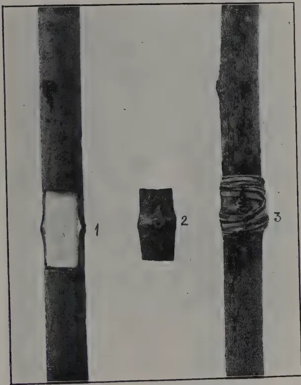
The image shows three vertical sections of a tree trunk. The leftmost section (1) shows a dark trunk with a light-colored rectangular patch of bark removed from the center, revealing a bud. The middle section (2) shows the removed patch of bark. The rightmost section (3) shows the same trunk with the patch placed over the bud and tied with several turns of a light-colored cord.FIGURE 1.
PATCH OR GRAFT-BUDDING.
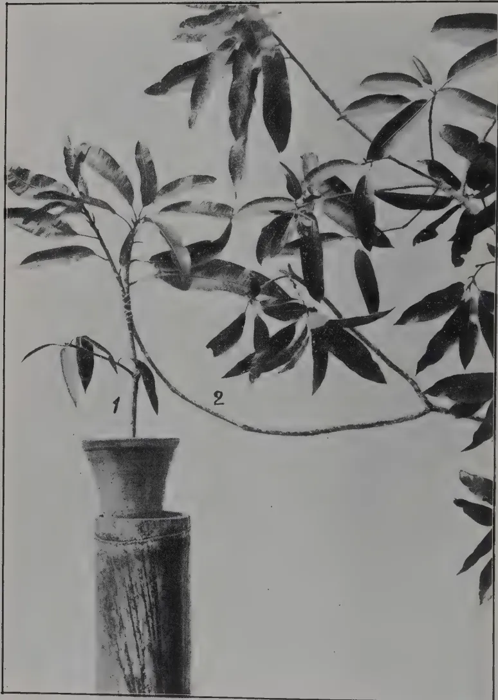
A black and white photograph showing a mango grafting process. A stock plant (labeled 1) is in a pot, and a scion branch (labeled 2) is being attached to it. The junction is exposed to show the tying method.FIGURE 2.
INARCHING THE MANGO.
The junction is exposed to show method of tying, previous to bandaging up with earth as described.
JULY, 1923.]5Gooteeing is a form of layering (see fig. 3) in which a shoot which may be made to produce roots and so form an independent plant before severing it from its parent. It may be applied to any tree, and is often practised in the case of plants which seldom produce seed. It is, however, equally to be recommended as a means of procuring true stock from specially good varieties of fruit trees. A long slanting cut is made in the shoot; this is held open by means of a small pebble, and a large bandage of absorbent soil, or soil mixed with coir-dust, leafmould, etc., surrounded by coir-fibre or other material is tied round it. If the bandage is kept moist it will become filled with roots in the course of a few weeks, when the layered plant may be severed.
For most fruit trees, pruning of some form or other is indispensable, as on it largely depends the continuance of yield, quality of fruit, and the maintenance of the trees in a healthy and productive state. Pruning can be practised so as to prolong as well as increase fruitfulness, or even to vary the season of fruiting.
Generally speaking, the object of pruning is to concentrate vigour into the fruit-producing portions, reducing excessive woodiness or foliage, admitting light and air to the centre of the tree, and eliminating sickly, diseased, or dead portions.
The proper degree of pruning varies according to kind and individual. Some trees, as mangosteens, require little or no pruning beyond being kept in good shape, while others of more luxuriant growth, as mangos, may need periodical thinning out and cutting back of the branches. Trees with naturally sparse foliage obviously require but light pruning.
The proper time to prune fruit trees in the tropics is, generally speaking, just before the flushes of new growth, which usually occur twice a year but vary according to the dry and rainy seasons. In the south-west part of Ceylon the flush or new-growth seasons are generally about the beginning of March and September. The operation of pruning, however, need not be strictly confined to these periods, and should be carried out as may seem necessary, since in the tropics almost all fruit trees are evergreen.
Periods of severe drought should be avoided for pruning of any kind, nor should the active growing season, when there is likely to be profuse "bleeding" from the wound, i.e., when the sap is most active, be chosen. Pruning should not be carried out when the trees are in blossom, nor when they are in fruit, except as a means of thinning out a superabundant crop.
The application of suitable ingredients as plant-food to the soil has an important effect on the quality of the fruit as well as on the yield. Trees vary in their requirements as do manures in their adaptability and ingredients.
Though good farmyard manure is generally the most lasting, artificial manures or fertilizers of certain types are most active in their effect and adapted to the production of fruit. Thus potash and phosphatic manures are specially beneficial.
6[JULY, 1923.The following general mixture of artificial manures is recommended for fruit trees under average conditions :—
| 1 part blood meal | | | part bone meal |
| 1 part superphosphate | | | 1 part sulphate of potash |
Apply the mixture in a circle round the tree, not nearer than 2 feet from the stem, forking it deep without turning the soil over, at the following rates :—
| Trees 1-year old, about 6 oz. each | | | Trees 4-year old, about lb. each. |
| Trees 2-year old, about 12 oz. each. | | | Trees 5-year old, about 3 lb. each. |
| Trees 3-year old, about lb. each. | | | Trees 6-year old, about 4 lb. each. |
The following are notes concerning the cultivation of a selected list of fruits :—
Pine-apples —Propagated by suckers, will thrive on any good well-drained soil, specially suited to the low-country, but will grow and produce crops up to 4,000 feet elevation; not suited to wet or badly drained soil; flat or gently sloping alluvial land, under partial irrigation, produces excellent crops. Light shade and shelter from strong winds in exposed land are beneficial.
Suckers may be planted in single rows 3 feet apart with feet between the plants in the row; a crop should begin to ripen in twelve to fifteen months from planting, and after the original plants have finished fruiting, the plot should, with due attention to weeding, mulching, manuring, and removal of stumps, continue to yield ratoan crops for another period of two years.
Oranges.—Best propagated by budding. Deep well-drained sandy loam is the most suitable soil; wet, impervious subsoil or hard laterite ground are unsuitable. Manuring and mulching are essential, and an occasional application of lime is beneficial. Potash and phosphates are the best fertilizers. The ground around the trees should be frequently stirred and never allowed to harden.
Spacing should not be less than 15 feet apart each way. Young trees should be topped at a height of feet so as to induce a spreading and evenly balanced form, thinning out superfluous, distorted, or sickly branches. The trees should commence to bear when about four years old, and be at their prime at the age of about 12 or 15 years. Good oranges are always in demand, and fetch from 8 to 12 cents each according to quality.
Mangos.—Best propagated by grafting, preferably inarching, or by (gootee layering); thrive best in deep sandy loam, specially suited to rather dry districts where the trees can be occasionally irrigated. Manuring and mulching essential. An application of fertilizer is beneficial, but growers in India and Burma generally rely on organic manure, good cultivation, and periodic irrigation.
Planting distances should not be less than 30 feet each way. Grafted plants of good varieties should begin to bear in about four years from planting. Pruning, in the way of thinning out superfluous or misplaced branches, must be attended to, an even balanced and spreading form being desired.
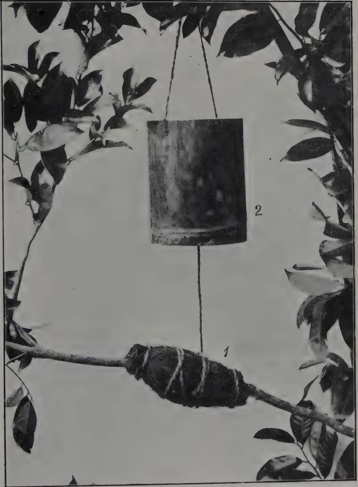
A black and white photograph showing a branch (1) wrapped in a bandage of earth tied with fibre. A bamboo container (2) containing water is suspended from a branch above, with a rope passing through a hole at the bottom of the bamboo to the bandage on the branch below.FIGURE 3.
GOOTEE METHOD OF LAYERING.
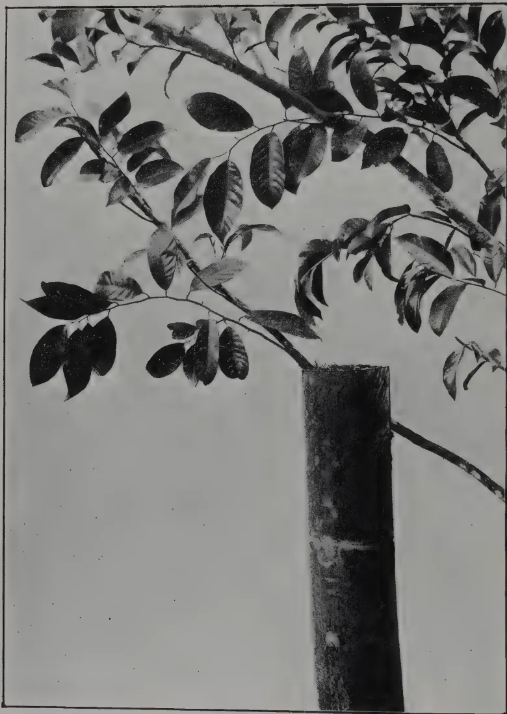
A black and white photograph showing a tree branch with leaves leaning against a vertical section of a large bamboo stalk. The bamboo is positioned upright, and the branch is leaning against its side, illustrating a method of layering.FIGURE 4.
Another method of layering, by means of a section of a large bamboo about 5 feet high and fixed in the ground. The top end, through which a slit is made for the layered branch, is filled with fine absorbent soil which is kept moist.
JULY, 1923.]7Papaw.—Propagated by seed, which should germinate in about four weeks. It is best to sow in situ in large, well prepared holes, allowing the trees to be about 12 feet apart. Three or four seeds should be sown in each hole, as some seeds may fail to germinate. The weakest seedlings should afterwards be removed, and the strongest one in each hole left. A crop should begin to ripen from the time the plants are twelve to fifteen months old, the trees continuing to yield until about two years old or more.
Good deep soil, liberal manuring, and a hot moist climate are essential. The plant is susceptible to strong wind, and does not thrive much above 3,000 feet. Good fresh fruits are generally in demand, and fetch from 12 cents each in the local markets.
Plantains, or bananas, may be said to be extensively, if perhaps not always satisfactorily, grown in Ceylon. The cultivation presents no difficulty, provided the soil is fairly good, moist, and deep, and the ground well drained, not too steep or rocky, or exposed to strong drying winds. Occasional manuring and regular mulching are necessary, all trash being collected round the base of the plants and covered with soil.
Propagation is entirely by suckers, which should be planted at distances of 12 feet each way. The first crop may be obtained about a year from planting and, when well established, a plantation, with an average of five stems to a bush, should yield an annual return of about 300 to 350 bunches per acre.
Mangosleen.—This may be called a fancy fruit, being in season for only a short period, chiefly during June and July. It is specially suited to the moist low-country, and thrives best in rich deep soil. It responds well to manuring and good cultivation, but is at best a slow-growing tree and takes seven years from seed to produce a crop, and at least fifteen years to reach a full-bearing stage. There is usually a good demand for this delicious fruit.
Sapodilla.—Best propagated by grafting; specially suited to the moist low-country, thrives best in deep rich soil, producing two crops a year. There are several varieties, which differ in shape and size of fruit. The latter when fully ripe is of a soft luscious nature, and is relished by most people. It is sometimes grown in low-country gardens, where it bears good crops. The fruit would find a ready sale in the local markets, as they do in Calcutta, where they are sometimes known as "mangosteens"
Avocado Pear.—Usually raised from seed, but best propagated by budding or grafting. There are a number of varieties in cultivation, these differing in size and shape of fruit, rather than in quality. It is more a salad than a dessert fruit, and though much relished by some people is disliked by others. There is however a general demand for it, and it sells readily in the local markets. The tree likes deep, rich soil, and thrives best at medium elevations. The principal season is July and August, but fruit may sometimes be obtained from February to May.
8e[JULY, 1923.Custard-apple, Sugar-apple, etc.—Several species of Anona known by these and other names are relished by some people, but they can only be regarded as second-class fruits, and their cultivation cannot be recommended for commercial purposes. With good cultivation and a process of selection, however, their quality could be much improved. They thrive in any good ordinary soil, provided it is deep and well drained, and are suited to elevations up to about 4,000 feet.
(B).—For Up-country.
Several of the foregoing species, though chiefly suited to the low-country, can also be successfully cultivated at moderately high elevations, say, up to 4,000 feet or higher in sheltered localities, provided the rainfall is not excessive. The following are suited mainly to the higher elevations.
Cherimoyer.—Usually propagated from seed, but grafting or budding is best. Thrives best in deep rich and well drained soil, and prefers a rather dry and sheltered locality. The Uda Pussellawa district is well suited to the tree, which does not thrive in a wet district. The delicious fruit is well worth cultivating for market, and would doubtless command a ready sale.
Tree-tomato.—This excellent sub-tropical fruit deserves to be more cultivated than it now is. It is easily grown, being propagated from seed, and thrives in good deep soil. If well looked after, it will bear fruit when about eighteen months old and continue productive for four or five years or more. The plant responds well to manuring. It should be topped when about feet high, and occasional pruning must be attended to in order to maintain a well balanced form and an even spread. The fruit keeps and travels well, and with careful cultivation can be obtained at almost all seasons. There is always a good demand for it.
Cape Gooseberry.—A low straggling or creeping herbaceous plant, which becomes easily established in up-country gardens and bears, if cultivated, all the year round. The fruit is of the size and form of a cherry, concealed in the dry leafy calyx, yellow when ripe and of a very agreeable sweet-acid flavour. It makes a delicious jam, which is exported from South Africa, Australia, and sometimes from the West Indies. The plant is easily propagated from seed or cuttings, and bears when about five or six months old.
Hill or Purple Guava, known also as China-guava.—A small tree with small thick smooth leaves, bearing a profusion of small round or oval fruits of the size of large cherries, deep purplish red when ripe. The latter is sweet and juicy, and makes excellent jam, tart, or jelly. The tree thrives best in a sheltered locality with good humous soil, bearing two crops a year if well cultivated. It may be propagated from seed or by budding or grafting.
Persimmon Kaki-, or Date-plum.—A small bushy tree of which there are numerous varieties, bearing large bright orange-yellow smooth fruit. It looks very attractive when ripe, and has an agreeable flavour resembling an over-ripe apple. It may be used for dessert or made into a preserve. The quality, however, varies largely according to varieties. The tree prefers a rather dry climate.
H. F. MACMILLAN,
Superintendent of Botanic Gardens.
(Department of Agriculture, Ceylon, Leaflet No. 28)
Why does Ceylon have to buy so much rice from other countries? India sends us rice; so does Burma. It is estimated that about 360,000 tons of rice are eaten in Ceylon in a year, and out of this large amount only 161,500 tons are grown in Ceylon. The rest has to be imported.
During the food crisis four years ago, many people had to eat less rice, because they had depended on Indian rice, and it could not be bought. If Ceylon could grow as much paddy as is wanted for its food, the money now sent to India for rice would stay in the country. More paddy must be grown. Every cultivator must make his land give a bigger crop. But that is not all. The population of Ceylon is increasing. Therefore there must be more paddy fields and more cultivators. It is not sufficient that a cultivator should grow just enough for his own family.
There are three ways by which the cultivator can get better yields. These are better cultivation; manuring; and better seed. If you want any help or information about these ways, ask the nearest Agricultural Instructor; or write, or get someone else to write, to the Department of Agriculture, Peradeniya.
Cultivation:—If you cultivate only one crop of paddy a year, don't let the land get covered with weeds when it is not in use. Use it for something. Otherwise the weeds will drop their seeds, and next year you have weeds and seedlings to get rid of. If there is enough rain or water, grow a crop of green manure, or some vegetables or curry stuffs, ground nuts, cowpeas, etc. This will bring you in a little money, and will help you to secure a better crop of paddy next year. In some districts, fields are used only for yala, or only for maha. If water is available, this is a wasteful system. Keep something on them always. Here are some hints on general treatment. Plough up your fields as soon as the last paddy crop is off. This allows air to get into the soil to sweeten it, and it gets rid of a lot of harmful insect pests. After suitable intervals, which will depend on the rain and other cultivations, give at least two more ploughings before the final muddling and levelling. Then see that your fields are properly levelled. A great deal of seed is lost in Ceylon because of bad levelling. Little pools form after the first water is let on and the young tender seedlings die out. This is always noticeable afterwards. By far the most important evil of bad levelling is that you cannot drain properly. A well-drained field yields half as much again as a badly drained one. See that the drains are all useful. Sometimes you will see drains in which the water stands still instead of flowing down. These are dangerous. With good drains you can irrigate quicker, and get rid of flood water quicker. The soil is warmer (a wet soil is cold) and the plant can get more food; also there is much less loss if the crop falls over before harvest.
Manures:—If you are going to use manure, ask your Agricultural Instructor what is best for your neighbourhood. The Department of Agriculture is experimenting with green manures for paddy. The manure at present recommended is green manure with the addition of something containing a phosphate; for instance, bones (crushed, or in the form of meal, dust, etc.), or superphosphate. These should be used at the rate of 1 to 1½ cwt. per acre (a heavier dressing is wasteful and does not pay) and applied early enough to allow them to be made useful to the crop. Green manures (which should be buried with a little burnt lime) should be applied and ploughed in at least a month before sowing. The other manures should be broadcasted and turned in at that ploughing which comes before the final
10[JULY, 1923.wet ploughing or mudding. Suitable green manures are Sunnhemp (Hana), Daincha, Wild Indigo (Pila), etc., which should be grown either actually in the fields, or on high lands which will not grow paddy. The leaves of Kaduru, Kekune, and Dadap are also suitable.
Sowing :—In selecting seed for sowing, choose a variety which takes as many months to grow as you can depend on water. The longer it grows the more paddy it gives. The seed should all be of the same type (for example, all grains of the same colour and size), and should be carefully winnowed free of all light grain. Soak for 24 hours and keep under weights until germination just begins. Do not broadcast more than two bushels per acre. Try bushel and you will see how much seed can be saved. Keep the fields dry for a week, and then allow only just enough water to wet the soil at first and run off again. Keep the water down in the early stages to encourage the plants to send out side shoots. If you water freely at first, there will be one or two ears on the plant; if you water carefully, there may be ten, twelve, and so on. At this stage, destroy all crabs. They cut down the young seedlings. Kabaragoyas feed on crabs, so do not shoot the Kabaragoya. Keep your bunds clean, and keep weeds out of the fields. If your cultivation was buried and included only one ploughing, you will have lots of weeds. More ploughing, slowly done, keeps the weeds down. It is difficult to weed a broadcasted field because the plants are close together. It is a good plan and gives a better crop, to go through the fields when the paddy is 10 inches high, pulling out all weeds, and also some of the paddy, leaving the young paddy plants not closer than 4 inches apart.
Harvesting :—When the paddy has flowered, begin to reduce the water immediately, coming to complete dryness about a fortnight later. The paddy fly attacks the grain just at the stage when the grain is forming—when the inside of the grain is milky. If you keep the fields wet too long, you hinder the plant from ripening. If you keep the soil dry, the grain soon dries out and gets hard, and the paddy fly cannot harm it. When the harvest time comes, see that the fields are quite dry. Ceylon paddies usually fall over (lodging as it is called), and if there is water in the fields, the ripe grain gets wet and may germinate on the plant. In any case it is unsuitable for seed afterwards, and loses its good flavour. The crop is taken with the sickle. If the straw is of no value, a fairly long stubble may be left, as this will do good when ploughed into the fields. In most cases, straw is highly valued, and everyone should save their straw from being wasted. See that the grain and straw are fully sun-dried before threshing takes place. In threshing, whether by buffalos, or over poles, etc., keep the paddy from getting mixed. This should not be difficult, as one district keeps to its own paddy. But so often last season's threshing floor is used again, uncleaned, and in this way yala and maha paddies get mixed. Good winnowing is essential, and the grain should then be sun-dried for several hours before being stored. This keeps away the moth.
Storage :—There is no room here to say much about storage. Gunny bags are as bad as they could be, as every moth can find its way in. But the various vessels used in India (for example, the mud Kothis, the Straw Pura, etc.) do not find favour in Ceylon. The grain should be stored as quickly after threshing as possible, before the moth can attack it. It should be taken when it is still hot from the sun. Mud bins are very good for storage. The Bissa, seen in certain parts of Ceylon, is good, if the seed is properly protected from rain. There should be no opening through which moth can enter. All cracks should be carefully sealed with cowdung.
Seed Selection.—A sample of mixed seed should never be sown. A mixture of types gives you a yield which is the average of the types. If, from your mixture, you pick out certain classes and grow them to see which
JULY, 1923.]11are good and which are bad, you will see one easy method of improving your crop. There is a paddy known in the North-Central Province as Mupangan, which is composed of a mixture of four other paddies—Tilanayakam, Anaikodan, Marungan, Ilankalayan. It is known that this paddy is a mixture, and yet the cultivator grows it. If he would take the trouble to find out which of the four types is giving him the best yield, he would get a much better crop. This is being done at Anuradhapura by the Department of Agriculture. The cultivator who attends to his work carefully can easily make a big improvement by going round his field, just after flowering, noting the best plants (big grain, healthy, with a number of well developed ears). They are readily noticed at this time. Each should be marked with a bit of string or cloth. At harvest time, these are threshed separately under the feet, carefully winnowed, and hand picked for stray grains. The sample should be uniform, and this is perhaps the most important point to look for in choosing the ears. Sufficient is gathered for next season's sowing in this way. It is well sun-dried and put into chatties filled, very nearly up to the top. At the very top a layer of fine dry sand is placed. This, if put in a dry place, e.g., over the fire-place (ආශ්රිත), will keep perfectly well, and ensures a good sowing for the next season. Only the best plants, all of the same type, should be used. Each season this collection must go on, and the improvement in yield will pay for all the trouble taken.
The benefits of transplanting, when the paddy used takes more than three to three and a half months to ripen, are obvious to anyone who has once tried it. Less water is needed, because during the first week after sowing no water is required, and again for a week after transplanting no water is required. Also the nurseries do not require so much water as a broadcasted crop. There is a saving of seed. Half a bushel of seed will give seedlings to plant up more than an acre and allow for any accident. The plants are sturdy and healthy. They have more ears per plant than when broadcasted. The straw is usually more plentiful, and the yield of grain is undoubtedly raised. The disadvantage is the amount of labour required, but if this is weighed against the saving of seed and the increased crop, the disadvantage disappears if any labour at all is available in the district. A nursery bed of one acre will produce seedlings to cover about ten or fifteen acres when transplanted. The nursery bed should be prepared on the best portion of the field, where irrigation is easy and drainage is good. It is not good policy to choose a poor patch of soil for a nursery, thinking that as the seedlings are only in the ground for three weeks or so, any place will do. The seed is germinated in the usual way and broadcasted fairly thickly. The beds are kept dry for a week, when water is run on to soak the soil, and then run off again. The treatment is very similar to that of a newly broadcasted field, but less water is required. When the plants are about 8 to 10 inches high, just before they begin to throw out side shoots, they are ready to transplant. The nursery should be well flooded, and the seedlings uprooted with as little damage to the root as possible. They are then tied in bundles for easy handling. Before a bundle is used, the leaves are twisted off, leaving about 6 inches above ground level. This gives the plant a better chance by reducing loss of water through the leaf. The plants are then set into the mud by ones or twos at 3 to 6 inches intervals. Single planting gives as good results as double planting, and is less costly in seed. The transplanted field is left for a week without water to become established, and then water is gradually let on. Sometimes a broadcasted field will be thinned out and the seedlings so gathered will be used to transplant other fields, but the process to be recommended is to have a separate nursery, which, when empty, is sown down with a green crop by which the fertility of the soil is maintained.
R. O. ILIFFE,
Economic Botanist
J. C. ABAYAWARDENE,
Agricultural Instructor, Agalawatte.
The paddy growing experiment based on seed selection for paddy cultivation under my supervision at Kamburawala in Magura Palata, Pasdun Korale East, Kalutara District, was started early in September, 1922. D. D. KULASEKERA, VEL VIDANA ARATCHCHI of the same division was in immediate touch with the work. The paddy field (Arawa) where the experiment was carried out is situated between the 5th and 6th mile posts along Agalawatte-Baduraliya road on to the right.
To start with the boundary clearings straw and other refuse were burnt in the field. Subsequently rain water rich in sedimentary matter was stored up for about 14 days in the field, which had formerly been baked by hot weather for the purposes of aeration and actions of heat and light. 14 days after when the water had deposited the sediments, it was let out and the turning up of the wet soil with mamoties and the covering up of the weeds was done. Water was let in again and allowed to remain for another 14 days to kill the weeds entirely. A second digging with mamoties made the mud loosen its texture. Wood ashes and decayed farm yard manure were then sprinkled lightly after which the mud was puddled to turn it into a still finer form for the easy growing of the seedlings. Finally complete levelling was necessary to sow the seeds. To make weeding easy at later stages the field was divided into strips of 3 ft. width by means of water channels. This new device facilitated the strong growth of the paddy plants thus supplying an equal quantity of water to all the plants. Then the field was quite ready for the seeds to be broadcasted evenly. Four bushels of paddy called "Ratatawalu" which were carefully hand picked after winnowing were sown on the 15th of October 1922 in (2½ pelas) 2 acres.
Bright sunshine prevailed and the seeds sown sprang up into a soft flush of greenery. Thereafter a fair amount of rain supplied the necessary watering and regular weeding was done wherever found necessary.
Three months after the sowing the seedlings had tillered into beautiful green bushes and were just completing the stages of growing and storing up food material. This was outwardly seen by the swelling up of the stalks of plants. Soon they flowered and the ears formed into heavy arch like clusters. Just when the leaf tips were getting yellower the water supply was stopped. Again with the dry weather it was ready for harvesting which was done in March 1923. The complete crop totalled up 85 bushels in 2 acres. The straw was not very suited for feeding cattle because of its roughness.
JULY, 1923.]13The paddy cultivation competition in Matale South this year was quite a success. There were 117 competitors and out of these 77 had manured their fields with farmyard and green manure and the fields transplanted; whilst the rest had applied green and farmyard manures and the fields broadcasted and thinned out. The large number of competitors was due to the attractive prizes offered for competition, and if this is carried on for some time cultivators could be induced to take part in the competitions and thereby get them to adopt the improved methods of cultivation. The results obtained from the competition plot have been satisfactory, and in almost every case it has given at least 2 to 3 bushels more than the adjoining fields and this has more than repaid them for the additional expenses incurred in manuring etc.
The judging was done in the company of the Ratemahatmaya and the Korala and when the Ratemahatmaya was unable to attend owing to other important official work the Agricultural Instructor, Matale East assisted in the judging. The results of the prize winning plots were very satisfactory when compared with the average yields of the unmanured areas in the same place. The four prizes have been won by cultivators who manured their fields and transplanted. The tillering of the four fields was very good and on the average every plant had 8-10 tillers, whilst some had 20 to 24 tillers. In every case the height of the plants were over five feet.
The following is the list of prize winners :—
1st Prize—P. S. L. B. AMUNUGAMA, Tenne
2nd ,, K. B. NAWARATNE, Purijjala
Honorary Mention—UKKU BANDA ARACHCHI, Warapitiya.
1st Prize—KAPURU NAIDE, Alutgama
2nd ,, ANDIRIS HAMY, Dembawala
Honorary Mention—MUTU BANDA V. M., Pamunuwa.
WALTER A. UDUGAMA,
Ratemahatmaya, Matale South.
GRATIEN DE SILVA,
Agricultural Instructor, Matale, Judges.
The following are the results of Paddy Manurial Experiment conducted at Bibile by Agricultural Instructor Rambukpota.
A one acre plot was broadcasted with a four-month variety of paddy called "Kalubalawi" procured locally. The seed was sown on 4th January, 1923, and the crop harvested on 15th May. The soil was of a loamy clay and an application of one cwt. of Bone Meal was made
The yield was 25 bushels as against 18 bushels from the control plot. The experiment will be repeated.
14[JULY, 1923.Cotton picking is the great problem of the cotton growing industry, though certainly not the only one that will have to be contended with in Australia. Many attempts have been and are still being made to perfect a mechanical picker, but so far without much success. The best brains in America have devoted time and study towards solving this world-wide problem, without so far achieving any definite result. Still, there is hope for the future, and it is quite possible that a mechanical picker can be perfected that will pick cotton for per lb. It has been pointed out that in pre-war days, in America, the cost of picking was per lb., and that at that price not much incentive was given to develop a picking machine. Now, however, with the rapid rise that has taken place in the cost of living in that country, and the consequent rise in wages and the cost of picking, inventors and engineers are now turning to the perfecting of a machine that will assist very materially the old hand method. Already in this country several people have taken up the problem of machine picking seriously, and Australians, with their proved inventive ability, can be relied upon to tackle the task, as they have others, that, on the surface, seemed impossible.
For the present the hand picking of cotton is the only way there is of harvesting the crop, and the British Australian Cotton Association, Limited, furnishes the following useful hints and suggestions, which will enable pickers to do the work in the best way and with the least cost. Cotton picking may be a little tedious, but it is certainly not laborious. It calls for a quickness of the hand and eye, and a degree of physical strength not apparent to an onlooker. The methods of picking followed are numerous. In Queensland last season many people picked into kerosene tins, which were then emptied into large sacks. Others had a small bag that was fastened on in front of them and would hold about 10 lb. of cotton. The drawback of this method, as with the kerosene tins, is that one loses time emptying it, and the weight of the cotton is all on the body. This hampers movement.
The usual American picker uses a canvas bag about 2 ft. wide and 8 ft. long. A simple, cheap, and very serviceable cotton picking bag to correspond to this can be made in the following manner :—Take two corn-sacks and sew them together from top to bottom, cutting the bottom of one. This will give a bag 8 ft. long. Tie a strap on top of this bag to go over the right shoulder so that the mouth of the bag is on the left side just above
JULY, 1923.]15the hip. If the two ends of the strap are tied on to the bag, at a distance apart of less than half the circumference, the mouth of the bag will always stay open. This bag will cost 1s., can be made in a few minutes, and will be found to last for a considerable period. The bag is dragged on the ground between the rows behind the picker; there is no weight on the picker's shoulders, and it will hold about 40 lb. of cotton.
Many erroneous ideas exist here as to cotton picking, one being that cotton must be picked as soon as the boll opens. This, the Association points out, has resulted in pickers going over their fields numerous times, with the consequently low tally and high cost of picking. The cotton can remain on the bush for at least two or three weeks without being damaged. Nature protects the cotton fibre by enclosing it in wax, and the seed cotton is non-absorbent. A continuous rain for many days would, of course, tend to stain the cotton and lower the grade, but a day or two of heavy rain, such as is likely to be experienced here, followed by a sunny day, would not stain or damage cotton. Field experts have seen a Queensland field of opened cotton, on which during May and June 10 in. of rain fell, and yet not over 1 per cent. of the cotton was damaged. Operators should wait until one-quarter or one-third of the cotton is open before starting to pick. Three pickings over the field will be all that is necessary; and the last one being made after the frost has checked the bush and opened all the green bolls.
In many cases two pickings will be quite sufficient, the first taking the biggest percentage of the crop. Do not mix the cotton from the separate pickings—send them to the gin as picked. The last picking after the frost has checked the bush is usually of a lower grade owing to the presence of immature cotton, and should always be sent to the ginnery separately, never mixed with the previous pickings.
In picking, the operator should start on the outside row, and pick one row at a time. They will find faster picking can be done than by taking two rows at once. They should work their rows so that the long bag is dragging between two picked rows and so not damaging any open cotton bolls. The American picker wears leather knee pads, going on one knee to pick the bottom bolls. The art in cotton picking is to work with both hands, each independent of the other. The actual picking is not a straight pull out, but the fingers and thumb fit into the lock of the boll and the hand is given a twisting or levering motion, bringing the cotton away. A good picker will pick three or four bolls, keeping the cotton in his hand before transferring it to his bag. This is an economy of motion, and will save thousands of movements of the hand in a day. In commencing picking, get into the right method from the start; speed will come later. Pick with two hands at the same time. Avoid getting leaves and trash in with the cotton, and do not commit the worst cotton picking offence—leaving a part of the cotton in the open boll. Cotton left in this way is lost, as no picker could be expected to get these small pieces in a following picking.
16[JULY, 1923.By leaving a small piece of cotton in every boll a good percentage of the crop would be left on the bushes. Pickers need not lose time in the morning waiting for the dew to dry. The cotton be picked with the dew on it, but that cotton must be spread out in the sun and dried. After rain, wait until the cotton is dry before picking. Be careful not to pick green or immature cotton, that is, cotton from partly opened bolls. This cotton is damp, and can be instantly recognised from the fully matured and dry cotton. Cotton, that is, dry and from fully opened bolls requires no drying or treatment after being picked. It can be packed into bales or sacks in the field, so avoiding any unnecessary handling.
The ordinary woolpack will hold about 350 lb. tramped in with the feet, the chaff sack about 90 lb. The Australian Cotton Association will return a woolpack to growers in place of the one received on receipt of 6d. each to cover handling and freight. No chaff sacks will be returned. Woolpacks cost about 3s. 6d. each, and can be used many times. All bales or sacks must be plainly branded with the grower's name and address. This will avoid confusion and the trouble of identifying packages. In the field a frame could be made to hold the woolpack, and the pickers empty their bags into it, and the cotton tramped into the bale. Where chaff sacks are used a slide about 3 ft. wide and 6 ft. long having a platform of this size 4 ft. from the ground will be found very serviceable. At one end of the platform is a circular opening with a hinged iron ring, to which the sack is fastened. The cotton is emptied out on to the platform and some one standing in the bag hole tramps it in. When the sack is full, the back of the bag hole is detached, releasing it. The advantage of this to the cotton picker is that being on a slide it can be hauled about to any part of the field, thus avoiding long carries by the pickers of their full bags.
The amount of cotton picked in a day depends on the ability and quickness of the pickers, the yield per acre, and the cleanliness of the crop. A field free from weeds means a cheaply picked crop, and this fact should not be lost sight of in the growing and cultivation of cotton. In starting out, if a man picks around 75 lb. in eight hours, he will be doing very well. Speed will come with experience, and in a few weeks he should work up to 100 lb., and if he is going to make a cotton picker will surpass this figure in good average cotton. Growers should have in the field a scale to weigh the pickers' cotton as they bring their bags in, and three or four weighings during the day will be found quite sufficient.
The acreage of cotton that one man will be able to pick will, of course, depend in great part on the yield per acre, and his ability. A man who can devote all his time to picking will be able to handle 8 acres. This is taken for a very conservative case of a yield of 800 lb. of seed cotton to the acre, and an average daily picking of 80 lb. This crop would require 80 days' picking, and allowing 20 working days to the month, this will mean continuous work for four months, which is the average length of the picking season in this country. White American pickers do from 150 to 200 lb. a day, and it is felt to be certain that Australians, when they take up cotton
JULY, 1923.]17picking seriously, will equal, if not surpass, this. The best cotton picker one expert ever saw was an American, who averaged 300 lb. for a nine-hour day over a considerable period. This was done in a field that went 2,300 lb. seed cotton to the acre, and in which only two pickings were made. He points out that this is, of course, an exceptional record.
Great care must be taken to avoid getting matches, pieces of metal, or other material in with the cotton. The cotton is very inflammable and a spark in the machine during the process of ginning, will instantly cause a fire. The gin is a series of small circular saws, set close together on a spindle, and running between steel ribs, so that a match or piece of metal striking the saws may result in a fire, the metal also damaging the teeth of the saw. Last season many fires occurred in the gins at Whinstanes and Rockhampton, due, in every case, to foreign material in the seed cotton. The collection of articles rescued from last season's cotton was wide and diversified, ranging from pumpkins and eggs to watches and clothing. Corn cobs are a source of much trouble, as they are readily carried to the saws by the fibres adhering to them, and holding them against the breast, thus causing great damage to the saws, the teeth of which are thus broken. The bagging of the cotton in the field as suggested will avoid the inclusion of these articles, and growers should prohibit the use of wax matches by pickers or any one handling the cotton. A spark from a cigarette falling into a bag of cotton may smoulder away for days before reaching the air, and bursting into flames. This matter is important, and too much care cannot be taken to lessen the risk of fire in cotton gins.—QUEENSLAND AGRIC. JOURN., VOL. XIX, Pt. 4.
The second annual report, for 1921, of the Cotton Research Board, issued by the Egyptian Ministry of Agriculture, indicates clearly that the improvement of the cotton crop, with which the prosperity of Egypt is so closely connected, is being seriously dealt with by methods of research. The Board has given special consideration, among other matters, to the decline in yield; two-year versus three-year rotations, and control of seed used for sowing. A summer fallow appears to be of great value in maintaining the fertility of the soil, as the temperature of the surface soil rises sufficiently high to have a partial sterilisation effect by suppressing the harmful factor which has been shown to exist in Egyptian soils. The value of Nile silt as a fertiliser seems hitherto to have been exaggerated. Yield may not be much affected by reduced watering, but quality may be adversely influenced. Work is being done on the extraction of pure lines, propagation of selected strains and field tests of commercial varieties, in order that types may be selected that shall be most suitable for the purpose required. Special efforts have been made to find a method of controlling the sore-shin disease, the usual means being ineffective or impossible of application on a large scale. Various reagents have been used for soaking the seeds, and the effect of sowing on different dates has been tested, but no conclusive results are yet available. Insect pests are also receiving attention, pink boll-worm and cotton-seed bug being under investigation.—INDIAN SCIENTIFIC AGRICULTURIST, Vol IV., No. 4.
18[JULY, 1923.The pine-apple has for many years been grown in the West Indies. With the exception, however, of Cuba and Porto Rico, and to a lesser extent Jamaica, Bahamas and Bermuda, and small areas in other islands, notably in Martinique, little has been done to commercialize this industry. Yet the opportunity offered in most of the islands are as good as that of any fruit, and considerably better than some. In fact there would seem to exist no good reason why pine-apples cannot be successfully grown in this and other colonies either as a main fruit crop, or as a subsidiary to some other species, if the proper degree of knowledge and business acumen is brought to bear on the subject. It is therefore with the object of arousing some interest in the possibilities of this crop that the following notes have been collected.
As regards soils suitable for pine-apple growing, there is a considerable range of types to choose from on which the crop may be successfully raised, but although these soil types may be superficially different they must all fulfil certain conditions. The soil should be of a type that is well aerated—composed of rather large particles. Very fine sands and heavy clays are unsuitable for the reason that they pack too closely, and the latter type is one which is difficult to keep clean of weeds. The soil must be well drained. Stagnant water and lack of air around the roots is fatal. Plants on such land are not likely to reach maturity. Also soils containing an excess of lime or manganese are unsuitable. Plants on such soils are sickly in appearance and fail to fruit normally. The best type of soil is a freely drained clay or sandy loam with a fair percentage of organic matter.
Of all the known varieties at present there are only two, or at most three, which are worthy of consideration for commercial planting, although some of the others may meet the conditions of a limited local or home market. The only variety which is at present planted extensively for commercial purposes is Red Spanish, because it is the one which, besides producing prolifically a fair quality fruit, is more adaptable to varying conditions than any of the others. The next most popular is Smooth Cayenne which produces large fruits of fine quality, but they do not yield as heavily as Red Spanish require special packing, and do not do well in all locations. The Cabezona or "Bullhead" of Porto Rico is a very large fruit, but it is somewhat coarser than Smooth Cayenne, and open to similar objection. Less known kinds, such as Black Antigua, Sugar Loaf, etc., are suited only to local trade. They are most of them delicate fruits, and rather unsatisfactory producers.
The pine-apple like the banana produces one fruiting stalk, bearing at its extremity a compound fruit, and from different points on the stem the plant throws out a number of suckers and shoots, after which the original plant dies, and the following year's crop is produced by one or more of the strongest suckers. All of these growths arise from buds which develop at different points on the stem of the original plant, below or above ground. Ratoons are those shoots which originate below ground, and they grow and develop into new plants. Suckers differ only from these in that they originate from buds on the stem above ground. "Slips" is the term
JULY, 1923.]19applied to the smaller shoots which develop immediately below the matured fruit, and crown slips is the rosette of leaves at the apex of the fruit. All of these will grow and produce new plants and fruit if placed in contact with the soil so that roots may form, but the smaller they are the longer time will be required to produce a crop. Ratoons, or "slips" are all equally desirable for planting purposes provided they are of a good size. Ratoons and suckers are best planted when 6 to 8 inches high, but slips should not be less than 9 to 10 inches. The latter will be smaller than this in most cases at the time when the fruit is removed and they will require to be left attached to the mother plant for several weeks longer. Regardless of variety and kinds of plants used, these should as far as possible be selected only from healthy prolific plants.
The base of the stem of the young plant is covered with closely adhering immature leaves, and although the plants will take root if planted without removal of such it is usually advisable to remove some of these leaves, so as to lay bare an inch or more of the underlying stem, and thereby hasten root formation and the establishment of the plant in the soil.
Land to be suited to pine-apple planting must be very well prepared, and it is advisable to avoid soils which are impregnated with bad grasses, as it is difficult to control these after the crop is planted, and such foreign growths are very injurious to the plants.
If forest land is to be used the clearing will have to be very thoroughly done, and most of the tree roots removed before planting. In the case of grass lands, or old lands generally, ploughing and harrowing must be repeated with sufficient frequency to kill the last vestige of grass before planting is attempted. Under no circumstances must pines be planted on land which is not thoroughly prepared.
Pine-apples may be planted according to several systems, depending on the nature of the soil and other conditions. They may be planted on the level, or on ridges or beds, of varying width in single or double rows, or many rows together. The lighter soils may be planted flat, but unless drainage is very free the plants should be planted in ridges or beds of suitable width. It is always preferable to plant several rows together, so that at maturity the leaves of the plants interlace and afford a support to each other, and thereby prevent to a large extent the bending over of the fruiting stalks which results in more or less sunburned fruit. Unless however, the land is perfectly clean and free from weeds this cannot be done, and resort must be had to single row planting.
In the single row system plants are set 12 to 15 inches apart in rows 5 to 6 feet apart on banks or on the flat. In the double row system, usually in beds or banks, the plants may be set 12 to 22 inches each way, depending on soil conditions and variety. On wider beds containing 3 to 6 or more rows the plants are set 15 to 24 inches apart leaving, in the case of all beds containing more than one row, a space of at least 6 inches on the outside edges.
Subsequent to thorough preparation of the soil, the beds are best formed by throwing a sufficient number of furrows together with an ordinary turn plough, so as to obtain the required width, and leaving strips of land 5 to 6 feet wide between each bed or series of rows, so as to permit of handling the fruit. The beds when thus formed may be smoothed off with hand tools, and the spaces between the beds kept clean by horse cultivation; or this space may be used for rapidly growing catch crops of various kinds, provided such are not permitted to encroach on the main cultivation.
Naturally this variation in planting system results in considerable variation in the number of plants required per acre. Single row planting,
20[JULY, 1923.with plants set 15 inches apart, will run from 5,800 to 11,600 plants per acre, according to the width of the rows. Double rows, with plants 15 x 15 inches, 9,500 to 16,300 and wider beds 10,000 to 18,000.
The intercropping of pine-apples with such plantings as citrus or other fruit trees is not always to be recommended, for the reason that both crops are liable to suffer unless carefully handled. However, the planting of say 4 to 5 rows of pines between each row of trees is quite feasible if properly done, and affords a convenient method during the first 3 years of the plantation of obtaining some financial return. The number of plants required to plant an acre is of course less under this system than would be the case if planted alone.
If pine-apples are to be successful they must be grown under an intensive system of cultivation and manuring. To do otherwise is certain to result in a large proportion of undersized fruits, and a considerable percentage of plants which will not bear at all. If the land has been properly prepared in the first place the after cultivation to keep down weeds, if done at frequent intervals, will be comparatively simple. Manuring should begin as soon as the plants are set out by dropping a spoonful of Cottonseed Meal in the heart of each plant. A month after applications of some good commercial fertilizer should be made to the soil close to the plants and continued every 4 months until the plants show signs of flowering, after which manuring should stop. The amount of fertilizer it will pay to supply will vary with local conditions. Under average conditions 1 ton per acre will be advisable, and it may be more, where 10,000 plants are contained in that area. Naturally with an increase or diminution in the number of plants the quantity applied should vary. The total amount should be divided into 3 to 4 applications as indicated. In the case of the crop being ratooned, fertilization should start again immediately after the removal of the crop of fruit.
The fruiting season is not always well defined in the West Indies, but usually 15 to 18 months is required for a slip or sucker to mature fruit. The period of maturity largely depends on the size of plants used, soil, fertilizer, and the season. A field well cultivated and weeded bears sooner, and the life of the plantation will last over a greater number of rattoon crops than one which is less efficiently cared for.
The important factors in yield are the number of fruits and the size. Plants which either do not bear, or bear only small undersized fruits are generally not profitable; and it should be the aim of the planter by efficient methods to reduce to the lowest possible proportion such unprofitable plants.
Pine-apples may be disposed of in three ways, viz., in home or local markets, by exporting, or by canning. The first of course is limited in amount, but fruit sold in this way largely solves the packing problem. With fruit sold for export the case is different. This means the growing of suitable varieties and the inauguration of a modern packing system. There would not appear however, to be any insurmountable difficulties, especially if the export trade were worked on a standardized or co-operative lines in connection with a canning plant.
This is a logical method, of not only disposing of fruit unsuitable for marketing, but it affords a means also of largely overcoming difficulties in regard to shipping fresh fruit over long distances. It is almost a necessary adjunct to any fruit industry conducted on a considerable scale as a protection to the grower against losses, and as neither the machinery nor buildings required are expensive, the necessity of a large capital outlay is avoided.—BULL. ON FRUIT CULTIVATION IN TRINIDAD AND TOBAGO.
JULY, 1923.]21BY "PLANTER."
The pepper vine (Piper nigrum) is largely cultivated throughout Coffee estates in South Coorg and Wynaad. Perhaps this is one of the reasons which account for the diminishing of coffee crops, for the pepper must rob the coffee of a large share of nourishment. This seems abundantly evident from the deteriorated appearance that coffee wears where a large number of vines are planted to the acre. Pepper is also grown separately in Wynaad and Malabar. Attempts to form gardens purely of pepper have not succeeded in Coorg, perhaps because it did not receive all the working that it receives when planted amongst Coffee. In the latter case it does not require any special attention, the cultivation carried out for the coffee sufficing for it also, so the produce forms a by-product, the only expense incurred, after planting it out and tying it to the standard when ever this is required, being the gathering of the crop, which sometimes costs Rs. 100 per ton, especially if labour is scarce. The crop is sometimes sold directly off the vines to Moplah Contractors, who make offers for it, and do the gathering with their own labour. It would not pay now-a-days with no prospect of there being any improvement in the prices ruling for the spice, to open a purely pepper plantation as there would be such a long period of waiting—some 7 or 8 years—before the vines began to bear anything like a decent crop.
When pepper planting was first taken up in South Coorg there arose such an enormous demand for cuttings that unscrupulous vendors took advantage of it to palm off bad jals on the unsuspecting planters, and, owing to ignorance on the part of the latter of the distinguishing characteristics of the good varieties, estates became largely stocked with the worthless Ooltherankolay variety. This jat is most appropriately named. It means literally scatter-bean, and its chief distinguishing feature is that it sheds the greater portion of its berries throughout the season. There are, besides the common jungle pepper, three good varieties, which have not earned a botanical nomenclature for themselves as yet, and are known even amongst Scientists by their Malabar vernacular names. The best of these is rightly held to be the Balamcotta, as it is a strong grower and a heavy bearer, and it possesses the advantage of flushing all over at about the same time so that the crop can be harvested at one time, which is very advantageous from a planting point of view. The Kalually is a better cropper than the Balamcotta; as, however, it produces fresh sets of spike during the year, it is not considered suitable for planting as the disadvantage of harvesting the crop over a longer period would be great in case there were labour difficulties. The Cheriakodi is a dwarf variety under 15 feet. It is quite a useful form for planting, as the spikes, though small, are usually closely packed with berries. DR. BARBER, Government Botanist, Madras in 1906 recommended as good for propagation those vines in which the flowers are well provided with stamens as it is not safe to be guided by the crop, "for many vines are occasional bearers and wild pepper is sometimes laden with masses of berries of large size."
It had not been determined as to "the means by which the pollen of the stamens are transferred from the pollen sacks of one spike to the stigma of the other." Whether this has been ascertained for certain since, I have
22[JULY, 1923.no means of knowing. Opinion is divided as to whether the fertilisation of the blossom takes place during the heavy driving rains of the Monsoon, or during showery weather with intervals of sunshine as flushing takes place under both conditions. It is supposed that the splashing of the rain dashes the pollen over the whole plant, the wind assisting in the matter. It seems quite immaterial whether the pollen is saturated, but pepper bears well only once every alternate year, and sometimes takes three or four years to recover from the effects of overbearing.
As regards the pests and diseases of pepper, it is sometimes subject to a flat, thin and papery scale with a pale yellow central spot, but by far the most serious disease that attacks the vines is the "wilt" disease. As to the former, MR. GREEN, the Government Entomologist, Ceylon, says he has never found Aspidiolus destructor (the scientific name of the scale) a serious pest. He says it is probably kept in check by the Coccinellida which are almost constantly in attendance upon it.
The symptoms of the latter (the wilt disease) are thus described by DR. BUTLER:—"In a healthy full-grown vine the trunk of the standard is entirely hidden in a mass of foliage. This arises from a number of climbing stems which closely embrace the standard and secure themselves to it by numerous tufts of ærial lateral roots. When such a vine becomes diseased, the first symptoms noticed is an appearance which was described to be as a "staring" look about the vine. This is due to a loss of rigidity in the leaves and leaf stalks, resulting in their drooping. With the collapse of the leaves the dense covering of foliage becomes diminished, and the stalks of the vine and patches of the trunk of the standard come into view. The next noticeable thing is that part of the climbing stems fall away from the standard, as a result of the death of the clinging roots and consequent relaxation of their grip. Soon the leaves begin to turn yellow, and numbers of them are shed. Later all the vine withers, and the standard remains lightly festooned with relaxed stalks bearing a few dried leaves. While the upper part of the vine makes no attempt at recovery, the lower part often retains sufficient vitality to form new leaves, or even to throw out fresh shoots. But these in turn succumb, and I have not come across any case of recovery once the leaf-dropping has commenced." DR. BUTLER, regards a "Nectria" as the cause of the disease, death resulting from the obstruction of the water-supply by the mycelium in the vessels and the gum formation which its presence induces, says MR. PETCH the Scientific Officer of Ceylon, though he himself was not quite satisfied that the cause of the disease had been fully determined. MR. R. D. ANSTEAD and MR. MACRAE, the Assistant Imperial Mycologist were agreed that the disease was caused by a fungus which enters the roots, gaining ingress through wounds produced by forking and other means. MR. ANSTEAD says, "The fungus produces its fructifications on the outside of the stem, breaking through the bark some where in the first foot or two above ground-level and forming bright scarlet masses full of single-celled spores. These are disseminated by wind and water and rapidly germinate and attack the vines through the medium of root wounds. Later on, another kind of fructification is formed consisting of dark crimson spore cases full of two-celled spores which are able to resist drought and carry the fungus on from season to season. Hence it is most important to burn dead and dying vines to prevent the spores formed on them from being disseminated and spreading the disease."
Pending the production of a vine highly resistant to the disease, which, as was pointed out by MR. MACRAE would be the final remedy but which was bound to take time as vines were so slow in growing, the following preventive measures for combating the disease were recommended by MR. ANSTEAD after consultation with MR. MACRAE: (1) Cutting off the vines
JULY, 1923.]23should always be chosen from vines which have remained persistently healthy in the midst of a diseased field, if such can be found. (2) Pepper cultivation should be well drained by a system of drains, 8 inches deep, so as to keep the bases of the vines free from stagnant water. (3) Every vine, healthy and diseased, should be sprayed at least once a year with Bordeaux Mixture. The bottom three or four feet of the stems should be well drenched with the mixture. (4) As soon as ever a vine begins to show signs of the disease, the area covered by the roots should be given an application of slaked lime at the rate of 4 lb. per vine, broadcasted on the surface, and a trench should be dug round it to a depth of 2 feet, the soil taken from the trench being thrown inside to cover the lime. (5) If forking is done at all, it should be done very lightly so as not to wound the roots and form points of entry for the fungus spores. Cattle-manure should be applied as a mulch and covered over with leaves. At all times the vines should be kept heavily mulched. This will enable forking being dispensed with. (6) Fields should be kept clean; all diseased and dead plants should be cleaned up and burned.
The growing of some catch crop between the pepper standards is recommended, either Cassava or Ragi. With failing crops and falling prices it is only reasonable to expect the unused land between the standards to bear its share of the expenses. Previously coffee used to be grown in many cases, but has disappeared from one cause or another, and its place has been taken by a rank growth of weeds and grass.
The Taliparamba Agricultural Station established by Government in North Malabar about 6 miles from the sea coast with a view of studying the cultivation of pepper is doing good work. Experiments have been carried out with various green manures and fertilisers. The plot sown with sunhemp showed considerable improvement, but how far this is due to the green crop or to the extra digging it is impossible to say. In the Cassia lora plot the increase in the yield is said to be probably due to the more thorough digging necessary when green manure has to be sown. It is curious that the increased yield should be attributed to the digging when planters have been warned against forking as a cause of inducing "wilt disease."
Though the plot to which ashes alone were applied gave an initial increase of crop it has retrograded. This is probably due to the want of nitrogen and phosphates. The fish manure plot has shown steady improvement. Though cattle manure has not shown any marked improvement in the vines yet it can be said that they have not gone back as they had done in the majority of the plots. Gingelly oilcake produced almost identical results as cattle manure. Lime and leaf mould appear to be the best fertiliser for pepper. Though the plot to which they had been applied was partly low-lying and badly drained, and so miserable in appearance generally that it was hardly thought worth while to continue to cultivate it, it improved out of all recognition. The result from leaf mould alone was little inferior to the above.
As regards methods of cultivation, the practice common in Wynaad and South Malabar of moulding up the bases of the vines appears beneficial. The plants stand the hot weather well.
Since the station has been started, each year, at harvest time, the best-bearing vines in each plot are harvested separately with a view of selecting the best strain of vines for propagation.—INDIAN SCIENTIFIC AGRICULTURIST,
VOL. 4., No. 4. 24[JULY, 1923.Animal parasites for the purpose of description are placed in three branches, viz. Arthropoda, Vermes and Protozoa. In the branch Vermes such parasites as the worms and liver flukes are included, and in the case of Protozoa small unicellular forms of animal life, like the Coccidia and the Trypanosomes. The Coccidai are parasitic in the mucous membrane of the intestine of many animals, whereas the Trypanosomes invade the blood stream of many of the domesticated animals causing diseases in many cases. These two branches can be further differentiated from the Arthropoda by classifying them as internal parasites meaning thereby that they are parasites that live within the body. The branch Arthropoda includes all parasites such as mosquitoes, gnats, flies, fleas, ticks, chiggers, etc., and they as a group are what we commonly refer to as external parasites. This branch is further divided into classes (1) the Insects, in which there is a well-marked head, chest and abdomen and (2) the Arachnida, in which there is no well-marked differentiation of the above mentioned parts, and it is to this type of parasites that the ticks belong.
Ticks therefore are degenerate Arthropods and in the course of their lifetime they pass through four stages, viz., egg, larval, nymph, and adult. The eggs are deposited in clusters on the ground and after a certain interval depending on the moisture, they hatch out into larvæ which are small bodies about the size of a pin's head; these forms are sometimes referred to as grass lice or seed ticks. It is a recognised fact that ticks multiply more rapidly during the dry season, but it has also been proved that the diminution of ticks in the rainy season cannot be entirely attributed to the excessive rains, for HUNTER and HOOKER in their report on the Texas Fever Tick showed that eggs which were submerged for periods up to 20 days nearly all hatched, so in the light of our present knowledge one can only conclude that the dry season is more suitable for the development of the tick than the wet season. These larvæ when they hatch out have three pairs of legs and soon climb up blades of grass and weeds attaching themselves by means of their hind legs, and there lie in wait for a passing host. When a host passes they grasp its hair or skin by means of their forelegs then wander over its body finally attaching themselves to suck blood. After a few days they come to rest and moult, and then there emerges the nymph which has four pairs of legs. In the nymph stage it is impossible to differentiate between male and female ticks as no sexual organs are present. The nymph then continues to suck blood and after an interval moults. The adult tick then emerges, at this stage both male and female sexual organs are distinct, and these forms like the nymph have
* Paper read by CAPT. H. V. METIVIER, B.Sc., O.B.E., Govt. Veterinary Surgeon, at a meeting of the Agricultural Society of Trinidad and Tobago, Feb. 8, 1923.
JULY, 1923.]25also four pairs of legs. The only function of the male appears to be to fertilise the female because after copulation it falls to the ground and dies. The female on the other hand after fertilization attaches itself to the host grows enormously in size until she appears like a rounded or ovoid marble like body, and after a certain interval of time she drops off to the ground to lay her eggs. These eggs are generally laid in glutinous masses and each adult female may lay from 2,000 to 3,000 eggs.
Depending on their life history, ticks may be divided into two classes. In the first class we have what are known as continuous feeders, and in the second class the interrupted feeders or dropping off ticks. The continuous feeders pass the whole of their life cycle from the larval form to the adult male or female tick on one host, the interrupted feeders on the other hand drop off to the ground between each stage, though it should be mentioned that certain of these dropping off ticks can pass the larval and nymph form on one host before they leave it. In the course of a life cycle these interrupted feeders require at least two hosts, but generally as many as three.
In the case of the continuous feeders the eggs that have been deposited on the ground take from 15 to 45 days to hatch out into larvæ and the latter after their attachment to the host they remain for 21 to 22 days before they fall off again as mature females to lay eggs. This is a most important point because in it we have the necessary knowledge to carry out the eradication of this kind of tick.
To consider the interrupted ticks life cycle it is a little more complex, because the larval form as a rule attaches itself to the host for a period of three to six days it then falls off to moult which takes about a month. it then emerges as a nymph, attaches itself to another host for a period of three to six days falls off and again moults and it is not until after a period of eight weeks the male and female ticks appear and these attach themselves to another host for another eight weeks. The complete life cycle of these interrupted feeders therefore takes about twenty weeks, and as already pointed out during the course of its life an individual tick may have been attached to three different hosts. It is for this reason that in dealing with the eradication of these interrupted feeders or dropping off ticks one has a much harder task to confront than in the case of the continuous feeders. In South Africa where that dreadful disease known as "East Coast" Feve exists and the vector of which is a dropping off tick, it is absolutely necessary to dip or spray your cattle at intervals of about six days, because is only in this way that it is possible to get the tick at some stage of its life cycle.
Throughout the West Indies and on the Continent of America the commonest tick is the so-called "cow" tick, its correct name is Margaropus annulatus, a tick whose commonest host is the ox, but at the same time it is capable of undergoing its life cycle on the dog, horse or on other animals. This tick is a continuous feeder meaning thereby that its life cycle on the host takes from 21 to 22 days to be complete.
The cow tick affects all breeds of cattle, but it is a known fact that short coated animals do not suffer to the same extent as long coated cattle. It is for this reason that the Zebu and other Indian cattle, as well as the old
26[JULY, 1923.Spanish breeds do not suffer to the same extent as the long coated European cattle when imported to these parts. These ticks cause a great deal of loss of blood to cattle, and either alone or as accessory agents to other diseases, such as Strongylosis, are responsible for a high death rate in cattle. Cases can be recorded where cattle have been seen in a state of emaciation covered from head to foot with ticks, and when the animal eventually dies from exhaustion following emaciation and debility, owners still make an attempt to attribute death to some other cause. The 'cow' tick or Margaropus annulatus is again, most important, because it is the vector of the Piroplasm that causes Texas Fever, Red Water or Bovine Piroplasmosis, a disease which plays havoc with European cattle when imported to this Colony. It is reported that nearly all European cattle become affected with this disease and the death rate is rather high. During the past two years only one head of cattle was imported and Piroplasms was seen on microscopic examination of its blood after symptoms of the disease appeared. Red Water or Texas Fever is a disease which is characterised by the following symptoms: dullness, loss of appetite, high fever, marked knuckling and the passages of coffee-coloured or slightly red urine. The disease corresponds somewhat closely with malaria in man, because just as the mosquito introduces the malarial parasite into its host, in like manner the tick introduces the red water piroplasm. In order to more fully understand the dreadful effect of these piroplasms it is as well to study the physiology of blood for a minute. Blood is composed of cells and a liquid called plasm. The cells are known as red and white corpuscles, and the red corpuscles owe their colour to a substance known as haemoglobin with which they are impregnated. It is owing to this substance that red cells have the power to absorb oxygen in the lungs, which as we all know is required to be taken to the various parts of the body for metabolism. When this small parasite, which the tick introduces into the body reaches the blood stream they at once invade the red cells, multiply rapidly and break them up, and in this way the red colouring matter is set free and the animal's supply of oxygen is reduced to a minimum, owing to the destruction of these red cells. The animal can only get rid of this superfluous red colouring matter, either as in the case of red water fever by means of the kidney in which case the animal's urine is blood or coffee-coloured, or by means of the liver where it is used for manufacturing bile; in the latter case owing to the excess of bile we get jaundice or what is otherwise known as biliary fever. In dogs and horses in Southern Europe and Asia, there is a specific piroplasm similar to the Texas fever organism for each of these animals and also tick transmitted, but in these animals as a rule, the piroplasms cause jaundice hence the terms biliary fever in the horse and malignant jaundice in the dog.
Red water fever can be prevented by having animals inoculated against the disease before they are imported into the Colony, in this way they are immune when they arrive here. It has also been proved that young animals are less susceptible to the disease than adults, so another point to consider is to import, whenever possible, young cattle. Our own native animals become immune soon after birth and hence their resistance. With regard to the curative treatment there is no specific agent, quinine is known as a specific for malaria in a man and trypan blue for malignant jaundice in the
JULY, 1923.]27dog, but both these drugs give varying results in the case of cattle. Good nursing is the essential factor, and it is a wise plan to take an animal's temperature daily to detect the disease at its earliest stage after their arrival in the Colony. An animal that has once suffered from the disease is never the same after recovery.
The common horse tick in this Colony is what is called the tropical horse tick or to use its correct name Dermacentor nilens and it is almost exclusively confined to horses and mules; it usually occurs in little clusters in the ear, but it is also found around the anus and other parts. Horses and mules seem to suffer little from this form of tick infestation and they are not known to be the carrier of any disease, however like other innocuous species, their economic importance depends upon relative abundance and wherever these ticks are present in myriads they cause emaciation and debility.
There is a most important tick affecting our poultry known as the foul tick or Argas minialis, it is sometimes called Argas persicus or the Persian foul tick. In colour it varies from reddish brown to a dark brown, depending on the stage of engorgement. Its life cycle is somewhat different to that of the other ticks because when the eggs hatch, which takes a period of four weeks, the larvæ attach themselves to the host and stay on it for four or five days, they then leave the poultry and go into crevices in fowl houses or under the bark of trees where they moult and the nymph emerges: this nymph is a nocturnal parasite because it only attacks poultry at night returning to its hiding place in daylight. After a few days the nymph moults and the adult tick emerges and at this stage the parasite is also nocturnal, because they attack the poultry only in the dark and they are capable of thoroughly engorging themselves with blood in an hour. The female again differs in that she does not lay two or three thousand eggs at one time but lays repeatedly, and at each time laying as many as 200 eggs, between each laying period she pays her usual nightly visit to the host and engorges herself. The damage done to poultry is considerable, because when myriads of these parasites attack fowls great quantities of blood must be extracted. In some cases the cause of death can be attributed to no other cause, and as a rule weakened and inthrifty poultry may be traceable solely to ticks; poultry suffering from ticks have dull, ragged plumage, suffer from diarrhœa and lay poorly. These foul ticks transmit a very fatal disease known as fowl spirochætosis, but there is no evidence of the existence of this disease in the West Indies. In order to overcome these fowls ticks houses and roost should be thoroughly painted with kerosene or gasolene. Boiling water or steam may be used in place of kerosene and a repetition of the procedure carried out after an interval of about five weeks. The use of considerable quantities of crude oil about poultry houses is also very useful and it is a wise plan to emerge the posts of the house in cups of crude oil or tar. Fumigation with sulphur is recommended where it is possible to make the hen house airtight: for the treatment of fowls infested with larvæ an ointment composed of sulphur, kerosene and lard acts well. In spite of all these attempts of eradication, it is at times necessary to burn down all fowl houses to get rid of these dreadful parasites.
28[JULY, 1923.]The Entomologist of the Department of Agriculture sent to England a number of ticks which I had collected from the large animals for identification and they prove to be (1) Cow Tick or Margaropus annulatus and (2) Dermacentra nitens.
Throughout the West Indies there is a dog tick known as Rhipicephalus sanguineus or the large red tick, this is an interrupted feeder and in other parts of the world e.g., Southern Europe and Asia it transmits the disease known as malignant jaundice in the dog. This disease is not known in the West Indies. The usual tick on the dog, however, seems to be the cow tick which does not grow to the same size on the dog as in the case of cattle. In dogs ticks cause irritation and rubbing, but no other harmful effects are produced by them.
Two other forms of tick have been found by the Entomologist of the Department, they are also common throughout the West Indies. One is the frog or reptile tick known as the Amblyomma dissimile and the other the forest tick, silver tick or Amblyomma cajennense. This species is a general feeder and is not at all particular in its selection of hosts. The Amblyomma dissimile is a continuous feeder but the Amblyomma cajennense is a dropping off tick or an interrupted feeder.
Putting aside the fowl tick, the method of eradication of which has already been described, our most dreadful tick is the cow tick, but as it is a continuous feeder and spends altogether 21 to 22 days on the host it is an easy matter to get rid of this parasite if we bear in mind that by spraying or dipping an animal with a fluid that destroys tick, at intervals of less than 21 days, say every 15 days, we must catch this tick at some stage of its life cycle and in time completely get rid of it.
Nature has provided us with valuable tick enemies in the form of savannah birds or black birds and everything should be done to help them to propagate. One soon learns to appreciate the mutual friendship that exists between blackbirds and cattle by walking around savannahs or pastures in the Colony. Lizards and domestic fowls are also well-known enemies of ticks, but there is no more thorough way of dealing with these parasites than by regular spraying or dipping.
Rotation of crops have been used on badly infested tick areas, but as we have permanent pastures this method of dealing with ticks must be put aside.
Another method employed is to burn pastures but after the grass has been burnt it was found that an abundance of weeds came up in its place and furthermore this drastic action leaves many ticks untouched. In former days dressings with tar and oil were practised on animals but these have only a local action and at the same time is a very severe application; there is no attempt at complete eradication of the cow tick by this old fashion and other similar dressings.
The best spraying or dipping solution is some arsenical preparation such as a solution of sodium arsenite, this acts as a deadly poison to the tick when they are feeding on animals whose skin has become completely moistened with this solution.
JULY, 1923.]29The formula used in Queensland is:—
Arsenic lb.
Caustic Soda 4 lb.
Stockholm Tar gallon
Water 400 gallons
The South African formula is:—
Sodium arsenite 1 lb.,
Soft Soap lb.
Paraffin 2 lb.
Water 100 gallons
The arsenic and soda are boiled in a little water first and then added to the remainder of the solution.
There is on the market as well a preparation known as Cooper's Cattle Dip, a proprietary article which has a world wide reputation as a powerful tick destroyer. It is kept in containers to suit both the small and the large man with directions that are so simple to be carried out that we need look no further for a better preparation. In Jamaica Cooper's Dip is generally used though at times another proprietary article—Paranaph (Naphthalen and Soft Soap)—is used with it.
In countries where there are a large number of animals to be treated the procedure is to dip animals in a tank containing an arsenical preparation, and in the Southern States of America where nearly three-quarters of a million square miles had become tick infested it is contemplated that by systematic dipping started in 1906 that this area would be tick free by the middle of 1923. In this Colony our herds are not so large in number and on the large estates and pastures spraying machines are more serviceable, whilst the small man can be splendidly equipped with a bucket sprayer or any kind of spraying apparatus used for spraying trees, etc. The greater point to remember is that the spraying must be regular and strict precautions must be paid to use the preparation in the strength given on the directions. The interval should be as already stated 15 to 18 days, and if this procedure is adopted, that area would be soon free from ticks provided that all new cattle are sprayed before mixing them with the herd. The use of one of these spraying machines by the Usine Ste. Madeleine Sugar Co. has given splendid results and other estates would do well to follow their example. The Department of Agriculture has now got two of these machines erected, one at the Government Farm which has already been used on two occasions, and another on the Queen's Park Savannah within the paddock and it is hoped that spraying operations will be started later this month on the Savannah.
The cost of spraying an animal is very small, in the case of Cooper's Cattle Dip the cost of which is $2.50 per gallon which provides sufficient solution to spray about a hundred animals, it comes to cents for spraying each animal or five cents per month if spraying should be carried out twice monthly. Five cents spent in this way is a most economical undertaking because in time you will find that the feed of your cattle can be reduced as you will be no longer feeding ticks, and further it will be possible to bring animals in from Europe and other places and have no more worry with tick fever.
In spraying or washing cattle the following conditions should be rigorously adhered to:—
1.—Spray or wash in the early morning; wherever possible allow the cattle to dry before turning them out to pasture.
2.—If cattle have been driven long distances allow them to cool before spraying.
3.—Cattle of all ages and milch cows should be sprayed; milch cows should always have their udders washed before milking on the first day of spraying.
4.—The spray should be finely distributed on the whole body of the animal, and the animal should be sprayed on a patch devoid of grass.
5.—All waste products and washings from the apparatus should be placed in a hole and covered over with soil.—PRO. OF AGRIC. SOC. OF TRINIDAD & TOBAGO, Vol. XXIII, Pt. 2.
30[JULY, 1923.S. MILLIGAN,
Agricultural Advisor to the Government of India.
The fodder question, like the cattle breeding question, is seldom properly understood in its wider aspects. In spite of the obvious fact that it is largely one of economics, there are many who consider that it can be solved by propaganda work. Such cries as "encourage fodder production" and "the people must put larger areas into fodder crops" assume that the cultivators wilfully neglect their cattle or that there exist large areas in India where crops can be grown purely for cattle fodder.
The fact of the matter is that where holdings are large enough special areas are put under fodder, and the cattle are well fed and well kept. The great masses of the population in India, however, exist on small holdings. The cultivable area is devoted to, and in most cases is just sufficient to meet, the food requirements of the people, to pay rent or land revenue, and purchase the necessities of life, and it is the crop residues which form the main diet of the cattle of the country.
This is to a certain extent true of other and more prosperous countries, but the extent to which crop residues form the diet of Indian animals is far greater than in most.
The reason, of course, is not far to seek. Animal industry, that is to say, the production of animal, as distinguished from vegetable product, is less important in India than in most countries. There is no beef-eating and dairying has yet to be developed in the arable districts, where it is practically non-existent except in favoured tracts, such as Guzerat, the Punjab Canal Colonies, etc.
The crop residues referred to consist for the most part of the leaves and stems of the grain crops, the 'cakes' produced in the oil pressing industry and lastly, but by no means unimportant, the cotton seed after the lint has been extracted.
It will thus be readily realised that the cattle of the country are materially affected by improvements or the reverse in the staple crops of the country. It may be said at once that, other things being equal an improvement in the yield of these crops will be felt by the cattle just as much as by the human population. The growing of efficient varieties of the staple crops, the improvement of yield by manuring or by improvements in cultivation, will effect a corresponding increase in the food of the cattle.
Conversely, the cattle may be adversely affected by a deterioration in the yield of the principal food crops, the growing of new varieties for grain purposes with no corresponding increase of straw, the growing of high line percentage cotton without an increase in total outturn of kapas or the growing of crops yielding straw inferior as regards either food content or digestibility.
The importance of this point of view may be seen from the crop statistics of the country. Taking the average straw to grain ratios in the case of rice and wheat we find that the combined yield of straw from these two food crops amounts to not less than 90 million tons per annum. The straw outturn from the 50 million acres of jowar, bajra, and gram grown for food for human consumption runs into enormous figures.
*Paper read before the Indian Science Congress, Lucknow.
JULY, 1923.]31Compared with such figures the amount of fodder grown especially for cattle feeding is relatively small. At the same time the importance of supplying green fodder as a mixing ration to straw is well understood and wherever possible, grass, weed, etc., are cut for this purpose. To some extent, especially in North-west India, cold weather leguminous crops such as melilotus lucerne etc., are grown as catch crops where the cover ripens too late to permit the growing of a rabi crop.
It is, however, the rice growing areas which are badly off for green crops, and may be here noted that the smallest and worst conditioned cattle are found in these tracts. There the animals subsist almost entirely on paddy straw supplemented by the scanty stable grazing available in the dry weather and in the rains by what grass can be obtained from the field bunds, etc. The rice straw offers a bare subsistence ration for cattle at rest. As a working ration it is below par and if it were not for the fact that the cattle in the tracts referred to have not more than a month's hard work in the year i.e., in the puddling season, the situation would be quite impossible.
The improvement of the cattle in the rice areas is admittedly one of the most important of problems which, at one time appeared to be insoluble without cold weather irrigation. Recent work has, however, demonstrated the existence and importance of vitamins in the diet and it now appears possible that the addition of quite a small quantity of the right class of green fodder to the rice straw ration might appreciably leave the whole. The study of the value of different green crops for mixing purposes might thus yield valuable results applicable to the rice tracts. So long as the amount of green fodder required is small enough to permit of its being grown under well or tank irrigation there need be no great difficulty for most cultivators to keep a very small patch of, say, lucerne or some such fodder growing all the year round for the sake of the cattle. If, on the other hand, any considerable area is required then the question can as far as one can see be solved only through increased irrigation facilities.
Apart from the general point of view of the maintenance of the working cattle of the country, there remains the important subject of dairying. This is the only form of animal husbandry in its true sense possible in an agricultural country with a vegetarian population. Commercial dairying is, however, only possible when plenty of green fodder is available during the greater part of the year. The rice tracts, therefore, are ruled out for this industry, but there remain very extensive high land irrigated areas where dairying is not only possible but ought to be profitable at the present rates for dairy produce. In these tracts the work cattle are on the whole good, but in many places a buffalo population for ghee-making has sprung up and is now competing for the fodder—a state of affairs which can only be overcome by careful breeding of cattle for dual purposes of milk and draught. There is, however, a wide field for profitable investigation not only as regards the yielding power of different fodder crops in these areas, but for their relative feeding values and the economics of manuring. There is no more promising field so far as yield is concerned or manuring than in its application to the fodder crops.
Summarizing, I should therefore recommend to the conference the special importance from the point of view of the cattle of the country of
(1) The straw produced by the improvement, in grain yields either through new varieties of improved cultivation or manuring, both as regards quantity and feeding value.
(2) The production of green fodder for fixing purposes.
(3) The production of fodder for dairy cattle.
—MYSORE ECON. JOURN., Vol. 9, No. 4.
32[JULY, 1923H. H. WILES, M.A.,
Agriculturist, Indian Tea Association.
In Part I of the Journal of the Indian Tea Association for 1921 a note was published on the constitution of a sample of Flour Phosphate received by the Department, and the results of a trial of its availability, as compared with that of Bonemeal, upon a six-week crop of cowpeas at Borblatta.
On analysis the sample proved to be a Calcium Phosphate, giving the following average figures :—
| Iron and Alumina | - | - | - | 12 % |
| Lime | - | - | - | 56 % |
| Magnesia | - | - | - | trace |
| Total Phosphoric acid | - | - | - | 26 % |
| Phosphoric acid, citric acid soluble | - | - | - | 6 % |
This crop was grown in the cold-weather (October–November, 1920) and received no rain at all with the result that it practically failed, the plants on all the plots making but very little growth and also being attacked by a root disease.
Water-supply being at that season a factor of primary importance, the effects of small dressing of phosphate were naturally only slight, and the result of this first trial may therefore be regarded as almost negligible.
The trial was therefore repeated in the early rains of 1921, after a lapse of six months, but the crop which was sown in the third week in April had to be left in the soil for ten weeks, instead of six, before it could be gathered, owing to the weather throughout May being unfavourable to green crops.
Even then, the crops on the check-plots were barely ready when pulled up, although those on the manured plots, particularly the ones which received the Flour Phosphate, had yellowed somewhat and were obviously over-mature.
| Six plots receiving :— | Average crop in lb. per acre. | Percentage of Check-plot. | ||
|---|---|---|---|---|
| 1920 | 1921 | 1920 | 1921 | |
| No manure (Check) | 594.4 | 1814.4 | — | — |
| Flour Phosphate 40 lb. per acre | 806.4 | 3852.8 | + 16 | + 113 |
| Bone meal " " " | 851.2 | 5353.6 | + 24 | + 195 |
| Unmanured strips (3 ft. wide) at sides of each plot | 1568.0 | - 13 | ||
These figures render it obvious that phosphate is here a controlling factor in growth, as both manures show a very distinct effect in spite of the all-round poorness of the crops, due largely to the unfavourable weather conditions already mentioned and also, on the manured plots only, to pre-maturity.
It is noticeable that the Bonemeal in each case gives somewhat the better crop, the Flour Phosphate comparing slightly less favourably with it in 1921 than in the first trial, the ratio of the crop increases produced by the two manures respectively being only 5 to 3 in 1921 instead of 3 to 2 as in 1920.
It is very interesting to note that the effects of the manures are relatively the same on crops grown in the dry and wet weather.
The distinct decrease in fertility, shown by the unmanured drainside strips in comparison with the check-plots, is also of interest, as it is evidently due to "edge effect."
As already recorded for the 1920 sowing, the plots sown with brown imported seed again gave decidedly better crops than those sown with white local seed, although the two varieties were reversed on the plots at the second sowing. This superiority of the brown seed was particularly noticeable where the Flour Phosphate had been applied, the plots sown with it showing an increase of 64% over the white.
Residual Values.—In order to test the residual effects of the manures applied in 1920, a further crop of white cowpeas was sown on these plots on May 24th of this year (1922).
Weather was on the whole favourable and the plants made very fair growth on the manured plots, one of the Flour Phosphate plots being quite exceptionally good and giving 60% more crop than the next best plot.
The crops were scarcely mature, however, when they were pulled up and weighed on July 7th, although patches of yellowing plants were very noticeable here and there on the manured plots. The plants on the check-plots would undoubtedly have increased in size if left a little longer in the soil.
In the following table the yields obtained are compared with those of the two previous sowing:—
| Manures applied | Lines of plants per plot. | Average yields for 6 plots in lb. per acre. | Percentage increase or Decrease compared with Check-plots. | |||||
|---|---|---|---|---|---|---|---|---|
| 1920 | 1921 | 1922 (Residual) | Total (3 yrs.) | 1920 | 1921 | 1922 (Residual) | ||
| Flour Phosphate | 5 | 806'4 | 3852'8 | 3158'4 | 7817'6 | + 16 | + 113 | + 28 |
| Bonemeal | 5 | 851'2 | 5353'6 | 2643'2 | 8848'0 | + 24 | + 195 | + 7 |
| Nil (Check-plot) | 5 | 694'4 | 1814'4 | 2464'0 | 4972'8 | — | — | — |
| Nil (Drainside half-plots) | 4 | — | 1568'0 | 1769'6 | — | — | - 13 | - 28 |
It will be observed that, in spite of the distinctly greater initial effect of the Bonemeal up to six months after application, the contrary applies in cases of the residual effects after 18 months, Flour Phosphate having now produced an increase over the checks four times as big as that given by Bonemeal.
At the same time Bonemeal is still quite definitely in front on the total crops for the three years, and it is doubtful whether the residual superiority of the Flour Phosphate is really either as large or as significant as the figures would appear to indicate, as all the manured plots, with the exception of the one Flour Phosphate plot already referred to, gave only slight increases over the check-plots.
The "edge effect" is slightly more marked on the unmanured drain side strips than last year, owing probably to the removal of the two previous crops having to some extent decreased their fertility.
Conclusions :—It would therefore appear that Bonemeal contains the higher percentage of rapidly available phosphates, in spite of its less finely divided state.
This may be due to the higher percentage of insoluble phosphates of iron and aluminium in this instance 12 %, present in the Flour Phosphate.
The latter, however, seems to be more lasting in its effects, while its physical state makes it easier to apply evenly, and renders more completely and rapidly available such proportion of its phosphate content as may be used by the crop at any time, as is evidenced by the fact that Flour Phosphate plots were in all cases the first to mature.—QR. JOURNAL OF SCI., DEPT OF INDIAN TEA ASSN., Pt. III, 1922.
W. AUTON.
The acidity of the soil and its relation to fertility has been the subject of much study in recent years, and there is still room for much research in this direction.
There is a general impression that soil acidity is necessarily harmful, but this is based on a misconception. The acidity which is undesirable in soils is in the nature of a symptom of a diseased condition rather than a direct cause of infertility. Generally speaking a certain degree of acidity is necessary and beneficial in securing those chemical reactions essential to the provision of a supply of nutriment to the plant structure. It must be mentioned in passing that the acid radicles of phosphoric, nitric and sulphuric acids are themselves among the principal sources of plant food, but as they are supplied in the form of neutral salts, this is only indirectly connected with the subject of this article.
The main function of acids in the soil is in promoting the solubility of certain salts necessary as plant food. Carbonic acid is the most common acid present in the soil, being derived partly from the atmosphere, but mainly from the decomposition of vegetable matter. It will be useful to quote one or two experiments illustrating the effect of this acid on the solubility of various salts.
JULY, 1923.]35The simplest illustration of the effect of carbonic acid is the furring of kettles. Hard water contains carbonate of lime, held in solution by carbonic acid gas. When the latter is expelled by boiling, the lime is precipitated.
Again, the phosphoric acid radicle is usually applied to the soil in the form of the practically insoluble tricalcic phosphate.
KLOESING found as the result of experiments that, while a litre of pure water will dissolve only 0.7 of a centigram of the acid radicle it will dissolve 15 centigrams or over 20 times as much when saturated with carbonic acid. Most striking results were obtained from experiments conducted on soils containing sparingly soluble potash salts, the solubility in this case being increased over 60 times. Similar results were obtained from experiments on soils containing calcium and magnesium salts.
Many of the organic acids, such as formic, acetic, butyric, oxalic, etc., are secreted by soil bacteria, and probably play an important part in increasing the availability of various salts as plant food.
Having indicated the benefits derived from useful acidity, it is necessary to consider the problem of harmful acidity. This usually occurs on undrained, peaty soils, and it may be attributed largely to stagnation, due to non-aeration. Under these conditions aerobic bacteria whose function is to promote oxidation of organic matter, are unable to survive. Their place is taken by anaerobic bacteria, which set up an entirely different putrescent fermentation resulting in the formation of various substances deleterious to plant life. Among these is humic acid, which gives the soil its characteristic acidity, though this substance is not by any means the sole cause of the partial sterility. As suggested earlier in this article the presence of this acid is a sign of a diseased condition of the soil, and the remedy is to remove the cause of stagnation by drainage, which will allow the soil to be aerated in the usual manner.
It will be noted that in acid cases it is not sufficient to add lime. Under conditions of stagnation even a calcareous soil may become acid. This is illustrated by studying the flora of some of our valleys consisting of one type of soil, often calcareous, yet carrying a very varied flora. On the higher plains aeration is good, and oxidation is carried on without difficulty. Leguminous plants and the finer grasses predominate. Lower, on the lesser drained land, humidity increases; the Legumes disappear and coarse grasses and other forms of vegetation take their place. If a stream runs through the bottom of the valley, and the land adjoining it become waterlogged, the grasses in their turn have to give way to rushes and sedges, the characteristic vegetation of stagnated or acid soils. No neutralising agent can reclaim this land to fertility until steps are taken to drain it, and make possible the oxidation of its organic content.
It is, however, necessary to emphasise the fact that on land under intensive cultivation, soils frequently become infertile through an insufficient quantity of lime, and if Leguminous plants in general show signs of starvation, it is a pretty sure sign that lime is deficient. This is particularly liable to occur in soils which receive heavy dressings of organic matter.
The form in which lime should be given may be open to discussion, but in most cases ground limestone is generally preferable to caustic lime.
36[JULY, 1923.This should be applied after digging in the winter, or early spring months at the rate of 5.6 cwt. per acre, and at least every second or third year. On soils very rich in humus such as the peats, caustic lime may be used, but it is distinctly disadvantageous to use it on soils not rich in humus, as its action is to destroy organic matter.—PLANTERS CHRONICLE, VOL. LXXIII., No. 1897.
R. WARD,
Superintendent of Botanic Gardens and Agricultural Stations.
From visits made from time to time to various farmers' cultivations in the Colony, there seems to me to be a lack of knowledge shown by some of the farmers in the carrying out of their cultural and other operations. Of course, there are many exceptions and consequently this remark does not apply to all farmers. Nevertheless, the subject being so important a one it has occurred to me that to write a few words upon it would not be amiss.
To begin with, some of the small farmers apparently have no proper appreciation of the benefits to be obtained from good drainage. Their cultivated beds (usually two or three rods wide) are generally laid out from the middle walk to the sidelines and these beds are often low in the middle and high at both sides of the small drains running parallel with the beds and which discharge into the sidelines. Of course, it should be easily apparent to anyone that the reverse of this should obtain. The lowness of the middle of the bed is often caused by the farmers not "backing" the soil dug from the drains on to the middle of the beds so as to ensure a drainage incline towards the small drains. When this is not done the water is naturally collected and held on the beds to the detriment of the cultivation. It should behove the farmers therefore to see to it that this important aspect is not lost sight of. In cases where natural lowness or depression of the beds occur small cross bed drills where necessary should be dug discharging into the small drains.
Soil fertility proper is not wholly dependent on the amount of plant food the soil contains. Physical conditions which regulate the supply of air and water to the soil are very potent in producing fertile soils and when these conditions are properly obtained the fertility of the soil is so improved as to make it possible for larger crops to be harvested than crops grown on fertile but undrained soil.
Not uncommonly, clay soils show fair fertility on analysis, but owing to the closeness of texture they offer considerable resistance to the movement of air and water and consequently they produce poor crops and which are easily susceptible to diseases and insect pests. It is therefore of the utmost importance that these soils should be carefully drained so that good and healthy crops may be produced. To this end farmers should see that all their sideline trenches, "four feet" and small drains are always kept weeded and cleaned and that their kokers and back dams are always in good order.
JULY, 1923.]37Their "four-foot" and drains should be carefully dug so that the best results may be obtained. If this is done and careful tillage is observed good crops should be the result. I cannot too strongly impress upon the farmers the great necessity for seeing that the best drainage possible is obtained and especially is this to be seen after where the soil is of a heavy clayey nature.
How often one observes the bad condition of the drainage of the farms one visits where the small drains appear to have been neglected for years. In some instances the drains are hardly discernible at all, the beds practically level with the silted up drains.
Recently when inspecting lands on one of our rivers, the good effect of drainage was easily observable. The level of the land varied slightly, but where partial drainage was obtained by means of creeklets running into the land for short distances, the texture of the land was very much better than that in the undrained portion. The soil of the drained or partially drained portion where the creeklets existed was a nice friable clayey loam where almost any cultivated plant would flourish, while that of the undrained portion was of a compact, heavy, clayey nature. On both these portions several varieties of economic and flowering plants were growing and owing to the nearness to each other of these portions it could be said that the plants were growing almost side by side. In the drained portion the plants made satisfactory growth, but in the undrained portion the plants looked a sickly yellow and made little or no growth.
Good illustrations of the effects of good drainage are to be found in the dams of many of our sugar estates and villages. They are high and well drained and consequently plants grown upon them show good growth. I wish to close this note with emphasis again on the necessity for farmers seeing that every possible attention is given to this most important subject.—drainage—JOURN. OF THE BD. OF AGRIC., BRITISH G., Vol. XVI., No. 1.
C. R. HARLER, B.Sc., A.I.C.
It is generally recognised that the chief physical properties of a soil affecting plant growth are moisture, aeration, temperature, texture and tilth. The moisture content is affected by drainage in the rainy season and by keeping a loose surface free from weeds in the dry season. Since the free air space in a soil is that space not occupied by water it follows that aeration is dependent on moisture control. The factor most under control is tilth.
After land has been beaten down by rain its volume weight is increased from the well-tilled condition brought about by cultivation. The difference is strikingly seen when the height of an area which has been hoeed or ploughed is compared with that of the landside. This loose condition is called tilth and results from the formation of complex crumbs between which there are the air spaces. In nature tillage is kept by means of a net work of roots, and the upper surface of the soil is protected from beating rain by a layer of fallen leaves.—AGRIC. GAZ. OF N. S. W., Vol. XXXIV, Pt. 6
38[JULY, 1923.]The REVIEW OF APPLIED ENTOMOLOGY, Vol. XI. Ser. A. part 4 (April 1923) publishes extracts from a number of Dutch publications relating to the Coffee Berry Beetle, Stephanoderes hampei. This pest, fortunately, has not so far made its appearance in India, we believe, but the methods adopted in Java and Sumatra for its control are of some interest. FRIEDERICHS and BALLY in a report on the fungi attacking S. hampei say that the commonest species, and the one forming white patches on the infested berries is Bolrytis Stephanoderes; the less common Spicaria Javancica occurs on larvæ inside the blackened berries, and, like B. Stephanoderes is able to kill the adult beetles, which succumb in a short time after they become infected. By means of artificial infection it is possible to establish these fungi in places where they do not naturally occur, but hitherto it has not been possible to increase a natural infestation by the artificial addition of spores and the fungi do not spread to any marked degree from the focus of infection.
VANHALL and RUTGERS experimenting on one estate estimated an infestation of one per cent. by S. hampei after employment of the Van Davelaar method. This method consists of smearing with a mixture of one part petroleum and six parts axle grease, and in this case reduced the infestation from 25 per cent. in the previous year to one per cent. as stated. This indicated its usefulness on the particular estate in question where young (three to five year old) Excelsa Coffee not yet in full-bearing was growing, with definite intervals between the crops. On another estate, with Robusta Coffee, it had not prevented a severe general infestation. Only one application of the mixture was made, applications repeated at intervals of two months being impracticable in Java owing to the amount of labour required.
FRIEDERICHS again, in a report on a journey to the East Coast of Sumatra says that Stephanoderes hampei, Ferr. is more dangerous in Sumatra than in Java. The work of "Rampassen" and severe pruning seems to have reduced and checked the infestation in a number of instances, but it is not certain that the results will be lasting. The pruning (which produces a shape of bush favourable to the picking up of fallen berries) is not always advisable culturally. Such collection of berries is one of the measures that must follow the two mentioned above, but it is not always possible to pick out all the berries from heaps of rubbish. It is best to keep the rubbish in heaps, and fresh amounts should be searched for berries and then added to an existing heap, because rotting is more rapid in large heaps. Much has been attempted to prevent the developments of beetles during transport of the harvest berries but not always successfully. One estate uses a double bag, the outer one being smeared with rubber dissolved in benzine; this
JULY, 1923.]39effectually prevents the escape of the beetles. Quillou coffee suffers most, and Robusta coffee more so than some varieties of Liberia which, though it may be quite as strongly infested is less damaged. Such coffee as Kawisari hybrids, Liberia and Excelsa are recommended. Clean weeding and the avoidance of green manure are certainly advantageous as regards the beetle but in actual coffee plantation there is a danger of impoverishing the ground. The danger is less if coffee is only a catch crop.
Little is known of the manner in which S. hampei spread in the new areas but observations by GANDRUP on the entrance of the berry beetle into the Banjoewang District to which access is limited to certain routes owing to geographical conditions seem to indicate that it was introduced by workers from outside areas and spread by means of the baskets, etc., used in harvesting.
It is interesting to note the use of rubber latex as a spray in combating this beetle. The latex flows into the hole made by S. hampei and covers the beetle with a film of rubber. In one experiment 66 per cent. of the borers were immediately killed and a further 20 per cent. dies later. Further tests, however, are declared necessary before a definite recommendation of this method can be made.—PLANTERS' CHRONICLE, VOL. XVIII, No. 23.
G. E. MANN, M.C., B.A.
Assistant Agricultural Instructor.
The customary breeding-grounds of the black beetle, viz., decaying cattle-manure or vegetable refuse, are in most cases easily discovered. Two recent experiences, however, illustrate the necessity of being prepared to find such breeding-grounds in unusual circumstances.
In one case, an 8 acre coconut holding was found to have been badly attacked by beetles, but the Malay Inspector had failed to find more than one small breeding-ground, which consisted of decaying leaves and petioles. On further examination, however, it was noticed that the trees had been burned at the base, and that the ash from the burnt rubbish had been heaped round each tree. A casual observer would have thought these heaps to have been completely burnt, as they were quite powdery; but, on opening them up, over 200 heaps were found to be infected, and some 4,800 grubs of the black beetle were collected and destroyed.
In the second case, a few trees were found to have been attacked, but no decaying vegetable matter was discovered until the premises of a Chinese pig-rearer were entered. Several decaying trunks of Kabong (sugar palm), used as a pig-food, were then found to contain grubs.
These two experiences demonstrate clearly the possibility that many breeding-grounds may escape detection unless a detailed inspection is made over the whole area in which grubs may be found, i.e., within 400 yards in all directions from the infected trees.—MALAYAN AGRIC. JOURN., VOL. XI No. 4.
40[JULY, 1923.The following is an address delivered by MR. F. A. STOCKDALE, Registrar of Co-operative Societies, Ceylon, at the Jaffna Agri-Horticultural & Industrial show on June 14th:—
It is five years since I addressed any large audience in Jaffna on Co-operation. The last occasion was when I addressed the members of the Columbaturai-Poonakari Society at a special meeting arranged by its President, MUDALIYAR V. M. MUTTUKUMARU—under the Chairmanship of the then Government Agent MR. HORSBURGH. I acceded to the request for a lecture on the present occasion because I was unable to be present at the Training Classes for Co-operative workers which were held in Jaffna in March last. I also acceded to the request to give this lecture on Co-operation because I am a firm believer in co-operation and I see through it the soundest line of progress for the village agriculturist.
Co-operation is that power of association which has helped to lift the masses of the people of every country to a fuller and higher citizenship. It has had a steadily increasing influence first on the conditions of the lives of those who have understood it and later on the national affairs and on the national life of the countries to which they belonged.
It is being urged without ceasing that a people should have a personal interest in and a personal knowledge of the management of its own affairs. There is no doubt of such a necessity but where is the experience to be gained if it is not in co-operative organizations—and in such I include co-operative societies, village committees, irrigation committees, etc. Co-operation may be defined as a method of promoting mutual aid through voluntary association. It has a considerable social value because it is a form of associated self help which stimulates natural ability and which serves as a school for the formation of personal character. As a form of voluntary association it depends upon the willing allegiance of individuals and therefore serves also as a school for discipline. Co-operation stands for truth in all its operations. No Society can exist which is not worked in the best interests of all its members and no member can be of any use to a Society unless he is prepared to work in the best interests of that society.
The problem of co-operation is not simply to help, but to assist people to help themselves. Co-operation is not a philanthropic institution. It is not out to pauperize people. It is a movement which aims at the organization of people on business lines and with the object of enabling them to help themselves in their daily occupations.
It is a great delusion to think that resolutions at congresses or conferences are likely to be of any help in getting things done in co-operation. The true work of co-operation is done by the silent worker who
JULY, 1923.]41plods along in his endeavours—often in complete obscurity. Every man must learn to think things out for himself and co-operation—as with every other service—can only advance in conformity with the minds of the people engaged in it and just as fast as honest and competent men can be found to manage its concerns.
One often finds some of the best work being done in obscure villages where all members of the small society are of limited education. Fine characters exist in all spheres of life and it is not necessary that one should be what is known in some quarters as “educated” to be a good co-operator. All co-operators must act up to the principles of straight dealing and to a high standard of justice and unselfishness. Self-seeking and laziness must be got rid of and the service of all office bearers of Co-operative Societies must be honestly rendered—without sordid aims—for the benefit of those Societies.
Such are the principles of co-operation. One would like to see them taught in every school in the Island especially in the higher classes.
Let us turn now to the application of co-operation to the every day life of the people. In Ceylon Co-operative credit is the main form of co-operation that has taken root and this is to all agriculturists of limited means and to all poor men the most important of co-operative activities. A Co-operative Credit Society aims to supply money to its members for productive purposes. Credit necessitates debt. There is the debt of the member to the Society, and often the debt of the Society to outside financial organizations. To many the mention of the word debt implies some great evil. Debt is no evil if it is incurred for profitable purposes.
All great businesses are worked with borrowed money, but it is only ignorant and foolish persons who borrow money at extravagant rates of interest and for unproductive purposes.
Those who do so borrow unprofitably and soon find themselves in a hopelessly involved position. They become demoralized and dishonest. The credit system, worked either through the money lender or through the shop-keeper, is second in its demoralizing influence only to excessive drinking. The small agriculturist is particularly exposed to the perils of the credit system for his labours do not give him a daily or even a weekly return and in the event of bad harvests he has to wait for a return on his labour for a year or sometimes more. He has therefore to seek the aid of money-lender or has to secure advances for his sustenance from the small shop-keeper. The rates of interest are naturally high and not infrequently once he is in the clutches of the shop-keeper or the money-lender he is tempted to borrow for wholly unproductive purposes.
The co-operative credit society is the association of persons of moderate or small means who from time to time need money for productive purposes and who as individuals cannot obtain it at reasonable rates of interest.
These members contribute to a common fund—the share capital of the society—and as a society are enabled to borrow further capital which can be issued to the members for their own individual use. By forming themselves into a society, these members are enabled to secure credit for themselves and then to give credit to one another in the use of the money
42[JULY, 1923.borrowed. The whole essential of success is that members should know one another well and that they should all be of good character. The members of such a society are jointly liable for the debts of the society and the profits first accumulate in a reserve fund and some profits can later be divided as bonuses amongst members.
This is the primary society and it is in this stage that Ceylon is at the present time. In India and other countries these primary societies are grouped together into Unions, and are financed by a Central Society, while groups of Central Societies are financed by Provincial Banks. In this way the organization of credit for the small agriculturist is completed. In Ceylon, the establishment of Unions or of Central Societies has not yet taken place. Primary societies are financed by Government, but there is a possibility that a Central Society will be formed in the Batticaloa district of the Eastern Province within the next few years—such a society having as its members all the primary societies of the district as well as individual members who are willing to and desirous of fostering the co-operative movement.
Let us take a hasty review of the position of the co-operative societies in Ceylon to-day. It was in 1913 that the control of co-operative societies was entrusted to the Department of Agriculture and it was from that year that the movement made its beginning. What is the record of ten years work. In the first year 35 societies were registered with a paid up share capital of Rs. 8,322. At the end of last year 169 societies were registered with a total of nearly 20,000 members, a share capital of Rs. 150,355 and with reserve funds amounting to Rs. 25,057. The total amount of loans granted during the year was Rs. 175,176 and the total amount recovered amounted to Rs. 112,894. At the present moment there are 213 societies on the register with a membership of not less than 25,000 and assets—including share-capital, reserve funds and deposits of members—amounting to not less than Rs. 250,000. These societies, in addition to providing credit, are also supplying manures to the value of between Rs. 30,000 and Rs. 50,000 per annum.
Viewed at from the broad aspect, this progress can be said to be satisfactory. These assets have all been brought together by the members themselves, and represent their savings. To have collected Rs. 250,000 in ten years is no mean achievement and all credit is due to those workers who have made sacrifices of their time and energy in the fostering of the movement. Neither has this been done solely by the influence of Headmen or officials of the Government, nor by the efforts of the so-called leaders of the people. I would instance to you the Dakuna-Talangama society the work of which it is always a pleasure to inspect. The President of this Society has the welfare of the members of the Society at heart and has put in much hard work for the Society, while the Committee members always give to him the best assistance possible. Meetings are held regularly and the Society has the fullest confidence of the small holders and petty traders of the locality. Last year as some of you may remember there was a defalcation by the Secretary of this Society. Despite this defalcation, which was made possible by undue trustfulness on the part of the Committee in the Secretary the
JULY, 1923.]43Society during the year has been able to increase its membership and its share capital. Out of its Reserve fund and undivided profits it will be able to make good the whole of the loss which is likely to be incurred by this defalcation, and after seeing the efforts that it has made to get over its difficulties of the past year I am now prepared to assist it by recommending a further loan from Government funds—for I am convinced that the work of the Society is sound and that the office-bearers are now fully alive to their responsibilities. It is perhaps invidious to draw attention to any single society, particularly when there are others equally as good. It is, however, an example such as the above that convinces one of the soundness of the movement and what it must and will mean for the economic development of the people of this Colony.
I would also like to draw attention to Minuwangoda Society whose Reserve Fund and undistributed profits amount to more than the share capital and to the Weligam Korale Society which has made marked progress under the Mudaliyar of the Korale.
Nor is the work of Societies in Ceylon limited solely to providing credit to village agriculturists. The Government Printing Office Society is designed to meet the requirements of its members—all members of the Printing Office. It has at present 259 members and a share capital of Rs. 10,960 with a Reserve Fund of Rs. 1,060 and a Provident Fund of Rs. 4,782—all the savings of members who are not overpaid and who frequently have a large number of dependents upon them. The Hambantota Government Servants Society was the first effort at a Store Society and has a capital of Rs. 1,695 and does an annual turn over of Rs. 6,000 worth of stores for its members. The experiment of the Kandy Rickshawmen's Society has also been proved to be practicable and indicates to Social workers yet another direction in which co-operative societies may be used.
In the Northern Province 7 Societies were registered in Jaffna and 4 in Mannar in the first year. Three of these last were subsequently cancelled and there are at present in the Northern Province some 19 societies with share capital amounting to Rs. 22,037 and Reserve Funds of Rs. 4,257.
The American Mission Agents Society is the largest with a capital of over 6,000 and other Societies which are doing very good work are Pandatarippu with a capital of Rs. 2,318 and Reserve Fund of Rs. 380, Karaveddi with a capital of Rs. 1,624 and a Reserve Fund of Rs. 584, Tholpuram-Moolai (a comparatively new Society having formed only in 1918) with a capital of Rs. 2,630 and a Reserve Fund of Rs. 350 and Columbuturai-Poonakari Society with a capital of Rs. 2,340 and a Reserve Fund of Rs. 646.
On the other hand there are in the Northern Province—as in other parts of Ceylon—some bad societies and one might be excused if one examines some of the causes of these failures.
Take for instance the Kopay Society. After 9 years of existence its share capital reached Rs. 69. Complete apathy exists amongst its members and its office bearer and it can never be of the slightest use in its present form. Troublesome times have been passed through by the Columbuturai-Poonakari Society owing to disputes and wrangles amongst its members. It has however, weathered its storms and its management is determined that
44[JULY, 1923.it shall again embark upon a further stage of usefulness. The Jaffna Industrial Society makes no progress, because it departs from the true co-operative spirit of good management.
Then again I would draw your attention to the condition of the Jaffna Central Society. This was the first society formed with the ideals of a central financing society before it. It started in September 1914 with a great flourish and enrolled amongst its members many of the leading residents of Jaffna. What has been the result of its work and of the work of its members? Absolutely nothing! Various attempts have been made to revive it but without result and one can only conclude that it would be wise to cancel its registration and cancel such a society, which while receiving the professed support of the leading members of the Jaffna public, is doing no work owing to their total indifference. I have stated before that resolutions framed in words are not of the slightest use in getting work done and that it is only by careful thought and determined work that societies can progress. Members must be judged by their deeds. I believe that in Jaffna there is a need for a Central Society and I believe that men can be found to manage such a Society. I make this final appeal to the residents of Jaffna—convinced as I am that they are most desirous of social progress. I also believe that in the Mannar district—a society framed on the Trincomalie model will be of the greatest benefit to cultivators under Giants Tank. The Trincomalie Society has the Assistant Government Agent as its President and now consists of 441 members, and has a share capital of Rs. 4,820 and a Reserve Fund of Rs. 1,033.53. It is more official in its character than most societies and in outlying districts it has been found that material official assistance is often desirable at the outset. It is, however, unwise to have too great an amount of official influence in any society as true co-operation is found only when people learn how to help themselves.
The Registrar and Assistant Registrars are always available to assist any society in difficulty and to advise as to procedure. These officers act as guides and counsellors to societies but cannot be expected to shoulder the whole of the responsibilities of all Societies. Similarly Revenue Officers can render valuable assistance in the early stages of the working of Societies.
Frequently when visiting bad or indifferent societies one becomes despondent, but when one remembers the good societies and the solid progress made during the past ten years one realizes the influence that co-operation will in years to come have upon the rural development and the material welfare of the Colony.
The Government is convinced of the importance of the co-operative movement. It provides for the teaching of co-operation in the Agricultural School to Students, Teachers in Elementary Schools and to Headmen. It provides for yearly training classes at various centres for Secretaries and Treasurers of Societies. It provides for loans from the local Loan and Development Commission Funds to Primary Societies and has recently agreed to the amendment of regulations so as to afford greater borrowing powers to societies. Government is now prepared to make loans to recommended societies up to three times the paid up capital and Reserve Fund of the Society and in special cases in backward rural areas loans up
JULY, 1923.]45to Rs. 2,000 to societies which may find a difficulty in raising capital. It has also sanctioned the utilization of the Funds of the Batticaloa Paddy Bank for financing the societies which have been formed in the Batticaloa District by Mr. BRAYNE, the Government Agent, during the past year. It has also recently amended the Ordinance relating to Co-operative Societies and allowed of greater facility for working. With such assistance and encouragement the movement should progress.
The preparation of a Handbook on Co-operation is practically complete and it is to be hoped that Your Excellency will agree to write the Foreword for this Handbook and thereby convey to the Co-operators of Ceylon your sympathy in their work and your good wishes for their future progress.
C. PEDERSEN,
Senior Dairy Instructor.
Denmark is a little country, her total area (since North Schleswig has been returned to her) being 17,618 square miles, and her population about 3,250,000.
It would be difficult to find a more entrancing subject than the history of Danish agriculture and co-operation from the year 1860 up to the present day. Until the middle of the nineteenth century Danish agriculture consisted essentially of grain production, but in order to get the best results, it was found necessary to combine with it the raising of live stock. It was in working out the combination that Danish agriculture took a line of its own, which gradually led to complete differentiation from other European systems. At this period Denmark exported a large number of live stock to England, but the English farmer had gone in more for meat production, and thereby reduced the demand for live stock from Denmark. This led the Dane to go in for dairy work. Events have shown that it was emphatically the right choice, because dairy farming produces much more food per acre than meat production, while it necessitated those co-operative methods of production and business which have since dominated Danish agriculture.
It is noticeable in the study of Danish co-operation that during the latter half of the last century it aimed mainly at the improvement of methods in the agricultural industries. The peasants formed societies for the purpose of enabling them to adopt means for the improvement of their live stock which they saw practised by large land owners, but which they themselves individually could not afford to employ. They also combined in other societies to improve their business by the manufacture of butter and bacon on a commercial scale, and introduced quite original methods of co-operation, such as herd testing societies. Later on they took up the question of improving farm seed, both by producing better strains of different kinds of plants and by making these improved seeds available through co-operative societies. Societies, each with its own single particular object, were formed by the farmers for the purpose of improving farming in the widest sense of the word and the success achieved was such that gradually farmers in a large way and even wealthy landowners found it to their advantage to become members.
The local societies form the backbone of the Danish Co-operative movement. Sometimes local societies combine and form associations, but the independence of the local societies remains unimpaired. The farmers in almost every village form their own supply store, their own co-operative dairy company, bull club, herd testing, horse breeding or egg-collecting
46[JULY, 1923.society as the case may be—all co-operative, but each independent of the others. Members of the committees may belong to several societies, but in all cases they are well acquainted with the objects for which the society has been formed, besides being, of course trusted and respected members of the local community.
According to the Danish conception of a co-operative society, it is essential that members themselves should manage the affairs of the society, that they should be jointly and severally liable for any loan raised to start it; that they should have one vote each and only one, irrespective of their share in the transactions of the society; that goods should be distributed to or delivered by members at current rates, and that the net surplus, after a substantial contribution to the sinking fund, should be divided among members according to the amount or value of their transactions with the society. Politically and religiously, Danish co-operative societies are strictly neutral, permitting themselves no expressions under these headings.
Co-operation in Denmark has done much to control the distribution of wealth as well as to increase production; it has tended to destroy monopolies and privileges of all kinds, to reduce poverty, and to make it possible for the people to live in greater comfort. It is unnecessary to stress how vital are such benefits, but, perhaps most important of all, co-operation has ushered in an era in which opportunity is within the reach of everybody. Through the co-operative principle, Denmark has demonstrated that agriculture can be made both a more alluring and a more profitable occupation—more profitable because the amount of wealth that can be taken from the soil may be said to be in proportion to (a) the intelligence of the producer, and (b) the system under which the produce is distributed. Of these the second is by no means the less important, for however successful the farmer may be in the business of production, if he is exploited by landlord, speculator, or middleman, the calling is bound to be less profitable than it should be, and the industry must inevitably tend to stand still or go back.
For over a generation Denmark has been working out plans for converting the tenant into a home-owner, and with this programme has allowed education and the spirit of co-operation that prevails. In relation to culture Denmark is in some ways unique. The State has declared that knowledge shall not be kept in cold storage, but shall be made accessible to the people, for it is realised that its possession is a means to increased production of wealth. Some writers maintain that much of the credit for Danish prosperity must be given to its present system of education.
The system of co-operation in Danish agriculture, in the highly developed form in which we now find it, embraces almost every branch of primary industry, and has its ramifications in practically every parish in Denmark. It has built up an organisation so complete that all the threads converge on one point, from which the joint action of the whole system is in a certain measure controlled. The co-operative movement was not started by a philanthropist, or even by the landlords for the purpose of benefiting their farmer tenants. It has grown up gradually among the peasants in the villages, and its roots lie in a realisation of the solidarity and the substantial benefits attaching to a system of mutual help.
The Danish peasants were from ancient times accustomed to manage in common the affairs of their village communities, and have learned to trust one another and to co-operate in many ways. For example, in the early days, the land was called "common" before it was sold, and anybody could have land provided he would cultivate and work it. Such a person would apply to the local council, which consisted of local men appointed by the community—a body similar to our shire councils. If the applicant did not
JULY, 1923.]47work it properly he was fined. These local councils also laid down common law, which held good within the village, law breakers being fined or otherwise punished. This old system constituted a sort of co-operation and accustomed the people to working together for the welfare of the village.
The Co-operative Distributive Societies, after several feeble attempts, were formed in 1866 by a clergyman who saw the necessity of improving the material well-being of his poor parishioners before he could hope to gain their attention for spiritual and intellectual teaching. He told the working men about the English co-operative stores of the Rochdale type, explaining the principles of the system, and how sales were made at current prices and for cash, the net surplus being divided among members according to their purchases. From this the movement grew, so that in 1914 there were 1,562 societies in Denmark with 244,000 members.
So far as the working classes are concerned, co-operation is less strong in Denmark than in England, where the workers are better organised. Why, then, did co-operation thrive among the agriculturists of Denmark, and not among those of England? The reason may be found in the difference between the systems of rural tenure and in the social and educational conditions. In the first place, nearly all agricultural holdings in Denmark are freehold properties worked by the owners, and the average size of the holdings is smaller, being about two-thirds of the average size of holdings in England. Of the Danish agricultural holdings, over 90 per cent. are freehold, while in England the figure is rather less than 13.
The conditions in Denmark in this respect are very much as they were in England in the time of CROMWELL. That leader's supporters were the yeoman farmers—the class which in Denmark are the chief supporters and leaders of co-operative agriculture. Ever since the great Danish agricultural reforms at the end of the eighteenth century, the proportion of freehold properties has increased, and by the subdivision of large holdings, the number of holdings, and of late particularly of small holdings, has increased, and the average size of the holdings has consequently decreased.
After the war with Prussia, in 1864, not only did Denmark lose a large part of her land, but she lost all her commerce as well. Her farmers were left in a most pitiful condition, and it was in the process of rehabilitation that co-operation came into its own.
By this time the Royal Agricultural Society of Denmark had commenced to experiment in agricultural problems and dairy work. An instructor to demonstrate and lecture on improved methods was appointed. Young men and young women were taught in the best dairies, and butter-making was improved.
In 1882 the first co-operative butter factory was established, less than 10,000 tons of butter being exported. In 1915, 99,420 tons were exported, the value of which would be about £16,000,000. At that time there were 1,168 co-operative dairy companies and 212 privately owned factories. Of all the milk produced, 86 per cent. was handled by co-operative companies.
The number of cows in Denmark in 1885 was 900,000; in 1915 it was 1,300,000.
Only five years had passed since the building of the first butter factory when in 1887 the first co-operative bacon factory was opened. The promoters had great trouble in raising the necessary capital, but during the first year 23,000 pigs were killed. Up till then the old Danish breed was used. It produced a lot of fat and suited the German market, but not the English, and as England was the better customer it was necessary to discard the old type in favour of one that would produce more lean meat, so the Berkshires and Middle Yorkshires were introduced from England. In 1914 there were 45 co-operative bacon factories killing 2,500,000 pigs; private factories killed 400,000 during the same year.
48[JULY, 1923In the middle of the nineteenth century poultry-keeping was very much neglected in Denmark. There was hardly any trade in eggs or poultry, except in the neighbourhood of Copenhagen, and consequently little was produced beyond what was consumed by farmers themselves. The prices were generally "four-a-penny" all the year through, except for a short time during winter, when the price would be 2s. 3d. for a score.
The cheap Danish eggs eventually found favour in England and a trade sprang up. In 1870, 500 score were exported, but 20 years later 5,000,000 score went across the North Sea. With this industry as with others, however, there was little or no profit to the producer so long as he had to sell to a middleman. The first egg-exporting society commenced operations in 1895, and the first chairman, MR. F. MOLLER, still holds that position. In 1915 the eggs exported through that society amounted to 4,661 tons. The society has branches all over Denmark, and the value of the eggs exported during the year mentioned amounted to £1,750,000.
In connection with the export trade there are now egg-collecting societies in nearly every village, the object being to collect so often that the eggs can reach the egg-exporting branch in time to enable them to be exported and to reach the consumer in a fresh condition. The eggs have to be collected daily by the farmers and stamped with a small rubber stamp bearing the date they are laid.
There are at present 690 herd testing societies in operation. These societies have had an uphill battle, the difficulty being to get suitable men for the purpose. The Government would not help in the matter, so the agricultural schools stepped in to fill up the gap, arranging to give suitable young men one month's course in the work. The result of herd testing is that while in 1887 the yield per cow was only 116 lb. of butter, it is over 300 lb. per cow at the present time.
There are to-day over 900 bull clubs in operation, owning over 1,000 bulls. These are local societies, the object of which is to buy bulls of known and reputed families to mate with the best cows in the herd. The bulls are sometimes exchanged for bulls belonging to other societies.
The co-operative credit system came very late in Denmark, perhaps owing to the fact that many local savings bank filled the need to some extent, and that the commercial banks, as a rule, served co-operative undertakings in a satisfactory manner. Yet, there have been several cases in which co-operators have experienced great difficulties in raising the necessary loans for new societies. Such was the case in starting the first bacon factory and the egg-exporting societies. In 1905 the central co-operative committee sent out invitations with a view to the formation of a co-operative bank. Two of the leading banks in Copenhagen also sent out circulars in which they tried to prove how dangerous it might be to the nation if all banking operations connected with the greatest industry of the country were transferred to one single bank. They asked all banks to join in opposition, and even contemplated approaching the Government in the matter. Nevertheless, in 1909, the co-operative bank started with 236 societies, which signed a guarantee for £37,000. The bank has been a great success, and to-day 732 societies are shareholders, with a capital of £188,000. It has formed many branches in the country, and in 1916 its turnover was £200,000,000.
The foregoing touches in brief some of the ways in which Danish farmers have illustrated the value of co-operation. Denmark, embraced co-operation out of stern necessity, and in perhaps no country has the principle of co-operation emerged from the acid test with greater triumph.—
AGRIC. GAZ. N. S. W., Vol. XXXIV., May, 1923.
JULY, 1923.]49At a meeting of the British Empire Producers' Organisation presided over by the Chairman of Council, MR. BEN H. MORGAN, the agricultural policy of this country in relation to the Empire was considered. The following statement by the Chairman was unanimously adopted by the Council :—
"While agreeing with the Central Landowners' Association's resolution that this country should provide the nucleus of its food supply in case of war or other national emergency, we would point out with all possible emphasis that in our opinion there is a far greater danger to be feared from circumstances arising in time of Peace ; that is, the operations of gigantic foreign Trusts that already control our food-supply and can at will raise or depress prices, a menace alternately to consumer and producer and in the long run to both, the greatest desideratum in regard to food supplies being reasonable prices maintaining themselves steadily at approximately the same level over long periods of time.
The only way, therefore, that the agriculture of Great Britain can be strengthened is by freeing itself from the domination of foreign Trusts and Combines ; and there is only one way to do this, that is, by participation in a whole Empire policy, a policy which would give Great Britain the first full right in her own markets and give the first opportunity thereafter to the Overseas Empire.
This body, representing the great producing Associations of the Empire Overseas, is concerned though not primarily, with developing the agriculture of Great Britain and is engaged in a continuous effort to make the Empire self-supporting not only in the aggregate but in individual units, and we regard it as our special task to bring the Overseas Empire agriculturist into the movement to support the agriculturist of Great Britain and to endeavour to do away with the hostility (arising purely from mis-information) that is entertained by the farmer of Great Britain toward the Overseas Empire farmer. Their interests are common and only by a recognition of that fact can the home market be secured to the home farmer and Overseas Empire producer."
It was accordingly unanimously resolved that :—
(a) The policy which should govern any legislation dealing with agricultural questions should be based upon a consideration of the question of the whole of the food-supplies of the United Kingdom and that measures dealing with any one aspect of agriculture should be framed with a full consideration of its position in relation to the whole.
50[JULY, 1923.(b) This Organisation, therefore, desires to emphasise the urgent desirability of an early announcement by H. M. Government as to the minimum annual production in cereal, meat, dairy and other produce required in the economic and strategic interest of the State :—
(c) It be urged upon the Government that immediate steps be taken to ensure the production on an economic basis from the United Kingdom of such minimum and to encourage the production of these commodities throughout the Empire by the adoption of a policy of Preferential Treatment.
(d) This Organisation welcomes the recommendations of the Agricultural Tribunal in its advocacy of the principle of Empire Preference in relation to agricultural produce, and would urge that the same principle which governs its recommendation, in regard to Malting Barley and Hops should be extended to Wheat and Wheat products.
(e) It be urged that on all occasions on which the demands for revenue require the imposition of import or excise duties in connection with the United Kingdom supplies such duties should be imposed with the definite object of increasing Empire production rather than as at present dictated by the demands for revenue only.
Among the elections to the Membership of the Organisation were the New Zealand Meat Board, the Producers' Central Council of New South Wales, the Canadian Tobacco Growers' Co-operative and the Nyasaland Chamber of Agriculture and Commerce.
ELLIS THOMAS, Dip. R.H.S.
Lecturer in Horticulture,
and
V. A. BECKLEY, M.A.,
Lecturer in Chemistry, Grootfontein School of Agriculture, Middelburg, Cape.
The papaw, or papaya (Carica papaya), is a tree frequently found in gardens or plantations in the more or less tropical parts of the world. It is a native of tropical America and the West Indies. The fresh, ripe fruit is highly esteemed for table purposes, being largely used as a breakfast fruit. In appearance it somewhat resembles a melon. When unripe it is sometimes cut up and used for pickling purposes or boiled and used as a vegetable. It contains a powerful ferment known as papain.
The tree is erect and generally without branches, the interior of the stem being somewhat soft and spongy. Towards the apex of the stem are clusters of large coarse leaves, at the base of which the flowers arise.
The fruit varies in size, usually from 6 to 12 inches long and from 2 to 6 lb. in weight, although sometimes very much heavier. The fruit is
JULY, 1923.]51generally oblong, though it is variable in form—round, elliptical, as well as oblong fruits being found in Natal. It is hollow in the centre, the flesh being dark yellow in colour, and about two inches thick, attached to which in the hollow centre are numerous dark seeds about the size of small peas.
The papaw is normally “dicœus,” that is, the male and female flowers are produced on different trees. The plant is, however, variable, and “monoclinus” (hermaphrodite) forms are well known which produce flowers containing both sexes. Male trees which have been damaged or “topped” have been known to produce hermaphrodite flowers, which explains the phenomenon of supposed male flowers sometimes bearing fruit.
The trees are capable of flourishing under a certain range of climatic conditions, but are susceptible to drought, badly drained soils, and frost. In exposed situations high winds may do considerable damage, so that if trouble is expected from this source protection should be afforded by shelter belts. The tree varies in height from ten to twenty feet, and may be expected to commence bearing six months after planting, and is ready for harvesting when one year old. After four or five years it is regarded as unprofitable and discarded. When about three years old it is sometimes pruned in the following manner, with the object of prolonging the profitable bearing period :—The main stem is completely severed just before the tree arrives at the flowering period, and from the new shoots that arise at the apex several are retained to form a new bushy head and to carry on the fruiting. Under Natal conditions such pruning would not be practicable and is unnecessary.
Propagation is effected by means of seed, but as the number of male plants is sometimes excessive, and owing to the variable nature of the papaw, various methods of vegetative reproduction have been tried from time to time. So far, the grafting of young shoots from selected trees on to seedlings appears to give the best results, but as the trees appear to degenerate after a few generations* this method has certain disadvantages. The seeds can be sown in tins or prepared seed beds, and covered with about half an inch of good soil. If the seed is fresh it should germinate quickly. About a month after germination the trees can be planted in half paraffintins, and about a month later planted out in the permanent situation.
It is impossible to distinguish male from female trees in the young stages. It is, however, claimed that the weaker-growing seedlings are generally female and the stronger ones male. Care should be exercised in selecting seed, as the characters of this plant are very variable, including that of hermaphrodisim. At Winkelspruit Experiment Station, on the South Coast of Natal, the best results were obtained by setting two plants in each hole—when the sexes were determined superfluous plants were removed. The most satisfactory ratio of male to female trees is one to every six.
The trees can be planted in rows not more than 10 feet apart, allowing about 8 feet between the plants in the rows. As already mentioned, the first crop of ripe fruit should be gathered when the plants are about a year old. About thirty fruits can be expected from one tree and from 150 to 200 during its profitable lifetime. (ELLIS THOMAS, Dip. R.H.S., Lecturer in Horticulture.)
* THE AGRICULTURAL NEWS, VOL. XIX, No. 478
52[JULY, 1923.It is well known that the juice of the papaw will render tough meat more tender. This is due to a ferment (papain) which possesses the power of digesting protein materials such as meat, egg white, the curd of milk, etc. Its action is similar to the two well-known body ferments, pepsin and trypsin, being more complete than that of pepsin and not quite as deep as that of trypsin. On account of its efficacy being greater than that of pepsin it is largely replacing that substance as a drug. It possesses other advantages over pepsin, for which reason it commands a price of about 50 per cent. more—the retail price in London at present being 3s. 2d. per oz.
Papain appears on the market in the form of a white or creamy powder, easily pulverized between the fingers. It has a characteristic pungent smell. It should not be discoloured nor should it possess any malodour. The presence of any darkening generally indicates improper manufacture, while a bad odour shows that a certain amount of decomposition has taken place. If placed on the market in such a condition it would command a very low price, if, in fact, there were any demand for it at all.
Papain is often adulterated with starch and similar substances. Such adulteration detracts greatly from the value of the article, but is most easily detected. Further, papain is generally bought according to assay; its power of digesting casein being the criterion of value. Not only does this assay determine the digestive power of the sample, but it also provides a means of detecting adulteration with other protein-splitting ferments.
Papain is very easily obtained in its commercial form by simply drying the latex or milk that exudes from the rind of a green fruit. As long as certain simple precautions are observed it is within the power of any grower of papaws to produce papain of a high merchantable value.
The latex containing the papain is best obtained from full-grown or nearly full-grown, well-developed green papaws by scratching or making shallow cuts in the rind with an ivory, bone, or wooden knife. Very young fruits give a latex that is rather weak in digestive power, while the ripe fruit gives very little, if any, milky juice.
The juice that exudes is collected in a glass or china vessel, which must be scrupulously clean. After a short while the milk coagulates in the cut and the flow ceases. The curd is carefully removed from the cut and added to the milk in the vessel. The fruit may be tapped several times at an interval of a few days until it begins to show signs of ripening.
On no account should a steel knife be used in cutting the fruit, nor should the latex be collected in a tin. Either of these will cause the resulting papain to be blackened or darkened, and thus decrease its market value. Sometimes a dark-coloured latex is obtained from the fruit even though no iron utensil has been used. Such latex should be discarded.
Shortly after collection, the whole mass of the latex coagulates, forming a pure white curd. This must be rapidly dried lest decomposition should set in, spoiling the material. On a small scale the drying may be carried out by spreading the curd thinly on sheets of glass and drying in the sun. If the drying be commenced not later than about midday the curd should, by nightfall, be sufficiently dry to ensure that decomposition will not take place during the night. The next day the curd can be completely dried,
JULY, 1923.]53Sun-drying is most uncertain and very nearly impracticable on the large scale. Artificial drying by means of a fruit evaporator or a drying stove is more satisfactory, and yields a better, more uniform, product. The curd is spread on brown or unbleached linen stretched over light wooden frames that fit the drier to ensure rapid drying.
An easily constructed drying stove is the type used in the West Indies. This consists of a brick chamber 3 feet high, 3 feet wide, and 6 feet long—open at the top—the dimensions may be changed to meet the requirements of the grower. About a foot from the top a sheet of iron is fixed horizontally across the chamber. A small fire-box is constructed at one end and a chimney at the other end.
In using the dryer a layer of sand is placed on the sheet or iron to keep the temperature as even as possible. A frame is placed over the top of the chamber, forming, as it were, a lid or cover, when the hot air drives off the moisture. Great care must be observed to maintain as low a temperature as possible. At no time should the temperature of the tray exceed 100° F. as above this point the activity of the product is decreased.
As the material dries it shrinks greatly, so that eventually the partially dried contents of several trays may be placed in one tray and the drying completed. The drying is continued until the material shows no stickiness and is crisp throughout. While still warm it is ground finely in a mill (a coffee mill is very suitable), and the powder packed in clean air-tight tins, or preferably bottles. (V. A. BECKLEY, M.A., Lecturer in Chemistry).—JOURN. OF DEPT. OF AGRIC., UNION OF S. AFRICA., Vol. VI., No. 4.
C. D. V. GEORGI, O.B.E., B. Sc., F.I.C.,
Asst. Agricultural Chemist, Department of Agriculture, F.M.S. & S.S.
During the past year a large number of experiments has been carried out on the determination of the oil content of various varieties of this seed grown locally, and also on the extraction of the oil, and as some useful data have been collected it has been decided to summarise and publish the results.
The two common varieties found in this country are the large white bean with brown flecks, usually referred to as the Kedah variety and the small mottled dark brown seed which is more widely distributed. A medium sized bean with curious light brown markings has also been found but as this was probably a variety resulting from a cross of the large and small, it calls for no special comment; such a variety would be produced where plants from the large and small seeds were growing side by side.
Unless the seed is being pressed soon after collection care must be taken to ensure that it is kept dry, since, if allowed to become moist, the seed will heat and ferment with resultant increase in the acidity of the expressed oil.
54[JULY, 1923.As an example of this the following case may be quoted:—A large quantity of seed was kept for some months without particular attention being paid to storage conditions, and when the oil was expressed the acidity, calculated as oleic acid, was found to be approximately 13 per cent.
There is little difference between the oil content of the various seeds, when calculated on the whole seed, as the following results (Table 1) taken from recent analyses show, the variation in all cases being within the limits found in the case of natural products.
It may be mentioned that the average yield of about 40 per cent. is somewhat lower than that found in other countries, for example India, where this crop is cultivated. The oil content from the best varieties grown in India is between 45 to 50 per cent.
It is curious to note that the oil content of the two medium sized varieties is the highest.
Table I.
| Large variety | Medium variety | Small variety | |||||
|---|---|---|---|---|---|---|---|
| No. 1 | No. 2 | No. 3 | No. 4* | No. 5 | No. 6 | No. 7 | |
| Number of seeds per ounce | - 40 | 38 | 45 | 82 | 91 | 215 | 216 |
| Proportion of husk, per cent. | - 23.3 | 21.7 | 24.9 | 25.2 | 25.1 | 29.7 | 30.2 |
| Proportion of kernel per cent. | - 76.7 | 78.3 | 75.1 | 74.8 | 74.9 | 70.3 | 69.8 |
| Analysis of whole seed. | |||||||
| Moisture per cent. | - 7.6 | 7.2 | 8.6 | 6.5 | 7.7 | 7.6 | 7.3 |
| Oil Content, ÷ per cent. | - 41.6 | 37.3 | 37.9 | 44.9 | 48.3 | 40.7 | 36.8 |
| Residue, per cent. | - 50.8 | 55.5 | 53.5 | 48.6 | 44.0 | 51.7 | 55.9 |
| Oil content calculated on dry seed per cent. | - 45.0 | 40.2 | 41.5 | 48.0 | 52.3 | 44.0 | 39.7 |
* Variety imported from Rhodesia and grown for the first time.
† Extracted with Chloroform.
The treatment of castor seed differs from that of other oil seeds owing to the soft non-fibrous nature of the kernels and, although decorticated seed produces oil of paler colour (cold drawn oil from decorticated seed has been obtained practically colourless) this operation is not usually carried out. The soft non-fibrous nature of the kernel renders the satisfactory expression of the oil from decorticated seed difficult, especially if the seeds are fresh; some fibrous material must be added to act as a binder.
Further, the seed is not usually ground before pressing, as the soft kernel makes such an operation difficult and the active enzyme (lipase) which is present also renders rapidity of working desirable. The seed is therefore merely warmed to about 50° C. (123° F.) before pressing in order to render the heavy viscous oil more mobile.
JULY, 1923.]55On account of the comparatively high viscosity of the oil, even at the increased temperature, it is necessary to employ high pressures to obtain the maximum yield. Frequently seed is pressed twice, once cold, then heated and pressed again. Pressures of between 4,000 to 6,000 lb. per sq. inch are usually employed, while in America mills are being constructed to work up to pressures of 8,000 lb. per sq. inch.
Castor seed has also been successfully treated in ANDERSON Oil Expellers (see AGRICULTURAL BULLETIN Vol. VII., No. 1, January and February 1919) but in this case low pressures must be used as high pressures cause overheating of the oil with discolouration and contamination with meal.
With efficient pressing about 30 to 33 per cent. of oil should be obtained leaving about 10 to 12 per cent. in the cake, which can only be recovered by a solvent extraction process. Such a process would however only be employed where the quantity of castor seed being pressed was sufficient to warrant the installation of the necessary plant.
Excluding cold drawn oil, which is used for medicinal purposes and the further treatment of which is a somewhat specialised process, castor oil extracted by either of the methods quoted above is generally suitable for industrial purposes without further treatment. The colour varies from a pale greenish brown to dark brown tint, while the acidity, calculated as oleic acid, is from 2 to 4 per cent. The small amount of albuminous matter in suspension in the oil can if necessary always be separated by blowing steam through the oil. This causes the albuminous matter to coagulate; the precipitate can then be removed either by sedimentation or by passing through a filter press.
On account of the presence of the poisonous principle ricin, castor oil cake cannot be used as a feeding stuff, but on account of its high nitrogen content it is a good fertiliser. The average nitrogen content of meal containing between 12 and 15 per cent. of oil averages between 4.2 and 4.8 per cent., which corresponds to between 5.5 and 6.5 per cent. on the dry, oil-free cake.
The presence of excess of oil in the cake besides acting as a diluent also retards its decomposition when applied as a fertiliser, thus lowering its value. The decomposition may not be retarded sufficiently however to affect its value in the case of permanent crops, but with those of short duration the fertilising value would certainly not be so great as with an oil-free cake or one with a low oil content.—MALAYAN AGRIC. JOURN., Vol. X, No. 7.
The practical farmer can grow successful crops without a knowledge of botany as relating to cereals. At the same time, the farmer will find it an advantage to know in what way the more common types and varieties of cereals are related to one another. Probably the chief advantage in possessing this elementary knowledge is that it will assist him in a wise choice of varieties, and in understanding how to combat diseases.—A.I.F. EDUCATION SERVICE LAND BOOK No. 4.—AGRIC. GAZ. OF N.S.W., Vol. XXXIV, Pt. 6.
56[JULY, 1923.A paper on "THE IMPROVEMENT OF THE COCONUT JAGGERY INDUSTRY ON THE WEST COAST" has been contributed to the AGRIC. JOURN. OF INDIA (1922, 17, 353) by ROLAND V. NORRIS, D.Sc., Government Agricultural Chemist, Madras, in collaboration with the Assistant Chemists, B. VISVANATH and K. GOVINDAN NAIR, B.A.
In the Malabar District of the West Coast of India an unrefined sugar or "jaggery" is manufactured for local consumption from the fresh juice of the coconut palm. The juice is obtained by tapping the inflorescence, The spadix before it reaches maturity is firmly bound round to prevent it from bursting at a later stage. The pointed tip of the spadix is then cut off and the sides of the spadix are well bruised, thus effecting the rupture of many of the cells and stimulating the secretion of the juice. The yield of juice is largely dependent on the thoroughness with which this bruising is carried out. A thin section is cut daily from the end of the spadix and the bruising repeated. The juice begins to flow after this treatment has been continued for a fortnight and is maintained until the spadix becomes too short for further operations, the total period of flow being about six weeks on the average.
The juice is collected either once or twice a day in mud pots, coated internally with slaked lime. The contents of the pots, after being strained to remove insects and other extraneous matter, are concentrated by boiling in mud pots and stirred vigorously with a wooden pestle until crystallisation commences. The syrup is then poured into moulds made either of shells or of strips of coconut palm leaf, and allowed to set. The jaggery so produced is of dark colour and contains much foreign matter. It does not keep well, and on storage quickly passes into the form of molasses.
The fresh coconut palm juice is clear and colourless and contains about 15 per cent. of sucrose and 1 per cent. of glucose. The jaggery, however, is usually much darker than that prepared from the sugar cane, has inferior keeping qualities, and is therefore sold at a lower price than cane jaggery. If it were more carefully prepared and the quality thereby improved, the commercial value would be increased. Attention is particularly needed with regard to cleanliness, colour, and keeping quality.
It has been experimentally demonstrated that a cleaner product could be obtained by the use of a sand filter, a simple form of which is described. The dark colour is due to the presence of an excess of lime in the juice and to over-heating during concentration. The mud pots employed for boiling the juice might advantageously be replaced by copper or iron pans. In order to remove the excess of lime before boiling the juice, a small quantity of alum may be added, and after the precipitate has subsided the clear liquid may be decanted. This treatment enables a hard, white product of excellent appearance and good keeping qualities to be obtained.
The tapping of the coconut palm for the preparation of jaggery causes a reduction in the yield of coconuts, and it is therefore of importance to ascertain the exact returns obtainable in jaggery manufacture. A study is being made of this question at the Coconut Experiment Station at Kasaragod, and the results will be published later. Meanwhile it can be stated that when the worker makes the jaggery in his spare time, as is usual in Malabar, and wages of tapping are thus excluded, jaggery manufacture is more profitable than the production and sale of coconuts.—BULL. OF IMP. INST., VOL. XX., No. 4.
JULY, 1923.]57The action of Cinnamon Leaf Oil on various metals has been tested to determine suitability of these metals for packing material. In carrying out the tests the metals were used in a finely divided state to accelerate the action and make the tests severe. Time limit was shortened to 14 days instead of 6-8 weeks the period a consignment of Cinnamon Leaf Oil would normally be in packages.
The following metals were tested with Cinnamon Leaf Oil and a record is given of the action on the oil :—
| Zinc powder | ... | becomes white paste |
| Iron powder | ... | turns violet black |
| Zinc and Iron powder | ... | dark grey paste |
| Granulated Zinc | ... | grey paste |
| Galvanised Iron | ... | dark grey paste |
| Lead foil | ... | forms deposit. Foil appeared etched. Oil gives white precipitate with 90% alcohol |
| Copper foil | ... | gives deposit, darkens in colour. Action marked where metal is ex- posed to air |
| Tin Granulated | ... | no action |
| Tinned Iron | ... | no action |
| Aluminium foil | ... | no action |
| Glass | ... | no action |
The conclusion to be drawn from above is that Cinnamon Leaf Oil should be packed in glass, tin (or tinned iron), or Aluminium vessels.
Containers made of galvanised iron, copper or copper-coated, lead or lead-coated and iron should be avoided.
ALEXANDER BRUCE.
JOSEPH RACE.
Formerly City Bacteriologist & Chemist, Ottawa.
A brief review of the scientific evidence as to the effect of Pasteurisation on milk.
Pasteurisation under new regulations now in force means the heating of milk to 145°F. and holding at that temperature for thirty minutes.
Chemical. The effect of heat upon the chemical constituents of milk was investigated by RUPP in 1913 and his conclusions were :—
1st. Milk pasteurised by the Holder process at 145°F for 30 minutes does not undergo any appreciable change.
2nd. The Soluble phosphates of lime and magnesia do not become insoluble.
3rd. The Albumin does not coagulate at 145°F.; but at 150°F., 5.75% of the albumin is rendered insoluble, at 155°F., 12.75%, and at 160°F., 60.78%.
58[JULY, 1923.4th. The time required for coagulating the Casein by rennin is slightly less in milk pasteurised at temperatures up to 149°F. while at 167°F. the time has almost doubled.
5. The acidity as determined by titration is slightly diminished in pasteurised milk, the average reduction being approximately 10%, a value which is somewhat less than the normal variation in raw milk. The loss of acidity is due to the loss of Carbonic acid gas.
The physical condition of the fat globules is altered if milk is heated above 145°F.; at 145°F. the percentage of cream is unaltered. The flavour of milk is not changed by heating to 145°F. for 30 minutes but at a few degrees above 150°F. a slight skin is formed on the surface, oxidation occurs, albumin is precipitated and the flavour is altered to that characteristic of heated milk.
The chief Enzymes detected in milk are Amylase, Catalase, lipase, galactase, oxidase, peroxidase and reductase, their origin being the blood and the epithelial and other cells derived from the cow.
The presence of enzymes in the milk may be considered as adventitious and their effect upon it and the rôle they play during digestion as hypothetical. Experiments by numerous authorities show that there is no reduction in the enzyme content when milk is heated below 150°F. for 30 minutes.
Bacterial. The results of experimental work in the Dairy Division of the U. S. Dept. of Agriculture are briefly as follows:—
The pasteurisation of milk at 145°F. for 30 minutes reduces the total number of bacteria of all kinds, but increases the relative proportion of acid forming organisms.
It is said that the Lactic Bacteria do not form spores and hence are easily killed if milk is heated.
The treatment at 145°F. for 30 minutes does not destroy the whole of the non-sporing forms, but merely reduces the number to a relatively low figure.
It has been found that in general acid producing organisms are more resistant to heat than the protein splitting organisms.
Heating to 145°F. for 30 minutes reduces an average content of 52,370,000 acid forming bacteria to 399 and an average content of 27,500,000 Proteolytic organisms to 10.
In no cases is the number of bacteria reduced to zero.
The infectious diseases that are generally considered to be transmitted by milk are Tuberculosis, typhoid fever, diphtheria, scarlet fever and septic sore throat.
It is generally conceded that the organisms causing these diseases are, with the possible exception of B. tuberculosis, quite destroyed or so reduced in numbers as to render the milk no longer infective.
Normally the number of disease-producing organisms found in milk from a mixed herd would be comparatively small, and treatment at 145°F. for 30 minutes would insure their practical destruction.
Vitamins. Like the enzymes the pure vitamins have not been isolated and it is only by their nutritional properties that they can be detected.
JULY, 1923.]59The vitamins are classified for the present as :—
Fat Soluble Vitamin involved as a causative factor in rickets as Vitamin A.
The anti-neuritic, or water soluble vitamin as Vitamin B, and the anti-Scorbritic Vitamin as Vitamin C.
Little has been published as to the effect of low temperature pasteurisation on the vitamins in milk, but investigations under this phase are being made at the instigation of the Ministry of Health.
The available data indicate that heating to 145°F. for 30 minutes will have little or no effect upon the vitamins.
Some feeding experiments indicate that raw milk may be deficient in Vitamins and the addition of fruit juice is always desirable whether raw or pasteurised milk is used and the possible partial destruction of vitamins during pasteurisation becomes of no practical importance. The general results of pasteurisation show that extreme care is necessary in the regulation of the temperature at 145°F. and the time of heating.
M. KELWAY BAMBER.
H. SALT,
Inst. of Science and Industry (Australia) Circ., No. 8, 11 pp.
In Western Australia the following tanning materials are found which might be blended to form raw materials for the manufacture of a tannin extract :—
| Acacia Acuminata | ... | ... | 7 | — | 15 | % |
| A. Decurrens | ... | ... | 39 | % | ||
| A. Microbotrya | ... | ... | 18 | — | 27 | % |
| A. Salicina | ... | ... | 6.5 | — | 7.5 | % |
| Callitris Calcarata | ... | ... | 17 | % | ||
| Eucalyptus Accedens | ... | ... | 18 | % | ||
| E. Alba | ... | ... | 30 | — | 32 | % |
| E. Diversicolor | ... | ... | 16 | — | 20 | % |
| E. Erythronema | ... | ... | 30 | % | ||
| E. Falcata | ... | ... | 5 | — | 32 | % |
| E. Loxophleba | ... | ... | 5 | — | 10 | % |
| E. Occidentalis | ... | ... | 20 | — | 26 | % |
| E. Occidentalis, var. Astringens | .. | .. | 40 | — | 56 | % |
| E. Platypus | ... | ... | 25 | % | ||
| E. Redunca | ... | ... | 16 | — | 20 | % |
| E. Redunca var. oxymitra | .. | .. | 22 | — | 30 | % |
| E. Rostrata | ... | ... | 16 | % | ||
| E. Salmonophloia | ... | ... | 8 | — | 13 | % |
| E. Salubris | ... | ... | 16 | — | 19 | % |
| E. Spathulata | ... | ... | 26 | % | ||
| E. Torquata | ... | ... | 17 | % | ||
| Hakea Glabell | ... | ... | 18 | % |
Marri kino (cf. J. 1922, 67 A.) has been solubilised by heating for 6 hours in a closed vessel with 15—20% Sodium Sulphite. Mixtures of Sulphite and bisulphite were found to be more effective. The addition of about 5% of potash alum improves the colour.
60[JULY, 1923.An extract has been made from Marri kino which on analysis gives—
| Tans | 55.3 | % |
| Non-Tans | 35.7 | „ |
| Insoluble Matter | 0.7 | „ |
| Moisture | 8.3 | „ |
It is soluble and gives a better leather than raw kino.—D. W.
Agriculture is the first industry in the State—as a fact, it is the first industry of any country—and its prosperity has the greatest direct and indirect influence upon conditions affecting the national welfare. It is the industry that deals with the most valuable, the most lasting, and at the same time the most elastic of our material resources—the fertility of the soil. It is the industry that naturally appeals to all of us, for most of our national traditions are rooted in the soil. And yet in spite of its strong appeal to natural industrial instincts, and its strong hold upon the traditional imagination of the people it is so sorely beset with difficulties that land settlement has grown into a problem, and the retention of pioneer settlers on their holdings a problem just as great. The economic weakness of the agricultural industry is one of the great causes of urban congestion and rural declension. What the industry insistently calls for is the marking and traversing of the right economic path, fresh application of science, bolder initiative, and effective education—the sort of education that gives not only technical knowledge, but the mental equipment that enables men to respond with a quick intelligence when new ideas of value are placed before them, and to reject those that are merely plausible; the sort of education that gives a greater insight into the economic forces that affect their industry, the delicacy and intricacy of modern commercial machinery, and a broader outlook over the field of industrial opportunity. True co-operation as applied to the agricultural industry has never yet been properly tried out; it has never yet really had an open chance. There have, it is true, been many significant individual successes—successes, however, balanced by some significant failures. The great desideratum is State-wide commonsense co-operation on broad plain ordinary horse-sense lines, and in the Queensland Producers' Association, Queensland farmers have now a lever for, and a great opportunity of, placing their industry in the position of natural and national pre-eminence that it should rightly occupy.—QUEENSLAND AGRIC. JOURN., VOL. XIX, Part 3.
JULY, 1923.]61Stewart, H. R., & Johnson, D.P.—Tractor Cultivation at Lyallpur, Punjab, Agric. Journ. of India, No XVIII, Pt. I, p. 23, Jan 1923.
Leake, H.M.—The Trend of Agricultural Development in the U.P., Agric. Journ. of India, Vol. XVIII, Pt. 1, p. 10, Jan. 1923.
The United Provinces: Extracts from Annual Report of the Dept. of Agric.—Indian Sci. Agric., Vol. IV. Pt. 1, p. 28, Jan. 1923.
Brown P. E., Soil Experiment Fields and their Value—Soil Science Vol. XIV, Pt. 5. p. 369, Nov. 1922.
Sirirasa, Rao, H., The Hebbal Plough. Journ. Mysore Agric. and Expt. Union, Vol. IV. No. 4, p. 187.
Koling, M.—Experimental Errors of Field Trials under Mauritius Conditions, Mauritius Sci. Ser. Bul. No. 7, 1922.
Food for the Gold Coast People, Kew Bull. No. 10 of 1922, p. 350.
Electro Culture, Journ. Ministry of Agric., U.K. Vol. XXIX, No. 9. p. 792. Dec. 1922.
West Indian Agric. College, Trinidad.—Journ. of Agric. Soc., Jamaica, Vol. XXV-VII, Nos. 12 & 1, p. 642, Dec. 1922.
Crow, W.B.—Dimorphococcus Fritschii, A new Colonial Protophyte from Ceylon—Annals of Botany. Vol. XXXVII, No. CXLV, p. 147.
Ridley H. N.—The Distribution of Plants—Annals of Botany, Vol. XXXVII, No. CXLV, p. 1.
Efwatakala Grass, Kew Bull. 1922, No. 10. p. 305.
Thompson, Prof. J. A. The Flower and the Bee—Journ. Bd. of Agric., British Guiana, Vol. XV, Pt. II, p. 185.
Tabor, R. J., & Bunting—A Disease of Cacao & Coffee caused by a Fungus hitherto undescribed—Annals of Botany, XXXVII, CXLV. p. 153.
Arghan—L'Arghan, Nouvelle Plante textile—Bull. Economique de L. Indo-chine, 25e Annee, No. 156, p. 613, Sept. & Oct. 1922.
Cotton—Ballord, E. & Norris. D.—Bacterial Infection of Cotton Bolls—Agric. Journ. of India, Vol. XVIII, Pt. 1, p. 40, Jan. 1923.
Flax—Blaringham, M. L., Etudes sur la Selection du Lin—Revue de Botanique Appliquee. Annee 3, No. 17, p. 3, Jan. 1923.
Indian Hemp—Note on Indian Hemp—Revue de Botanique Appliquee, Annee 3, No. 8, p. 209.
Kapok—Grist, D. H.—Kapok, Malayan Agric. Journ. Vol. XI, Pt. 1, pp. 3-23, Jan. 23.
Ramie—Ramie. Rhea, or China Grass—Imp. Inst. Bull. Vol. XX, No. 4, p. 496.
Sisal—Sisal Decortication—Trop. Life, Vol. XVII, No. 12, p. 184.
Georgi, C.D.V.—Kapok Oil, Malayan Agric. Journ. Vol. X, 10-12 p. 284,
62[JULY, 1923.Georgi, C. D. V.—Castor Oil Seeds, Malayan Agric. Journ. Vol. X, 10-12, p. 191.
Economic Plants.
Banana—La Banane Sa Culture et son Commerce, Journ. de la Station Agronomique de la Guadeloupe Vol. II. No. 3, p. 77.
Coconut—Eaton J. B., Desiccated and Shredded Coconut and other Coco nut Products, Malayan Agric. Journ. Vol. X, No. 7, p. 186.
Cacao—McGillovay, E. E. L. & Van Hall, C. J. J. 4th Report of the Experiments in Selection of Cacao in Djati Roengo. Meded v.h. Prof-station, Medan, Java, No. 39—1923.
Cacao & Coffee—Tabor and Bunting—A Disease of Cacao and Coffee caused by a Fungus hitherto undescribed—Annals of Botany, Vol. XXXVII, CXLV, p. 153.
Cinchona—Sands, W. N., Cinchona (Quinine) Industry in Java—Contd. from No. 5 of Vol. V. of Farmers' Journ., Vol. V. No. 6, p. 25.
Citrus—Peck, H. E., An Object Lesson to Citrus Growers, Agric. Gaz. N.S.W., Vol. XXXIV, p. 70, Jan. 1923.
Coffee—Coffee in the Trans-Nzoia District of Kenya, Trop. Life, Vol. XIX, No. 1, p. 3. Jan. 1923.
Rubber—Arisz—The Advantages and Difficulties of Planting Buddings of Hevea—Archief voor de Rubbercultuur. Joar. 6, No. 12, p. 457.
Rubber—Porritt, B. D. Some Aspects of Science in the Rubber Industry India Rubber Journ., Vol. LXIV, No. 27, Dec. 30, 1923.
Rubber—Vischer—Notes on Three Diseases of the Tapping Cut; Drying Out, Canker, and Mouldy Rot, Archief v. d. Rubbercultuur. Vol. VII, No. 1, p. 28, Jan. 1923.
Rubber—Van Helten—How Long can Hevea be tapped? Archief v. d. Rubbercultuur, Vol. 7, No. 2, p. 75, Feb. 1923.
Rubber—Van Dillen—Results of an Enquiry on the Preparation of Sheet Rubber, Archief v. d. Rubbercultuur. Vol. 7, No. 2, p. 57, Feb. 1923.
Rubber—Ultee, A. J. The Smoke Curing of Rubber—Archief v. d. Rubbercultuur, Vol. 7, No. 2, p. 73, Feb. 1923.
Tea—Combating of Root Diseases—Ned-Indisch Rubber en Thee Tijdschrift, Vol. VII, No. 23, p. 543, Feb. 1923.
Tea—Deuss—Tea Growing Past and Present (1830-1922), Ned-Indisch Rubber en Thee Tijdschrift, Vol. 7, No. 23, p. 505.
Tobacco—Martin, M. P.—Tobacco Culture—Queensland Agric. Journ. Vol. XIX, Pt. 1, p. 4, Jan. 1923.
Tobacco—Oosthuizen, J. du P. Tobacco Cultivation for Nicotine—U. S: Africa, Journ. Dept. of Agric. Vol. VII, No. 2, p. 166, Feb. 1923.
Soil Chemistry and Manures.
The Soil's Hunger for Humus—Indian Sci. Agric., Vol. IV, No. 2. p. 65, Feb. 1923.
Wenholz, H.—Some recent Views on the Liming of Soils—Agric. Gaz., N. S. W. Vol. XXXIV, Pt. 1, p. 7.
Kelly, W. P.—Variability of Alkali Soil, Soil Sci. Vol. XIV, No. 3, p. 177, Sept. 1922.
July, 1923.]
63
(FROM LEWIS & PEAT'S LTD., MONTHLY PRICES CURRENT
OF 3rd MAY, 1923, LONDON.)
| GOODS | QUALITY | PRICE | PER | PKGS, | POSITION | MARKET |
|---|---|---|---|---|---|---|
| COPRA— | ||||||
| " | Ceylon | £31 | ton | Bags | C. i.f. U.K. | Steady |
| " | Malabar | Nominal | " | " | " " | " |
| " | Straits [F.M.S.] |
£28 10/ a £29 |
" | " | " " | " |
| OILS— | ||||||
| Coconut Oil | Ceylon | 46/6 | cwt. | Casks | C. i.f. U.K. | Steady |
| " | Cochin | 49 | " | " | " " | " |
| Palm Oil | Congo | £33 | ton | " | Spot " | " |
| " | Lagos | £37/ | " | " | " " | " |
| Palm Kernel Oil | Crushed | 42/ 6 | cwt. | Naked | " " | Quiet |
| PALM KERNELS— | West African | £19 5/ | ton | Bags | { Ex quay L'pool Spot U.K. } |
Steady |
| SEEDS— | ||||||
| Castor Seed | Bombay | £20 15 a £21 | ton | Bags | C. i.f. U.K. | Quiet |
(From Weekly Prices Current published by the Ceylon Chamber of Commerce
dated 4th June, 1923).
| Rs. | c. | @ | Rs. | c. | ||||
|---|---|---|---|---|---|---|---|---|
| Cardamoms | ||||||||
| All round parcel well bleached | - | - | per lb. | 2 | 10 | " | 2 | 75 |
| " medium | - | - | " | 2 | 00 | " | 2 | 25 |
| Special Assortment O and 1 only | - | - | " | 2 | 75 | " | 3 | 25 |
| Seeds | - | - | " | 2 | 25 | " | 2 | 35 |
| Green | - | - | " | 2 | 00 | " | 2 | 15 |
| Cinnamon Quills.—(At Buyer's Stores) | ||||||||
| Ordinary assortment (in bales of 100 lbs. nett) | - | - | " | — | " | " | 0 | 54 |
| No. 1 | - | - | " | — | " | " | 0 | 55 |
| No. 2 | - | - | " | — | " | " | 0 | 54 |
| No. 3 | - | - | " | — | " | " | 0 | 53 |
| No. 4 | - | - | " | — | " | " | 0 | 51 |
| Cinnamon Chips.—Maradana (At Buyer's Stores) | ||||||||
| (in bags of 56 lbs. nett) per candy of 560 lbs. | - | - | 54 | 00 | " | 55 | 00 | |
| Citronella Oil.—(ex Seller's Stores without Packages) | ||||||||
| - | - | " | 1 | 95 | " | 1 | 97 | |
| Cocoa.—(At Buyer's Stores) | ||||||||
| Estate—Finest | - | - | per cwt. | 48 | 00 | " | 50 | 00 |
| " Medium | - | - | " | 35 | 00 | " | 42 | 00 |
| " Common (Black) | - | - | " | 20 | 00 | " | 32 | 00 |
| Coconut.—(Desiccated.) | ||||||||
| Granulated goods (Delivered at Wharf or Buyer's Stores) |
||||||||
| Assortment | Medium | Fine | per lb. | 0 | 23 | " | 0 | 25 |
| 50% | 50% | |||||||
| Fibres.—(At Buyer's Stores) | ||||||||
| Coconut Bristle No. 1 | - | - | per cwt. | 15 | 00 | " | 15 | 50 |
| do " 2 | - | - | " | 2 | 25 | " | 2 | 50 |
| Coconut Mattress No. 1 | - | - | " | 12 | 75 | " | 26 | 50 |
| do " 2 | - | - | " | 13 | 75 | " | 16 | 00 |
| Coir Yarn, Kogalla No. 4 to 9 | - | - | " | |||||
| do Colombo " 3 to 7 | - | - | " |
64
JULY, 1923.
METEOROLOGICAL.
JUNE, 1923.
| Station | Temperature | Mean Humidity % |
Mean amount of cloud 0=overcast 10=overcast |
Mean Wind Direction during month |
Daily Mean Velocity. Miles |
Rainfall | Difference from Average |
||
|---|---|---|---|---|---|---|---|---|---|
| Mean Daily Shade |
Differ- ence from Average |
Amount Inches |
No. of Rainy days |
Inches | |||||
| Colombo | 81.2 | -0.5 | 82 | 94 | SW | 211 | 7.96 | 24 | +0.19 |
| Observatory | 82.6 | +0.4 | 74 | 52 | SW | 340 | 0.56 | 7 | -1.16 |
| Puttalam | 84.8 | 0 | 77 | 81 | SW | 206 | 0.00 | 0 | -0.58 |
| Mannar | 83.4 | -0.5 | 80 | 56 | SW | 453 | 0.00 | 0 | -0.69 |
| Jaffna | 85.8 | +0.2 | 68 | 66 | WSW | 347 | 0.87 | 3 | -1.33 |
| Trincomalee | 85.9 | +0.7 | -0.14 | ||||||
| Hambantota | 79.8 | -1.8 | 85 | 66 | WSW | 423 | 6.45 | 17 | +4.11 |
| Galle | 79.7 | -0.9 | 84 | 86 | W | 327 | 9.45 | 21 | +1.20 |
| Ratnapura | 83.0 | -0.2 | 73 | 89 | 26.57 | 30 | +6.73 | ||
| Anu'pura | 80.6 | -0.3 | 80 | 86 | 0.02 | 1 | -1.39 | ||
| Kurunegala | 76.0 | -0.6 | 84 | 88 | 8.00 | 24 | -0.20 | ||
| Kandy | 75.0 | -0.4 | 82 | 78 | 19.28 | 28 | +9.82 | ||
| Badulla | 70.6 | 0 | 73 | 78 | 2.52 | 11 | +0.24 | ||
| Diyatalawa | 61.9 | +0.1 | 90 | 92 | 2.84 | 13 | +0.74 | ||
| Hakgala | 61.0 | +1.0 | 91 | 99 | 14.21 | 29 | +6.68 | ||
| N. Eliya | 24.56 | 30 | +11.92 | ||||||
The monsoon was very active during almost the whole of June and practically all stations on the windward side of the main hill country recorded considerably above their average for the month. Among noteworthy examples the following districts may be mentioned—Ambegamuwa (Blackwater 85.65 and Keulworth 71.85 inches), Doloscombe (Kellie 71.13) Adam's Peak (Carney 68.86) Kitulgala (Ingoya 64.9), while other totals of over 50 inches came from Pussellawa (Doragala) Nawalapitiya (St. Andrew's School) Maskeliya (Lucombe) Dehiowita (Maliboda) and from the summit ridge at Paitipola. In addition to the areas referred to above, which are in the Central Province or Sabaragamuwa, there was a considerable area over which rainfall was above average though by less extreme amounts; this latter comprised the remaining portion of the Central Province and Sabaragamuwa, part of the North Western Province, the western part of Uva, all of the Southern Province except the extreme west, and a few stations, though only a few, in the Western Province. The day of heaviest rainfall was undoubtedly the 6th when Carney recorded 13.75, Doragala 12.70 and Lucombe 10.25 inches. It is customary for the Northern, North Central and Eastern Provinces, the north of the North Western Province, and the eastern part of Uva, to be comparatively dry in June, but this year these areas felt a trifle below even their own low averages for the month. The most striking deficits that occurred however were along the coast in the Western Province, and in the western portion of the Southern Province. At first glance this fact may appear curious alongside the heavy monsoon rain inland, but the two items are closely related. A weak monsoon current would certainly have deposited some of its moisture at the coast, owing to the check it received there due to convection currents; a monsoon current strong enough to pass through such opposition, unaffected, was naturally one that when it did meet sufficient opposition to check it, the hills gave heavy rain and broke quite a number of records for the highest total in June. The pressure gradient was steeper than usual and the highest shows in the mean wind velocities which were above average at all stations. In most cases the 17th or 18th stood out as the most windy day, though this cannot be said of Jaffna where the mileage was consistently high throughout.
ANIMAL DISEASE RETURN FOR THE
MONTH ENDED 30th JUNE, 1923.
| Province, &c | Disease. | No. of Cases up to date since Jan. 1st. 1923 |
Fresh Cases verified. |
Deaths. | Bal- ance Ill. |
No. Shot. |
|---|---|---|---|---|---|---|
| Western | Rinderpest | 58 | 3 | 45 | — | 1 |
| Foot-and-mouth disease | 3388 | 3 3332 | 35 | 21 | — | |
| Anthrax | — | — | — | — | — | |
| Colombo Municipality | Haemorrhagic Septicaemia | 2 | — | 2 | — | — |
| Rinderpest | 22 | 14 | 4 | 18 | 1 | |
| Foot-and-mouth disease | 81 | — | 1 | — | — | |
| Cattle Quarantine Station | Rabies | 2 | — | 2 | — | — |
| Rinderpest | 31 | 1 | 16 | 15 | — | |
| Foot-and-mouth disease | 17 | 9 | 16 | 1 | — | |
| Central | Rinderpest | 374 | 49 | 336 | 5 | 33 |
| Foot-and-mouth disease | 6 | — | 1 | 6 | — | |
| Piroplasmosis | 1 | — | — | — | — | |
| Southern | Rabies | 2 | — | 2 | — | — |
| Rinderpest | 418 | 37 | 373 | 5 | 40 | |
| Foot-and-mouth disease | — | — | — | — | — | |
| Northern | Rinderpest | Free | — | — | — | — |
| Foot-and-mouth disease | Free | — | — | — | — | |
| Eastern | Rinderpest | Free | — | — | — | — |
| Foot-and-mouth disease | Free | — | — | — | — | |
| North-Western | Rinderpest | 541 | 23 | 500 | 18 | 23 |
| Foot-and-mouth disease | — | — | — | — | — | |
| North-Central | Rinderpest | 158 | — | 152 | — | 6 |
| Foot-and-mouth disease | — | — | — | — | — | |
| Uva | Rinderpest | 6 | 2 | 4 | — | 2 |
| Foot-and-mouth disease | — | — | — | — | — | |
| Sabaragamuwa | Rabies | 15 | — | 15 | — | — |
| Haemorrhagic Septicaemia | 1652 | 166 | 1389 | 9 | 252 | |
| Foot-and-mouth disease | 27 | — | 27 | — | — | |
| Rabies | 8 | 1 | — | — | 1 |
G. W. STURGES,
Government Veterinary Surgeon.
Colombo, 12th July, 1923.
METEOROLOGICAL NOTES.
(Continued from next Column.)
The temperature offsets were for the most part not great and the range between maximum and minimum temperatures was smaller than usual. The station whose mean for the month stands out most is Hambantota where the night temperatures were about normal, but the maxima were distinctly low. At Nuwara Eliya which is the station with the largest positive offset the night temperatures were consistently above average.
A. J. BAMFORD,
Supdt. Observatory.
VOL. LXI.
PERADENIYA, AUGUST, 1923.
No. 2.
In our present volume are given full details concerning the results from the Coconut trial ground at Chilaw, and the discussion of these results at the Estate Products Committee of the Board of Agriculture.
These figures are worthy of close study by all interested in the cultivation of coconuts, as there are many important lessons to be learned from them. They indicate the necessity for Ceylon to consider seriously the establishment of an Experiment Station or Stations for studying the coconut in detail.
The coconut industry covers the largest acreage of any agricultural industry in the Colony and more persons are interested in its welfare than in any other. It is an industry that has been the basis of the prosperity of a large number of families in the Island, and it is pleasing that progressive coconut growers are becoming desirous of learning more about the palm they are cultivating and about the treatment that is likely to give the most remunerative results.
Any Experiment Station that may be established must tackle the various problems that await solution from the broadest possible point of view and growers must realize from the outset that they will not secure information as to the best manure to apply to coconuts until years of patient research have been carried out.
In recent years, it has become more and more generally recognized that agricultural Experiment Stations can only work at the main principles underlying the treatment of the soil and the food requirements of different crops. Elaborate precautions
66[AUGUST, 1923]have to be taken to eliminate as far as possible probable errors in the experiments and to provide means whereby all such errors can be measured or calculated with accuracy. This necessitates that the exact nature of the experiments should be clearly defined from the outset and that plots should be in such numbers and arranged in such a manner that a satisfactory check can be made upon errors due to individuality of plants and to differences of soil.
Where these precautions are not taken it is difficult to interpret results with any degree of accuracy and they can only be used as an indication as to the lines on which future experiments can be laid out.
The Chilaw Coconut Trial Ground has afforded data which makes it possible now to draw out a programme of work for any Experiment Station which may be established in the future for the study of problems affecting the coconut, but such an Experiment Station cannot hope to produce information which can be used for laying down hard-and-fast rules for practical adoption throughout the whole Island. Every soil demands its own individual treatment and every district varies in some respects in climatic conditions from other districts. An Experiment Station can only produce results for its own particular soil or its own climate, but it can produce facts of a general character which should be a guide to practical growers in meeting their individual problems. In manuring crops every estate should make its own experiments and cultural treatments must vary in different districts. Cultivation done at the wrong time may do considerable harm and all cultivation is largely dependent upon climatic conditions.
Many valuable lessons can be drawn from the Chilaw trials and it is hoped that when the question of the establishment of a larger Experiment Station is considered, emphasis will be laid upon the necessity for designing the work in such a manner that the principles underlying cultivation are tackled.
AUGUST, 1923.]67In addition to the figures of yields which have already been supplied I annex for your information copies of Tables IV. and V, which have been prepared by Mr. A. P. WALDOCK.
2. The whole of the results from 1915 have been graphed in two groups--plots 1-9 and 10-15 and an examination of these graphs seems to indicate the following:—
All plots are affected by weather conditions, the manured plots showing less reduction in crops than the non-manured plots in bad years and giving increased returns in excess of the non-manured plots when weather conditions became more favourable.
Plot No. 2. Cultivated and disced, showed a rapid increase of crops of nuts at the beginning. Whether this was due to the application of Sulphate of Ammonia or not it is impossible to say, the crops then fell somewhat as the result of dry seasons, but subsequently increased. In 1922 there was a fall rather greater than the average. The copra out-turn has followed fairly closely the variations in the yields of nuts, as also the size of nuts.
3. Plot No. 3.—Groundnut cake and later Crushed Fish showed satisfactory increases in yields of nuts after the first applications of manure. In dry seasons, the yields did not fall so rapidly as those of other plots, but recovery was somewhat slower when weather was favourable. Copra out-turn has in the past two years showed some improvement and this would appear to be due to increased thickness of copra rather than increase in the size of nuts, even though the size of nuts from this plot has throughout been in excess of the average.
Plot 4. Steamed Bone Meal.—This has throughout been the best plot, both in yield of nuts, copra out-turn and size of nuts. Its increased crops in the favourable year immediately after the first application of manure was not in the same ratio as the increases in the yields of the non-manured plot, but it did not suffer to the same extent as that plot when weather conditions were less favourable. In the past three years it has shown steady improvement. The copra out-turn similarly improved, but in 1922 there was a slight reduction when compared with the yield of nuts owing to the size of nuts being reduced.
68[AUGUST, 1923.Plot 5. Potash.—This plot gave markedly increased yields of nuts immediately following the first application, but this increase was not maintained and fell rapidly in 1918. From this fall it has recovered somewhat slower than other plots. Some slight improvement in the copra out-turn is noticeable, due possibly to some slight increase in the size of the nuts.
Plot 6. Sulphate of Ammonia.—This plot started as the second best plot in point of yield of nuts. Its increase at the outset was smaller than that of other plots but this fall in 1919 was not so great as other plots. In 1920, the yield of nuts showed a marked increase but this yield has not been maintained. The copra out-turn has followed fairly closely the yield of nuts, there having been however some fall in the size of nuts in 1922.
Plot 7. Mineral Mixture.—This was a poor plot at the beginning and has followed in its crops the effects of climatic conditions. In 1920 and 1921 there was a rapid recovery after the bad year of 1919, but this was not maintained in 1922 when there was a serious fall in crops of nuts. This 1922 crop of nuts showed a very marked improvement in the size of nuts and therefore the copra out-turn showed some improvement.
Plot 8. Lime.—This plot showed marked increases in the yields of nuts during the first three years of the experiments, but these yields fell rapidly when weather conditions were unfavourable rising again markedly in 1921. In 1922, there was a marked fall in crops. The copra out-turn of this plot has not followed the yields of nuts, the size of nuts being small. It would appear from this plot that although increases in crops of nuts on soils like that of the Trial Ground can be obtained by application of Lime the nuts are small, and the copra out-turn per palm does not show much improvement.
Plot 9. Organic Mixture.—This plot gave increased yields of nuts at the outset but suffered severely in 1919. It however recovered rapidly and the improvement appears to be maintained even after making allowance for a small fall in crops in 1922. The copra out-turn from this plot showed some improvement in 1920 and 1921 but this has not been maintained in 1922, the size of the nuts on this plot having been poor throughout.
Plots 10-15.—No. 13 which has received organic manure has shown considerable improvement. In 1922, however the size of nuts showed a marked reduction. Plot No. 12 which had shown previous improvement fell markedly in 1922 and No. 15 which gave increased crops of nuts as the result of application of lime did not maintain its position in the last year.
F. A. STOCKDALE,
Director of Agriculture.
Peradeniya, 9th July, 1923.
AUGUST, 1923.]69CHILAW COCONUT TRIAL GROUNDS: DETAILS OF
TREATMENT, 1915-1922.
| No. of Field. | Treatment. |
|---|---|
| No. 1. | Clean weeding. |
| No. 2. | Sulphate of Ammonia lb. per palm in 1915. Disc-harrowed monthly 1916 and 1917. " " 10 times 1918 and 1919. " " 7 times 1920 and 1921. " " regularly in 1922. |
| No. 3. | Groundnut cake 6 lb. per palm 1915. Crushed fish 6 lb. per palm in 1916, 1917, 1918, 1919, 1920, 1921 and 1922. |
| No. 4. | Steamed bone meal 8 lb. per palm in 1915, 1916, 1917, 1918, 1919, 1920, 1921 and 1922. |
| No. 5. | Sulphate of Potash lb. per palm in 1915, 1916, and 1917. Mendis Potash 5 lb. per palm 1918, 1919. Sulphate of Potash 3 lb. per palm in 1920, 1921 and 1922. |
| No. 6. | Ammonia Sulphate 4 lb. per palm in 1915, 1916 and 1917. Mendis Potash 5 lb. per palm 1918. Sulphate of Ammonia 4 lb. per palm in 1919, 1920, 1921 and 1922. |
| No. 7. | Mineral Mixture 6 lb. per palm in 1915, 1916, 1917. Mineral Mixture 7 lb. 2 oz. per palm in 1918, 1919. Mineral Mixture 6 lb. per palm in 1920. Not manured in 1921. Manured area clean weeded 3 times in 1921. Mineral Mixture 6 lb. per palm in 1922. |
| No. 8. | Lime 10 tons per acre 1915, 1916 and 1917. Lime ton in 1918, 1919 and 1920. Not limed in 1921. Harrowed 7 times in 1921. Lime ton in 1922. |
| No. 9. | Mixed manure 10 lb. per palm in 1915, 1916, 1917. Organic Mixture 12 lb. 4 oz. per palm in 1918 and 1919. 10 lb. 2 oz. in 1920. Not manured in 1921. Manured area clean weeded 3 times in 1921. Organic mixture 10 lb. per palm in 1922 and clean weeded. |
| No. 10. | Mulched with husks in 1915. No treatment subsequently beyond clean weeding around trees. |
| No. 11. | Mulched with husks in rings round palms. Dug in 1920. 1921 no work done. 1922 Burial of all fallings and husks in the trenches. |
| No. 12. | Ploughed and disced. Harrowed 7 times in 1921. 1922 ploughed & disced and droppings mulched round palms |
| No. 13. | Ploughed and disced. Mixed manure 1917. Organic mixture 12 lb. 4 oz. per palm in 1918, 1919, 10 lb. 2 oz. in 1920 and 1921. Organic Mixture 10 lb. per palm in 1922. |
| No. 14. | Dug with mamoty and mulched with leaves. From 1919 mulch removed and plot harrowed in 1919 10 times, and 7 times in 1920 and 1921 respectively. 1922 Deep cultivation as in Millicent Estate. |
| No. 15. | Watered. Watering stopped in 1919 and lime applied at the rate of ton per plot, similar applications made in 1920. Harrowed 7 times in 1921. Lime ton in 1922. |
| No. 16. | No treatment. Store, etc. 1921 and 1922 kept free of weeds. |
The composition of the mixtures is as follows:—
| lb. | oz. | lb. | oz. | ||
|---|---|---|---|---|---|
| Mineral Mixture:— | Organic Mixture:— | ||||
| Nitrolim ... | 1 | 2 | Groundnut cake ... | 3 | 0 |
| Basic Slag ... | 2 | 14 | Bone Meal ... | 4 | 4 |
| Nitrate of Potash | 1 | 13 | Nitrate of Potash | 2 | 14 |
TABLE I.
Statement of Yields of the Chilaw Coconut Trial Ground.
| Plot | Number of palms | 1915 | 1916 | 1917 | 1918 | 1919 | 1920 | 1921 | 1922 | |||||||||
|---|---|---|---|---|---|---|---|---|---|---|---|---|---|---|---|---|---|---|
| Yields | Yields per palm | Yields | Yields per palm | Yields | Yields per palm | Yields | Yields per palm | Yields | Yields per palm | Yields | Yields per palm | Yields | Yields per palm | Yields | Yields per palm | |||
| 1 | 47 | 1931 | 41.1 | 2677 | 57.0 | 3262 | 69.2 | 3550 | 75.5 | 2428 | 51.6 | 2504 | 53.1 | 2917 | 62.1 | 47 | 2995 | 63.7 |
| 2 | 72 | 2804 | 38.9 | 4010 | 66.8 | 5267 | 73.1 | 5082 | 70.6 | 4060 | 56.4 | 4091 | 56.4 | 4787 | 67.4 | 71 | 4247 | 61.6 |
| 3 | 89 | 3581 | 40.2 | 5014 | 56.3 | 5217 | 58.6 | 5127 | 58.7 | 4404 | 49.6 | 4811 | 54.1 | 4916 | 55.2 | 89 | 4807 | 65.8 |
| 4 | 81 | 4429 | 54.7 | 5800 | 71.6 | 5648 | 69.7 | 5993 | 74.0 | 4885 | 60.3 | 5244 | 64.7 | 5562 | 69.5 | 80 | 5294 | 75.6 |
| 5 | 84 | 3542 | 42.2 | 5225 | 62.2 | 5690 | 67.7 | 4848 | 57.9 | 3894 | 46.3 | 4945 | 58.9 | 5464 | 62.8 | 87 | 5188 | 59.6 |
| 6 | 78 | 3829 | 49.0 | 4074 | 52.2 | 5114 | 65.5 | 5094 | 65.3 | 4041 | 51.8 | 5153 | 66.1 | 5295 | 67.9 | 78 | 5121 | 65.7 |
| 7 | 92 | 3304 | 35.9 | 4714 | 51.2 | 5585 | 60.7 | 5392 | 58.6 | 4066 | 44.2 | 5084 | 55.2 | 6258 | 69.5 | 90 | 4490 | 50.4 |
| 8 | 68 | 2674 | 39.3 | 3306 | 48.6 | 4057 | 59.6 | 4903 | 72.1 | 3251 | 47.8 | 3378 | 49.7 | 4813 | 75.2 | 64 | 3834 | 61.8 |
| 9 | 85 | 3383 | 39.8 | 4499 | 52.9 | 5464 | 64.2 | 5098 | 59.9 | 3586 | 42.2 | 4483 | 52.7 | 6058 | 70.5 | 86 | 5837 | 68.7 |
| 10 | 107 | 2933 | 27.4 | 4616 | 43.1 | 4576 | 42.7 | 3034 | 28.2 | 2019 | 18.9 | 3307 | 30.9 | 4407 | 43.6 | 101 | 3133 | 31.6 |
| 11 | 100 | 2861 | 28.6 | 4286 | 42.9 | 3713 | 37.1 | 2271 | 22.7 | 1579 | 15.8 | 3091 | 30.9 | 5048 | 52.0 | 97 | 2810 | 28.9 |
| 12 | 101 | 2936 | 29.1 | 4691 | 46.4 | 3772 | 37.3 | 3375 | 33.4 | 2109 | 20.9 | 3628 | 35.9 | 4481 | 46.2 | 97 | 3156 | 31.6 |
| 13 | 99 | 1859 | 18.7 | 3694 | 37.3 | 3384 | 34.1 | 3232 | 32.6 | 2045 | 20.6 | 4195 | 42.4 | 5148 | 52.0 | 99 | 4232 | 42.3 |
| 14 | 46 | 2338 | 18.4 | 2294 | 50.0 | 2054 | 44.6 | 1918 | 47.7 | 1370 | 29.8 | 1868 | 40.6 | 2370 | 45.6 | 52 | 1887 | 37.0 |
| 15 | 81 | — | — | 3087 | 38.1 | 2094 | 25.8 | 2026 | 25.0 | 1341 | 16.5 | 2512 | 31.0 | 4153 | 54.7 | 76 | 2142 | 28.9 |
| 16 | 59 | 2373 | 40.2 | 3222 | 54.6 | 3055 | 51.7 | 3154 | 53.4 | 2841 | 48.1 | 2730 | 46.3 | 3204 | 51.6 | 62 | 2896 | 47.5 |
| Rainfall | 53.33 in. | 64.69 in. | 41.66 in. | 51.78 in. | 54.99 in. | 69.50 in. | 44.68 in. | 48.68 in. | ||||||||||
| Wet days | 86 | 88 | 75 | 76 | 100 | 95 | 78 | 80 | ||||||||||
TABLE II.
COPRA FIGURES.
| Plot | 1917 Copra per palm lb. |
1918 Copra per palm lb. |
1919 Copra per palm lb. |
1920 Copra per palm lb. |
1921 Copra per palm lb. |
1922 Copra per palm lb. |
|---|---|---|---|---|---|---|
| 1 | 27.0 | 27.9 | 16.6 | 20.2 | 25.7 | 22.9 |
| 2 | 32.6 | 24.4 | 19.0 | 22.8 | 28.4 | 23.9 |
| 3 | 30.1 | 24.6 | 19.9 | 24.5 | 27.7 | 28.1 |
| 4 | 35.8 | 32.6 | 25.1 | 31.1 | 34.9 | 34.2 |
| 5 | 32.6 | 23.8 | 18.0 | 26.7 | 29.7 | 25.4 |
| 6 | 28.7 | 24.5 | 19.0 | 28.6 | 31.4 | 26.4 |
| 7 | 25.1 | 20.1 | 14.5 | 23.0 | 28.8 | 22.6 |
| 8 | 22.3 | 21.2 | 13.3 | 18.4 | 27.6 | 21.3 |
| 9 | 24.2 | 17.7 | 12.4 | 20.4 | 28.3 | 22.8 |
| 10 | 16.8 | 8.0 | 5.7 | 11.8 | 17.8 | 10.4 |
| 11 | 16.0 | 7.5 | 5.2 | 13.6 | 22.0 | 10.5 |
| 12 | 15.5 | 10.4 | 5.9 | 14.4 | 18.5 | 11.1 |
| 13 | 14.5 | 10.2 | 6.2 | 15.8 | 19.9 | 12.6 |
| 14 | 17.6 | 12.9 | 9.8 | 15.0 | 16.1 | 11.7 |
| 15 | 10.1 | 8.1 | 4.6 | 13.3 | 21.1 | 9.1 |
| 16 | 19.0 | 16.7 | 14.5 | 18.0 | 21.8 | 17.9 |
TABLE III.
COPRA FIGURES.
Number of Nuts per Candy of Copra.
| Plot | 1917 | 1918 | 1919 | 1920 | 1921 | 1922 |
|---|---|---|---|---|---|---|
| 1 | 1379 | 1491 | 1694 | 1429 | 1330 | 1528 |
| 2 | 1231 | 1590 | 1613 | 1353 | 1293 | 1416 |
| 3 | 1065 | 1269 | 1346 | 1199 | 1096 | 1283 |
| 4 | 1055 | 1237 | 1294 | 1126 | 1083 | 1202 |
| 5 | 1139 | 1310 | 1402 | 1179 | 1163 | 1290 |
| 6 | 1228 | 1454 | 1472 | 1261 | 1183 | 1379 |
| 7 | 1317 | 1559 | 1660 | 1316 | 1333 | 1200 |
| 8 | 1467 | 1863 | 1972 | 1484 | 1495 | 1543 |
| 9 | 1456 | 1839 | 1847 | 1429 | 1364 | 1635 |
| 10 | 1399 | 1922 | 1787 | 1406 | 1333 | 1639 |
| 11 | 1265 | 1626 | 1620 | 1240 | 1285 | 1482 |
| 12 | 1299 | 1721 | 1902 | 1359 | 1355 | 1549 |
| 13 | 1297 | 1728 | 1752 | 1434 | 1410 | 1831 |
| 14 | 1381 | 1745 | 1641 | 1446 | 1533 | 1735 |
| 15 | 1386 | 1660 | 1947 | 1262 | 1412 | 1638 |
| 16 | 1464 | 1640 | 1767 | 1378 | 1293 | 1449 |
72
[AUGUST, 1923.]
TABLE IV.
Comparative Figures of Yield of Nuts, Copra per Palm and Nuts per Candy of Copra, Showing Percentage Increases or Decreases
| Lot No. | Comparison in yield of nuts 1917 | Average six years | Comparison of copra per palm 1917 1922 | Average for 6 years 1917/22 | Nuts per candy of Copra Average for 6 years 1917/22 | Order of merit 6 years average | |||||||||||||||||||||||||||
|---|---|---|---|---|---|---|---|---|---|---|---|---|---|---|---|---|---|---|---|---|---|---|---|---|---|---|---|---|---|---|---|---|---|
| No. of palms | Total yield nuts | Nuts per palm | No. of palms | Total yield nuts | Nuts per palm | No. of palms | Total yield nuts | Nuts per palm | Increase or decrease Nuts per palm % | No. of palms | Total yield nuts | Nuts per palm | Increase or decrease Nuts per palm % | No. of palms | Total yield nuts | Nuts per palm | Increase or decrease Nuts per palm % | No. of palms | Total yield nuts | Nuts per palm | Increase or decrease Nuts per palm % | No. of palms | Total yield nuts | Nuts per palm | Increase or decrease Nuts per palm % | No. of palms | Total yield nuts | Nuts per palm | Increase or decrease Nuts per palm % | No. of palms | Total yield nuts | Nuts per palm | Increase or decrease Nuts per palm % |
| 1 | 47 | 3,262 | 69.2 | 47 | 2,095 | 63.7 | — | 5.5 | 7.9% | 47 | 2,943 | 62.6 | 6.6 | 9.5% | 27.0 | 22.9 | 4.1 | 15.1% | 23.38 | 3.02 | 13.4% | 1,379 | 1,528 | 149 | 108% | 1,475 | 96 | 4 | 6 | 8 | |||
| 2 | 72 | 5,267 | 73.1 | 69 | 4,247 | 61.6 | — | 11.5 | 15.7% | 71 | 4,589 | 64.6 | — | 8.5 | 11.6% | 32.6 | 23.9 | 8.7 | 26.6% | 25.18 | 7.42 | 22.7% | 1,231 | 1,416 | 185 | 150% | 1,416 | 185 | 2 | 5 | 6 | ||
| 3 | 89 | 5,217 | 58.6 | 73 | 4,807 | 65.8 | — | 7.2 | 12.2% | 76 | 4,897 | 56.7 | — | 1.9 | 3.3% | 30.1 | 28.1 | — | 6.6% | 25.81 | 4.29 | 14.2% | 1,065 | 1,283 | 218 | 20.5% | 1,210 | 145 | 7 | 4 | 2 | ||
| 4 | 81 | 5,648 | 69.7 | 70 | 3,294 | 75.6 | — | 5.9 | 8.4% | 79 | 5,437 | 70.0 | — | 3.4% | 35.8 | 34.2 | — | 1.6 | 4.4% | 26.28 | — | 9.8% | 1,139 | 1,292 | 147 | 13.9% | 1,166 | 111 | 1 | 1 | 1 | ||
| 5 | 84 | 5,690 | 67.7 | 87 | 5,188 | 59.6 | — | 8.1 | 12.0% | 85 | 5,005 | 58.8 | — | 8.9 | 13.1% | 32.6 | 25.4 | — | 2.2 | 6.8% | 23.28 | 6.57 | 20.1% | 1,065 | 1,202 | 147 | 13.9% | 1,166 | 111 | 1 | 1 | 1 | |
| 6 | 78 | 5,114 | 65.5 | 78 | 5,121 | 65.7 | — | — | — | 78 | 4,969 | 63.0 | — | 2.5 | 3.8% | 28.7 | 26.4 | — | 2.3 | 8.0% | 26.43 | 2.27 | 7.9% | 1,139 | 1,292 | 151 | 12.3% | 1,247 | 108 | 8 | 3 | 3 | |
| 7 | 92 | 5,585 | 60.7 | 89 | 4,490 | 50.4 | — | 10.3 | 17.0% | 91 | 5,146 | 56.0 | — | 4.7 | 7.7% | 25.1 | 22.6 | — | 2.5 | 10.0% | 22.35 | 2.75 | 11.0% | 1,228 | 1,379 | 117 | 8.8% | 1,397 | 101 | 3 | 2 | 4 | |
| 8 | 68 | 4,057 | 59.6 | 62 | 3,834 | 61.8 | — | 2.2 | 3.6% | 66 | 4,039 | 61.0 | — | 1.4 | 2.3% | 22.3 | 21.3 | — | 1.0 | 4.4% | 20.65 | 1.55 | 7.4% | 1,467 | 1,543 | 76 | 5.2% | 1,637 | 170 | 5 | 7 | 5 | |
| 9 | 85 | 5,464 | 64.2 | 85 | 5,837 | 68.7 | — | 4.5 | 7.0% | 85 | 5,087 | 60.0 | — | 4.2 | 6.5% | 24.2 | 22.8 | — | 1.4 | 5.8% | 20.96 | 1.55 | 7.4% | 1,456 | 1,543 | 76 | 5.2% | 1,637 | 170 | 5 | 9 | 16 | |
| 10 | 107 | 4,576 | 42.7 | 99 | 3,133 | 31.6 | — | 11.1 | 26.0% | 105 | 3,413 | 33.0 | — | 9.7 | 22.7% | 16.8 | 10.4 | — | 6.4 | 38.1% | 11.75 | 5.05 | 30.0% | 1,399 | 1,635 | 240 | 17.1% | 1,595 | 139 | 6 | 8 | 15 | |
| 11 | 100 | 3,713 | 37.1 | 97 | 2,810 | 28.9 | — | 8.2 | 22.1% | 99 | 3,085 | 31.2 | — | 5.9 | 15.9% | 16.0 | 10.5 | — | 5.5 | 34.4% | 12.46 | 3.54 | 22.1% | 1,265 | 1,482 | 217 | 17.1% | 1,419 | 182 | 14 | 15 | 14 | |
| 12 | 100 | 3,772 | 37.7 | 100 | 3,156 | 31.6 | — | 6.1 | 16.1% | 100 | 3,420 | 34.2 | — | 3.5 | 9.3% | 15.5 | 11.1 | — | 4.4 | 28.4% | 12.63 | 2.57 | 18.5% | 1,299 | 1,549 | 250 | 19.2% | 1,531 | 232 | 15 | 14 | 7 | |
| 13 | 99 | 3,384 | 34.1 | 100 | 4,232 | 42.3 | — | 8.2 | 24.1% | 99 | 3,706 | 37.4 | — | 3.3 | 9.7% | 14.5 | 12.6 | — | 1.9 | 13.1% | 13.20 | 1.30 | 8.9% | 1,297 | 1,831 | 534 | 41.1% | 1,575 | 278 | 12 | 12 | 10 | |
| 14 | 46 | 2,054 | 44.6 | 51 | 1,887 | 37.0 | — | 7.6 | 17.0% | 48 | 1,911 | 39.8 | — | 4.8 | 10.8% | 17.6 | 11.7 | — | 5.9 | 33.5% | 11.85 | 3.75 | 21.3% | 1,381 | 1,735 | 354 | 25.6% | 1,580 | 199 | 11 | 13 | 12 | |
| 15 | 81 | 2,094 | 25.8 | 74 | 2,142 | 28.9 | — | 4.2 | 12.0% | 79 | 2,378 | 30.0 | — | 4.2 | 10.2% | 10.1 | 9.1 | — | 1.0 | 10.0% | 11.05 | .95 | .9% | 1,386 | 1,638 | 252 | 18.2% | 1,551 | 165 | 16 | 11 | 11 | |
| 16 | 59 | 3,055 | 51.7 | 61 | 2,896 | 47.5 | — | 4.2 | 8.1% | 60 | 2,980 | 49.6 | — | 2.1 | 4.1% | 19.0 | 17.9 | — | 1.1 | 5.8% | 18.00 | 1.00 | 5.2% | 1,464 | 1,449 | 15 | 1.0% | 1,498 | 34 | 10 | 10 | 9 | |
| 1,288 | 67,952 | 52.7 | 1,242 | 62,069 | 50.0 | — | 27 | 5.1% | 1,278 | 63,005 | 49.3 | — | 3.4 | 6.4% | 22.6 | 18.8 | — | 3.8 | 16.8% | 19.37 | 3.23 | 14.3% | 1,303 | 1,486 | 183 | 14.0% | 1,425 | 122 | — | — | — | ||
Total Copra — Candies
| 1917 | ... | ... | ... | ... | ... | ... | ... | ... | ... | ... | ... | ... | ... | ... | ... | ... | ... | ... | ... | ... | ... | ... | ... | ... | ... | ... | ... | ... | ... | ... | ... | |
| 1922 | ... | ... | ... | ... | ... | ... | ... | ... | ... | ... | ... | ... | ... | ... | ... | ... | ... | ... | ... | ... | ... | ... | ... | ... | ... | ... | ... | ... | ... | ... | ... | ... |
| Average 6 years 1917/22 | ... | ... | ... | ... | ... | ... | ... | ... | ... | ... | ... | ... | ... | ... | ... | ... | ... | ... | ... | ... | ... | ... | ... | ... | ... | ... | ... | ... | ... | ... | ... | ... |
52.02 41.66 inches 75 wet days
41.68 51.86 80 48.63
44.20 51.86 84 84
AUGUST, 1923.]
73
TABLE V.
Summary of Yield of Nuts 1915-1922, Showing Percentage Increases or Decreases.
| Plot No. | Number of palms | 1915 | 1916 | 1917 | 1922 | Average 1917 to 1922 | |||||||||||
|---|---|---|---|---|---|---|---|---|---|---|---|---|---|---|---|---|---|
| Total nuts | Nuts per palm | Total nuts | Nuts per palm | Increase or Decrease over 1915 | Total nuts | Nuts per palm | Inc or Dec: compared with 1915 1916 + or % or — | Total nuts | Nuts per palm | Inc: compared with 1915 + or % or — | Total nuts | Nuts per palm | Decr: compared with 1917 + or % or — | Decr: compared with 1917 + or % or — | |||
| + | or % | ||||||||||||||||
| 1 | 47 | 1,931 | 41.1 | 2,677 | 57.0 | + 39 | 3,262 | 69.2 | + 68 + 21 | 2,995 | 63.7 | + 55.0 — | 7.9 | 2,943 | 62.6 | + 52.3 — | 9.5 |
| 2 | 72 | 2,804 | 38.9 | 4,010 | 66.8 | + 72 | 5,267 | 73.1 | + 88 + 9 | 4,247 | 61.6 | + 58.3 — | 13.7 | 4,589 | 64.6 | + 66.0 — | 11.6 |
| 3 | 89 | 3,581 | 40.2 | 5,014 | 56.3 | + 40 | 5,217 | 58.6 | + 45 + 4 | 4,807 | 65.8 | + 63.6 + 12.2 | 12.2 | 4,897 | 56.7 | + 41.0 — | 3.3 |
| 4 | 81 | 4,429 | 54.7 | 5,800 | 71.6 | + 31 | 5,648 | 69.7 | + 27 — 3 | 5,294 | 75.6 | + 38.2 + 8.4 | 8.4 | 5,437 | 70.0 | + 27.9 — | 4 |
| 5 | 84 | 3,542 | 42.2 | 5,225 | 62.2 | + 47 | 5,690 | 67.7 | + 60 + 9 | 5,188 | 59.6 | + 41.2 — | 12.0 | 5,005 | 58.8 | + 39.3 — | 13.1 |
| 6 | 78 | 3,829 | 49.0 | 4,074 | 52.2 | + 7 | 5,114 | 65.5 | + 34 + 25 | 5,121 | 65.7 | + 34.0 + 3 | 3 | 4,969 | 63.0 | + 28.5 — | 3.8 |
| 7 | 92 | 3,504 | 35.9 | 4,714 | 51.2 | + 42 | 5,585 | 60.7 | + 69 + 18 | 4,490 | 50.4 | + 40.4 — | 17.0 | 5,146 | 56.0 | + 58.7 — | 7.7 |
| 8 | 68 | 2,674 | 39.3 | 3,306 | 48.6 | + 23 | 4,057 | 59.6 | + 51 + 22 | 3,834 | 61.8 | + 57.2 + 7.0 | 3.6 | 4,039 | 61.0 | + 55.2 — | 2.3 |
| 9 | 85 | 3,383 | 39.8 | 4,499 | 52.9 | + 33 | 5,464 | 64.2 | + 61 + 21 | 5,837 | 68.7 | + 72.6 + 7.0 | 7.0 | 5,087 | 60.0 | + 50.7 — | 6.5 |
| 10 | 107 | 2,933 | 27.4 | 4,616 | 43.1 | + 57 | 4,576 | 42.7 | + 56 — 1 | 3,153 | 31.6 | + 15.3 — | 26.0 | 3,413 | 33.0 | + 20.4 — | 22.7 |
| 11 | 100 | 2,861 | 28.6 | 4,826 | 42.9 | + 53 | 3,713 | 37.1 | + 30 — 13 | 2,810 | 28.9 | + 1.0 — | 22.1 | 3,085 | 31.2 | + 9.1 — | 15.9 |
| 12 | 101 | 2,936 | 29.1 | 4,691 | 46.4 | + 59 | 3,772 | 37.3 | + 28 — 20 | 3,156 | 31.6 | + 8.5 — | 16.1 | 3,420 | 34.2 | + 17.5 — | 9.3 |
| 13 | 99 | 1,859 | 18.7 | 3,694 | 37.3 | + 99 | 3,384 | 34.1 | + 82 — 9 | 4,232 | 42.3 | + 126.2 + 24.1 | 24.1 | 3,706 | 37.4 | + 100.0 + | 9.7 |
| 14 | 46 | 2,338 | 18.4 | 2,294 | 50.0 | + 171 | 2,054 | 44.6 | + 142 — 11 | 1,887 | 37.0 | + 101.1 — | 17.0 | 1,911 | 39.8 | + 11.6 — | 10.8 |
| 15 | 81 | — | — | 3,087 | 38.1 | + — | 2,094 | 25.8 | — — 32 | 2,142 | 28.9 | + 12.0 | 12.0 | 2,378 | 30.0 | + — | 16.2 |
| 16 | 59 | 2,873 | 40.2 | 3,222 | 54.6 | + 35 | 3,055 | 51.7 | + 28 — 5 | 2,896 | 47.5 | + 18.1 — | 8.1 | 2,980 | 49.6 | + 23.3 — | 4.1 |
| 1,289 | 45,277 | 35.1 | 65,749 | 51.0 | + 45.3 | 67,952 | 52.7 | + 50.1 + 33 | 62,069 | 50.0 | + 42.4 — | 5.1 | 63,005 | 49.3 | + 40.4 — | 6.4 | |
51.86 in.
84
48.63 in.
80
41.66 in.
88
64.69 in.
75
53.33 in.
86
Wet days
74[AUGUST, 1923.J. E. P. RAJAPAKSE.
The palms on the Alexandra Estate plots are now entering the bearing stage. The number of nuts produced is however still small and it is not intended to dry copra till 1924, when the plots are expected to give appreciable yields.
The experiments have now been conducted long enough to supply sufficient data to draw general conclusions as to the best methods of cultivation, etc., in up-bringing coconut plants. The unmistakable difference in growth between plots 7 and 12 leaves no doubt as to the beneficial effects of cultivation. This inference is strikingly confirmed by the almost mathematical gradient in growth from Plots 12 to 7 :—
| Plot | Cultivated | Annual cost of Cultivation | No. of palms flowered 1-1-1923 |
|---|---|---|---|
| 12 | No. | Nil | 13 |
| 11 | Once in 2 years | Rs. 4/- ( share) | 19 |
| 9 | Yearly | Rs. 6/- | 24 |
| 8 | Twice a year | Rs. 12/- | 30 |
| 10 | Subsoiled and cultivated in alternate days | Rs. 12/- (average) | 32 |
| 7 | Monthly | Rs. 20/- | 37 |
Plot 14 (cultivated monthly and subsoiled annually) was included in the experiments only in January 1919. It had been neglected before this and was behind even Plot 12, but it has improved rapidly and is expected to overtake Plot 7.
It can therefore be stated that during the stage under review (from planting up to flowering) other conditions being equal, the growth of the palms is directly proportional to the amount of cultivation applied, the optimum results being obtained by monthly cultivation and annual subsoiling. By this process of cultivation, cutting the coconut roots often and preventing the growth of green matter are inevitable, but the data obtained demonstrate that the deleterious effects are more than neutralised. Intensive cultivation can bring a young plantation into bearing quicker ; further experiment will demonstrate if it can continue to produce larger crops.
AUGUST, 1923.]75| Plot | Cultivated | Manured | No. of palms flowered on 1-1-23 | Crop 1921 nuts | Crop 1922 Nut |
|---|---|---|---|---|---|
| 1 A | { Monthly | Double dose since January 1921. | — | — | — |
| 1 B | No | 6 | — | 7 | |
| 2 A | { Twice a year | No | — | — | — |
| 2 B | Double dose since January, 1921. | 9 | — | 9 | |
| 3 A | Do | 1 | — | — | |
| 3 B | { Once a year | No | — | — | — |
| 4 A | { Subsoiled and cultivated in alternate years | No | — | — | — |
| 4 B | Double dose since January 1921 | 11 | — | — | |
| 5 A | Do | 2 | — | — | |
| 5 B | { Once in two years | No | — | — | — |
| 6 A | { No | No | 1 | — | — |
| 6 B | Double dose since January 1921 | — | — | — | |
| 7 | Monthly | Yes | 37 | 23 | 160 |
| 8 | Twice a year | Yes | 30 | — | 25 |
| 9 | Once a year | Yes | 24 | — | 26 |
| 10 | Subsoiled and cultivated in alternate years | Yes | 32 | — | 9 |
| 11 | Once in two years | Yes | 19 | 4 | 49 |
| 12 | No. | Yes | 13 | 4 | 13 |
| 13 | Subsoiled annually | Yes | 17 | — | 6 |
| 14 | Monthly cultivated and subsoiled annually | Yes | 32 | — | 27 |
| 15 A | { Monthly | Double dose since January 1920 | 24 | — | ( plot) 71 |
| 15 B | Quardruple dose since January 1920 | 13 | — | 19 ( plot) |
From May 1st, 1922 to May 1st, 1923.
"A" plots denote good soil; "B" plots denote poor soil.
| Plot No. | Trees in bearing. | Trees in flower. | Trees about to flower. | Young trees. | Total number of trees. |
|---|---|---|---|---|---|
| 1 A | 25 | 8 | 2 | nil | 35 |
| 1 B | 11 | 16 | 8 | — | 35 |
| 2 A | 31 | — | 3 | 1 | 35 |
| 2 B | 12 | 11 | 12 | — | 35 |
| 3 A | 26 | 3 | 4 | 2 | 35 |
| 3 B | 18 | 10 | 7 | — | 35 |
| 4 A | 24 | 8 | 3 | — | 35 |
| 4 B | 20 | 9 | 3 | 3 | 35 |
| 5 A | 29 | 3 | 3 | — | 35 |
| 5 B | 17 | 7 | 9 | 2 | 35 |
| 6 A | 19 | 15 | 1 | — | 35 |
| 6 B | 23 | 6 | 2 | 4 | 35 |
| 7 A | 26 | 6 | — | 3 | 35 |
| 7 B | 23 | 3 | 3 | 6 | 35 |
| 8 A | 11 | 7 | 17 | — | 35 |
| 8 B | nil | 4 | 24 | 6 | 34 (1 plant dead) |
| 9 A | 23 | 3 | 7 | 2 | 35 |
| 9 B | 4 | 7 | 17 | 7 | 35 |
| 10 A | 22 | 7 | 6 | — | 35 |
| 10 B | 4 | 12 | 16 | 3 | 35 |
| 11 * | 34 | — | — | — | 34 (1 plant dead) |
| 12 (a) | 29 | 4 | 1 | 1 | 35 |
*In plot 11 the manured circle is mulched with coconut husks.
(a) In plot 12 the manured circle is mulched with fibre dust.
The manuring of these plots was carried out in June 1922, the manure being applied in a circle at a distance of five feet from the tree.
AUGUST, 1923.]77The table given below will show the quantities of manure applied and also the total expenditure. These plots with the exception of the Control (Plot 8) and the monthly cultivated (Plot 5) are ploughed deep once a year.
| Plot | Groundnut cake in lb. | Bone meal lb. | S. of Potash lb. | Degel Bones lb. | S. of Ammonia lb. | Con-Superphosphate lb. | Potassium Nitrate lb. | Sodium Nitrate lb. | Basic slag lb. | Nitro-lime lb. | Kanit Lime lb. | Value of Compost Rs. cts | Cost of labour etc. Rs. cts | Total expenditure on the plots Rs. cts |
|---|---|---|---|---|---|---|---|---|---|---|---|---|---|---|
| 1 A | 180 | 69 | 30 | — | — | — | — | — | % | % | % | 20.57 | 8.70 | 29.27 |
| 1 B | 180 | 69 | 30 | — | — | — | — | — | % | % | % | 20.57 | 7.20 | 27.77 |
| 2 A | — | — | 30 | 50 | — | — | — | — | — | — | — | 7.28 | 7.80 | 15.08 |
| 2 B | — | — | 30 | 50 | — | — | — | — | — | — | — | 7.28 | 8.15 | 15.43 |
| 3 A | 214 | — | 30 | — | — | — | — | — | — | — | — | 18.45 | 9.15 | 27.60 |
| 3 B | 214 | — | 30 | — | — | — | — | — | — | — | — | 18.45 | 6.90 | 25.35 |
| 4 A | 207 | — | — | 50 | — | — | — | — | — | — | — | 18.69 | 8.85 | 27.54 |
| 4 B | 207 | — | — | 50 | — | — | — | — | — | — | — | 18.69 | 7.95 | 26.64 |
| 5 A | 207 | — | — | 50 | — | — | — | — | — | — | — | — | 23.65 | 23.65 |
| 5 B | — | — | — | do | — | — | — | — | — | — | — | — | 16.75 | 16.75 |
| 6 A | — | — | 30 | — | — | — | — | — | 75 | 84 | — | 15.62 | 7.95 | 23.57 |
| 6 B | — | — | 30 | — | — | — | — | — | 75 | 84 | — | 15.62 | 7.35 | 22.97 |
| 7 A | — | — | — | — | 75 | 36 | — | — | — | — | 125 | 18.06 | 8.55 | 26.61 |
| 7 B | — | — | — | — | 75 | 36 | — | — | — | — | 125 | 18.06 | 7.50 | 25.56 |
| 8 A | — | — | — | Control | — | — | — | — | — | — | Control | — | — | 2.41 |
| 8 B | — | — | — | do | — | — | — | — | — | — | — | — | — | 2.07 |
| 9 A | — | — | — | — | — | 15 | 43 | 74 | — | — | — | 15.22 | 8.70 | 23.92 |
| 9 B | — | — | — | — | — | 15 | 43 | 74 | — | — | — | 15.22 | 7.20 | 22.42 |
| 10 A | — | — | 30 | — | — | — | — | — | 75 | 84 | 111 | 18.62 | 8.70 | 27.32 |
| 10 B | — | — | 30 | — | — | — | — | — | 75 | 84 | 111 | 18.62 | 8.25 | 26.87 |
| 11 | 180 | 69 | 30 | — | — | — | — | — | — | — | — | 20.57 | 8.25 | 28.82 |
| 12 | 180 | 69 | 30 | — | — | — | — | — | — | — | — | 20.57 | 8.55 | 29.12 |
| Plot | Annual Crop | Average Number of Nuts per Bearing Tree. | Comparative Order. | Total Expenditure on Plots Rs. cts. |
Cost of Producing 1000 Nuts to the nearest Rupee Rs. cts. |
Average Number of Nuts required for a Candy, |
|---|---|---|---|---|---|---|
| 1 | 581 | 23.24 | 6 | 29.27 | 50.00 | 1012 |
| 2 | 732 | 23.6 | 4 | 15.08 | 20.50 | 1058 |
| 3 | 445 | 17 | 9 | 27.60 | 62.00 | 1013 |
| 4 | 297 | 12.32 | 10 | 27.54 | 93.00 | 1260 |
| 5 | 366 | 12.27 | 11 | 23.65 | 64.00 | 1280 |
| 6 | 437 | 23 | 7 | 23.57 | 54.00 | 1092 |
| 7 | 663 | 25.5 | 3 | 26.61 | 40.00 | 1142 |
| 8 | 94 | 8.5 | 12 | 2.41 | — | 1330 |
| 9 | 421 | 18.3 | 8 | 23.92 | 57.00 | 1050 |
| 10 | 517 | 23.5 | 5 | 27.32 | 53.00 | 1106 |
| 11 | 1225 | 36 | 1 | 28.82 | 24.00 | 973 |
| 12 | 754 | 26 | 2 | 29.12 | 39.00 | 1084 |
| 1 B | 119 | 10.8 | 3 | 27.77 | 233.00 | 1267 |
| 2 B | 150 | 12.5 | 1 | 15.43 | 103.00 | 1004 |
| 3 B | 175 | 9.7 | 5 | 25.35 | 151.00 | 1160 |
| 4 B | 153 | 7.65 | 7 | 26.64 | 174.00 | 1370 |
| 5 B | 103 | 6 | 9 | 16.75 | 162.00 | 1330 |
| 6 B | 256 | 11.13 | 2 | 22.97 | 89.00 | 1180 |
| 7 B | 202 | 8.9 | 6 | 25.56 | 127.00 | 1052 |
| 8 B | None | None | — | 2.07 | No nuts | — |
| 9 B | 41 | 10.25 | 4 | 22.42 | 541.00 | 1112 |
| 10 B | 21 | 7.25 | 8 | 26.87 | 1280.00 | 1175 |
REPORT FOR THE YEAR 1922.
Extent of the land is about half an acre with thirty-five bearing trees.
The experiment was started on the 15th of February, 1917, to determine if the fertility of a coconut land and its productivity could be maintained if its products be returned to it. The fallings including the leaves, husks, water, shell and poonac are returned to it once a year, and oil is the only product that is removed from it.
| Number of branches from the thirty-five trees | ... | 385 |
| Number of fallen branches | ... .. | 537 |
| Weight of the fallen branches | ... .. | 1,995 lb. |
| Weight of other fallings | ... .. | 833 ,, |
| Number of nuts from the 35 trees | ... | 2,017 |
| Weight of the green nuts | ... .. | 6,766 lb. |
| Weight of the nuts after two months | .. .. | 4,863 ,, |
| Weight of the husks of the nuts | ... .. | 2,252 ,, |
| Weight of water in the nuts, on the opening day | ... | 407 ,, |
| Weight of kernel and shell of the nuts | ... .. | 2,191 ,, |
| Weight of the shells | ... .. | 685 ,, |
| Weight of copra produced by the 35 trees | 869 lb. 10 oz. |
TOTAL WEIGHT OF THE PRODUCTS RETURNED TO THE SOIL AT THE END OF 1922.
| lb. | Tons | cwt. | qrs. | lb. | |
|---|---|---|---|---|---|
| Branches (weight) | 1,995 | 0 | 17 | 3 | 7 |
| Other fallings | 833 | 0 | 7 | 1 | 21 |
| Husks... | 2,252 | 1 | 0 | 0 | 12 |
| Water... | 407 | 0 | 3 | 2 | 15 |
| Shells... | 685 | 0 | 6 | 0 | 13 |
| Poonac | 290 | 0 | 2 | 2 | 10 |
| Total weight of products returned | 6,462 | 2 | 17 | 2 | 22 |
| Average number of nuts per tree | .. | ... | 57 | 6 | |
| Average number of nuts per candy | ... | ... | 1288 | ||
| Largest annual crop of a single tree | .. | ... | 144 | ||
| Smallest annual crop of a single tree | ... | ... | 10 | nuts | |
| Largest quantity of copra produced by a single tree | ... | 44 | lb. | 9 | oz. |
| Smallest quantity of copra produced by a single tree | ... | 4 | .. | 5 | .. |
| Rainfall | 75 | 30 | inches | ||
| Tons cwt. qrs. lb. | |||||
| Total weight of products produced by the 55 trees in 1922. | ... | 3 | 2 | 3 | 13 |
I SUBMIT herewith detailed statements which have been prepared by MR. F. BURNETT, Divisional Agricultural Officer, Southern Division, giving full particulars of the results of the Cotton Experiments for the season 1922-23.
The cotton during 1922-23 was grown on the same land as was cultivated in cotton during the previous year. It was cleared of the old cotton stalks in July-August, and all these stalks were thoroughly burned. In August-September the land was ploughed up by a Cletrac tractor, which was placed at the disposal of the Department by the kind offices of MR. S. SEDGEWICK, the representative of Cletrac Tractor Company in Ceylon. After ploughing, the land was disc-harrowed across—an excellent seed bed being thereby prepared. With the first rains, the clods left even after harrowing “broke down” well, and a fine seed bed was secured. Sowing took place with the first rains in October, viz., October 20.
The seed germinated well, and a good stand of cotton was secured on all plots, except that sown with Karanganni, the germination of which was poor. In November the plots were severely attacked by a caterpillar pest (Cosmophila erosa), but this attack was overcome by dusting and sprinkling with Paris Green. The cotton grew luxuriantly, and a very even stand of cotton was obtained. It was generally somewhat lower in height than was the cotton of the previous crop, the Cambodia Strain 15 being dwarf. Branching was more marked than during the previous crop and flowering was heavy. The Durango flowered first and matured early. The Cambodia was later in flowering and at the time of flowering of this variety climatic conditions were unfavourable. This resulted in a marked flower and boll shedding, and was responsible for the poor yields of the Cambodia strains. The Sea Island cotton is delicate in the seedling stages, and takes longer to produce a crop than the other varieties tried. The bolls, owing to shortage of moisture in the latter period of the season, did not fill out as well as they would have done if climatic conditions had been wholly favourable.
Trials were made with the application at the time of the first hilling up of the young plants of nitrate of soda supplied by the Ceylon representative of the Chilean Nitrate Syndicate. The Divisional Agricultural Officer is of opinion that the application of nitrate of soda on the Durango plot was of value and hastened maturity, and has been responsible, in part, for the improvement in yields. Applications of nitrate of soda to Cambodia cotton have not resulted in increased yields. It is necessary that further trials be conducted before definite conclusions in regard to the manurial requirements of cotton at Ambalantota can be arrived at.
AUGUST, 1923.]81The comparative yields have been as follows:—
| Yield of Seed 1921-22. |
Cotton per Acre 1922-23. |
|
|---|---|---|
| Durango ... | 690 | 1,037 |
| Cambodia ... | 622 | 379 |
| Cambodia Strain 15 ... | — | 492 |
| American Upland from South African seed ... | — | 985 |
| See Island ... | 593 | 522 |
| Sakellarides (Egyptian) ... | 312 | 559 |
| Karranganni ... | 452 | 53* |
The comparative costs per acre, excluding superintendence, have been as follows:—
| 1921-22 | 1922-23 | |||
|---|---|---|---|---|
| Rs. | c. | Rs. | c. | |
| Capital Expenditure | ||||
| 1 Clearing and burning ... | 31 | 46 | — | — |
| 2 Building sheds for coolies ... | 2 | 97 | — | — |
| 3 Rent for office and store ... | — | — | 4 | 34 |
| 4 Fencing ... | 6 | 03 | 0 | 78 |
| 5 Implements ... | 9 | 83 | — | — |
| 6 Bags ... | 3 | 26 | — | — |
| Recurring Expenditure. | ||||
| 1 Preparation of land, sowing ... | 24 | 28 | 31 | 8 |
| 2 Cost of seed ... | 1 | 00 | — | — |
| 3 Weeding ... | 21 | 30 | 16 | 64 |
| 4 Manuring ... | — | — | 5 | 65 |
| 5 Pests and diseases ... | 1 | 16 | 2 | 37 |
| 6 Harvesting ... | 16 | 30 | 13 | 05 |
| 7 Cleaning cotton ... | 2 | 08 | 0 | 78 |
| 8 Transport ... | 3 | 14 | 2 | 41 |
| 9 Supervision ... | — | — | 3 | 68 |
| 10 Watching ... | — | — | 3 | 23 |
| 11 Sundries ... | 1 | 77 | 1 | 89 |
| 124 | 58 | 85 | 90 | |
F. A. STOCKDALE,
Director of Agriculture.
Department of Agriculture,
Peradeniya, June 25, 1923.
TOTAL YIELD OF COTTON PICKED UP TO MAY 31, 1923.
| Acreage | Cwt. | qrs. | lb. | Rs. | c. | |
|---|---|---|---|---|---|---|
| Durango pure ... | 4 | 35 | 3 | 23 | 1,259 | 45 |
| Durango mixture .. | 1 | 7 | 3 | 0 | 193 | 75 |
| Cambodia Strain 15 ... | 21 | 92 | 1 | 4 | 1,845 | 22 |
| Cambodia local ... | 20 | 67 | 2 | 18 | 1,354 | 14 |
| South African ... | 1 | 8 | 3 | 5 | 307 | 85 |
| Sakellarides ... | 1 | 4 | 3 | 27 | 199 | 71 |
| Sea Island ... | 5 | 23 | 1 | 5 | 931 | 85 |
| Karranganni ... | 1 | 0 | 1 | 25 | 8 | 49 |
| Dirty cotton of all varieties — | — | 8 | 0 | 6 | 108 | 28 |
| 54 | 249 | 1 | 9 | 6,208 | 74 |
* The germination of this variety was poor.
82[AUGUST, 1923.| Rs. | c. | |
|---|---|---|
| Estimated value of cotton ... | 6,208 | 74 |
| Estimated value of seed ... | 1,294 | 19 |
7,502 |
93 |
| Rs. | c. | |
|---|---|---|
| Total expenditure as per Government vote | 4,408 | 39 |
| Superintendent: wages ... | 864 | 00 |
| Superintendent: travelling ... | 225 | 00 |
| Value of nitrate of soda applied ... | 230 | 00 |
5,727 |
39 |
Estimated Profit, Rs. 1,775.54.
Valuation of Seed Cottons.
| Per Cwt. | |
|---|---|
| Rs. | |
| Cambodia ... | 20 |
| Durango ... | 35 |
| Durango mixed ... | 25 |
| South African .. | 35 |
| Sea Island ... | 40 |
| Sakellarides ... | 40 |
| Karranganni ... | 18 |
Valuation of Seed.
7 cts. per lb.
COST OF CULTIVATION AND YIELDS OF COTTON, PLOT NO. 1. FIVE ACRES.
Cambodia Strain 15.—Manured with farmyard manure at the rate of 6 cart-loads per Acre.
| Yield. | lb. | |||
|---|---|---|---|---|
| 1 | Clean cotton | ... | ... | 2,170 |
| 2 | Dirty cotton | ... | ... | 80 |
| Total ... | 2,250 |
|||
| Value. | Rs. c. | |||
| 3 | Cotton | ... | ... | 387 00 |
| 4 | Dirty cotton | .. | .. | 10 80 |
| 5 | Seed | ... | ... | 104 86 |
| Total ... | 502 66 |
|||
| Expenditure. | Rs. | c. | ||
|---|---|---|---|---|
| 1 | Ploughing | ... | 138 | 85 |
| 2 | Fencing | ... | 4 | 00 |
| 3 | Lining | ... | 3 | 11 |
| 4 | Digging unploughed area | ... | 4 | 13 |
| 5 | Sowing seed | ... | 8 | 81 |
| 6 | Rent: Office and store | ... | 22 | 10 |
| 7 | Filling gaps and thinning out | ... | 3 | 37 |
| 8 | Weeding | ... | 45 | 10 |
| 9 | Earthing | ... | 33 | 70 |
| 10 | Watching | ... | 16 | 44 |
| 11 | Supervision | ... | 18 | 72 |
| 12 | Manuring | ... | 33 | 37 |
| 13 | Pest control | ... | 12 | 07 |
| 14 | Miscellaneous | ... | 9 | 67 |
| 15 | Harvesting and packing | ... | 51 | 09 |
| 16 | Transport | ... | 9 | 83 |
| 17 | Cleaning | ... | ||
| Total expenditure | 414 | 36 | ||
| Total income | 502 | 66 | ||
| Nett profit | 88 | 30 | ||
Cambodia Local Selected.—Manured with farmyard manure at the rate of 6 cart-loads per Acre.
| Yield. | lb. | ||
|---|---|---|---|
| 1 | Clean cotton | ... | 2,464 |
| 2 | Dirty cotton | ... | 91 |
| Total | 2,555 | ||
| Value. | Rs. cts. | ||
|---|---|---|---|
| 3 | Cotton | ... | 440 00 |
| 4 | Dirty cotton | ... | 12 23 |
| 5 | Seed | ... | 119 17 |
| Total | 571 40 | ||
| Expenditure. | Rs. c. | ||
|---|---|---|---|
| 1 | Ploughing | ... | 138 85 |
| 2 | Fencing | ... | 4 00 |
| 3 | Lining | ... | 3 11 |
| 4 | Digging unploughed area | ... | 4 13 |
| 5 | Sowing seed | ... | 8 81 |
| 6 | Rent: Office and store | ... | 22 10 |
| 7 | Filling gaps and thinning out | ... | 3 37 |
| 8 | Weeding | ... | 51 70 |
| 9 | Earthing up | ... | 33 70 |
| 10 | Watching | ... | 16 44 |
| 11 | Supervision | ... | 18 72 |
| 12 | Manuring | ... | 33 38 |
| 13 | Pest control | ... | 12 07 |
| Carried forward | 350 38 | ||
| Rs. cts. | |||
|---|---|---|---|
| Expenditure. | Brought forward | 350 38 | |
| 14 | Miscellaneous | ... | 9 67 |
| 15 | Harvesting and packing | ... | 58 64 |
| 16 | Transport | ... | 11 98 |
| 17 | Cleaning | ... | — |
| Total expenditure | 430 67 | ||
| Total income | 571 40 | ||
| Nett profit | 140 73 |
Cambodia Local.—No manure.
| lb. | |||
|---|---|---|---|
| Yield. | |||
| 1 | Clean cotton | ... | 1,581 |
| 2 | Dirty cotton | ... | 67 |
| Total | 1,648 | ||
| Value. | Rs. c. | ||
| 3 | Cotton | ... | 283 24 |
| 4 | Dirty cotton | ... | 7 04 |
| 5 | Seed | ... | 76 86 |
| Total | 367 14 | ||
| Expenditure | Rs. c. | ||
| 1 | Ploughing | ... | 138 85 |
| 2 | Fencing | ... | 4 00 |
| 3 | Lining | ... | 3 11 |
| 4 | Digging unploughed area | ... | 4 13 |
| 5 | Sowing seed | ... | 8 81 |
| 6 | Rent : Office and store | ... | 22 10 |
| 7 | Filling gaps and thinning out | ... | 3 37 |
| 8 | Weeding | ... | 51 70 |
| 9 | Earthing up | ... | 33 72 |
| 10 | Watching | ... | 16 44 |
| 11 | Supervision | ... | 18 72 |
| 12 | Manuring | ... | — |
| 13 | Pest control | ... | 12 07 |
| 14 | Miscellaneous | ... | 9 67 |
| 15 | Harvesting and packing | ... | 37 62 |
| 16 | Transport | ... | 7 61 |
| 17 | Cleaning | ... | — |
| Total expenditure | 371 92 | ||
| Total income | 367 14 | ||
| Loss | 4 78 |
COST OF CULTIVATION AND YIELDS OF COTTON, PLOT NO. 4. FIVE ACRES.
Cambodia Strain 15.—No manure.
| Yield. | lb. | ||
|---|---|---|---|
| 1 | Clean cotton | ... .. | 2,751 |
| 2 | Dirty cotton | ... .. | 78 |
| Total | 2,829 | ||
| Value | Rs. c. | ||
| 3 | Cotton | ... .. | 491 26 |
| 4 | Dirty cotton | ... .. | 10 53 |
| 5 | Seed | ... .. | 132 02 |
| Total | 633 81 | ||
| Expenditure | Rs. c. | ||
| 1 | Ploughing | ... .. | 138 85 |
| 2 | Fencing | ... .. | 4 00 |
| 3 | Lining | ... .. | 3 11 |
| 4 | Digging unploughed area | ... .. | 4 13 |
| 5 | Sowing seed | ... .. | 8 81 |
| 6 | Rent : Office and store | ... .. | 22 10 |
| 7 | Filling gaps and thinning out | ... .. | 3 37 |
| 8 | Weeding | ... .. | 51 70 |
| 9 | Earthing up | ... .. | 33 72 |
| 10 | Watching | ... .. | 16 44 |
| 11 | Supervision | ... .. | 18 72 |
| 12 | Manuring | ... .. | — |
| 13 | Pest control | ... .. | 12 07 |
| 14 | Miscellaneous | ... .. | 9 67 |
| 15 | Harvesting and packing | ... .. | 64 78 |
| 16 | Transport | ... .. | 13 05 |
| 17 | Cleaning | ... .. | — |
| Total expenditure | 404 52 | ||
| Total income | 633 81 | ||
| Nett profit | 229 29 | ||
COST OF CULTIVATION AND YIELDS OF COTTON, PLOT NO. 5. FIVE ACRES.
Cambodia Local.—Manured with nitrate of soda at the rate of 100 lb.
per Acre.
| Yield | lb. | ||
|---|---|---|---|
| 1 | Clean cotton | ... .. | 1,764 |
| 2 | Dirty cotton | ... .. | 65 |
| Total | 1,829 | ||
| Value | Rs. c. | ||
| 3 | Cotton | ... .. | 315 00 |
| 4 | Dirty cotton | ... .. | 8 77 |
| 5 | Seed | ... .. | 85 26 |
| Total | 409 03 | ||
| Expenditure. | Rs. c. | ||
|---|---|---|---|
| 1 | Ploughing | .. .. | 138 85 |
| 2 | Fencing | ... .. | 4 00 |
| 3 | Lining | ... .. | 3 11 |
| 4 | Digging unploughed area | .. .. | 4 13 |
| 5 | Sowing seed | ... .. | 8 81 |
| 6 | Rent : Office and store | ... .. | 22 10 |
| 7 | Filling gaps and thinning out | ... .. | 3 37 |
| 8 | Weeding | ... .. | 51 70 |
| 9 | Earthing up | ... .. | 33 72 |
| 10 | Watching | ... .. | 16 44 |
| 11 | Supervision | ... .. | 18 72 |
| 12 | Manuring | ... .. | 53 28 |
| 13 | Pest control | ... .. | 12 07 |
| 14 | Miscellaneous | ... .. | 9 67 |
| 15 | Harvesting and packing | ... .. | 32 98 |
| 16 | Transport | ... .. | 8 10 |
| 17 | Cleaning | ... .. | — |
| Total expenditure | 421 05 | ||
| Total income | 409 03 | ||
| Nett loss | 12 02 | ||
COST OF CULTIVATION AND YIELDS OF COTTON, PLOT NO. 6. FIVE ACRES.
Cambodia Strain 15.—No manure.
| Yield | lb. | ||
|---|---|---|---|
| 1 | Clean cotton | ... .. | 2,794 |
| 2 | Dirty cotton | ... .. | 79 |
| Total | 2,873 | ||
| Value | Rs. c | ||
| 3 | Cotton | ... .. | 498 96 |
| 4 | Dirty cotton | ... .. | 10 27 |
| 5 | Seed | ... .. | 133 98 |
| Total | 643 21 | ||
| Expenditure | Rs. c. | ||
| 1 | Ploughing | ... .. | 138 85 |
| 2 | Fencing | ... .. | 4 00 |
| 3 | Lining | ... .. | 3 11 |
| 4 | Digging unploughed area | ... .. | 4 13 |
| 5 | Sowing seed | ... .. | 8 81 |
| 6 | Rent : Office and store | ... .. | 22 10 |
| 7 | Filling gaps and thinning out | ... .. | 3 37 |
| 8 | Weeding | ... .. | 51 70 |
| 9 | Earthing | ... .. | 33 72 |
| 10 | Watching | ... .. | 16 44 |
Carried forward 286 23
AUGUST, 1923.]
87
| Brought forward | Rs. c. | ||
|---|---|---|---|
| Expenditure | 286 23 | ||
| 11 | Supervision | ... .. | 18 72 |
| 12 | Manuring | ... .. | — |
| 13 | Pest control | ... .. | 12 07 |
| 14 | Miscellaneous | ... .. | 9 67 |
| 15 | Harvesting and packing | ... .. | 65 75 |
| 16 | Transport | ... .. | 14 00 |
| 17 | Cleaning | ... .. | — |
| Total expenditure | 406 44 | ||
| Total income | 643 21 | ||
| Nett profit | 236 77 | ||
COST OF CULTIVATION AND YIELDS OF COTTON, PLOT No. 7. FIVE ACRES.
Cambodia Local.—Manured with nitrate of soda at the rate of 100 lb.
per Acre.
| Yield. | lb. | ||
|---|---|---|---|
| 1 | Clean cotton | ... .. | 1,769 |
| 2 | Dirty cotton | ... .. | 65 |
| Total | 1,834 | ||
| Value. | Rs. c. | ||
|---|---|---|---|
| 3 | Cotton | ... .. | 315 90 |
| 4 | Dirty cotton | ... .. | 8 77 |
| 5 | Seed | ... .. | 77 56 |
| Total | 402 23 | ||
| Expenditure | Rs. c. | ||
|---|---|---|---|
| 1 | Ploughing | ... .. | 138 85 |
| 2 | Fencing | ... .. | 4 00 |
| 3 | Lining | ... .. | 3 11 |
| 4 | Digging unploughed area | ... .. | 4 13 |
| 5 | Sowing seed | ... .. | 8 81 |
| 6 | Rent : Office and store | ... .. | 22 10 |
| 7 | Filling gaps and thinning out | ... .. | 3 37 |
| 8 | Weeding | ... .. | 51 70 |
| 9 | Earthing up | ... .. | 33 72 |
| 10 | Watching | ... .. | 16 44 |
| 11 | Supervision | ... .. | 18 72 |
| 12 | Manuring | ... .. | 53 28 |
| 13 | Pest control | ... .. | 12 07 |
| 14 | Miscellaneous | ... .. | 9 67 |
| 15 | Harvesting and packing | ... .. | 41 88 |
| 16 | Transport | ... .. | 8 52 |
| 17 | Cleaning | ... .. | — |
| Total expenditure | 430 37 | ||
| Total income | 402 23 | ||
| Nett loss | 28 14 | ||
COST OF CULTIVATION AND YIELDS OF COTTON, PLOT No. 8. FIVE ACRES
Sea Island.—No manure.
| Yield. | lb. | |||
|---|---|---|---|---|
| 1 | Clean cotton ... | ... | ... | 2,609 |
| 2 | Dirty cotton ... | ... | ... | 93 |
| Total | 2,702 | |||
| Value | Rs. c. | |||
| 3 | Cotton ... | ... | ... | 931 85 |
| 4 | Dirty cotton ... | ... | ... | 7 55 |
| 5 | Seed ... | .. | ... | 126 00 |
| Total | 1,065 40 | |||
| Expenditure. | Rs. c. | |||
| 1 | Ploughing ... | ... | ... | 138 85 |
| 2 | Fencing ... | ... | ... | 4 00 |
| 3 | Lining ... | ... | ... | 3 11 |
| 4 | Digging unploughed area ... | ... | ... | 4 13 |
| 5 | Sowing seed ... | ... | ... | 8 81 |
| 6 | Rent : Office and store ... | ... | ... | 22 10 |
| 7 | Filling gaps and thinning out ... | ... | ... | 3 37 |
| 8 | Weeding ... | ... | ... | 51 70 |
| 9 | Earthing ... | ... | ... | 33 72 |
| 10 | Watching ... | ... | ... | 16 44 |
| 11 | Supervision ... | ... | ... | 18 72 |
| 12 | Manuring ... | ... | ... | — |
| 13 | Pest control ... | ... | ... | 12 05 |
| 14 | Miscellaneous ... | ... | ... | 9 67 |
| 15 | Harvesting and packing ... | ... | ... | 124 98 |
| 16 | Transport ... | ... | ... | 13 25 |
| 17 | Cleaning ... | ... | ... | 28 01 |
| Total expenditure | 492 91 | |||
| Total income | 1,065 40 | |||
| Nett profit ... | 572 49 | |||
COST OF CULTIVATION AND YIELDS OF COTTON, PLOT No. 9. SIX ACRES.
Cambodia Strain 15.—Manured with nitrate of soda at 100 lb. per Acre.
| Yield. | lb. | |||
|---|---|---|---|---|
| 1 | Clean cotton ... | ... | ... | 2,621 |
| 2 | Dirty cotton .. | ... | ... | 67 |
| Total | 2,688 | |||
| Value. | Rs. c. | |||
| 3 | Cotton ... | ... | ... | 468 00 |
| 4 | Dirty cotton ... | ... | ... | 7 04 |
| 5 | Seed ... | ... | ... | 125 44 |
| Total | 600 48 | |||
| Expenditure | Rs. | c. | ||
|---|---|---|---|---|
| 1 | Ploughing | ... | 138 | 85 |
| 2 | Fencing | ... | 4 | 00 |
| 3 | Lining | ... | 3 | 11 |
| 4 | Digging unploughed area. | ... | 4 | 12 |
| 5 | Sowing seed | ... | 8 | 81 |
| 6 | Rent : Office and store | ... | 22 | 10 |
| 7 | Filling gaps and thinning out | ... | 3 | 37 |
| 8 | Weeding | ... | 51 | 70 |
| 9 | Earthing | ... | 33 | 72 |
| 10 | Watching | ... | 16 | 44 |
| 11 | Supervision | ... | 18 | 72 |
| 12 | Manuring | ... | 53 | 27 |
| 13 | Pest control | ... | 12 | 05 |
| 14 | Miscellaneous | ... | 9 | 67 |
| 15 | Harvesting and packing | ... | 61 | 68 |
| 16 | Transport | ... | 13 | 12 |
| 17 | Cleaning | ... | — | |
| Total expenditure | 454 | 72 | ||
| Total income | 600 | 48 | ||
| Nett profit | 145 | 76 | ||
COST OF CULTIVATION AND YIELDS OF COTTON, PLOT No. 10. FIVE ACRES.
4 Acres Durango pure : 1 Acre Durango mixture, manured with nitrate of soda at the rate of 100 lb. per Acre.
| Yield : 4-acre plot Durango. | lb. | ||
|---|---|---|---|
| 1 | Clean cotton | ... | 4,027 |
| 2 | Dirty cotton | ... | 120 |
| Total | 4,147 | ||
| Yield :—1-acre plot Durango mixture | lb. | ||
|---|---|---|---|
| 1 | Clean cotton | ... | 868 |
| 2 | Dirty cotton | ... | 49 |
| Total | 917 | ||
| Value. | Rs. | c. | ||
|---|---|---|---|---|
| 1 | Durango, pure | ... | 1,259 | 45 |
| 2 | Durango, mixture | ... | 193 | 75 |
| 3 | Dirty cotton | ... | 18 | 81 |
| 4 | Seed | ... | 236 | 32 |
| Total | 1,708 | 33 | ||
| Expenditure. | Rs. | c. | ||
|---|---|---|---|---|
| 1 | Ploughing | ... | 138 | 85 |
| 2 | Fencing | ... | 4 | 00 |
| 3 | Lining | ... | 3 | 11 |
| 4 | Digging unploughed area | ... | 4 | 12 |
| 5 | Sowing seed | ... | 8 | 80 |
| 6 | Rent : Office and store | ... | 22 | 10 |
| 7 | Filling gaps and thinning out | ... | 3 | 37 |
Carried forward 184 35
90[AUGUST, 1923]| Expenditure | Brought forward | ... | Rs. c. | |
|---|---|---|---|---|
| 184 35 | ||||
| 8 | Weeding ... | ... | ... | 51 70 |
| 9 | Earthing up ... | ... | ... | 33 72 |
| 10 | Watching ... | ... | ... | 16 44 |
| 11 | Supervision ... | ... | ... | 18 73 |
| 12 | Manuring ... | ... | ... | 53 27 |
| 13 | Pest control ... | ... | ... | 12 05 |
| 14 | Miscellaneous ... | ... | ... | 9 67 |
| 15 | Harvesting and packing ... | ... | ... | 114 59 |
| 16 | Transport ... | ... | .. | 23 29 |
| 17 | Cleaning ... | ... | ... | — |
| Total expenditure | ... | 517 81 | ||
| Total income | ... | 1,708 33 | ||
| Nett profit ... | ... | 1,189 52 |
COST OF CULTIVATION AND YIELDS OF COTTON, PLOT No. 11. ONE ACRE
Sakellarides.—Manured with nitrate of soda at 80 lb. per Acre.
| Yield. | lb. | |
|---|---|---|
| 1 | Clean cotton ... | 559 |
| 2 | Dirty cotton ... | 18 |
| Total | 577 |
| Value. | Rs. c. | |
|---|---|---|
| 3 | Cotton ... | 199 71 |
| 4 | Dirty cotton ... | 2 43 |
| 5 | Seed ... | 26 88 |
| Total | 229 02 |
| Expenditure | Rs. c. | |
|---|---|---|
| 1 | Ploughing ... | 27 87 |
| 2 | Fencing ... | 0 81 |
| 3 | Lining ... | 0 64 |
| 4 | Digging unploughed area ... | 0 80 |
| 5 | Sowing seed ... | 1 76 |
| 6 | Rent : Office and store ... | 4 42 |
| 7 | Filling gaps and thinning out ... | 0 71 |
| 8 | Weeding ... | 10 25 |
| 9 | Earthing up ... | 6 74 |
| 10 | Watching ... | 3 30 |
| 11 | Supervision ... | 3 75 |
| 12 | Manuring ... | 8 63 |
| 13 | Pest control ... | 2 41 |
| 14 | Miscellaneous ... | 1 95 |
| 15 | Harvesting and packing ... | 26 86 |
| 16 | Transport ... | 2 52 |
| 17 | Cleaning ... | 14 00 |
| Total expenditure | 117 42 | |
| Total income | 229 02 | |
| Nett profit ... | 111 60 |
COST OF CULTIVATION AND YIELDS OF COTTON, PLOT No. 12. ONE ACRE.
Karranganni.—Manured with nitrate of soda at the rate of 80 lb. per Acre.
| Yield. | lb. | |||
|---|---|---|---|---|
| 1 | Clean cotton ... | ... | ... | 53 |
| 2 | Dirty cotton ... | ... | ... | 1 |
| Total | 54 | |||
| Value. | Rs. c. | |||
| 3 | Cotton ... | ... | ... | 8 49 |
| 4 | Dirty cotton ... | ... | ... | 0 13 |
| 5 | Seed ... | ... | ... | 2 52 |
| Total | 11 14 | |||
| Expenditure | Rs. c. | |||
| 1 | Ploughing ... | ... | ... | 27 87 |
| 2 | Fencing ... | ... | ... | 0 81 |
| 3 | Lining ... | ... | ... | 0 64 |
| 4 | Digging unploughed area ... | ... | ... | 0 80 |
| 5 | Sowing seed ... | ... | ... | 1 76 |
| 6 | Rent : Office and store ... | ... | ... | 4 44 |
| 7 | Filling gaps and thinning out ... | ... | ... | 0 71 |
| 8 | Weeding ... | ... | ... | 10 25 |
| 9 | Earthing ... | ... | ... | 6 74 |
| 10 | Watching ... | ... | ... | 3 30 |
| 11 | Supervision ... | ... | ... | 3 75 |
| 12 | Manuring ... | ... | ... | 8 63 |
| 13 | Pest control ... | ... | ... | 2 41 |
| 14 | Miscellaneous ... | ... | ... | 1 95 |
| 15 | Harvesting and packing .. | ... | ... | 2 52 |
| 16 | Transport ... | ... | ... | 0 30 |
| 17 | Cleaning ... | ... | ... | — |
| Total expenditure | 76 88 | |||
| Total income | 11 14 | |||
| Nett loss .. | 65 74 | |||
COST OF CULTIVATION AND YIELDS OF COTTON, PLOT No. 13. ONE ACRE.
South African—No manure.
| Yield. | lb. | |||
|---|---|---|---|---|
| 1 | Clean cotton ... | ... | ... | 985 |
| 2 | Dirty cotton ... | ... | ... | 29 |
| Total | 1,014 | |||
| Value. | Rs. c. | |||
| 3 | Cotton ... | ... | ... | 307 85 |
| 4 | Dirty cotton ... | ... | ... | 3 91 |
| 5 | Seed ... | ... | ... | 47 32 |
| Total | 359 08 | |||
| Expenditure. | Rs. c. | |||
|---|---|---|---|---|
| 1 | Ploughing | ... | ... | 27 88 |
| 2 | Fencing | ... | ... | 0 81 |
| 3 | Lining | ... | ... | 0 64 |
| 4 | Digging unploughed area | ... | ... | 0 80 |
| 5 | Sowing seed | ... | ... | 1 76 |
| 6 | Rent : Office and store | ... | ... | 4 42 |
| 7 | Filling gaps and thinning out | ... | ... | 0 73 |
| 8 | Weeding | ... | ... | 10 26 |
| 9 | Earthing | ... | ... | 6 74 |
| 10 | Watching | ... | ... | 3 30 |
| 11 | Supervision | ... | ... | 3 75 |
| 12 | Manuring | ... | ... | — |
| 13 | Pest control | ... | ... | 2 41 |
| 14 | Miscellaneous | ... | ... | 1 93 |
| 15 | Harvesting and packing | ... | ... | 21 24 |
| 16 | Transport | ... | ... | 4 36 |
| 17 | Cleaning | ... | ... | — |
| Total expenditure | 91 02 | |||
| Total income | 359 08 | |||
| Nett profit ... | 268 06 | |||
F. BURNETT,
Divisional Agricultural Officer, Southern.
The following are the reports on the results of the examination by the Imperial Institute of the various kinds of Cotton grown by the Department of Agriculture, Ceylon, at Ambalantota during 1921-22.
Imperial Institute No. 111/23/1, 25th June, 1923.
Reference.—Letter No. 5818/104 dated the 11th December 1922 from the Director of Agriculture.
Number of mark, and weight of sample.—Cauto. (Ambalantota, 1921-22). Weight 5 lb.
Variety of Cotton.—Cauto.
Description.—A rather harsh, lustrous, cream-coloured cotton, somewhat stained, slightly leafy and "neppy," and containing some immature fibre.
Strength.—Very good on the whole, but partly weak.
Length of fibres.—From 0.9 to 1.9 inch; mostly from 1.1 to 1.4 inch, with an average of 1.3 inch.
Commercial valuation.—The cotton was valued nominally in Liverpool at 16.50d. per lb. with "middling" American at 16d. per lb.
AUGUST, 1923.]93Remarks.—This is a cotton of excellent quality, but the value of the sample is depreciated by irregularity of length and strength and the presence of stains.
Imperial Institute No. 111/23/2, June, 1923.
Reference.—Letter No. 5818/104 dated the 11th December 1922 from the Director of Agriculture.
Number of mark, and weight of sample.—Sakellarides (Ambalantota 1921-22). Weight 5 lb.
Variety of cotton.—Sakellarides.
Description.—A soft, lustrous, dark cream-coloured cotton, somewhat stained and slightly "neppy."
Strength.—Very good.
Length of Fibres.—From 1'1 to 1'8 inch; mostly from 1'3 to 1'6 inch, with an average of 1'45 inch.
Commercial valuation.—The cotton was valued nominally in Liverpool at 17'50d. per lb. with "Fully Good Fair" Sakellarides at 18'00d. per lb.
Remarks.—This is a cotton of good strength and quality.
Imperial Institute No. 111/23/3, June, 1923.
Reference.—Letter No. 5818/104 dated the 11th December 1922 from the Director of Agriculture.
Number of mark, and weight of sample.—Sea Island (Ambalantota 1921-22). Weight 5 lb.
Variety of cotton.—Sea Island.
Description.—A soft, lustrous, cream-coloured cotton, free from stain, but containing a little immature fibre and some fragments of seed husk and leaf.
Strength.—Fairly good, but irregular.
Length of fibres.—From 1'1 to 2'1 inch; mostly from 1'5 to 1'8 inch, with an average of 1'6 inch.
Commercial valuation.—The cotton was valued nominally in Liverpool at 18'50d. per lb. with "fully good fair" Sakellarides at 18'00d. per lb. and "good" Sakellarides at 21'00d. per lb.
Remarks:—This Cotton is of good appearance, but is somewhat irregular and likely to prove "wasty" in manufacturing operations.
Imperial Institute No 111/23/4, June, 1923
Reference.—Letter No. 5818/104 dated the 11th December 1922 from the Director of Agriculture,
Number of mark, and weight of sample.—Assili (Ambalantota, 1921-22). Weight 5 lb.
Variety of cotton.—Assili.
Description.—A fairly soft, fairly lustrous cotton of uneven reddish-brown colour, somewhat stained and containing some immature fibre and a little "leaf."
Strength.—Very good, but inclined to be irregular.
94[AUGUST, 1923.Length of fibres.—From 0·8 to 1·5 inch ; mostly from 1·0 to 1·5 inch, with an average of 1·1 inch.
Commercial valuation.—The cotton was valued nominally in Liverpool at 17·00d. per lb. with "fully good fair" Sakellarides at 18·00d. per lb.
Remarks.—This is a strong cotton, but somewhat irregular, rather stained and leafy.
Imperial Institute No. 111/23/5, June, 1923
Reference.—Letter No. 5818/104 dated the 11th December 1922 from the Director of Agriculture.
Number of mark, and weight of sample.—Ashmouni (Ambalantota. 1921-22.) Weight 5 lb.
Variety of cotton.—Ashmouni.
Description.—A slightly harsh, lustrous cotton of uneven reddish-brown colour and slightly stained. The sample contained some "neps" and "motes," and a little immature fibre.
Strength.—Good.
Length of fibres.—From 0·8 to 1·5 inch ; mostly from 1·0 to 1·3 inch, with an average of 1·15 inch.
Commercial valuation.—The cotton was valued nominally in Liverpool at 16·50d. per lb. with "fully good fair" Sakellarides at 18·00d. per lb.
Remarks.—This is a cotton of satisfactory strength but rather dark colour.
Imperial Institute No. 111/23/6, June, 1923
Reference.—Letter No. 5818/104 dated the 11th December 1922 from the Director of Agriculture.
Number of mark, and weight of sample.—Durango (Ambalantota 1921-22.) Weight 5 lb.
Variety of cotton.—Durango
Description.—A soft, lustrous, cream-coloured cotton, fairly clean but slightly stained in parts, and containing some immature fibre.
Strength.—Fairly good, but rather irregular.
Length of fibres.—From 1·0 to 1·5 inch ; mostly from 1·2 to 1·3 inch, with an average of 1·25 inch.
Commercial valuation.—The cotton was valued nominally in Liverpool at 17·50d. per lb. with "middling" American at 16·00d. per lb.
Remarks.—This is a cotton of good quality but is rather irregular.
Imperial Institute No. 111/23/7, June, 1923.
Reference.—Letter No. 5818/104 dated the 11th December 1922 from the Director of Agriculture.
Number of mark, and weight of sample.—Cambodia. (Ambalantota 1921-22.) Weight 5 lb.
Variety of cotton.—Cambodia.
Description.—A slightly harsh, lustrous, cream coloured cotton, a little stained, rather "neppy," and containing some immature fibre.
Strength.—Fairly good.
Length of fibres.—From 0·7 to 1·3 inch ; mostly from 0·8 to 1·1 inch, with an average of 0·95 inch.
Commercial valuation.—The cotton was valued nominally in Liverpool at 15·50d. per lb. with "middling" American at 16·00d. per lb.
Remarks.—The value of this cotton is lowered by its irregularity and shortness of staple.
AUGUST, 1923.]95GABRIELLE L. C. HOWARD, M.A.,
Second Imperial Economic Botanist.
I wish to take the opportunity, provided by this address, to bring before you a branch of botany which offers a wide and interesting field of work. As the immediate need, when agricultural investigation was started in India, was for better varieties, that aspect of agricultural botany which deals with the improvement of crops is being extensively developed. New varieties have been produced by selection and by hybridization. The laws of inheritance are under investigation as well as the details of pollination and their bearing on the principles underlying seed distribution. While there can never be too many workers on the improvement of crops, I think the time has come when the claims of another side of agricultural botany, namely, physiology, should be emphasized. This seems a fitting occasion to bring physiological problems forward because they are well adapted to workers who are provided with laboratory facilities and a garden, but have not at their disposal the resources of an experimental farm. Investigations in plant breeding require an ever increasing amount of land and labour and many years of uninterrupted, time-consuming work. Further, if the results are to be of practical importance, the investigations must be continued in one locality. If economic developments are to be achieved, a large organization like that of an agricultural department is required to test and distribute the new variety. On the other hand, the physiological interpretation of agricultural practices can be pursued with much smaller means as regards land. They are not so dependent in the locality or the season and can be carried on intermittently, a great advantage where research is only one of the duties of an individual. Such investigations not only bring the worker into touch with some of the most intricate scientific questions but also into contact with the living plant and with the practical problems of Indian agriculture.
In agriculture, the plant is the centre of the subject. It is the visible, living agent by which the materials provided by the soil and the atmosphere can be utilized for the service of man. This fact is not always vividly realized. Modern developments in agricultural chemistry and bacteriology have brought the soil into prominence and tempt us to consider it as the active agent rather than the plant. For instance, it is customary to speak of "the soil producing a crop" or "the land yielding its increase." Attention is sometimes too exclusively concentrated on the condition of the soil without sufficient consideration of the roots which are to use it. Arable farming is the endeavour of the farmer to make the conditions such that
* Presidential address, Section of Botany, INDIAN SCIENCE CONGRESS, January 1923.
96[AUGUST, 1923.the plant will do what he wishes. His effort is to please the plant. The application of manure and the whole of the operations connected with tillage, which involve an immense amount of labour and thought, are carried out with the object of preparing food materials and a habitat for the plant so that the latter may manufacture the products desired. The agriculturist is the servant of the plant. If he does not provide a comfortable domicile, properly drained and aerated, with adequate food materials and water, the plant retaliates by giving a poor return. In addition, the proportion of the various products yielded, namely, green vegetable matter seed and fibre, depends on the environment. The agriculturist, therefore, becomes master of the plant when, by modifying the external conditions, he can make it yield the largest possible quantity of the particular product desired. The soil can be directly influenced by the agency of man by means of irrigation, aeration, cultivation and manuring. With the exception of mutilations, such as pruning, the plant can only be controlled through its environment.
I will give a few examples of the determination of the nature of the produce by the environment. Table I. shows the effect of over-irrigation on the relative yield of straw and grain in the case of wheat.
TABLE I.
Yield of wheat with varying quantities of irrigation water.*
| Inches of irrigation water applied | Bushels of grain to the acre | Pounds of straw to the acre | Pounds of straw for each bushel of grain | Bushels of wheat for each inch of water |
|---|---|---|---|---|
| 5'0 ... .. | 37.81 | 2,986 | 79 | 7.56 |
| 7.5 ... .. | 41.54 | 3,301 | 75 | 6.39 |
| 10.3 ... .. | 43.53 | 3,452 | 79 | 4.35 |
| 15.0 ... .. | 45.71 | 3,954 | 87 | 3.05 |
| 25.0 ... .. | 46.46 | 4,311 | 93 | 1.86 |
| 35.0 ... .. | 48.55 | 4,755 | 98 | 1.39 |
| 50.0 ... .. | 49.38 | 5,332 | 108 | 0.99 |
It will be seen from the figures in the fourth column that raising the amount of irrigation water from five inches to ten increases the yield of straw and grain in equal proportions. Further additions of water give a greater proportion of straw. The fact that the actual amount of grain increases all the time shows however that the limit of grain production has not been reached. The physiological reason why over-irrigation should stimulate one form of growth rather than another remains to be discovered.
The fact that heavy nitrogenous manuring often increases the vegetative growth and decreases the amount of seed is an interesting example
* WIDSTOE. PRINCIPLES OF IRRIGATION PRACTICE, 1914
AUGUST, 1923.]97of the effect of environment on the type of produce. Under such circumstances, a large amount of weak, sappy growth without a corresponding increase in the amount of seed is generally produced. The evil effects on wheat are well marked in this country. With excess of nitrogen, a very leafy crop with weak straw is obtained which easily lodges and is very liable to rust. Maturity is delayed and the hot winds dry up the plant before the grain can fill. In this case, as in many others, the depressing effect of a large supply of nitrogen on the yield of seed is partly due to the prolongation of the vegetative phase by excessive growth stimulation. This rapid growth also prevents the laying down of those substances like silicates which give strength to the straw. Many cases of reduction in the yield of seed can be explained by delayed maturity but this does not seem to be the only factor. The character of the growth also alters.
The following table shows the relative percentage increase in vegetation and seed produced in some leguminous crops by an addition to the nitrogen content of the soil. Delayed maturity was not a factor in this experiment. It will be seen that not only does the effect on the seed and green parts of the plant differ but these three crops are markedly dissimilar in their reaction to the manurial treatment. The experiments were carried out in small pit cultures* and have been confirmed in subsequent years.
TABLE II.The Effect of Organic Manure and Sodium Nitrate on the Yield of some Leguminous Crops.
| Indigo 1918-19 |
Gram 1918-19 |
Sweet Peas 1918-19 |
|||||||
|---|---|---|---|---|---|---|---|---|---|
| Dry weight in grammes |
Ratio | Dry weight in grammes |
Ratio | Dry weight in grammes |
Ratio | ||||
| Veg. | Seed | Veg. Seed |
Veg. | Seed | Veg. Seed |
Veg. | Seed | Veg. Seed |
|
| Control | 68 | 32 | 2.19 | 719 | 409 | 1.76 | 994 | 259 | 3.84 |
| Organic Matter | |||||||||
| Well rotted leaf mould | |||||||||
| 10 per cent. by volume | — | — | — | 1,158 | 403 | 2.87 | 2,175 | 535 | 3.99 |
| 30 " " | 907 | 577 | 1.55 | 1,136 | 361 | 3.14 | 2,201 | 526 | 4.19 |
| 30 " " | — | — | — | 1,276 | 421 | 3.03 | 2,351 | 525 | 4.48 |
| Sodium Nitrate | |||||||||
| 2 cwt. per acre | — | — | — | 1,170 | 627 | 1.87 | 1,190 | 398 | 2.99 |
| 4 " " | — | — | — | 1,127 | 651 | 1.76 | 1,215 | 356 | 3.41 |
| 8 " " | 191 | 115 | 1.66 | — | — | — | — | — | — |
The converse results, namely, an increase in seed obtained by withholding nitrogen from a tomato crop is shown in Table III. The experiment was carried out at the Cheshunt Experiment Station in Great Britain.
* HOWARD, A., and G. L. C. Some methods suitable for the study of root development.—AGRI. JOUR. OF INDIA, Special Indian Science Congress Number, 1918.
98[AUGUST, 1923.TABLE III.The Effect of withholding Nitrogen on the Yield of Tomatoes.*
| Lb. per plant | Tons per acre | Relative weights Average 1916-1919 |
|||||||
|---|---|---|---|---|---|---|---|---|---|
| 1916 | 1917 | 1918 | 1919 | 1916 | 1917 | 1918 | 1919 | ||
| Complete artificials | 4.9 | 5.11 | 3.32 | 5.57 | 38.7 | 35.8 | 25.8 | 42.2 | 100 |
| No nitrogen | 5.7 | 5.60 | 3.62 | 5.98 | 45.0 | 39.2 | 28.2 | 47.4 | 111 |
There are a large number of other problems connected with nitrogen metabolism of plants which would well repay study and many of these have an agricultural bearing.
The question of quality offers a further field of investigation in connection with the effect of change of environment. Quality in produce is generally associated with definite localities and such a reputation is one of the greatest agricultural assets a place can have. I need only mention the champagne districts of France and certain tea districts. Choice of variety does not always explain the matter. The cause lies in the environment as well but so far it has not often been possible to prove association with any particular property of the environment. Quality is generally dependent on good development and sharp ripening. It has been suggested that it may be depressed by poor soil aeration, which delays maturity. The fact that it not only varies with the locality but also with the season would point to some such factor being involved rather than the chemical composition of the soil.
Good aeration seems also to influence the flavour of fruit. Thus over-irrigation of peach trees in the Quetta valley produces tasteless fruit which does not travel well. No definite investigations have yet been carried out on the relation between aeration and quality but, if the secret of good quality could be found even in a few cases, the economic advantage would be great.
I have said enough to show how small our knowledge is and how many problems there are connected with the effect of change in the environmental conditions on the yield and quality of agricultural produce.
The interpretation of field experiments is the second direction in which plant physiology can be of assistance to agriculture. We have seen that a knowledge of the reaction of the plant to its environment is essential if the farmer and not the plant is to be the master of the situation. To acquire such knowledge is one of the aims of agricultural investigation. It can be obtained empirically by the method very frequently used, namely, by observing the effect on the out-turn of successive changes in the environment. The effect of various manures, modes of cultivation and additional irrigation on the yield of seed are good examples. Such experiments, when carried
* RUSSELL, E. J., SOIL CONDITIONS AND PLANT GROWTH, 1921, p. 62.
AUGUST, 1923.]99out under agricultural conditions, are known as field experiments and anyone who has experience of field experiments knows how exasperating they are. It is one of the most difficult things in the world to obtain really conclusive and reliable results. Climatic conditions cannot be controlled, some of the soil factors are uncertain and the results in succeeding years have a most annoying habit of being contradictory. The scientific man trained in the exact habits of laboratory investigation, where conditions can be regulated, is apt to be sceptical and to lose patience. Nevertheless, to obtain results which are economically sound and to test the conclusions of the laboratory, field experiments* are essential. Here there is great scope for the botanist. In such experiments we are apt to focus attention on the beginning and the end only, that is, on the conditions provided and the yield obtained. We tend to ignore the changes and processes which have been taking place in the plant. This is, in reality, a selfish and brutal method of dealing with the subject. If we focus our attention on the plant and instead of regarding it as a machine which grinds out so much food for us we look upon it as a living individual completing its life cycle under certain conditions, we obtain valuable information even from an experiment in which the end result is rendered useless by some climatic circumstance. Results which seem contradictory often become clear. I will illustrate my meaning by two examples. The classic instance is the explanation of the nitrogenous nutrition of leguminous plants. For many years, scientific agriculturists had been perplexed by the difference between the Leguminosæ and other plants in their reaction to nitrogenous manuring. It was not until the part played by the root nodules was discovered that these contradictory results could be explained. A similar example arose in the course of some work at Pusa. Indigo wilt, the subject of the investigation, had been shown to be due to the death of the active roots and nodules. Bad soil conditions induced by the monsoon and the rise of the sub-soil water were the chief contributing causes. The most promising remedy appeared to be improvement of the aeration and soil conditions by cultivation. Cultivation of all kinds in the hot weather and very early rains is of immense benefit to indigo. Various methods were tried in the monsoon but all were a failure. Many plants died and the remainder grew less rapidly than those in the non-cultivated plot. The same results were obtained in the following year. Apparently aeration benefited the plant in the hot weather and very early rains and positively harmed it at the end of the monsoon. The beneficial effect of cultivation was again obtained in the cold weather. An examination of the root system gave the explanation of these apparently contradictory results. In the hot weather the active roots of indigo are distributed through a considerable depth of soil. About the middle of the monsoon the lower roots die and the plant lives entirely on those which lie near the surface. Cultivation during the hot weather does not cut many of the active roots. Cultivation during the late monsoon practically deprives the plant of the
* Great efforts have recently been made to improve the technique of field experiments by calculating the probable error, by paying great attention to the shape and size of the plots and by the use of the method known as the chess board system, but all these devices, though they eliminate errors due to unevenness of soil, cannot deal with climatic variations. Moreover, the immense amount of additional labour and supervision required limits their execution and usefulness.
100[AUGUST, 1923.]greater part of its active root system. Some of the plants never recover. The others have to make a new root system before they can grow. The contradictory results on the effect of aeration were therefore at once explained by the examination of the root system. Similar observations have also given practical indications as to the best time for cultivating monsoon crops. In Bihar the growth period of patwa (Hibiscus cannabinus), sunn hemp, indigo and arhar (Cajanus indicus) is prolonged through the monsoon into the cold weather. The temptation at the end of the monsoon is to break up the rain-sodden ground as soon as possible and to ameliorate the soil conditions. To do this with surface-rooted plants does more harm than good. Deep cultivation should be delayed until the drying of the ground and the fall of the sub-soil water has enabled the plants to make a deeper root system. The sudden death after the monsoon of full-grown plants which previously appeared in good conditions was also explained by a change in the active root system. Indigo wilt and other wilt diseases commonly make their appearance during the latter part of October and November at a time when all the conditions are most favourable for growth. The plants survive the monsoon, appear healthy in the early part of October and then unaccountably die. Such plants were found to have developed a very superficial root system. While the soil was moist they thrived. When the surface soil and air became dry in November they could not absorb enough water to make good the loss by transpiration and wilted before they could form new roots. Experiments were carried out in which the soil round certain old indigo plants was kept moist by covering it with dried grass. In all cases these plants survived while many of their neighbours died.
The benefit to be obtained from a continuous examination of the plant during the course of an experiment is more difficult to illustrate but is not the less important. Its usefulness has been brought home to me by actual experience. Very great difficulties have been encountered while carrying out field experiments in a place close to a silt-bearing river which has continually changed its course in the past and where incipient alkali formation is common. The soil and especially the sub-soil vary greatly—often in the same field. Really reliable field experiments, except on very small plots, are therefore out of the question. Had the end results only been considered, namely the yield—work would have been impossible. In making the study of the plant, the main object during the course of the experiment, the great possibilities of this line of study have become apparent. The plant is so sensitive and reacts so quickly to every alteration in the environment that it is an excellent indicator of changes taking place in the soil. Critical examination of the crop during the investigation has often revealed the existence of some limiting factor which was affecting the results, for instance the existence in certain portions of the field of a hard pan far below the level of cultivation. Another illustration may be given from some manurial experiments on tobacco. The experimental conditions were apparently perfect but it was noticed that in one corner of the field the plants were poor. Exploration of the sub-soil showed that a layer of sand passed under the land at a depth of three to four feet. The water from the flooded rice fields, which were just below the experimental area, passed up through this sand and water-logged that particular corner. Had the yields given by the various plots only been considered this would have led to false conclusions as to the effect of the manurial treatment.
AUGUST, 1923.]101The plant should be used as an interpreter of agricultural conditions to a very much greater extent than it is, but to do this much deeper knowledge than we now possess is required. It is true that a certain amount of knowledge already exists. We know that when a plant wilts in the day and recovers at night it is losing more water than it can absorb. We can also go further than that for we know that lucerne and other plants require water when they begin to show a peculiar blue green colour in the leaves. This takes place long before any sign of wilting can be observed. Tobacco plants indicate that the aeration of the soil is defective by the leaves assuming an upright position. If the crop is deeply cultivated, the leaves relax and spread out, thus allowing a greater amount of assimilation and more rapid growth. We know by experience that this is so, but we do not know the reason why bad aeration should influence the set of the leaves. Instances could be multiplied in which very slight changes in the appearance of the leaves give valuable indications of the soil conditions affecting the roots. We require, however, more knowledge and more fundamental knowledge of the relation between the different parts of the plant. For such investigations the agricultural plant physiologist requires a vivid mental picture of the plant as a living whole. It is as much a biological unit as an animal. The latter, however, is visible as an entity and acts as an entity. If we injure any portion of it, we expect reaction and disturbance of the whole. In the plant our mental conception is blurred by the fact that one of the most important structures is underground. We do not treat it as an entity, for we continually mutilate it without troubling very much about the effect on the remaining portion.
This brings me to another class of investigations, namely the effect on the metabolism of the plant of those agricultural processes which are really mutilations. The cutting of green fodder, the plucking of tea, the pricking of the poppy capsule, the grafting and budding of fruit trees, root pruning and the grazing of young wheat are examples. One of the most interesting of these is the frequent reaping of fodders like lucerne. Here extremely rapid growth is induced and when the growth is almost completed or even when it is at its height, the whole of the upper portion is cut off. This operation must produce a most profound disturbance in the metabolism of the plant. The entire supply of carbohydrate material is suddenly removed while the full complement of roots with their power of absorption of water and salts and their need for carbohydrates is left. How does the plant adapt itself to this tremendous change? Apparently, it does not suffer, for green shoots are very soon produced again and the mutilation can be repeated many times during the year. What is, however, the effect on the roots? Interesting information on this point was obtained in the case of indigo which is treated in much the same manner as lucerne. If the roots of indigo are carefully exposed by a spraying machine a few days after the crop has been cut back, it will be found that at least half the active root system and all the nodules have been killed. The plant then slowly makes a new root system and finally shoots. If very young plants with thin stems are cut back, they are unable to repair their root system and the plant dies. Older plants with thick woody stems survive. Fewer roots are killed and
102[AUGUST, 1923.the plant shoots more rapidly if a side branch with two or three leaves is left at the time of cutting. It would be interesting to know to what the death of the roots is due. Is it caused by starvation from lack of carbohydrates? The fact that the individuals with thick woody stems, that is, with reserves to draw upon, survive, would point to this being a factor. On the other hand, the assimilation of the few leaves left after cutting back seems hardly sufficient to account for the beneficial effect. Is it due to the sudden dislocation of the transpiration current? Considering how many agricultural processes are really mutilations and how often we employ mutilation to increase fruit formation, it would be interesting to have more exact information on the changes induced in the metabolism of the plant. Knowledge of this kind might lead to important modifications in current practices.
Another very fruitful line of research lies in the relation between the incidence of disease and the physiological state of the host plant. As a very interesting paper by DR. SHAW of the Pusa Research Institute is to be read on this subject in connection with fungoid diseases, I will only give briefly two examples taken from insect pests. It has frequently been noticed that attacks of Aphides can be correlated with defective aeration of the roots of the host. At Quetta, green-fly is one of the great pests of the peach but it was found that only the over-watered trees suffered. Similar trees alongside which were given a minimum amount of water were not attacked. When however the irrigation was increased, such immune trees in their turn were soon covered with green-fly. A large number of specially designed experiments bore out these observations. Similar results were obtained at Pusa last year with Lathyrus sativus. In connection with some investigations on the cause of lathyrism, samples of this crop from various parts of India were collected. These were sown in one small plot. During the course of the season, an attack of Aphis supervened but it was found that only those varieties which came from the Central Provinces were badly attacked. Local varieties were untouched and those from stations between the Central Provinces and Bihar only suffered to a small extent. Examination of the roots showed that, without exception, the most susceptible varieties had deep root systems unsuited to the wet, close soils of Bihar while those immune had shallow ones.
Correlation between the condition of the host and the incidence of disease has been observed in other countries. A change in the composition of the cell-sap has been suggested as the cause. This seems a very probable explanation but only leads to the further problem of the effect of root aeration on the metabolism. Further, is it the want of oxygen or the excess of carbon dioxide or some other factor which is the real agent?
The fact that these two varieties of Lathyrus sativus possess two very diverse root systems brings out another point.
It is obvious that the soil requirements of these types are very dissimilar. If the physiological demands of two varieties are so distinct how much greater may not the difference between two species. Yet in agricultural work it is not unusual to group species together as cereals, leguminous
AUGUST, 1923.]103fodders and so on, and to speak as if their requirements and physiological needs were alike. Conclusions as to the behaviour of a group of plants are sometimes drawn from experiments on one variety. Many misconceptions have arisen from this habit of generalization. A third vivid conception which is necessary for work in agricultural plant physiology is therefore the recognition of the physiological individuality of species and varieties.
There are two other problems—acclimatization and change of seed—which are still unsolved although they are of fundamental importance. These can only be recommended however to those who can look forward to many years of work.
We are all familiar with the terms acclimatization and acclimatized seed. They occur all through the literature of agricultural investigation in India and have a well-known popular meaning, but what do they really denote scientifically? I am here referring not to acclimatization of a special individual but acclimatization which produces offspring more adapted to the new climatic conditions than the original parent. Acclimatized seed is said to be and is less delicate and more suited to the locality than the seed of the same plant when first introduced. Very often the beneficial effect is due to the elimination of unsuitable types from a mixture of forms. Every year a number of the unthrifty individuals die out and the remainder give less seed than those which suit the environment. Thus the acclimatized seed does better than the freshly imported. A change in appearance is produced if the imported seed is a mixture of types morphologically different. One of the first problems we were asked to solve in India was the alleged change of white wheat to red in certain places. It was found on examination that all the samples of white wheat contained a very small percentage of a pale red kind which happened to suit the new locality and gradually ousted the white. Cross-fertilization is another fruitful source of change of type in acclimatization. The individuals composing the mixture may be heterozygotes or heterozygotes may develop during acclimatization. Further, the mixture may consist of types not apparently morphologically dissimilar but differing in their root systems or in their physiological attributes such as earliness and immunity to disease. In this case we may secure a benefit from acclimatization without change of type. Is there any acclimatization effect beyond this?
Change of seed is another aspect of the same subject. It is well known that some crops such as certain varieties of sugar-cane and potatoes when grown for several years in the same locality deteriorate and the original benefit of the introduction is lost. If sets from these deteriorated plants are grown for one season in a colder climate and then brought back, the original vigour is restored. This practice is followed in Java with sugar-cane and in the plains of India with potatoes. There seems no doubt about the facts. No explanation of hybridization or mixture can apply as the reproduction is vegetative. In both cases large amounts of reserve material are laid down. Does the explanation lie in the fact that the hot climate prevents the accumulation of this reserve material in a certain quantity or in a certain form or is some climatic influence on the enzymes involved? Both these factors have been suggested as the explanation. This question is interesting and important and very little has been done as yet to elucidate it.
I hope I have said enough to show how wide and interesting a field there is in the interpretation and modification of agricultural practices by the application of a knowledge of the biology and the physiological processes of plants.—AGRIC. JOURN. OF INDIA, Vol. XVIII, Pt. III.
104[AUGUST, 1923.Minutes of the Fifteenth meeting of the Estates Products Committee of the Board of Agriculture held at the School of Tropical Agriculture, Peradeniya, at 9 a.m. on Saturday, July 14th, 1923.
Present:—The Director of Agriculture (Chairman), the Government Botanist & Mycologist; the Entomologist; the Agricultural Chemist; the Assistant Botanist & Mycologist; The Hon'ble Lieut.-Col. T. Y. Wright; Lieut.-Col. T. G. Jayawardene; Messrs. A. S. Long Price; J. S. Patterson; Geo. Brown; E. W. Keith; Dr. C. A. Hewavitarne; Messrs. E. C. Villiers; L. H. S. Pieris; John Horsfall; J. Graeme Sinclair; F. R. Senanayake; A. P. Waldock; C. E. A. Dias; Allen Coombe; L. A. Wright; A. J. Austin Dickson; A. M. Clement Dias; J. E. P. Rajapakse; W. R. Matthew; and H. A. Deutrom (Actg. Secretary).
As visitors:—Messrs. C. H. Gadd; Malcolm Park; A. H. Reid; C. R. Hewes; G. B. Foote and A. W. L. Samarasinha.
Letters and telegrams regretting inability to attend were received from the Hon'ble the Controller of Revenue, the Government Agent, C. P., Kandy, Messrs. J. B. Coles, A. W. Beven, R. Garnier, N. D. S. Silva, R. G. Coombe, D. S. Cameron and A. P. Goonatilleke.
The CHAIRMAN said that MR. GARNIER had pointed out that it had been recorded on the 4th page of the minutes of the previous meeting that he had seen thousands of acres of "Mimosa Invisa" in Java. The word "Malaya" was substituted instead.
MR. C. E. A. DIAS pointed out the omission of the words "MR. A. P. GOONATILLEKE" in place of "MR. C. E. A. DIAS in his personal capacity." This alteration was made and the minutes were then confirmed as amended.
The CHAIRMAN said that before proceeding with the business on the Agenda he had to report that MR. GRAEME SINCLAIR who was a member of the Estates Products Committee in his personal capacity has been appointed CHAIRMAN of the Planters' Association and he suggested the name of MR. A. A. BOWIE to act in his place in his personal capacity. This suggestion was endorsed by the Planters' Association and he proposed to submit his name to Government for confirmation. The Committee agreed to the proposal.
The CHAIRMAN said he did not wish to take up the time of the meeting in reviewing the report in detail but he indicated the outstanding features of the report.
The CHAIRMAN said that he would like to draw the attention of the meeting to Indigofera Endecaphylla—a cover plant which is largely used in Rubber Estates in South India. A trial of it was made on the Experiment Station and so far the seeds have germinated well. He stated that Vigna Oligosperma which was tried on the Experiment Station previously was
AUGUST, 1923.]105believed to be one of the best cover plants in Java. The plant grows well under a certain amount of shade. The chief difficulty here is that it seeds very sparsely. In Ceylon we are unable to get any seed. In Java it seeds only sparsely. Interest is also being shown in Centrosema Plumieri a specimen of which he had brought over in case any members wished to see it. He said it does seed locally but not very heavily.
MR. WALDOCK enquired whether there was any special reasons for growing Java coconuts or was it merely for their yield.
The CHAIRMAN:—They are very large nuts which were brought over from Java by MR. BAMBER on one of his visits. They are very much larger than the average Ceylon nuts and the copra out-turn was more. We have had details kept of the yields, etc. The yield at Peradeniya is satisfactory.
MR. M. KELWAY BAMBER said that in Java and Malaya the average crop is about 70-80 nuts. We have almost identical nuts on one estate in Malaya. He had just got a report regarding these and the average is 934 nuts to the candy of copra for the whole year. Many of the trees gave over 80 nuts. The age of the trees was about 12 years.
MR. WALDOCK: Might I suggest that we include nuts from the Philippines.
The CHAIRMAN: At the present time importation of nuts in husk from the Philippines is prohibited, owing to a scale insect.
MR. WALDOCK: We have got the same scale insect here.
The CHAIRMAN promised to look into the matter.
MR. J. S. PATTERSON: Does this Centrosema grow under shade?
The CHAIRMAN: At Peradeniya we have not grown it under shade. It might grow under light shade.
MR. PATTERSON: Not under rubber?
LIEUT.-COL. WRIGHT said that he had tried Centrosema as a cover crop under coconuts but it made very slow progress.
MR. BAMBER said that in Malaya Centrosema Plumieri was propagated by rooted cuttings.
The CHAIRMAN in introducing the report said that the consideration of these results were postponed from the last meeting and since then he had circulated further figures which have been kindly worked out for the Committee by MR. A. P. WALDOCK. The whole of the yields have been drawn out in graph form from the commencement of the experiments. The graphs were divided into two sections as was decided last year, viz., plots 1-9 being rather on one type of soil and from 10-15 on a different type of soil. A brief description of the graphs and the results which they seem to indicate were given in the report.
The CHAIRMAN then briefly reviewed the graphs for the information of the members.
MR. A. S. LONG PRICE asked at the end of the review whether the broad ravine on the graphs indicated the effect of drought.
The CHAIRMAN replied that it did. He added that last year in the Chilaw district was a comparatively fair year and the present year would probably be worse. The falling off in yield as a result of the drought was very noticeable.
106[AUGUST, 1923.MR. A. P. WALDOCK who was invited to speak said that in the first place he would like to draw the attention of the Committee to a misprint in the report in regard to the application of lime. The report stated that 10 tons of lime per acre was applied. The correct quantity ought to have been two tons per acre. He said he was going to say that he did not receive the figures until last Wednesday and in consequence had not the time to go into the figures as closely as he should have wished to. The only thing in the report that struck him was that manuring had given no results. MR. WALDOCK in continuing his remarks said that he had shown these results to a friend in Colombo who exclaimed "Well, then, manuring coconuts is absolutely useless." MR. WALDOCK said he knew for a certainty that this was not the case. He thought that either the figures were wrong or the experiment was incorrect. MR. WALDOCK in comparing the yields year by year indicated the marked decrease in yield in spite of manuring in the years subsequent to 1917 which was regarded as the best year. The results after six years' working indicated that the average yield of copra per palm was a minus quantity and this applied to all the plots while the same difference was apparent in the number of nuts per candy. The question to be decided then was whether there was any use in going on with the experiments. They do not seem to be getting any further in the knowledge regarding the manuring of coconuts as apparently they had been taught by the experiments that manuring was of no use. He did not believe that manuring was of no use. He wished to know whether they were working on the right lines? What check was kept at the station? Besides they had not their own man there. In conclusion MR. WALDOCK said the matter required very careful looking into. They had to decide whether it was worth going on with the experiments on the present lines and whether they were going to apply the same manure year after year. It was time to make a change and try other experiments.
MR. GRAEME SINCLAIR: "My opinion, Sir, is that there are too many experiments." He thought that in dealing with very small plots a small mistake would make a considerable difference in six or seven years' time. "My contention," MR. SINCLAIR said, "is that the plots are rather too small."
MR. C. E. A. DIAS said that the members would recall that in 1921 they had appointed a sub-committee to report on the experiments. That sub-committee had sent in a report but it seemed that their recommendations had not been carried out.
THE CHAIRMAN: The findings of that sub-committee have been carried out. What they recommended was that plots 1-9 should be kept separate and considered separate, from plot 10-15. They recommended that the manurial treatment should be continued, and you, I think, Mr. Dias, suggested that one of the plots should be given Steamed bone meal.
MR. M. KELWAY BAMBER said that it must be understood that these experiments were not entirely meant to determine a mixture that was going to help increase crop. The experiments were originally intended to find out the effects of manurial constituents. These plots at Chilaw represented a very large area of coconuts and although the results were not very satisfactory one would not always look for positive results in
AUGUST, 1923.]107an experiment. Negative results were as useful as positive results. At the same time it was possible that some modifications in the experiments might be made—for one thing the application of manures might be increased. But this was entirely a question of cost. Mr. Stockdale said that six pounds of fish manure was applied per palm, but it must be remembered that there were very poor soils. It was possible that the manures were not sufficient to give a full increase. Added to this they were not able to do any green manuring and for this type of soil organic manure was most essential. He personally thought that these experiments should be continued. Judging by the graphs which show that the results had all followed distinct lines the experiments must be considered as being fairly accurate. The late MR. SCHRADER was in charge of the experiments, since the experiments had commenced, and their own man on the plots had made accurate checkings of the yields. Neither MR. SCHRADER nor their man had known anything of the experiments. They merely kept a check of the yields and he felt sure that the yields were accurately recorded. He seemed to think that to get a big increase in copra as well as nuts, they had to manure far more than they had done, for the soil was not in a perfectly physical condition for coconuts. He had had occasion to say that they had obtained 932 nuts to the candy in Malaya, but the Malayan soil was three times as rich as cattle manure in nitrogen and the potash was remarkably high. By an increase of organic matter in the soil the results would be better but the question was whether it would be remunerative. MR. BAMBER went on to say that the scheme of the experiment included no provision for green manure. The only organic matter added to the soil was coconut husk which was mulched round the trees, but as it was found after some-time that the tendency of this was to bring the roots to the surface, the practice had to be stopped. The purpose of mulching with husk was to conserve the moisture and nothing else. Green manures might be tried but there were not sufficient plots on the lines originally laid out.
The HON'BLE LT.-COL. T. Y. WRIGHT: The yields have all varied climatically—every one of them? And the manures gave no results at all?
The CHAIRMAN: Practically.
MR. C. E. A. DIAS:—I think it must be made clear to this Board that in discussing this question the sub-committee felt that as the Department of Agriculture had entered into a contract with the proprietor of the estate, the experiments must be carried out and, that, I believe, made the sub-committee recommend the continuance of the experiments. Personally I feel that this land is not suitable for trying experiments of this sort. The plots differ very much. We could not get two plots that were alike in the condition of the soil as formation of the ground, and unless you have these conditions, there can be no check on the experiments. I think that the Department should try to get a more suitable piece of land on another part of that estate.
The HON'BLE LT.-COL. WRIGHT: Not much use going on, is there?
The CHAIRMAN explained that 1917 was, as he had indicated, practically the apex year. 1918 was a good year, but since then weather conditions had not been as satisfactory as before and subsequently there
108[AUGUST, 1923.was a decrease in crops in that year. MR. DIAS had raised a point which was, of course, of great importance which, however, he meant to consider in detail. All the plots were single plots and not in duplicate or triplicate, so that it would be impossible to ascertain a probable error of the experiments either due to the individuality of the trees or nature of the soil itself. It was more than probable—it was certain—that in dealing with all crops and particularly permanent crops a plot should be laid out in duplicate at least and should be fairly small so as to eliminate to a certain extent the differences which occur on account of soil difference and enable one to calculate any error. These plots had not been laid out in that way in the beginning and it would be difficult to lay them out in that way now. Again, he thought, as far as the manuring of coconuts was concerned, if one was going to do experimental work all the plots should be treated in the same way culturally. In these plots a certain number were treated differently.
In conclusion the CHAIRMAN said: These experiments are liable as I say, to considerable objections, from the scientific point of view, and I am perfectly in the hands of this Committee if you would like to have the whole thing re-shaped. We can see whether we can do it. It will mean that we shall probably have to abandon all yields for three or four years in order to get the average yields of the plots before we start anew. As MR. DIAS says, we have an agreement with the estate for 25 years for the lease of this land and taking plots 1 to 9 they are of a fairly uniform character and could, I think, be used suitably for experimental purposes I am entirely, as I say, in the hands of the Committee. I have no reason, personally, to doubt any of the figures.
MR. PATTERSON raised the question regarding manures applied in 1923.
The CHAIRMAN replied that all the plots were treated in the same way this year as in 1922.
DR. HEWAVITARNE suggested that the plots should be cultivated for a number of years and the manurial experiments conducted on another plot of land. The experiment was bound to furnish a deal of information.
MR. WALDOCK: Mr. Bamber, I think, said at the outset that there were certain elaborate arrangements made which were found to be impracticable. Will Mr. Bamber kindly tell us what the elaborate arrangements were because it seems to me that if we are going to carry on these experiments let us do it properly. If we are, simply because it costs too much money, not going to carry out all the details of the experiments, it is a waste of time. Increased applications of manure may be necessary. I think if you look through these applications, you will see that they are large.
MR. WALDOCK then outlined many points on which information was desirable. In the first place he wished to know what was the effect of manuring on the nut-fall. He referred to experiments which his Company was conducting to ascertain this point. Another point was in regard to fish guano, which was the cheapest manure on the market, and which had not appeared to have been tried at all. A further question was in regard to the manner in which manures were applied. It was a very vexed question.
AUGUST, 1923.]109MR. BAMBER explained that in using the term "elaborate" he meant that various details had to be kept on every point regarding the experiments.
HON. LT.-COL. WRIGHT suggested that the yield of copra per acre be kept.
The CHAIRMAN assented.
MR. RAJAPAKSE asked whether the palms that were not in bearing were left out of calculation in the figures.
The CHAIRMAN : Yes, they are.
After further discussion the CHAIRMAN said : Gentlemen, Mr. Waldock has raised, to my mind, an important principle. He wants, in other words, although he has not indicated it to the Committee, an Experiment Station solely for coconuts, and the question arises whether the coconut industry of Ceylon is not of sufficient importance to warrant our opening of an experiment station for coconuts, where all the various questions connected with the culture of coconuts in Ceylon and questions affecting growth, yield and other matters, can be closely examined. Mr. Waldock has brought a book here to-day which is based on the results of three experiment stations opened up by the Government of Madras for coconuts grown on the west coast of Madras, and looking through it, there is a mass of very useful scientific information regarding coconuts, which has been accumulated as a result of the work on these experiment stations. The question arises whether Ceylon, with its industry of practically a million acres, could not have an experiment station in coconut areas, solely for experimental work on scientific lines for that industry. I think that unless this is done, we shall not make that headway which is so essential for the coconut industry. On the other hand I am a great believer in co-operative experiments with estates, but I think what is of more importance is that one should have one's experiment station first, and then demonstrate in co-operation with estates what we have learnt on our own experiment station. Here in Ceylon we have started to run before we have learnt to walk, and we have started co-operative experiments before we had worked out in detail essentials necessary for coconut experiments. I leave it to the Committee to say if they think it is most essential that the matter be brought before Government during the forth-coming year, and a suitable piece of land secured. In the meantime we can consider whether we can change the experiments which are being conducted at Chilaw, making them of more use to the coconut industry. In that regard I can submit proposals for the next meeting as to the changes which could be effected without interfering to any extent with the present arrangements.
The resolution was carried.
The CHAIRMAN said that these trials were carried out in Negombo and Jaela by MUDALIYAR RAJAPAKSE and his son, and called upon MR. J. E. P. RAJAPAKSE to briefly review the results of the experiments.
MR. RAJAPAKSE said that if there had been more cultivation along with manuring the results would have been better. The experiments will show that plot 7 has cost more than Rs. 100.00 extra and it is not yet paying the cost. Besides, there is a general opinion that soil deteriorates when extensively cultivated. He doubts whether it is economical to carry out manurial experiments. He said he had nothing more to add to what appears in the report tabled.
110[AUGUST, 1923]The CHAIRMAN : I move that this Committee thank MR. RAJAPAKSE for his report and I hope he will continue his experiments. The results thus obtained will in the future become a guide to coconut cultivators.
The vote of thanks was unanimously carried.
The CHAIRMAN then called upon MR. RAJAPAKSE to review the results of the Negombo trials.
MR. RAJAPAKSE said that at Negombo he had used manures for which one ingredient had been omitted. The chief point to be learnt was that the plot without potash was the most backward.
The CHAIRMAN : Was there any change made in plot No. 6 ?
MR. RAJAPAKSE : A less concentrated mixture was applied.
MR. PATTERSON : On whose recommendation was manure applied at 5 feet from the tree ?
MR. RAJAPAKSE : The distance now is 6 feet. Manure was applied at 5 feet when the palms were young.
The CHAIRMAN said that in that case 5 feet would be a reasonable distance.
MR. WALDOCK : No mention is made of clean weeding.
The CHAIRMAN said that the land is ploughed and disc-harrowed in India before manuring.
The CHAIRMAN in conclusion said that MUDALIYAR RAJAPAKSE will be only too pleased to show round any of the members of this Committee. It is well worth a visit. He moved that this Committee thank MR. RAJAPAKSE for his report on the Negombo trials.
The motion was unanimously carried.
Agenda Item. 3 B. Are there any experiments being carried out in the manuring of coconuts to determine what manures or what methods of manuring are likely to increase the weight of meat in the nut?
The HON. LT.-COL. WRIGHT, with the permission of the Chair, withdrew this question standing in his name.
The CHAIRMAN made reference to some of the figures of the Chilaw Experiments which threw some light on this question.
Agenda Item 4. Cotton Experiments at Ambalantota for 1922-23.
The CHAIRMAN in referring to the report said that it embodied the results of the cotton experiments carried out at Ambalantota during last year. This was the second season of the experiments and the figures were given in the fullest detail possible so that the members of the Committee and the general public may be informed of the results secured. Unfortunately there was not a sufficiency of seed to supply a very large area of Durango. The American Upland imported from South Africa looked very promising. A further supply of seed was being imported from South Africa to supply growers of cotton. It was estimated that over 1,000 acres will be grown in the Hambantota district this year by small growers alone. The values as would be seen, varied. The different prices ruling for cotton to-day were: Cambodia Rs. 20. per cwt.; he was rather hopeful that this figure would be still further increased; Durango Rs. 35. per cwt; South African
AUGUST, 1923.]111Rs. 35. The CHAIRMAN added that the Spinning and Weaving Mills had undertaken to buy all the cotton that the Department could grow. Durango cotton was not suited to their mills, as the mills manufactured a coarse cloth and consequently wanted a coarser and cheaper cotton. He was at present in consultation with the Mills as to whether they would guarantee prices for next year. They had replied that they were not prepared to pay Rs. 35, which he believed was the price ruling for Durango in the market. The mills could not continue to pay the price as it made their clothes too expensive and they were consequently unable to get a local sale. He had however decided on continuing the supply because even if the price fell to Rs. 25. or Rs. 30 the yield would make up for the fall in price. In conclusion the CHAIRMAN said that there were certain people interested in the cultivation of cotton and he had therefore put forward the fullest possible details so that they might have all the information available.
MR. WALDOCK enquired the percentage of cotton to seed.
The CHAIRMAN said the average is 33 % cotton and 67 % seed. Different varieties vary slightly.
MR. WALDOCK asked what was the best time to visit the cotton plantation at Ambalantota.
The CHAIRMAN said in February.
LT.-COL. JAYAWARDENE : What is understood by Durango pure and Durango ?
The CHAIRMAN explained that there was some mistake in the supply of seed in one area.
LT.-COL. WRIGHT enquired whether there was Boll-worm.
The CHAIRMAN said that it had so far done very little damage.
Agenda Item 5. For coconuts instead of using a few pounds each of several nitrogenous manures is it unsafe to take advantage of fluctuations in the manure market and supply all the necessary nitrogen from one manure only—e.g., Fish, at present ?
MR. BAMBER in reply to MR. RAJAPAKSE said that it did not matter what manure one used as long as it was cheap—a cheaper type of nitrogen would do. Fish guano was satisfactory.
MR. RAJAPAKSE : What about Nitrate of Potash ?
MR. BAMBER : It is not a satisfactory manure. Results with Nitrate of Potash were disappointing. Applications of small quantities would be alright.
MR. WALDOCK : What about Nitrate of Soda ?
MR. BAMBER : Nitrate of Soda alone is not effective. A small amount with other manures is very good especially in tea. At Gangarooa we had a plot with Nitrate of Soda which was the most unsatisfactory of all.
LIEUT.-COL. WRIGHT : I have tried a small dose of Nitrate of Soda on a young coconut plantation and the palms are very promising.
MR. BAMBER said it was good for young plants.
Agenda Item 6—Is there a reliable cheap Phosphatic Manure for Coconuts on the market to Replace Bone Meal ?
MR. BAMBER in reply to the above question standing in MR. RAJAPAKSE's name said that Ephos Phosphate and Algerian phosphates might be used for coconuts which are much cheaper than others. On sandy soils these phosphates might be used with advantage when nitrogen is expensive.
112[AUGUST, 1923.MR. C. E. A. DIAS: I have some experience in the use of Ephos phosphate alone, the results being very unsatisfactory. I used it together with Basic slag and concentrated superphosphate and the results were good.
The CHAIRMAN: The Board of Agriculture in England is considering the use of ground mineral phosphates instead of Basic slag as the latter is deteriorating.
MR. WALDOCK said that MR. BAMBER does not entirely recommend Epho phosphate instead of Bone meal.
MR. BAMBER: If Bone meal gets very expensive I would substitute a proportion of mineral phosphates for Bone meal.
MR. HORSFALL who introduced this subject, said that he put this on the agenda with the object of getting further information from the Agricultural Department. He said there were two estates, one next door to his, which were affected badly with Diplodia. The private estate he referred to had no cultivation for a number of years. He had a patch of 1,600 bushes well developed, clean stems, very well grown and perfectly healthy but had no flush on recovery from pruning. He was of opinion that they could not go much further unless they get MR. BAMBER to analyse these soils. He said that he had found this fungus in other districts too. The die-back was two or three inches deep in young plants.
DR. BRYCE said that cases of this disease were reported from Dumbara, Kelani Valley and Kegalle. The characteristics found in Uva—leafless twigs and dwarf leaves have not been found in other districts. The fact that the disease occurs outside Uva pointed to the fact that the disease was not confined to any particular soil. He said that he was of opinion that the examination of this abnormal disease would take months to investigate. DR. BRYCE in conclusion said that this was the last occasion on which he would be present at a meeting of this Committee as he was leaving the Island to take up an appointment elsewhere.
The CHAIRMAN explained that this was the last occasion on which DR. BRYCE would sit on the Committee. DR. BRYCE was leaving Ceylon to take up an appointment as Director of Agriculture in New Guinea under the Australian Government. This Committee desires to place on record the appreciation of the work of DR. BRYCE in Ceylon. I am sure all of us wish him success in his new work and I propose that this Committee propose a hearty vote of thanks for his work. The motion was agreed to.
The Entomologist in introducing this subject said that Lead Chromate is a non arsenical poison which can be applied to tea bushes with safety immediately after a round of plucking. The ordinary method of applying Lead Chromate is to spray it on the bushes in liquid form with a knapsack sprayer at the rate of 1 ounce Lead Chromate to 3 gallons water. But this method involves the purchase and upkeep of a sprayer which easily gets out of order and deteriorates unless used regularly.
A method of applying poisons by sprinkling them on infested plants in a liquid form was used in the Southern Province to control Cotton caterpillars with good results, and it was considered that the same method of application might be used against leaf-eating pests of tea, especially against nettle grub in the Passara district.
AUGUST, 1923.]113Experiments were made on a tea estate in that district with the object of trying to learn how the sprinkling method worked as compared with the ordinary spraying by machine.
The Entomologist then explained the method of application. The Lead Chromate was mixed up in a large vessel at the rate of 1 ounce of the poison to 3 gallons of water and the liquid was distributed to the coolies in earthenware chatties. Each cooly had a bunch of leafy twigs, preferably grevillea, and sprinkled the poison on to the bushes.
The poison covered the bushes well, care being taken to get it well into the centres of the bushes and on to the undersides of the leaves.
MR. AUSTIN DICKSON enquired what was the cost of application roughly per acre?
The Entomologist said that Lead Chromate cost Rs. 2 to 3 a pound. It would take about 3 lb. Lead Chromate to treat 1 acre of tea and there was no difficulty in the application as it could be sprinkled by an ordinary estate cooly.
MR. GRÆME SINCLAIR enquired whether one application would be sufficient to check the outbreak.
The Entomologist said that an application sticks to the bushes well even after rains if the liquid has a chance to dry first.
LIEUT.-COL. WRIGHT enquired whether it would be advisable to handle the mixture.
The CHAIRMAN said there would be no harm. He said that full details were given in MR. JARDINE'S report on "Tea Tortrix." The report DR. HUTSON had given explains the experiments carried out on estates not possessing sprayers.
The CHAIRMAN submitted, with reference to the possible shipment of wattle bark from Ceylon previously considered by this Committee, extracts from a report received from the Imperial Institute upon samples sent for examination and report. These samples were prepared from trees which had been grown at Hakgala.
The CHAIRMAN laid on the table two leaflets produced since the last meeting on "Paddy Cultivation" and "Fruit Cultivation."
H. A. DEUTROM,
Acting Secretary, Estates Products Committee.
From 1st May 1923 to 30th June, 1923.
The crop has been poor. 3969 lb. of green leaf was plucked from 11 acres in May and 2714 lb. in June—a total of 6683 lb. against 7677 lb. in the two previous months.
42 Dead stumps were dug out from 11 acres.
1698 vacancies in plots 141-143 and half plot were supplied in favourable weather with basket plants of Light Leaf Manipuri Indigenous Tea from seed obtained from Mousakanda Estate. Over 90% of the seed germinated. The holes before planting were filled with well decomposed cattle manure and surface soil from the adjoining forest. The plants are growing well.
114[AUGUST, 1923.Paving the drains between the plots is in progress. All drains have been cleaned.
A large amount of couch grass was forked out of plots 147-150.
In plot 150 the Albizzia vacancies were supplied with seed at stake.
Vacancies in the new Avenue rubber were supplied with stumps from seed of No. 2 tree Heneratgoda.
8 vacancies in the Budded plot have been supplied.
In plots 151-154 Series 2, 4 and 6 (three day panel) the tapping will be changed over to a new panel from 1st July. The trees have been marked half circumference 1 cut to left at 27 inches from the ground at an angle of degrees.
1740 lb. of dry rubber have been despatched for sale to MESSRS. GOW, SOMERVILLE & Co.
In plots 151 to 154 2 trees were attacked by Fomes Lignosus. The trees after inspection by the Mycologist were uprooted and burnt and the infected area trenched. 1 tree in the young Avenue rubber and an old Cacao Stump in close proximity to the Rubber were also attacked by the same fungus.
Manuring.—Plots 83 A.B., 83 D, 84 A, 84 C.D., 85 D., 86 A., were manured early in May. The manures were applied this year in short cross trenches 3' x 6" the mixtures being forked in and buried together with a layer of leaves.
Plot 84 C.D., which received an excess of Phosphoric acid previously was treated with excess of Potash this year and Plots 85 D and 86 A which received excess of Potash previously was treated with excess of Phosphoric acid this year.
In Avenur rubber the control plot and plots 1, 2 and 3 were limed and disc-harrowed and artificials were applied in short cross trenches in plots 1-6.
Vacancies in the two rows of rubber in the Economic plots were supplied.
The cacao is looking well and the autumn crop is setting well. A small plucking was taken in May. 9921 pods from approximately 45 acres were picked equal to 536 lb. of dry cacao.
All drains have been cleaned.
A further round of removing suckers has been completed.
10 plants grown from Java nuts have been supplied in the Fodder grass area.
35 plants grown from nuts received from Alexandra Estate, Jaela, have been supplied in the Fodder grass area. All drains in the 10 acre plot at Bandarattenne have been cleaned.
Indigofera has been sown round the contours in the 6 acre Hillside coffee plantation. The coffee plants are making good growth.
AUGUST, 1923.]115513 vacancies have been supplied in JACKSON's Hybrid plot and 145 in Kent's Arabica. The plants were lifted with the aid of the transplanter. 80 Gliricidia cuttings have been supplied in the same plots.
Snails have been observed to do a certain amount of damage by eating round the bark of the young supplies.
Vacancies were supplied in the Arabian, Hybrid, Robusta and Canephora coffees.
Plot 140 E which was collar pruned on 1st June 1922 was topped at 5 feet 3 inches. The selected suckers have made vigorous and rapid growth for one year.
In the two rows of Robusta coffee in which the die-backs were left untouched since June 1st 1922 and from row 2 of which a large proportion of immature berries were removed to check overbearing the die-back branches were removed and counted regularly once in two months. The figures are as follows :—
| Date when counted. | Row. | Trees affected. | Die-back branches per tree. |
|---|---|---|---|
| August 1922 | 1 | 12 | 4'2 % |
| 2 | 11 | 8'4 " | |
| October 1922 | 1 | 12 | 5'4 " |
| 2 | 11 | 8'2 " | |
| December 1922 | 1 | 10 | 4' " |
| 2 | 11 | 5'9 " | |
| February 1923 | 1 | 16 | 6'1 " |
| 2 | 14 | 5' " | |
| April 1923 | 1 | 15 | 12'5 " |
| 2 | 12 | 5'5 " | |
| June 1923 | 1 | 17 | 14' " |
| 2 | 15 | 14' " |
The Totadeniya area above the road has been prepared and sown with a variety of three months paddy. Half the plot has been manured with 120 lb. of Phosphate de Kossier and the other half left as Control. A darker and more vigorous growth is noticeable in the manured area.
acre in the Fodder grass plots by the river bank is being planted up with Napier's grass—Pennisetum Typhoideum.
Seed of "Napier Fodder" received from the Chief Agriculturist, Salisbury, Rhodesia, has been sown in a bed in the Fruit plots.
A small plot of grass growing in the fruit plots labelled "Pennisetum purpureum" which recently flowered has been identified by the Botanist and Mycologist as "Pennisetum purpurascens."
The following varieties of sweet potatoes have been lifted since the last report.
The calculated yields are as follows :—
| Variety. | Yield per acre. |
|---|---|
| Pumpkin yam ... | 8,516 lb. |
| Red Bourbon ... | 4,736 " |
The following varieties have been replanted. Porto Rico, Jaune, Gandia, Nigri Beureum, Joe's Pumpkin yam and Red Bourbon.
116[AUGUST, 1923.Tannia yam plot has been supplied.
A new variety of sweet potato named Nancy Hall has been received from the Department of Agriculture, United States, America, and planted in the fruit plots. 4 of the 9 yams received have begun to sprout.
Tea.—Four varieties of tea from Mousakande, Kanapediwatte, Kotiyagala and Chapleton estates have been added and an existing plot supplied.
Gliricidia cuttings have been planted for shade.
The following new plots have been established :—
Pimento (all spice), Vanilla, Wattle Bark (Acacia decurrens), Sweet orange, Grape fruit, and Landolphia Florida.
Vacancies in the following plots have been supplied :—
Nutmeg, Cloves, Kola, Mandarin, Annato, Croton, Divi-divi, Sapan, Lime, Castilloa Elastica, Pepper, Cinnamon, Cardamoms, Kovul and Vel Bulath, Ficus vogelli.
Where plants or cuttings were not obtainable seed has been secured and planted in supply baskets for planting out during the North-East monsoon.
This area comprising 6 acres divided into 24 quarter-acre plots has been planted with the following crops for trial :—
Maize 3 varieties, Brazos White corn; U. S. Selection; Singleton Strawberry; Adlay 8 varieties, Lemas white variety; La Union white, Batangas, Light Tan Batangas, White Adlay from Bakidwon and Nos. 1, 2 and 3 unnamed; Buck wheat, Cluster beans (Cyamopsis) Edible and Fodder; Cow peas Victor and Conch.
The plots opposite the office were sown with the following leguminous plants :—Tephrosia Candida; Tephrosia Hookeriana; Tephrosia Purpurea; Crotalaria Verrucosa; Crotalaria Striata; Crotalaria Incana; Crotalaria Juncea (Sunn Hemp); Clitoria Cajanifolia; Cassia Patillaria; Dolichos Hosei (Vigna Oligosperma); Indigofera Endecaphylla (creeping); Desmodium Triflorum and Sesbania Aculeata (Daincha).
The cart-road from the village round the coffee area has been completed. Shortage of funds has prevented further work on improvement of roads.
The Government Agricultural Chemist has forwarded for trial at Peradeniya an apparatus for the manufacture of Vinegar from Cacao liquor.
| Wet days. | Inches. | ||
|---|---|---|---|
| May | ... | Nil | Nil |
| June | ... | 26 | 18.97 |
In 1922 the falls were 2.14 and 10.45 showing an increase of 6.38 inches this year. Conditions have been most favourable for planting.
H. A. DEUTROM,
Acting Manager,
Experiment Station, Peradeniya.
AUGUST, 1923.]117Minutes of a meeting of the Matale District Agricultural Committee held on the 4th July, 1923, at the Matale Kachcheri with the Assistant Government Agent in the Chair.
There were also present Messrs. F. Van Rooyen, W. A. Udugama, Ratemahatmaya, Matale South, T. B. Ellepola, Ratemahatmaya, Matale North, and D. B. Uduwawela, Ratemahatmaya, Matale East.
1. Minutes.—Minutes of the previous meeting were read and confirmed.
2. Paddy, Vegetable and Cacao Competitions.—Passed the following resolutions :—
(a) Paddy competitions to be the same as for the season 1922-23. Prizes will amount to Rs. 360.
(b) Vegetable competitions to be the same as for the season 1922-23. Prizes will amount to Rs. 255.
(c) Cacao competitions to be according to the rules passed by this Committee.
Prizes will amount to Rs. 240
For 1923-24 season the whole of Matale District will be considered as one area. There will be two classes for these Competitions i.e., A. and B. The Divisional Agricultural Officer will fix dates regarding these Competitions.
3. Agricultural Shows 1923-24.—Resolved that it is desirable to hold three village shows in 1924 :—
One in Matale South, probably at Matale as it is central for the villages.
One in Matale East, either at Raltota or Kongahawela.
One in Matale North, at Paldeniya, i.e., for the southern portion of the Division.
Resolved to ask the Director of Agriculture for Rs. 200 for each of these Shows i.e., Rs. 600 in all.
4. Reports on Dambulla Show.—Tabled reports of the Ratemahatmaya, Matale North and the Hony. Secretary on the Dambulla Show. Resolved (a) that at future Shows some restriction be placed on the winning of prizes by headmen, (b) that encouragement be given to headmen to secure the greatest number of exhibits from their wasamas.
5. "Bunchy Top" Disease.—Tabled letter from MR. SENIOR WHITE. Examined grubs produced by MR. UDUWAWELA, Ratemahatmaya, which were found in roots of plantain bushes affected by "Bunchy Top" disease. Considered the general reports which speak of the increase of the disease. Resolved to apply to Plant Pest Inspector for advice as to early remedial measures and as to the necessity or otherwise of proclaiming the disease as a pest under the Ordinance.
6. Rules re Cacao Competitions.—Passed the rules as circulated with the amendment suggested by the Director of Agriculture.
7. Kapok.—Resolved to ask from the Divisional Agricultural Officer whether any applications have been made for the Java Kapok seedlings and to enquire how they are progressing.
118[AUGUST, 1923.May 10-18th, 1924.
In the TROPICAL AGRICULTURIST for March 1923 (page 182) was published a summary of a Circular received from the Secretary of State for Colonies intimating that the Spanish Government have extended an invitation to all Dominions and Colonies to participate in the above Poultry Congress and Exhibition.
A pamphlet has now been received through Government giving details of the Congress and Exhibition from which the following abstract is taken.
The International Association of poultry Instructors and Investigators, in proposing the holding of these triennial Congresses, has sought to bring together in conference all who are interested in promoting the Poultry Industry in all its branches throughout the world, whether as representatives of Governments and other public authorities, of Institutions engaged in teaching, research or experimental work, of scientific societies, and of Poultry and Agricultural Societies; also of breeders of Poultry for exhibition or food production, and of those who are engaged in the various branches of the Poultry business; also those connected with supply of requirements and distribution of produce. It is thus hoped to focus the vast amount of knowledge and experience which are indicated by the remarkable advance made during the Twentieth Century, and of taking steps for the much greater developments which are within reach. In this way will be created a bond of union between those engaged in Teaching and Experimental Centres, Poultry Societies and Breeders throughout the world.
The Exhibition, which will be an integral part of the Second World's Poultry Congress, is intended to afford an opportunity of demonstrating modern advance in Poultry Husbandry, so that each country may show what it is doing, educationally, culturally, and in research, also the breeds which have been created or improved, and the methods of breeding and producing for and marketing, thus presenting a complete view to those who are unable to visit the various countries.
The University of Barcelona has placed at the disposal of the Committee its fine buildings for meetings of the Congress.
The beautiful and spacious buildings allocated for the Exhibition consist of two rooms, each about 128 metres long by 60 meters wide, and are situated in the New Park on Montjuich Hill.
The site for the Exhibition is in rapid communication with the centre of the City by several tramway lines, which, during the Congress, will be augmented by services of automobiles. Various Concerts and Festivals will be organised in the buildings and grounds.
AUGUST, 1923.]119It is proposed that the Opening Sessions of the Congress and the Exhibition shall be at Barcelona, and the Closing Sessions of the Congress shall be in Madrid, where similar arrangements will be made for delegates.
By Royal Order the Spanish Government, through its Foreign Office and Ministry of Agriculture, has already issued an Official Invitation to all countries to co-operate in the Congress and Exhibition, suggesting that in each shall be formed a National Congress Committee, charged with the responsibility of arranging for an adequate and representative delegation to the Congress, organisation of its part of the Exhibition, and keeping in immediate touch with the Executive Committee.
The duty of organising the Congress has been entrusted by the Spanish Minister of Agriculture to the Royal Spanish Poultry School, at Arenys de Mar (Barcelona) and the General National Breeders' Association in collaboration with the International Association of Poultry Instructors and Investigators.
The Spanish Ministry of Agriculture has appointed two Committees one for the Congress, presided over by PROFESSOR H. E. SR. D. SALVADOR CASTELLO CARRERAS, Director of the Royal Poultry School, and M. EDWARD BROWN, F.L.S., President of the International Association of Poultry Instructors and Investigators, and the second for the Exhibition, presided over by H. E. THE DUKE OF BAILEN, President of the General Breeders' Association.
The Offices of the above Committee, with a General Secretariat common to both, has already undertaken the preparatory work at Calle Lerdia n. 2-Barcelona-Spain.
Later a Reception Committee will be formed, in which will be included influential citizens of Madrid and Barcelona.
Travel Agencies will afford information as to tickets, routes, itineraries and cost of travel.
The Sociedad de Atraccion de Forasteros (Rambla del Centro 30 Barcelona, will supply particulars of hotels, pensions and lodgings on application. Complete pension terms in Barcelona vary from 15 to 50 pesetas per day, in accordance with rooms, etc. The usual inclusive price for first class hotels, inclusive of all meals, is 20 to 25 pesetas per day, plus service. Communications can be sent in any language.
During the Congress receptions, entertainments and excursions will be arranged in honour of the members.
Upon the conclusion of the Congress Sessions arranged in Barcelona delegates and members will proceed to Madrid, the seat of the Spanish Court and Government, where the concluding sessions will be held. His Majesty the King, and the Government will afford every facility for seeing the City, Royal Palace, public buildings and surroundings.
For all information and details application should be made to National Congress Committee, where formed, or, in Spanish, French, English, or any other language, to the following.
M. I. V. CLARIO, General Secretary of the Second World's Congress of Aviculture (calle Baja de San Pedro, n. 1, Barcelona, Spain) accompanied by the registration fee of pesetas 15, or its equivalent which can be sent by postal order or by cheque on Barcelona.
Members of the Congress will receive their card of membership gratuitously and after the Congress they will be given a copy of the report and the record of the proceedings.
A copy of the regulations Programme in French, English or Spanish will be sent with the membership card as indicated in the letter or on the form of registration received.
Those who wish to see the regulations before registering their names for membership may do so on application to the General Secretary.
In those countries where National Committees may have been formed intending members may register their names and applications for the Congress regulations may be made to such Committees instead of to the General Secretary.
2. In accordance with the regulations, members wishing to submit papers to the Congress must do so by 31st July, 1923 and reports should be in the hands of the General Secretary by the 30th September.
The entries of living birds for the Exhibition may be effected up to March 1st, 1924, and for all other kinds of goods up to December 31st, 1923.
3. Further information may be obtained from the National Committees or from the members of the Executive Committee resident in various countries. Also from the General Secretary M. I. V. CLARIO (calle Baja de S. Pedro, n. 1), Barcelona, Spain.
| For the Association General de Ganaderos del Reino El Duque de Bailen |
For the International Association Edward Brown |
For the Spanish Poultry School Prof. Salvador Castello |
| Presidente | President | Director-Fundador. |
Without question, the task of raising the baby chicks is the most difficult proposition poultry-keepers have to deal with. This is made more difficult if the proper equipment for handling the chicks is not provided. For poultry-keepers using incubators and hatching any considerable amount of chicks, the stove brooder affords the safest and easiest method of handling the early hatched chicks. Small flock owners and those who hatch only a few chicks at a time will find the mother hen the most reliable brooder for bad weather. In using the hens as brooders not more than twenty-five chicks should be allowed each hen and dry, roomy quarters should be provided for the brooding operations.
To make of the hen a satisfactory brooder she must be confined to a small space so that her main attention will be centered on the business of furnishing heat to the baby chicks. Each mother hen should be confined to a coop not less than two feet square, so arranged that the chicks can run in and out while the mother hen stays inside at least during the first three weeks of the brooding period. During the early spring months it is advisable to place the brood coops, containing the hens in a shed or
AUGUST, 1923.]121other shielded place where they will be protected as much as possible from the wind and rain and where the chicks will have a considerable amount of dry floor for exercise. Ten or more hens can be handled in this manner in a shed large enough for a wagon where if the hens were turned loose in the same space they would do so much fighting that many of the chicks would be killed. While it is possible to raise chicks with the small outdoor box brooders, fireless hovers and various home-made contraptions, yet the losses which annually result from such brooding methods deter most experienced poultry keepers from employing such brooders, says T. S. TOWNSLEY of the U. S. A. University College of Agriculture.
The first feed given the baby chicks should be something easy to digest. Many successful poultry keepers start the chicks on rolled oats. Others use dry bread crumbs or finely cracked grain. The first requirement is that chicks should not be fed too soon, and the second essential is that the chicks should not be fed too much. No feed should be given the chicks until they are at least forty-eight hours old and not then unless they show a good appetite. Whatever is given for the first feed should be fed in small amounts or the chicks should be watched and what feed is left at the end of about ten minutes should be removed. Chicks should be fed four or five times a day during the first week so that they may secure plenty of nourishment without overheating at one time.
During the first weeks of its life the chick grows very rapidly and it is very important that the ration contain the proper elements for making muscle and bone. Protein from any animal source is the material which insures a good rate of development in the chicks. Wherever possible the chicks should be given unlimited quantities of buttermilk or sourmilk to drink from the time they are placed in the brooders. If milk is not available, then the protein should be supplied during the first week or ten days by the addition of hard boiled eggs to the ration. One egg daily for each fifty or sixty chicks will supply the protein needed for growth. After the chicks are about a week old, the ration should gradually be changed from the oatmeal or other starting feeds to a more substantial ration of cracked grain and dry mash. During the second, third and fourth weeks of the feeding period a good grade of commercial chick feed is very satisfactory for furnishing the grain for the ration, or finely cracked corn can be used.
The mash for baby chicks should consist of equal parts of wheat, bran and shorts or wheat bran, shorts and corn meal in equal portions. If protein is not being supplied through milk, other commercial meat scrap of a good grade of feeding tankage should be added to the dry mash at the rate of one pound of meat scrap or tankage to each three pounds of bran, shorts and corn meal. As soon as the chicks begin to run outside and secure plenty of exercise, the feed may be given in unlimited quantities. The best way to insure rapid growth is to keep the dry mash constantly before the chicks in self-feeding hoppers and to feed as much cracked grain as they will clean up at each feed. To insure plenty of bone building material for growing chicks it is advisable that fine granulated bone be put out in self-feeding hoppers where the chicks will have access to it. Hoppers filled with fine charcoal is also a good thing to keep before the chicks as the charcoal helps to correct digestive troubles. Green feed should form an important part of the chick ration. If the chicks are running at large on green grass, Nature will take care of the green food supply. If they must be confined, then green food should be provided in such forms as lettuce, onions, sprouted oats, or other tender greens.—SOUTH AFRICAN POULTRY MAGAZINE AND SMALL-HOLDER, VOL. XV, No. 135.
122[AUGUST, 1923.In the Madras Presidency as in other parts of India, the co-operative movement started in 1904. Although the idea of co-operation had already become familiar to a number of people in India who took a special interest in the economic advancement of the ryot, it was only when Act X of 1904 was passed that it became possible to make organized attempts on co-operative lines to relieve the indebtedness of the rural population. In the small tabular statement at the end of this article will be found some of the most important figures illustrating the progress of the movement from 1904 up-to-date. The first five years ending 30th June, 1909, were occupied mainly in laying sound and enduring foundations. In those earlier days it was necessary to proceed with great caution, partly because of the experimental nature of the work and the imperative necessity for avoiding any failure which might cause a serious set-back and partly because the people for whose benefit the movement was started were ignorant and sometimes suspicious. This meant that a great deal of patient propaganda work had to be undertaken. A glance of the statement will show that during the last three years, progress has been enormously accelerated. Although this is partly the natural result of the work of the previous years, it is due in very considerable measure to the re-organization and expansion of the department, which was carried out in 1919-20 in deference to the wishes of the non-official members of the Legislative Council. There is no doubt that the resolution of the Legislative Council which led to this re-organization reflected the wishes of the people of the Presidency. For there was an instant demand for the expansion of the movement, with which the departmental staff as it existed prior to the reorganization was utterly unable to cope.
The number of co-operative societies of all kinds in the Presidency on 30th June, 1922, was 7,389 as compared with 3,676 on 30th June, 1919. Of these, 6,206 are agricultural credit societies and 694 are non-agricultural credit societies. A feature of special importance in the development of the movement during the last 8 years is the growth fari passu with the increase of the primary societies of a system under which they combine to form local unions for their own supervision. On the 30th June, 1922, there were 209 local supervising unions as compared with 102 on 30th June, 1919, and 7 on 30th June, 1914.
The total number of primary societies, affiliated to local supervising unions on 30th June, 1922, was 5,494. The amount which these societies spend on their own supervision i.e., on non-official agency appointed and controlled by themselves, has now reached a figure which bears a very substantial ratio to the entire cost of the departmental staff. In the year ending 30th June, 1922, the amount spent by societies on this account was 1.25 lakhs of rupees while the total amount spent by Government on the department was Rs. 5.86 lakhs. And this latter figure includes the amount spent by Government on the travelling allowance of Honorary Assistant Registrars and on the pay and travelling allowance of their peons. As the figures in the tabular statement show, the development of non-official supervision has been extremely rapid. The amount spent under this head was only Rs. 1,949 in the year ending 30th June, 1914, and Rs. 57,400 in the
AUGUST, 1923.]123year ending 30th June, 1919, while in the year ending 30th June, 1922, the figure as stated above was 1.25 lakhs of rupees.
Although the number of villages included in the area of operations of societies increased from 2,215 on 30th June, 1914 to 5,665 on 30th June, 1919, and 9,893 on 30th June, 1922, the total number is still very small as compared with the number of villages in the Presidency (52,196) so that in spite of the amazing progress which has been made, it is no exaggeration to say that the movement has done little more than touch the fringe of the problem which the department set out in 1904 to solve.
The increase in the membership has been very rapid particularly during the last three years, the number having risen from 100,537 on 30th June, 1914 to 244,297 on 30th June, 1919 and 461,002 on 30th June, 1922. But even now the total number of members is only a very small proportion (less than 1.1 per cent.) of the total population of the Presidency. So far as agricultural societies alone are concerned the members form only 0.9 per cent. of the total rural population. Taking 5 as the average number in a family, only 5.5 per cent. of the total population share in the benefits of co-operation, and if we consider the rural population by itself, the percentage is only 4.5. This again indicates that in spite of all that has been done there is still an enormous field for further work.
Some idea of the rapid expansion of the movement may be formed from the figures of the working capital of all societies. This figure reached the enormous sum of 601.11 lakhs on 30th June, 1922 as compared with 305.21 lakhs on 30th June, 1919 and 123.21 lakhs on the 30th June, 1914.
The paid-up share capital of all societies on 30th June, 1922 was 79.86 lakhs as compared with 34.70 lakhs on 30th June, 1919 and 11.75 lakhs on 30th June, 1914. And the reserve fund of all societies is now 26.08 lakhs as compared with 14.65 lakhs at the close of the year 1918-19 and 6.19 lakhs on 30th June, 1914.
The members of the primary societies had deposits at their credit in the societies amounting to Rs. 28.71 lakhs on 30th June, 1922, as compared with Rs. 19.31 lakhs on 30th June, 1919 and 6.24 lakhs on 30th June, 1914. These figures represent the savings of a large number of comparatively poor men. But to estimate the result of the thrift side of the movement it is necessary to include also the share capital put in by members of primary societies, which is also regarded as a form of saving, mainly by poor men. The paid-up share capital of primary societies on 30th June, 1922 was 50.52 lakhs of rupees, so that the total savings of members amounted on 30th June to Rs. 79.2 lakhs.
Deposits held by individuals, both members and non-members, in co-operative societies of all kinds on 30th June, 1922 was 206.13 lakhs of rupees. If from this figure we deduct 28.71 lakhs of rupees which represent deposits of members in primary societies alone, we arrive at 177.42 lakhs of rupees. Practically the whole of this large sum has been put in by comparatively small investors. In the case of the financing banks the share capital held by individuals is also, for the most part, money invested by the same class of small investors. This amounted to Rs. 14.14 lakhs on 30th June, 1922, so that the total amount of money put into the movement in the way of investments, mostly by small men, amounted on 30th June, 1922, to 191.56 lakhs of rupees.
Loans from financing banks outstanding against primary societies amounted on 30th June, 1922, to 187.78 lakhs of rupees as compared with 100.97 lakhs on 30th June, 1919, and 45.23 lakhs on 30th June, 1914. These figures give some idea of the extent to which credit on reasonable terms has been made available through the co-operative movement to the ryots in the villages and the poorer people in the towns. But in order to form an adequate estimate of the benefit which the people of the Presidency have derived from
124[AUGUST, 1923.the co-operative movement, it is not easy to consider the figures showing the total amount disbursed as loans to members of primary societies. Up to 30th June, 1909, such loans amounted to 19.42 lakhs of rupees. By 30th June, 1914 the figure had risen to 151.91 lakhs and by 30th June, 1919 to 487.58 lakhs. Rapid as the increase was in the quinquennium ending 30th June, 1919, the expansion in the three years ending 30th June, 1922, is even more striking, the total amount disbursed up to the latter date being 954.82 lakhs. In other words credit facilities to the extent of 467.24 lakhs have been made available to members of primary societies during the last three years at reasonable rates of interest and on easy terms of repayment.
As a result of the reorganization of the department mentioned above, the cost to Government of the total establishment rose from 2.26 lakhs in 1918-19 to 5.86 lakhs in 1921-22. These figures include as already indicated not merely the pay of the staff, but also office contingencies, travelling allowances, also the travelling allowance of Honorary Assistant Registrars and the pay and the travelling allowance of their peons. The total number of Honorary Assistant Registrars on 30th June 1922 was 61.
The cost to Government of the department in 1921-1922 was only .33 per cent. of the total Government expenditure for the year, while expenditure by Government on general education amounted to as much as 9 per cent. The expenditure on the Co-operative Department seems very small in proportion to the great educative value of the movement to the people of the Presidency as a whole and more particularly to the rural population. For enormous as the material benefits are which the co-operative movement has conferred, the results on the moral and educative side are of even higher value. It is far more important to build up the character of the individual—and this the co-operative movement is undoubtedly doing—than to teach the elements of reading, writing and arithmetic. Essential as the expansion of elementary education is, the progress of the co-operative movement is of no less importance for the general betterment of the people.
So far as the material benefits which the movement has conferred on the population of the Presidency are concerned, some estimate may be based on the figures of the total loans to members of primary societies. Taking into account the period of these loans and the difference in the rate of interest charged by the sowcar and by the society, it is calculated that since the movement started, members have saved on their borrowings a sum which is certainly not less than two crores. And this does not by any means represent the entire benefit conferred on the poorer people by way of favourable rate of interest, for the existence of co-operative societies has undoubtedly been a powerful factor in reducing and controlling the rates charged by the sowcar. As a result, even those who borrow from the sowcar are indirectly benefited by the spread of co-operative societies and the aggregate saving to the poorer people on this account in the last 18 years must be enormous. Reference has already been made to the sums which may be regarded as the savings of members and as investments in the movement. These are considerable in themselves, but the value of the co-operative movement in inculcating ideas of thrift and businesslike habits is far greater than the mere figures would indicate. And the cost to Government of the department in 1921-22 was only 5.86 lakhs as compared with a working capital of 601.11 lakhs for all societies on 30th June, 1922.
Great are the results already achieved, the scope for further work is enormous. Even as compared with other provinces we have still a vast amount to do in order to bring the benefits of co-operation to all the people who are in urgent need of help which co-operation alone can give. Figures published by the Department of Statistics for the year 1920-21 show that this Presidency in the number of societies per 100,000 inhabitants is only 14.9 as compared with 41.8 in Burma, 40.8 in Punjab and 36.1 in the Central
AUGUST, 1923.]125Provinces and Berar. And if we turn to foreign countries, we find that while in this Presidency the number of members represents only about 1.1 per cent. of the total population, in Germany the percentage is over 11 (i.e., in May 1921); in Italy where the condition of the peasant population is in many ways similar to that in India, there were 19,510 societies on 31st March 1921 or 54 societies to every 100,000 inhabitants.
And while there is still such a large unexplored field in this Presidency even in the matter of co-operative credit, the scope for expansion in regard to co-operative distribution and production is almost unlimited. In spite of several years of patient work, both by the department and by enthusiastic non-official co-operators, work on the non-credit side has scarcely yet passed the pioneer stages. On this side alone there is ample work for years to come for all the staff which Government can provide as well as for all the non-official co-operators who have the time and energy to devote to the extremely difficult problems which have still to be solved.
| 1908-09 | 1913-14 | 1918-19 | 1921-22 | |
|---|---|---|---|---|
| 1. Number of societies at the end of the year ... .. | 180 | 1,333 | 3,676 | 7,389 |
| 2. Number of financing banks at the end of the year ... .. | 3 | 8 | 26 | 33 |
| 3. Number of supervising unions at the end of the year ... .. | ... | 7 | 102 | 209 |
| 4. Amount spent on supervision by societies in the year ... .. | ... | 1,949 | 57,400 | 125,668 |
| 5. Number of villages included in the area of operation of societies at the end of the year ... .. | 609 | 2,215 | 5,665 | 9,893 |
| 6. Number of members of all societies at the end of the year. | 15,597 | 100,537 | 244,297 | 461,002 |
| 7. Working capital of all societies at the end of the year (in lakhs) | 18.19 | 123.21 | 305.21 | 601.11 |
| 8. Paid up share capital of all societies at the end of the year (in lakhs) ... .. | 2.10 | 11.75 | 34.70 | 79.86 |
| 9. Reserve fund of all societies including the addition made on account of the working of the year (in lakhs) ... .. | .55 | 6.19 | 14.63 | 26.08 |
| 10. Deposits of members in primary societies at the end of the year (in lakhs) ... .. | 1.93 | 6.24 | 19.31 | 28.71 |
| 11. Deposits of individuals in all societies at the end of the year (in lakhs) ... .. | 9.05 | 54.18 | 122.05 | 206.13 |
| 12. Loans from financing banks outstanding against primary societies at the end of the year (in lakhs) ... .. | 5.66 | 44.23 | 100.97 | 187.78 |
| 13. Total amount disbursed as loans (in lakhs) to members of primary societies ... .. | 19.42 | 151.91 | 487.58 | 954.32 |
THE EDITOR,
TROPICAL AGRICULTURIST,
SIR,
The following may interest the coconut planters who are engaged in investigating the cause of the tapering of coconut trees :
In the Journal of the New York Botanical Garden, VOL. IV., p. 6., (1903), under the heading of "Coconut Wasting Disease" F. S. EARLE writes : "In the eastern part of this island (Jamaica) between Morant Bay and Machioneal, a disease occurs that can be described by the above name. The nuts fall a few at a time. The lower leaves droop and fall prematurely, while the new leaves that are produced become successively smaller and less vigorous. In the final stage the leaves are reduced to less than half the normal size and few that remain stand erect as a thin wisp at the apex of the bare stem which is seen to be abruptly tapered almost to a point. At length the tree dies, but the course of the disease is always slow, and affected trees may live for months or perhaps for years. In the trees examined a white scale was always found at the base of the petiole and on the fruiting peduncles. The slow loss of vitality shown by these trees is a result that could be expected from the presence of this class of insects in sufficient quantity, but they did not seem numerous enough to fully account for the serious effect on the tree. In all the cases examined there was also a slow rotting of the sheathing base of the petioles and of the fruiting sheaths. The scale insects were also observed on some trees that did not as yet show recognisable symptoms of the disease."
And further on he continues: "An interesting experiment has been tried on one of the plantations of the United Fruit Co., in firing the dead leaves and fibres hanging on the diseased trees. The flame kills all the fruits and open flowers and most of the expended leaves, but the apical bud is not injured and new leaves and flowers are soon developed. This seems like heroic treatment, but two trees were pointed out that had been fired six months ago, when they were in advanced stages of the disease. Now they seem entirely recovered and are putting on a new crop of fruit"
In Akyab (Burma) most of the tapering trees I had seen, were in under-drained and neglected situations subject to heavy floods in the rains. The longest leaves in many trees measured not more than one and half yards in length. There was no sign perceptible of any organism doing damage to the aerial parts of the trees. The underground parts of two trees were examined to find that their boles had started dying off from the apex upwards. There were other trees hard by which did not show any signs of tapering. The age of the trees as ascertained by me from the information available was between thirty to forty years.
Yours faithfully,
C. X. FURTADO.
Botanic Gardens, Singapore.
August 1st, 1923.
UGUST, 1923.]
127
(FROM LEWIS & PEAT'S LTD., MONTHLY PRICES CURRENT
OF 4th JUNE, 1923, LONDON.)
| GOODS | QUALITY | PRICE | PER | PKGS. | POSITION | MARKET |
|---|---|---|---|---|---|---|
| OPRA— | Ceylon | £28 | ton | Bags | C.i.f. U.K. | Steady |
| " | Malabar | Nominal | " | " | " " | " |
| " | Straits | £26 5/ | " | " | " " | " |
| " | [F.M.S.] | £26 10/ | " | " | " " | " |
| LS— | ||||||
| Coconut Oil | Ceylon | 43/6 | cwt. | Casks | " " | " |
| " | Cochin | 47 | " | " | " " | " |
| Palm Oil | Congo | £30 | ton | " | Spot | " |
| " | Lagos | £34 10/ | " | " | " " | " |
| Palm Kernel Oil | Crushed | 39/6 | cwt. | Naked | " " | Quiet |
| ALM KERNELS— | West African | £18 10/ | ton | Bags | Ex quay L. pool Spot U.K. |
Steady |
| SEDS— | ||||||
| Castor Seed | Bombay | £20 5/ | ton | Bags | C.i.f U.K. | Quiet |
(From Weekly Prices Current published by the Ceylon Chamber of Commerce
dated 16th July, 1923).
| Rs. | c. | @ | Rs. | c. | ||
|---|---|---|---|---|---|---|
| Cardamoms | ||||||
| All round parcel well bleached | - | - | - | per lb. | 2 | 15 |
| " medium | - | - | - | " | 1 | 90 |
| Special Assortment O and 1 only | - | - | - | " | 2 | 45 |
| Seeds | - | - | - | " | - | - |
| Green | - | - | - | " | - | - |
| Cinnamon Quills.—(At Buyer's Stores) | ||||||
| Ordinary assortment (in bales of 100 lb. nett) | - | - | - | " | 0 | 52 |
| No. 1 | - | - | - | " | 0 | 54 |
| No. 2 | - | - | - | " | 0 | 52 |
| No. 3 | - | - | - | " | 0 | 50 |
| No. 4 | - | - | - | " | 0 | 48 |
| Cinnamon Chips.—Maradana (At Buyer's Stores) | ||||||
| (in bags of 56 lb. nett) per candy of 560 lb. | - | - | - | " | 50 | 00 |
| Stronella Oil.—(ex Seller's Stores without Packages) | ||||||
| - | - | - | " | 2 | 05 | |
| Cacao.—(At Buyer's Stores) | ||||||
| Estate—Finest | - | - | - | per cwt | 44 | 00 |
| " Medium | - | - | - | " | 38 | 00 |
| " Common (Black) | - | - | - | " | 25 | 00 |
| Coconut—(Desiccated) Granulated goods | ||||||
| (Delivered at Wharf or Buyer's Stores) | ||||||
| Assortment | Medium | Fine | - | per lb. | 0 | 20½ |
| 50% | 50% | - | " | 0 | 21½ | |
| Cobres.—(At Buyer's Stores) | ||||||
| Coconut Bristle No. 1 | - | - | - | per cwt. | 15 | 00 |
| do " 2 | - | - | - | " | 2 | 20 |
| Coconut Mattress No. 1 | - | - | - | " | 12 | 00 |
| do " 2 | - | - | - | " | 13 | 75 |
| Coir Yarn, Kogalla No. 4 to 9 | - | - | - | " | - | - |
| do Colombo " 3 to 7 | - | - | - | " | - | - |
128
[AUGUST, 1923]
METEOROLOGICAL
JULY 1923.
| Station | Temperature | Mean Humidity % | Mean amount of Cloud 10 = overcast |
Mean Wind Direction during Month | Daily Mean Velocity | Rainfall | |||
|---|---|---|---|---|---|---|---|---|---|
| Mean Daily Shade | Difference from Average | Amount | No. of Rainy Days | Inches | Difference from Average | ||||
| Colombo Observatory | 80.2 | -0.9 | 82 | 9.1 | SW | 151 | 12.44 | 24 | +6.86 |
| Puttalam | 82.0 | +0.4 | 75 | 4.6 | SW | 338 | 1.42 | 6 | +0.90 |
| Mannar | 83.6 | 0 | 74 | 7.7 | SW | 287 | 0.00 | 0 | -0.39 |
| Jaffna | 85.2 | -0.8 | 80 | 7.4 | SW | 446 | 0.08 | 1 | -0.87 |
| Trincomalee | 85.4 | +0.2 | 64 | 6.8 | WSW | 322 | 0.00 | 0 | -2.07 |
| Batticaloa | 85.1 | +0.5 | 66 | 5.2 | SE | 154 | 0.88 | 5 | -0.40 |
| Hambantota | 78.9 | -2.7 | 85 | 5.5 | WSW | 358 | 6.89 | 18 | +5.32 |
| Galie | 78.7 | -1.3 | 84 | 7.2 | W | 300 | 12.35 | 27 | +6.34 |
| Ratnapura | 79.5 | -0.8 | 84 | 8.0 | — | — | 18.25 | 29 | +5.50 |
| Anu pura | 82.2 | -1.1 | 72 | 7.1 | — | — | 0.57 | 4 | -0.71 |
| Kurunegala | 79.8 | -0.8 | 80 | 8.0 | — | — | 6.50 | 21 | +2.55 |
| Kandy | 75.4 | -0.4 | 82 | 8.4 | — | — | 8.58 | 27 | +1.10 |
| Badulla | 74.5 | -0.8 | 74 | 7.4 | — | — | 1.25 | 11 | -0.75 |
| Diyalawala | 69.8 | -0.2 | 66 | 7.0 | — | — | 1.44 | 11 | -0.70 |
| Hakgala | 60.8 | -0.4 | 86 | 8.3 | — | — | 9.58 | 29 | +2.73 |
| N. Eliya | 59.2 | +0.3 | 90 | 9.7 | — | — | 17.57 | 31 | +5.60 |
July was a consistently wet month throughout the South West quarter of the island. If a line is drawn from Puttalam eastward to Kalawewa and thence in a South South East direction through Nuwara Eliya to Hambantota, the rainfall can be summarised as deficient on the north and east side of it and in excess on the South West side, the chief exceptions being a few stations in the neighbourhood of Maskeliya that failed to reach their average.
The excess above normal was more than 5 inches at nearly all stations in the Western Province, at the majority of those in Sabaragamuwa and the Southern Province, and also at those in the Central Province near the summit such as Puttipola, Nuwara Eliya, Nanuoya, and Watagoda. A few places had 10 inches to spare, including Kalutara, Ratipola and one or two inland stations in the Southern Province.
The heaviest rainfall totals occurred in and around Ambegamuwa where the July averages are sufficiently high to prevent the offsets being noteworthy (e.g. Blackwater, 40.2; Kenilworth 34.9, Ingoya 31.5 and Watawala 31.4 inches.). The heaviest falls occurred from the 20th to 23rd. Rasagalla reporting 8.97 inches on the 26th while other figures of over 5 inches in a day during this period were at Dunsinane, Dandeniya, Morawaka and Watagoda, but the most noteworthy feature of the distribution of rain through the month was undoubtedly its continuity.
The area from which rain was reported on each of the 31 days included Ambegamuwa, (Blackwater and Kenilworth), Dolosage (Kelle), Nawalapitiya, Pussellawa (Doregalla, Sogama) and extended eastward to include Nanuoya, southward to Coldestream and South Wanarajah, and westward to Yatiyanatola, Digala, and Labugama, while stations that reported rain on 30 days out of the 31 were far too numerous to mention.
On the northern and eastern sides of the dividing line defined above, the July averages are not large and deficits though consistent were necessarily small. North of Anuradhapura the majority of stations recorded no rain so that deficits there were identical with the July averages.
In temperature the chief offset was a deficit of over two degrees at Hambantota. Deficits were more common than excesses, but the effect of the monsoon's being rather stronger than usual showed in temperature as well as in precipitation and Batticaloa both being above average in temperature.
ANIMAL DISEASE RETURN FOR THE
MONTH ENDED 31st JULY, 1923.
| Province, &c. | Disease | No. of Cases up to date since Jan 1st, 1923 | Fresh Cases | Recovered | Deaths | Bal- ance Shot |
|---|---|---|---|---|---|---|
| Western | Rinderpest | 58 | — | — | 45 | — |
| Foot-and-mouth disease | 3392 | 4 | 12 | 37 | 1 | |
| Anthrax | — | — | 3355 | — | — | |
| Haemorrhagic Septicæmia Rabies | 2 | — | — | 2 | — | |
| Colombo Municipality | Rinderpest | 24 | 2 | 4 | 20 | — |
| Foot-and-mouth disease | 81 | — | 80 | 1 | — | |
| Anthrax Rabies | 2 | — | — | — | — | |
| Cattle Quarantine Station | Rinderpest | 31 | — | 16 | 15 | — |
| Foot-and-mouth disease | 22 | 5 | 21 | 1 | — | |
| Anthrax | 104 | 18 | — | 104 | — | |
| Central | Rinderpest | 6 | — | — | — | — |
| Foot-and-mouth disease | 463 | 89 | 411 | 5 | 47 | |
| Anthrax | 1 | — | — | 6 | — | |
| Piroplasmiasis Rabies | 2 | — | 1 | 2 | — | |
| Southern | Rinderpest | 53 | 35 | 388 | 5 | 60 |
| Foot-and-mouth disease | — | — | — | — | — | |
| Northern | Rinderpest | — | — | — | — | — |
| Foot-and-mouth disease | — | — | — | — | — | |
| Eastern | Rinderpest | — | — | — | — | — |
| Foot-and-mouth disease | — | — | — | — | — | |
| North-Western | Rinderpest | 693 | 152 | 583 | 18 | 92 |
| Foot-and-mouth disease | — | — | — | — | — | |
| North-Central | Rinderpest | 158 | — | 158 | — | — |
| Foot-and-mouth disease | — | — | — | — | — | |
| Uva | Anthrax | 6 | — | — | 6 | — |
| Piroplasmiasis | — | — | — | — | — | |
| Rinderpest | 6 | — | 6 | — | — | |
| Foot-and-mouth disease | — | — | — | — | — | |
| Sabaragamuwa | Anthrax | 15 | 2 | 1 | 1 | — |
| Piroplasmiasis | 13 | 13 | 2 | 11 | — | |
| Black Quarter Rabies | 1 | 1 | — | — | 1 | |
| Rinderpest | 1712 | 60 | 1677 | 9 | 24 | |
| Foot-and-mouth disease | 27 | — | — | 27 | — | |
| Anthrax | 8 | — | — | 8 | — | |
| Haemorrhagic Septicæmia Rabies | 1 | — | — | 1 | — |
Colombo, 2nd August, 1923.
G. W. STURGESS,
Government Veterinary Surgeon.
METEOROLOGICAL NOTES.
(Continued from next Column.)
Wind velocity and amount of clouded sky were both consistently high. Humidity was above average at Kandy, Ratnapura and Nuwara Eliya but markedly below it at the northern and eastern stations.
A. J. BAMFORD,
VOL. LXI.
PERADENIYA, SEPTEMBER, 1923.
No. 3.
In our present number is issued a report on Soil Erosion, embodying the views of those who have given consideration to this question in various countries and particularly of those who have directed their attention to the problem in India.
The most valuable asset that a country possesses is its soil and it is essential that all agricultural operations should be directed towards the maintenance of its fertility. The problem is not so easy under tropical conditions as in temperate climates where the rainfall is considerably less. Nevertheless much has been done to tackle the problem in tropical countries and it is necessary that the attention of all agriculturists should be directed to the results already achieved.
In recent years much has been done in Ceylon to check that enormous loss of soil which was annually taking place. Closer attention has been given to the establishment of adequate contour drains, to the digging of silt pits and to the construction of terraces. Many of the newer clearings have been very carefully planted and attention given to the prevention of soil wash.
There is however much that still remains to be done and it is hoped that the present article will stimulate all connected with Ceylon's agriculture to give their closest consideration to this problem of soil erosion.
One has only to see the vast areas which have been ruined by constant chenas or those derelict portions of the country which were under coffee in the olden days to realize that the question of soil erosion is of the utmost importance, and one
130[SEPTEMBER, 1923.which cannot be ignored by those who desire to see the maintenance of the prosperity and permanency of Ceylon's agricultural industries.
The question of soil erosion has received careful attention in India and in Java. The results of the experiences of these countries are clearly set out in the present article. Ceylon in its new areas is enabled to profit by these experiences and to adopt those measures which it has itself found to be sound. In the older planted areas, this question of soil erosion should likewise not be overlooked. Annually there are enormous losses of fine soil and the fertility of the soil is bound to suffer considerably sooner or later.
It may be possible to maintain crops for several years by means of cultivation and by manuring, but unless the humus content of the soil is improved and the loss of fine soil particles prevented crops will eventually fall.
In India, much has been done by means of the use of green manure plants either scattered throughout the plantations or sown in contour terraces. In Ceylon, a beginning of such a system has been made in tea and is now the rule in new rubber clearings. It has to be considered whether further extension of the use of green manure plants cannot be advocated, and whether an extension of the systems of contour drains, silt pits and terracing undertaken.
It is essential that everything possible should be done to prevent soil wash. A strong public opinion against the alienation of catchment areas and in favour of the re-afforestation of important stream reserves is also essential and should be encouraged.
All measures that can be taken against soil erosion are based on the protection of the soil against the direct fall of rain upon it and on the prevention of "run-off." Such protective measures have been found to be effective and can be adopted with confidence.
SEPTEMBER 1923.]131F. A. STOCKDALE, M.A., F.L.S.,
Director of Agriculture, Ceylon.
The most serious problem that agriculturists in Ceylon have to face is soil erosion. It is the greatest danger that threatens Ceylon agriculture and the permanency of at least two of its staple industries. It must be looked at from the broadest possible view-point and steps must be devised to prevent that loss which is annually occurring. Otherwise disaster is bound to occur. The soil of any country is its most valuable natural resource and its conservation is necessarily the most important step that can be taken for the welfare of that country. Continued waste of soil can only result in failure to attain maximum development in production and in the gradual diminution in the yields.
The first serious attention that was given to the problem in Ceylon was in 1904 when a Commission was appointed "to enquire into and report on the question of soil denudation in the Kelani Valley and other districts, and to advise how far more land can be opened in the various districts of the Colony without serious damage, e.g., in the silting up of flood outlets, to other parts of the Island."
The report of this Commission was published as Sessional Paper XLII of 1905. The Commissioners confined themselves to the consideration of that portion of the Island which included in the catchment area of the Kelani river and did not continue its investigations into other areas. The report was summarized as follows:—
(a) That the system of sales of land in the Kelani Valley should give place to a system of leases (section 32.)
(b) That stream and hill top reservations should, after careful examination and consideration, be permanently made where necessary (section 31), but on logical grounds only.
(c) That the so-called Kelani Valley Reserve as regards forest be left without further alienation (section 29).
(d) That sale or lease of land adjoining existing estates should not be forbidden, provided each case is considered on its own merits (section 34.)
(e) That the planting of shade trees, Albizia in particular, has been of great service in arresting denudation, and that the same reasoning might to some extent apply to the planting of rubber (sections 23, 24, 25 and 35),
(f) That stream and hill top reservations should be enforced in the case of chena lands (section 31).
(g) That soil denudation has added to the excessive floods and destruction of crops (sections 30 and 37).
(h) That by leasing land, instead of selling, cultivators can be obliged to take steps that will secure a minimum of such risks (section 32).
132[SEPTEMBER, 1923.(i) That the rule relating to sale of land above 5,000 feet be modified so as to render its application more elastic and reasonable (section 33).
From the evidence taken and from the report itself the following facts of interest can be gathered :—
It is probable in the Kelani Valley catchment area that the greatest erosion takes place between 1,000 and 3,000 feet and that the burying of tea prunings increased the wash that took place. The gradient of much of the land was 1 in 15 or 1 in 17 and in tea where the soil is kept free of weeds the exposure of a large surface of land to erosion influences resulted in considerable losses.
The Commission was of opinion that chena lands were cultivated in a manner highly conducive to erosion, as no attempt is made at soil conservation or drainage and that coconut cultivation resulted in less erosion than tea cultivation in consequence of the natural shade produced by the palm itself and by the binding growth of grass over the surface of the ground.
“The Commission took considerable pains to secure the evidence of Managers of Estates as to remedial measures and the influence of shade trees in reducing erosion. The general opinion was strongly in favour of the use of Albizzia trees, as the foliage of these plants produced a spraying effect, thereby breaking the direct force of rain on the soil while simultaneously affording highly beneficial manurial effects on the tea and in also holding up the soil. Direct observation of areas where Albizzia trees had been planted fully confirmed this opinion.”
The Commission was further of the opinion that the method in some cases adopted of having narrow belts of forests along the sides of streams did not meet with the object intended. It is stated that these belts often merely existed on paper and that many had been consciously or unconsciously encroached upon.
The question of terracing was discussed with various witnesses. Many of these did not think it would be taken up, others thought it would be too costly, while a few superintendents reported that they were then making a beginning with the system of prevention of soil erosion.
The Commission also foreshadowed the possible necessity for Government to make regulations designed to prevent soil erosion when alienating lands in the future and considered that much of the damage done could have been avoided.
In 1909, a series of experiments was started on the Experiment Station, Peradeniya, to test the amount of soil erosion that took place under different systems of cultivation. The results of these experiments were reported upon in the Annual Report of the Department of Agriculture as follows :—
Soil Wash Plots.—Nine plots of 1/50 acre each were made in March on average sloping land, each having a catchment drain at the bottom, the length of each plot, from top to bottom being 33 feet. The rainfall during the period under experiment was 59.03 inches. These plots were planted or treated in various ways, and the wash soil collected, air dried, and weighed whenever necessary. The loss of soil is given in the following table, the greatest being on the bare soil weeded monthly, and amounted to
SEPTEMBER, 1923.]133over 115 tons per acre :—
Approximate Loss of Soil in Tons per Acre on Experimental Plots.
| Tons. | |
|---|---|
| Bare soil weeded monthly ..... | 115 |
| Dadaps ... .. | 106 |
| Bare soil deep forked ... .. | 79 |
| Albizzia ... .. | 67 |
| Ipomœa ... .. | 45 |
| Crotalaria incana across slope .. | 43½ |
| Crotalaria and Indigofera, 1 foot apart up slope .. | 26¾ |
| Crotalaria across slope 1 foot apart in rows ... | 26½ |
| Desmodium triflorum ... .. | 12½ |
It was found that there were some uncontrollable factors in these experiments which might have given rise to errors, and therefore too great reliance could not be put on the actual figures. The prevention of soil wash by means of the use of creeping cover plants was however proved to be very considerable and the results obtained emphasized the importance of the use of such plants in all cultivations upon hilly slopes liable to heavy tropical rains.
FURTHER REFERENCE TO SOIL EROSION IN CEYLON, AND THE ALIENATION OF CATCHMENT AREAS.
The question of soil erosion and the consequent flooding of the lower reaches of the rivers and streams was alluded to in STRANGE's report on Irrigation in Ceylon and has been the subject of comment from time to time by officers of the Agricultural Department of India. In the report on the Ceylon Forests in 1921 by MR. P. M. LUSHINGTON the following references are made :—
The State of the Rivers.—Mankind is, as a rule, more attracted by the economic side of Forestry than by any other. This is altogether a wrong view, and by far the more important branch of Forestry is the protective, Forests do not increase the rainfall to any appreciable extent, but they serve to distribute the water supply and to prevent erosion and thus to secure to any country a supply of clear water, and prevent the fertile soil from being carried to the sea. By cooling the atmosphere forests assist in causing additional local rainfall, and this may sometimes be of value, but their value in breaking the force of the wind, in preventing floods and landslides, and the silting up of rivers, thus keeping them navigable, is far greater. No greater condemnation of the Forest Policy of Ceylon can be made than that which nature herself affords in the state of her principal rivers. Even after a prolonged drought, such as that experienced in February, and March last, the rivers ran mud and not water. The reason for this is not difficult to discover. It has hitherto been customary to think that the old order of the Secretary of State for the Colonies (1873) prohibiting the clearing of forest land above 5,000 feet has done a great deal in this direction, and there is little doubt that this order, coupled with the advice given by SIR J. HOOKER in the same year concerning the formation of a large "Climatic reserve," ought to have drawn attention to this most important side of the question. At the present time there is much discussion concerning the so-called "climatic reserve" of Kalutara,
134[SEPTEMBER, 1923.but the whole point of protective forests has been missed. Take the motor map of Ceylon, and it will be found that the only river whose main source comes from an elevation of over 5,000 feet is the Mahaweli-ganga. The main catchments of this river are not included in the forest area, but in the large estates above Hatton and Talawakelle. The other rivers for the most part rise at an elevation under 3,000 feet, and are not to any great extent protected by forest lands. The reserves clustered round Adam's Peak play an important part in the protection of the Kelani River, but the main sources have their origin in the Agrapatanas and Bogawantalawa planting districts.
A glance at the map prepared by MR. AINSLIE to accompany his report of 1920 tells the same tale. The main streams and rivers do not, as a rule, rise in forest land, but in the areas outside the forests.
The much-talked of climatic reserve cannot be of great assistance in this matter, for the sources of the streams lie outside the area which it is proposed to reserve. My tours to practically every part of the Island tell the same tale. The planter and the chena cultivator have sought for the richest soils, have found them in the large catchments of the main streams, and have laid bare springs that were at one time surrounded by forest. An important example was seen in a marsh to Ensalwatta reserve and another in the Yagirala forest, where a marsh had been given by the Assistant Government Agent, Kalutara, for paddy cultivation; the marsh had practically been left untouched, but five small patches of the surrounding forest had been burnt for chena. Numbers of similar cases could be pointed out all over the Island.
The protection of the rivers in Ceylon is no longer in the hands of the Forest Department, but for the greater part in the hands of the planter. The rubber plantations with their drains along the contours of the steep hills afford some protection. Tea even with its shade has a less restraining influence, but where chena has had full play, as in the catchment of Mahaweli-ganga in the Uda Hewaheta district, there is no hope for the river, and for the most part the rivers will continue to run with muddy, instead of clear water.
Should a great calamity overtake the rubber plantations, as was the case with coffee, the Government of Ceylon will be faced with an enormous problem, and will have to spend vast sums of money in re-clothing the principal catchments of her main rivers.
There has been a policy in Ceylon for maintaining what are known as "stream reservations." This consists of maintaining a narrow belt of forest along streams of minor importance. In those districts where chena has been rampant the conservation of such forest has been of some service, but in the case of permanent cultivation they are often an unmitigated nuisance. If the planter has not the good sense to conserve the main water supply coming from the large catchments and prevent his soil from being carried away, there is very little to be hoped for from this trivial form of protection. It is no use "straining at the gnat" after the camel has been swallowed.
These references were submitted by Government to the Surveyor-General and the Director of Irrigation whose conjoint report thereon is
SEPTEMBER, 1923.]135as follows :—
Report made by Mr. W. C. S. Ingles, A.I.C.E., F.R.G.S., Surveyor-General and Mr. C. F. S. Baker, M.I.C.E., Director of Irrigation on the observations made by Mr. P. M. Lushington on the Alienation of the Catchment Areas of the Principal Rivers in Ceylon.
1. The observations, on the alienation of the catchment areas of the principal rivers in Ceylon, made by Mr. P. M. LUSHINGTON in his report in Sessional Paper XII 1921 on Ceylon Forests, are as follows :—
“Protective forests serve to distribute the water supply and to prevent erosion, and thus to secure to any country a supply of clear water and prevent fertile soil from being carried to the sea. They are of value in breaking the force of the wind, in preventing floods and landslides, and the silting up of rivers. They are a source of wealth, partly owing to their protection of the water supplies.”
MR. LUSHINGTON protests against the alienation of land in river catchments for plantations and chenas.
2. The relief models of the Island, prepared by the Surveyor-General, show the catchments, and it was after studying these models that Mr. LUSHINGTON realized how planting enterprise had obtained possession of the important catchment areas almost up to the sources of the big rivers, but this—as pointed out to him—happened many years ago, and no land is now alienated above 5,000 feet without the sanction of His Excellency the Governor.
3. It is a matter of dispute as to whether the actual felling of forests affects the rate of run-off from watersheds. Certain records indicate that deforestation itself has not been followed by increased floods or by the erosion of the soil or by the silting of rivers. It is, however, certain that although such damage may not result from forest cutting, it may result from the subsequent cultivation of the lands which those forests occupied. It is the breaking of the soil that leads to its erosion by the elements. Although it is possible that some classes of cultivation may actually afford a better protection against erosion than the ordinary forest cover, there is no doubt, and we do not think it will be disputed, that those areas which have been alienated in the Ceylon river catchments, and which have been opened up as tea and rubber estates, have caused considerable soil erosion and consequent increase of floods and the silting up of the streams, and so far as these areas are concerned we support MR. LUSHINGTON's statements. In the case of forests which have been chenaed, we are not in a position to make any such definite statement, it is conceivable to us that abandoned chenas might form an equally good, if not better, protection to the soil than the forests which they have replaced.
4. We are of the opinion that the damage which has, and is occurring in soil erosion, silting of rivers, and increase in flooding in the river catchments is due, to a great extent, if not wholly, to the methods of cultivation which are adopted in large areas of these lands, and that further damage to the catchments will occur unless steps are taken (a) to prevent the excessive denudation of the upland soil which now takes place on the already alienated lands, and (b) to prevent further alienation of the catchment areas for forms of cultivation which lead to soil erosion.
136[SEPTEMBER, 1923.5. As regards the damage occurring to irrigation works this was fully reported upon by MR. W. L. STRANGE, M.I.C.E., in 1909, in his report on "Irrigation in Ceylon," paragraph 159. He says :—
"In this connection it is necessary to point out that a considerable amount of damage is done to irrigation works by the increased amount of silting due to the erosion of the upland soil of tea and rubber estates, which is caused by the operation known as "clean weeding." Clean weeding is an English farming tradition for annual crops on level land, which has been adopted by coffee planters and passed on to tea and rubber planters for permanent crops growing on extremely steep hill slopes in the case of tea, and elevated country in that of rubber. Whatever good clean weeding may do in England, it certainly does not there cause the harm it does in Ceylon. Here it removes all protection from the soil ; it causes a large amount of heat radiation and evaporation from the ground ; it encourages coarse grass weeds to grow to the detriment of more succulent ones, which, if cut and utilized as green manure, would restore plant food to the ground ; lastly, it increases the removal by denudation of the fertile top soil, which is loosened by the weeding tool and made into a friable condition, so that it is washed down in great quantity by rain.
The result of stripping the soil is to make the springs on tea estates dry up quickly ; to diminish the fair-weather flow of streams and to increase their storm flow (whereby temporary irrigation weirs are carried away) ; and to choke with silt the beds of the streams and the irrigation channels led from them. It is also said to reduce the fertilizing property of the water, as there is now less leaf mould in solution. Even paddy fields have been ruined by sandy deposits laid on them. When tanks lie in the course of streams thus affected, the rate of their silting up will rapidly increase and their storage capacity will greatly diminish. Even the large rivers, such as the Kelani, have had their section diminished by soil débris, so that for this reason, as well as on account of the greater run-off produced by the clearance of forests entailed by the establishment of estate plantations, the flood waters cannot be contained in the river channel, but are spread over the riparian land and cause much damage. If such damage affected only a small area it would not, of course, matter much, but it has to be remembered that the tea and rubber estates are on the hills and uplands, which are the principal sources of supply to rivers draining two-thirds of the Island ; the effect of denudation is thus widespread. All of the officers consulted, who are acquainted with the result of this silting on irrigation, believe it to be a serious evil. It is considered that rubber estates are more injurious in this respect than tea estates ; while the former apparently do not require so much weeding, they are likely to increase in area more than are the latter."
In order to conserve the water supply of the country Government have prohibited all new clearings above 5,000 feet in elevation, and have made rules for the preservation of streams.
It is not necessary for us to enlarge on his clear statement. In order to prevent damage to irrigation works sections 76 to 79 were included in the Irrigation Ordinance No. 45 of 1917. Although stream reservations serve useful purposes, amongst which are the protection of the actual banks of the streams, they are not in our opinion of much, if any, use in preventing the
SEPTEMBER, 1923.]137denudation of soil on estates. In many cases it happens that river reservations are laid down by the Survey Department long after the land adjoining the river on both sides has fallen into private hands, and it is then too late. The reservations for the protection of paddy fields—vide General Order 741—, do not in actual fact afford much, if any, protection. The policy adopted by Government as regards stream reservations, and action which may be taken under the Irrigation Ordinance, will not, in our opinion prevent the greater part of the damage which is now taking place and which will take place in the future in the river catchments, i.e., the eventual complete removal of the upland soil from estates and the obstruction of the rivers by soil débris.
6. As regards (a), (paragraph 4), to prevent the excessive denudation of the upland soil, MR. LUSHINGTON says:—The protection of the rivers in Ceylon is no longer in the hands of the Forest Department, but for the greater part in the hands of the planter, and if the planter has not the good sense to conserve the main water supply coming from the large catchments and prevent his soil from being carried away, there is very little to be hoped for from this trivial form of protection (i.e., stream reservation).
MR. STRANGE says:—Naturally planters are alive to their own interests, and it would not have been necessary to notice here the matter of soil denudation did it not affect irrigation and water supply, and it is to be hoped that planters.....will find out some means, such as the growing of plants of low habit, to cover the ground by which excessive denudation will be prevented.
7. We are of the opinion that it is urgently necessary, both in the interest of the owners of the cultivated lands and that of the catchment areas, to inquire into the best means of encouraging the growing of plants of low habit on estates and to discourage clean weeding, and we recommend that our suggestion be referred to the Director of Agriculture for his opinion as to whether it is feasible. In this connection we attach for the information of Government a paper by the Deputy Director of Agriculture, Madras, on "The Prevention of Soil Erosion on Tea Estates in Southern India." Page V. of the TROPICAL INVESTOR'S GUIDE, 3rd edition, contains the words "MR. KELWAY BAMBER and other scientists protest against the loss of most valuable humus in the 'wash' of the top soil which results from clean weeding," and the TROPICAL AGRICULTURIST, Volume XXXII., of March 15, 1909, reviews the annual report of the Director of Agriculture, F.M.S., for 1907, on the subject of "clean weeding."
8. The Commission which reported on soil denudation in the Kelani Valley, etc. (Sessional Paper XLII., of 1905), stated as a final conclusion that "soil denudation has seriously injured crops and has been the excessive cause of floods," and that "regulation by law, and not by nature, should be the means of avoiding such depredations in the future."
In the evidence taken by that Commission it is stated that interplanting extensively with Crotalaria would bind the soil sufficiently to ameliorate downpour effects, and that a great deal of Crotalaria was being planted with advantage and that planting Albizzia would be effective. It was also stated that it was quite possible, if land were sold or leased for rubber subject to the condition that for five years it was kept interplanted with specified catch crops, that planters would take it up. It may be noted that the Commission reported sixteen years ago and that the denudation of soil is still taking place.
138[SEPTEMBER, 1923.9. As regards (b), paragraph 4, to prevent further alienation of the catchment areas, MR. LUSHINGTON speaks in his report of "proposed reserves," but states that, owing to the difficulty of the Forest Department fixing the positions of them, he has been unable to submit a map showing what reserves he proposes. It would appear from this remark, and from the proposals made on page 37 for re-selecting the reserves, that the Forest Department has not yet decided on its proposed reserves. It is suggested, therefore, that the selection and demarcation of these reserves should be proceeded with at the earliest possible date.
10. We desire to point out that for the sole purpose of the protection of catchment areas, which are the terms on which we are asked to report, such reserves would not be necessary providing forms of cultivation on these areas were insisted upon which would form a protection against soil erosion.
These comments were submitted to the Director of Agriculture who reported as follows:—
1. Important catchment areas have been alienated and are now as reported by MR. LUSHINGTON under cultivation. Others have been chenaed periodically. This has happened in the past and cannot be rectified now.
2. The planting enterprise has also adopted in Ceylon a policy of "clean weeding" which has been responsible for a considerable amount of soil erosion.
3. The question of the wisdom of "clean weeding" is still debatable. STRANGE in 1909 condemned the policy and so likewise did LOCK, who drew comparisons from orchard cultivation in temperate climates. In recent years, however, a considerable amount of work has been done both in temperate climates and in India, which indicates that one cannot be too dogmatic on this question of "clean weeding." Certain plants produce harmful effects upon others, and in Europe the thorough ploughing and cultivation of orchards is now a recognized necessity. Commercial orchards are no longer "grown in grass." There is still reason to believe, that some plants do exert harmful effects upon others, and that loss of water by evaporation is not the only factor involved. This is particularly the case in regard to grasses. I have personally seen several examples of this in Ceylon, and the extension during the past few years of cultivation in coconut estates indicates that increased crops result from such cultivations. The policy a few years ago of clean weeding coconuts is now being condemned, and rightly so I believe in many soils. Periodic ploughings to bury grass and weeds is being adopted in its place.
4. In the West Indies, clean weeding is not generally recommended, and it has there been found that actual harm results by such exposure of the soil. In Malaya and other Eastern countries rubber estates on slopes have been making use of green manure cover crops. In Southern India, clean weeding in tea has been changed to a policy of growing selected weeds or green manure plants.
5. In Ceylon there is still a strong feeling amongst agriculturists that clean weeding is essential in tea. There is some evidence to support
SEPTEMBER, 1923.]139this view, and there is also evidence to the contrary. The consensus of opinion is, however, in favour of the clean weeding policy for tea. Experienced planters fully realize the danger of this policy, particularly in hilly areas. Clean weeding has been and still is responsible for a very considerable amount of soil erosion, and soils naturally become poorer and less productive as time goes on. To combat this, cultivation has become a common practice, and forking and burial of tea prunings has resulted in improved physical texture of the soil and has made them more retentive of moisture. In the early stages this forking has probably assisted rather than prevented the loss of soil by wash, but it is now done much more carefully and is not responsible for such a large amount of wash. The use of contour drains, of catchment pits, and of terraces of stones has become very general, and has assisted to a marked extent in the prevention of loss of soil by wash. The use of green manures in the shape of dadap, grevillea, acacia, etc., has also become general, and has materially assisted tea estates to improve their cultivations and to increase their crops.
6. There is no doubt that agriculturists are alive to the dangers of soil erosion, but they are not prepared at present completely to depart from their practice of clean weeding, especially in tea.
7. In rubber, clean weeding is not so general as it used to be, and the use of green manure plants is becoming more common. Inquiries are now being made regarding creeping plants—Desmodium, etc. Terraces of stones have also been very largely constructed and contour drains provided. Many estates have been endeavouring to secure green manures which can be grown under full-grown rubber, but so far without much success. In full-grown rubber there is still a very considerable "run-off" and some soil erosion. This is particularly noticeable in the Kegalla District. The free use of contour drains, of catchment pits, and light "vertical" forking will prevent this run-off.
8. I entirely agree with the views expressed that opening of land in river catchments in coffee, tea, and rubber has caused considerable soil erosion, and consequent increase in silting and floods. I do not wholly support the views regarding chenas. Abandoned chenas may form a protection equal to forests, but during the years that these chenas are being cultivated the loss of soil that is occasioned is fully equal to that which occurs when land is being put into plantation products.
9. I entirely agree that steps must be taken to check "soil erosion" if the productivity of Ceylon is to be maintained, and if the further silting of the rivers is to be prevented. Forest cover is the most efficient protection, and the condition of the forest floor rather than the tree growth is the effective element. Soil erosion has been responsible for rendering large areas of fertile soil unfertile, in the United States of America, and whole areas in Africa, Palestine, and China have been permanently ruined as the result of deforestation.
10. The whole question is bound up in a progressive forest policy. The Forest Department should define and demarcate its reserves at the earliest possible date and should encourage the planting of forests by private enterprise, particularly in the higher elevations. The question of the forest policy of the Colony is now before a Committee, and I would suggest that these papers be referred to this Committee for their consideration.
140[SEPTEMBER, 1923.]11. In the meantime I am prepared to bring up, if Government approves, the question of soil erosion, etc., before the Estate Products Committee of the Board of Agriculture in order to ventilate the subject and to obtain an expression of opinion from practical agriculturists.
The questions of soil denudation by erosion and its prevention were brought up for consideration at the 8th Meeting of the Board of Agriculture for India held in December 1913. It was then decided to secure further data from agricultural officers throughout India. These were considered by a Committee appointed to deal with the subject and were finally discussed at the meeting of the Board of Agriculture for India held in 1916.
The proceedings of this meeting together with the collection of papers from agricultural officers in India have been published as Bulletin No. 2 of the India Tea Association and were reviewed in the TROPICAL AGRICULTURIST for July 1916.
The Report of the Committee as accepted by the Board of Agriculture was as follows:—
Being the Report of Committee "E" at the Meeting of the Board of Agriculture held at Pusa in February 1916.
MR. A. HOWARD, (Chairman.); MRS. G. L. C. HOWARD; MR. G. F. KEATINGE; MR. R. D. ANSTEAD; MR. A. A. MEGGITT; DR. G. D. HOPE; MR. T. BAINBRIDGE-FLETCHER; MR. C. M. HUTCHINSON; MR. G. CLARKE; MR. G. R. HILSON and MR. M. M. MACKENZIE.
It is proposed in this report to consider soil denudation (erosion) in connection with surface drainage as both these subjects are intimately related. The conservation of moisture is dealt with separately.
The occurrence of soil erosion in the monsoon tracts of India is so widespread, and the loss of soil—the natural agricultural capital of the country—is so considerable that it is unnecessary in this report to attempt any summary of the literature or of the notes submitted to the Board. There is very general agreement that soil denudation is exceedingly harmful and that it should be checked whenever possible,
2. Planting Districts.—It is a fortunate circumstance that the Board, at this meeting, included among its members of a scientific officer who is conversant not only with the tea districts of North-Eastern India but also with the circumstances of the planting areas in Ceylon and Java. The
SEPTEMBER, 1923.]141Committee attach particular importance to DR. HOPE's description of the elaborate systems of terracing and drainage for controlling the rain-wash on the Java Tea Estates and they accept his views as to the general adaptability of these methods to conditions in Assam and elsewhere. His report will naturally form the basis for further work on this subject in India and it is suggested that his paper be printed in the Agricultural Journal of India so as to have the widest publicity possible. While no doubt an increased and increasing amount of attention will be paid to the prevention of rain-wash in planting districts and to surface drainage generally, the fact remains that much irreparable mischief has already been done which can never be remedied by any system of manuring. It, therefore, appears desirable to consider, at this stage whether something cannot be done to control planting enterprise in the future and to preserve the natural fertility of such areas. The Committee recommend that the Government of India be asked to bring to the notice of planters through the medium of the Indian Tea Association, the United Planters' Association of Southern India, District Officers, and other convenient channels, the fact that the serious losses due to soil erosion in the planting districts, which have taken place in the past, are to a large extent preventable. They invite attention to the notes on the methods of prevention adopted elsewhere in India in connection with other crops and particularly to the methods advocated by DR. HOPE and MR. ANSTEAD. Should precautions not be generally adopted in future when new areas opened, steps may have to be taken to enforce regulations preventing erosion, when considering the terms on which these lands are given out to planters.
3. Other Areas.—It will be convenient to consider these areas, which form the bulk of agricultural India, in two parts—(1) Peninsular India South of the Ganges and Jumna, (2) the alluvial tracts including the Indo-Gangetic plain and the Assam Valley. Burma was not considered separately as its soils, for the most part, fall into two groups not very dissimilar as regards the occurrence of soil erosion to (1) and (2) above.
4. Peninsular India will first be considered. In view of the fact that in Bombay a preliminary enquiry on erosion has already been completed and definite proposals have been formulated by the Director of Agriculture, the Committee consider that all the circumstances are particularly favourable for the inception of an organised attempt to deal with erosion in this Presidency on broad lines and in a systematic manner. They accordingly recommend that the Government of India be requested to place at MR. KEATINGE's disposal for a period of five years, an engineer with special aptitude for agricultural work, whose sole duties will consist in the preparation and execution of schemes of embankment and drainage adapted to local conditions. These will serve both as an object lesson in Bombay itself and also for other provinces. Should the scheme prove a success, as there is every reason to expect it will, a beginning will have been made after which progress is likely to be rapid both in the Bombay Presidency and also in the other tracts of Peninsular India.
As regards the alluvial tracts of Northern India the position is as follows. The results obtained by the application of the Pusa system of surface
142[SEPTEMBER, 1923.drainage, not only in Bihar but also at Cawnpore, show that by this means the cropping power of the land can be materially increased. An object lesson of the advantage of this system when applied to an indigo estate was seen by the Committee on the Dholi Estate. In order, however, to make the best use of this method of drainage it is essential to regard the matter in a broad way and to consider the drainage areas of the various tributaries of the Ganges as a whole. Unless these rivers efficiently perform their functions as natural drains, the application of local drainage schemes is restricted and the best results cannot be obtained. These considerations apply with particular force to North Bihar where the natural drainage of the country is now so interfered with by embankments of various kinds that the high flood level is rising at the rate of several inches a year. The result is an increasing amount of injury to the crops, including the indigo industry. The matter is of such urgency that steps have already been taken by the Commissioner of Tirhoot to improve the drainage of North Bihar as a whole and to prevent as far as possible the recurrence of floods. The Collectors have been consulted as well as the District Boards and the evidence of the local Engineers, including the Railway authorities has been collected. A meeting was called by the Commissioner of Tirhoot last December when all the agricultural interests in the Division were fully represented. MR. MORSHED's proposal for the immediate preparation of a drainage map of the Division was not only accepted but met with the cordial support of all concerned—the District Boards, the local Engineers, the Zemindars and the Bihar Planters' Association.
5. The Committee feel that it cannot do better than endorse this scheme which will serve as a useful object lesson for the treatment of similar areas in the plains of India.
6. In general, the Committee feel that the advantages of interculture and of surface cultivation generally are so well known in many parts of India and so much attention is being paid to this subject by the Agricultural Department that no general resolution on this matter is necessary. At the same time they feel that the last word on this subject has not been said and that a great deal remains to be done both to improve the best indigenous practices and also to introduce these methods into new localities.
7. The results obtained at Quetta on the saving of water in wheat growing show that even in this arid tract, where land is abundant and water scarce, a great deal of irrigation water is wasted. On every 100 acres of irrigated wheat in the Quetta valley the water lost every year could produce if used to the best advantage, wheat and bhusa worth Rs. 50,000. The Committee feel that any efficient experiments having for their object the discovery of the best means of increasing the duty of water should be encouraged and developed by the Agricultural Department. There is evidence for the belief that a great deal of valuable irrigation water is being wasted in Northern India and that the present supplies could be spread over much larger areas. This would mean a larger revenue to Government, and increased opportunities for the settlement of the surplus population of the congested areas.
8. The possibilities of the saving of water in crop production are by no means restricted to canal irrigation in Northern India. Much
SEPTEMBER, 1923.]143remains to be done in working out the best duty of water in the case of tanks in Peninsular India as well as in the production of rice in several river deltas.
9. Finally, the conclusions and recommendation of the Committee may be summarised as follows :—
(a) That DR. HOPE'S paper on the prevention of soil erosion in Java be published in the AGRICULTURAL JOURNAL OF INDIA in view of the adaptability to Indian conditions of the methods described therein.
(b) That a resolution be submitted for the consideration of the Board of Agriculture to the effect that the Government of India be asked to bring to the notice of planters through the medium of the Indian Tea Association, the United Planters' Association of Southern India, District Officers, and other convenient channels the fact that the serious losses due to soil erosion in the planting districts, which have taken place in the past, are, to a large extent, preventable ; that the most effective measures should be taken now on existing areas and when new areas are opened. Failing this, it may be necessary for Government to reconsider the conditions on which new lands are given out.
(c) That the Government of India be requested to place at the disposal of the Agricultural Department of Bombay an engineer with experience and aptitude for agricultural work whose sole duties will consist in the preparation and execution of schemes of embankments and drainage adapted to local conditions.
(d) That the Board endorses the drainage scheme of the Commissioner of Tirhoot and considers that it is deserving of all official support possible.
(e) That any efficient experiments having for their object the discovery of the best means of increasing the duty of irrigation water should be encouraged and developed by the Agricultural Department.
The following resolution dealing with soil erosion was passed by the Board :—
“The Board suggests that the Government of India be asked to bring to the notice of planters, through the medium of the Indian Tea Association, the United Planters' Association of Southern India, District Officers and other convenient channels, the fact that the serious losses due to soil erosion in the planting districts which have taken place in the past are, to a large extent, preventable ; that the most effective measures should be taken now on existing areas and when new areas are opened. The Board would suggest that the Local Government should endeavour to safeguard against this danger of erosion when fixing the conditions on which new lands are given out.”
The following papers prepared by agricultural officers on soil erosion for discussion before this meeting of the Board of Agriculture in India are of special interest to Ceylon and are therefore reproduced :—
HOWARD.—Soil Erosion and Surface Drainage.
HOPE.—Soil Denudation by Rainfall and Drainage Conservation of Soil Moisture.
ANSTEAD.—The Prevention of Soil Erosion on Tea Estates in Southern India.
144[SEPTEMBER, 1923.ALBERT HOWARD, C.I.E., M.A.,
Imperial Economic Botanist to the Government of India.
The whole of the cultivated area of India, affected by the monsoon, is subject, to a greater or less degree, to the loss of fine soil by rain-wash. Several actors are involved in this continuous erosion of the soil.
Perhaps the principal one is the uneven distribution of the rainfall. In much of the monsoon fed area of India, the rain, as is well known, is concentrated into a few months of the year. During this period, the precipitation is by no means evenly distributed, and, almost every year, one or more concentrated bursts of rain occur which often exceed six inches in a single day. The soil is frequently unable to absorb this heavy precipitation, with the consequence that the run-off speedily accumulates into a stream of water heavily charged with fine particles of soil, which makes its way, either to streams, rivers or to low-lying land. On the way, the moving water removes more earth and in many cases, if this goes on unchecked, a small nallah is formed which year by year increases in depth.
The general slope of the ground is another factor which influences the rate of erosion. Where this is considerable, as in many parts of Peninsular India, the damage done by rain-wash is much more evident than in the flatter alluvial plains. In many parts of Bundelkhand and the Central Provinces for example, almost all the culturable soil has been washed away over large areas leaving the bare rock exposed. In the plains, beyond the ravines near the rivers, the evidences of erosion are not so obvious but nevertheless they exist if careful observations are made. It may be taken as a general principle that wherever storm water can move on the soils of India, erosion is constantly taking place.
The third factor on which the amount of erosion by rain-wash depends is the nature of the soil. On equal slopes exposed to the same rainfall, light, open soils lose more silt than heavier loams. Heavy, black cotton soils, which swell up when wetted, are probably not denuded so readily as the lighter soils found in Peninsular India.
In most cases, the soil removed by rain-wash represents a distinct loss to agriculture. Some of the soil is carried away by rivers and deposited, partly along their courses and partly in their deltaic regions. The remainder is carried to low-lying areas, such as rice lands, where it adds to the existing deep layers of fine soil. It is sometimes thought that the deposition of silt, both in deltaic regions and in low-lying rice lands, is absolutely necessary to keep up the fertility of these areas and to manure
SEPTEMBER, 1923.]145crops like paddy and jute. If this were true, the transference of some of the fine soil would not be a loss to India as a whole and would only be a movement of agricultural capital from the high-lying to the low-lying areas. There is, however, some evidence which indicates quite clearly that low lying lands do not need further deposits of silt to maintain their fertility. The continuous wheat plot at Pusa, which is really drained rice land and which previously obtained annual accretions of silt by rain-wash from higher ground, has been cut off from these areas for the last seven years and has not received during this period any new deposits.
There is no sign of any loss of fertility. The plot has received no manure and, as far as can be seen, the fertility is increasing rather than decreasing. It is highly probable that the benefits conferred on rice lands by flood water are not entirely due to the silt brought down by the water but are connected with the aeration of the roots of the crop. A rice-field is after all only an example of water-culture on a large scale. Everyone who has grown plants in water-culture knows that, besides the nutrient salts, the plants will not thrive really well unless the water is aerated. The only way a low-lying rice field can get its soil water aerated is by a slow passage of fresh, oxygenated water past the roots. If the water remains stagnant, the rice crop, as is well known, does not thrive. This result is due to the fact that there is an insufficient supply of air for the roots of the rice. If, however, there is a slow flow of aerated water over the fields, the water round the roots gradually becomes changed and a new supply of air is thus made available for the plant. HARRISON* has shown that a part of the oxygen required by the roots of swamp rice is produced by the algal film on the surface of such areas and that a very slow movement of water through the upper soil is necessary to carry the oxygen to the roots of the crop. His investigations have thus served to draw particular attention to the aeration of the roots of rice and there is little doubt that his work supplies the explanation of much of the benefit to this crop which follows successive inundations of river water which slowly flow over and through the rice areas. It is highly probable that filtered water, provided it is well aerated, would do almost as much good to rice in deltaic Bengal as silt-laden water. The real need of the rice crop seems to be the water which is essential in carrying a supply of oxygen to the roots of the plant. The silt deposited by this water is largely unnecessary and must therefore be regarded as almost entirely lost to the country.
The amount of the annual loss of soil in India through erosion by rain-wash is very considerable but the full extent of the damage is not always understood. The most obvious and striking examples are to be found south of the Jumna in Bundelkhand, in Central India and in parts of Bombay. In these tracts, the evils of denudation are being realized and, in certain areas, a good deal of valuable work has already been
* HARRISON & AIYER. The Gases of swamp rice soils, Mem. Dept. of Agr. in India (Chemical Series) Vol. III. No. 3. 1913 & Vol. IV, No. 1. 1914.
146[SEPTEMBER, 1923.accomplished, often with the help of Government, in protecting the cultivated areas from scour by rain. That much still remains to be done in this direction will be clear from a perusal of the amended paper by MR. H. MARSH, C.I.E., (formerly Consulting Engineer for Protective Irrigation Works, Central India), which was published in the Agricultural Journal of India in 1906.
This is perhaps the best account that has yet been written of evils which follow from erosion in Central India and of the means of protecting the soil of the country from further destruction. The paper is evidently the work of an experienced engineer and moreover of one possessing considerable agricultural insight. It deserves the closest "possible study on the part of every Engineer and of every District Officer in the country.
The damage done by erosion in the past in Central India was referred to COLONEL FITCHER in his evidence before the Irrigation Commission of 1901-03 as follows :—
"In all three divisions or 'Prants,' named, respectively, Gwalior, Isagarh, and Malwa, and comprising 6 districts apiece, are to be found the remains of ancient irrigation works in the shape of bunds, partly earthen, partly masonry. This is particularly the case with Northern Gwalior where, in A.D. 1896 famine was most severe. In the Black soil tracts, remains of old works are fewer in number, but are sufficient to show that it was found at some time or other worth while to irrigate such soil. To 'Raja Man,' who flourished about 500 years ago, is always ascribed the construction of these works. It is certain, from remarks by FRY and other travellers, that in former times, Gwalior was the centre of a higher class of cultivation than is now the case, and stone sugar mills or oil mills scattered all over the country, often grouped in one place in large numbers where neither cane nor oil-pressing is now carried on, evidence some remarkable change of circumstances which may reasonably be ascribed to the existing waste of storm waters as compared to the practice of ancient times. Not only have the districts become arid, but the enormous quantity of surface soil washed off annually carries away with it fertility, leaving to the cultivator the labour of recreating a fertile seed bed on the sub-soil. What appears to be called for in Gwalior is the restoration of humidity to the atmosphere by creating reservoirs and large evaporating surfaces of water, and sites for such works abound."
Soil erosion is, however, by no means confined to Central India. In the great alluvial plains of Northern India, where, at first sight, the country seems quite flat, the amount of damage done by rain-wash is enormous. As in Central India, the loss of soil by denudation in the valleys of the Ganges and Jumna is only generally recognised when the erosion has proceeded far enough to cut up the country into deep ravines, which generally run back from the rivers or low-lying areas. While this ravine formation is the most obvious result of the scour, nevertheless it is likely that this form of damage is of far less importance than the slow removal of fine soil from all the high-lying portions of the plains.
SEPTEMBER, 1923.]147This form of erosion is not very obvious at first and can only be appreciated after constant observation of the run-off during periods of heavy monsoon rainfall.* The muddy water running down to the drainage lines is exceedingly rich in fine particles and this unchecked denudation has, in the course of years, brought about very definite results in the consistency of the soil. The upper lands have become open and sandy through the loss of fine particles, while the low lands have become stiff and heavy by the continued addition of new soil.
The consequence is that high lands have lost to a great extent their power of retaining moisture and only yield good crops with the help of manure. The low-lying rice fields have received more and more silt and the thickness of stiff soil has increased without any corresponding benefit to these areas.
The extent to which erosion of the high lands is taking place in the Bihar alluvium will be realized from some measurements made in the Botanical Area at Pusa at the end of 1913. These were made on gently sloping plots which received their own rainfall only and which were slightly embanked to prevent loss of silt by rain-wash. In plot 1 of the Northern Trial Ground, which slopes from south to north and is 94 feet wide, the rise of the north edge amounted to 6.5 inches since 1909. Similarly, in Plot 2 of the Pentagonal Field, which slopes from north to south and which is 194 feet wide, the south side has been raised 4.5 inches in the last four years.
These plots show in the clearest possible manner how great is the transference of soil from high to low ground during the monsoon. Very good examples of the same process are to be seen on the large zerats round the indigo factories. Fortunes have been lost in this manner in the past but the damage has not been realised by the planters as the loss of fertility by erosion has been made up by copious dressings of indigo seeth.
One of the most striking examples of loss of soil in Northern India is to be seen in the karewa lands in the vale of Kashmir. The karewas are high level terraces, of considerable breadth, on both sides of the valley and stand well above the general level of the plain through which the Jhelum river now flows. These upper terraces slope very gently from the foot hills to the edges where the descent to the river valley is quite abrupt. The karewas are exceedingly poor and grow small, miserable crops. All the fine soil is being continually washed away by rain and nothing is done to check the process. The result is that a vast amount of the agricultural capital of Kashmir is yearly running to waste.
* In the barren and uncultivated areas in Oudh, the rate of soil erosion during recent years can be estimated by the amount by which the roots of the large trees have been exposed by wash. In many cases, the large roots are entirely laid bare and more than a foot of soil has been carried away since the trees were planted. The small scrubs on these areas occur on small hillocks and now stand at a higher level than the general plain as they have protected the soil immediately beneath them by their foliage and also by their roots.
148[SEPTEMBER, 1923.It is in the planting areas of the East, however, that the most striking examples of soil denudation are to be seen. In the hill tracts in the centre of Ceylon, an area which is now covered with tea estates, the original forest canopy was removed to make room for coffee which later gave place to tea. Little or no provision was made at the time to retain in situ the fine soil of the original forest and, in consequence, the loss of soil has been enormous and is still going on.
The water retaining power and fertility of tea soils of the hill regions of Ceylon have fallen off on account of the loss of fine particles and large sums are spent annually in adding green and other manures to the land. The agricultural capital of the Island has been allowed to run to waste and can never be replaced by any system of manuring. This short-sightedness is remarkable considering the local examples of terracing for rice on the slopes of the valleys where the preservation of the soil has been carried to a fine art.*
There is no doubt that the best way in which the planting industry of Ceylon could have been assisted would have been by the enforcement of a regulation to terrace immediately all lands from which the forest canopy had been removed. I have heard that such a regulation is in force in Java.
I am not familiar with the local conditions of the planting industries in the Federated Malay States, in Assam, and in Southern India, but I understand that in several of these tracts such as the Malay States, Southern India and the Darjeeling tea tract, this question of rain-wash is one of the greatest importance.
It is difficult of course to remedy the mistakes of the past by any measures open to Government, but it seems to be a matter for consideration whether something cannot be done in the future in India where forest land is sold for planting purposes. The difficulty will be to frame rules with regard to terracing which, while allowing of the development of the country, nevertheless check the destruction of the natural agricultural capital, namely, the fine soil, rich in organic matter made by the forest. The aim should be to allow the development of the country to go on but to prevent the dissipation of its natural resources. The example of Ceylon is sufficient to indicate the damage which results in these matters from the absence of a strong, guiding hand.
A consideration of the above examples of erosion in India, leaves no doubt that the natural agricultural capital of the country, the soil, is slowly running to waste. This loss of fertility reacts on crop production and therefore on the well-being of the people. This impoverishment means debt, increased liability to diseases like malaria and finally rural depopulation. The gradual denudation of the soil of the country is the real "economic drain" in India. A little consideration must show that the first condition of improving crop production in India is to take steps to stop this constant erosion and to keep the cultivated soil in its place. Unless denudation is stopped and the fine soil is retained, it is clear that the provision of improved varieties of crop, of irrigation facilities, of improved credit, of better cattle and implements will not yield their full results....."
* See H. W. CAVE, The Book of Ceylon, London, 1908,
SEPTEMBER, 1923.]149G. D. HOPE, B.Sc., Ph.D.,
Chief Scientific Officer, Indian Tea Association.
The question of soil erosion in India in most of its aspects has been discussed recently by the Imperial Economic Botanist, and this note is submitted only because it contains a few observations on the way in which soil erosion is dealt with in a neighbouring country where the problem is of great importance and in many respects similar, and because it may help to identify the agriculture of tea with that of other crops in India in respect of the necessity for improving existing methods of prevention of loss of soil by wash. Although there are many features of tea cultivation which make tea a thing apart from other agricultural operations in India, this is a point where the interests of tea planters are identical with those of other agriculturists.
The retention of soil on sloping land by prevention of wash is of considerable importance to the tea industry of North-East India not only in Darjeeling, where land slopes very steeply, but in other parts of the tea districts where estates are generally fairly level.
The conditions under which soil erosion takes place in the different tea districts of North-East India may be described as follows:—
In Assam tea land is usually level but it is intersected by hullas or nullahs (natural depressions which take off surface drainage), some of which are filled with jungle, while rice is grown on others. Tea which has been planted for many years on the edges of such hullas shows in most cases unmistakable signs of having suffered from the soil erosion which has taken place.
In the Dooars tea land consists of a bank of heavy loam extending several miles from the foot of the Himalayas southwards towards the plains and below this of level land, the soil of which is in most places grey and sandy. There is a definite drop of a hundred feet or more from this red bank to the plain below and similar breaks occur at places in the red bank itself. The tea land of the Dooars is intersected by rivers which flow directly from gorges in the hills, and in time of heavy rain these are rapidly flowing torrents; in the cold weather they are almost dry. These rivers often alter their line of flow and tea consequently is not usually grown near their banks. In many places near the hills the surface of the stiff red clay loam is undulating. It is on this red bank that the most serious problems of soil erosion have to be faced, and with a rainfall sometimes as high as 200 inches per annum, and confined chiefly to a few months in the year, the loss by wash is considerable. The fertility of this red soil suffers very seriously when wash has taken place.
In Cachar and Sylhet a particular feature of tea lands is the presence of steep rounded tilas (low hills projecting from the level plain) interspersed among flats of different and more recent soil. The tilas are sometimes quite sandy, sometimes gravelly, but often of fairly stiff clayey soil. The soil of the flats ranges between a heavy intractable clay and a coarse sand, poor chemically. A special type of such flats are the drained bheels (peat bogs) in which the percentage of organic matter may range between 15 and 70 per cent. The prevention of soil erosion is of particular importance in this district in connection with the loss of the fertility of the tilas.
† A paper submitted to the Board of Agriculture in India, 1916.
150[SEPTEMBER, 1923.]In Darjeeling the soil at higher elevations usually consists of a heavy reddish clay and that at the highest elevations is overlaid by a fairly deep humus layer and wash is not very serious. At medium elevations this clay suffers from wash and the fertility of the land has consequently deteriorated. At medium elevations also some very sandy soils occur and these have suffered very considerably from wash. At lower elevations near rivers where the land is less steeply sloping some rich alluvial sandy stretches are found which have been formed at the expense of the fertility of the ridges and hill sides above.
Throughout the tea districts, with the exception of a few gardens in Darjeeling and on some of the tilas in Cachar and Sylhet, the arrangement of tea bushes is in square or triangular alignment and, in solving the problem of protecting estates from loss of fertility by soil erosion, the treatment of considerable areas of old tea, planted in this manner (a most objectionable one on land where serious loss of soil by wash is likely to take place) many years ago, has to be considered, in addition to devising the best means of laying out and planting such slopes on land which is being put under tea for the first time.
At the end of the year 1913 the writer spent some weeks in Java and Sumatra and was much impressed by the means which are taken in these countries to prevent loss of surface soil by wash on tea estates as compared with the effort made to this end in Ceylon and North-East India.
The whole of the tea districts of Java are sloping land, and it is the invariable custom to plant tea fairly closely on contour lines as distinguished from square or triangular arrangement, the result being that in no cases are there spaces between the bushes in straight lines of any length down slopes such as can be seen on every tea estate in Ceylon and on many estates on sloping ground in North-East India where the planting is in square or triangular alignment. Contour planting is undoubtedly the better method whenever there is possibility of serious erosion.
This being the first step taken by Java planters, other means are adopted according to the nature of the land, and these consist in terracing, where the land is steeply sloping, and in arranging a system of contour drains, contour hedges of suitable leguminous plants, and series of catch-trenches in contour alignment, in less steeply sloping situations.
Opinions differ in different parts of the world as to the value of terraces, a fact which seems to indicate that there may be some factor as yet not fully understood which accounts for terraces being of use in some places while in others their value appears to be doubtful. In Ceylon tea estates terraces are rarely seen in spite of the fact that much of the tea land is more sloping than on most estates in Java. It is surprising that in Ceylon the terracing which is so picturesque a feature of the journey from Colombo to steeply Kandy has not been copied on tea estates and the omission has undoubtedly been an error in judgment though it has been a still greater mistake to have adopted linear instead of contour planting on sloping ground.
In Java, certainly, nearly everyone is persuaded of the value of terraces on steeply sloping ground.
1.
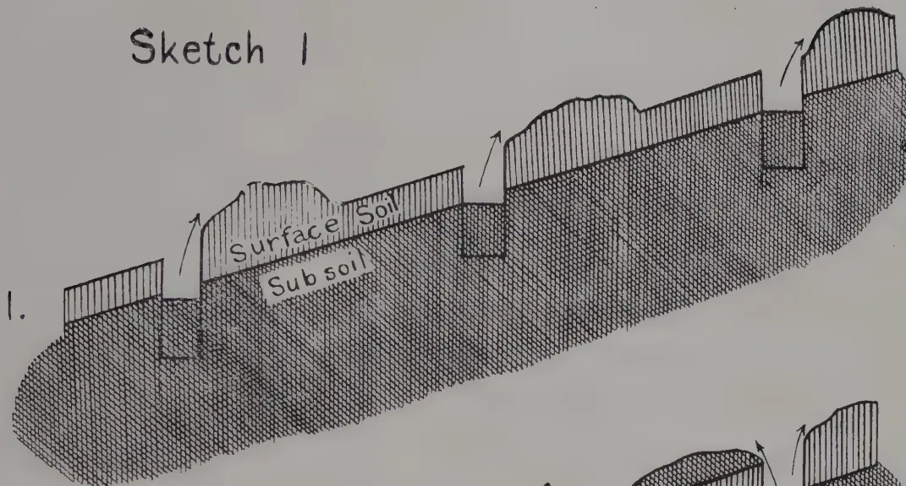
A cross-sectional diagram of a soil profile. The top layer is labeled "Surface Soil" and the bottom layer is labeled "Sub soil". The surface soil is represented by vertical hatching, and the subsoil is represented by a dense cross-hatched pattern. Three arrows point upwards from the subsoil layer, indicating upward movement or root growth. The profile shows a slight undulating surface.
2.
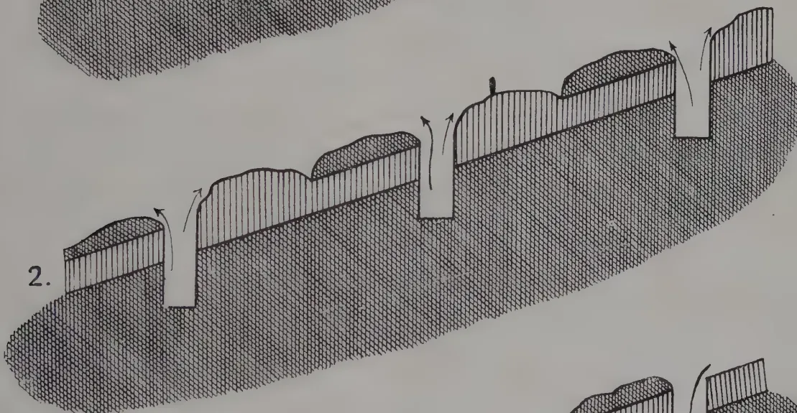
A cross-sectional diagram of a soil profile, similar to the first but with more surface soil. The surface soil is represented by vertical hatching, and the subsoil is represented by a dense cross-hatched pattern. Three arrows point upwards from the subsoil layer, indicating upward movement or root growth. The profile shows a slight undulating surface.
3.
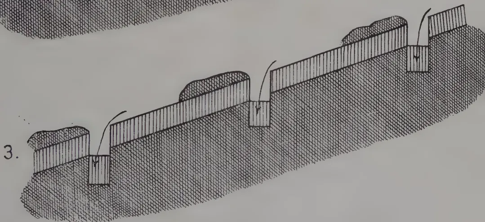
A cross-sectional diagram of a soil profile, similar to the first but with even more surface soil. The surface soil is represented by vertical hatching, and the subsoil is represented by a dense cross-hatched pattern. Three arrows point upwards from the subsoil layer, indicating upward movement or root growth. The profile shows a slight undulating surface.
4.
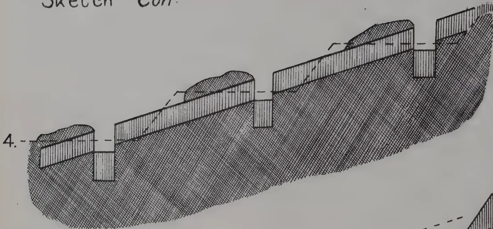
This geological cross-section, labeled '4.', depicts a terrain with a faulted surface. A dashed line indicates a geological boundary or a specific geological horizon. The terrain is characterized by several vertical rectangular features, likely representing faults or structural elements, and a hatched area representing a geological layer. The overall shape is irregular, with a prominent fault line running diagonally across the upper portion.
5.
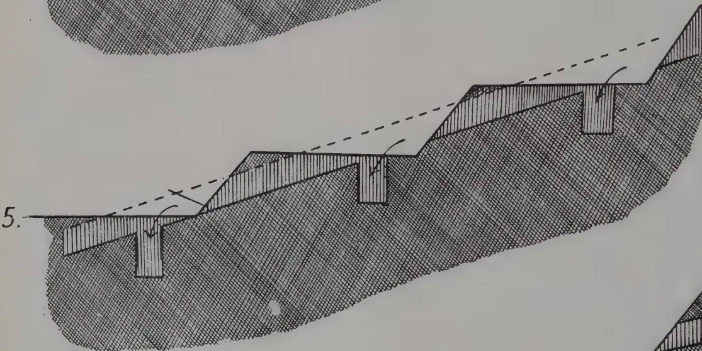
This geological cross-section, labeled '5.', shows a faulted terrain with a dashed line indicating a geological boundary. Two arrows point downwards, indicating the direction of movement or stress. The terrain features a series of vertical rectangular features and a hatched area representing a geological layer. The overall shape is irregular, with a prominent fault line running diagonally across the upper portion.
6.
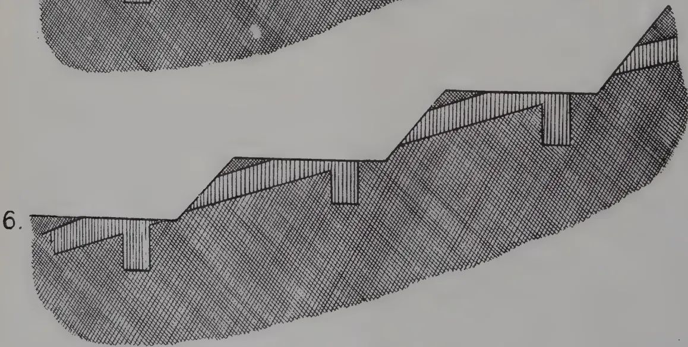
This geological cross-section, labeled '6.', shows a faulted terrain with a dashed line indicating a geological boundary. Two arrows point downwards, indicating the direction of movement or stress. The terrain features a series of vertical rectangular features and a hatched area representing a geological layer. The overall shape is irregular, with a prominent fault line running diagonally across the upper portion.
SEPTEMBER, 1923.]151Opinions differ in Java as to whether terraces should be made before the tea is planted or afterwards. The argument in favour of making the terraces before planting the tea is that the work can then be done carefully and completely, without any disturbing factors, and being done, is done once for all, and when the tea is eventually planted it merely remains to adopt an efficient system of keeping terraces in order. Those who are in favour of making the terraces after planting out the tea base their argument on the fact that in such cases the tea is planted in surface—and not in sub-soil—and that if the weeds, when they are gathered, are regularly placed between the rows of tea, planted in contour lines, terraces form of themselves and are in all respects as efficient as those made more expensively before the planting out of the tea. It is possible however to make terraces before the tea is planted out, in such a way that the seedling plants are planted along the lines of trenches which have been filled in entirely with surface soil, and it is more satisfactory from several points of view to make terraces before the seedlings are planted. (Sketch 1.)
Terraces having been made the upkeep of them is a matter of great importance. In Java many different plants are used to protect the edges and faces of terraces and either planted there directly or, if of naturally occurring species, are encouraged to be grown in preference to other plants by a process of selective weeding of the terrace faces. Species of Hydrocotyle, Viola, Desmodium, etc., are commonly seen grown in this way.
On fairly broad terraces it is often the custom to dig short trenches at intervals along the inner edge of each terrace and these serve to catch the wash which comes from the terrace above. These catch-trenches are cleaned out when the terraces are weeded, and the earth which has collected in them is thrown up on to the terrace above. (Sketch 2.)
The system is an excellent one under Java conditions where weeding and forking, instead of hoeing, is the method of cultivation.
A similar system of catch-trenches is employed largely in cases where the land is not steep enough to terrace. The method then generally adopted is one of alternate contour lines of catch-trenches and of green crops, sometimes with one and sometimes with two lines of tea between them. In such cases the positions of the catch-trenches, which are usually about 12 feet long by 1 foot broad by feet deep, alternate with 12 feet intervals along the contours, and are arranged in echelon with those next above or below along different trenched contours, so that if any earth is carried beyond one line of catch-trenches and past the intermediate tea bushes and green crop hedge, it will eventually be caught in the next catch-trench below. (Sketch 3). When these catch-trenches are cleaned out, which is usually done at the time of weeding, the earth is thrown up the slope.
Leguminous plants such as Leucaena glauca, Clitoria cajanifolia, Tephrosia purpurea, etc., are the plants most commonly used for the hedges which alternate with the catch-trenches.
Combined with this is a careful system of drainage. The main drain system—it must be remembered that almost without exception fairly steeply sloping ground is under consideration—consists of "hoeft afvoergoten" (main drains) which lead directly down the slopes. It is considered most important in connection with the drainage system to remove as far as possible the excess water which cannot sink into the ground sufficiently rapidly in case of heavy showers.
152[SEPTEMBER, 1923.The soils of Java are very porous and when slight showers fall the rain sinks rapidly into the ground, but the soil is also very rapidly washed down by water flowing over the surface of the ground, if all the rain water is not immediately removed when heavy rain falls. This is at once the advantage and the danger of the soil of Java.
To prevent this loss by wash, it is considered of primary importance to have an escapement for excess water, and the main drains straight down the slopes serve this purpose best for they ensure the rapid removal of water at places which are chosen for the purpose, and not at places where the rush of water may do damage.
The best situation for some of these drains are the places where there are natural gullies down the concave folds of the hillsides. Where these gullies are pronounced in character one usually finds either rocky ravines, or rather water-logged patches filled with deep rich soil which has been carried there by wash before the opening up of the land. The stone ravines can be used as drains without much being done to them. They are straightened and cleaned out to some extent to facilitate the rapid removal of water. Gullies which are filled with deep earth, when drained, add to the area on which tea can be planted. The sides of these drains are protected by growing grass on them and the rush of water down them is stopped by a series of low barriers of stones, bamboos, etc. A certain number of "hoeft afvoergoten" have also to be made at intermediate positions between the gullies, and the distance between two "hoeft afvoergoten" is usually not more than 100-200 yards.
The collection of the water into these main drains is carried out by means of contour drains called "afvoergoten" and these are usually made with a very slight gradient, the object being merely to catch the water and remove it into the "hoeft afvoergoten" or main drains. These "afvoergoten" are laid out very carefully on Dutch estates in Java and are flanked on the upper and lower sides by banks on which suitable leguminous plants are grown. Grass is often grown on the sides of the drains themselves. Drains are cleaned out periodically, for the danger of water breaking through must be carefully avoided since it would cause great damage because it would mean the escapement of water down hill at a point for which preparation for its control had not been made. (Sketches 4 and 5).
Modifications of one or other of these methods is the system adopted in Java for the prevention of wash, and on some of the new tea estates which are being started in Sumatra.
There is some difference of opinion in Java as to the extent to which cultivation is a factor in aggravating loss of surface soil by wash. Some claim that if soil be cultivated at times of the year when there is much rain, the rain, instead of washing the soil with it down the slopes, sinks into the ground and thus wash would be prevented. Others say that if the soil is undisturbed, and particularly if it be protected with a slight covering of jungle, wash will be inappreciable whereas it will be considerably greater if the soil has been recently cultivated and is broken up and free of jungle growth. Very much depends on the nature of the soil and this is a subject which might receive study in connection with loss of soil by wash in India: that is to say, it would be worth while to determine, in districts where loss
Sketch 2.
Plan & Elevation
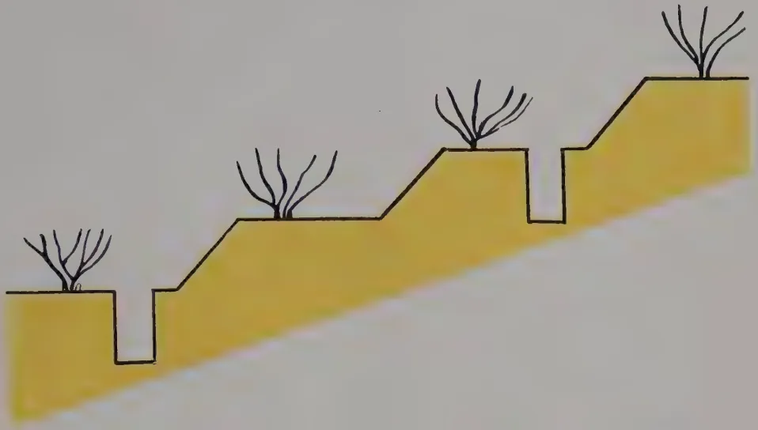
An elevation view of a terraced hillside. The hillside is represented by a yellow-shaded area sloping upwards from left to right. It features several horizontal terraces. On the top of each terrace, there are small black line drawings of tea bushes. There are also vertical drops or steps between the terraces, indicating the slope of the hill.
A plan view diagram of the terraced hillside. It shows the layout of the terraces and tea bushes. The terraces are represented by horizontal green bands. The top of the terraces are marked with blue horizontal bars. The tea bushes are represented by 'X' marks. A vertical line with an arrow pointing downwards is labeled 'Direction of Slope'. The top of the terraces are labeled 'Top of Terrace' and 'Catch Drain'. The sloping face of the terraces is labeled 'Sloping face of Terrace'.
Reference
X = Tea Bush
of surface soil by wash is known to be great, the effect of cultivation in aggravating or reducing the amount of wash and to correlate this information with data bearing on the mechanical composition and physical properties of the soil.
There has been another point which has so far been left out of discussion on the subject of soil denudation in India and that is the extent to which dry wash—that is, movement of particles of soil down hill in dry weather as the effect of wind—takes place. In Java, this dry wash takes place chiefly at medium elevations where the soil is loamy in character but is of sufficiently good tilth to pulverize on the surface in dry weather. The compact soil immediately below the loose layer on the surface affords a comparatively smooth plane down which detached particles of surface soil are blown by wind. These particles collect behind tea bushes and stones and on the flat faces of terraces and are washed down in the form of mud by the first heavy shower of rain.
The extent of the loss of soil which is going on steadily this way in dry weather is undoubtedly very great in some districts of Java, and it would be interesting to determine whether a similar phenomenon takes place to any great extent in India and in what localities it occurs particularly.
Speaking of tea planting only it may be said that the methods employed in Java appeal to the writer as being unquestionably the best that can be done to prevent loss of surface soil, and although it is a matter of great expense and trouble, yet, where tropical agriculture is becoming yearly more intensive and new land cannot be obtained to replace by new clearances the older parts of existing estates, all that can be done to prevent loss of surface soil on existing estates has a very great commercial value.
The adaptation to the conditions which obtain in the tea planting areas of India, of Java methods should receive careful consideration.
The present measures adopted for the prevention of wash in the tea districts of Ceylon and North East India appear to be largely wrong or inadequate."
(A paper read at the sixth Science Congress.)
RUDOLPH D. ANSTEAD, M.A.,
Deputy Director of Agriculture, Planting District, Madras.
"At the meeting of the Board of Agriculture in India held at Pusa, 1916 the subject of soil erosion was discussed, and it was resolved to bring to the notice of planters the fact that the serious losses due to soil erosion in the planting districts which have taken place in the past, are to a large extent preventible.
DR. HOPE of the Indian Tea Association has published an interesting account of the methods adopted in Java by means of terraces to prevent loss of valuable top soil in tea districts. Here, however, the terracing is done on new land when it is opened and before the tea is planted. The problem presented on many estates in South India is how to stop soil erosion in old established tea estates, and a good deal of work has been done in several districts during the last few years with the object of solving this problem in a practical and economic manner.
Two methods have been adopted with success. The first is a modification of the terracing work done in Java. At the time of pruning, trenches
154[SEPTEMBER, 1923are opened along the contours of the slopes at intervals of four or five rows of tea bushes. These trenches are put in with a road tracer and made 18 inches to 2 feet deep, and in them the tea prunings are buried, the upper layer of prunings being packed so that the butts project from the ground level when the trench is filled up some 6 or 8 inches. The soil in the intervening rows of tea is then forked and manured, if necessary, and in some cases a green dressing crop is sown on it. The fence of buried prunings serves to catch any soil which is washed down from above and retain it. Unfortunately the tea has in nearly all cases been planted in such a way that the lines run up and down the hill, and not along the contours, but it is possible to arrange for the estate work, plucking and weeding, to be done along the contours, and this gradually helps to form natural terraces where the prunings have been buried. At the next pruning season, some three or four years later in our case, the terraces are repaired and improved, and new ones made in the same way. This method has been found to stop soil erosion to a very marked extent, and it is coming much into favour on moderately steep slopes.
The second method used is to abandon forking and clean weeding on very steep slopes, and to keep the soil covered all the time by some selected weed. This method of dealing with steep slopes has, of course, met with a great deal of opposition from the clean weeding school; but in Southern India at any rate, I am happy to say, the fetish of clean weeding is rapidly becoming obsolete. The choice of evils lying between keeping a cover of weeds on steep slopes and allowing them to be washed by the heavy monsoon rains is largely in favour of the weeds. The utmost harm that the weeds can do is to absorb moisture in the dry weather from which the tea suffers a little, but this cannot compare with the harm done by the constant loss of valuable top soil, which goes on from slopes kept clean and forked. Any plant food which the weeds take up from the soil is ultimately returned to it again as the weeds rot down, and returned in an available form, while if the weeds are leguminous there is a steady accumulation of nitrogen.
It is sometimes thought that forking prevents soil erosion, but this is far from being the case. In the process, a considerable quantity of soil rolls down the slopes on to the roads, however carefully the work may be done, and much of this is carried away by the first heavy rains. Experiments carried out in Ceylon showed that the erosion from a forked surface was more than from a similar surface kept clean-weeded. The loss of soil from a clean-weeded surface during a certain time was 814 lb., while that from a similar surface in the same time which had received a plain deep forking was 1,393 lb.
The method adopted is to establish some particular weed by means of selective weeding, that is to say, the weeding coolies are taught to leave the particular weed chosen and remove all others by hand. In this way a cover of a particular plant is soon established on the steep slopes, and this is kept in situ all the time; the utmost that is done to it is to sickle it and clean it out from round the bases of the tea bushes. In this way soil erosion has been almost entirely prevented even on the steepest of banks, and in
SEPTEMBER, 1923.]155the heavy rains the run-off is clear instead of being laden with silt. Moreover, the weeds accumulate humus and add by their decomposition a valuable surface layer to the soil which is retained.
A number of weeds are being used for the purpose. The ideal plant is a leguminous one, which will accumulate nitrogen, a plant which does not either climb into the tea bushes, or make too thick a mat on the ground, and one which grows only a few inches high. Such a plant is hard to find, and the one which most nearly matches the ideal is Cassia mimosoides, L. This plant, at elevations of 4,000 feet and over, has a short habit of growth, branching and spreading out at the base. Its feathery semi-sensitive foliage allows the rain and sun to reach the soil, while at the same time protecting it from erosion. It is fairly easily established and it seeds freely. On many estates it forms a thick cover and has been found a most useful green dressing and soil preserver.
Another leguminous weed of which use has been made is Parochetus communis, Hamil., a plant with a clover-like habit, but it is not easy to establish over big areas and its life is not long; it dies down to the creeping rhizome in the hot weather.
When a suitable leguminous plant cannot be found and easily established, advantage is taken of the presence of other weeds, and these are encouraged and established. Among these may be mentioned Oxalis corniculata L., which is very easily established and which forms a dense short cover easily controlled. Many hundreds of acres of steep land are now under this weed, and the tea has decidedly benefited and the soil erosion under Oxalis is practically nil. No harm whatever has been done to the tea; yields have been maintained and in fact have increased, and in the hot weather the effect on the tea is very slight.
Any weed has been considered better than none at all on steep slopes, and when the above-mentioned cannot be established, use has been made of the following plants, either by themselves or mixed; Colula australis Hook; Cardamine hirsuta L.; Galinsoga parviflora Cav.; and Laurenberghia hirsuta W. & A.
The intelligent use of weeds has gone far to overcome a form of soil erosion which has in the past caused a great loss of soil and done a lot of damage in some parts of the tea districts of Travancore. Here the land is very steep and the soil is of such loose texture that in the dry weather the angle of repose may be exceeded, and at the least touch the top soil comes sliding down. Wind even sets it moving and the plucking coolies passing through the fields send the soil tumbling down the slopes on to the roads. The loss of surface soil in such places has been enormous and very rapid, and the ridges are in some places almost entirely denuded of surface soil.
On such soils the maintenance of a permanent crop of selected weeds has gone far to stop this loss and solve the soil erosion problem, which has always been recognized by the planters as a serious and important one."
From the above statements and reports, it is clear, that the Agricultural interests of Ceylon should give special attention to the problem of soil erosion and that the Government should do everything to encourage and assist all owners of land to tackle their individual problems in the proper manner. It is also important for the Government to consider what steps should be taken to safeguard the interests of the country over lands which have not already been alienated.
156[SEPTEMBER, 1923.Soil erosion is brought about by three main causes. These are (1) By destruction of vegetation (2) By burning of grass (3) By overgrazing. Whilst the last operates but to a negligible extent in Ceylon and the second only on some up-country patanas, the first mentioned cause has already been responsible for inestimable damage.
When land is forest covered it is generally effectively protected. The rain, as it falls, is broken by the trees, the undergrowth and the decaying vegetation on the ground. Much of the rain reaches the ground by running down the twigs and branches. Consequently there is no perceptible surface run off and the water is soaked up by the organic matter in the upper layers of the soil. On steep slopes there is always some run-off but it is checked by mechanical obstructions offered by tree stumps, fallen branches, twigs, etc. Even when rain is heavy the excess water flows off with no erosion and it is rare to find water coming from good virgin forests muddy.
When land is cleared of its forest cover, the position is very different. The rain falls direct upon the bare soil. This is compacted and its absorbing capacity thereby reduced. The finer soil particles become agitated as the result of the rain falling on bare ground and they remain suspended in the water which collects on the surface of a soil which has had its absorptive capacity reduced by consolidation. Immediately small streamlets form and unless there is something to impede their progress these join together until a muddy stream is caused. Heavy clay soils suffer the most from surface wash because of their poor water absorptive powers and anything which increases surface run-off increases erosion. When erosion occurs, the fine soil at the upper elevation is washed away more rapidly than it can be formed and the amount of sediment becomes so enormous that the streams cannot handle it. The heavier and coarser particles are deposited—often over valuable lands—and the finer particles are carried further down the river and deposited to the detriment of navigation or are carried out to sea.
The amount of surface run-off depends largely upon the intensity of the rainfall and the extent to which rain is absorbed depends largely upon the physical condition of the soil and the covering of litter on its surface. F. E. KANTHACK in a paper on the Destruction of Mountain Vegetation compares the run-off from afforested with that from denuded catchments as follows:—
"The conditions which influence the flow of streams are complicated, and it is very difficult to demonstrate by means of actual observation the effect of forest growth on the run off, compared with what takes place from denuded catchments, all other conditions being identical.
The most complete observations which I know of are those made on several small catchment areas in the San Bernardino Mountains in Southern California, where it has been proved that the effect of the true forest in decreasing the surface flow on small catchment basins is enormous.
The following three tables which compare three well-forested areas with a non-forested one, show this very clearly.
Rainfall and Run-off during December, 1899.
| Area of Catchment basin (Sq. Miles) | Conditions as to cover | Rainfall (Inches) | Run-off per Sq. Mile (Acre feet) | Run-off in percentage of rainfall (Acre feet) |
|---|---|---|---|---|
| 0.70 | Forested | 19 | 36 | 3 |
| 1.05 | " | 19 | 73 | 6 |
| 1.47 | " | 19 | 70 | 6 |
| 0.53 | Non forested | 13 | 312 | 40 |
| Rainfall and Run-off during January, February, March, 1900. | ||||
| 0.70 | Forested | 24 | 452 | 35 |
| 1.05 | " | 24 | 428 | 33 |
| 1.47 | " | 24 | 557 | 43 |
| 0.53 | Non forested | 16 | 828 | 95 |
| Area of Catchment Basin (Sq. Miles) | Conditions as to cover | Rainfall (Inches) | Run-off per Square Mile | ||
|---|---|---|---|---|---|
| April | May | June. | |||
| 0.70 | Forested | 1.6 | 153 | 66 | 25 |
| 1.05 | " | 1.6 | 146 | 70 | 30 |
| 1.47 | " | 1.6 | 166 | 74 | 30 |
| 0.53 | Non forested | 1.0 | 36 | 2 | 0 |
These tables very clearly show the importance of forests in sustaining the flow of mountain streams.
The three forested catchment areas which, during December, experienced a run-off of but 5 per cent. of the heavy rainfall for that month, and which during the first three months of the following year had a run-off, approximately, of 37 per cent. of the total rainfall, experienced a well-sustained flow for the three months—April, May, and June—which were practically rainless. On the other hand, the non-forested catchment area which during December experienced a run-off of 40 per cent. of the rainfall, and which during the three following months had a run-off of 95 per cent. of the precipitation, experienced during April a run-off of less than one-third of that from the timbered areas, and during May and June the flow from the unforested area ceased altogether.
The same experiments show that of the annual rainfall the run-off from the forested areas amounts to about 33 per cent., whereas 69 per cent. runs off from the non-forested areas."
Failure to retain forest where its protective influence is needed has been the direct cause of much unnecessary wastage of soil. All steep slopes should therefore be kept under forest cover by legislation and in some colonies an area equal to of the slopes of any mountain from base to ridge is maintained by law in forest as a mountain reserve. Similarly forest reserves are maintained on either side of any river, stream or rivulet, and when such rivers or streams pass through private property these reserves are leased for fuel purposes—the planting being done with specified and approved trees and the felling being carried out on a recognised rotation system in co-operation with the Forest Department.
Nor is the actual loss of soil the only evil wrought by soil erosion? Loss of soil fertility must also be charged to its account. Under the process of nature, soil is being gradually formed, and when this soil is covered with forest the rate of formation is more rapid than the rate of removal. After clearing, the rate of removal is greatly increased, while the rate of formation is in the majority of cases diminished. The finest particles of soil are naturally the first to be washed away and the removal of these materially impairs the physical and chemical qualities of the soil. It is probable therefore that decreased fertility should be attributed to the effects of erosion rather than to the natural diminution of plant—food constituents—although it must be conceded that the silts carried away are rich in plant food. One has only to examine the derelict "old coffee lands" and chena lands in
158[SEPTEMBER, 1923.]various parts of the country to realise the result of the effects of soil erosion. There is little doubt that injudicious clearing for cultivation has been one of the main causes of erosion in Ceylon in the past.
Improper methods of agriculture hasten soil erosion and there are examples without number to which reference might be made. What steps do the chena cultivators take to prevent soil wash? They have not yet realised the value of contour drains nor have they adopted the system of bunds which are so commonly put up by cultivators of lands in many parts of India. This is probably because they personally have no interest whatever in the value of the land and are only desirous of exploiting for their own personal and immediate benefit the capital of the country which years have provided. Public opinion should certainly endeavour to check, whenever possible, such wanton dissipation of the country's resources and private owners should insist upon a more permanent system of agriculture whenever possible.
Why is it also that all planting of tea, rubber and coconuts is done on the square in Ceylon? Why do the rows run direct up the slopes, often over the ridges and straight down again on the other side? Is it not more rational to arrange for the rows to be laid out on the contour, parallel to the contour drains which are now generally provided. Soil erosion will be reduced thereby and rows of leguminous plants can be grown between the rows of tea, rubber or coconuts, stone terraces erected or silt pits dug with greater ease.
Why is it also that terracing with stones, the digging of silt pits, etc., have been left until a large amount of the finer top soil has been washed away? Is it possible that this has been mainly caused by shortage of funds. If so, the tea industry at least is now in a position to undertake work of this character and thereby prevent further losses—assuring at the same time its greater permanency.
In the United States of America it is estimated that 11 million acres of land have been abandoned and that over 4 million acres have been actually destroyed by erosion and it is held that land with a slope of more than 1 in 10 should not be cleared. It has been proved in all parts of the world, that the most effective method of preventing erosion on cultivated land is terracing. Properly constructed terraces check the velocity of surface run off and give the soil a chance to absorb more water. In China, terraces have been developed with the greatest care and are an example to the rest of the world to follow. Full details of the Java system have been given earlier. There is little doubt that efficient terracing before the land is planted out is the real solution of the problem of soil erosion and the only objection to its general adoption is its expense. The maintenance of increased yields with less manuring and the greatest permanency of plantation should however influence those who are opening out new lands towards this greater expenditure.
When terracing is not possible or when it has not been carried out, adequate provision of contour drains should be made. This is now generally adopted on Ceylon estates, but in many cases these drains are made too shallow and too narrow. It should be kept in view that these drains are provided not only for the removal of surface water, but they should be deep enough to effectively drain the soil and thereby assist in improving its water-absorptive powers.
SEPTEMBER, 1923.]159(3) Silt pits.These are now being generally dug on estates in Ceylon. On tea estates and in many rubber estates they are dug in conjunction with the contour drains, whilst on some rubber estates they are dug independent of the drainage system, as they are also in coconut estates. There is no doubt that the value of silt pits is beginning to be realised, but very much more can still be done in this direction.
(4) Contour stone walls.Under the locally accepted term of "terracing" the construction of contour stone walls has been one of the most important field operations of rubber estates in Ceylon in recent years. On some estates, the slump in the rubber market has been the cause of a stoppage of this work, but one has seen a beginning of this work again in recent months. All who have witnessed the amount of soil that such stone "terraces" save, realise their value to the estate. One would like to see more of this type of work done on the tea estates up-country where wash is becoming serious. Now that the industry is prosperous, it has an opportunity of effecting a material and important improvement in those areas where stone is available.
(5) Contour hedges of leguminous or other plants.Some efforts have been made in this direction, but further attention should be given to this matter. These hedges to be at all effective must be closely planted, and the choice of leguminous plant must depend upon the situation of the cultivation. The most effective all-round leguminous plant for Ceylon conditions appears to be Boga medeloa—Tephrosia candida but this will not grow in the highest elevations. At Peradeniya, Indigofera arrecta has given good results, while dhall (Cajanus indica) might be useful at lower elevations. Nor is it necessary to limit the choice of such hedge plants to leguminous plants. The kus-kus grass (Andropogon muricatus) is a useful plant while rows of citronella or Sansevieria might likewise be employed. In South Africa one of the commonest plants used for such hedges to prevent soil erosion is the common aloe (Furcraea gigantea).
(6) Use of leguminous cover crops.There is a very strong feeling in Ceylon that clean weeding in tea is essential for success. This view is not similarly held in India and in Java, where selective weeding is carried out or where the growing of leguminous cover crops has become more common than in this colony. There are undoubtedly strong arguments in favour of clean weeding, but one has to consider whether soil erosion is not becoming sufficiently serious to demand that further experiments be made on estates with the use of leguminous cover crops. Particularly is this the case in regard to tea. The main difficulty is to obtain a cover crop that gives general satisfaction. To be effective in stopping wash such plants must be low growers.
The following however may be suggested for trial :—
Cassia mimosoides—Sinhalese-Bin-siyambala—a weed common in the Uda Pussellawa district where it forms a dense mat—for the tea estates in mid and higher elevations.
Desmodium triflorum.—Sinhalese—Hein-undupiyali—an abundant and valuable constituent of all pastures in Ceylon, more particularly in the low-country.
160[SEPTEMBER, 1923.Indigofera endecaphylla—a creeping Indigofera now being successfully used on rubber estates in South India.
Vigna oligosperma (Dolichos Hosei) used extensively in Sarawak, Java and Malaya in tea and rubber estates of medium and low elevations. In Ceylon it does not seed and has to be propagated by rooted cuttings. In Java it likewise seeds rarely and is propagated by cuttings.
Centrosema Plumieri.—This grows satisfactorily at Peradeniya and produces seed. In Java it used to be grown extensively but both this species and Centrosema pubescens have now been replaced largely by Vigna oligosperma.
Species of Crotalaria, Cassia, Tephrosia, and Indigofera are suitable for cover crops, as also are in certain situations the sword bean (Canavalia ensiformis) cow peas (Vigna catjang) horse gram (Dolichos biflorus) and soy beans (Glycine Soja). These however grow either too erect or are too short lived to be really effective as cover crops against soil erosion and should be utilized more for the improvement of the texture of the soil and for green manuring.
This enables the soil to absorb a greater proportion of the water falling upon it, and may be effected by the following means :—
The use of green manures either semi-permanent plants such as Albizia, dadap, acacia, gliricidia, etc., or the smaller plants such as boga medeloa, crotalarias, etc., cannot be too strongly emphasized in this connection.
Such forking will open the soil. The soil should however not be turned or otherwise considerable wash will take place.
This is effective in breaking up the sub soil or any hard pan and thereby assists in improving the water absorptive power of the soil.
This applies only to coconut estates on gently undulating land. If the ploughing is done on the contour and contour plough banks are turned back, a kind of small terrace is made which may be very effective in preventing surface run-off.
This applies mainly to tea cultivation and emphasizes the necessity for permanent green manure cover of albizia, dadap, gliricidia, acacia or other plants.
This can in part be effected on tea estates up-country by straightening out the streams and by planting up their banks with Paspalum dilatatum.
The several modes of treatment designed to remedy and prevent soil erosion are alike in principle. They all operate through regulating the movement of water. Measures which are effective in preventing erosion
SEPTEMBER, 1923.]161may also be used to control it after it has once started. Public opinion should not sanction the carelessness or indifference which permits such erosion.
From the State's point of view the following have to be kept in view :—
In France, the ownership of all rivers and streams is vested by special law with the Government and in Italy the State has always exercised this ownership as well as ownership over all springs.
The State requires to look at soil erosion not only from the point of view of loss of capital value but it has also to take into consideration the silting up of its rivers, irrigation schemes, reservoirs, etc.
Agriculturists are the trustees of the greatest asset of the country—its soil—and it is their duty to encourage all steps which can be taken for its permanent preservation. They therefore should view in Ceylon the question of soil erosion seriously and take every measure to prevent it.
D. S. CAMERON,
Craighead, Nawalapiliya, Ceylon.
General.—For many years it was thought that Old Tea could not be successfully supplied. The reasons for this were, no doubt, that in most cases sufficient money was not spent on the work.
The cumulative effect of no supplying having been done for 30 to 35 years, now results in the majority of places carrying about 10% of vacancies, some much more, up to 25%.
If yields are to be maintained, then the full number of bushes per acre must be maintained. This also means maintaining the capital value of a property.
The Cacao planter is the only man who has supplied his product consistently and made it a work of annual routine.
The supplying of our old Tea Estates should be a work of annual routine on any well run Estate.
Seed Selection.—Wherever possible a point should be made of supplying with the same jat as the original plantings—this in the interests of uniformity. Where the same jat cannot be procured the nearest type should be used. The absurdity of supplying, say, a low class China-hybrid with a large pale-leafed “Indigenous” will be apparent, and no more need be written on this head.
The number of seeds to the maund varies from 12,000 to 28,000.
Nurseries.—Good, well drained, gently undulating land, near water, should be selected. Swamps are often too sour and insufficiently drained to make good nurseries, though this is not invariably the case.
The land should be deeply forked and dug over to the depth of 18 inches and all stones and roots removed, so that the plants may form good tap roots.
The seed should be germinated first in a sand bed, which should be watered frequently. The sand bed should be gone over 3 times a week and all germinated seeds picked out and planted in the prepared nursery beds at the following distances:—
If for 2 years old stumps, plant 4" × 4".
N.B.—4,000 sq. feet required per maund, including paths. (Rutherford)
If for planting out as 6-inch plants with Ellwell's Transplanter, plant 3" × 3".
N.B.—2,250 sq. feet required, including paths. (Rutherford)
If for planting out as 3-inch seedlings, plant 2" × 2".
N.B.—1,000 sq. feet required, including paths. (Rutherford)
SEPTEMBER, 1923.]163Holes.—It is absolutely essential to success that a large hole be cut. The writer recommends a cylindrical hole 24 inches deep and 15 inches wide at top and bottom.
Some, who have been more than ordinarily successful with supplying, recommend a hole 2 feet square.
The large hole is more successful owing to its greater cubic capacity of finely divided earth which retains moisture better during droughts, and so carries the stump or seedling through these critical periods.
Preparation of the Hole.—In order that it may aerate and sweeten, the hole should be cut and left open for, say, 3 weeks, after which it should be prepared for the seedling, plant or stump. If well rotted, old, cattle manure is available there is nothing better than this. The top 8 inches of the hole should be filled with a suitable mixture of cattle manure and earth. This will give the plant or stump a good start in life.
In the event of no cattle manure being available, fill up the hole with tea leaves, Dadap, Albizzia, Bogo, or Gliricidia pollardings (no woody matter) mixed with a little earth and 5 oz. of freshly burnt lime per hole. Leave contents in hole to become mould. About 4 to 6 months will be required for this, so that it is essential that holes be cut about 6 to 7 months before they are required for planting.
As labour is now a difficulty on most places, the writer suggests that a holing gang with a first class Kangany be appointed to hole all the year round. Every hole should have to pass a gauge carried by the Kangany.
Results will never be so good if the holes are hurriedly cut a few days before planting and no preparation is done.
Types of Supplies to be used. These are :—
Not any one of the above may be said to be "the best." On the majority of places the two-year old nursery stump of pencil thickness answers well, but should be protected by three good pegs, and shaded with wire fern if the planting is late or the district is a dry one.
No. 2.—Large Plant—is in the writer's experience the most unsuccessful of all types to be used. It is not large enough to stump or small enough to carry its leaves, and suffers badly from drought and blights.
No. 3.—Small Plant,—6 inches does admirably if lifted with Ellwell's Transplanter and carried to field in tin case which preserves the nursery earth intact.
The writer favours this method of planting.
No. 4.—Basket Plant.—This may be grown from germinated seed put into prepared baskets, and planted out when the seedling is 3 inches to a foot or more high.
164[SEPTEMBER, 1923.No. 5.—Two-inch seedling with seed adhering.—It is most important that the seedling be carefully lifted with a ball of earth by a trowel, and that the seed does not become detached. The adhering seed is a reservoir of food for the seedling, hence the importance of retaining it.
The writer has found this method equally successful in dry Uva and Matale and wet Dolosbage.
Shading with fern, and protection with 3 stout pegs is absolutely essential.
Germinated seed should be pricked out in nursery beds about 6 weeks to 8 weeks before the seedlings are required.
Planting at the beginning of the S. W. or N. E. (as the case may be) is strongly advised in all cases, but particularly in this case.
No. 6.—Seed at Stake. If not germinated first in sand bed, then 2 seeds should be planted in each hole. If first germinated, one seed is sufficient.
Planting at the beginning of the planting season, and good fern shading with 3 good pegs for protection are essential.
On many Estates this method of supplying is proving satisfactory.
Seed should not be planted more than an inch below the surface.
Time to Plant.—The best results in all districts will be invariably obtained by planting at the beginning of the monsoon.
Late planting, owing to holes not being ready in time, leads to more failures than any other causes known to the writer.
It is a mistake to plant on an excessively wet day—the coolies then puddle the soil; also holes become full of water.
Manuring of supplies.—The best of all manures for supplies is cattle manure well rotted.
When cattle manure is not obtainable, old lines refuse may be used with advantage, and leaf mould is good and can be produced by filling the holes with tea leaf, green manure pollardings mixed with 5 oz. lime.
The following artificial mixture will be found of great value in bringing on backward plants :—
| 200 lb. Fish Guano |
| 100 lb. Blood Meal |
| 50 lb. Nitrate of Potash |
| 50 lb. Sulphate of Ammonia. |
| — |
| 400 lb. |
| — |
This to be applied at the following rates :—
| 2 oz. to small plants (12 inches high) |
| 3 oz. to medium plants (18 inches high) |
| 4 oz. to large plants (24 inches and over) |
Great care must be taken to sprinkle the manure lightly and evenly all round the plant and thoroughly mix it with the soil to a depth of 3 inches. This should be done in showery weather.
SEPTEMBER, 1923.]165Of all the cultivated products of this Island the most useful and reliable one to invest in is Coconuts. It is grown with very great success in the Western and North-Western Provinces and also in a few other Provinces with fair success. A great part of the wealth of the permanent population of this Island is invested in it. It produces not only the exportable articles as Copra, Desiccated Coconuts, Oil, Poonac, Fibre, Fresh Nuts, etc., but also a hundred other things useful to man and beast. It cannot be imagined what this Island would be without this useful tree. In the olden days, as the demand for Coconut products was not very great, the value of a thousand nuts was from Rs. 15 to 20; to-day it is from Rs. 60 to 80.
Formerly Coconut was planted in lands best suited for its growth, in alluvial soils bordering rivers and oyas and in sandy soils along the Sea Coast. These estates though carelessly planted, without paying much attention to distance, quality of seed-nuts, depth of holes, etc., were very successful and bore heavy crops. Some of the lands being by rivers were fertilized by silt deposits from floods. Further, tying cattle to the trees was practicable then owing to the presence, in the vicinity of estates, of large tracts of land, belonging to Government and others, suitable for grazing cattle. With the extension of cultivation these lands are no longer available for pasture; and cattle grazing has to be restricted to planted areas. As sufficient cattle for manuring could not be supported on plantations alone the use of artificial fertilizers is being resorted to now.
Fresh lands with ideal Coconut soil and a rainfall of 75 inches or over are exhausted now. If cultivation is to be extended it must be on Cinnamon lands in the Colombo and Negombo Districts, or in drier districts with a rainfall from 50 to 75 inches. Large areas of Cinnamon land are being turned into Coconut plantations. Generally these lands are white sandy soils, the whiteness being due to depletion of organic matter by the continual removal of everything that had been produced by the Cinnamon. Both the Manning Coconut Trial Ground at Negombo and my experimental plots at Alexandra Estate which are conducted under the guidance of the Department of Agriculture are on land of this description. Careful manurial experiments conducted at Manning Coconut Trial Ground have demonstrated that these soils are most deficient in Potash and next in Phosphoric Acid, a fair quantity of Nitrogen being available. The Alexandra Estate experiments demonstrate that Coconuts could not be successfully grown on these lands by cultivation alone however intensive it may be. The application of a full compost is essential from the very commencement, while mulching the manured area with Coconut husks or fibre dust greatly
* A Lecture delivered at Gampaha on 12th July, 1923, by JOHN ERIC DE SILVA WIJE-BOONERATNE SAMARAWEERA RAJAPAKSE of "Alexandra Estate," Jaela (Ceylon).
166[SEPTEMBER, 1923.improves growth. The poverty of these soils is due to the absence of organic matter; therefore under no circumstances should any production of the soil be burnt and every effort should be made to add as much foreign organic matter to the soil as possible.
Forest lands in the drier districts are available for planting Coconuts, but owing to the absence of roads, scarcity of labour, prevalence of malaria, etc., the cost of opening such lands is prohibitive. During the last ten years very little land has been opened up in Coconut.
From a scientific point of view the selection of good seed is very important, therefore seed nuts should be selected with the greatest care. Nuts should be selected from healthy, drought-resisting palms 20 to 40 years old, bearing heavy bunches with short stalks. There are several varieties of Coconuts: 19 more or less distinct varieties have been identified and experiments are being carried out by the Department of Agriculture at Peradeniya and by me at Alexandra Estate, with plants from these varieties. Owing to cross-fertilization these plants are not true to the parent but the progeny of certain varieties are distinctly superior to others.
The ground of the Nursery should be well prepared by digging deep and removing all roots, stumps, etc. It should be then divided into beds about 6 feet wide, to enable one to walk through the Nursery later for weeding, watering, etc. The nuts should be placed about a foot apart with their tops pointing upwards and then covered round with earth exposing only the top. There is a difference of opinion as to the best position the nuts should be placed. Some think it should be placed horizontally as it is the natural position but experience has proved the upright position to be better and more convenient for planting. The plants which fail to do well in Nursery should be rejected. If this had been done in the olden days there would not be so many sickly trees on estates.
Felling should be started just after the rains to enable early planting, all the trees should be cut as low as possible and the larger branches lopped off the fallen trees so as to cover the ground more evenly to ensure a good burn. The unburnt sticks should be piled up and burnt in the holes just after cutting while larger logs may be reserved to obtain ashes later. The lining should be perfectly straight. This could be done economically by using two Surveyor's chains. Straight lines not only add to the appearance of the estate but greatly facilitate the use of labour-saving implements and the allotment of tasks. A well lined estate will remain for a century or more as a monument of the good work done by a planter. The distance of planting varies according to the nature of the soil. 27 by 27 or even 28 by 28 is most suitable for rich virgin soil while for gravelly soils and cinnamon land 25 by 25 is considered sufficient. 24 by 24 has proved too close even for these soils as direct sunlight is absolutely necessary for assimilative work in the leaves, and growth and production depends on the amount of assimilative work done by the tree. Therefore trees should be so planted as to prevent the leaves of one overlapping those of another.
SEPTEMBER, 1923.]167Holes should be 3 by 3 ft. by ft. deep. A wooden frame 3 ft. square, with diagonal bars and a hole at the intersection of the diagonals, for the peg to pass through, should be used to mark the position of the hole. The difficulty of locating the right spot to plant after the hole is cut could be met by adopting a simple device. This consists of a bar 5 ft. long with a hole in the middle and two holes at either end equidistant from it. This bar should be slipped, on the peg, so that it passes through the middle hole, and two smaller pegs driven into the ground passing through the holes at the ends. Thus there would be three pegs in a straight line at fixed distances from one another. Though the main peg is removed by cutting the hole, its position could very easily be located by replacing the bar in position, so that in planting out the only thing to do is to place the bar in position and fix the plant vertically under the middle hole. Holes should be partly filled with surface soil mixed with ashes, and planted at depths varying from 18 inches, on high land, which does not require trenching, to one foot and even less on low land, where trenches are necessary.
In new soils the under drainage being defective and the subsoil impervious to moisture, water collects on the surface and stagnates in the holes either killing the young plants or retarding their growth.
Therefore the natural water courses should be deepened and feeder drains parallel to the lines opened to drain out the surplus rain water. If this is not done satisfactorily it is not possible to plant sufficiently deep owing to stagnant water. But deep plantation is absolutely essential as coconut plantations invariably suffer from droughts and their ill-effects are greatest if the main root system is on the surface. Deep planting trains the roots on to a lower strata thus enabling the surface to be used as a soil mulch, when necessary. If all the planting has to be done with the rains there is not sufficient time to adequately drain the land and a large percentage of the plants would be killed by stagnant water. Therefore only those portions which have been drained are planted up when the rains come. By experiments carried out at the Manning Trial Ground it has been proved that a just germinated Coconut plant could live on the food in the nut for about a year without even water. Therefore if sufficiently small plants are used, much loss is not incurred even if the rains are missed and planting is carried well into the subsequent dry season. With this extra time available draining could be attended to leisurely and adequate provision made for the next rains. If the soil is very dry and water is available pouring a pot of water round the plant and covering up the wet soil with dry earth to stop evaporation, is beneficial. This will help the plant to give out roots faster. If no rain has fallen watering may be repeated about a month later with advantage.
On a new clearing the quantity of plant food immediately available is much in excess of the requirements of the young plant. This surplus may be either converted into ready money by growing catch crops, if this proves remunerative, or reserved for future use by growing and returning to the soil any legume, which suits the climatic conditions. The young plants will not need much plant-food till about the third year; therefore it is not necessary to do much cultivation to liberate plant-food till then. The soil immediately round the plants must however be kept frequently cultivated. This will keep down weeds, oxidise the soil, and act as a soil mulch at the same time. The vegetable matter growing in the middle of the squares may be periodically weeded and mulched round the palms with advantage. If the plantation is in a dry district with clearly defined periods of drought the soil of the whole area should be stirred to arrest evaporation at the expiry
168[SEPTEMBER, 1923.of the rains. After the third year in order to enable ploughing and disc harrowing, it is essential to remove all the stumps. To perform this economically the use of a "Jack" is of great service.
Manuring is the most important and expensive item in the cultivation of coconuts, without it a remunerative income for an indefinite time cannot be obtained. An experiment carried out at Manning Coconut Trial Ground shows the total produce (including fallings) from an acre to be about tons annually. If all this is removed, as is done on some estates, it will amount in ten years to 70 tons per acre. No land however fertile can stand a drain like this. An experiment is being carried out at the Manning Trial Ground to ascertain if a land's fertility would be maintained if oil only is removed and everything else (including poonac) be returned to the soil, But even here crops are not maintained and there is a gradual decline:—
| RESULTS FROM 35 TREES ( ACRE.) | ||
|---|---|---|
| Year. | Nuts. | Weight of Copra. |
| 1917 | 2165 | 1015 Lb. |
| 1918 | 2164 | 943 " |
| 1919 | 2068 | 919 " |
| 1920 | 2052 | 910 " |
| 1921 | 2047 | 912 " |
| 1922 | 2017 | 869 " |
It is therefore obvious that if we expect the land to continue to give good yields, something must be added to it in the shape of manure.
Of all manures cattle manure and wood ashes are the best if they are available in sufficient quantities. But as they are not, they have to be supplemented with artificial manures. There are some who are averse to the application of artificial manures on sentimental grounds. But the manures largely used in manuring coconuts are not artificial. Castor cake, fish refuse, bones, etc., are products of the soil and there could not be any harm in returning them to the soil to fertilize it. Although manuring, beyond all doubt, yields improved results it has been ascertained by long experience that these results can be further improved upon by judicious cultivation.
The old practice was to cultivate once in two years just after the rainy season during which manuring was done. But cultivation is so beneficial that former advocates of the two years system now favour annual cultivation. The results of the cultivation experiments at Alexandra Estate show that, given the same quantity of manure, the improvement is directly proportional to the amount of cultivation, the gradient of improvement with each degree of cultivation being very evident:—
| Plot | Cultivated | Annual Cost of Cultivation | No. of Palms Flowered 1-1-1923. |
|---|---|---|---|
| 12. | No | Nil | 15. |
| 11. | Once in 2 Years | Rs. 4 ( Share) | 19 |
| 9. | Yearly | Rs. 6/- | 24. |
| 8. | Twice a Year | Rs. 12/- | 30. |
| 10. | Subsoiled and cultivated in alternative Years. | Rs. 12/- (average) | 32. |
| 37. | Monthly | Rs. 20/- | 37. |
MANURED WITH FULL COMPOST
SEPTEMBER, 1923.]169But cultivation, like all good things, can be over-done as witnessed in the intensive cultivation boom. During the intensive cultivation craze an elaborate series of cultivation experiments were started by me in July 1917 to determine if (1) intensive cultivation could replace manuring, (2) if manuring and intensive cultivation combined give better results than either by itself. It was soon apparent that on cinnamon soil cultivation without manuring was useless, though as an adjunct to manuring, cultivation improves results. In rich alluvial soils intensive cultivation will yield good results but the strain on the soil is so great that there is a limit to its period of success. There are two contrary policies in treating coconut plantations. One aiming at the conservation of humus in the soil by applying organic manures, cultivating the soil about once a year, and growing green crops. The other intensive cultivation, not allowing any vegetation to grow, and burning all the fallings to clear a way for the free working of improved mechanical appliances, coupled with the use of indirect manures as lime and salt. The former is practised by those who intend to keep their lands and hand them down to posterity, the latter by lessees and others whose object is to get everything out of a land as quickly as possible.
A method of cultivation suggested to me by the Department of Agriculture which in my opinion gives very favourable results on sandy soils is subsoiling. Subsoiling consists in turning the soil to a depth of about 12 or 15 inches with the object of occasionally breaking up the strata just underneath the usually cultivated soil. This may be performed once in two or four years and on sandy soils the cost is not exorbitant. As some of the larger roots are cut, subsoiling should be performed in alternate squares, thus leaving half a tree's roots untouched. The unworked squares could be taken up after one or two years, when the trees have had ample time to throw out new roots before the remaining half are cut. Subsoiling greatly increases the tilth of a soil but as it is practicable only when the soil is wet, it is unsuited for clay lands as these would be only hardened by handling during wet weather. It is further an ideal method of disposing of decaying vegetable matter, which the Entomologist wants to burn and the planter wants to keep, as the Entomologist is satisfied if it is more than 8 inches, below the surface and the planter if it is not burnt.
Tying cattle for manure is a common practice both in estates and in the villages. Those to which cattle are tied bear well for about a year only. If the cattle used for this purpose are grazed on the estate itself only a small part of the estate could be treated in a year. It is true that this part is benefited but it is at the expense of the rest of the land. Therefore no value could be attached to this system of manuring, unless the cattle are grazed on pastures outside the estate or stall-fed. But with the present prices of straw and poonac stall feeding for manuring purposes is out of the question, cattle manure, owing to the presence of a larger quantity of organic matter in it, is more suited for coconut soils than any other manure. The only way to get it in sufficient quantity is to have a large extent of grazing land attached to the estate.
170[SEPTEMBER, 1923.There is much difference of opinion as to the proper compost to be used in manuring coconuts. There are some who consider the application of common salt as essential while others hold that a compost containing Nitrogen, Phosphoric Acid and Potash meets all the requirements of coconuts. Here too there is no unanimity as some advocate an excess of Nitrogen while others are for Phosphoric Acid and Potash. FLETCHER in his "Soils" states that "the chemical analysis of a crop is of very little practical value to the man who wishes to know what fertilizer to apply to that crop." Hence an analysis of what is removed by the crop is no guide as to what we should return to the soil. Under the circumstances I shall venture to give my own personal opinion which is backed by over 30 years experience in manuring and also the results of various experiments. The compost that could be recommended for the use of any Coconut Estate is:—
| N | P2O5 | K2O | ||
|---|---|---|---|---|
| Fish Manure | ... 4 lb. | ·20 | ·20 | |
| Castor | ... 4 " | ·16 | ·00 | |
| Bone Meal | ... 6 " | ·18 | 1·32 | |
| Sulphate of Potash | ... 2 " | 1·00 | ||
| 16 lb. | ·54 | 1·52 | 1·00 |
16 lb. per palm once in two years. This gives about .50 lb. of Nitrogen, 1·50 lb. of Phosphoric Acid and 1·00 lb. of Potash per palm.
Though in the opinion of many this compost contains an excess of Phosphoric Acid, experience has clearly demonstrated that this quantity is essential to give the best results. At the Manning Coconut Trial Ground
| In 1922 the plot without Nitrogen yielded | 822 Nuts |
| " Do without Phosphoric Acid | 620 " |
| " Do without Potash | 450 " |
These results confirm the independent deduction drawn from long experience in manuring. Experiments are being carried out by me on Alexandra Estate applying double and quadruple this normal dose of manure. As the palms are still young I am not in a position to supply figures.
It is the general practice to buy manures mixed in bulk but as no solids could be mixed mechanically to yield an uniform composition it is always safer to buy the manures separately and weigh out the quantity of each constituent required for each tree. This has been practised with success and very little expense. The manure is applied in shallow circular trenches 3 ft. wide and 3 ft. away from the tree and forked in. The trench is then filled with coconut husks, fallings and available weeds and covered up.
Experiments carried out in the Philippines have determined that the water lost by transpiration through the leaves of a coconut palm amount to about 20,000 litres per annum. This is equivalent to about 12 inches of rainfall. As the rainfall in some districts is not much above 50 inches and the greater part of this is lost to the coconut tree by wastages such as surface wash, under-ground drainage, transpiration from weeds and evaporation from the soil, it is of paramount importance to conserve as much water as possible for the use of the palm. Nowadays much stress is laid on dry-farming to eliminate losses through transpiration from weeds and evaporation but it is first necessary to fill the reservoir before protecting it from loss. Catch drains are intended to fill the reservoir by intercepting the surface wash before it runs off the land, and making the soil absorb it.
SEPTEMBER, 1923.]171Surface wash is heaviest on undulating land and hard soils hence it is on such lands that catch drains are opened. These should be opened at right angles to the slope or flow of water, the earth thrown up being arranged on the upper side to form a continuous ridge. A great deal of designing skill is necessary to make these ridges as level as possible. To prevent water running along the ridge and escaping at the ends the ridge is bent upwards at its two ends. These drains are generally cut 6 ft. wide and 3 ft. deep, but if stronger ridges are needed their size may be increased. To distribute the water held up by the catch water ridge evenly short arms at right angles to the main ridge are constructed by means of earth from small cross drains on the upper side just above the ridge. A series of small basins are thus formed and if this is done systematically it is possible to collect all the rain water and make the soil absorb it.
The preparation of copra of good quality is essential for Ceylon copra to command a high reputation in the world's market. The quality of Ceylon copra to-day is much superior to that of some years ago, and this fact is recognised by the world buyers. This improvement in quality can be attributed to better drying. Before the war a large quantity was sold under-dried, as "cart copra." When the absence of freight during war-time necessitated storage for a long period this quality, which spoilt quickly, failed to find buyers and the preparation of it ceased. To prepare copra of the best quality only the ripest nuts (those falling and about to fall) should be picked and as much sun-drying as possible resorted to, by avoiding the rainy months as May-June and October-November.
Coconuts are subject to infections and epidemic diseases besides being liable to attacks from different pests. Fortunately Ceylon, so far, has never been greatly troubled but, with the ever-increasing cultivation of large tracts, ideal conditions are being created for such attacks. Therefore it is the duty of everyone who owns coconut land to be on the look-out, and to take steps to combat any disease as soon as it makes an appearance. The Department of Agriculture is staffed with experts to advise and help in such work. Some years ago this district was troubled with Thielaviopsis ethacetica the bleeding disease. It did not do very much damage, killing here and there some young trees, which are more susceptible than the more matured. The disease was nothing new and exists even now in a mild form; its virulence at that time must have been due to climatic conditions. The coconut caterpillar Nephantis serinopa too did some damage lately but it has been stamped out. The black beetle Oryctes rhinoceros does a lot of damage to young plantations and also attacks the branches and flowers of grown up trees. This beetle is bred in decaying logs and in organic matter. It is said that it breeds in the holes, where fallings have been buried. This will not take place if the fallings are buried in thin layers after they are quite dry. Green fronds, which sometimes fall immaturely after a drought should not be buried till they are dry as beetles can breed in them. The beetle is less troublesome in the dry districts. The red beetle Rhynchophorus ferrugineus is more dangerous than the black. It attacks young trees that are just developing trunks. The beetle generally breeds in underground stumps. These should be removed and burnt to check this pest.
172[SEPTEMBER, 1923.Members of Food Products Committee of the Board of Agriculture.
Herewith are submitted for consideration the results of the Paddy Manurial Trials made in the Northern Division during the north-east season, 1922-23.
Department of Agriculture,
Peradeniya, June, 1923.
F. A. STOCKDALE,
Director of Agriculture.
In these experiments, in plot 2 in every case more or less pure cowdung has been applied and this has been charged at Rs. 5 per cart-load; in the other cases where a mixture of artificials and so-called cattle manure has been applied, the latter has consisted of the usual compost of cattle manure, leaves, rubbish, etc., and this has been charged at Re. 1.50 per cart-load. The actual costs of application of manures are not known but the cost of cattle manure may be taken to include this, while the cost of the application of the artificials will be almost negligible. The costs of the artificials have been taken from the Colombo Commercial Company's price list without deducting discount. No cost of transport has been added.
Experiment 1.—The increases in the manured plots appear somewhat phenomenal and were not indicated by the appearance of the plots. Fish guano and cattle manure gave the most profitable increase. The proprietor is said to be greatly impressed with the value of fish guano as a paddy manure.
Experiment 2.—Profitable increases were obtained by manuring, the most profitable being again fish guano and cattle manure.
Experiment 3.—Though the plots looked well on my visit on December 11, 1922, the crop was practically a failure throughout, and not much store can be set on the results. All manures were applied at a loss, but fish guano and cattle manure gave the least loss.
Experiment 4.—Two experiments are included (a) as per experiments 1, 2, and 3; (b) a comparison of tonkin phosphate and cattle manure against animal meal and cattle manure.
SEPTEMBER, 1923.]173In the first series the most profitable increase is obtained by superphosphate, sulphate of ammonia, and cattle manure.
Animal meal would appear to have obtained a larger and more profitable increase than tonkin phosphate.
Experiment 5.—The most profitable increase has been obtained from superphosphate, sulphate of ammonia, and cattle manure.
Experiment 6.—In this experiment both tonkin phosphate and animal meal have given profitable increases over plain cattle manure.
General.—It would appear that a mixture of artificials and a general compost has produced more profitable results than plain cattle manure. It has to be borne in mind, however, that though the price of cattle manure frequently rises higher than Rs. 5 per cart-load for outside purchase, the cultivator will probably have a certain supply of his own which will not cost him that figure. On the other hand, the supply will be nearly always insufficient. The transport on artificials has also to be considered, though the discount obtainable will partly counteract this. The results of two further experiments were discarded as unreliable.
Only one experiment. Only fish guano gave a slight increase over the control plot, and this not at a profit. I believe, however, that the so-called control plot had been manured in the past with goat manure.
In these experiments the average of the control plots in each case has been taken for comparison.
Experiment 1.—Profitable increases have been obtained from use of green leaf. Further increases in yield have been obtained by the additional use of artificials, but insufficient to justify the cost.
Experiment 2.—These plots did not appear to me to be particularly even, and the exactly equal yield of the first three plots is a little suspicious.
Experiment 3 (Kanniyai Experiment Station).—Profitable increases have been obtained by fish guano and green leaf and by superphosphate, sulphate of ammonia, and green leaf.
The application of green leaf alone does not appear to have been profitable on this comparatively recently opened land.
T. H. HOLLAND,
Acting Divisional Agricultural Officer,
Northern Division.
174[SEPTEMBER, 1923]JAFFNA DISTRICT.Place: Chankani. Name of Owner: J. R. Mann.
| No. | Plot No. | Manures applied per Acre | Yield of Grain per Acre. | Yield of Straw per Acre. | Cost of Manures and application per Acre. | Grain | Straw | Value of Increase or Decrease per Acre. | Loss or Gain from Manuring per Acre. | ||||
|---|---|---|---|---|---|---|---|---|---|---|---|---|---|
| B. | M. | B. | M. | Rs. | c. | Rs. | c. | ||||||
| cwt. | Rs. | cwt. | Rs. | c. | Rs. | c. | |||||||
| 1 | 1 | Unmanured | 12 | 0 | 16 | — | — | — | — | — | — | — | — |
| 2 | Pure cattle manures, 8 carts-load | 21 | 7 | 21½ | 40 | 0+9 | 7+ | 5½+ | 39 | 3— | 0 | 97 | |
| 3 | { Superphosphate, 255 lb. Cattle manure, 4 carts-load |
34 | 16 | 34½ | 18 | 75+22 | 16+18½ | +103 | 48+ | 84 | 73 | ||
| 4 | { Sulphate of ammonia, 220 lb. Superphosphate, 60 lb. |
25 | 0 | 25 | 24 | 30+13 | 0+ | 9+ | 57 | 0+ | 32 | 70 | |
| 5 | { Cattle manure, 4 carts-load Fish guano, 255 lb. |
56 | 21 | 46 | 21 | 81+44 | 21+30 | +192 | 63+170 | 82 | |||
| Cattle manure, 4 carts-load | |||||||||||||
Place: Nallur. Name of owner: T. Vytilingam.
| 2 | 1 | Unmanured | 20 | 0 | 12 | — | — | — | — | — | — | — | — |
| 2 | Pure cattle manure, 8 carts load | 32 | 0 | 20 | 40 | 0+12 | 0+ | 8+ | 52 | 0+ | 12 | 0 | |
| 3 | { Superphosphate, 180 lb. Cattle manure, 4 carts-load |
32 | 0 | 20 | 13 | 63+12 | 0+ | 8+ | 52 | 0+ | 38 | 37 | |
| 4 | { Superphosphate, 180 lb. Sulphate of ammonia, 48 lb. |
36 | 0 | 20 | 20 | 80+16 | 0+ | 8+ | 64 | 0+ | 43 | 20 | |
| 5 | { Cattle manure, 4 carts-load Fish guano, 180 lb. |
36 | 0 | 24 | 17 | 25+16 | 0+12 | +76 | 0+ | 58 | 75 | ||
| Cattle Manure, 4 carts-load |
Place: Navatkuli. Name of Owner: P. Asaipillai.
| 3 | 1 | Unmanured | 5 | 16 | 10 | — | — | — | — | — | — | — | — | |
| 2 | Pure cattle manure, 8 carts-load | 6 | 5 | 11½ | 40 | 0+0 | 19+ | 1¼+ | 4 | 40— | 35 | 60 | ||
| 3 | { Superphosphate, 225 lb. Cattle manure, 4 carts-load |
4 | 12 | 10 | 15 | 54— | 1 | 4— | 3 | 40— | 12 | 14 | ||
| 4 | { Superphosphate, 225 lb. Sulphate of ammonia, 60 lb. |
3 | 15 | 11½ | 24 | 51— | 2 | 1+ | 1¼— | 8 | 60— | 15 | 91 | |
| 5 | { Cattle manure, 4 carts-load Fish guano, 225 lb. |
7 | 10 | 15 | 20 | 6+1 | 24+ | 5+ | 15 | 40— | 4 | 66 | ||
| Cattle manure, 4 carts-load |
Place Chavakachcheri (Thanankilappu). Name of Owner: V. Suntharam.
| 4 | 1 | Unmanured | 20 | 0 | 25 | — | — | — | — | — | — | — | — |
| 2 | Pure cattle manure, 8 carts-load | 40 | 0 | 32½ | 40 | 0+20 | 0+ | 7½+ | 75 | 0+ | 35 | 0 | |
| 3 | { Superphosphate, 225 lb. Cattle manure, 4 carts-load |
52 | 16 | 32½ | 15 | 54+32 | 16+ | 7½+112 | 50+ | 96 | 96 | ||
| 4 | { Superphosphate, 225 lb. Sulphate of ammonia, 60 lb. |
65 | 0 | 50 | 24 | 51+45 | 0+25 | +185 | 0+160 | 49 | |||
| 5 | { Cattle manure, 4 carts-load Fish guano, 225 lb. |
40 | 0 | 26½ | 20 | 6+20 | 0+ | 1¼+ | 62 | 50+ | 42 | 44 | |
| 6 | { Mineral phosphate, 225 lb. Cattle manure, 4 carts-load |
41 | 0 | 32½ | 16 | 0+21 | 0+ | 7½+ | 78 | 0+ | 62 | 0 | |
| 7 | { Animal meal, 230 lb. Cattle manure, 4 carts-load |
52 | 0 | 35 | 28 | 5+32 | 0+10 | +116 | 0+ | 87 | 95 |
Place: Irupalai. Name of Owner: M. C. Thuraiatnam.
| 5 | 1 | Unmanured | 24 | 0 | 24 | — | — | — | — | — | — | — | — |
| 2 | Pure cattle manure, 8 carts-load | 37 | 0 | 37 | 40 | 0+13 | 0+13 | +65 | 0+ | 25 | 0 | ||
| 3 | { Superphosphate, 333 lb. Cattle manure, 4 carts-load |
37 | 0 | 37 | 20 | 12+13 | 0+13 | +65 | 0+ | 44 | 88 | ||
| 4 | { Superphosphate, 360 lb. Sulphate of ammonia, 96 lb. |
48 | 0 | 44 | 35 | 61+24 | 0+20 | +112 | 0+ | 76 | 39 | ||
| 5 | { Cattle manure, 4 carts-load Fish guano, 346 lb. |
38 | 0 | 41½ | 27 | 62+14 | 0+17½+ | 76 | 50+ | 48 | 88 | ||
| 6 | — | — | — | — | — | — | — | — | — | — | — | — | |
| 7 | { Animal meal, 450 lb. Cattle manure, 4 carts-load |
41 | 0 | 41 | 49 | 15+17 | 0+17 | +85 | 0+ | 35 | 85 |
Place: Uduvil. Name of Owner: Mrs. Carpenter.
| 6 | 2 | Cowdung, 8 carts-load | 40 | 0 | 28 | 40 | 0 | — | — | — | — | — | — |
| 6 | { Mineral phosphate, 280 lb. Cattle manure, 4 carts-load |
56 | 0 | 32 | 18 | 50+16 | 0+ | 4+ | 56 | 0+ | 37 | 50 | |
| 7 | { Animal meal, 280 lb. Cattle manure, 4 carts-load |
60 | 0 | 32 | 32 | 50+20 | 0+ | 4+ | 68 | 0+ | 35 | 50 |
SEPTEMBER, 1923.]
175
MANNAR DISTRICT.
Place : Athikuli. Name of Owner : W. T. Perera.
| No. | Plot No. | Manures applied per Acre | Yield of Grain per Acre. | Yield of Straw per Acre. | Cost of Manures and application per Acre. | Increase or Decrease in Yield over Control per Acre. | Value of Increase or Decrease per Acre. | Loss or Gain from Manuring per Acre. | ||||
|---|---|---|---|---|---|---|---|---|---|---|---|---|
| B. M. | lb. | B. M. | lb. | B. M. | lb. | Rs. c. | Rs. c. | Rs. c. | ||||
| 1 | Control | 28 | 24 | 1,881 | — | — | — | — | — | — | — | |
| 2 | Fish guano, 2 cwt. | 30 | 0 | 1,792 | 14 | 0+ | 1 | 8— | 89+ | 2 | 50—11 | |
| 3 | Superphosphate, 280 lb. Green leaf, 1,167 lb. |
22 | 16 | 2,090 | 21 | 87— | 6 | 8+ | 209—12 | 50— | 9 | |
| 4 | Superphosphate, 312 lb. Sulphate of ammonia, 60 lb. |
22 | 16 | 2,688 | 22 | 23— | 6 | 8+ | 807—12 | 50— | 9 | |
TRINCOMALEE DISTRICT.
Place : Kumpurupiddi. Name of Owner : S. R. Paramanayagam.
| 1 | Green leaf, 2,000 lb. | 52 | 14 | 2,700 | 11 | 20+ | 11 | 7+ | 600+ | 22 | 44+ | 11 | |
| 2 | Control | 42 | 14 | 2,100 | — | — | — | — | — | — | — | — | |
| 3 | Control | 40 | 0 | 2,100 | — | — | — | — | — | — | — | — | |
| 4 | Green leaf, 2,000 lb. | 50 | 0 | 2,400 | 11 | 20+ | 8 | 25+ | 300+ | 17 | 56+ | 6 | |
| 5 | Green leaf, 2,000 lb. | 50 | 0 | 2,400 | 11 | 20+ | 8 | 25+ | 300+ | 17 | 56+ | 6 | |
| 6 | Green leaf, 2,000 lb. Fish guano, 225 lb. |
55 | 0 | 2,700 | 25 | 26+ | 13 | 25+ | 600+ | 27 | 56+ | 2 | |
| 7 | Green leaf, 2,000 lb. Superphosphate, 225 lb. Sulphate of ammonia, 110 lb. |
50 | 0 | 2,940 | 37 | 24+ | 8 | 25+ | 840+ | 17 | 56— | 19 | |
| 8 | Green leaf, 2,000 lb. | 50 | 0 | 2,400 | 11 | 20+ | 8 | 25+ | 300+ | 17 | 56+ | 6 | |
| 9 | Green leaf, 2,000 lb. | 45 | 0 | 2,100 | 11 | 20+ | 3 | 25 | — | + | 7 | 56—3 | |
| 10 | Green leaf, 2,000 lb. Superphosphate, 225 lb. |
45 | 0 | 2,100 | 20 | 74+ | 3 | 25 | — | + | 7 | 56—13 |
Place : Upparu. Name of Owner : S. Thambiah.
| 2 | 1 | Green leaf, 2,000 lb. | 27 | 14 | 1,200 | 11 | 20— | 6 | 22+ | 432— | 13 | 37+ | 2 |
| 2 | Control | 27 | 14 | 1,200 | — | — | — | — | — | — | — | — | |
| 3 | Control | 27 | 14 | 1,200 | — | — | — | — | — | — | — | — | |
| 4 | Green leaf, 2,000 lb. | 47 | 14 | 2,160 | 11 | 20+ | 13 | 10+ | 528+ | 26 | 62+ | 5 | |
| 5 | Control | 45 | 0 | 2,160 | — | — | — | — | — | — | — | — | |
| 6 | Green leaf, 2,000 lb. Fish guano, 225 lb. |
55 | 0 | 2,640 | 25 | 26+ | 20 | 28+ | 1,008+ | 41 | 75+ | 16 | |
| 7 | Green leaf, 2,000 lb. Superphosphate, 225 lb. Sulphate of ammonia, 110 lb. |
52 | 14 | 2,880 | 37 | 24+ | 18 | 10+ | 1,248+ | 36 | 62— | 0 | |
| 8 | Control | 30 | 0 | 1,540 | — | — | — | — | — | — | — | — | |
| 9 | Control | 30 | 0 | 1,540 | — | — | — | — | — | — | — | — | |
| 10 | Green leaf, 2,000 lb. Superphosphate, 225 lb. |
22 | 7 | 960 | 20 | 74— | 11 | 29— | 672— | 23 | 81+ | 3 |
Place : Kanniyai. Name of Owner : Government Experimental Garden.
| 3 | 1 | Green leaf, 2,000 lb. | 35 | 4 | 1,680 | 11 | 20+ | 2 | 20+ | 280+ | 5 | 25— | 5 |
| 2 | Control | 31 | 20 | 1,120 | — | — | — | — | — | — | — | — | |
| 3 | Control | 33 | 12 | 1,680 | — | — | — | — | — | — | — | — | |
| 4 | Green leaf, 2,000 lb. | 35 | 12 | 1,680 | 11 | 20+ | 2 | 28+ | 280+ | 5 | 75— | 5 | |
| 5 | Green leaf, 2,000 lb. | 34 | 20 | 1,680 | 11 | 20+ | 2 | 4+ | 280+ | 4 | 25— | 6 | |
| 6 | Green leaf, 2,000 lb. Fish guano, 224 lb. |
53 | 20 | 2,400 | 25 | 20+ | 21 | 4+ | 1,000+ | 42 | 25+ | 17 | |
| 7 | Green leaf, 2,000 lb. Superphosphate, 224 lb. Sulphate of ammonia, 112 lb. |
51 | 16 | 3,120 | 27 | 45+ | 19 | 0+ | 1,720+ | 38 | 0+ | 10 | |
| 8 | Green leaf, 2,000 lb. | 34 | 8 | 1,680 | 11 | 20+ | 1 | 24+ | 280+ | 3 | 50— | 7 | |
| 9 | Green leaf, 2,000 lb. | 28 | 24 | 1,440 | 11 | 20— | 3 | 24+ | 40— | 7 | 50— | 3 | |
| 10 | Green leaf, 2,000 lb. Superphosphate, 224 lb. |
31 | 12 | 1,440 | 25 | 20— | 1 | 4+ | 40— | 2 | 25— | 22 |
Minutes of a Meeting of the Food Products Committee of the Board of Agriculture held in the Legislative Council Chambers at 12 noon on Tuesday, August 14th, 1923.
Present : The Hon'ble Mr. F. A. Stockdale : Director of Agriculture (Chairman); the Hon'ble Mr. J. H. Meedeniya, Adigar; the Government Veterinary Surgeon; the Divisional Agricultural Officer, Southern Division; the Divisional Agricultural Officer, Central Division; the Economic Botanist; Dr. C. A. Hewavitarne; Mr. C. Drieberg; Dr. W. A. de Silva; Gate Mudaliyar Tudor Rajapakse; Gate Mudaliyar L. A. Dassanayake; Gate Mudaliyar C. H. A. Samarakkody; Gate Mudaliyar A. E. Rajapakse; Mudaliyar V. M. Muttukumaru; Attapattu Mudaliyar G. Goonetilleke; Mudaliyar J. H. Bahar; Mudaliyar E. F. Edirisinghe; Mr. S. Muttatamby, Adigar; Mr. C. W. Bibile, Ratemahatmaya; Mr. W. R. Jacks; Mr. A. Sabapathy; Mr. A. A. Wickramasingha, Mr. T. Waloopulle; Mr. S. Tyagarajah; Mr. C. E. A. Dias; Mr. E. Bandara Beddewela; and Mr. N. Wickremaratne (Secretary).
Visitor : The Hon'ble Mr. E. R. Tambimuttu, M.L.C.
Minutes of the meeting held on March 19th, 1923, were confirmed.
The CHAIRMAN before proceeding with the business of the meeting referred to the sad death of the HON'BLE MR. O. C. TILLEKERATNE, member of the Committee for Matara and the great deal of interest he took in the welfare of the village cultivator; he also said that Mr. TILLEKEFATNE had always placed his knowledge of the village agriculturist at the disposal of the Department of Agriculture. The CHAIRMAN then moved a vote of condolence, and it was resolved that the same be conveyed to MRS. TILLEKERATNE and the family.
The vote was passed in silence all members standing.
The CHAIRMAN announced the appointment of MR. W. R. JACKS as member for the Matale district in place of MR. R. SENIOR WHITE, during the latter's absence on leave in England.
The CHAIRMAN read the correspondence with Government regarding the facilities for travelling between Paranthan and Jaffna by the Railway. Government had declined to grant any further concession in the reduction of 3rd class fares as the rates were already lower in the Jaffna section than elsewhere and agricultural labourers were given the concession of cheap 3rd class single tickets 1 1/24 cents per mile between (a) Pallai and all regular stations to the north of Pallai and (b) Kilinochchi in both directions.
The CHAIRMAN next tabled the correspondence with Government regarding the opening of a siding at Kilinochchi for goods and passenger traffic and the opening of a Receiving Post Office there. Government has agreed to open these offices.
SEPTEMBER, 1923.]177Agenda Item 4.The CHAIRMAN also tabled the correspondence with Government regarding the reduction of rail freight on manures for paddy cultivation. Government had stated that it did not propose to consider this question as it would not be economical.
Agenda Item 5. Food Value of Kurakkan.The CHAIRMAN tabled the Report of the Government Agricultural Chemist on the analysis of Kurakkan grown at the Jaffna Experiment Station to ascertain its food value. Eleven varieties of Kurakkan were sent for analysis. Of these Nos. 1 and 4 were local varieties and the rest were of Mysore except No. 10 which was Madras Bellary ragi.
From these analyses it was shown that there were practically no material analytical differences between the varieties of Kurakkan.
Agenda Item 6. Paddy Manurial Experiments in Jaffna.The CHAIRMAN tabled the results of paddy manurial experiments in Jaffna, Mannar and Trincomalie districts carried out by the Divisional Agricultural Officer, Northern Division. In the Jaffna district experiments were carried out at 6 centres; in Mannar at one; and in the Trincomalie district at 3.
MR. G. W. STURGESS (Government Veterinary Surgeon) suggested that cattle manure should be recorded by weight in future and not by measure.
Agenda Item 7. Free Analyses of Soils.MUDALIYAR E. F. EDIRISINGHE moved for discussion "the free analyses by Government of soils sent for examination by bona fide agriculturists" and in support said that about Rs. 500,000 worth of vegetables were sent out from Nuwara Eliya and the output could be doubled if scientific manuring is practised. That to use scientific manures a knowledge of the soils is essential and that the ordinary cultivator is unable to bear the expenses of analysis.
The CHAIRMAN; MESSRS. G. G. AUCHINLECK; F. BURNETT and C. E. A. DIAS took part in the discussion that followed.
The CHAIRMAN said that the necessity for soil analysis before the application of artificial manures had been held to be essential by the Agricultural Chemists years ago but experience in the last few years had shown that this view required considerable modification.
MR. AUCHINLECK said that the cost of such analysis would be prohibitive and the time taken great.
MR. BURNETT said that the analysis of the soil would not help to find out the kind of artificial manures needed as the availability of the soil constituents varied in different localities.
MR. C. E. A. DIAS said that he was aware of the experiments and analysis of soils in connection with coconut and he was not sure whether the class of person for whose benefit these experiments are to be carried out would make proper use of the results of analysis.
MUDALIYAR EDIRISINGHE suggested that if the Committee did not think that analyses were absolutely essential pamphlets explaining the benefits of artificial manures be published and distributed among the cultivators.
178[SEPTEMBER, 1923.The CHAIRMAN explained the difficulties of obtaining definite information and said that it was only by actual trial that a particular manure for particular area could be discovered. He undertook to ask MR. BAMBER the Agricultural Chemist to go into the matter.
Agenda Item 7 (2) Establishment of Markets and Experiment Stations.
MUDALIYAR EDIRISINGHE next moved for discussion "the desirability of establishing in every province and Revenue sub-division a market and an experimental station to be worked and controlled by the Department of Agriculture." He said that the village cultivator stuck to his custom and prejudice and was very slow to adopt scientific and improved methods, unless they were demonstrated to him.
MR. W. A. DE SILVA desired to know the object of a market and the mover of the motion explained.
MR. DE SILVA said that the Department of Agriculture should have complete control over land tenure and everything connected with agriculture and that to carry out effectively the legitimate work of the Department, it should improve the conditions governing the present land tenure system in the country.
MR. BEDDEWELA thought that experimental stations were an expensive concern and suggested the selection of village cultivators to carry on experiments in the form of competition.
MR. A. A. WICKREMASINGHE agreed as regards the establishment of experimental stations and laid particular emphasis on demonstrations and the teaching of the children the advantages of scientific cultivation.
MUDALIYAR MUTTUKUMARU speaking of the Jaffna district said that the Government Experiment Station there had done a great deal for the villagers and that the idea of a market was an excellent one.
MR. DIAS supported the motion and said that villagers were ready to carry out anything that would improve their cultivation.
The CHAIRMAN explained at length the work carried out by the Department throughout the Island, through the Agricultural Instructors. He said that there were ten Experimental Stations already in the Island for the village cultivators and they dealt with products grown usually by the village cultivator. He explained the difference between Experimental Garden and Demonstration Garden and said that there were over 500 demonstration plots last year, demonstrating the use of manuring and transplanting of paddy, vegetable cultivation, etc. He spoke of competitions among the village agriculturists and their good effects. In this connection Matale led in the number of competitions. He further said that the number of experiment stations has increased from three to ten and that next year the number would be increased by two or more. He promised to place the views of the committee before Government to increase the number of experiment stations.
Agenda Item 8. (1) Weed known as Kudumetta in Paddy Fields.
MR. C. E. A. DIAS said that the weed is growing in many parts of the country and it affects paddy cultivation. One of his fields which usually gave a return of 200 bushels decreased its yields to 80 bushels owing to the presence of Kudumetta.
The CHAIRMAN invited discussion and MESSRS. W. A. DE SILVA and A. A. WICKREMASINGHE offered remarks.
The CHAIRMAN said that the weed grew only on lands which had been allowed to become dry and that in upcountry paddy fields, the weed is not a pest owing to the better preparation of paddy fields. The weed is not beyond the control of the villagers. He read extracts from a report from
SEPTEMBER, 1923.]179MR. W. MOLEGODE, Agricultural Instructor in the Central division. He proposed to send a circular asking the Agricultural Instructors to send him reports on the weed.
GATE MUDALIYAR A. E. RAJAPAKSE then wished that the motion re the increasing of food stuffs be taken up as he wished to offer some remarks on that motion before he left the meeting. This was agreed to and the Agenda item 9 was taken up for discussion.
MR. C. E. A. DIAS moved for discussion the improvement of local cattle and said that the planter in the Upcountry and the Government Dairy in the Western Province had done much for the improvement of cattle, but that owing to the Government Dairy not having imported fresh blood for several years and to the restrictions placed by the Government of India on the export of good stock from India, stud bulls were not available in sufficient numbers. He suggested that they should induce Government to import more Indian cattle.
MR. STURGESE emphasised the need for the increase of the food supply for cattle. He stated that the Government Dairy would be importing stock from India next Financial Year.
MR. S. MUTTATAMBY offered certain remarks.
MR. DIAS suggested that the Government Dairy should be brought under the Department of Agriculture and MR. W. A. DE SILVA strongly opposed it.
The CHAIRMAN said that Government had already gone into the matter and has decided that the two Departments should remain separate. The Government Veterinary Surgeon was making a special effort to import stud bulls and the Department of Agriculture was about to open a small Dairy in connection with the School of Tropical Agriculture and the students will be given a training in the breeding of cattle.
MR. BANDARA BEDDEWELA moved for discussion the possibilities of increasing food stuffs in the Island. MR. BEDDEWELA made reference to the rice crisis and the possibilities of having to face similar crises in the future and suggested the extensive asweddumization in more malarial districts. MUDALIYAR A. E. RAJAPAKSE offered remarks at length and in the course of his remarks he made reference to the efforts made by him in the production of food stuffs in the Putalam district and in the Tissamaharama district by the Low-country Products Association and that owing to the absence of Railway and road facilities and medical aid they experienced considerable difficulties and some loss of capital.
MR. A. A. WICKREMASINGHE said that the problem was a difficult one where there was malaria and that each district should aim at the production of food stuffs necessary for the district. In the case of his district (Kegalle) every available land was cultivated but the output was not sufficient for their requirements.
MR. W. A. DE SILVA spoke of the Railway rates being very high. He said that a ton of potatoes could be brought from Italy for a freight of 12s., but that it would cost more to transport a ton of similar produce for 100 miles on the Railway.
The CHAIRMAN summed up the discussion and said that there were many factors which should be considered with regard to the question of food production. It was a very complex question and the Government has made various efforts in this direction. As the matter was coming before the Legislative Council the CHAIRMAN thought that further discussion was unnecessary.
180[SEPTEMBER, 1923.Agenda Item 10. Paddy Cultivation under the Karachi Scheme.
MR. A. SABAPATHY moved
"That considering the discouraging conditions under which cultivation of paddy under Karachi Scheme is carried on resulting in great loss to those engaged in that cultivation and some of the farms being abandoned in consequence, Government be asked to afford facilities for the transport of straw from the farms by Railway and to allow the Managers of these farms or their Agents, who supervise labour in them to travel to and from the farms at reduced Railway rates."
MUDALIYAR MUTTUKUMARU and MR. BEDDEWELA supported the Scheme. MR. W. A. DE SILVA suggested that the mover should send figures to the Director of Agriculture showing the number of persons who wanted travelling facilities and the likely number of tons of straw to be transported.
MR. SABAPATHY consented.
The motion was agreed to.
Agenda Item 11. Prevention of Alienation of Paddy Land.
GATE MUDALIYAR C. H. A. SAMARAKKODDY moved:—
(a) The desirability of adopting measures to prevent alienation of paddy lands for the purpose of growing crops other than food stuffs.
(b) The desirability of prohibiting all paddy land owners from cultivating their fields with products other than food crops.
MESSRS. W. A. DE SILVA; A. A. WICKRAMASINGHE; K. B. BEDDEWELA and C. E. A. DIAS took part in the discussion that followed.
The motion was lost.
Agenda Item 12. Agricultural Education.
MR. A. A. WICKRAMASINGHE proposed.
That such agricultural subjects necessary to improve food production and village industrial products should form the subject of the education of all village schools and that in future Agricultural Instructors should as at present be teachers in such schools and that in future all Government teachers be given a course of training in agriculture to enable them to teach in class, Agricultural subjects.
GATE MUDALIYAR SAMARAKKODY did not see that it would do any good or be possible and opposed the motion.
MUDALIYAR G. GOONETILLEKE suggested a training in paddy cultivation.
MR. A. SABAPATHY was in favour of the motion but saw some difficulties in the way.
MR. W. A. DE SILVA opposed the motion on the ground that there are already a number of other subjects taught in schools and if agricultural education was to be introduced their education will be interfered with.
MUDALIYAR EDIRISINGHE supported the motion.
The CHAIRMAN said that a great deal could be done in schools in this direction. A beginning has already been made. There were 500 school gardens and some agricultural readers have been prepared and are being translated into Sinhalese. Agricultural Instructors visit schools and give instructions. As regards training of teachers, 12 teachers are being trained yearly at Peradeniya and the preparation of a scheme is under consideration.
MR. W. A. DE SILVA said that he was aware of these methods and he had no objection to the continuation of these.
The motion was adopted unanimously.
N. WICKRAMARATNE,
Secretary, Food Products Committee.
Minutes of the Meeting of Anuradhapura Food Production and Agricultural Committee held at the Anuradhapura Kachcheri on Tuesday the 10th July, 1923.
Present: Mr. A. W. Seymour, Government Agent, North-Central Province (in the Chair), Messrs. H. R. Freeman, T. H. Holland, Divisional Agricultural Officer, Northern Division, B. W. G. Tennekoon, Kachcheri Mudaliyar and Mr. C. C. Woolley, Secretary.
1. The minutes of the previous meeting held on the 3rd March, 1923, were taken as read and confirmed.
2. The Director of Agriculture's letter No. 1459 of the 27th April, 1923, stating that certificates for Agricultural shows and competitions could be issued in English, Sinhalese and Tamil was read. It was decided to issue certificates to the prize winners in this year's competitions.
3. The Committee was informed, in reference to paragraph 10 of the minutes of the last meeting, that, at the conference of Heads of Departments held in Colombo to consider the lease of lands under Nachchaduwa to small capitalists, it has been decided not to reduce the irrigation rates Rs. 2 per acre per annum.
4. The report of the judges for the award of prizes for the best cultivated plots under the city tanks during the last maha cultivation (vide resolution No. 7 (a) passed on the 6th January, 1923) was considered and it was decided to award the following prizes :—
| 1st Prize—Rs. 50 to Mr. K. Thalaimuttu | who scored 90 % | marks |
| 2nd Prize—Rs. 20 to Mr. P. Meyadeentamby | „ „ 80 % | „ |
| 3rd Prize—Rs. 20 to Mr. A. Appuhamy | „ „ 71 % | „ |
| 4th Prize—Rs. 10 to Mr. J. H. de Alwis | „ „ 68 % | „ |
5. The estimate amounting to Rs. 262'50 submitted by the Divisional Irrigation Engineer, N. D. for improvements to masonry sluices of Wato-wewa Mahawewa in Hurulu Palata was considered. It was decided to recommend to the Government Agent that these be carried out from Irrigation Fine Fund Village Works.
6. On the motion of MR. HOLLAND, it was decided to vote Rs. 20 (from saving on vote for wells) out of profits on Food control, for supplying jak and breadfruit plants to villagers (vide paragraph 11 of the minutes of the last meeting).
7. It was resolved to await arrival of leaflets from the Director of Agriculture regarding Kapok—vide paragraph 7 of the minutes of the last meeting—and to distribute them on arrival to the villagers.
8. MR. HOLLAND addressed the meeting on the subject of chena cultivation and rotation of crops, vide paragraph 9 of the minutes of the last meeting, and stated that he was starting experiments at the Experiment Station, Puliyanakulam.
9. MR. HOLLAND informed the meeting that Demonstration plots had now been started at the Experiment Station, Puliyanakulam, vide last sentence of paragraph 10 of the minutes of the meeting held on the 6th January, 1923. It was resolved that demonstrations should be arranged, the CHAIRMAN saying that he would take the matter up.
182[SEPTEMBER, 1923.10. MR. H. R. FREEMAN moved "That the Committee do vote funds for school gardens, if there are found to be gardens where such expenditure would be profitable in the interests of food production." It was resolved to consider this question when it was known whether there would be savings on the vote for wells.
11. On MR. FREEMAN'S motion, it was resolved "That if the Nachchaduwa Colonization Committee considers when question of winding up the Ratmale Colony arises, that this Committee should take an interest in the Colony, this Committee will do so, if Government approves."
12. On MR. FREEMAN'S motion, it was resolved that the General Manager of Railways be asked to suspend prosecutions for buffalos run over on the railway in the North-Central Province (in the absence of any fencing), as the losses to villagers in buffalos are a great handicap to agriculture. The CHAIRMAN abstained from voting.
13. On MR. FREEMAN'S motion, it was resolved to recommend to the Government Agent that "when cattle disease is suspected, buffalos be not tied on high ground, but they be herded and watched in uncultivated fields where there is food and water."
14. On MR. FREEMAN'S enquiry whether the lots for small capitalists under Nachchaduwa would be available shortly, the Hon'ble the Controller of Revenue's letter No. 133 of 1st June, 1923 on the subject was read and the Committee was informed that the form of lease was being revised by the Attorney-General's Department.
15. On MR. FREEMAN'S enquiry whether the late Ceylon Mills Company's lands under Kalawewa would now be available for sale or lease, the Committee was informed that a lease of the lands in question to an Indian Company was now under consideration.
16. The Committee was informed, in reference to paragraph 3 of the minutes of the last meeting, that the Director of Agriculture has no Agricultural Instructor available at present for duties in this Province.
Minutes of the Meeting of the District Agricultural Committee, Kegalle, held at the Kegalle Town Hall on 14th July, 1923.
Present: The Assistant Government Agent (in the chair); Messrs. G. G. Auchinleck, Divisional Agricultural Officer (Vice Chairman); N. K. Jardine, Inspector Plant Pests and Diseases; A. A. Wickramasinghe, E. A. Peiris, M. B. Mapitigama, Ratemahatmaya; J. H. Meedeniya, Ratemahatmaya, P. C. Dedigama, Ratemahatmaya; C. L. Ratwatte, Ratemahatmaya; A. F. Gunaratna and A. A. Franklin.
A telegram was received from Mr. M. G. PERERA regretting his inability to be present.
1. Read and confirmed the minutes of the last meeting of the Food Production Committee.
2. Submitted a list of members under the present constitution of the Committee. It was resolved that Mr. A. F. GUNARATNA, Kachcheri Mudaliyar, be elected a member and as Hon. Secretary of the Committee.
SEPTEMBER, 1923.]1833. Considered letter No. 452 of 13th March, 1923 from the Divisional Agricultural Officer re agricultural competitions. It was resolved that there should be in 1924 two different competitions in each Ratemahatmaya's division—one for vegetable gardens and the other for paddy fields—Prizes to be—first prize Rs. 30 and the second prize Rs. 20 in each case. It was further resolved that a prize of Rs. 50 be offered for competition in Galboda and Kinigoda Korales by persons cultivating for Yala 1923 with a nursery for maha cultivation 1924 and continuing the maha cultivation on the same fields. Rules of competitions to be submitted by the Divisional Agricultural Officer.
4. Submitted a list of awards for vegetable gardens and paddy fields in Paranakuru Korale and Galboda and Kinigoda Korales in 1923.
5. Read letter No. 516 of 15th March, 1923 from the Divisional Agricultural Officer re a flower garden competition. It was resolved to ascertain from MR. CHRISPEYN, Agricultural Instructor, whether his offer of a silver medal will be available in 1924 and if so, to ask him to submit draft rules of competition.
6. Read letter No. 517 of 15th March, 1923 from the Divisional Agricultural Officer re competition of hedges of indigenous varieties in school gardens. It was resolved to enquire from MR. CHRISPEYN, Agricultural Instructor, whether his offer of a prize of Rs. 10 will be available in 1924 and if so, to ask him to submit a scheme with rules of competition.
7. Read letter No. 617 of 27th March, 1923 re an agricultural show at Ruanwella in 1924 for Dehigampal Korale. It was resolved that a show should be held at Ruanwella in 1924 and that the Ratemahatmaya be requested to make arrangements and submit a report on the subject. It was further resolved to ask for a grant Rs. 300 for the purpose from the Agricultural Department.
8. Read letter No. 669 of 10th April, 1923 from the Divisional Agricultural Officer re a Sunday fair at Ruanwella. It was resolved to ask the Ratemahatmaya for a report on the proposal.
9. Read letter No. 842 of 26th April, 1923 from the Divisional Agricultural Officer re the article of Dedigama Ratemahatmaya appearing in the TROPICAL AGRICULTURIST on the preservation of Jak trees. On the proposal of MR. A. A. WICKRAMASINGHE seconded by MR. P. C. DEDIGAMA, R.M., it was resolved that the Government be requested to make provision in the new Village Committees Ordinance which is now before the Legislative Council empowering the Village Committees to make rules to control the destruction of food producing trees. It was further resolved that the Assistant Conservator of Forests be written to for an expression of his views regarding the possibility of afforestation with jak for food and timber in this District.
10. Read letter from the Divisional Agricultural Officer No. 1,230 of 21st June, 1923 re prohibition of the removal of buffalos outside the District.
11. Read letter No. 864 of 23rd March, 1923 from the Director of Agriculture re Kapok.
12. Read letter No. 1,268 of 22nd June, 1923 from the Divisional Agricultural Officer. It was resolved that no separate manuring transplanting competition be held in 1923.
184[SEPTEMBER, 1923.Minutes of a meeting of the Food Production Committee, Hambantota District, held on the 24th July, 1923, at the Police Court, Hambantota.
Present.—The Assistant Government Agent, Hambantota (Chairman), the Hon'ble the Director of Agriculture (Visitor), the Divisional Agricultural Officer, Southern, the Mudaliyar, Magam Pattu; the Mudaliyar, East Giruwa Pattu; Muhandiram, Magam Pattu; Rev. Father L. W. Wickramasinghe and Kachcheri Mudaliyar (Secretary).
Discussed the question of supplying cotton seed to chena cultivators. The Director of Agriculture announced that it was impossible to get Durango seed, and that he would be able to get 9,400 lb. of South African seed, which was sufficient to plant 1,200 acres. The Director of Agriculture would supply 7,000 lb. of seed to East Giruwa Pattu, 1,600 lb. to Magam Pattu, and 900 lb. to West Giruwa Pattu, in 7 or 8 lb. packets. About 7 lb. of seed are required for one acre and the price of a pound of South African seed is 25 cts.
In view of the fact that Mudaliyar East Giruwa Pattu had already made promise to the cultivators that seed would be supplied at 10 cts. a lb., the Director of Agriculture promised to supply seed at 80 cts. per packet, the difference being made up by the Department of Agriculture. The Director of Agriculture stated that he was able to supply seed for 1,400 acres only for the coming season. The seed would be required at Hambantota by the 15th September.
Seed would be delivered at Hambantota for Magam Pattu, Ambalantota for East Giruwa Pattu, and Tangalle for Ranna Division of West Giruwa Pattu. As regards the distribution of seed the Mudaliyar, Magam Pattu undertook to have the seed distributed in his Pattu free of cost. Seed for East Giruwa Pattu and Katawana, Paranagam Palata, and Julampitiya Divisions of West Giruwa Pattu will be taken round to convenient centres in East Giruwa Pattu by MR. KARUNANAYAKE, Agricultural Instructor, and distributed there through the Vidane Arachchies.
The Director of Agriculture undertook to recover a flat rate of Re. 1., i.e., 80 cts. for seed and 20 cts. for transport per acre at the time of sale of cotton. All cotton to be transported to the collecting centres by the owners.
The Director of Agriculture announced that an Agent of the Wellawatte Spinning and Weaving Mills would probably come and take over the cotton, and make payments.
With regard to the question of supplying gunny bags, the Director of Agriculture promised to communicate on the subject after consulting the Wellawatte Spinning and Weaving Mills.
SEPTEMBER, 1923.]185With reference to the possible shipment of Wattle Bark from Ceylon previously considered by this Committee, I submit herewith extracts received from a report from the Imperial Institute, upon samples sent for examination and report. These samples were prepared from trees which had been grown at Hakgala and the following details of the trees selected are given by the Curator, Mr. J. J. Nock :—
"I submit the following particulars regarding the bark which is being sent :—
| A. Acacia Dealbata | (35—15) | |
| Date of barking | 18-9-22 | |
| Age when barked | 6 years, 7½ months | |
| Weight of green bark | 64½ lb. | |
| Weight of dry bark | 30 lb. | |
| The bark was easily stripped | ||
| B. Acacia Decurrens | (Own) | |
| Date of barking | 19-9-22 | |
| Age when barked | 5½ years | |
| Weight of green bark | 111 lb. | |
| Weight of dry bark | 54 lb. | |
| The bark did not strip easily | ||
| C. Acacia Decurrens | (Blown down by wind) | |
| Date of barking | 20-9-22 | |
| Age when barked | Unknown | |
| Weight of green bark | 151 lb. | |
| Weight of dry bark | 84 lb. | |
| The bark did not strip easily | ||
| D. Acacia Mollissima | (—12) From Plot B. Planted | 12 ft. × 12 ft. |
| Date of barking | 21-9-22 | |
| Age when barked | 9 years 11 months | |
| Weight of green bark | 38 lb. | |
| Weight of dry bark | 21 lb. | |
| The bark did not strip easily | ||
| E. Acacia Mollissima | (24—14) From Plot C. Planted | 6 ft. × 6 ft. |
| Date of barking | 21-9-22 | |
| Age when barked | 7¾ years | |
| Weight of green bark | 36 lb. | |
| Weight of dry bark | 18 lb. | |
| The bark was easily stripped | ||
Report from Imperial Institute
The five samples of wattle bark from Ceylon which are the subject of this report were forwarded to the Imperial Institute by the Director of Agriculture and are referred to in the letter No. 5808/1196 dated the 13th December, 1922.
The barks, which were stated to have been prepared from species of Acacia grown at Hakgala, were forwarded at the suggestion of the Imperial Institute in order that their quality as tanning materials might be ascertained
* Paper presented at the Meeting of the Estate Products Committee of the Board of Agriculture.
186[SEPTEMBER, 1923.A. Weight 21½ lb. This sample consisted mainly of quills of fibrous bark, 1 to 1¾ inches long and 1/8 to 3/16 inch in thickness together with a fair quantity of quills of twig bark 1½ to 3 inches long and up to 1/16 inch thick. The outer surface of the bark was fairly smooth and light greyish-brown, the inner side being reddish-brown.
B. Weight 21 lb. This material consisted of pieces and quills of fibrous bark, ½ to 2 inches long and 1/16 to 3/16 inch thick, with a fair number of quills of twig bark 2 to 3 inches long and up to 1/16 inch thick. The bark was rather rough and dark greyish-brown externally, and dark brown on the inner surface.
C. Weight 21 lb. This sample was composed of pieces of fibrous bark ¾ to 3 inches long, and 1/8 to ¼ inch thick. The bark was rough and greyish brown externally and reddish-brown on the inner surface.
D. Weight 15¼ lb. This material consisted of pieces and quills of very fibrous bark, 1 to 3 inches long and up to 1/8 inch in thickness, rather rough and greyish-brown outside and brownish-red on the inner surface.
E. Weight 15½ lb. This material consisted of quills of fibrous bark, 1 to 2 inches long and 1/16 to 5/16 inch in thickness, together with a slight amount of twig bark in the form of quills, 1½ to 3 inches long and up to 1/16 inch thick. The outer surface of the bark was fairly smooth and of a greyish-brown tint whilst the inner surface was reddish-brown.
The samples were analysed with the following results :—
| A | B | C | D | E | |
|---|---|---|---|---|---|
| Moisture, per cent. | 10·5 | 11·0 | 11·1 | 10·8 | 10·7 |
| Insoluble matter per cent. | 57·0 | 50·5 | 47·6 | 53·6 | 45·6 |
| Extractive matter | |||||
| (non-tannin) „ | 9·3 | 7·1 | 7·7 | 8·1 | 10·3 |
| Tannin, per cent. | 23·2 | 31·4 | 33·6 | 27·5 | 33·4 |
| Ash, per cent. | 2·6 | 2·6 | 2·5 | 2·1 | 2·2 |
| Tintometer readings, red | 8·3 | 4·6 | 5·6 | 6·9 | 4·5 |
| Do do, yellow | 14·3 | 7·3 | 7·5 | 11·7 | 6·2 |
The barks furnished with calf skin pale pinkish-buff leathers of good quality which were similar to one another in character, being soft, plump and of firm texture, and showing the usual characteristics of wattle-tanned leather. The leathers produced by Samples A., C. and E. were about equal in quality and were slightly superior to those yielded by samples B. and D. In tannin percentage C. and E. are the best, whilst A. contains the lowest proportion.
The results of the Examination of these barks show that with the exception of Sample A. they were of similar quality to ordinary commercial black wattle bark from Natal, the present price of which is £9 to £10 per ton (chopped) in the United Kingdom (June, 1923).
The wattle bark of commerce, which is derived chiefly from the black wattle (Acacia decurrens var. mollissima) and also to a small extent from the golden wattle (Acacia fycnantha), contains from 25 to 45 per cent., of tannin, with an average of about 31 per cent. All but one of the present samples contained over 27 per cent. of tannin, and consignments of barks of similar quality should therefore be readily saleable in the United Kingdom.
F. A. STOCKDALE,
Director of Agriculture,
Department of Agriculture,
Peradeniya, July 7, 1923.
In connection with the recent Gampaha Show, a vegetable demonstration plot was started under the auspices of the Department of Agriculture, which was adjudged the best.
The Assistant Curator, Heneratgoda, who had the work in hand, reports that the demonstration plot was started on the 13th March last, and that the soil was very clayey and required a considerable amount of attention in converting the land to be suitable for vegetable cultivation. The land was thoroughly weeded, and all trees and shrubs were cut down and burnt, which made the soil richer by the return to it of soil organic matter. The earth was then dug to a depth of to 2 ft. removing all stones and roots; this was followed by an application of lime which was well mixed by turning over with the earth. After a short interval, giving it sufficient time to act, six cartloads of cattle manure was added. The soil was thus brought to a fine tilth, before the ground was levelled and beds-numbering 59—were opened.
Planting commenced about six weeks after work was started, and 59 kinds of vegetables were put in, mostly of the local varieties; the results were very gratifying.
The following are a few hints for vegetable cultivators :—
For the Yala season seed should be put in in April, the ground having been previously prepared during the dry months of February and March. As the months succeeding April are wet, care should be taken to have the beds raised so as to drain off all surplus water, which otherwise will affect the plants, the soil becoming too water logged. The Yala crop should be ready for harvesting in July or early August. The following varieties of vegetables find favour with this season :
All dioscorees, maize, beans, bandakka, capsicum, radish, spinach, etc.
For the Maha season the ground should be ready for October–November planting, as during the following months very wet weather prevails, the crop being taken during January–February. Both English and local varieties are suitable for planting during the Maha season.
E N. WARD,
Superintendent, Botanic Gardens, N.S.W.
To prepare the ground for a lawn, plough or break it up with a mattock to the depth of 9 inches. Harrow or rake the surface before levelling or grading and roll thoroughly before planting or sowing. As the grasses grow the surface should be rolled regularly, and too much growth should not be allowed before cutting, or a thin bottom will be created. This note applies to pleasure lawns only, not to playing areas such as bowling greens and tennis courts.—AGRIC. GAZETTE of N.S.W., Vol. XXXIV, Part 5.
188[SEPTEMBER, 1923.On the initiative of the Kandy Food Production Committee it was decided to hold a vegetable garden competition for the Pata Dumbara Division, but the entries received—54 in number were all confined to only two korales. The Agricultural Instructor, Teldeniya, who had the arrangements in hand, considers that the competition were not sufficiently advertised, and therefore the small number of competitors. Another reason assigned to this is that enormous damage was done to the vegetable plots by snails.
The competitors do not appear to have been on the competition, for the Agricultural Instructor reports that on inspection it was found that a good many of the gardens entered for the competition were tobacco plantations merely interplanted with brinjal and chillies.
The following have been awarded prizes :—
Cotton experiments were tried in Batticaloa last year, and attached below are given the yields per acre. The experiments were successful, but the yields were not high as sowing was done late last year and there was a severe set back owing to heavy rains, which washed away many plants. The cultivators had also to contend with pests common to cotton, and the leaf roller and boll worms were prominent.
Cambodia was tried at all the places, except at Nindoor where Karangany was sown.
| Name of Place. | Acreage. | Yield per Acre. |
|---|---|---|
| Thirukovil ... | 22/25th | 127 lb. |
| Irakamam school garden ... | 1/20th | 520 lb. |
| Oluville school garden ... | 3/100th | 150 lb. |
| Nindoor school garden ... | 3/100th | 266 lb. |
| Kalkudah ... | 5/12th | 293 lb. |
The trees used hitherto as shade plants on tea plantations in Java are : Albizia moluccana, Erythrina lithosperma and Leucaena glauca.
The first two will grow up to height of 1,500 m. almost independent of soil and climatic conditions. L. glauca on the contrary demands a fertile soil and grows best on the east of Java which is drier than the west, and development is inclined to be retarded above 1,200 m. altitude.
The author makes observations as to the disadvantages of these trees. For instance, L. glauca does not thrive well on poor soil, E. lithosperma often decays at an early age and is also often attacked by various larvæ, which results in loss of foliage at an early stage. A. moluccana is also attacked by larvæ, especially the fully-developed trees. If the dead branches are not quickly taken away, infection is apt to spread to the roots; the wood is brittle, and consequently the trees are damaged by wind and the annual pruning and thinning out involves considerable expense.
The author recommends another tree as a suitable substitute for these three species viz., Deguelia microphylla, which possesses several outstanding advantages when compared with the others, as the leaves may be used for manure purposes.
MERSEN SENN VAN BASEL has grown this species for the last 7 years in his tea plantation (Pasir Karet) and is very well satisfied with the result.
The following advantages are given:
1. Thrives on the sea level and to heights of 1,100 m. and probably even more, without showing any particular preference as regards type of soil.
2. As it is a leguminous plant the soil is improved from the biological, physiological and chemical standpoints.
3. Provides a serviceable shade during the whole year and does not require much pruning.
4. Grows fairly quickly, especially during the first years. On plantations below 1,000 m. it is advised to cut back to 4.5 m. at the age of 3 to 5 years.
5. Serves as a useful windbreak; the wood is tough and in consequence the wind causes little damage.
6. Immune to larvæ attack, and to root rot, and Helopeltis has not yet been found on it.
7. Forms many root-nodules.
8. Seed-bearing from 8 years of age onwards; good germinating capacity.
9. Gives a good fire wood and useful also for box making and for building purposes.
The author considers that Deguelia could be used to advantage to limited the trees used up till now, but as experiments have so far been very replace, it is recommended that planters make trials on their plantations.—
INTERNATIONAL REVIEW OF SCIENCE AND PRACTICE OF AGRICULTURE,
Vol. I, No. 1.
This volume will be welcomed by all interested in or concerned with the cultivation of the coconut. Its contents are replete with facts based upon years of accurate observations made on the Coconut Experiment Stations of the Government of Madras and should serve as a stimulant to others concerned with the scientific study of this palm. The opening chapter deals with the root system of the palm and is one of the most interesting in the whole volume. Its importance cannot be overestimated for a knowledge of the root system is essential to all who grow coconuts and as the author states "the permanent success or failure of a plantation is dependent on this knowledge." Our knowledge of the root system of this palm is materially increased by the facts which are set out in this chapter and it is one deserving of the closest study.
This is followed by detailed studies of the stem, the crown, the leaf, the flower, the fruit, and the germination of seed. The author describes at length the opening of the inflorescence and the condition of the same when the female flowers open. He holds that fertilization is largely, if not entirely, done through the agency of bees and refers to the fact that the "red ant" (Oecophylla swaragdina) is specially harmful in preventing the female flowers from being fertilized. The author favours the planting of seed nuts in the nursery in the vertical position with the "eyes" uppermost and explains his reason for favouring this method of planting.
Part II of the Book deals with plantation management and although practical coconut planters may find some of the chapters in this part somewhat disappointing there is much information of practical value which is worthy of the closest study.
Coconut planters in Ceylon would be interested in the description of the method of planting coconuts on the contour and the provision of terraces by growers on the Malabar coast and the chapter on cultivation contains facts of importance. The author is convinced that permanent success of a plantation is largely dependent on the cultivation of the soil and quotes results from the Government Experiment Stations. Under manuring details are given of a large number of analyses of different parts of the coconut palm and of the coconut fruit at different stages of growth, and the interpretation of the results of these analyses are discussed in detail. Emphasis is laid upon the importance of phosphates and upon the value of fish manure under the Madras conditions.
The volume is well printed and profusely illustrated with drawings and paintings made by the Artist of the Madras Department of Agriculture. The author has drawn upon the official records of the Madras Department of Agriculture for much of his information and acknowledges his indebtedness to his colleagues for their co-operation and help.
* THE COCONUT PALM—The Science and Practice of Coconut Cultivation by H. C. SAMPSON, C.I.E., B.Sc. Published by John Bale, Sons and Danielson, Ltd., Price 3s/6d.
SEPTEMBER, 1923.]
191
(FROM THE CEYLON CHAMBER OF COMMERCE WEEKLY PRICE CURRENT, DATED 20th AUGUST, 1923.)
| NAME OF PRODUCE | CURRENT PRICE | REMARKS | |||||||
|---|---|---|---|---|---|---|---|---|---|
| Rs. | cts. | at | Rs. | cts. | |||||
| CARDAMOMS | |||||||||
| All round parcel well bleached | ... | ... | per lb. | ... | ... | .. | ... | ... | |
| Do do medium | ... | ... | do | ... | ... | .. | ... | ... | |
| Special assortment O & I only | ... | ... | do | ... | ... | .. | ... | ... | |
| Seeds | ... | ... | do | ... | ... | .. | ... | ... | |
| Green | ... | ... | do | ... | ... | .. | ... | ... | |
| No. quotations available | |||||||||
| CINNAMON QUILLS—[At Buyer's Stores] | |||||||||
| Ordinary assortment (in bales of 100 lb. nett) | ... | ... | per lb. | 0 51 | .. | .. | 0 54 | ||
| No. 1 | ... | ... | do | 0 53 | .. | .. | 0 56 | ||
| No. 2 | ... | ... | do | 0 51 | .. | .. | 0 54 | ||
| No. 3 | ... | ... | do | 0 49 | .. | .. | 0 52½ | ||
| No. 4 | ... | ... | do | 0 47 | .. | .. | 0 49 | ||
| CINNAMON CHIPS—Maradana, (At Buyer's Stores) (in bags of 56 lbs. nett) per candy of 560 lbs. | |||||||||
| ... | ... | ... | 50 00 | .. | .. | 60 00 | |||
| CITRONELLA OIL—(ex-Seller's Stores without packages) ... per lb. | |||||||||
| ... | ... | ... | 1 90 | .. | .. | 2 10 | |||
| CACAO—(At Buyer's Stores) | |||||||||
| Estate—Finest | ... | ... | per cwt. | 40 00 | .. | .. | 44 00 | ||
| Do Medium | ... | ... | do | 32 00 | .. | .. | 40 00 | ||
| Do Common (Black) | ... | ... | do | 20 00 | .. | .. | 33 00 | ||
| COCONUT—(Desiccated) Granulated goods (Delivered at Wharf or Buyer's Stores) | |||||||||
| Assortment: Medium 50 per cent, Fine 50 per cent. | ... | ... | per lb. | 0 20¾ | .. | .. | 0 22 | ||
| COCONUT OIL— | |||||||||
| White Oil f.o.b | ... | ... | per ton | 540 00 | .. | .. | 545 00 | ||
| Ordinary Oil do | ... | ... | do | 540 00 | .. | .. | 545 00 | ||
| COPRA— | |||||||||
| Calpenty | No. 1 quality | ||||||||
| Estate | per candy of 560 lbs. | 78 00 | .. | .. | 83 00 | ||||
| Ordinary quality (Maravila) | do 560 " | ||||||||
| Cart Do do | do 560 " | ||||||||
| FIBRES—(At Buyers' Store) | |||||||||
| Coconut Bristle No. 1 | ... | ... | per cwt. | ... | .. | .. | ... | ... | |
| Do No. 2 | ... | ... | do | ... | .. | .. | ... | ... | |
| Coconut Mattress No. 1 | ... | ... | do | ... | .. | .. | ... | ... | |
| Do No. 2 | ... | ... | do | ... | .. | .. | ... | ... | |
| Coir yarn Kegalla No. 4 to 9 | ... | ... | do | 12 00 | .. | .. | 25 50 | ||
| Do Colombo No. 3 to 7 | ... | ... | do | 13 75 | .. | .. | 16 00 | ||
| No quotations available | |||||||||
| PLUMBAGO | X. B. | B. | B. E. | ||||||
| Rs. cts. | Rs. cts. | Rs. cts. | Rs. cts. | Rs. cts. | Rs. cts. | ||||
| Ordinary Lumps | ... | per ton | 315 00 | at 350 00 | 250 00 | at 300 00 | 175 00 | at 225 00 | |
| Chips | ... | do | 200 00 | 250 00 | 150 00 | 200 00 | 100 00 | 150 00 | |
| Dust | ... | do | 125 00 | 180 00 | 75 00 | 125 00 | 50 00 | 75 00 | |
| Do Flying | ... | do | 75 00 | 145 00 | 50 00 | 90 00 | 40 00 | 60 00 | |
192
[SEPTEMBER, 1923.
METEOROLOGICAL
AUGUST, 1923.
ANIMAL DISEASE RETURN FOR THE
MONTH ENDED 31st AUGUST, 1923.
| Province, &c. | Disease | No. of Cases up to date since Jan 1st, 1923 | Fresh Cases | Recoveries | Deaths | Bal- ance | No. Shot |
|---|---|---|---|---|---|---|---|
| Western | Rinderpest | 58 | — | 17 | 45 | — | 1 |
| Foot-and-mouth disease | 3417 | 25 | 337 | 37 | 13 | — | |
| Anthrax | — | — | — | — | — | — | |
| Colombo Municipality | Hemorrhagic Septicæmia Rabies | 2 | — | — | 2 | — | 1 |
| Rinderpest | 24 | — | 4 | 20 | — | — | |
| Foot-and-mouth disease | 81 | — | 80 | 1 | — | — | |
| Cattle Quarantine Station | Anthrax Rabies | — | — | — | — | — | — |
| Rinderpest | 31 | — | 16 | 15 | — | — | |
| Foot-and-mouth disease | 22 | — | 21 | 1 | — | — | |
| Central | Anthrax | 104 | — | — | 104 | — | — |
| Rinderpest | 525 | 62 | 482 | 6 | 37 | — | |
| Foot-and-mouth disease | — | — | — | — | — | — | |
| Southern | Anthrax | — | — | — | — | — | — |
| Rinderpest | 609 | — | — | — | — | — | |
| Foot-and-mouth disease | — | 156 | 558 | 19 | 32 | — | |
| Northern | Anthrax | — | — | — | — | — | — |
| Rinderpest | — | — | — | — | — | — | |
| Foot-and-mouth disease | — | — | — | — | — | — | |
| Eastern | Anthrax | — | — | — | — | — | — |
| Rinderpest | — | — | — | — | — | — | |
| Foot-and-mouth disease | — | — | — | — | — | — | |
| North-Western | Anthrax | 857 | 164 | 788 | 18 | 51 | — |
| Rinderpest | 5 | — | — | 5 | — | — | |
| Foot-and-mouth disease | — | — | — | — | — | — | |
| North-Central | Anthrax | 158 | — | 158 | — | — | — |
| Rinderpest | 6 | — | — | 6 | — | — | |
| Foot-and-mouth disease | — | — | — | — | — | — | |
| Uva | Anthrax | — | — | — | — | — | — |
| Rinderpest | — | — | — | — | — | — | |
| Foot-and-mouth disease | — | — | — | — | — | — | |
| Sabaragamuwa | Anthrax | 1949 | 237 | 1818 | 9 | 120 | 2 |
| Rinderpest | 27 | — | — | 27 | — | — | |
| Foot-and-mouth disease | 8 | — | — | 8 | — | — | |
| Hemorrhagic Septicæmia Rabies | 2 | — | — | 2 | — | — |
Colombo, 7th September, 1923. G. W. STURGESS,
Government Veterinary Surgeon.
METEOROLOGICAL NOTES.
(Continued from next Column.)
North and East. Wind velocity was consistently above average and amount of cloud was in the majority of cases. Humidity offsets were approximately similar to those for rainfall.
A. J. BAMFORD,
Supdt. Observatory.
| Station | Temperature | Mean Humidity % | Mean amount of Cloud 0—clear 10—overcast |
Mean Wind Direction during Month | Daily Mean Velocity | Rainfall | |||
|---|---|---|---|---|---|---|---|---|---|
| Mean Daily Shade | Difference from Average | Amount | Inches | No. of Rainy Days | Difference from Average | ||||
| Colombo | 80.6 | -0.4 | 81 | 8.8 | SW | 156 | 8.18 | 28 | +5.59 |
| Observatory | 82.0 | +0.4 | 76 | 4.8 | SW | 337 | 0.45 | 3 | -0.29 |
| Puttalam | 84.0 | +0.8 | 72 | 6.8 | SW | 286 | 0.00 | 0 | -0.59 |
| Mannar | 82.6 | -0.2 | 78 | 5.0 | SSW | 439 | 0.01 | 1 | -1.53 |
| Jaffna | 85.8 | +1.0 | 62 | 6.3 | WSW | 318 | 1.16 | 3 | -3.01 |
| Trincomalee | 85.6 | +1.6 | 62 | 5.0 | Var. | 167 | 0.12 | 2 | -2.11 |
| Batticaloa | 81.0 | -0.4 | 80 | 4.5 | WSW | 408 | 1.03 | 10 | -0.20 |
| Hambantota | 79.5 | -0.5 | 82 | 6.8 | W | 350 | 7.88 | 24 | +2.50 |
| Galle | 79.3 | -0.9 | 84 | 7.1 | — | — | 24.53 | 31 | +12.83 |
| Ratnapura | 82.8 | -0.8 | 70 | 6.8 | — | — | 0.53 | 2 | -1.28 |
| Anu-pura | 79.7 | -1.2 | 81 | 7.8 | — | — | 6.60 | 21 | +3.21 |
| Kurunegala | 75.1 | -0.7 | 84 | 7.8 | — | — | 12.08 | 27 | +6.52 |
| Kandy | 75.5 | +0.1 | 72 | 6.0 | — | — | 3.03 | 8 | -0.20 |
| Badulla | 70.4 | +0.4 | 69 | 6.7 | — | — | 2.60 | 8 | -0.93 |
| Diyatalawa | 61.4 | -0.3 | 86 | 8.2 | — | — | 7.44 | 25 | +2.95 |
| Hakgala | 60.4 | +1.0 | 87 | 9.2 | — | — | 12.75 | 30 | +3.93 |
| N.'Eliya | — | — | — | — | — | — | — | — | — |
The whole of the South West quarter of the island received more than average rainfall in August 1923 and the "quarter" may be interpreted liberally to include stations as far north as the Puttalam district and Dambulla.
The highest totals were in Ambagamuwa and the adjacent districts and included Blackwater (46.6) Watawala (44.7) and Kentiworth (43.8 inches), while falls of over 30 inches were recorded as far south as Carney (38.3) and as far north as Kellie (37.2). Excess of as much as 15 inches above average were common in these districts and were also found further west e.g. at Rayigam and Geekianakanda.
On the other side stations throughout the whole of the northern and eastern parts of the island failed to reach their averages. These averages are appreciably above those for July and it is rather interesting to note the way in which an exceptionally strong monsoon, such as has occurred this year, shows not only in the increased rainfall on the windward side, but also in the more complete shielding on the lee side.
The daily distribution was also interesting. During the first half of the month the pressure gradient was consistently of a vigorous "South West" type and rain in the South West quadrant was equally consistent. Thus at Kentiworth over an inch was recorded on each of sixteen consecutive days, the highest item of the series being 3.95. From the 16th onwards the pressure distribution remained of the same type but the amount of rain was rather less until the last few days of the month when the gradient eased up considerably and there were thunderstorms on the east side as well. These came too late to alter the monthly totals to any great extent but it is worth noting that the highest falls in 24 hours were recorded on the 30th after the 30th at the areas of highest total for the month (e.g. Kurundu Oya, Maturata and Laboekelle).
Rain was recorded on all 31 days in the month round Ambagamuwa and the adjacent districts and at many stations in the Kelani Valley but other cases were frequent and include places so far apart as Sogama (Pussellawa) Franklands (Veyangoda) Oonoogaiya (Kotunale,) Geekianakanda, Sirikandura Matugana Beauséjour (Galle district). The stations that recorded no rain included most of those in the Jaffna peninsula, several round Mannar and a few on the east side.
The temperature offsets can be roughly summarised as opposite to the rainfall ones, i.e. below average in the South and West and above average in the
VOL. LXI.
PERADENIYA, OCTOBER, 1923.
No. 4.
In this number of the TROPICAL AGRICULTURIST is included an article on the manuring of rubber, and to it the attention of readers is directed. As the author states in the article, there is in Ceylon a very considerable divergence of opinion amongst practical agriculturists as to the value of manuring and as to its necessity.
The present article is intended to stimulate the consideration and free discussion of the question in the hope that some progress of knowledge may be secured.
The manurial experiments carried out by the Department of Agriculture on the Experiment Station are conducted with rubber which is growing on good alluvial soil. The plots are small and the results obtained may not be borne out upon all soils and in all districts of the Colony.
The results have shown that little or no increase in yield can be secured by the applications of manures to rubber. At Peradeniya, the greatest influence has been shown by applications of phosphoric acid, but the yields from the control plot which receives no manure continue to be good and this plot maintains its relative position. Figures which have been secured in the analysis of the yields of individual trees of common parentage and which are now in the press indicate clearly that "yield" is a definite character. It was been reported for some time that a rubber tree which was once a good yielder was always a good yielder, and the most recent result
194[OCTOBER, 1923.]secured from the examination of the individual-yield plot at Peradeniya confirms this view. If yield is a definite character and the evidence clearly indicates that it is, there would appear to be little hope of greatly increased yields as the result of manuring.
On the other hand, certain estates which have kept careful records show that increased crops are secured from fields which have been regularly manured. May this not have been the result of increased vigour and growth of the trees rather than the effect of a direct influence by the manures on the latex production?
The subject requires the closest investigation and consideration.
Whilst there is a decided divergence of opinion as to the effect of manuring on yields, all are agreed as to the beneficial effects of such manuring on the general health, growth and vigour of the trees. Much of Ceylon's rubber is planted on lands which have been under other forms of cultivation,—such as tea, citronella and cinnamon. Much of it is also grown on poor, washed hill slopes. The effects of such soils on the growth of rubber is visibly obvious, and it is contended that on such lands manuring is essential if satisfactory growth is to be made and if vigour and health is to be maintained.
The effects of manuring of leaf-fall and pod disease are also receiving consideration, and experiments are now being carried out under the supervision of officers of the Rubber Research Scheme. The experiments at present being conducted are only of a preliminary character, and will probably be extended after the first results have been secured. Other experiments with a similar object in view are being carried out by various estates.
The question of the economic life of a rubber estate is also being considered by many, and the general belief at present current is that it is probable that it may be extended if manuring is carried out.
OCTOBER, 1923.]195By "TRENT VALE."
There is probably no other subject connected with the agriculture of Ceylon upon which there is so much diversity of opinion as exists concerning the manuring of rubber. And there is little doubt but that this diversity of opinion is chiefly due to the fact that there is probably no other crop in the world about which so little concerning the actual substance harvested, its purpose or its raison d'être, is definitely known.
A vast amount of research work has been carried out both by individuals and by numerous societies; botanists, chemists, biologists and other scientists of very considerable attainments and abilities have devoted years of study to rubber, as a natural result of which many curious and valuable facts have been discovered and made known. But no one has yet thrown any real light upon the function performed by the latex, upon the purpose served by the latex in the natural economy of the tree, and there is every probability that until this mystery is solved we shall be unable to exert any very great direct influence upon the amount of latex manufactured by the tree and none whatever upon its composition.
Several theories have been put forward from time to time to explain the purpose served by latex, but none has been in any way wholly satisfactory. It has been suggested that the latex cells serve as additional channels for the transport of food, a suggestion which merely begs the question. Apart from the fact that Hevea contains at least as many food-conducting channels as other trees what purpose does the latex itself perform. The same objection meets the suggestion that the latex cells serve as reservoirs for the storage of water or of food.
Another theory which has been suggested is that the latex serves to protect the tree from the attacks of pests and diseases. And solely for lack of a better, this theory has met with a certain amount of acceptance, though it must be admitted even by its supporters that the evidence put forward in its favour is both meagre and extremely unconvincing. It has been pointed out that an area of Hevea bark which has been drained of its latex is frequently attacked by boring insects. This is perfectly true, but it is no more true of Hevea than it is of any other tree. The removal of the latex connotes the removal of considerable amounts of the vital nutritive principals also, in addition to which the local area of bark must necessarily be damaged in some way or other in order that the latex may be drained away. Now, any tree subjected to this kind of treatment is liable to be attacked by poochies.
Moreover it is the largest yielding trees which are most subject to "brown bast."
Finally there is the unanswerable objection to this theory that the rubber tree is liable to be attacked by just as great a number of natural enemies of one sort or another as is any other kind of tree; a fact sufficiently
196[OCTOBER, 1923.evident upon a perusal of PETCH'S admirable work DISEASES AND PESTS OF THE RUBBER TREE, a note extracted from the preface of which may not be out of place here:—
"That the future of plantation rubber is largely dependent upon the effective combating of disease has been repeatedly emphasised; and it is the duty of rubber planters, and those responsible for the management of rubber estates, to resist any attempt to minimise the importance of that aspect of rubber cultivation and research."
From all of which we may safely take it that the function of the latex is so far unknown.
* * * * *
Quite a number of factors which influence the quantity and the quality of latex are already well known, and before endeavouring to increase the yield by artificial agency it is obviously necessary to ensure that every advantage is being taken of the benefits afforded by natural means.
One of the best known factors influencing the yield of latex is the actual tapping operation itself. An extraordinarily large amount of experimental work has been carried out to determine the optimum direction, angle and nature of the incision, its position on the stem of the tree, the number of the incisions, the frequency of tapping, and every other possible aspect of the problem together with the dependent questions concerning wound-response, resting periods, bark-renewal and so forth. And the voluminous reports upon all these trials contain the fullest possible particulars as to the variations in the flow and the composition of latex resulting from each modification in the system adopted. Indeed so great is the amount of work carried out in this direction that it may reasonably be assumed that the matter has been fully thrashed out, and upon a subject on which so much has already been written it would appear needless to write more. It has been proved beyond question that in the old days the tapping was much too severe and the modern policy is all in favour of a far more moderate practice, generally consisting of alternate-day tapping on a third or a half of the girth with a resting period of one month in the year at the time when the tree is coming into new leaf.
The amount of latex present in and obtainable from different individual trees varies enormously and this constitutes another most important factor governing the yield. This variability in the yield from different trees has long since indicated the necessity for the careful selection of the trees with the idea of eliminating bad yielders and of substituting those which were known to give a generous output. This is a problem which presents considerable difficulties in its practical application. One method frequently adopted was to plant the young rubber considerably closer than it was intended that they should remain, with the idea of subsequently removing those which were found to give poor yields. The objections to this method are that the close planting of the trees may retard their growth just about the time when they should be coming into bearing; a great deal of extra work is entailed in measuring and recording the yield of each tree separately; and when the bad yielders are thinned out the remaining trees are apt to be irregularly spaced. In spite of these objections, however, it is doubtful if any other practicable method will give better results.
OCTOBER, 1923.]197Seed-selection and the creation of new strains in which the characteristic of high yield is fixed are methods which require expert control and which are obviously going to take very many years to carry out.
Other factors which are known to influence the yield of latex may be summarised, as briefly as possible as follows:—
1. The Soil.—Rich alluvial soils are the best for rubber; so are they the best for practically every other crop in the world. It is upon such soils that rubber makes its most rapid growth and gives its earliest and heaviest yields.
Such soils are, however, few and far between and fortunately Hevea is such a stout-hearted tree that it will flourish upon a great variety of soils, even upon those which contain comparatively little inherent fertility.
2. Elevation, Rainfall and Wind.—These factors, all of which influence the yield of latex, are so intimately related to each other that they should be considered collectively. Generally speaking, the lower the elevation the better the yield, provided that marshes and swamps are avoided or else well drained. The higher the elevation the greater will be the influence exerted by strong winds, particularly if they prevail during the dry seasons, in which case the yield of latex will inevitably suffer. Rainfall is one of the most important, if not actually the most important of all known factors which influence yield. A fall in the neighbourhood of 70 inches per annum is generally considered to be the minimum from which the best results can be hoped for. The highest yield of rubber invariably follows shortly after the period of greatest rainfall, a fact which in itself indicates sufficiently strongly the importance of adequate rain, as also the importance of a good distribution of the rainfall throughout the year.
3. Seasonal variations.—The variation in the yield of latex at different seasons of the year is to a greater or less extent marked by the great variations in the seasons themselves, principally on account of the dominant influence exerted by the rainfall. However, generally speaking, the highest yields are obtained in November, December and January, just before the period of leaf-fall. During the time the leaves are off the trees there is a fall in the yield of approximately twenty-five per cent.
The fact that this reduction in yield occurs at the same time as the defoliation of the tree has led to the assumption that the leaves of Hevea have a direct influence upon the flow of the latex, but it should be observed that this is by no means proven. It is far more probable that both the fall of the leaf and the reduction in yield are effects brought about by a common cause, the annual "slumber" of Hevea, when all parts of the tree, root-development, branch-growth, flow of latex, and all the other vital activities are similarly affected. In support of this theory it should be noted that when partial defoliation is brought about by attacks of Phytophthora the fall in the yield of latex is by no means commensurate with the extent of the defoliation. In many instances the flow of latex is not affected at all, and generally speaking, it is only when the same trees have been attacked for several successive years, and their general health thereby naturally debilitated, that the yield in terms of latex and of caoutchouc is seriously diminished.*
4. Age of tree.—From the time a normal healthy tree is brought into tapping the yield gradually increases year by year until the tree is about twenty-five to thirty years old. By this time, provided the tree has been regularly tapped, the bark will have become exceedingly thin and thereafter it will be increasingly difficult to obtain any profitable yield. By the time a field of Hevea has attained the age of thirty-five years it is very doubtful if any of the trees will shew a tappable thickness of bark.
* The flow of latex stops if defoliation is caused by P. Meadii but does not appear to be affected if the defoliation is caused by P. faberi.—ED. T. A.
198[OCTOBER, 1923.5. Closeness of planting.—Trees planted too close together very naturally interfere with each other's development and therefore affect the yield of latex. The most profitable number of trees to be grown to the acre depends to a great extent upon the quality of the soil, the elevation of the estate and local climatic conditions. As in the case of tapping it is now generally recognised that a more moderate policy is the more profitable, and from eighty to ninety trees per acre is the number favoured by most planters.
6. Level of soil water.—Where the level of the soil water is comparatively close to the surface large yields of latex are obtained at an early age. In those districts where the soil water is at a considerable depth a correspondingly longer interval of time is required for the roots to reach down to it and during this time the yield of latex is dependent upon the seasonal rainfall.
Cultivation.—An estate which has been properly and continuously cultivated from the time it was planted up invariably yields more latex per acre and per tree than another similar estate which has not been cultivated, which is only what one would naturally expect. Disturbance of the soil by tillage results in the aeration of the soil by which plant-food is converted into a soluble form, in a greater freedom of movement of soil water, in the conservation of moisture, and in the admittance of air to the roots, with the natural consequence that the trees grown upon soils treated in this manner will become bigger, stronger and healthier, and hence will yield more latex, than those grown upon uncultivated soil. But it cannot be too strongly insisted upon that if the cultivation is carried out in such a manner that the root systems of the trees are damaged and the roots themselves exposed by the subsequent washing away of the loosened soil then the results are wholly harmful, and nothing by way of benefit will reward the labour and expense incurred. Weeds or other crops interplanted with the rubber are detrimental to the yield of latex, with the possible exception of small leguminous plants grown between the rows for the purpose of enriching the soil in nitrogen and, to some extent, preventing the washaway of the surface soil.
8. Health of the tree.—Good health is as essential to a good yield in the case of rubber as it is in the case of all other crops. It is a curious fact that a diseased or dying tree will very frequently be found to give a largely increased yield for a short period, but unless remedial measures are taken this state of affairs will rapidly change and the death of the tree will follow. Those trees which are excessively large yielders are by far the most liable to develop brown bast, and it would appear that the continual emptying of large and well-developed lacticiferous tissue in the ordinary course of tapping ultimately results in the collapse of the cell walls and the subsequent appearance of brown bast.
9. Manuring.—Up to a comparatively few years ago the diversity of opinion relating to the manuring of rubber was concerned not so much with the kinds of manures to be used but was confined to the question as to whether or not rubber should be manured at all! Since then, however, the alarming increase in secondary leaf-fall, the larger number of dry trees and the slower renewal of bark have combined to manifest the necessity for artificial aid in order to enable Hevea to maintain its vitality and to ensure satisfactory renewal of bark.
* * * * *
So much for the principal factors which influence the yield obtainable from Hevea. A moment's consideration will reveal the fact that while some of them are entirely beyond our control others can be modified to a greater or less extent at will.
OCTOBER, 1923.]199The soil, for instance, may be good, bad or indifferent for the purpose of growing Hevea. But whatever it is we have to make the best of it. Within certain very narrow limits we can modify its mechanical condition by cultivation and we can make good a deficiency of plant-food by judicious manuring, but that is about as far as we can go. The elevation, rainfall and wind are obviously entirely beyond human control. Something can at times be done to ameliorate local conditions by way of protecting the trees from excessive winds and some useful work can be done to conserve soil moisture by adequate cultivation, but for the rest we have here again to make the best of things as they exist. And of course the same applies to seasonal variations, the level of the water in the subsoil, and so forth.
The factors which are within our control, to a greater or less extent, are closeness of planting, cultivation, the health of the trees and manuring, and it is through the proper manipulation of these factors that we can most readily exert an influence upon the yield of latex. Reference has already been made to closeness of planting and to cultivation. The health of the trees will always depend upon the efforts put forth by the planter to spot the first trace of disease, to diagnose its nature and to adopt remedial and preventive measures. And now at length we come to consider the question of manuring rubber.
* * * * *
It is unfortunate that the trials and experiments carried out with different types of manure on rubber have been nothing like so numerous nor so comprehensive as those dealing with the tapping of the trees and other allied questions.
The information gained from the manuring experiments can be all too briefly summed up as follows:—
1. No single manure nor any mixture of manures has yet been discovered which can be relied upon in all cases and upon all soils to increase directly the flow of latex or the proportion of caoutchouc.
2. One series of trials carried out for three consecutive years under expert supervision gave the following data:—
Neither lime, potash nor phosphoric acid gave any improvement in yield.
Nitrogen has a distinctly beneficial effect which made itself apparent in the fuller crowns and darker foliage of the trees. By actual measurement it was shewn that the renewal of bark was hastened and that growth was more vigorous. In all cases the effect of the fertiliser (Nitrate of Soda) was apparent at the end of the third year though by that time the yields were diminishing.
Nitrogen had also a specially valuable effect on the lactiferous system; the latex cylinders became more numerous and the yield of rubber was increased.
The same series of trials carried out on other types of soil, however, gave conflicting results, shewing that even nitrogen cannot be relied upon to increase the yield upon all types of soil.
3. When manured with nitrogen Hevea tends to “winter” later than when manured with phosphoric acid.
4. Nitrogen, when applied in a soluble and readily available form, may have an effect in combating attacks of secondary leaf-fall and pod disease.
5. The effect of manure upon mature rubber has been clearly demonstrated as conducive to a vigorous and generally healthy condition of the trees. This has of course an indirect beneficial effect upon yield.
6. It has also been clearly demonstrated that rubber requires to be manured to maintain its vitality and to ensure satisfactory renewal of bark. This has been evidenced by the increase in secondary leaf-fall, the proportion of dry trees and the slower renewal of bark upon unmanured estates.
200[OCTOBER, 1923.7. Young trees which have been manured can be tapped earlier than others which have not been manured.
Now the above seven points cover all the information which can be relied upon as being accurate so far obtained from the trials carried out in Ceylon and in other rubber growing countries. In many ways this information is meagre and unsatisfactory, but in view of the fact that it is all there is we have to make the best of it. Certain general principles are clearly revealed and of these we must of course take the fullest advantage if we hope to obtain the most profitable results.
The general principles may be stated in the following form :—
Manure mixtures for rubber should be such as are calculated to induce the vigorous growth and sturdy development of the tree. This naturally implies that it is the vegetative portion of the tree that the manure is required to benefit.
From this it follows that nitrogen must enter largely into the composition of the mixture, since the development of roots, stem, branches, leaves and bark is directly controlled by the quantity of nitrogen available.
But the mixture should be "complete," i.e. it should contain both phosphoric acid and potash in addition to the nitrogen, in view of the necessity for taking every possible precaution to safeguard the health of the trees by ensuring even and natural development.
The bulk of the manure mixture should be readily available for absorption by the tree for two very important reasons, first because large quantities of organic matter are added to the soil annually by the wintering of the trees, thus obviating to some extent the necessity for applying expensive organic manures, and secondly because to get the best effects the fertilisers should be applied during the wintering season so that they can influence the bark tissues that are formed after the new leaves appear. If the manures are applied after these tissues are formed the best opportunity of increasing the number of latex vessels will be lost.
* * * * *
Now let us try to devise a manure mixture which will be in accordance with the experience gained from the trials so far carried out and which will comply with the general principles deduced therefrom.
In the first place where nitrogenous crops are well established between the lines of trees it will be quite unnecessary to include any form of organic matter whatever in our mixture, since the leaves from the Hevea and from the leguminous plants will be ample to meet all requirements. But for those estates which do not grow any nitrogenous crops it would be advisable for our mixture to contain a relatively small proportion of some organic fertilising material, and for this particular purpose it would be difficult to choose anything better than Fish Guano. To quote the words of SIR. A. D. HALL, the greatest living authority upon soils and fertilisers, "Fish Guano shares with the true guanos the property of continuing to yield nitrogen to the plant throughout the whole growing season."
This most useful property is due to the fact that the nitrogen in fish guano exists in several different forms which become available after different intervals of time. In addition to which it contains a good proportion of phosphoric acid which gradually becomes available to the plant as the decomposition of the guano proceeds.
To guide us in the choice of our available nitrogen we have only to turn to the classic trial carried out year after year, for twenty consecutive years, by DR. J. G. LIPMAN and A. W. BLAIR, who report as follows :—
"Twenty years' continuous investigation shew that Nitrate of Soda is the most effective in crop production, that is, the crop is able to utilise or win back a larger percentage of nitrogen in this form than in any other form. The average amount of nitrogen recovered in the crop, over twenty
OCTOBER, 1923.]201years, was :—
| Nitrate of Soda | ... | ... | 62.42 % |
| Sulphate of Ammonia | ... | ... | 47.43 % |
| Dried Blood | ... | ... | 36.69 % |
| Farm Yard Manure | ... | ... | 32.69 % |
In so far as available phosphoric acid is concerned, our choice is practically limited to superphosphate in view of the fact that we require a substance of well-established efficacy which can be absolutely relied upon to supply the plant with this important food material in such a form that it can be immediately drawn upon.
For potash we turn to the muriate as being the cheapest and at least as good as any other form of potassic fertiliser, if not actually better.
Turning now to the question as to the proportions of these ingredients to be included in our mixture it should be observed that for several years past it has been the practice in Ceylon to prescribe mixtures containing approximately 6% of nitrogen, 8% of phosphoric acid and 4% of potash. This is one of the very few aspects of the question of the manuring of rubber upon which there has been a fairly general agreement. It is sound in theory and it has been found to answer well in practice so that there would appear to be little object in effecting any alteration except possible, in the direction of increasing the amount of potash.
The exact effect of potash upon the crop to which it is applied is by no means clearly understood. It is known to take an essential part in the process of carbon-assimilation, and by some means or other it assists in transferring starch from one part of the plant to another. It has also been found to assist in the production of leaves and in the elaboration of the acid juices of fruits.
But although the means by which these results are brought are little understood the results themselves are clearly of great importance to the plant, more especially in the case of rubber since potash has frequently been found to have a hardening effect upon the wood.
With the idea therefore of benefiting the wood and endeavouring to render the tree more immune to the attacks of fungoid diseases it is considered that it would be advisable to increase the proportion of potash in our mixture from 4% to 6%.
We therefore arrive at the following composition for our manure mixture :—
| Nitrogen | Phosphoric Acid. | Potash | |
|---|---|---|---|
| 200 lb. Fish Guano containing | 15 lb. | 17 lb. | 0 lb. |
| 200 ,, Nitrate of Soda ,, | 31 ,, | 0 ,, | 0 ,, |
| 250 ,, Superphosphate ,, | 0 ,, | 45 ,, | 0 ,, |
| 100 ,, Muriate of Potash | 0 ,, | 0 ,, | 50 ,, |
| 46 lb. | 62 lb. | 50 lb. |
Percentage of plant-food :—Nitrogen = 6.1%
Phosphoric Acid = 3.2%
Potash = 6.6%
This mixture contains the ingredients selected for the special and particular reasons previously mentioned and it contains them in the proportions which not only would appear to be the best from a theoretical consideration of the whole question of the manuring of rubber but which also have proved themselves to be the best in actual practice.
It is not designed for the special purpose of inducing an immediate and lavish increase in the flow of latex; it is designed expressly with the object of producing a healthy, vigorous tree which will resist disease and
202[OCTOBER, 1923.on which the bark renewal will be speedy and the bark itself will be healthy, thick and composed of an increased proportion of lacticiferous tissue.
It is not suggested that there is anything new in this mixture, indeed it actually contains no novel feature whatever. The ingredients themselves and the proportions in which they are prescribed have been used with great frequency in Ceylon, and in other rubber growing countries also, and the results obtained have invariably justified the selection made.
In the case of soils which shew some special and peculiar characteristic it is possible that some modification in either the nature or the proportions of the ingredients may be desirable, and where such conditions exist they must of course receive due consideration, but in the great majority of cases it is exceedingly doubtful if any such modifications would be either necessary or desirable.
The amount of this mixture to be applied per acre will of course depend upon the frequency with which manuring is carried out. On those estates where manure is applied annually the soil should be dressed with 350 lb. per acre, whereas if manuring is done only once in two years the quantity should be increased to 700 lb. In this connection it might be observed that the annual dressings invariably give the better results.
The time at which manure should be applied to rubber is a question which is open to great controversy but the general consensus of opinion favours the wintering period as the most suitable. This would appear to be sound from every point of view. It is at that time that root development is at a standstill and the roots themselves therefore receive less damage by the forking than at any other time. Moreover the tree will thus be supplied with a quantity of soluble and available plant-food just when it most requires it, when it is putting forth its fresh leaves and when new tissues, including those of the lacticiferous system, are being developed.
In a country like Ceylon, where the climate varies so enormously in different districts, exceptions will of course have to be made in those parts where climatic conditions are unfavourable at the time the trees are wintering. If at that time the ground is dry and hard forking will be very difficult and ineffective, and as the drought will in all probability be followed by torrential rains at the burst of the monsoon there will be considerable danger of loss through washaway.
The ideal conditions under which manure can be applied to rubber are during, or just after, a period of light showers with the monsoon a month or six weeks ahead, and where these conditions prevail at the time when the trees are wintering there can be no question about it that then is the best possible time to apply this mixture.
Under such conditions as these the manure can best be applied by broadcasting it over the surface of the soil and lightly forking it in. Here again, however, exceptions have to be made in the case of estates where forking has been neglected during the earlier growth of the trees as there is in these cases a danger of inducing excessive exposure of the roots, which should be strenuously avoided.
Where the roots are already exposed and there is a danger of exposing them still further there is no help for it but to resort to the trench method of applying the manure.
* * * * *
In view of the great diversity of opinion already existing upon the question of the manuring of rubber it would of course be hopeless to expect that this modest contribution to the subject will receive unanimous support. The writer is fortified by the knowledge that many prominent rubber planters are in agreement with the principles herein laid down and this must be his justification for submitting it to all.
OCTOBER, 1923.]203T. H. HOLLAND, Actg. Divisional Agricultural Officer, Northern Division,
and
N. SENATHIRAJA, Farm Manager, Jaffna Experiment Station.
Two main types of tobacco are grown in the Jaffna Peninsula.
(1) The type of tobacco known by cultivators as "Tattayan." This tobacco is mainly used for cigar making but is on occasion, with slight modification of the curing process, it is sold in Ceylon markets for chewing purposes.
(2) The type of tobacco known by cultivators as "Naramban" and principally grown for special curing and export to the state of Travancore for chewing.
In addition there is an intermediate type known as "Kooran" which finds a market in Ceylon for both smoking and chewing.
The name "Kooran" however is also found in some localities applied to certain sub-types of both "Tattayan" and "Naramban." Indeed as in the case of other crops a good deal of confusion and overlapping in nomenclature is apparent.
The "Tattayan" leaf is long narrow and pointed, the "Naramban" leaf is broader, darker in colour and much more crinkled at the base; also the internodes of the stem are shorter than in the case of Tattayan. (See plates I and II.)
"Tattayan" is principally grown in Tenmarachchi, Pachchilaipali, Vadamarachi East and West and the Jaffna Maniagar's Division. "Naramban" is principally grown in Valikamam East, West and North. "Kooran" is largely grown in the Islands Division and elsewhere.
In both "Tattayan" and "Naramban" a number of sub-types are found. A list of these together with their uses and the locality in which they find their market is given below:—
Sub-types of "Tattayan."
Kullayan
(N. B. The name is also found applied to a sub-type of "Naramban")
Māvilaykooran
Prepared both for smoking and for sale for chewing in the Southern and Western Provinces of Ceylon.
For cigar making for local consumption and despatch to other parts of Ceylon.
204[OCTOBER, 1923.Sub-types of "Naramban."Kullayan
Muthilaipurakkan
Tholan
Chāravalam
Tenna Mattay Naramban
Chōnayan
Vella chōnayan
All prepared for export toProbably the largest area of tobacco is cultivated in garden lands the nurseries being sown between the end of September and the middle of November. In some localities however, e.g., in Valikaman West, tobacco follows paddy and in this case the nurseries will be sown in January or February. Apart from this there is wide divergence of season according to locality. There is in fact really no fixed season for tobacco.
CULTIVATION.The cultivation of the two main types is generally similar except that for "Naramban" heavier manuring is adopted since a larger and coarser leaf is required.
The following description gives an average cultivation, variations will of course occur according to locality and circumstances
NURSERY.The seed is sown in well prepared nursery beds which are manured with well rotted cattle manure at the rate of 2 baskets per bed 3 by 3 feet. One ounce of seed sown in four such beds is considered sufficient to provide plants to plant out one acre. The beds are shaded with cadjans and kept moist but not too wet. The seed usually germinates in seven days and the shade is then removed. The plants will be ready to plant out in from 6 to 8 weeks from the time of sowing.
PREPARATION OF LAND AND MANURING.The land is usually ploughed four or five times or manotied once or twice. Cattle are penned on the land at the rate of 1200 per acre and about 12 cart loads of green material per acre are dug in. This green material usually consists of the leaves of the Tulip tree but in some localities where these are not available jungle creepers and a small bushy plant known as "Manthu" are carted for long distances from jungle lands near Pallai. In addition to the above treatment sheep or goats are sometimes penned on the land and a further application of a compost of cattle manure and rubbish may also be made.
TRANSPLANTING.This operation is usually carried out in the evening. The seedlings are planted out 3 by 3 in. in small holes which have first been well soaked with water. The young plants are at once shaded with leaves, usually manioc leaves. It is a common practice to plant out two seedlings in each hole. Later one of these seedlings is removed and either used for filling vacancies or sold.
WATERING.For the first three days the plants are watered twice daily from chatties. From the third day until irrigation commences one daily watering is given.
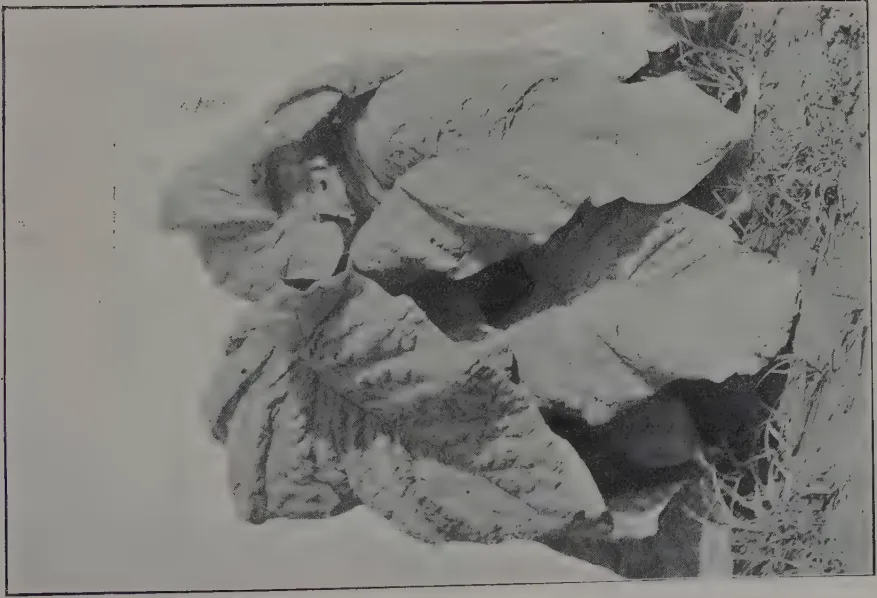
A black and white photograph of a tobacco plant. The plant has large, broad, deeply lobed leaves with prominent veins. The leaves are arranged in a rosette pattern at the base of the plant. The ground around the plant is covered with dry grass and some small weeds. The lighting is bright, casting shadows on the ground.PLANT OF "TATTAYAN" TOBACCO.
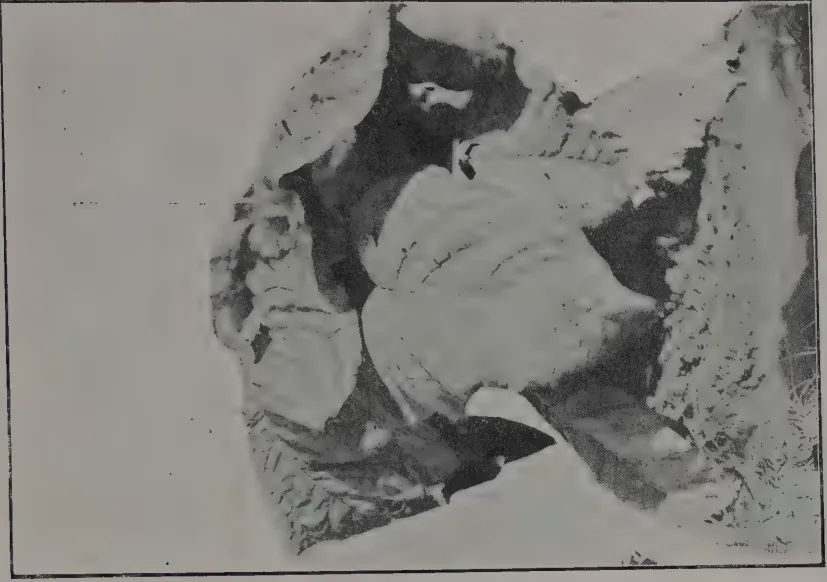
A black and white photograph of a tobacco plant. The plant has large, broad, deeply lobed leaves with prominent veins. The leaves are arranged in a rosette pattern at the base of the plant. The ground around the plant is covered with dry grass and some small weeds. The lighting is bright, casting shadows on the ground.PLANT OF "NARAMBAN" TOBACCO.
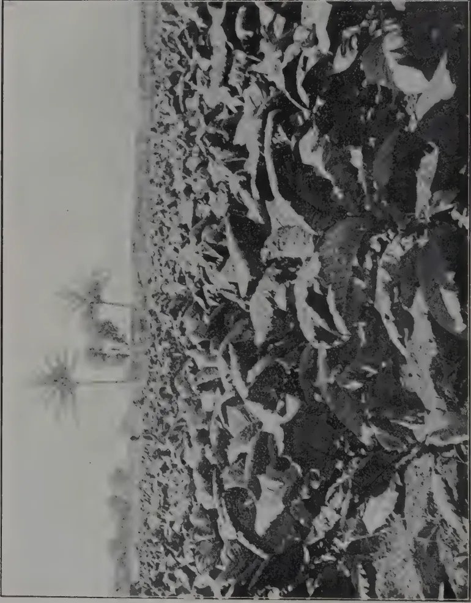
A black and white photograph showing a field of tobacco plants. The plants are densely packed and have large, broad leaves. In the background, several palm trees are visible against a clear sky. The image is framed by a thin black border.FIELD OF SMOKING TOBACCO
at Experiment Station, Jaffna.
About a fortnight after transplanting the ground is usually manotied and weeding is done round the plants. After this well powdered cattle manure is applied in handfuls to the base of the plants followed immediately by a watering. About a fortnight later the land is usually manotied again and beds and channels for irrigation prepared.
Irrigation is usually from wells. A well sweep, worked by two to four men according to the depth of the well, is the usual lifting agency. A number of Persian wheels and "Double Mhote" water lifts have now been installed in the Peninsular and are in the main giving satisfactory service. Irrigation is usually given once in three to four days during rainless periods and is continued till about a week before harvesting.
Topping is performed when the plants have put out 10 to 13 leaves. The operation consists in pinching off the growing point with the finger and thumb.
Topping results in a vigorous growth of suckers which are thereafter removed by hand about once in every ten days. Usually four to six suckering are done before harvest.
The plants will generally be ready for harvest about three months after transplanting i.e., usually about six weeks after topping. The following signs indicate maturity:—the leaves turn yellow and brittle, a gummy substance develops in the leaves and numerous "sun spots" become apparent. The treatment of the different kinds of tobacco now requires separate description.
The entire plant is cut in the morning and after being left in the sun for two or three hours is brought in to the curing shed. The leaves, with the portion of the stem to which they are attached, are cut off in the evening and hung up by the stalk end in an open shed. On the third day the leaves are taken down and packed tightly into a circular pit in the ground about 3 ft. 6 ins. in diameter and 3 ft. deep. The pit is lined with plantain leaves. The tobacco leaves are laid with the stalk ends in the centre, well trodden in, covered with palmyrah leaves, and weighted down with large stones. The tobacco is thus left to ferment for two complete days at the end of which it is taken out, turned over and put back in the pits again for another two days. The leaves are then tied together in bundles of five by the tips, hung up in a smoke curing shed and smoked for one night only. Coconut shells provide the usual fuel for smoking but some curers hold that a better flavour can be obtained by the use of "Illupay" leaves or the skins of Palmyrah fruits. After smoking, the leaves are hung in an air curing shed till the mid rib is thoroughly dry. They are then bulked till sold.
Desirable qualities in a "Tattayan" leaf are
Two systems are found:—
(2) The dealer values the standing crop in the field and, if his offer is accepted, he cuts, removes and cures the crop. The dealer's object in this case is usually to continue haggling about the price till the crop has reached full maturity and harvesting can be no longer delayed, thus hoping to beat down the cultivator. In 1923 an average price for standing "Tattayan" tobacco was Rs. 150/- per thousand plants.
When the plants are mature the leaves are cut off together with the section of the stem to which they are attached. They are allowed to lie in the field for three or four hours and are then brought in and heaped up near the smoke curing shed. The heap will contain as many leaves as can be hung in the smoking shed at one time, say about 1500. On the third day the leaves are made up into bundles of five, tied together by the tips and hung on to lathes in the smoke curing shed. The leaves are smoked for twenty-four hours. They are then rebulked for three days, and smoked again for twenty-four hours as before. After this second smoking the leaves are examined and those that still show a succulent mid-rib are subjected to a short further smoking. When smoking is complete the leaves are hung in an open shed till all the "veins" are thoroughly dry. The leaves, as they dry out, are removed from the shed and bulked till sold. The smoke house is a small circular room about 10 ft. in diameter with mud walls 3 ft. to 4 ft. high. The interior is dug down 1 ft. to 2 ft. into the ground. The leaves are suspended from a "ceiling" consisting of an open framework of lathes. Above this is a cadjan roof. The small inferior lower leaves of this tobacco are treated separately. They are tied together in rough bundles and spread over the above mentioned framework of lathes when smoking is in progress. They thus obtain a rough smoking themselves and serve to check the too rapid egress of smoke from the smoke house. These leaves are then dried off in the same manner as the good leaves; such leaves are not exported to Travancore but are sold in Ceylon for chewing, mainly in the Kandy and Gampola districts.
The desirable qualities in a good "Naramban" leaf are
As in the case of "Tattayan" the cultivator may either sell the standing crop by the thousand plants or the cured leaves by the thousand leaves. Prices in 1923 ranged around Rs. 150/- per thousand standing plants or Rs. 45/- to Rs. 50/- per thousand good cured leaves. Tobacco for export to Travancore undergoes a very much more complicated handling process than tobacco for local consumption. We will suppose the tobacco has been cured by the cultivator and sold to a Jaffna merchant. On arrival at the merchant's godown the leaves are graded according to thickness and size. Usually seven grades are made, 4,500 to 5,000 leaves of the best grade will go to make up a candy of 600 lb. of tobacco while as many as 15,000 of the lowest grade will be required.
OCTOBER, 1923.]207After grading the tobacco is made up into rough bundles and weighed. It is then sprinkled with salt water and bulked for one day. There is said to be a great art in this process of sprinkling with salt water and the source of the water is considered important. Water from the Jaffna lagoon is said to be the best while water taken from the sea at say Kankesanturai would, it is said, spoil the tobacco. After bulking, the leaves are tied up into neat bundles with palmyrah ekels. These bundles are then bulked in heaps of 1,000 bundles from eighteen to twenty days. The tobacco is then made up into neat packages weighing 75 lb. enclosed in palmyrah matting and carefully corded up with coir rope. Such a package will contain between six and seventeen bundles of leaves according to the grade and is known as a "Cipam." The Jaffna merchant reckons that this somewhat elaborate handling and packing costs about Rs. 20/- per candy. Thus packed the tobacco is shipped to the ports of Quilon or Aleppey in Travancore. There are four brokers in the former and two at the latter port and all the Jaffna tobacco passes through their hands. These brokers sell the tobacco on commission to merchants and retailers in Travancore and advance money to the Jaffna merchants. The broker's commission ranges from Rs. 10/- to 15/- per candy according to the grade.
The 1922 crop fetched up to Rs. 800/- per candy for the best Jaffna tobacco whereas its rival, the Coimbatore tobacco, fetched only about half that price.
At the present time the annual import of Jaffna tobacco is limited by the Travancore Government to 5,745 candies—of which 3,745 candies may be landed at Quilon and 2,000 candies at Alleppey.
The curing of tobacco for sale in Ceylon for chewing appears to closely resemble that described for "Tattayan." The whole plant is cut, the sharp end of the stalk thrust into the ground and the plants left thus for two or three hours. They are then brought in and hung up by the stalk end in an open shed for a day. The leaves are then cut off with the section of the stem to which they are attached, sprinkled with sweet toddy and bulked in heaps for two days. They are then tied together in bundles of five leaves by the tips, smoked for a day, hung in an open shed till dry and finally bulked till sold. Firewood is generally used as fuel for smoking instead of coconut shells.
The following are usual rotations in garden lands :—
When it is intended to establish plantains the suckers are frequently planted in the months of March, April or May among standing tobacco. In this case tobacco will not be grown again on this land for at least five years. Where chillies are to follow tobacco the seedlings are often planted among tobacco just before the harvest of the latter.
208[OCTOBER, 1923.Cost of Cultivation and Profits.
The following estimate was largely compiled by the assistance of MR. W. P. A. COOKE, Farm School Officer.
Cost of cultivation and curing per acre.
1.—Manures and application.
| Rs. | cts. | |
|---|---|---|
| Penning 1,280 head of cattle for 3 months | 160 | 00 |
| Digging in 8 cart loads of green leaf ... | 40 | 00 |
| Cattle manure ... .. | 40 | 00 |
| Penning 4,000 sheep ... .. | 60 | 00 |
| Rs. | 300 00 | |
2.—Preparatory cultivation.
| Hoeing with mamoties ... .. | 5 | 00 |
| Three ploughings ... .. | 6 | 00 |
| Hoeing and levelling ... .. | 10 | 00 |
| Rs. | 21 00 | |
3.—Nurseries and transplanting.
| Seed and sowing ... .. | 10 | 00 |
| Transplanting ... .. | 4 | 00 |
| Rs. | 14 00 | |
4.—After cultivation and Irrigation.
| Pot watering ... .. | 12 | 50 |
| Hoeing and making irrigation channels ... | 10 | 00 |
| Topping and suckering ... .. | 4 | 00 |
| Irrigation ... .. | 64 | 00 |
| Harvesting ... .. | 5 | 00 |
| Rs. | 95 50 | |
| Total Rs. | 440 00 | |
Value of Produce for 1 acre.
| Rs. | cts. | |
|---|---|---|
| 4,000 plants at 15 cents ... .. | 600 | 00 |
| Trash ... .. | 20 | 00 |
| Suckers ... .. | 20 | 00 |
| Stumps ... .. | 8 | 00 |
| Total Rs. | 648 00 | |
| Less cost of production .. | 440 | 00 |
| Nett profit Rs. | 208 | 00 |
Yields of cured leaves per acre.
An average yield for "Tattayan" tobacco is given as 20,000 good leaves and 10,000 inferior leaves. The average for "Naramban" is somewhat lower since the plants are topped lower and the inferior lower leaves are removed early and not taken into account.
OCTOBER, 1923.]209CHRISTOPHER HAY, M.A.
In more than one issue of the MYSORE ECONOMIC JOURNAL, we have given particulars about Sisal Cultivation in the Mysore State. If we refer to it again, it is because of the interest that has been taken in it recently by reason of a new invention in the machinery line which obviates heavy outlay. Before going into this, we would give a few facts about sisal.
Sisal was first introduced into German territory on the East Coast of Africa by DR. HINDORF in 1893, and its cultivation was so successfully prosecuted that by 1914 the annual export had risen to some 20,000 tons. The industry was well organised, and the conditions of climate and soil, combined with careful organization, led to the production of a quality second to none. In 1907 planters in the Thika district near Nairobi decided to try, amongst other articles, sisal, under conditions of altitude and soil entirely different from those at that time thought essential for successful results. Within a couple of years, it was evident that the plant thrived under the new conditions, and an area was cultivated sufficiently large to justify sending out the first machinery to be used for the preparation of the fibre. The material differed but slightly from that prepared in the adjoining German territory.
One year later than the introduction of sisal into the Thika district, suckers were obtained from the German estates by a British company, who planted them on an Island in the neighbourhood of Mombasa. Here the soil is a loose coral rag, near in nature to that of the German plantations. Sisal grew satisfactorily, and other plantations extended along the coast both south and north.
Experimental plantations were started during the period of high prices as far away as the Uasin Gishu plateau, ninety miles from the railroad, but before the latter plantations reached maturity, sisal dropped in price to a point which made it impossible to compete, in view of the exceedingly high cost of transport by road and rail before reaching Mombasa for shipment, and although machinery was erected it never operated, and the sisal was uprooted.
It is to be hoped that prices may now have reached a comparatively stable level, so that it may be possible to fix the boundaries within which the cultivation of this useful fibre-bearing plant is likely to extend, provided always that a satisfactory reduction in the working costs may be secured, where these have been largely increased by war charges and the drop in exchange. Unquestionably the cost of production rose altogether too high, and the re-adjustment has been accompanied by losses which have not been comfortably borne by plantation owners. These losses have been severely
210[OCTOBER, 1923.aggravated by the adverse conditions both of exchange and of the selling markets, but it may now be assumed that the worst is past, and that those planters who aim at a large enough production, say from two plants, to justify the comparatively high cost of European supervision should find it possible to compete favourably with sisal grown in other districts, thus permitting of an extension of the area. It must, however, be borne in mind that when sisal incurs heavy charges for transport, either by road or by rail, there must be a corresponding reduction in the cost of its production to compensate for this increased cost.
Mexico is the home of sisal, and its production totals 150,000 tons per annum when the plantations are working at their full capacity. The unsatisfactory economic and industrial position has led to a considerable curtailment in consumption during the last two or three years, with the result that, owing to the accumulation of supplies through the fostering of production by Government bounties, the position of the trade is to-day economically unsound, and Mexico can only continue the production of sisal on the basis of a very heavy purchase tax, amounting to £18 per ton, imposed by the Yucatan Government in order that reserves may be created to finance further purchases of sisal, so as to support the market and enable growers to continue its cultivation. No one could have foreseen that the consumption of binder twine could possibly shrink to a point which would accumulate such heavy supplies of fibre, and this has caused a decided check in the development of the industry in Yucatan and elsewhere. This, however, can scarcely be other than a temporary setback, as the wheat crops of the world require binder twine for their harvesting, and it is unthinkable that there can be any permanent reduction in the cultivation of wheat. The abstention of Russia, a vast grain producer, doubtless accounts for the loss of equilibrium.
The war resulted in the transfer of Tanganyika Territory to a British Mandate, not, however, until its ravages and neglect had led to a large number of the magnificent plantations, well organised and well run, lapsing into jungle, or at the best becoming choked with weeds and suckers. The remainder depreciated to an extent which prevented the production of sisal of the high standard cultivated in this area before the war. These plantations have now been sold under the hammer on account of the Reparation Fund and the German owners have been replaced by British, and in a few cases, Indian proprietors. A few of these estates managed to retain their high standard through the war and after, and some of the others are slowly retrieving their position and restoring their machinery, but it will be some time before the production can be on the same scale as that of 1914. The costs in this district have risen in sympathy with the increased costs in their places, but not to the same extent as in Kenya.
South of Tanganyika and descending beyond the tropics to 27 degrees south latitude, lies Portuguese East Africa. Considerable progress has been made in the cultivation of sisal during the past ten or fifteen years. Portuguese East Africa is administered by large companies endowed by Government with wide powers over the native population within the area leased to them. These concessions confer upon them the right to tax the natives in consideration of a fixed payment to be made to Government, and the agreement entails the responsibility of developing a given area proportionate to the number of natives resident on the property.
OCTOBER, 1923.]211This territory is blessed with a very considerable native population, and a highly favourable exchange, and whereas in Kenya the rupee was artificially fixed 50 per cent. above its actual market value the fall in the value of the escudo has brought the currency of that country down to less than one-tenth of its pre-war value, which incidentally reduces wages to a like degree, and thus assists in the production of fibres on conditions which compare very favourably with those in other East African Territories. Climatic conditions and soil are satisfactory, and the quality produced from the best estates has been found fully equal to the best brushed material as prepared in pre-war days on the German territory. An additional line of railway has just been opened from Chindi, passing through a rich country southwards to Beira, thus facilitating the transport of goods at rates, which in view of the low value of the escudo, will compare advantageously with those of other African railways. Before the war the total production of sisal was approximately
| 1. German East Africa | ... | ... | 20,000 tons |
| 2. British " | ... | .. | 6,000 " |
| 3. Portuguese " | ... | ... | 1,000 " |
The present production may be estimated as under :-
| British | 1. Tanganyika | .. | ... | 10,000 tons |
| " | 2. Kenya | ... | ... | 8,000 " |
| " | 3. Portuguese East Africa | ... | ... | 5,000 " |
It will thus be seen that the production has diminished directly as a result of the war, but in view of the developments of the last few years, it is evident that the African output will now steadily expand. It has been definitely proved that the climatic conditions, soil, and labour compare satisfactorily with those in Mexico, the home of sisal, and although the henequen plant, which produces the bulk of the fibre in Mexico, is different in its nature, and takes seven to eight years to mature, and then goes on producing for twenty years, or even longer, at the rate of twenty-five leaves per annum, there can be no doubt that in view of the better quality and preparation of the East African product, and its improved conditions, there is room for further expansion in this industry in Africa, proved either that Mexico eases off production to a corresponding amount, or that the world's markets recover sufficiently to be able to absorb the whole of the production into current use for ropes or binder twine
Sisal would have been eagerly taken up in this country to a greater extent, but for the fact that those who had suitable soils, money and inclination, did not care to embark on the cultivation of 500 or 600 acres which was laid down as the minimum which would justify the expense of necessary machinery, and buildings for a small factory, and there has been little co-operation, where two or three or more adjoining properties could have put in 100 acres or more each, and shared the expenses of the machinery. The "Jamaica Agricultural Society's Journal" from which we glean the facts included in this article, states that a machine has now been invented, which obviates the need for expensive machinery and elaborate factory buildings. The machine is portable, i.e., it can be taken to the fields and the fibre dealt with there. It weighs only 1,550 lb., and can be landed here for £300; its easy capacity is 5,000 leaves per day, or 250-300 lb. weight of clean fibre. It is operated by a 5-horse power gasolene engine, and requires only 2 men and 2 boys to work it. The waste from this machine is recoverable, which means a considerable item in the course of a year.
The machine, we are told, is manufactured by the GEO. L. SQUIERS, Mfg. Coy., Buffalo, U.S.A.—MYSORE ECONOMIC JOURNAL, Vol 9, No. 9.
212[OCTOBER, 1923.Report submitted at Meeting of Estate Products Committee of the Board of Agriculture.
This grass is a coarse leafy perennial with a tendency to grow in clumps. It was cut 13 times during the year and has given the highest yield again this year. The annual yield of fodder per acre works out at 34.8 tons.
This is the common guinea grass which is a particularly valuable fodder for milk cattle. The annual yield of fodder was 26.5 tons per acre. This plot was cut every month except February.
This plot was abandoned as it was too mixed and the soil found unsuitable for this variety of grass.
This plot presents a very healthy appearance but the foliage is short and the yield is therefore less than guinea grass. This plot was cut 11 times during the year yielding 21.5 tons of fodder per acre.
This plot is growing well though the clumps are small. It has given the least yield—15.9 tons per acre per year.
This plot grew very luxuriantly and attained a height of 2 feet and has covered the ground completely. It endured the long periods of drought without injury. The total yield is slightly superior to Guinea grass and has given the 2nd best yield for the year—34.9 tons per acre per year as against 22.7 tons last year.
This plot had to be abandoned as there was a large admixture of Natal grass. A new plot has however been established and it is at present growing well but somewhat slowly.
OCTOBER, 1923.]213Pennisetum Purpureum (Renamed Pennisetum Typhoidium).This plot was planted from cuttings in June 1923 on land which was previously under Bermuda and Kikuya grass. Distance of planting 2 feet by 2 feet. The grass was carefully weeded once after planting.
The succulent stems and foliage when chopped up are readily eaten by cattle and shows considerable promise.
New Introductions.Elephant Grass (Pennisetum purpureum).Cuttings of this grass were obtained from the Central Farm, Coimbatore and planted in nurseries for comparison with other grasses growing as elephant grass. All the cuttings are growing well.
Pennisetum purpurascens.This grass was received from the Philippine Islands under the name Pennisetum purpureum. It was however recently been identified by the Botanist and Mycologist as Pennisetum purpurascens.
It has thriven very well and grows rapidly and will be tried on a larger scale.
Efwatala Grass (Molinis minutiflora).Seed of this grass received through the Royal Botanic Gardens, Kew, was sown in a nursery bed in June. Six healthy clumps are growing.
H. A. DEUTROM,
Acting Manager, Experiment Station, Peradeniya.
Yields of Fodder grasses from August 5th, 1922 to August 5th, 1923.| Variety | Area acres | Total yield Tons | No. of cuttings | Weight per cutting. | |||
|---|---|---|---|---|---|---|---|
| 1921-22 | 1922-23 | 1921-22 | 1922-23 | 1921-22 | 1922-23 | ||
| Guinea grass "A" Panicum maximum |
1 | 40.8 | 34.8 | 13 | 13 | 3.1 | 2.7 |
| Guinea grass "B" Panicum maximum |
1 | 39.4 | 26.5 | 12 | 11 | 3.3 | 2.4 |
| Water grass Panicum muticum |
1 | 33.2 | abandoned | 8 | abandoned | 4.1 | abandoned |
| Paspalum virgatum Renamed Paspalum Dilatalum |
27.8 | 21.5 | 10 | 11 | 2.8 | 1.9 | |
| Rhodes grass Chloris gayana |
1 | 22.9 | 15.9 | 8 | 8 | 2.8 | 2.0 |
| Paspalum Dilatalum Renamed Paspalum Dilatalum "A" |
22.7 | 34.09 | 6 | 9 | 3.8 | 3.8 | |
PRIZE DAY: SATURDAY, AUGUST 25, 1923.
The annual prize distribution of the School of Agriculture took place on Saturday afternoon at Irene Hostel, Peradeniya. The Hon'ble MR. CECIL CLEMENTI, Colonial Secretary, presided, and others accommodated with him were: MRS. CLEMENTI, the HON'BLE MR. F. A. STOCKDALE (Principal) and MR. J. C. DRIEBERG (Farm School Officer).
MR. STOCKDALE read the following report :--
We are holding to-day the sixth prize-giving of the School of Tropical Agriculture and the third since the buildings here were opened in 1921.
The last final examinations for the English and Vernacular Teachers' Classes were held in March this year; and it is to the students and teachers of these classes that awards and certificates are being distributed to-day. Fourteen English-speaking students took up their examination, and all passed. Of these, two were placed in the First class and three in the Second class. The results showed an improvement on the previous year. Of the twelve Government Teachers, eleven passed satisfactorily; while one, whose attendance and general efficiency were marred by continual illness, was required to spend a further term before being granted a certificate.
The new School year commenced in May, when sixteen students for the course in English and twelve teachers for the vernacular course were admitted. The total number on the roll at present is forty-four. A class of students from the Training Colony, Peradeniya, also continues to attend a course of instruction in agriculture. The School and Hostel are under the general supervision of the Divisional Agricultural Officer, Central, as Vice-Principal; while MR. J. C. DRIEBERG, continues to be in immediate charge as Farm School Officer. Consequent to the vacancy which occurred in the Division of the Economic Botanist, MR. G. V. WICKRAMASEKERA, who paid special attention to the subject of Plant Improvement during his course of study in India, was transferred from the School last month; MR. R. S. D. JANSZ, who passed through this School in 1921 and since then was on the tutorial staff of St. John's College, Panadure, being selected to fill the vacancy. MR. C. WICKREMARATNE continues the work with the Vernacular Class. MR. E. S. de S. JAYASUNDERA, who was serving in the capacity of a volunteer at the time of the last prize-giving, was subsequently appointed as Farm and Laboratory Assistant. The work in Estate Accounts continues to be taken by MR. C. PEREIRA, the Accountant of Pallekelly Estate. Regular Demonstrations in Planting and in Horticulture are given by the Manager, Experiment Station, Peradeniya and the Superintendent, Botanic Gardens, respectively. Lectures in Co-operation are given by MUHANDIRAM N. WICKREMARATNE, Secretary, Board of Control, Co-operative Credit Societies.
OCTOBER, 1923.]215With the staff of this school must always be associated the name of the late MR. H. L. VAN BUUREN. He was one of the four scholars sent to India for Agricultural Training, who, on their return, were attached to the School when it was opened in 1916. He worked in the best interests of this institution, for four years, and later, was doing efficient work in the sphere of Economic Botany. I desire to express my appreciation of the assiduity with which he performed his duties, and of the high quality of his work. It is to be regretted that a career of much promise has ended so early. The return of MR. G. E. J. HULUGALLE, who was also previously on the Staff of the School, from a special course of Higher Training in Agriculture at Cambridge University has to be recorded.
The general work of the school continues to be satisfactory; but much is still to be desired on the practical side. A subject such as Agriculture demands a high and continuous degree of efficiency in field work, which must be pursued at all times and regardless of the condition of the weather. The importance of this aspect of the work at the school cannot be too strongly urged; and it is to be confidently hoped that students who come here for a training will realise that they can only obtain the full advantage of the courses by application in the field. The prize that has been offered by HIS EXCELLENCY THE GOVERNOR, as an encouragement to efficiency in Practical Agriculture, goes to the student who not only shows aptitude in field-study, but also does good work on his plots.
The activities of the school are gradually becoming varied and are widening. Bees and Poultry have been introduced: whilst provision has been made for the establishment of a small Dairy during the forthcoming financial year.
The annual tour of the school took place in March last, when the First and Second Year Students went to Jaffna and Anuradhapura. Visits were paid to the Government Experimental Stations, to Estates and Farms, to the Ratmale Colony where the students were kindly met by MR. H. R. FREEMAN, and to Sravasti Estate. On the tour, the students were entertained by MR. W. A. DE SILVA at Anuradhapura, and MR. SUNDERAM at Pallai. The Teachers' Class visited five schools around Peradeniya, at Rambukkana and Mirigama, at all of which good School Gardens are to be seen. The out-door work of the children was scrutinized, and this was followed with lessons on agricultural subjects in the class-room. At the end of the day, the teachers in training and the staff of the visited school met for discussion of matters relative to their work; and this proved to be of mutual advantage. The teachers expressed their appreciation of the scheme of work and of the arrangements made.
Up to now, 147 students have passed through this School, and gained certificates; of whom 36 have joined the Department of Agriculture. Fifty-five passed students are engaged in work on estates; while 20 have transferred their interests to spheres other than agriculture. It is satisfactory to note that the work of 70% of the past students of this school is connected with agriculture.
The work of the school has been in progress now for over 7 years, and it would appear to be opportune to make a few remarks on agricultural education in general.
In the elementary schools special attention is given to the School Garden work and to the teaching of Nature knowledge. Attention is also given to the encouragement of pupils in Home Gardens. Special courses for Teachers in these Vernacular Schools at the Peradeniya School of Agriculture have given an agricultural bias to their training and there is now a desire for an agricultural reader for these schools. This has been drawn
216[OCTOBER, 1923.up by MR. C. DRIEBERG who was formerly Vice-Principal of the School of Tropical Agriculture at Peradeniya and is being translated into the vernaculars. The School of Tropical Agriculture at Peradeniya provides courses which are of a practical character, with a view to fitting students to tackle local agricultural problems, to cultivate more successfully their own lands, and to become efficient assistants on estates, agricultural instructors or inspectors. Emphasis is laid on the practical side of this training and encouragement is given to students to make research investigations of an elementary character while at the school. The buildings for a similar school in the North will be completed during the forthcoming year. At these schools, it is intended to provide an essentially practical course of training in agriculture and specially designed to meet the requirements of those making agriculture their life's work. The higher training in the sciences of agriculture will be provided by the University College in conjunction with the Research Branch of the Department of Agriculture.
To the donors of the awards, which are an earnest of their interest in the work of the School, we tender our most cordial thanks. His Excellency the Governor gives a prize for General Efficiency in Practical Agriculture and Gate Mudaliyar A. E. Rajapakse again offers the Gold Medal for the best all-round student of the course. The other gentlemen who have kindly given prizes are: Sir Solomon Dias Bandaranaike, Sir H. Marcus Fernando, the Hon. Mr. H. L. De Mel, Mudaliyar V. M. Muttukumaru, Mr. J. C. Ratwatte Dissawa, Mr. E. A. Elapatha Dissawa, Mr. W. A. de Silva, Mr. Graham Panditsekara and Muhandiram N. Wickremaratne.
We have great pleasure in welcoming you, Sir, this afternoon, as we are conscious of the keen interest you take in matters pertaining both to Agriculture and to Education. I also have to express our appreciation of your presence, MRS. CLEMENTI, and to thank you for having so graciously consented to distribute the awards and certificates to-day.
F. A. STOCKDALE,
Director of Agriculture.
The CHAIRMAN then called upon MRS. CLEMENTI to give away the prizes and certificates. The following is the list:—
"The Rajapakse Gold Medal," for the best all-round student of the course, presented by Gate Mudaliyar A. E. Rajapakse, J.P., awarded to L. J. P. Perera.
His Excellency the Governor's Prize, presented for general efficiency in Practical Agriculture, awarded to J. S. Fernando.
1st Prize, presented by Mudaliyar V. M. Muttukumaru, awarded to L. J. P. Perera and M. P. D. Pinto, equal.
For Economic Products:—1st Prize, presented by the Hon. Mr. H. L. De Mel, C.B.E., awarded to M. P. D. Pinto.
2nd Prize, presented by W. A. de Silva Esq., J.P., awarded to C. E. de Saram.
For Agricultural Zoology:—1st Prize, presented by Graham Pandittesekara, Esq., awarded to L. J. P. Perera.
2nd Prize, presented by E. A. Elapata, Esq., Dissawa, awarded to J. H. L. de S. Jayasundera,
CERTIFICATES.Class 1.—Liyange John Peter Perera; Mihidukulasuriya Peter Diego Pinto.
Class 2.—Charles Edward de Saram, John Henry Lorenz de Silva Jayasundera; Victor Lionel de Silva Senaratne.
Pass.—Julian Simon Fernando; Robert Daniel Kadramer; Edward Felix Kannangara; Burgherge Emmanuel Joseph Payoe; Clement Oswald Peiris; Mahapatabendige Santiago Perera; Joseph Linsley Caspersz; Felix Alexander Fernando; Herbert Lyonel Hastings.
AWARDS AND CERTIFICATES TO TEACHERS.1921—22| Silver Medal | ... | G. A. G. PERERA |
| Bronze Medal | ... | D. B. DISSANAYAKE |
| Bronze Medal | ... | H. G. JAYASENA |
| Silver Medal | ... | G. D. PEIRIS |
| Silver Medal | ... | D. S. WICKRAMASINGHE |
| Bronze Medal | ... | M. P. BANDA |
M. P. Banda; M. U. Banda; R. W. U. Banda; U. Banda, U. K. D. Cornelis; H. Ebith Appu; P. M. James; K. P. James Sinno; K. D. A. Nanayakkara; M. B. Nissanka; G. D. Peiris; D. S. Wickramasinghe.
THE CHAIRMAN'S ADDRESS.MR. CLEMENTI said: Ladies and Gentlemen,—It has been a very real pleasure to my wife and myself to be here this afternoon, and I should like to congratulate both the authorities of the school and the scholars on the very excellent report which has been read to us. The success of the school is a matter of great moment to the colony, because the prosperity of Ceylon depends upon agriculture more than upon anything else. It is, therefore, a matter of the greatest importance to us that the agricultural education in the colony should proceed upon sound lines. Now it is evident that the education here is proceeding upon sound lines and I hear with great pleasure that special attention is being given to the practical side of agriculture; because the man who succeeds in agriculture is the man who makes things grow. You don't make things grow by saying "oh how beautiful" and sitting in the shade, but by pulling off your coat and rolling up your shirt sleeves and tending your fields, your cattle, your poultry and your bees as the case may be.
218[OCTOBER, 1923.Now another satisfactory feature about this report was that 70 per cent. of the students of this school have continued the practice of agriculture after they left the school. I only wish that the remaining 30 per cent. did the same because the other professions in the colony are now somewhat sadly overstocked, the number of medical students is such that it will soon be difficult to die without the benefit of medical comfort, and the law students are too many that it will soon be impossible to settle a case out of court; and I never was able to understand why so many people seek for positions under Government and wish to become Government clerks, because it is the one profession in which you are never your own master—whether you are the Governor or the humblest clerk in the Government Service—whereas a proprietor is his own master from the day he settles on his land till the day of his death. Therefore I think those of you who have chosen agriculture for your profession have done wisely and well. Before I sit down I want to say something special to the teachers who are going to teach in the vernacular schools. The future of agriculture in this colony will rest very largely in your hands. It will be for you to inculcate the dignity of labour, to show the boys how to grow things in the school gardens, to impress upon them the fact that if they are good agriculturists they will be able not only to earn a good livelihood but in times of the greatest stress to provide food for their own families and even for other families, who have run short. In fact there is no branch of the community that can do more to assist in the agricultural progress of the colony—by that I mean not only the growing of rice but all agricultural products and the pasturage of cattle—than those who go out to teach agriculture in the vernacular schools.
I wish you every success in your work. I congratulate those who have won prizes, condole with those who have not, and hope that you will have a very happy holiday.
MR. C. WICKREMARATNE interpreted the latter portion of the Chairman's speech regarding the teachers into Sinhalese.
The HON. MR. F. A. STOCKDALE proposed a vote of thanks to the HON. MR. CECIL CLEMENTI and MRS. CLEMENTI for coming there that afternoon to help at the prize-giving of the school. The school had now been working for the past 7 years and every year turned out young men who had received a training, both in the practical and scientific side of agriculture. It was indeed a great pleasure to the school to have the highest officials of the colony presiding at its prize-givings, for it showed that they were helping in the work which they at Peradeniya were there to perform.
The following are the awards which have been made by the Department of Agriculture to those Government Vernacular and Anglo-Vernacular Schools which possess registered school gardens, and where school garden work during the year 1922-23 has been reported upon as satisfactory. As usual the awards have been made on the recommendations based upon inspection of gardens and of nature study work carried on in conjunction with such gardens.
The work of inspection of these gardens has been organised, as before, in the case of the three agricultural divisions, viz., Central, Southern and Northern by the Divisional Agricultural Officers concerned, while the same
OCTOBER, 1923.]219has, in the North-Western Province, Province of Uva and the districts of Colombo and Ratnapura, been carried out by the respective Senior Agricultural Instructors in charge.
School garden work on the whole has continued to improve, and it is gratifying to note the high standard of improvement attained by the schools in the Colombo district during the period under review; the Senior Agricultural Instructor in charge has succeeded in his attempts to bring the work of the Ratnapura district to a level with that of the Colombo district, which has now reached a high standard. School garden work in the Kurunegala district of the North-Western Province continues to improve year by year—thanks to the offer of the prize by HON. LT.-COL. T. Y. WRIGHT for competition among school gardens in the N. W. P. which attracts a fair number of competitors.
The establishment and care of home gardens is receiving its due share of attention by pupils attending those schools which own registered school gardens, and it is evident that teachers and pupils alike are beginning to realise the value of extension work. There are still some districts where home gardens have not developed to any extent, and there has been a falling off in this direction in the Central Division. Endeavours are being made to instil in teachers and pupils the importance of agricultural education on the lines adopted by the Department.
The money prizes shown in the list attached are for distribution among teachers, assistant teachers and pupils equally, while awards for creditable home gardens are personal to the recipients.
During the year a further supply of implements has been made to the more deserving school gardens in all districts, and the equipment of such gardens can be said to be satisfactory.
Supplies of seeds and plants also continue to be made by the Central Seed Store and the Royal Botanic Gardens, Peradeniya.
It may be recorded that the standard of work in school gardens continues to progress, and it is hoped that the officers concerned will be able to show material improvement in agricultural education.
F. A. STOCKDALE,
Director of Agriculture.
SCHOOL GARDENS.
CENTRAL DIVISION.
Kandy District.
| Name of School. | Name of Teacher. | Award. | ||
|---|---|---|---|---|
| Certificate and | Rs. | 20 00 | ||
| Idamegama, B.V.S. | M. G. S. de Silva | " | " | 20 00 |
| Nugawela, B.V.S. | D. M. U. Banda | " | " | 20 00 |
| Mahamedagama, M.V.S. | P. U. Banda | " | " | 20 00 |
| Mediwaka, M.V.S. | G. D. Banda | " | " | 20 00 |
| Gunnepana, B.V.S. | W. M. A. Weerasinghe | " | " | 20 00 |
| Gunnepana, G.V.S. | D. J. Rupesinghe | " | " | 20 00 |
| Alawatugoda, B.V.S. | P. R. Banda | " | " | 15 00 |
| Doragamuwa, B.V.S. | D. G. Hendrick | " | " | 15 00 |
| Paranagama, B.V.S. | W. W. Perera | " | " | 15 00 |
| Hindagala, M.V.S. | P. B. Khehgamuwe | " | " | 15 00 |
| Talatuoya, B.V.S. | R. M. D. Godamune | " | " | 15 00 |
| Hedeniya, G.V.S. | K. E. de Silva | " | " | 10 00 |
| Paranagama, G.V.S. | B. M. Ratnayake | " | " | 10 00 |
| Werapitiya, B.V.S. | K. M. P. Banda | " | " | 10 00 |
| Butawatte, G.V.S. | W. R. S. Kahalakalawe | " | " | 10 00 |
| Urugala, B.V.S. | D. B. Dissanayake | " | " | 10 00 |
| Marassana, B.V.S. | M. P. Ratnayake | " | " | 10 00 |
| Kandy District,—Contd. | ||
|---|---|---|
| Name of School. | Name of Teacher. | Award. |
| Giraula, B.V.S. | G. A. Bandara | Certificate and Rs. 10 00 |
| Kobbekaduwa, B.V.S. | M. W. R. Weerakoon | " " " 10 00 |
| Haputale, B.V.S. | D. B. Kotandeniya | Certificate only |
| Waradiwala, B.V.S. | S. M. J. Perera | " |
| Halloluwa, B.V.S. | K. D. M. Nanayakkara | " |
| Nugawela, G.V.S. | E. B. Seneviratne | " |
| Handessa, B.V.S. | K. D. A. Nanayakkara | " |
| Nugattenne, B.V.S. | K. B. Dissanayaka | " |
| Uduwa, B.V.S. | P. D. Banda | " |
| Akurana, B.V.S. | T. J. Ponniah | " |
| Doragamuwa, G.V.S. | H. G. Gnawati | " |
| Panwilattenne, B.V.S. | D. M. P. Banda | " |
| Matale District. | ||
| Madipola, B.V.S. | P. W. D. Banda | Certificate and Rs. 10 00 |
| Palapatwala, B.V.S. | S. P. Vitanapatirana | " " " 10 00 |
| Tenne, B.V.S. | W. P. Banda | " " " 10 00 |
| Yattawatte, B.V.S. | P. Punchirala | Certificate only |
| Akuramboda, B.V.S. | P. M. Dissanayaka | " |
| Galewala, B.V.S. | U. B. Dissanayaka | " |
| Pannampitiya, B.V.S. | K. H. Punchirala | " |
| Nuwara Eliya District. | ||
| Pundaluoya, B.V.S. | B. M. K. Banda | Certificate and Rs. 15 00 |
| Tispone, B.V.S. | K. B. Ekanayaka | " " " 15 00 |
| Udamadura, B.V.S. | H. B. James Sinno | " " " 15 00 |
| Wataddora, M.V.S. | R. W. L. Charles | " " " 10 00 |
| Kadadora | G. G. Appuhamy | " " " 10 00 |
| Madulla, B.V.S. | W. Siyatu | Certificate only |
| Munwatte, B.V.S. | D. M. K. Banda | " |
| Sangilipalama, B.V.S. | H. M. D. B. Samarakoon | " |
| Kegalla District. | ||
| Bossella, B.V.S. | M. D. Premasuriya | Certificate and Rs. 20 00 |
| Getiyamulla, B.V.S. | W. Amerasena | " " " 20 00 |
| Ambepussa, B.V.S. | P. M. K. Banda | " " " 20 00 |
| Beddewala, B.V.S. | K. D. J. Wickremesinghe | " " " 15 00 |
| Pinnawala, B.V.S. | K. G. Karunatileka | " " " 15 00 |
| Nilwala, B.V.S. | D. H. Ranasinghe | " " " 15 00 |
| Mawatugoda, B.V.S. | U. W. S. Wijeratne | " " " 15 00 |
| Hettimulla, B.V.S. | D. A. Rajepakse | " " " 15 00 |
| Ruanwella, B.V.S. | J. W. Wijesinghe | " " " 15 00 |
| Kottapola, G.V.S. | D. D. Wijesinghe | " " " 10 00 |
| Kottapola, B.V.S. | D. M. A. Jayasinghe | " " " 10 00 |
| Mawanella, B.V.S. | A. R. Abeyratne | " " " 10 00 |
| Galapitamada, B.V.S. | } D. A. Ranatunga | " " " 10 00 |
| Maniyangama, B.V.S. | ||
| Hematagama, B.V.S. | Peiris Appu | " " " 10 00 |
| Deraniyagala, B.V.S. | M. Wickremesinghe | " " " 10 00 |
| Dombe Mada, B.V.S. | W. T. Banda | Certificate only |
| Kehelwatte, B.V.S. | P. A. James Appuhamy | " |
| Hatnagoda, B.V.S. | K. P. James Sinno | " |
| Atulugama, B.V.S. | W. D. Thomis | " |
| Kengalle, B.V.S. | W. A. Perera | " |
| Aranayake, B.V.S. | C. H. Hemapala | " |
| Pitiyegama, B.V.S. | M. Ratnayaka | " |
| Etnawala, B.V.S. | J. P. Dissanayake | " |
| Dedugala, B.V.S. | " | |
| Name of School. | Name of Teacher. | Award. |
|---|---|---|
| Alutgama, B.V.S. | G. P. Abeysekera | Certificate and Rs. 25 00 |
| Walallawita, B.V.S. | A. Munasinghe | " " " 20 00 |
| Tudugala, B.V.S. | D. H. Karawita | " " " 15 00 |
| Liniyawa, M.V.S. | D. G. Abeysinghe | " " " 15 00 |
| Bopitiya, B.V.S. | B. D. Leyaris | " " " 15 00 |
| Bulatsinhala, B.V.S. | T. Perera | " " " 15 00 |
| Paragastota, M.V.S. | James Peiris | " " " 10 00 |
| Lathpandura, B.V.S. | D. F. Manamperi | " " " 10 00 |
| Handapangoda, B.V.S. | M. D. William | " " " 10 00 |
| Illimbe, M.V.S. | W. Kirineris | " " " 10 00 |
| Uduwara, B.V.S. | D. C. Amerasinghe | " " " 10 00 |
| Migahatenna, B.V.S. | R. H. D. S. Jayasekera | " " " 10 00 |
| Kewitiyagala, M.V.S. | W. S. S. Wijeyatilleke | " " " 10 00 |
| Tantirimulla, B.V.S. | D. H. Kannangara | " " " 10 00 |
| Nakandalagoda, B.V.S. | D. L. Atapattu | " " " 10 00 |
| Alubomulla, B.V.S. | B. B. Perera | " " " 10 00 |
| Galpata, B.V.S. | I. D. Perera | " " " 10 00 |
| Matugama, M.V.S. | J. R. Amerasinghe | " " " 10 00 |
| Bellapitiya | M. D. Neris | Certificate only |
| Kalupana | D. J. Pulleperuma | " |
| Welikala | H. S. Perera | " |
| Morontuduwa | P. D. Tissera | " |
| Ittepana | D. C. Gunasekera | " |
| Horadugoda, M.V.S. | D. U. Samaratunga | Certificate and Rs. 20 00 |
| Niyagama, B.V.S. | D. P. Wijesinghe | " " " 20 00 |
| Kottawa, B.N.S. | D. T. S. Jayawardena | " " " 15 00 |
| Magedera, M.V.S. | S. A. Kodituakku | " " " 15 00 |
| Rantotuwila, B.V.S. | G. D. Johannes | " " " 10 00 |
| Ihalagoda, B.V.S. | B. C. Wijayapala | " " " 10 00 |
| Polpagoda, M.V.S. | H. L. Endoris | " " " 10 00 |
| Gonagala, B.V.S. | D. W. Welaratne | " " " 10 00 |
| Elakake, B.V.S. | H. R. H. Premaratne | " " " 10 00 |
| Tawalema, B.V.S. | S. D. Bastian | " " " 10 00 |
| Walpita, M.V.S. | P. R. Seneviratne | " " " 10 00 |
| Bussa, B.V.S. | A. J. E. de Silva | " " " 10 00 |
| Yatagoda, B.V.S. | S. M. Abeysekera | Certificate only |
| Keembiya, B.V.S. | W. D. Cornelis | " |
| Telikade | K. A. Carolis | " |
| Hungantota | H. Emanis de Silva | " |
| Kotapola, B.V.S. | P. F. Abeywickreme | Certificate and Rs. 20 00 |
| Narandeniya, B.V.S. | T. D. Nicholas | " " " 20 00 |
| Tihagoda, B.V.S. | D. H. de Silva | " " " 20 00 |
| Karagoda Uyangoda, B.V.S. |
D. D. Dias | " " " 15 00 |
| Marambe, M.V.S. | H. de Silva | " " " 15 00 |
| Bamunugama, M.V.S. | K. P. Kulasinghe | " " " 15 00 |
| Talpawila, B.V.S. | M. Samarasinghe | " " " 15 00 |
| Deiyandara, B.V.S. | A. H. T. de Silva | " " " 15 00 |
| Name of School. | Name of Teacher. | Award. |
|---|---|---|
| Beralapanatara, M.V.S. | D. A. Wickremesinghe | Certificate and Rs. 15 00 |
| Rotumba, B.V.S. | D. D. W. Gunasekera | " " " 15 00 |
| Aparekka, B.V.S. | D. A. Abeywickreme | " " " 10 00 |
| Alapaladeniya, M.V.S. | H. G. Charitananda | " " " 10 00 |
| Atureliya, M.V.S. | Odiris de Silva | " " " 10 00 |
| Morawake, B.V.S. | D. Abeywickreme | " " " 10 00 |
| Owitigamuwa | K. Byes | " " " 10 00 |
| Makandura | K. C. Samarawickrema | " " " 10 00 |
| Bengamuwa, M.V.S. | M. Carolis | Certificate only |
| Pallegama, M.V.S. | L. M. Kavenis | " |
| Puhulwella, B.V.S. | S. P. Sinno Appuhamy | " |
| Siyambalagoda, B.V.S. | L. de Silva | " |
| Nihiluwa, B.V.S. | D. B. Senarat Yapa | Certificate and Rs. 15 00 |
| Bedigama, B.V.S. | C. Mathangaweera | " " " 10 00 |
| Katuwana, B.V.S. | H. D. Muthamerenna | " " " 10 00 |
| Beligalle, B.V.S. | H. D. Marathelis | " " " 10 00 |
| Palatuduwa, B.V.S. | D. P. Ferdinando | " " " 10 00 |
| Nakulugamuwa, B.V.S. | D. S. Wickremesinghe | " " " 10 00 |
| Middeniya, B.V.S. | Thomas Appu | " " " 10 00 |
| Tissamaharama, B.V.S. | Jayasekera Don Cornelis | " " " 10 00 |
| Talawa, B.V.S. | J. P. S. Abeykoon | " " " 10 00 |
| Talwatte, B.V.S. | H. S. A. G. Patabendi | " " " 10 00 |
| Rekawa, B.V.S. | A. G. Nicholas | Certificate only |
| Kiula, M.V.S. | D. C. Wijeweera | " |
| Kahandamodara, M.V.S. | L. M. D. Lewanis | " |
| Etaweeragollega, B.V.S. | A. W. Gunasekera | Certificate and Rs. 20 00 |
| Etambagaskade, B.V.S. | D. M. D. B. Jayawardhana | " " " 20 00 |
| Minneriya, B.V.S. | P. M. P. Gunasekera | " " " 20 00 |
| Moragaswewa, B.V.S. | K. D. Banda | " " " 20 00 |
| Galadiulwewa, B.V.S. | P. N. Julius Singho | " " " 20 00 |
| Relapanawa, B.V.S. | D. K. K. Banda | " " " 20 00 |
| Galkiriyagama, B.V.S. | A. Ran Banda | " " " 20 00 |
| Gomarasankadawela, B.V.S. |
" " " 20 00 | |
| Tambuttegama, B.V.S. | H. M. Wannihamy | " " " 15 00 |
| Kendewa, B.V.S. | P. Dingiri Banda | " " " 15 00 |
| Kirigollega, B.V.S. | K. G. U. Banda | " " " 13 00 |
| Horowapatana, B.V.S. | U. Ranhamy | " " " 15 00 |
| Talgaswewa, B.V.S. | A. W. D. Baron | " " " 15 00 |
| Kahatagasdigaliya, B.V.S. | K. B. Weerakoon | " " " 10 00 |
| Mahaelagamuwa, B.V.S. | T. B. Amunugama | " " " 10 00 |
| Konwewa, B.V.S. | R. B. Werakagoda | " " " 10 00 |
| Ranorewa, B.V.S. | U. B. Dissanayaka | " " " 10 00 |
| Tammennawa, B.V.S. | A. M. Appuhamy | " " " 10 00 |
| Hebitigollega, B.V.S. | M. P. Sugatadasa | " " " 10 00 |
| Nelliaddi, G.B.S. | V. Thuraiappah | " " " 10 00 |
| Name of School. | Name of Teacher. | Award. |
|---|---|---|
| Iratperiyakulam, B.V.S. | D. M. Dharmawardhana | Certificate and Rs. 20 00 |
| Madukande, B.V.S. | D. Akolis | " " " 15 00 |
| Puttukulam, B.V.S. | S. M. Arunasalam | " " " 10 00 |
| Erukkalampiddy, B.V.S. | K. Alexander | Certificate and Rs. 15 00 |
| Vidattaltivu, B.V.S. | J. K. Vallipuram | " " " 15 00 |
| Danowita, B.V.S. | H. P. Sumanapala | Certificate and Rs. 25 00 |
| Mirigama, A.V.B.S. | D. W. Nissanga | " " " 20 00 |
| Mallehewa, B.V.S. | A. M. Premasooriya | " " " 20 00 |
| Kiriwattuduwa, B.V.S. | M. D. Peiris | " " " 15 00 |
| Urapola, B.V.S. | D. A. Ranaweera | " " " 15 00 |
| Magalegoda, B.V.S. | K. H. Somapala | " " " 15 00 |
| Gehenuwala, B.V.S. | G. A. G. Perera | " " " 15 00 |
| Pasyala, B.V.S. | M. C. Abeykoon | " " " 10 00 |
| Minuwangoda A.V.B.S. | J. W. A. Jayawardena | " " " 10 00 |
| Alutgama, B.V.S. | D. J. Perera | " " " 10 00 |
| Kirindewla, B.V.S. | M. L. Silva, Guru Mohandiram | " " " 10 00 |
| Mirigama, G.V.S. | Miss B. D. P. Siriwardena | " " " 10 00 |
| Kumballoluwa, B.V.S. | K. M. D. S. Abeytunga, Guru Mohandiram |
" " " 10 00 |
| Kesbewa, B.V.S. | G. C. Dabre | " " " 10 00 |
| Dangalla, B.V.S. | V. D. D. Wickremaratne | " " " 10 00 |
| Botale, G.V.S. | Mrs. M. N. Senanayake | " " " 10 00 |
| Keenadeniya, B.V.S. | H. D. Thegis | " " " 10 00 |
| Aturugiriya, B.V.S. | D. D. Karunasekera | " " " 10 00 |
| Wigoda, B.V.S. | D. P. Ranaweera | Certificate only |
| Jalataru, B.V.S. | D. S. Wickremesinghe | " |
| Alutgama, G.V.S. | Mrs. D. M. Nissanga | " |
| Padukka, A.V.B.S. | G. D. de Silva | " |
| Bope, B.V.S. | H. D. Pensianu | " |
| Kankaniyamulla | K. D. Peiris | Certificate and Rs. 20 00 |
| Hettipola | W. A. Seneratna | " " " 20 00 |
| Kirindewa | J. A. Munasinhe | " " " 20 00 |
| Nakkawatte | 1. K. D. Banda, Rs. 10/ } 2. K. D. J. Gunatillake " 10/ } |
" " " 20 00 |
| Boyagane | R. P. Dharmawardhana | " " " 20 00 |
| Nikaweratiya | B. R. Senanayake | " " " 20 00 |
| Awlegama | W. B. U. Banda | " " " 20 00 |
| Borawewa | S. N. D. Banda | " " " 15 00 |
| Makandura | Romiel Perera | " " " 10 00 |
| Name of School. | Name of Teacher. | Award. | ||
|---|---|---|---|---|
| Certificate and | Rs. | |||
| Nammala | D. Kebilitygoda | " | 10 | 00 |
| Ittanawatta | H. M. Wariyapola | " | 10 | 00 |
| Atamune | K. Kiri Banda | " | 10 | 00 |
| Medamulla | H. M. D. Banda | " | 10 | 00 |
| Buluwela | M. B. Weerakoon | " | 10 | 00 |
| Wadakada | W. Perera | " | 10 | 00 |
| Ehetuwewa | U. B. Seneviratne | " | 10 | 00 |
| Nikawewa | Don Fredrick | " | 10 | 00 |
| Anamaduwa | A. Abeykoon | " | 10 | 00 |
| Dambadeniya | T. B. Basnayake | " | 10 | 00 |
| Moranane | K. S. R. V. Perera | " | 10 | 00 |
| Nakawatte G. | A. Amerasinghe | " | 10 | 00 |
| Gokarella | D. B. Siriwardhane | " | 10 | 00 |
| Gonigoda | D. L. Banda | " | 10 | 00 |
| Abanpola | K. D. Banda | Rs. 5/} | ||
| W. D. Alwis | „ 5/} | 10 | 00 | |
| Mahanneriya | D. P. S. Diyale | " | 10 | 00 |
| Polpitigama | H. J. P. Perera | " | 10 | 00 |
| Certificate and | Rs. | |||
|---|---|---|---|---|
| Maiyawa | A. H. B. Madawala | " | 25 | 00 |
| Keligama | D. B. Marasinghe | " | 25 | 00 |
| Walpaluwa | A. Gunarathamy | " | 20 | 00 |
| Kirimetiyawa | D. S. Weerakkody | " | 15 | 00 |
| Girilla | T. K. Nikaweratiya | " | 10 | 00 |
| Nawattagama | M. L. Jayasundera | " | 10 | 00 |
| Wekada | D. P. Meegalla | " | 10 | 00 |
| Nattandiya | H. D. D. Gunawardhana | " | 10 | 00 |
| Potuwatawana | K. B. Ekanayaka | " | 10 | 00 |
| Certificate and | Rs. | |||
|---|---|---|---|---|
| Opanayake, B.v.s. | D. B. Kotalawala | " | 20 | 00 |
| Malwala, M.v.s. | L. D. Abraham | " " " | 15 | 00 |
| H. M. Tennakoon | ||||
| Karandana, B.v.s. | K. N. Thigonis Gunadasa | " | 15 | 00 |
| Weligepola, B.v.s | M. D. J. Appuhamy | " | 15 | 00 |
| Damahana, B.v.s. | G. James Sinno | " | 15 | 00 |
| Pallekanda, G.v.s. | Mrs. M. P. Perera | " | 15 | 00 |
| Imbulpe, B.v.s. | D. D. Siriwardena | " | 15 | 00 |
| Udagama, B.v.s. | A. D. Seneris | " | 15 | 00 |
| Eratne, B.v.s | M. A. Don Antony | " | 10 | 00 |
| Godakewala, B.v.s. | M. James | " | 10 | 00 |
| Dimiyawa, M.v.s. | M. D. S. Chandrasekera | " | 10 | 00 |
| Balangoda, B.v.s. | B. S. Weerakoon | " | 10 | 00 |
| Pallekande, B.v.s. | H. M. Tennakoon | " " " | 10 | 00 |
| P. N. James | ||||
| Alpitiya, G.v.s. | Mrs. G. Christinahamy | " | 10 | 00 |
| Mahawalattenne, M.v.s. | P. D. Girigoris | " | 10 | 00 |
| Name of School. | Name of Teacher. | Award. |
|---|---|---|
| Ilukkumbura, B.V.S. | H. K. Rathranhamy | Certificate and Rs. 10 00 |
| Balangoda, G.V.S. | Mrs. K. Sampohamy | " " " 10 00 |
| Iddamalgodā, B.V.S. | D. S. Mudannayakā | " " " 10 00 |
| Weddagala, M.V.S. | D. J. Jayasinha | " " " 10 00 |
| Dippitigala, M.V.S. | C. Perera | " " " 10 00 |
| Udagama, G.V.S. | Mrs. C. Cecilia Nona | " " " 10 00 |
| Madalagama, B.V.S. | S. A. Perera | " " " 10 00 |
| Kalawana, M.V.S. | K. B. Dissanayaka | Certificate only |
| Galagama, B.V.S. | W. Appuhamy | " |
| Madampe, B.V.S. | G. A. Jayaweera | " |
| Gallella, M.V.S. | D. R. Manamperi | " |
| Eptiawela, M.V.S. | N. S. Wickramasingha | " |
| Puwakgahawela, B.V.S. | C. Samaratunga | " |
| Passara | Senanayaka | Certificate and Rs. 20 00 |
| Etampitiya | William Banda | " " " 15 00 |
| Bibilegama | R. M. Banda | " " " 15 00 |
| Medawela | E. D. Philips | " " " 10 00 |
| Palugama | D. S. Ranaweera | " " " 10 00 |
| Tannepanguwa | R. M. K. Karunaratne | " " " 10 00 |
| Arawe | H. D. Arnolis | " " " 10 00 |
| Beramada | P. A. K. Banda | " " " 10 00 |
| Uraniya | C. Siyadoris | " " " 10 00 |
| Meegahakiula | Don Haramanis | " " " 10 00 |
| Wangiyakumbura | L. D. Lewis | " " " 10 00 |
| Okkampitiya | D. M. H. Banda | Certificate only |
| Kumbalwella | S. L. T. Perera | " |
| Dickwella | H. M. P. Abeyratne | " |
| Welimada | M. W. Abeyratne | " |
| Nindoor | S. S. Chelliah | Certificate and Rs. 25 00 |
| Oluvil | M. E. Athinayakan | " " " 20 00 |
| Eravur | A. Sangarapillai | " " " 20 00 |
| Irakamam | K. Poopalapillai | " " " 15 00 |
| Katankudy New Road | J. K. Sokalingam | " " " 15 00 |
| Katankudy Old Road | K. E. Velupillai | " " " 15 00 |
| Oddaimavadai | V. Sinnathamby | " " " 10 00 |
| Samanthurai | V. Pattakudy | " " " 10 00 |
HOME GARDENS.
SOUTHERN DIVISION.
Kalutara District.
| Name of School. | Name of Pupil. | Award. | ||
|---|---|---|---|---|
| Certificate and | Rs. | |||
| Paragastota | 1. Pabilis Sinno | 5 00 | ||
| " | 2. Hendy Sinno | " | 3 00 | |
| Galpata | 1. Bastian Silva | " | 3 00 | |
| " | 2. Babbu Appu | " | 3 00 | |
| Nakandalagoda | 1. Arthur Silva | " | 5 00 | |
| " | 2. F. H. Gunaratne | " | 3 00 | |
| Kevitiyagala | 1. Arnolis Gunasinghe | " | 5 00 | |
| Uduwara | 1. Sirineris Silva | " | 3 00 | |
| " | 2. Simon Silva | " | 3 00 | |
| Bulatsinhale | 1. Suwaris | " | 5 00 | |
| " | 2. Arnolis | " | 3 00 | |
| Bellapitiya | 1. S. Podisinno | " | 3 00 | |
| " | 2. A. Simon | " | 3 00 | |
| Migahatenne | 1. M. D. Atin Sinno | " | 3 00 | |
| " | 2. P. K. Sadris Appu | " | 3 00 | |
| Alubomulla | 1. Don Olis | " | 3 00 | |
Galle District.
| Certificate and | Rs. | |||
|---|---|---|---|---|
| Polpadoga | 1. D. A. Edirisinghe | 5 00 | ||
| Hungantota | 1. A. D. Sidin | " | 3 00 | |
| " | 2. P. Jayasinghe | " | 3 00 | |
| Kottawa | 1. Lewis Appu | " | 5 00 | |
| " | 2. John | " | 3 00 | |
| Horadugoda | 1. Karunawathi | " | 3 00 | |
| " | 2. Aralies Somawathi | " | 3 00 | |
| Tawalama | 1. U. G. Martin | " | 5 00 | |
| " | 2. P. Sardiel | " | 3 00 | |
| Yatagala | 1. T. H. Sionis | " | 3 00 | |
| " | 2. M. A. David Silva | " | 3 00 | |
| Hiyare | 1. Carolis | " | 3 00 | |
| " | 2. Hinnibabun | " | 3 00 |
Matara District.
| Certificate and | Rs. | |||
|---|---|---|---|---|
| Narandeniya | 1. Siri Baddanage | 5 00 | ||
| " | Don. David | " | 3 00 | |
| Telijjawila | 2. H. M. Elaris Appu | " | 5 00 | |
| " | 1. S. Eluppelle | " | 3 00 | |
| Deiyandena | 2. Charles Madduma | " | 3 00 | |
| " | 1. M. Andrayes | " | 3 00 | |
| Puhulwella | 2. D. S. Wijetunga | " | 3 00 | |
| " | 1. E. Gunaratne | " | 3 00 | |
| Morawake | 2. H. D. Juwanis Appu | " | 3 00 | |
| Denegama | 1. Don David | " | 5 00 | |
| " | 1. N. Jiris Appu | " | 3 00 | |
| Motapola | 2. C. M. Muthumala | " | 3 00 | |
| " | 1. Sadris Appu | " | 5 00 | |
| Notunna | 2. K. Jandoris | " | 3 00 | |
| " | 1. B. Hendrick Sinno | " | 3 00 | |
| " | 2. B. D. W. Abeygunawardena | " | 3 00 |
| Name of School. | Name of Pupil. | Award. | |
|---|---|---|---|
| Warapitiya | 1. D. S. Munasinghe | Certificate and Rs. | 3 00 |
| " | 2. J. S. K. Nandias | " " " | 3 00 |
| Kiula | 1. A. J. R. Kioris | " " " | 3 00 |
| " | 2. M. P. John Sinno | " " " | 3 00 |
| Beligalle | 1. P. Sanderis | " " " | 3 00 |
| " | 2. A. V. P. Simon | " " " | 3 00 |
| Palatuduwa | 1. C. Kodituwakku | " " " | 5 00 |
| " | 2. Cornelis | " " " | 3 00 |
| Walasmulla | 1. D. J. H. Wellappillai | " " " | 3 00 |
| " | 2. A. L. A. Juwanis | " " " | 3 00 |
| Moderawana | 1. W. Peneris | " " " | 3 00 |
| " | 2. J. K. Lewis Hamy | " " " | 3 00 |
| Nihiluwa | 1. John Liyana Achchi | " " " | 5 00 |
| " | 2. G. A. Kalu Appu | " " " | 3 00 |
| Award. | |||
|---|---|---|---|
| Urapola, B.V.S. | 1. S. D. Methias | Certificate and Rs. | 3 00 |
| " | 2. N. Nirodhananda | " " " | 2 00 |
| " | 3. D. S. Senanayake | " " " | 2 00 |
| Mallehewa, B.V.S. | 1. W. R. Peter Sinno | " " " | 3 00 |
| " | 2. G. R. William Sinno | " " " | 2 00 |
| " | 3. K. A. Simon Sinno | " " " | 2 00 |
| Mirigama, A.V.B.S. | 1. Simon Nissanga | " " " | 3 00 |
| " | 2. P. Subasinghe | " " " | 2 00 |
| " | 3. Sobana | " " " | 2 00 |
| Bope, B.V.S. | 1. Gunawardena | " " " | 3 00 |
| " | 2. Thomis Sinno | " " " | 2 00 |
| Hunumulla, B.V.S. | 1. Raphiel Tissera | " " " | 3 00 |
| " | 2. Elaris Appuhamy | " " " | 2 00 |
| Wigoda, B.V.S. | 1. R. Gunasekera | " " " | 3 00 |
| " | 2. K. P. Abeywardena | " " " | 2 00 |
| Padukka, G.V.S. | 1. K. Nenso Nona | " " " | 3 00 |
| " | 2. E. Jayatunga | " " " | 2 00 |
| Danowita, B.V.S. | 1. B. H. Gunerisa | " " " | 3 00 |
| " | 2. Peiris Sinno | " " " | 2 00 |
| Alutgama, G.V.S. | 1. Podihamy (851) | " " " | 2 00 |
| " | 2. Mediran Nona | " " " | 2 00 |
| Aturugiriya, B.V.S. | 1. James Perera | " " " | 3 00 |
| " | 2. Carolis | " " " | 2 00 |
| Padukka, A.B.V.S. | 1. K. Sarnelis | " " " | 2 00 |
| " | 2. D. F. Rupesinghe | " " " | 2 00 |
| " | 1. Piyadasa | " " " | 2 00 |
| Ellakkala, B.V.S. | 2. Marthenis | " " " | 2 00 |
| " | 1. H. William Sinno | " " " | 3 00 |
| Magalegoda, B.V.S. | 2. Don Davith Rajapakse | " " " | 2 00 |
| " | 1. Alice Nona Ranatunga | " " " | 2 00 |
| Ellakkala, G.V.S. | 1. Henry Walter | " " " | 3 00 |
| Olabaduwa, M.V.S. | 2. Andy Sinno | " " " | 2 00 |
| " | 1. Podihamine | " " " | 3 00 |
| Mirigama, G.V.S. | 2. Kusumawathie | " " " | 2 00 |
| " | 1. Upasena Attygalle | " " " | 3 00 |
| Kesbewa, B.V.S. | 2. P. Gunadasa | " " " | 2 00 |
| Name of School | Name of Pupil. | Award. |
|---|---|---|
| Medagama | 1. Lapaya VIII | Certificate and Rs. 3 00 |
| " | 2. Saima VIII | " " " 2 00 |
| " | 3. Podiya III | " " " 2 00 |
| Giriulla | 1. Kiribanda VI | " " " 3 00 |
| " | 2. Appuhamy VII | " " " 2 00 |
| Borawewa | 1. H. K. Dewendra (783) | " " " 3 00 |
| " | 2. B. W. Appuhamy (733) | " " " 2 00 |
| Polpitigama | 1. H. M. Kapurubanda | " " " 3 00 |
| " | 2. S. Mutubanda | " " " 2 00 |
| Nakkawatta | 1. N. K. Yahapathamy V | " " " 3 00 |
| " | 2. Tikiri Banda VIII | " " " 2 00 |
| Wadakada | 1. Punchibanda (668) | " " " 3 00 |
| " | 2. Appuhamy (748) | " " " 2 00 |
| Attamune | 1. R. Bandaranayake (196) | " " " 3 00 |
| " | 2. R. M. Bandi Menika | " " " 2 00 |
| Dambedeniya | 1. A. K. Jamis Appuhami (330) | " " " 3 00 |
| " | 2. R. K. Jamis Appu | " " " 2 00 |
| Narammala | 1. Punchiappuhamy | " " " 3 00 |
| " | 2. R. P. Banda | " " " 2 00 |
| Pannala, B.V.S. | 1. R. P. Gunawardena | " " " 3 00 |
| " | 2. G. P. Jayasinghe | " " " 2 00 |
| Hunupola | 1. P. R. W. Premeratne | " " " 3 00 |
| " | 2. L. M. Arachchinaide | " " " 2 00 |
| Kirimetiyana | S. Siriwardhana | Certificate and Rs. 5 00 |
| Walahapitiya | 1. S. M. Nadar | " " " 5 00 |
| " | 2. Velaithan | " " " 3 00 |
| " | 3. A. Marasinghe | " " " 2 00 |
| Medagama | Dingri Banda | " " " 5 00 |
| Kirimetiyana | S. Siriwardena | " " " 5 00 |
| Maiyawa | Mudalihami | " " " 3 00 |
| Walahapitiya | 1. Sidris | " " " 5 00 |
| " | 2. S. P. Marasinghe | " " " 3 00 |
| " | 3. Velun | " " " 2 00 |
| " | 4. Punchi Sinno | " " " 2 00 |
| Imbulpe, B.V.S. | 1. Julian Perera | Certificate and Rs. 3 00 |
| " | 2. Balis Sinno | " " " 2 00 |
| " | 3. Piyadasa | " " " 2 00 |
| Galagama, B.V.S. | 1. Anthony | " " " 3 00 |
| " | 2. T. R. Punchappuhamy | " " " 2 00 |
| Damahana, B.V.S. | 1. T. M. Jayasundera | " " " 3 00 |
| " | 2. Jayasundera 335 | " " " 2 00 |
| " | 3. Mudalihamy | " " " 2 00 |
| Kalawana, M.V.S. | 1. M. Jayawardend Banda | " " " 3 00 |
| " | 2. W. P. Kiri Menika | " " " 2 00 |
| Balangoda, G.V.S. | 1. Marthinahamy | " " " 3 00 |
| " | 2. Podina | " " " 2 00 |
| Name of School. | Name of Pupil. | Award. | ||
|---|---|---|---|---|
| Madampe, B.v.s. | 1. Kiri Baba | Certificate | and | Rs. 3 00 |
| " | 2. Suwaththina | " | " | " 2 00 |
| Gallella, M.v.s. | 1. Kiri Menike 76 | " | " | " 3 00 |
| " | 2. Jayawardene 79 | " | " | " 2 00 |
| Hatella, B.v.s. | Aron Sinno | " | " | " 2 00 |
| Epitawela, M.v.s. | Podiappuhamy | " | " | " 2 00 |
| Pallekanda, B.v.s. | 1. Punchi Baba | " | " | " 3 00 |
| " | 2. David | " | " | " 2 00 |
| Dippitigala, M.v.s. | 1. Sinnappu | " | " | " 2 00 |
| Malwala, M.v.s. | 1. Sedris 181 | " | " | " 3 00 |
| " | 2. Dingiri Mahathmaya | " | " | " 2 00 |
| " | 3. Sopiya | " | " | " 2 00 |
| Balangoda, B.v.s. | 1. Sineris 1348 | " | " | " 3 00 |
| " | 2. Podiappu | " | " | " 2 00 |
| Pallekanda, G.v.s. | 1. Roslin 213 | " | " | " 3 00 |
| " | 2. Punchina 219 | " | " | " 2 00 |
| " | 3. Ukku Pina 253 | " | " | " 2 00 |
| Weligepola, B.v.s. | 1. Brahamanahamy | " | " | " 3 00 |
| " | 2. Ratrana | " | " | " 2 00 |
| Weddagala, M.v.s. | 1. Kumaradasa | " | " | " 3 00 |
| " | 2. Samarasinghe | " | " | " 2 00 |
| Dimiyawa, M.v.s. | Hanis Bandara | " | " | " 2 00 |
| Madalagama, B.v.s. | 1. Ebithan Banda | " | " | " 3 00 |
| " | 2. Ran Banda | " | " | " 2 00 |
| Iddamalgada, B.v.s. | 1. Chandanahamy | " | " | " 3 00 |
| " | 2. Peris Sinno | " | " | " 2 00 |
| Karandana, B.v.s. | 1. K. L. Podi Sinno | " | " | " 3 00 |
| " | 2. A. A. Gunawardena | " | " | " 3 00 |
| Opanaka, B.v.s. | 1. Richard | " | " | " 3 00 |
| " | 2. Gunaratna | " | " | " 2 00 |
| Passara | 1. A. Amarakoon | " | " | " 5 00 |
| " | 2. D. D. Charles | " | " | " 2 00 |
| Etampitiya | 1. Albert Goonetilleke | " | " | " 5 00 |
| " | 2. E. Siyatu | " | " | " 2 00 |
| Bibilegama | 1. W. Sudu Banda | " | " | " 5 00 |
| " | 2. K. W. Malwis Sinno | " | " | " 2 00 |
| Medawela | 1. W. H. Punchi Banda | " | " | " 5 00 |
| " | 2. P. K. Punchi Rala | " | " | " 2 00 |
| Palugama | 1. B. Appuhamy | " | " | " 5 00 |
| " | 2. W. A. Kulasuriya | " | " | " 2 00 |
| Tennapanguwa | 1. M. B. Ratnayake | " | " | " 5 00 |
| " | 2. A. Dingiri Banda | " | " | " 2 00 |
| Arawe | 1. Punchi Banda | " | " | " 5 00 |
| " | 2. Ukku Banda | " | " | " 2 00 |
| Beramada | 1. L. G. Appuhamy | " | " | " 5 00 |
| " | 2. Ukku Banda | " | " | " 2 00 |
| Uraniya | 1. William | " | " | " 5 00 |
| Name of School. | Name of Pupil. | Award. |
|---|---|---|
| Kattankudy Old Road | S. Seenitamby | Certificate and Rs. 5 00 |
| Nindoor | 1. M. Velupillay | " " " 5 00 |
| " | 2. V. Kumarial | " " " 3 00 |
| " | 3. K. Sangarapillai | " " " 2 00 |
| Karaitivu Wesleyan Mission School |
1. A. Sulaiman | " " " 5 00 |
| " | 2. G. Ahamathu Lebbe | " " " 3 00 |
| Oluville | 1. V. Seeni Mohamed | " " " 5 00 |
| " | 2. M. Isma Lebbe | " " " 3 00 |
The results of the above competition, which was inaugurated in April for prizes offered by the HON'BLE LIEUT.-COL. T. Y. WRIGHT are now available for 1923. The judging was done by a member of the Department of Agriculture who visited each competing school three times between October 1922 and July, 1923. The competition was open to schools in the North-Western Province. Twenty-four school gardens from the Kurunegala district and three from the Chilaw-Puttalam district entered the competition, and the results are as follows :—
Kurunegala District.| 1st prize Rs. 50'00 | ... Kankaniyamulla | ... 488 marks |
| ... (2nd time) | ||
| 2nd prize Rs. 25'00 | ... Hettipola | ... 374 marks |
| 1st prize Rs. 25'00 | ... Wal-palawa | ... 396 marks |
| .. (2nd time) |
As the result of this competition considerable improvement in the School Gardens of the North-Western Province has been effected and the cultivation of curry stuffs such as coriander, cumin, aniseed and fenugreek is becoming more popular. The growing of onions is also being gradually taken up and is proving a profitable crop.
F. A. STOCKDALE,
Director of Agriculture.
Peradeniya,
3rd September, 1923.
OCTOBER, 1923.]231Minutes of the Sixteenth meeting of the Estates Products Committee of the Board of Agriculture held at the Experiment Station, Peradeniya, at 2-30 p.m. on Thursday, September 13th, 1923.
Present.—The Director of Agriculture (Chairman), The Government Botanist and Mycologist; the Government Agricultural Chemist, The Hon'ble the Government Agent, C. P., Kandy; Sir Solomon Dias Bandaranaike, Kt., C. M. G.; Messrs. A. S. Long Price, E. W. Keith, M. L. Wilkins, A. P. Waldock, C. E. A. Dias, J. B. Coles, Gate Mudaliyar A. E. Rajapakse, Messrs. Geo. Brown, A. J. Austin Dickson, John Horsfall, Graeme Sinclair, A. W. Beven, N. D. S. Silva, R. Garnier, Allen Coombe, J. E. P. Rajapakse, L. A. Wright and H. A. Deutrom (Acting Secretary).
As Visitors.—Hon'ble Mr. Felix Dias, Messrs. C. H. Gadd, Chas. Gibbon, Bruce Gibbon, G. B. Foote, G. E. Jayatilleke Hulugalle, T. B. Ranaraja, and A. W. L. Samarasingha.
Letters and telegrams regretting inability to attend were received from the Hon'ble the Controller of Revenue, Col. T. G. Jayawardene, Messrs. E. C. Villiers, W. R. Matthew, D. S. Cameron, A. M. C. Dias, S. R. Hamer, R. G. Coombe, J. S. Patterson, Dr. C. A. Hewavitarne, and Thomas A. de Mel.
The CHAIRMAN said that he had received a letter from MR. W. R. MATTHEW stating that he is proceeding to England on twelve months' leave and suggested the name of MR. C. C. DURRANT of MESSRS. CUMBERBATCH & Co., to act in his place. He said that as MR. MATTHEW was a nominee of the Estates Proprietary Association, the name of MR. DURRANT would be submitted to that Association if the committee approved. Agreed to.
The CHAIRMAN commented on a few points in the report. He said that the tea will be pruned in October. The yield of green leaf in August was less than in July. The yield of green material from the Gliricidia was greater than that from dadaps. The autumn cacao crop will be a poor one, there being a large percentage of fungus pods. In the fruit plots Artocarpus rigida has fruited for the first time.
MR. WALDOCK enquired whether there was any information regarding annatto.
The CHAIRMAN said that a small supply of seeds was available. Annatto at this elevation is affected by a fungus. It requires a drier climate. Seed could possibly be obtained from MESSRS. VANDER POORTEN or VAN STAREX.
MR. WALDOCK: Is it worth growing at its present price?
The CHAIRMAN: The danger is small crops owing to disease.
To a question with regard to Gliricidia planted in tea whether they were propagated from seed, cuttings or stumps, the CHAIRMAN replied that they were grown from cuttings 6 feet in length. They were allowed to branch making a head and were then lopped.
232[OCTOBER, 1923.MR. WILKINS enquired whether goats and cattle eat the leaves.
The CHAIRMAN replied in the affirmative.
Question as to what height Gliricidia should be allowed to grow when planted with coffee the CHAIRMAN stated 8 feet.
Agenda.—Item 2.—Suggested Modification of the Chilaw Coconut Trials.
The CHAIRMAN stated that at the last meeting it was agreed that proposed modifications to the Chilaw Coconut Experiments should be submitted for the consideration of the Committee. He said that the trial ground was visited by MR. BAMBER and himself on September 1st, and he submitted a report which was reviewed.
MR. A. P. WALDOCK enquired whether it was not possible to secure figures shewing whether manuring had any effect on nut-fall.
The CHAIRMAN : Arrangements can be made to secure such figures.
MR. WALDOCK said that he wished to raise the further question concerning the methods of applying manure on which there has recently been a good deal of discussion. He thought it would be of considerable benefit to coconut planters to compare the respective merits of broadcasting and applying the manure in circles round the tree and to know how wide the circle should be. MR. WALDOCK continuing said that there were at present no experiments in which Fish guano was a component of the manure mixture. Finally he wished to know whether it was not intended or whether it was not desirable to extend the scope of the experiments. The sixteen plots of Chilaw could not by any means be considered representative of the various soils in the island which were under coconut cultivation. Over a million acres of coconuts were under cultivation in the island and the results of the experiments at Chilaw could hardly be said to apply to the island generally. He was of opinion that they should press Government for the extension of the trials. With regard to the results already obtained the CHAIRMAN had stated that they had reached the maximum. The yields in some cases were, 31, 33, 34 and 37 nuts per tree with an average of 49 nuts for the unmanured plots. Surely they were not going to be content with that. It was true that the bone meal plot yielded 90 nuts but there were estates which yielded considerably more.
The CHAIRMAN in reply to MR. WALDOCK said that the average yield of the manured plots last year was 57 and in 1921, 66.
MR. WALDOCK said that the figures he was quoting were the average for the six years ending 1922.
The CHAIRMAN said that in 1921 the average was 73 and not 66 as he had stated and in 1922, 62 not 66. With regard to the question raised by MR. WALDOCK the CHAIRMAN continued "I can arrange quite easily that figures be obtained regarding the effect of manures on nutfall, but with regard to the fish guano, it would be difficult unless one put it on plots Nos. 1 or 2."
MR. WALDOCK : I don't mean Fish guano itself ; any fish mixture would do.
The CHAIRMAN : I will bear in mind the remarks with regard to the broadcasting of manures. We can adopt that system over all the plots.
MR. WALDOCK said that he would like to see both experiments carried out with regard to broadcasting as well as manuring in circles.
OCTOBER, 1923.]233The CHAIRMAN said that this was not possible on the small plots at Chilaw. "With regard to the larger question," the CHAIRMAN said, "I propose to call a public meeting of coconut cultivators and those interested in coconuts to consider the whole question of experiment stations for coconuts and not one limited to one district, but perhaps co-operative experiments in different districts with one large central experiment station. I think it will be possible to arrange for an experiment station if we can get suitable land, but I would like to have the opinions of cultivators as to where it should be situated. I know that this is a matter of considerable difficulty as some would like to have a station at Kurunegala, others at Chilaw, others at Veyangoda, etc., still it might be possible to come to some arrangement but that arrangement can only be arrived at by consulting coconut cultivators and that is what I propose to do by calling a general meeting some time in October, to consider the matter.
MR. C. E. A. DIAS: Before you do that will you enquire from the Surveyor-General whether there is any Crown land available?
The CHAIRMAN in reply to MR. DIAS said that this question might be considered at the general meeting, but he would write to the Surveyor-General asking for particulars.
MR. C. E. A. DIAS: Are you going to consult this Committee again before you apply manures again? Nothing is said about the application of manures.
The CHAIRMAN: It is proposed to cultivate and then wait until we get the yields of next year. The Committee will then be consulted as to whether it desires to continue the applications of manures.
MR. J. E. P. RAJAPAKSE remarked that MR. WALDOCK's chief grievance was not that the experiments were fundamentally wrong but that their scope was not wide enough and since it was intended to start experiments on a bigger scale, he saw no reason why the Chilaw Trial grounds should be discontinued.
The CHAIRMAN: That is my own view, MR. RAJAPAKSE. I am very pleased to hear you express the same. I think it desirable to carry on these experiments and supplement them elsewhere profiting by our experience and laying out the plots in such a way that we can get a satisfactory control of the probable errors and other factors which arise.
SIR SOLOMON DIAS BANDARANAIKE: In this connection I should like to mention that I am prepared to place 10 or 15 acres of forest land for experimental purposes in the Veyangoda district.
MR. BAMBER submitted to the meeting details of his analyses of the soils on the Trial ground. He stated that when he visited the plots with the CHAIRMAN, he had samples taken of soils across each acre plot diagonally. He had only the time to take a physical analysis. Plots Nos. 1 to 7 and 9 to 15 were practically identical in their physical condition. The only plot that varied very much was No. 8 which was close to the back water and had probably a large amount of silt deposited as a result. Plots 9 and 16 were generally rather coarser than plots 1—7.
MR. BEVEN enquired what was meant by the statement "that the cultivation was carried on on the same lines as on Millicent estate."
234[OCTOBER, 1923.MR. BAMBER explained that the method consisted of disc-harrowing during the dry weather, and burying the fallings in large holes between every eight trees with 15 pounds of lime in each hole.
MR. J. E. P. RAJAPAKSE said that if it was decided to plough the manured plots twice and disc-harrow them, the treatment would resemble that of plot No. 2 and confuse the results already obtained.
The CHAIRMAN said he would go into this question in detail with MR. BAMBER. Continuing he said "Then I take it that the Committee is in favour of the proposals submitted, in that case these experiments will continue on the modified lines until the end of 1924 when the position can be reviewed and we can decide whether any change is necessary in the form of manuring."
The meeting decided to adopt the proposals.
The CHAIRMAN in introducing the report on the Fodder experiments said that the notes were given on the different grasses and also on the newer introductions. Looking at the table they would find that Guinea grass A. had given a yield of 34.8 tons per acre during 1922-23. This was followed by Paspalum and then by the ordinary Guinea grass. The Paspalum plot had done exceptionally well; it forms a very close pasture and gives a large amount of grass and any one who was desirous of planting up grasses for grazing purposes could not do better than choose this particular variety. For ordinary cutting purposes however Guinea grass was likely to give better results. The experiments with Kikuya grass which was introduced last year proved disappointing, the plants not being able to compete against the other grasses and weeds, which were common on the station. However a new plot had been planted up with this variety in order to give it a further trial. The CHAIRMAN also drew attention to Pennesetum Purpurcum which had been introduced from Madras. It grew vigorously but the only difficulty was that it had to be chopped up before it was given as food to cattle. It was possible that it could be usefully planted in Ceylon.
GATE MUDALIYAR RAJAPAKSE asked for any information concerning fodder grasses which might be successfully grown in dry districts.
The CHAIRMAN replied that the same series had been tried at Anuradhapura and the ordinary guinea grass had given the best results. Paspalum had died out during the drought. He explained with reference to the report that Paspalum Dilatatum B. was the common variety. There had been some doubt as to the identity of this grass when it was first introduced. MR. PETCH had identified it as Paspalum Dilatatum and a sample had been sent to Kew where MR. PETCH's identification was confirmed.
SIR SOLOMON DIAS BANDARANAIKE: May I know whether Paspalum grows in the Low Country?
The CHAIRMAN said that the effect of the trials at Anuradhapura must be regarded as typical for the Low Country.
SIR SOLOMON next enquired what was the comparative value of Guinea grass and the ordinary water or Mauritius grass. He had a patch of 4 or 5 acres of Guinea grass in the Low-country where it seemed to be doing very well, but the native cattle-keepers seemed to have a prejudice against it.
OCTOBER, 1923.]235MR. M. KELWAY BAMBER said that the food value of Guinea grass was higher than the food value of Mauritius grass,
MR. A. J. AUSTIN DICKSON :—That's rather funny, because in practice Guinea grass yields a thinner milk,
SIR SOLOMON DIAS BANDARANAIKE enquired as to whether growing grass on coconut plantations took away nourishment from the soil to any appreciable extent.
The CHAIRMAN :—I would not advise you to do that. I should not expect to get the same yields from coconuts. The grass would absorb a good deal of the moisture in the soil.
MR. E. W. KEITH in introducing the subject said that he wished to know whether the quality of Ceylon Cacao could be improved by longer fermentation. A great deal had recently been said and written concerning the deterioration of the product in Ceylon and it appeared necessary that some steps should be taken to arrest any possible decline. With this object in view, he had sent samples of Ceylon cacao to MESSRS. CADBURY'S Chemist at Home, who had sent him a report on the samples wherein he stated that the Cacao was "unfermented." MR. KEITH enquired whether it was possible to ferment longer and still retain the colour of the cacao as colour seemed an important factor in obtaining good value in Ceylon cacao. Another reason for the deterioration was possibly due to the fact that in the greater part of the plantations in Ceylon the Forastero type now predominated and one hardly ever came across at the present time any of the finer varieties like the old Criollo.
MR. CHAS. GIBBON :—May a visitor speak, Sir ?
The CHAIRMAN :—Certainly, MR. GIBBON, we shall be very glad to hear your views.
MR. GIBBON said there used to be a Cacao Committee of the Planters' Association where all matters relating to Cacao were thoroughly gone into. He hoped it could be resuscitated especially after MR. KEITH had set the ball rolling. The phrase "unfermented cacao" was absolutely correct because in the old days cacao used to be fermented for a whole week before being washed and used to fetch 132s. 6d. per cwt. There was a great deal to be said in support of the theory that deterioration was largely due to extensive planting of the forastero variety. He further said that it was a great mistake that cacao was valued according to its colour. There was no doubt that if they could get back to the Criollo variety they could get a far better sample for MESSRS. FRY & CADBURY'S Chocolates. If longer fermentation was possible Chemists at Home could report much more favourably on Ceylon cacao.
The CHAIRMAN said that with regard to the question raised by MR. KEITH, he did not intend to enter into a dissertation on the fermentation of cacao, but it might interest the members to know that in Ceylon and in Java fermentation was carried out for a less period of time than in any other part of the world, except—Ecuador, where they did not ferment at all. He said the longer the period of fermentation the darker the colour of the bean. In the West Indies they always fermented 5, 6 or 7 days. With
236[OCTOBER, 1923.regard to scientific experiments on fermentation a good deal of work had been done by HARRISON NICHOLLS, etc., in the West Indies and the Germans in the Camerons. When MR. HERBERT WRIGHT was on the Experiment Station he carried out a series of experiments of 1—7 days' fermentation. He had not had the time to look up the actual figures but he was told that it was found that 48 hours' fermentation gave the best results for colour and break. However if the Committee were of the opinion that a further series of experiments would be of value it could be arranged during the next crop to have samples fermented for different periods and send them Home to the experts for analysis.
The CHAIRMAN in conclusion said "I personally believe that there is something in what MR. KEITH said, that the cacao of Ceylon is becoming more Forastero in type than it was 20 years ago. That is the experience all over the cacao world. Forastero cacao is taking the place of all the finer varieties, due largely to its bigger yields and greater resistance to disease."
MR. BAMBER spoke of a process for distilling the liquor of fermentation. Unfortunately, he said, there had not been the opportunity of putting it to any use as yet, but any estate that desired might have the use of the plant for some time. The plant had been designed to see whether a useful vinegar could not be made of the liquor.
MR. KEITH said he would try it if MR. BAMBER would come and show them how to use it.
MR. BAMBER agreed to do so.
MR. GIBBON asked MR. BAMBER whether he recalled having stated some years ago that the flavour of tea was due to the enzyme. Was it possible that there was a similar factor that produced the flavour of cacao?
MR. BAMBER said that he did not remember having said that the flavour of the tea was due to the enzyme. He had said that the flavour was due to the essential oils. However it was worth while investigating this point to see how far this might be true.
Agenda Items 5 and 6. Whether Deep Planting of Coconuts is "Absolutely Essential" as stated by Mr. Rajapakse in his Address on coconut cultivation at Gampaha or whether it is not on the contrary most inadvisable.
(b) In Ceylon is it preferable to plant coconuts deep or on the surface.
The CHAIRMAN said that with the permission of the Committee he would take items 5 and 6 together and called upon MR. A. P. WALDOCK to open the matter for discussion.
MR. WALDOCK said as there was some difference of opinion as to what depth coconuts should be planted he requested opinions from members representing the interests of coconut cultivation. He said MR. RAJAPAKSE had advocated 18 inches as the maximum depth.
MR. WALDOCK quoted the names of three scientists who disagreed with this view. He had heard that a gentleman in the Batticaloa district planted nuts four feet deep but against that there were the views of another planter in the same district and with 20 years' experience.
OCTOBER, 1923.]237SIR SOLOMON DIAS BANDARANAIKE in referring to the statement made by MR. WALDOCK regarding the planting of nuts four feet below enquired how long it took these trees to come into bearing.
MR. WALDOCK said that he did not know, but in Batticaloa district the rainfall was confined to three months in the year so that planting at that depth must necessarily be attended with considerable risk. MR. WALDOCK next cited from various publications on the subject and remarked that on the particular estate he had referred to, the wind was severe than in any part of the Province.
GATE MUDALIYAR RAJAPAKSE said that he had been planting coconuts for the last 55 years. He had put in the plants 18 inches deep and more and they did well. SIR SOLOMON DIAS BANDARANAIKE said that the holes should not be too big but at the same time if the holes were filled with surface soil within twelve inches of the surface and the plants put down they would thrive best. His own personal experience was nuts planted at a depth of twelve inches did best.
MR. WALDOCK said that he did not wish the members to have any misconception about the matter. It was not the depth of the hole they cut but the depth at which they ultimately planted the nut he was concerned with. The holes might be cut as deep as one wished.
GATE MUDALIYAR RAJAPAKSE stated that MR. WALDOCK had referred to many authorities against the theory of deep planting but they all referred to a practice outside Ceylon, where conditions were different. In Marawila and Puttalam where coconuts had been planted for the last two or three hundred years experience had taught the planters there that a depth of 12 to 18 inches was necessary.
He referred to the opinions of MESSRS. W. H. WRIGHT, W. B. LAMONT, and J. W. BENNET who had all three advocated the depth of 18 inches.
MR. T. PETCH said that some years ago there was a cyclone at Batticaloa and most of the trees that were blown down had been surface planted. He added that botanically the base of the stem would be situated at the depth at which the nut was planted.
MR. WALDOCK said that MR. SAMPSON had made a special study of the root system and he advocates planting on the surface.
The CHAIRMAN said that the concensus of opinion in Ceylon was in favour of deep planting and these views were based on experience of Ceylon conditions. He thought that much of the difference of opinion that existed was due to the fact that different conditions prevailed in Ceylon. He thought it was a question on which no definite opinion to cover the whole Island could be given. It was a matter that each cultivator had to decide for himself basing his conclusions on the knowledge of the soil in his particular area, and of the water tables. In general the experience of Ceylon indicated that planting from twelve inches to eighteen inches or even two feet was preferable to planting on the surface.
H. A. DEUTROM,
Acting Secretary, Estate Products Committee.
238[OCTOBER, 1923.From 1st July, 1923 to 31st August, 1923.
The yield for the month of July was 5024 lb. green leaf from 11 acres or 2310 lb. in excess of that of the previous month; that for August 2797 lb. or 2277 lb. less than that for July.
The weather being favourable vacancies in plots 141-143 and more have been resupplied with plants of Light Leaf Manipuri from our nurseries. The young plants are doing well.
The dadaps in plot 144 which were planted in June 1921 to eventually replace the old stumps were pruned for the first time yielding 5400 lb. of mulch per acre equal to 22 lb. per tree.
The young dadaps in plot 149 have been lopped for the second time yielding 5,913 lb. of mulch per acre equal to 23 lb. per tree.
The Gliricidia maculata in the acre plot was lopped and yielded 8,500 lb. of mulch per acre equal to 50 lb. per tree.
The Indigofera planted round the contours in the Hill side has been pruned.
120 Albizzia vacancies in plot 150 have been supplied with plants from Primrose Hill Estate.
Paving the drains between the plots is in progress.
All vacancies in the new Avenue and Bandarattenne rubber areas have again been (supplied). The young rubber plot at Bandarattenne has been interplanted with the following green manure plants:—
Crotalaria muijussi; C. Hirsuta; C. Incana; Indigofera arrecta; Tephrosia Candida; T. Hookeriana; Cassia Hirsuta and Sesbania aculeata.
Two trees in row A. in the Avenue rubber plot (control) were badly affected with pod disease. The pods were picked and burnt.
Two vacancies in the budded rubber have been supplied.
Forty five stumps were budded according to the Java method. Only 16 were successful owing to weather conditions. There is likely to be a shortage in the crop of seed this year as a great many immature pods have dropped during the recent heavy rains.
A small crop was collected in August the percentage of fungus pods being high. Stem canker also appear to be spreading.
OCTOBER, 1923.]239Seed of Poombogo cacao received from the Director-General, Experiment Station, Buitenzorg, Java, have been put in supply baskets for planting in the Economic section.
12 selected pods of Forastero cacao from Kondosalle estate have been received and the seed put in supply baskets.
The level portion in the 10-acre coconuts at Bandarattenne have been ploughed. 6,479 nuts were picked in June-July of which 1,486 were from the 10-acre block.
A further 111 nuts of the 19 varieties sent by GATE MUDALIYAR A. E. RAJAPAKSE have been received and planted in nursery beds in the Fruit plots.
Fifty three Java nuts have been picked from the trees and planted in the nursery beds in the Fruit plots.
Indigofera arrecta has been resown round the contours in the 6-acre Hillside coffee plantation.
Gliricidia shade has been lopped. The vacancies on the Hill-top where it is exposed to strong winds have been supplied.
A few vacancies in the Arabian, Quillou, Uganda and Hybrid plots in the Economic section have again be supplied.
Seed of JACKSON'S Hybrid coffee was received from India and sown in nursery beds for supplying vacancies.
All plots have been slightly pruned.
The first ratoan crop of canes planted in December, 1920, were cut in August, 1923. The calculated yields per acre are given below:—
| Variety. | Yield. | |
|---|---|---|
| Striped White Tanna | ... | 12.3 tons per acre |
| Sealy's Seedling | ... | 16.7 " " " |
The transplanted cuttings of Napier grass (Pennisetum Typhoidum) are growing well.
The following varieties of sweet potatoes have been lifted since the last report. The calculated yields per acre are as follows:—
| Variety. | Yield. | |
|---|---|---|
| Porto Rico | ... .. | 7,112 lb. |
| Gandia | ... .. | 2,804 " |
| Joe's | ... .. | 5,520 " |
| Obi nigri beureum | .. .. | 512 " |
| Egyptian Bee bai | ... .. | 1,910 " |
| Red Bermuda | ... .. | 640 " |
The following varieties have been replanted :—
Trinidad; Egyptian Bee bai; Red Bermuda; Galagedera and Padukka; Porto Rico; Red Bourbon; Pumpkin yam; Jaune; Gandia; Obi nigri beureum and Joe's.
Half plot was planted with local Sarsaparilla cuttings and the other half with cuttings received from India.
A new plot of Ipecacuanha has been planted under shade.
Annatto seed is being collected.
The following crops have been planted :—
Groundnuts; Green gram and Dwarf French beans; Buck wheat and Cluster beans are being harvested.
The Panchikawatte area below the Economic Botanist's plots has been prepared for sowing a crop of Thillanayagam paddy.
The plots opposite the office had to be resown as the plants were destroyed by snails. It is interesting to note that snails do not attack Clitoria cajanifolia a green manure received from the Director of Agriculture, Java. Vigna oligosperma and Indigofera endecaphylla are growing well. The latter has begun to trail and take root.
The trees of the Artocarpus family planted in 1910 has fruited for the first time and has been identified by the Government Botanist and Mycologist as Artocarpus rigida, a native of Malaya. The fruit resembles a Durian in shape and has the flavour of a mangosteen.
Ziziphus Jujuba (Masan) received from the Government Botanical Gardens, Lal Bagh, planted in January, 1921 has also fruited for the first time. Avacado pears, Guavas, Custard apples and Garcinia morella have given good crops.
Plants and seeds of various green manures and crops grown on the station were exhibited at the Agri-Horticultural Show at Kandy.
| Wet Days. | Inches. | |
|---|---|---|
| July | ... 23 | 8.96 |
| August | ... 24 | 12.42 |
H. A. DEUTROM,
Acting Manager, Experiment Station, Peradeniya.
OCTOBER, 1923.]241Minutes of a Meeting of the Anuradhapura Food Production and Agricultural Committee held at the Anuradhapura Kachcheri on Saturday the 1st September 1923.
Present.—Mr. A. W. Seymour, Government Agent, N. C. P. (in the Chair), Messrs. H. R. Freeman, L. B. Bulankulama Dissawa and B. W. G. Tennekoon, Kachcheri Mudaliyar.
1. The Minutes of the previous meeting held on the 10th July 1923 were taken as read and confirmed.
2. The Divisional Agricultural Officer, N. D.'s and Divisional Irrigation Engineer, N. D's, letters of the 27th and 30th August 1923 regretting their inability to be present at the meeting were read.
3. Director of Agriculture's letter No 2542 of the 9th July 1923 to Mr. H. R. Freeman, stating that the Ordinance re protection of Kabaragoyas has not been lost sight of, was read.
4. Divisional Agricultural Officer, N. D's letter No. 2040 of 27-8-23 stating that jak seeds worth Rs. 20 would be supplied instead of plants (vide resolution No. 6 passed at the last meeting) was read.
5. The meeting was informed that interesting Agricultural Demonstrations were held at the Experiment Station, Puliyankulam, on Sunday the 26th August 1923, vide resolution No. 9 passed at the last meeting.
6. Letter No. G. 4332 of 23-8-23 from the General Manager of Railways stating that prosecutions for buffalos run over on the Railway could not be suspended (vide resolution No. 9 passed at the last meeting) was read.
7. The Hon'ble the Colonial Secretary's E. No. 62 of 8-8-23 forwarding a report by Mr. W. E. WAIR to the effect that close season for teal should not be abolished (vide resolution No. 13 passed on the 3rd March 1923) was read.
8. The meeting was informed that, out of Rs. 3500/- allotted from 'Profits on Food Control', Rs. 3395/- has been sanctioned for expenditure (Rs. 1000 for cement pipes, Rs. 175 for prizes for paddy cultivation, Rs. 20 for jak seeds, and Rs. 2200 for wells) leaving a balance of Rs. 105/- to be otherwise disposed of (vide para, 10 of the minutes of the last meeting), provided the sum of Rs. 324'50 advanced for seed paddy would be refunded this financial year. It was resolved that, if a portion or whole of the sum of Rs. 324'50 were recovered before September 20 so as to leave a balance on the vote, the Chairman be authorised to utilise the savings on extra purchase of jak seeds.
9. There being no competitors for prizes for paddy cultivation from Kalagam Palata, it was resolved that the prize money of Rs. 50 allowed to this Palata be added to all those of the other Divisions and that the following prizes be awarded (vide resolution No. 10 passed on 6th January 1923):—
1st prize—Rs. 37 to H. W. Loku Banda who scored 67% marks
2nd prize—Rs. 15 to Singho alias Thegias who scored 62.5% marks
3rd prize—Rs. 15 to James Appu who scored 60% marks.
1st prize—Rs. 37 to the first person } as recommended by the
2nd prize—Rs. 15 to the second person } judges.
3rd prize—Rs. 15 to the third person }
1st prize—Rs. 36 to M. K. A. Appuhami who scored 63.4% marks
2nd prize—Rs. 15 to P. M. P. Gunasekara " 52 % "
3rd prize—Rs. 15 to M. M. Usenkappudaiyar " 44.5% "
10. MR. FREEMAN explained to the Committee the distressed condition of the village of Konwewa (near Tammuttugama). It was resolved that the Ratemahatmaya be asked to see whether this village needs monetary assistance to buy seed paddy for maha.
11. On MR. FREEMAN'S motion, it was resolved to recommend to the Government Agent that Hidogama people be granted at upset price 30 acres of land in lot 150 in I. S. P. P. No. 1 adjoining the tisebomba of the hamlet.
12. MR. FREEMAN enquired whether there was any prospect of development under Nuwarawewa, especially as the irrigable lands adjoin the Experiment Station. The Chairman informed the meeting that up to date the lack of funds for extension of channels had prevented the Government Agent or the Irrigation Department taking any action regarding the irrigable lands available at this spot.
13. On MR. FREEMAN'S enquiry, the meeting was informed that there were no applications for lands under Minneriya Tank.
14. On MR. FREEMAN'S enquiry whether any division of land at Diulwewa belonging to the vel-vidane and TIKIRI MENIKA of Alankulama could be effected, the meeting was informed that the petition on the subject had been referred to the Ratemahatmaya, N. P. for report.
15. On MR. FREEMAN'S enquiry whether there was any prospect of three sluices being provided to irrigate 50 acres of land of Sravasti Estate, Divisional Irrigation Engineer, N.D.'s E No. 183 of 4-7-23 stating that the matter was receiving attention was read.
16. MR. FREEMAN asked if the Government Agent would advertise the remaining surveyed lots in the Ratmale Colony area up to the Malwatte Oya, as the Colony was closing down. It was resolved that the Government Agent be asked to discuss this matter with the Hon'ble the Controller of Revenue.
17. MR. FREEMAN moved that cattle seizing permits be sparingly issued for the Yoda-ela during the drought, as buffalos often have no other water. It was resolved to leave the matter to the Government Agent at present.
18. MR. FREEMAN, in bringing to the notice of the Committee the failure of the Pankuliya yala crop, mentioned that the cultivators were misinformed by the Irrigation Department in the middle of June this year that water would be given from Kalawewa for a yala crop and, in fact, it was not given as Kalawewa Reservoir was exhausted, and that to this circumstance might be ascribed the present failure of the crop.
19. Letter No. 1742 of the 2nd August, 1922 from the Secretary, Food Products Committee, Peradeniya, to MR. FREEMAN forwarding a copy of the Kurakkan Analyses by the Government Agricultural Chemist was tabled.
20. MR. FREEMAN moved the following:—"That this Committee is of opinion that the raising of the maximum fine from Rs. 20 to Rs. 30 proposed in the draft Gansabhawa Ordinance is against the interests of the peasantry and will affect them very adversely in the poorer districts and that a copy of this resolution, if passed, be forwarded to the Hon'ble the Attorney-General."
The CHAIRMAN ruled this out of order, as it did not come within the scope of this Committee.
MR. FREEMAN, with the objective of increased food production, explained the difficulties of the villagers in getting cultivation permits, i.e., chena and tavalu. Remedial measures were discussed, but nothing was decided upon definitely.
OCTOBER, 1923.]243Minutes of a meeting of the Nuwara Eliya District Agricultural Committee held at the Kachcheri on the 18th August, 1923 at 11 a.m.
Present :—The Chairman, Divisional Agricultural Officer (Vice-Chairman), Messrs. A. C. Wilson, C. J. Dewhurst, S. W. Bennett, J. A. Giriagama, E. F. Edrissinghe, P. B. Andarawewa, T. B. Wettewa and H. Leigh.
2. Letters regretting inability to attend were received from the following :—The Divisional Irrigation Officer, the Plant Pest Inspector, Ratemahatmaya Kotmale, the President V. T. Kotmale and Gravets Nuwara Eliya, Messrs. J. S. Armstrong, J. G. Sinclair, and D. C. Jayawardena.
3. Minutes of the Food Products Committee meeting held on the 14th October, 1922 were read and confirmed.
4. On the proposition of the CHAIRMAN seconded by MR. AUCHINLECK, MUDALIYAR EDRISINGHE was appointed Hony. Secretary of the Agricultural Committee.
5. The question of appointing a Treasurer was deferred for consideration later.
6. Resolved to hold meetings quarterly on the second Saturday in January, April, July and October at 11 a.m. of each year. The next meeting to be held on the 12th January 1924. Meetings to be held normally at Nuwara Eliya Kachcheri.
7. It was unanimously resolved on the proposition of MR. AUCHINLECK, seconded by MR. BENNETT to nominate MUDALIYAR EDRISINGHE to represent the Committee on the Board of Agriculture.
8. Considered D.A.O's letter No. 840 of 26-4-23 re cultivation of Jak fruit trees. Resolved in view of the growing scarcity of Jak timber for building purposes that the D.F.O.N'Eliya be asked to plant an area of about 5 acres in a suitable part of Udahewaheta.
9. Considered D.A.O's letter No. 417 of 9-3-23 re transplanting of paddy and 1267 of 23-6-23 re show competitions and resolved that with regard to Kotmale prizes be given for results in transplanting as in vogue at present in the Division for the season 1923-24 and with regard to Udahewaheta and Walapane timely notice be given to villagers that prizes will only be given on the best results obtained from scientific methods of transplanting. Resolved also that notices be printed and published in the villages embodying conditions :—For Kotmale in June, Udahewaheta in October and Walapane in October. The Ratemahathmaya Udahewaheta undertook to have a village show at Hanguranketa during the first fortnight of April, 1924.
10. D.A.O's letter No. 5273 of 15-12-22 re appointment of a vernacular Agricultural Inspector for Home Gardens in the Central Province, was read as well as his 5311 of 18-12-22 re extending the circulation of the TROPICAL AGRICULTURIST and leaflets. MR. BENNETT remarked that the publication was a useful one and that he would bring up the question before Kotmale Planters' Association.
244[OCTOBER, 1923.11. Considered D.A.O.'s letter No. 5263 of 15-12-22 re bunchy-top disease of plantains. The D.A.O. undertook to submit a report at the next meeting on the results of experiments now being carried on at Rambukkana.
12. MR. AUCHINLECK brought up the question of offering substantial prizes for small tea gardens as an inducement for the small holders to keep their gardens clear and free of pests remarking that in some parts of Matale cacao disease spread from neglected small holdings into larger well managed Estates. The matter was deferred for consideration later, the D.A.O. undertaking to get necessary data with regard to areas under cultivation from his inspectors.
13. MUDALIYAR EDRISINGHE next brought up the question of establishing a Grain Store at Nildandahena in Walapane. He remarked that about 20,000 bushels of grain went out of the District annually. If this Committee could advance the money without interest to cultivators and thus supplant the middleman the store could be made a financial success with distinct advantage to this Committee as well as to the cultivator. After a lengthy discussion it was decided to adopt the scheme and with the object of securing Rs. 600-00 to meet preliminary expenses it was resolved that each member of the Committee be asked to subscribe Rs. 10-00 (all present agreeing to do so) the balance to be made up from contributions from Harasbedda Farm funds and N'Eliya Agri-Horticultural & Horse Show funds. MUDALIYAR EDRISINGHE next brought up the question of opening a market and Demonstration garden at Rikilligasgoda. The meeting supported the motion unanimously and were of opinion that the Nuwara Eliya District had not been accorded the same facilities for improved food production as some other districts and that the Director of Agriculture be asked to consider the establishment at an early date of a demonstration garden either at Rikilligasgoda or Padiyapelella.
Minutes of a meeting of the Matale District Agricultural Committee held on the 5th September 1923 at the Matale Kachcheri with the Assistant Government Agent in the chair.
There were also present Messrs. G. G. Auchinleck, Divisional Agricultural Officer, N. K. Jardine, Plant Pest Inspector, F. Van Rooyen, Mr. G. E. J. Hulugalla (visitor), the three Ratemahatmayas of the district, and Mr. G. F. Abayakoon, Honorary Secretary.
The minutes of the previous meeting were read and confirmed.
1. Control of "Bunchy Top" disease.—MR. JARDINE gave an account of the weevils viz., Cosmopolites Sordidus and Odioporis longicallis respectively working in the bulbs and stems of the plantains. He informed the meeting that though the former is very harmful to plantain cultivation it has no relation to "Bunchy Top" disease.
2. Kapok cultivation.—Received report of the Divisional Agricultural Officer. An acre at Nalanda is being planted in October with Java Kapok.
The Divisional Agricultural Officer promised to issue a Sinhalese leaflet showing different nature and uses of Kapok and cotton.
3. Appointment of Committee Members.—The appointment of MR. JACKS to act for MR. SENIOR WHITE was approved,
OCTOBER, 1923.]245The Committee unanimously approved the appointment of DR. ALFRED DE SILVA as an unofficial member of the Committee. The appointment to the other vacancy on the Committee to be left over.
4. Paddy Competitions.—Submitted papers showing Matale South and East results. Matale North results have not yet been sent in by the Agricultural Instructor. Circulated leaflet showing all the competitions for Matale District.
5. Cacao Competitions.—Under rule 20 for cacao competitions resolved to ask MR. C. C. BARBER to act as a judge for the competitions.
6. Programme of Shows and Competitions 1923-24—Agricultural Shows.
Resolved to alter months for shows slightly.
Matale South—July at Matale.
Matale East—March or April at Rattota.
Matale North—July at Paldeniya
Resolved that the Agricultural Instructors circulate the information at once as to products to be exhibited and give advice as to planting and sowing of vegetables
The above competitions were held during the Maha season 1922-23 in Matale North. The object of these competitions was to encourage careful cultivation of paddy, transplanting and manuring.
As a result of the attractive prizes offered by the Matale District Agricultural Committee these competitions created great interest and general keenness was displayed.
In all 110 cultivators competed for the prizes in the division and, during the periodical inspections to give points for the good work, no opportunity of speaking to them about the usefulness of adopting transplanting and manuring was lost.
Inspections were made at various stages and points were given for careful cultivation, clearing of water-courses, surrounding jungle, manuring, transplanting and points were deducted for occurrence of pests and diseases damage by cattle and wild animals.
The final judging ended during August, 1923, on the whole the results were very encouraging. Prizes have been awarded to the following :—
| Udugoda Udasiya Pattu, Udugoda Pallesiya Pattu, Wagapanaha Udasiya Pattu, |
{ | 1. R. M. Punchirala, 1st Prize (Arachchi of Mailpitiya) |
| 2. L. B. Herat 2nd Prize (Vel Muladeniya of Akurambeda) |
||
| Wagapanaha Pallesiya Pattu, Kandapalle Korale, Inamalawa Korale, |
{ | 1. Charles Perera, 1st Prize (Arachchi of Beligamuwa) |
| 2. A. Appuhamy, 2nd Prize. (Kandalama) |
Address by MR. VAN DER MENLEN at Bendoeng, at the General Meeting of the Rubber Planters' Union, on June 20th, 1923. Translated from the NED.-IND. RUBBER EN THEE TIJDSEHRIFT, 1923, No. 8 July, by H. J. LUDOWYK, Librarian, Dept. of Agriculture, Ceylon.
At the last meeting of the Agricultural Union of Soekaboema I made mention of the yet almost unknown leguminous crop, Centrosema pubescens, which was used by us last year in an old Hevea plantation in Central Java. Its luxurious growth over all kinds of weeds such as Adenostemma sp., illuk (Imperata aurundicea), the power it has of covering, smothering and stamping out such tall crops as Leucaena glauca, and its ability to thrive under shade are obvious. Wherever this crop was planted, as if stimulated by a natural antipathy, it waged war on, and exterminated the weeds of Adenostemma sp., and illuk with which the whole surface of the estate was infested.
On this estate in 1920 selected weeding was started in preference to clean weeding which had been done. Within that year the estate was full of Adenostemma sp., and this offered no resistance to the growth of the illuk weeds. Amidst this profusion of weeds Centrosema pubescens was introduced and it slowly but certainly smothered under its leafy canopy all other growths. The photographs show you how it has smothered the illuk, Leucaena glauca and even a species of Ficus which it has overrun and bent. By the aid of its fine tendrils it is able to twine around the thinnest of grasses and the smallest herbs. Once the tendrils have entwined its victim, the leaves on it open, and the increasing weight of these bring down and smother the weeds. In old Hevea plantations these tendrils do not at all interfere with the trees. They lie around about the root collar unable to clamber up the tree. In this crop, as in most other crops of Leguminosæ with the spreading habit, it seems even superfluous to mention the forming of these rings around the trees. It does not, however, interfere with the tapping; and the plants keeping low in a layer on the ground do not interfere with the tappers as they go from tree to tree. In some places a number of fine tendrils may be seen to stand up erect as if looking for their prey.
Another advantage this green manure has is that it does not shut out the soil to excess from contact with the air. It forms a light leafy covering about 10 inches high. This covering is able to enmesh all the leaves falling from the Hevea trees, together with the fallen leaves of the green manure itself, and ensure the forming of a fine layer of humus under the leafy carpet.
OCTOBER, 1923.]247From what I have learnt personally the plant does not die off during the east monsoon and even in the driest months keeps the surface soil cool and moist. The burning that is regularly done in the months of August and September in dry areas that are covered by Adenostemma sp. is also done away with by the planting of this green manure. Another favourable characteristic the plant has is that it bears a large quantity of seed: from half an acre of the planted crop 125 lb. of fertile seed were obtained. As is the case with some other leguminosæ adventitious roots arise where the stems come in contact with the soil; and this is conducive to the lusty growth of the plants, and also makes the plant act as a soil binder. Its habitat is South America but it is found growing wild in only one place in Java.
The seed from the small parent plant was planted in the beginning of the West monsoon on the estate; especially on portions infested with the illuk. Several places already are overspread with a beautiful cover which acts as a controller of all kinds of weeds. At the start the plant developed but slowly as it had the heavy rains then falling there to contend against. But as soon as the rainy season went by their tendrils sprouted, they crept on, and steadily spread with rapidity.
From the results of our investigations in this estate last week we can certify to the marked wholesome influence this leguminous crop exerts on the soil. In spite of the fact that for three weeks no shower worthy of notice afforded the ground any moisture, under the crop of Centrosema pubescens the ground was moist and cool, while thirty yards away from it in a spot which had been covered by Adenostemma sp., the surface of the ground was absolutely parched and even cracked to a depth of 5 inches.
In accordance with MR. VAN WARMELO's method for determining the biological improvement of the soil under the influence of green manures we have upturned the soil of a plot of 10'77 square yards on each of the two different patches—the land with the green manure and that without it—and counted the number of earthworms. The result was surprising. In the soil covered by Centrosema pubescens, on a surface of 10'77 square yards and to a depth of .787 inches—top soil no less than 27 thick and 19 thin worms were found. This comes to about 54,000 worms per acre. In the other plot, however, under the growth of Adenostemma sp. on the same area and to the same depth not a single worm was found.
The soil under the Centrosema pubescens was to the depth of eight inches thoroughly riddled by the earthworms. As you may know the earthworms swallow a great quantity of earth in order to assimilate the organic substances necessary for its sustenance. Of the amount of organic matter taken at least a small quantity (about 1/10) is digested and the rest very closely mixed up with the earth that was swallowed, is heaped up on the surface of the entrance of its gallery or borrow. The layer in which these worms are found is therefore in a constant state of motion. The earth at the bottom of the top soil is brought up to the surface; and the surface soil having been brought into contact with the fallen leaf and mould comes down again enriched.
248[OCTOBER, 1923.DERWIN calculated in England that in every acre of ground, yearly, a weight of 55'012 lb. of earth passed through the bodies of earthworms. Earthworms are very sensible to drought and remain just at the top soil of a plot covered with leguminosæ, as conditions there are most favourable to its life owing to the dampness and the pressure of humus there. The co-operation of these animals along with the effect of contact of light and air with the soil is of great importance for the assimilation of plant food by the rubber tree through the medium of the root-hairs of the lateral roots.
These root-hairs are so easily affected by drought and die off soon if the moisture of the land be insufficient. The loss of these temporarily impede the taking up of plant food by the tree.
In order to give you an idea of the quantity of green leaf the plant affords per square unit we place the figures for it along with those for some well known cover crops.
| Centrosema pubescens | 19,600 lb. | per acre |
| Centrosema Plumeri | 15,600 | “ “ |
| Phaseolus lunatus | 18,700 | “ “ |
When the favourable characteristics of Centrosema pubescens becomes more widely known we feel sure that it will hold a worthy place among cover crops.
In a few months the Experiment Station hopes to procure a small quantity of seed which will be available for sale to members at a price to be fixed later.*
D. G. RAMACHANDRA RAO,
Assistant Director of Agriculture, Shimoga.
In the Malnad or the Highlands of Mysore where large areas of rain-fed paddy are grown the procuring of an adequate supply of manure is a really difficult problem. The pelting rain washes and denudes the soil of its fine particles and leaves the surface soil poorer and poorer day by day. The supply of organic matter to the soil is therefore a matter of very great importance. The green leaf of the vast forests of the Malnad cannot be utilized owing to scarcity of labour. Growing a green manure crop on the paddy land itself and turning it under, is probably the best and the easiest way of securing a good supply of organic manure.
In the Malnad, after the harvest of paddy in December, the soil is still moist enough for the sowing of a green manure crop. This is especially so in the case of low lying lands and those situated under tanks. Sowing of a green manure crop may be done here from February to April according as moisture conditions permit.
With a view to find out a suitable green manure crop, an experiment was started on the Marthur Farm during the last season. The crops selected for trial were sann hemp (Crotolaria juncea) and cowpea (Vigna
* Seed of Centrosema pubescens has recently been received from Java and will be tried on the Experiment Station, Peradeniya.—ED. T.A.
OCTOBER, 1923.]249catjang), the two crops usually grown for the purpose. With this experiment was combined another—that of stimulating the growth of crop by applying superphosphate at 240 lb. per acre. The following table gives the quantity of green matter obtained and turned under in each case:—
| Green stuff obtained per acre in lb. |
||||
|---|---|---|---|---|
| Sann hemp | ... | ... | ... | 2,920 |
| Sann hemp with superphosphate | ... | ... | ... | 15,680 |
| Cowpea | ... | ... | ... | 1,640 |
| Cowpea with superphosphate | ... | ... | ... | 3,560 |
As can be seen from the table, sann hemp has given about 78 per cent. more green stuff than cowpea. With superphosphate on cowpea 113 per cent. more green matter was obtained than without it. But the effect of super on sann hemp was remarkable. While sann hemp by itself gave 2,920 lb. of green stuff per acre, stimulated by superphosphate it gave 15,680 lb. of green matter or an increase of about 437 per cent.
The following table gives the results of the subsequent crop of paddy from the plots green manured as above.
| Plots. | Yield per acre of the subsequent crop of paddy in lb. | |
|---|---|---|
| Grain. | Straw. | |
| Control | ... | ... |
| Sann hemp | ... | ... |
| Sann hemp stimulated by super. | ... | ... |
| Cowpea | ... | ... |
| Cowpea stimulated by super, | ... | ... |
Comparing the plots that had green manure with those that had no manure the sann hemp plots have given an increase of 35 per cent. of grain and 39 per cent. of straw over the control. Cowpea has given an increase of 56 per cent. of grain and about the same increase of straw as sann hemp. But the results from the green manure plots which had superphosphate are remarkable. The sann hemp plots which had received superphosphate also, have yielded about 85 per cent. more grain and straw than the plants without it. The cowpea plots that had received superphosphate for that crop gave no increase of grain and only a little of straw over those without it. The cowpea plots manured with superphosphate bore pods one month earlier than the others without it and the crop was profusely laden with pods when it was ploughed in; this perhaps accounts for the poor result shown by the subsequent crop of paddy. The green manure, especially the large quantity of sann hemp, incorporated with the soil may show its residual effect this year.
The experiment is being continued this year also. Encouraged by these results the whole of the bulk area of paddy on the farm has been sown this time with sann hemp which seems likely to develop into a good crop.
The greatest hindrance to the growing of a green manure crop on paddy land in the Malnad is the damage done by stray cattle. After the harvest of paddy the cattle are let loose and unless all people combine and agree to watch their animals the raising of a green manure crop is absolutely impossible. The results of the experiment stated above justify such a combination.—JOURN. OF MYSORE AGRIC. & EXPT. UNION, Vol. V., No. 2.
250[OCTOBER, 1923.(Continued from page 253 of Vol. LX., No. 4.)
T. B. P. KEHELPANNALA, M.R.A.S., Eng.
16. Akkara Vel.—Fields sold by the Crown. It is a corruption of the word acre, as distinguished from lands already opened, which are estimated by the local measures of Amuna, pela and laha (North-Central Province Manual, page 172.)
17. Andawaranne.—The land-owner's share of an Anda cultivation. Term used in Anuradhapura, Gankara-Ande is the ordinary colloquial term.
18. Angan Messa.—The lower platform in a watch-hut in the District of Anuradhapura.
19. Ange.—The furthest end of a tract of fields; the uppermost portion of a field.
20. Aniyam Elapata.—The lower portion of a field, set apart for the Gamarala for temporary cultivation (Term used in the District of Anuradhapura).
21. Arakkala.—One-fourth share.* (Hataren Ande).
22. Arakwala.—A hole dug at an auspicious hour, in the centre of the threshing-floor, into which is introduced a Kohomba (Azadirachta indica) board, with a mystical inscription, a conch-shell, green leaves of the Hiraspalu (Vitis quadrangularis), Tolabo (Crinum Asiaticum), an ear of paddy, charmed drugs, piece of iron etc., and covered with earth. This is done to avert the evil influence of the Vedi-Yaka (the devil) who is supposed to steal the paddy. Also called Arappola. The word is a contraction of (Araksā-wala) literally protection hole.
23. Arawasi.—Interest paid in paddy on principal lent, at the ratio of half a bushel interest paddy on every bushel lent.
24. Arwui.—A recently asweddumised portion of land lying detached from the range.
25. Aluwa—A granary for storing paddy. It is a square-shaped structure made of well-seasoned planks, with a passage for the removal of paddy.
* Word derived from Tamil. Term used in Anuradhapura.
OCTOBER, 1923.]25126. Atuwabalana Murapanguwa.—Land granted to a tenant in consideration of service rendered as watcher of a paddy granary, belonging to Nindagama.
27. Awaliya†.—A flat-bottomed tray made of rushes for the removal of paddy; a chundo—one-fourth part of a measure or seer.
28. Asdiyakumbura.—A field dependent on rain-water (literally sky-water) for cultivation.
29. Askanu.—Logs of durable wood implanted on fields as boundary marks.
30. Aswedluma.—Land converted into a paddy field.
31. Aswenna.—Paddy-crop; produce in boiled rice of fine grain.
32. Aniyam Vela.—A temporary fence in a field (Term used in Anuradhapura).
33. Alakkurwa.—Half a seer (Anuradhapura).
(B)
34. Badale.—The lower portion of a niyara (ridge).
35. Badu.—Another name for Kurakkan (Term used in Anuradhapura). The word Badu signifies “goods,” in other parts.
36. Badavetiya.—The reservation alongside a paddy field. Term generally used in Udunuwara, Udapalata in the Central Province; in Four Korles, (Kegalle District), the term is used for the reservation of a hena; the pillawa.
37. Bandara-Ande.—In Kandyan times, the word meant the share due to a royal proprietor, the term is now used for the Landowner's share belonging to a Walauwa—persons of the first rank in Kandyan Society.
38. Bāge.—A portion of a field. Ihala-Bage (the upper portion), Meda-Bage (Middle portion) Pahala-Bage (Lower-portion). Term used in Anuradhapura.
39. Bandara-Laha.—A measure of capacity, holding 8 neli (4 seers).
40. Bandara-Gan.—Lands belonging to a Kandyan Walauwa, or proprietor of a Ninda village.
41. Bala Vi.—Short-aged paddy ripened in less than five months; as Kottiyaran, Helada (60 days as the name implies), Hinati (4 months), mada-el etc. etc.,
42. Bemna.—A bund, a fortification round a tank, lake or well in a store of water.
43. Beta.—The threshed paddy.
44. Betapahinawa.—To winnow the threshed paddy, to separate good paddy from the husk and chaff.
45. Betna.—A division in a water-course. Term used in Anuradhapura.
† Term generally used in the District of Kurunegala.
252[OCTOBER, 1923.For the best cultivated area of paddy grown during the Maha season, 1924 (October, 1923, to March, 1924) :—
| Rs. | ||
|---|---|---|
| Kohonsiya, Medasiya, and Udasiya Pattus | { 1st Prize | 50 |
| { 2nd Prize | 25 | |
| Gampahasiya and Asgiri Pattus | { 1st Prize | 50 |
| { 2nd Prize | 25 | |
| Matale Pallesiya Pattu and Ambanganga Korales | { 1st Prize | 30 |
| { 2nd Prize | 15 | |
| Gangala and Laggala Korales | { 1st Prize | 30 |
| { 2nd Prize | 15 | |
| Udugoda Udasiya and Pallesiya Pattus and Wagapana Udasiya Pattu |
{ 1st Prize | 40 |
| { 2nd Prize | 20 | |
| Wagapana Pallesiya Pattu, Kandapalle and Inamaluwa Korales |
{ 1st Prize | 40 |
| { 2nd Prize | 20 |
For the best vegetable gardens grown during the season April to August 1924. The competition will be conducted in accordance with the rules of the Department of Agriculture governing vegetable garden competitions, copies of which are with the Agricultural Instructors.
| Rs. | ||
|---|---|---|
| Kohonsiya, Medasiya, and Udasiya Pattus | { 1st Prize | 50 |
| { 2nd Prize | 25 | |
| Gampahasiya, Asgiri, Udasiya, and Pallesiya Pattus |
{ 1st Prize | 40 |
| { 2nd Prize | 20 | |
| Matale East | { 1st Prize | 40 |
| { 2nd Prize | 20 | |
| Matale North | { 1st Prize | 40 |
| { 2nd Prize | 20 |
The following prizes will be awarded in connection with the cacao cultivation in Matale District :—
| Rs. | |
|---|---|
| Class A (Holdings of 2 to 5 acres area)— | |
| 1st Prize | 100 |
| 2nd Prize | 50 |
| Class B (Holdings of 2 acres or less)— | |
| 1st Prize | 60 |
| 2nd Prize | 30 |
These competitions will be carried out under the rules sanctioned by the Department of Agriculture. Full information can be obtained from the Agricultural Instructors.
Final judging will be carried out in September to November, 1924.
OCTOBER, 1923.]253For the best cultivated area of paddy grown during the Maha season, 1923 (August, 1923, to March, 1924) :—
| Rs. | ||
|---|---|---|
| Beligal Korale | 1st Prize | 30 |
| 2nd Prize | 20 | |
| Galboda-Kinigoda Korales | 1st Prize | 30 |
| 2nd Prize | 20 | |
| Paranakuru Korale | 1st Prize | 30 |
| 2nd Prize | 20 | |
| Three Korales | 1st Prize | 30 |
| 2nd Prize | 20 |
These competitions will be conducted in accordance with the rules of the Department of Agriculture. Full information can be obtained from the Agricultural Instructors of the Korales concerned.
Limited to Galboda-Kinigoda Korales. Competitors must carry out the following :—
Full details may be obtained from the Agricultural Instructors. A special prize of Rs. 50 will be awarded to the winner.
For the best vegetable gardens grown during the season May-June to August-September. The competition will be conducted in accordance with the rules of the Department of Agriculture governing vegetable gardens competitions, copies of which are with the Agricultural Instructors.
| Beligal Korale | 1st Prize | 30 |
| 2nd Prize | 20 | |
| Galboda-Kinigoda Korales | 1st Prize | 30 |
| 2nd Prize | 20 | |
| Paranakuru Korale | 1st Prize | 30 |
| 2nd Prize | 20 | |
| Three Korales | 1st Prize | 30 |
| 2nd Prize | 20 |
Limited to Mawata Pattu. The Sinhalese Young Men's Association of Kegalla has offered a Gold Medal for the best cultivated area of cotton in Mawata Pattu during the season October, 1923, to April, 1924.
Rules governing the judging may be obtained from the Agricultural Instructor, Kegalla.
254[OCTOBER, 1923.Maha 1922—23.
The above competitions were held during Maha 1922—23 in Matale East. This division was divided into two areas and it was decided to award two first and two second prizes to each division. The object of these competitions was to encourage careful cultivation of paddy and that of introducing the systems of transplanting and of manuring.
As a result of the tempting prizes offered these competitions created considerable interest, and a general keenness was displayed. The majority of the 'Goiyas' of Gangala and Laggala Korales who were practically ignorant of the benefits that could be derived by the use of 'green manuring' were eagerly in readiness to tell us, during our final judging, that they have had increased yields of paddy from those plots that had been manured.
In all nearly 100 goiyas competed for the prizes. This number would have been doubled or even trebled, had the minor headmen taken more pains to popularize the competitions.
The Ratemahatmaya spoke to the different Koralas on this matter and it is fully hoped, that better advertisement will take place during future events.
Inspections were made at various stages, and points were given for good cultivation, clearing of surrounding jungle, manuring, transplanting and points were deducted for occurrence of pests and diseases, and damage by cattle or rats; the final judging was completed during July 1923, and on the whole the results were very encouraging. After careful consideration we have decided to nominate the following as the deserving prize winners:—
| Matala Pallesiya Pattu and Ambanganga Korale |
{ | 1. D. Keerala of Pallegama—First Prize 2. T. B. Weragama of Waragama—Second Prize |
| Gangala and Laggala Korales |
{ | 1, Wattegedera Ukkubanda of Illukkumbura { First Prize 2. Kapuruhamy Arachchi of Madumana { Second Prize |
Judged by,
Sgd. D. B. Uduwawela,
Ratemahatmaya, Matale East.
Sgd. V. G. Perera,
Agricultural Instructor, Matale East
At a meeting of representatives of the principal producing associations of the British Empire held at the Offices of the British Empire Producers' Organisation on August 2nd, 1923, for the purpose of considering the representations to be made by them to the forthcoming Empire Economic Conference, the following proposal has been decided upon:—
The meeting affirmed its adherence to the resolutions relating to Agricultural preference recently passed by its agricultural section dealing with the necessity for a whole Empire Agricultural Policy and an accurate survey of the production, actual and potential, of cereals, meat and dairy products within the British Empire and an adjustment of preferential duties with the object of stimulating and increasing Empire production.
OCTOBER, 1923.]255(FROM LEWIS & PEAT'S LTD., MONTHLY PRICES CURRENT
OF 7th AUGUST, 1923, LONDON.)
| GOODS | QUALITY | PRICE | PER | Pkgs. | POSITION | MARKET |
|---|---|---|---|---|---|---|
| COPRA— | ||||||
| " | Ceylon | £26 | ton | Bags | C. if, U.K. | Steady |
| " | Malabar | Nominal | " | " | " " | " |
| " | Straits [F.M.S.] |
£24/ | " | " | " " | " |
| OILS— | ||||||
| Coconut Oil | Ceylon | 38/3 | cwt. | Casks | " " | " |
| " | Cochin | 47/ | " | " | " " | " |
| Palm Oil | Congo | £28 | ton | " | Spot | " |
| " | Lagos | £32 10/ | " | " | " " | " |
| Palm Kernel Oil | Crushed | 35/6 | cwt. | Naked | " " | Quiet |
| PALM KERNELS— | West African | £16 10/ | ton | Bags | { Ex quay L'pool Spot U.K. } |
Steady |
| SEEDS— | ||||||
| Castor Seed | Bombay | £19 | ton | Bags | C. if U.K. | Quiet |
(From Weekly Prices Current published by the Ceylon Chamber of Commerce
dated 17th September, 1923).
| Rs. | c. | @ | Rs. | c. | |||||
|---|---|---|---|---|---|---|---|---|---|
| Cardamoms | |||||||||
| Green | - | - | - | per lb. | 2 | 10 | " | 2 | 30 |
| Cinnamon Quills.—(At Buyer's Stores) | |||||||||
| Ordinary assortment (in bales of 100 lb. nett) | - | - | - | " | 0 | 50½ | " | 0 | 54 |
| No. 1 | - | - | - | " | 0 | 53½ | " | 0 | 56 |
| No. 2 | - | - | - | " | 0 | 51 | " | 0 | 54 |
| No. 3 | - | - | - | " | 0 | 49 | " | 0 | 52 |
| No. 4 | - | - | - | " | 0 | 47 | " | 0 | 50 |
| Cinnamon Chips.—Maradana (At Buyer's Stores) | |||||||||
| (in bags of 56 lb. nett) per candy of 560 lb. | - | - | - | 50 | 00 | " | 60 | 00 | |
| Citronella Oil.—(ex Seller's Stores without Package) |
|||||||||
| - | - | - | " | 2 | 00 | " | 2 | 30 | |
| Cacao.—(At Buyer's Stores) | |||||||||
| Estate—Finest | - | - | - | per cwt. | 40 | 00 | " | 45 | 00 |
| " Medium | - | - | - | " | 30 | 00 | " | 43 | 00 |
| " Common (Black) | - | - | - | " | 15 | 00 | " | 32 | 00 |
| Coconut—(Desiccated.) Granulated goods (Delivered at Wharf or Buyer's Stores) |
|||||||||
| Assortment | Medium 50% |
Fine 50% |
- | per lb. | 0 | 22½ | " | 0 | 23½ |
| Fibres.—(At Buyer's Stores) | |||||||||
| Coconut Bristle No. 1 | - | - | - | per cwt. | { 14 | 25 | " | 15 | 00 |
| do " 2 | - | - | - | " | { 2 | 25 | " | 2 | 75 |
| Coconut Mattress No. 1 | - | - | - | " | { 13 | 00 | " | 26 | 00 |
| do " 2 | - | - | - | " | |||||
| Coir Yarn, Kogalla No. 4 to 9 | - | - | - | " | |||||
| do Colombo " 3 to 7 | - | - | - | " |
256
[OCTOBER, 1923.
METEOROLOGICAL
SEPTEMBER, 1923.
| Station | Temperature | Mean Humidity % | Mean amount of Cloud 0=clear 10=overcast |
Mean Wind Direction during Month | Daily Mean Velocity | Rainfall | Difference from Average | ||
|---|---|---|---|---|---|---|---|---|---|
| Mean Daily Shade | Difference from Average | Amount Inches |
No. of Rainy Days | Inches | |||||
| Colombo Observatory | 80.6 | -0.4 | 82 | 8.6 | SW | 149 | 13.61 | 24 | +8.88 |
| Puttalam | 82.6 | +0.8 | 76 | 4.6 | SW | 296 | 1.17 | 8 | +0.18 |
| Mannar | 84.4 | +1.1 | 72 | 6.6 | SW | 258 | 1.57 | 2 | +0.52 |
| Jaffna | 82.6 | +0.1 | 77 | 5.6 | SSW | 370 | 3.25 | 4 | +0.37 |
| Trincomalee | 85.5 | +1.0 | 64 | 6.6 | WSW | 267 | 3.25 | 4 | +0.37 |
| Batticaloa | 84.2 | +0.7 | 66 | 5.2 | Var. | 152 | 1.92 | 6 | -0.74 |
| Hambantota | 79.5 | -1.7 | 86 | 5.4 | WSW | 359 | 7.31 | 22 | +5.07 |
| Galle | 79.0 | -1.0 | 84 | 7.6 | W | 316 | 35.08 | 28 | +27.57 |
| Ratnapura | 79.4 | -0.6 | 88 | 7.8 | — | — | 27.20 | 29 | +12.47 |
| Anu'pura | 82.9 | -0.5 | 70 | 6.8 | — | — | 0.56 | 2 | -3.24 |
| Kurunegala | 80.0 | -1.0 | 80 | 8.1 | — | — | 8.16 | 22 | +3.80 |
| Kandy | 75.4 | -0.4 | 82 | 8.1 | — | — | 9.65 | 23 | +1.93 |
| Badulla | 74.5 | -0.6 | 79 | 7.4 | — | — | 5.26 | 11 | +0.34 |
| Diyataiawa | 69.4 | -0.1 | 70 | 7.6 | — | — | 3.91 | 16 | +0.34 |
| Hakgala | 61.3 | -0.3 | 86 | 7.8 | — | — | 9.02 | 27 | +2.93 |
| N.'Biya | 60.4 | +1.0 | 87 | 9.2 | — | — | 14.48 | 28 | +6.30 |
The main features of the weather of September were similar to those of August, namely excessive rainfall in the South West quadrant and deficient rainfall on the east side. Hence most of this month's variations have been emphasised by being cumulative effects. While the stations whose September totals call attention to themselves are for the most part in the same districts as those that had a similar notoriety in July and August there is a tendency for the wettest areas in September to extend a little more westward over the low-country as well as over the actual slopes of the hills and there is also a marked increase in the Southern Province. Actual totals reported include Carney 52.4 inches, Blackwater 49.5, Kenilworth 45.2 and Ingoya 44.0 while other gauges with over 40 inches in the month are at Eheliyagoda, Keragala, Padupola, Labugama, Maliboda and Sunderland. The distribution of rain through the month was fairly even. The days on which exceptionally heavy falls were registered included the 1st when Ellawela reported over 7 inches and several other gauges in the Southern Province over 5 inches, the 5th when Weligama recorded 6 inches, the 8th and 9th when the Kelani Valley and Ambegamuwa areas were particularly affected (and totals in a single day included Labugama 7.5, Rayigam 6.5, Sunderland 6.3, Kenilworth 5.3 inches), and the 28th when Carney reported 5.2. The nearest approach to a dry period on the west side was on the 23rd-28th.
In the Jaffna peninsula the amount of rainfall was about average and on the East side, despite a few thunderstorms, averages were usually not reached. Throughout the Southern Province rainfall was apparently ahead of the September averages and in the Western half of it this excess was often as much as 20 inches. The general distribution of pressure was of a fairly normal South-West monsoon type though the wind velocities were appreciably above average. Temperature was below average over more than half the island but above it in the North, North-East and East in which areas the humidity was low. The amount of cloud was above average in every case except Hambantota.
A. J. BAMFORD,
Supdt. Observatory.
ANIMAL DISEASE RETURN FOR THE
MONTH ENDED 30th SEPTEMBER, 1923.
| Province, &c. | Disease | No. of Cases up to date since Jan 1st, 1923 | Fresh Cases | Recovered | Deaths | Bal- ance Ill | No. Shot |
|---|---|---|---|---|---|---|---|
| Western | Rinderpest | 59 | 1 | 12 | 46 | — | 1 |
| Foot-and-mouth disease | 3417 | — | 380 | 37 | — | — | |
| Anthrax Rabies | 2 | — | — | 2 | — | — | |
| Colombo Municipality | Rinderpest | 42 | 11 | 12 | 30 | — | 1 |
| Foot-and-mouth disease | 84 | — | 82 | 2 | — | — | |
| Anthrax Rabies | 3 | — | — | 3 | — | — | |
| Cattle Quarantine Station | Rinderpest | 31 | — | 16 | 15 | — | — |
| Foot-and-mouth disease | 22 | 9 | 21 | 1 | — | — | |
| Central | Anthrax | 153 | — | — | 133 | — | — |
| Rinderpest | 602 | 77 | 576 | 8 | 18 | — | |
| Foot-and-mouth disease | 6 | — | 1 | 6 | — | — | |
| Southern | Anthrax Rabies | 2 | — | — | 2 | — | — |
| Rinderpest | 633 | 24 | 597 | 21 | 15 | — | |
| Foot-and-mouth disease | — | — | — | — | — | — | |
| Northern | Anthrax | — | — | — | — | — | — |
| Rinderpest | Free | — | — | — | — | — | |
| Foot-and-mouth disease | — | — | — | — | — | — | |
| Eastern | Anthrax Rabies | — | — | — | — | — | — |
| Rinderpest | Free | — | — | — | — | — | |
| Foot-and-mouth disease | — | — | — | — | — | — | |
| North-Western | Anthrax | 857 | — | 835 | 22 | — | — |
| Rinderpest | 5 | — | — | 5 | — | — | |
| Foot-and-mouth disease | — | — | — | — | — | — | |
| North-Central | Anthrax | 158 | — | 158 | — | — | — |
| Rinderpest | 6 | — | — | 6 | — | — | |
| Foot-and-mouth disease | — | — | — | — | — | — | |
| Uva | Anthrax | 6 | — | 6 | — | — | — |
| Rinderpest | 3 | — | 1 | 2 | — | — | |
| Foot-and-mouth disease | 15 | — | — | 15 | — | — | |
| Sabaragamuwa | Anthrax Rabies | 1 | — | — | 1 | — | — |
| Rinderpest | 4 | 4 | 2 | 2 | — | 2 | |
| Foot-and-mouth disease | 2292 | 343 | 2043 | 23 | 224 | — | |
| Anthrax | 27 | 2 | — | 27 | — | — | |
| Foot-and-mouth disease | 10 | — | — | 10 | — | — | |
| Anthrax Rabies | 3 | 1 | — | 3 | — | — |
G. W. STURGESS,
Government Veterinary Surgeon.
Colombo, 3rd October, 1923.
VOL. LXI. PERADENIYA, NOVEMBER, 1923. No. 5.
With the increased prosperity of the tea industry, increasing attention is being given to the opening of new areas in Ceylon. A difficulty is being experienced over supplies of seed, and it is being urged that the present regulations prohibiting the import of tea seed from India should be relaxed.
In our present number is included a report by MR. PETCH in which he explains in great detail the reasons for the present regulations. This report was prepared for the Badulla Planters' Association some two years ago and the situation has not changed since that date
From the industry's point of view there has been a change in certain respects. There are profits and new money at present available for the further development of the industry. To meet this increased demand for the seed for these proposed new areas, there is not the required seed available in the Island at the present time. This is mainly due to the abnormally wet weather, which has been experienced in the tea-growing areas during the past year. Crops of tea seed are short and many reports of poor germination have recently been received.
Naturally the industry looks, in its difficult times regarding seed supplies, to the neighbouring continent and desires to re-commence importation.
Has it seriously considered the risk and does it consider that the present position of affairs justifies it running that risk which may jeopardize the future welfare of the 400,000 acres under tea in Ceylon at the present time?
258[NOVEMBER, 1923.]The facts are clearly laid out in the report which is now published. This report details the reasons for the Department of Agriculture's recommendation regarding the total prohibition of the import of tea seed from India. This recommendation has received the support of the Estate Products Committee of the Board of Agriculture and the action taken is considered to be in the best interests of the industry as a whole.
With limited supplies of seed and with an increasing demand, there naturally follows an increase in price. Can propagation be carried on vegetatively and thereby eliminate the demand for seed?
Trials in this connexion have been made by the Curator of the Botanic Gardens, Hakgala, and it is practically certain that under certain conditions tea in Ceylon can be successfully propagated from cuttings. The experiments which have been carried out are of the greatest importance and are bound to create a considerable amount of interest amongst those connected with the tea industry. They are only preliminary experiments, but the results obtained so far are most striking.
If this method of propagation is eventually found to be suited to even the wetter districts of the Island it will be possible to raise nurseries of plants which can be guaranteed to be true to type. The danger from hybridization will be eliminated and the danger from the mixing of seed overcome.
It is in this direction that the industry should carry on its own experiments and it is possible that the present difficulty in regard to seed may be overcome.
In the meantime enquiries are being made by the Department of Agriculture in regard to seed supplies from Java as it is possible that some supplies of good quality could be secured from that country.
The facts, as at present known, do not justify the relaxation of the prohibition of the import of seed from India and the industry would be ill-advised to run the risk.
NOVEMBER, 1923.]259The following report by MR. T. PETCH, Botanist and Mycologist, Department of Agriculture, prepared in 1922 for the Badulla Planters' Association is published for general information :—
1. Disinfection of tea seed was proposed on the supposition that spores of Blister Blight were likely to be conveyed only on the exterior of the seed, to which they might adhere accidentally. The method of disinfection, on being tested, was found to be inefficient, not because it was inefficiently carried out, but because fungi were not eliminated by the treatment.
2. Further, GADD, in the course of his experiments on disinfection of tea seed found that fungus spores occurred within the seed coat or the micropyle, and suggested that these spores entered when the seed dried. "The seed coat of tea seed is hard and does not shrink on drying. As the seeds dry, the cotyledons shrink from the seed coat, so forming an air space within the seed. It is suspected that the spores which have entered this air space are not affected by the formaldehyde vapour." (Disinfection treatment of tea seed, p. 2).
3. While this question was under investigation, the Mycologist of the Indian Tea Association pointed out that "The methods of disinfection are at fault, as no known method disinfects the inside of the seed coat without killing the seed. As fungi (? spores, T. P.) are frequently found inside the shell, and we have no proof that Exobasidium vexans is not amongst them, it is obviously useless to disinfect merely the outside." (Disinfection treatment of tea seed, p. 8).
4. Under these circumstances, it was agreed that disinfection was useless. Disinfection was consequently abandoned, because there is no known method of disinfection which is likely to be efficient.
5. In the report of the meeting of the Badulla Planters' Association in the daily press, the Chairman is reported to have read a passage from the Journal of the Indian Tea Association to the effect that plants attacked by Blister Blight do not bear seed. I do not find that statement in the Journal referred to, but it is probable that he was incorrectly reported, as his letter of November 18th to the Director of Agriculture quotes the correct version, i.e., "seeds attacked by the disease never mature." By "seeds" the writer evidently means fruits.
6. The two statements quoted are not identical. It is not alleged that bushes attacked by Blister Blight do not bear seed, but that fruits which are attacked by the disease do not mature.
7. The latter fact could be predicted by anyone with a field knowledge of mycology. It had already been taken into account, and the general
260[NOVEMBER, 1923.]effect of an Exobasidium on a fruit was described on p. 5 of the paper on "Disinfection treatment of tea seed," a copy of which is appended. It was never supposed that seeds attacked by Blister Blight could be collected. The possible danger of the introduction of Blister Blight depends on the chance adherence of spores to the seed coat, and their occurrence within the seed coat, drawn in during the contraction of the cotyledons. Either of these might occur while the mature seeds were enclosed in the split capsule on the bush, or after the seeds had fallen to the ground. They only require the presence of Blister Blight in the district where the seed is grown.
8. Consequently the fact quoted by the Chairman of the Badulla Planters' Association does not afford any new reasons for reconsidering the question. It had been anticipated in my previous report.
9. To obviate possible misunderstanding with regard to Blister Blight, it would appear advisable, in view of recent publications on the subject, to deal here with some further details, viz., the history of the disease, its possible method of distribution, and its probable source.
10. It may be accepted that Blister Blight has been known in India for nearly 60 years. It was recorded by PEAL in 1868. But it was apparently not then wide-spread or very serious, as it was not mentioned by subsequent writers on tea, with the exception of BAILDON, in "Tea in Assam" (1877). According to WATT and MANN, it was next noted in 1895. It was then becoming serious in Assam, and was considered of sufficient importance to warrant the sending of specimens to Kew for identification and advice. It continued to be serious in Assam for at least the next ten years. It is said to be not so severe in that province at the present time, but that may be merely a periodic lull such as occurs in the case of many diseases.
11. The disease appeared in Darjeeling in 1907 or 1908, and in the latter year had spread all over that district. It caused severe damage almost immediately, and it still continues to be a serious disease there.
12. In 1920, the disease appeared in Japan and Formosa, where it now occurs all the year round, though it is most serious from March to April.
13. Thus the history of Blister Blight is not exceptional. The disease at first was confined to one district, was not particularly serious, and did not show any tendency to spread. After nearly thirty years, it assumed epidemic proportions, and caused considerable damage for several years. Ten years later, having established its reputation as a serious disease, it began to spread, and appeared in another district in the same country, several hundred miles distant, where it caused severe damage from the outset. And finally (it is hoped), it is recorded from another country, thousands of miles away.
14. It is urged that as the disease has been known in India for 60 years, it is improbable that it will now, after that lapse of time, spread to Ceylon. Exactly the same argument might have been applied to Darjeeling. It is scarcely possible that the disease existed in Darjeeling before 1907 without attracting any attention; indeed, it is generally accepted that the outbreak of disease there in that year was due to its introduction from some outside source. But it had then existed in Assam for forty years. The fact that Blister Blight can spread to distant countries must now be regarded as proved. Evidently it is impossible to deduce, from the fact that a disease has existed in one locality for a number of years without spreading, that it never will spread. The history of diseases in general affords no support for such a conclusion.
NOVEMBER, 1923.]26115. Whenever any fungus disease attacks a cultivated plant, it is an obvious assumption that the fungus has previously existed on other cultivated plants, or on the same plant growing wild in the jungle, if a native of the same country, or on allied jungle plants, if a new introduction, and has spread thence to a new host. On several occasions it has been claimed that Blister Blight has been found on jungle plants in India, but on investigation it has always been found that either the blisters on the jungle plants were not caused by fungi, or, if caused by fungi, were not caused by Exobasidium vexans, the fungus of Blister Blight. Up to the present time, no fungus on a jungle plant has been found which fulfils the necessary condition to prove its identity with Exobasidium vexans, viz., that its spores, when applied to tea, should produce Blister Blight.
16. Species of Exobasidium are obligate parasites, i.e., they do not live except as parasites, and each species is restricted to a few closely-allied host plants. Thus the most evident assumption as regards Exobasidium vexans is that it originally occurred on wild tea in the jungle. Indeed, even if it first occurred on other jungle plants, it would be expected to occur on wild tea also, for it is improbable that the wild tea would escape infection while the cultivated tea was severely attacked. This assumption would explain its first appearance in Assam, where tea is "wild" in the jungle.
17. Recently it has been suggested that Exobasidium vexans occurs in the jungle on Rhododendrons, and that that plant is the source of the disease on tea. Now, species of Exobasidium on Rhododendron are well-known in most countries where Rhododendrons occur. But Rhododendron (Ericaceæ) and Tea (Ternstræmiaceæ) belong to widely different families, and the suggestion that an Exobasidium can pass from the one plant to the other is so contrary to our knowledge of the habits of Exobasidium that it should not have been put forward without definite evidence based on cross-infections. At the present time, it is not supported by a vestige of proof or probability. It may be noted that an Exobasidium occurs on Rhododendron in Ceylon, but it has not spread to tea.
18. It would appear most probable that the original infection of cultivated tea in Assam was due to spores from tea in the jungle, whether wind-borne or conveyed with seed. Except for the original experiments with China tea, the Assam estates originated from jungle seed.
19. McRAE, who investigated the outbreak in Darjeeling, suggested that the spores had been introduced into Darjeeling from Assam with seed, as small quantities of seed are so transferred periodically (AGRIC. JOUR. INDIA, V. p. 132), and up to the present time there is no evidence in support of any other explanation. It could not have been introduced from tea in the jungles above Darjeeling, as, according to the available information, tea does not occur in a wild state in those jungles. As already noted, the theory has been put forward by those who do not admit the possibility of conveyance by seed, that it spread to tea from Rhododendrons in those jungles; but even on that theory there is no adequate explanation how the transfer took place, the Rhododendron forests being several days' journey from the present tea gardens. The improbability of this theory has already been pointed out.
262[NOVEMBER, 1923.20. It is stated that Blister Blight "very rarely survives the journey from Darjeeling to Assam" (QUARTERLY JOURNAL OF THE INDIA TEA ASSOCIATION, 1922, p. 38). It is not necessary that it should have survived the reverse journey on many occasions in order to establish the disease in Darjeeling.
21. It is also urged that "It is extremely unlikely that the disease was carried in tea seed, as Assam tea seed from infected gardens has been exported to many places for many years without any outbreak of blister blight following." With regard to this it may be said that the greater part of the tea area of India and Ceylon was planted up before Blister Blight began to be serious in Assam. Moreover, as Blister Blight apparently flourishes only in a cool climate, much of this seed would be planted in districts unfavourable to the disease. Further, we do not know why the disease became capable of spreading in 1907. It is by no means exceptional that a disease should remain restricted to one area for many years, and then suddenly begin to spread elsewhere.
22. It is claimed that there is no danger of transmitting Blister Blight by spores, because the spores soon die. BUTLER states that "the spores early lose their vitality, few surviving even the journey by post from Assam to Darjeeling (perhaps two to three days)." TUNSTALL states "Isolated spores of both kinds only survive a few hours, and no resting stage of any kind seems to be produced. It is very difficult to get the live blister blight fungus from Darjeeling to Assam." No data of any experiments on this point have been published, and the nearest approach to a definite trial which has been recorded, viz., that by McRAE in 1910 (Bull. 18, Agric. Research Institute, Pusa), would appear to be in conflict with the opinions quoted. As already pointed out, if only a few spores survived they would suffice to spread the disease. As this point is an important one, it appears advisable, even at the risk of unduly extending this report, to include a few details concerning the germination of fungus spores in general.
23. A fungus spore corresponds, biologically, to the seed of a flowering plant, i.e., it is the normal means of propagation. But whereas the seeds of flowering plants, in general, will germinate under suitable conditions of warmth and moisture, a very large proportion of fungus spores cannot be made to germinate by any known method. That they do germinate is evident from the fact that the species persists and spreads, but the conditions which control their germination remain undetermined, in spite of prolonged investigation. Numerous cases of this kind are known to all mycologists. As an instance, we may cite the large family of Basidiomycetæ, of which the common mushroom is the type. Up to a few years ago, the germination of the spores of nearly all these fungi could not be effected in culture. It was believed, for example, that the spores of the common mushroom would only germinate after they had passed through the alimentary canal of a horse, and it was claimed that others required to be digested by slugs. Recently, it was found that the spores of some Basidiomycetæ could be made to germinate, if a small piece of the fructification was included in the culture with the spores; but the method is not universally applicable. Again, in the case of the Mycelozoa it is sometimes found that the spores when immersed in water will not germinate; if however they are
NOVEMBER, 1923.]263dried off and re-wetted, they may germinate readily. The latter case has an interesting parallel in the flowering plants. Seeds of the Water Hyacinth were kept in water for two years without germinating; when however they were dried and again immersed in water they germinated in a few days.
24. Many other examples might be cited. The present state of our knowledge may be summed up as follows. Many fungus spores will germinate in water, others will germinate in special solutions or after special treatment, while very many have resisted all attempts to make them germinate, though it is obvious that they must germinate in nature. It follows that, when fungus spores do not germinate under experiment in the laboratory, the only conclusion which can be drawn is that they do not germinate under the conditions of the laboratory methods tried. It cannot be deduced that they will not germinate under natural conditions.
25. It is necessary to emphasise this phase of the question, as at the present time there is a great tendency to draw, from laboratory experiments, deductions which are scarcely in harmony with field experience in mycology.
26. As an illustration, recent investigations of a disease may be cited. In this particular case, the fungus has three kinds of spores,—conidia, pycnospores, and ascospores. As a result of laboratory experiments, the first investigator of this disease stated that the pycnospores did not germinate. The next investigator stated that the ascospores are few in number, many of them die naturally, and the remainder survive drying only for three or four hours, so that their share in disseminating the disease is negligible; that the pycnospores germinate readily, but the germ tube remains short and therefore these spores are of no significance in spreading the disease; and that the conidia lose their power of germination in 12 to 18 hours. If these facts apply in nature, one can only wonder how the fungus manages to survive. The more probable conclusion is that they are only true under laboratory conditions.
27. In the case of the fresh spores of Exobasidium vexans, some germinate in a few hours when placed in water, while others do not; but when the spores are a few days old (BUTLER) none germinate. TUNSTALL found that they would not germinate after a few hours, a result which, in comparison with BUTLER'S, indicates that there may be a difference in the spores when freshly taken from the blister. In this respect, SAWADA'S observations in Formosa are instructive. He found that some of the spores germinated at once, but those which failed to germinate assumed a thick-walled appearance, which is due to the thickened contents adhering to the wall. It may well happen that spores which are just mature, may germinate under laboratory conditions, while those which are older will not, though still alive; just as, in the case of many flowering plants, some seeds will germinate immediately while others pass into a resting condition which may last for some years. The results obtained with the spores of Blister Blight strongly suggest that this happens in that fungus. In any case the failure to germinate the spores after a few days is only failure under the laboratory methods tried.
28. It has been necessary to discuss the foregoing points at some length because they deal with an aspect of mycology, with which the planter is not likely to be familiar. While positive results in germination experiments are of value, negative results are applicable only under the conditions
264[NOVEMBER, 1923.of the experiment. It would certainly appear unwise to risk an industry on the negative results of a laboratory germination test.
29. Disinfection of seeds and plants to prevent the introduction of fungus diseases has been in vogue in several countries for some years and has not always proved effective. Hence the tendency at the present day is towards complete prohibition. A striking example has recently been furnished by the United States, with regard to diseases of maize. These diseases occur in the Philippines, but to make certain that they shall not be introduced into America, the import of maize from all countries in the East is prohibited. Ceylon is included in the prohibition, though the diseases are not known in Ceylon. Moreover, not only maize, but the seeds of numerous other related plants, wild and cultivated, are excluded. As far as is known, some of these plants are not attacked by these diseases, but there is a probability that they may be; hence the import of their seeds is prohibited. Maize is an important crop in the United States and the country is not taking any risk.
30. Legislation in any country is a compromise, dependent upon local conditions. When coffee was destroyed by leaf disease in Ceylon, certain British Colonies in the Western Hemisphere prohibited the importation of any seeds or plants from Ceylon. When, however, they wanted to acquire Hevea, the prohibition was waived. The action taken depends upon existing circumstances. If a country considers that certain plants are necessary or desirable, it accepts the risk, if any, of introducing disease: but if those plants are already established in the country, it may decide, as in the United States, to protect its own industries by prohibiting further import. The import of tea seed into Ceylon during the past few years has been very small, and it certainly does not appear advisable to risk introducing diseases into our best tea for the sake of a few cwt. of imported seed.
31. The following opinion has been expressed by the Director of the Experiment Station for Tea in Java. "It has even been stated that disinfection of tea seed is quite superfluous, because all diseases and pests of tea occur in Java. That is a very dangerous mistake, and we need not be long in agreeing upon the necessity of protecting the estates of Java against, for example, Exobasidium vexans, which causes Blister Blight and Chlorita flavescens (Green fly), which do not yet occur here, and have caused great injury in British India. Since these parasites have not up to now been found in Java, it has been concluded that they are not dangerous, and that their spores or eggs cannot endure a long journey. On that point one must not be too optimistic. A single spore of Exobasidium, a single egg of Chlorita, which might prove resistant to the journey and so arrive in Java in a living condition, would be sufficient to cause serious disease." (No. 26, Meded. v.h. Proefstation voor Thee, p. 4).
32. It is urged that seed must be introduced, because tea seed bearers deteriorate in Ceylon. I am not aware of any valid evidence in support of the latter contention. If seed gardens are established under proper conditions there does not appear to be any reason why seed bearers should deteriorate.
NOVEMBER, 1923.]265SUMMARY.33. (a) That Blister Blight can be transferred over long distances is established.
(b) There is no adequate explanation of this transference, except on the supposition that the spores are conveyed with the seed.
(c) Blister Blight has not yet been found on any other plant except tea.
(d) Laboratory germination experiments on spores do not necessarily prove what happens in nature.
(e) Disinfection cannot kill spores within the seed, and in any case is liable to prove ineffective.
(f) Where there is no special reason for incurring the risk, the modern practice is to ensure certainty as far as is humanly possible, by enforcing prohibition instead of disinfection.
(g) Under present conditions in Ceylon, it is inadvisable to run the risk of introducing Blister Blight into up-country tea for the sake of a few hundredweight of imported seed.
(Sgd.) T. PETCH.
TEA CONGRESS AND EXHIBITION IN JAVA.The following is a communication addressed to the British Consul-General in Batavia by the Chief of the Commercial Section of the Department of Agriculture, Industry and Commerce for the Netherlands, East Indies, regarding a Tea Congress and Exhibition to be held in August next in connection with the annual commercial fair at Bandoeng, Java.
SIR,
Buitenzorg, 4th September, 1923.
As you are doubtless aware, it was decided some time ago to hold a Tea Congress in this country and an Exhibition in connection with it.
The intention was to hold both Congress and Exhibition at Bandoeng on the occasion of the next Fair at that place. The date of the Fair has now been fixed and the Tea Congress will accordingly be held from June 21st-24th, 1924, and the Exhibition from June 21st-July 6th, 1924.
Congress and Exhibition will take place under the Presidency of the well known tea planter K. A. R. BOSSCHA, whilst DR. C. J. J. BERNARD, Director of the Experimental Tea Station at Buitenzorg has been appointed Chairman of the Congress Committee. The undersigned has been appointed Chairman of the Exhibition.
The official language of the Congress will be Dutch. It is anticipated that interest in the Congress will not be confined to the Netherlands East Indies and that foreign Governments may perhaps wish to send delegates. The standard which has been attained by tea cultivation in this country offers a sufficient assurance that the Congress will be of the utmost importance for all those who are connected with the industry in question, whether directly or indirectly.
The technical progress effected in recent years in the machinery employed in the cultivation and preparation of tea, the improvement in the methods of cultivation, the use of mechanical means of transport, etc., should moreover lend a special interest to the Exhibition, in which it is expected that the principal manufacturers will participate. An additional reason for this hope is to be found in the circumstance that Bandoeng is situated in the centre of the tea producing area and that it will therefore not be difficult to display machinery in actual working.
For these reasons I venture to request your kind assistance in communicating the above to the quarters likely to be interested. I would ask you to state at the same time that more precise information will be supplied willingly by the Secretariat which is established in the Jaarbeursgebouw (Fair Building) Menadostraat, Bandoeng.
I avail, etc.
(Sgd.) E. DE KRUYFF.
266[NOVEMBER, 1923.DOMINGO B. PAGUIRIGAN,
In Charge, Tobacco Investigations.
The tobacco industry in Sumatra is famous because of its being very highly specialized. In Sumatra there are only planters—there are no factories nor brokers. And the efforts of the planters are wholly and absolutely directed to the production of wrapper leaves. After the leaves have been fermented, they are baled and shipped directly to Amsterdam, only.
Tobacco is grown in selected lots in the northern half of the east coast of the island on the coastal plains facing the Straits of Malacca, about twenty to thirty miles on which are very nearly level, and to some extent in the rolling country near the mountains. Further from the sea the land becomes rolling and finally rises to mountainous districts with peaks five to ten thousand feet above the sea level.
Close to the sea and along the rivers crossing the plains, the land is swampy. The larger part of the plains and much of the rolling country is suitable for cultivation, though by no means all of it has been brought under cultivation, as there are large tracts of virgin forests. The work of reclamation, however, is rapidly progressing.
In the lower level parts of the region the soil is either a stiff clay or a sandy loam. A heavy loam is found in the rolling and mountainous parts of Atjeh. In the high parts is found a sandy loam or volcanic tufa.
The temperature of the high region averages 27°C during the entire year. It does not usually go above 33° or below 21° in the plains. The rainfall is between 80 and 120 inches and is rather evenly distributed throughout the year. Near the mountains the precipitation may be as heavy as 150 inches in one year. The period of least rainfall is from May to August, inclusive, and that of the period from November to January. There is only a slight difference between the largest and the shortest day of the year.
In Sumatra large estates are the rule. There are about 80 tobacco estates with an average of 75,000 acres each. Only 750 acres on each of these estates are planted yearly, the rest of the land lying fallow for a number of years after each cultivation.
The original clearing of virgin forest for the planting of tobacco is done much the same as for rubber. The tobacco land, however, is cleared for only one crop, after which the land lies fallow for seven or eight years before the planting of the next crop. Tobacco is planted among the stumps of the burnt-over forest. It would hardly pay to make a more thorough
NOVEMBER, 1923.]267clearing for the one year of cultivation. On older plantations, where the original jungle has been cut over, and rotted out, only an eight-year growth of young wood need be cleared. In such places, where the stumps are not so numerous, a tractor might be of service in the original ploughing and harrowing of the soil. All field operations are at present done by hand, however.
The seed beds are prepared beginning with the second week of January for planting in the lower levels and in the upper levels about two weeks later. In the preparation of beds, practically the same principles prevailing in other leading tobacco countries are observed in Sumatra. In Sumatra, however, owing to the abundance of insect pests, more attention is given to the care and management of the beds. Frail bamboo frames are erected to support the covers, which are either of cheese cloth, palm leaves or grass leaves. When cheese cloth is used, the framework with the exception of a slight elevation at the middle, has a more or less uniform height. When palm leaves or grass is used, a stronger and a higher support is erected. The sticks on one side are 3 to 4 feet high and on the other, to feet so that the roof slopes gently.
The prevailing size of the beds is about 4 by 20 feet, and they are very much raised from the ordinary ground level to insure perfect drainage. The beds as a rule are constructed so as to extend east and west lengthwise.
After about ten days the roof is removed during the greater part of the day in order that the young seedlings may start to harden, and, after about a month, they are removed altogether thus accustoming the seedlings to natural atmospheric conditions preparatory to transplanting.
In Sumatra the writer did not notice that the seed beds were sterilized in any way but perhaps the perfect drainage of the land as well as the uniform climate of the country jointly serve to check any material harm from fungous disease. Insect ravages, however, are always the order of the day but any danger from this source is checked through the effectiveness of the application of arsenate of lead in liquid form as well as the daily vigilance of the active coolie labourers.
Of course the seeds are as sparsely sown as possible and considerable ashes mixed with the seeds, so as to insure healthy, stocky young plants. And to insure also a large supply of seedlings a series of at least 6 seed beds are prepared at intervals of about a week.
About fifty days after sowing, the young plants are ready to be transplanted. Transplanting operations are begun about the end of February and are carried on throughout June.
Because of the abundance of stumps, the tobacco fields are almost never prepared with field ploughs or field harrows. The land is worked entirely by hand and the low coarse native hoe called a tjankol.
The plants are set out in two different alternate rows which are respectively 3 and feet apart. In the rows the seedlings are planted in holes feet apart, either oppositely or alternately; in other words in quincunx or in squares. The holes are about 4 inches deep and 3 inches in diameter. They are prepared usually the day previous to planting and wet just before the seedlings are set in.
268[NOVEMBER, 1923.The seedlings, which at the time of transplanting are about 6 inches high, are pulled only in the mornings when they are turgid. They are placed perpendicularly in convenient baskets and are deposited in the sheds until about two hours before the sunset when they are ready to set out into the fields. Care is always taken to press the dirt firmly around the roots of the young plants and until these begin to recover rigidity they are protected from the heat by thin wooden planks about 8 inches high and 4 inches wide, which are put over them tent-shape to shut out the noonday heat but the plants get all the sun during the morning.
Cultivation is performed at least three times before harvesting and all the work is done with the tjankol. After about a month the first cultivation is performed, which leaves a ditch about 4 inches deep between the rows. About two weeks afterwards, the second cultivation takes place. By this time the young plants are about 1½ feet tall, and the ditch is deepened in order to further insure perfect drainage. The third and last cultivation takes place when the plants are about three feet high. The last cultivation leaves the ridges still higher. A bigger ditch is also built around the field into which the smaller ditches empty, so that protection from any excessive rain is provided.
As in the Cagayan Valley the use of fertilizers is rarely resorted to by the planters of Sumatra because as we pointed out at the beginning of this paper, the practice of allowing the land to lie fallow during at least seven years virtually makes it new land again. In certain cases, however, when plants are apparently suffering from defective nutrition, common organic fertilizers such as guano, wood ashes, manures, and cotton-seed meal are applied in moderation. These are usually mixed in varying proportions and applied in small ditches between the rows.
Suckering and topping are practised as a rule. Suckering begins almost at the time of the second cultivation, when axillary buds begin to appear, and is continued through the harvest time. Incidentally the first sand leaves are removed before the last cultivation and are left to rot on the ground. Ordinarily when the stand of crop is good, topping does not take place until the flower head is about half developed, that is, just before the first flower bud blossoms. Obviously, however, in the case of under-developed plants, the plants are topped low enough to allow the normal development of the remaining leaves.
There are about 27 recorded insect enemies of the tobacco plant in Sumatra, but the most common tobacco fungus diseases are also found in the Island, only the tobacco wilt as caused by Bacterium solanacearum is very important. Owing to the cheapness of labour, the worms are collected by hand only. The children on the plantations do most of this work and are paid only according to the number of worms captured. In addition the insect enemies are controlled by spraying the very young plants with arsenate of lead in powder form. Up to the present the Dutch workers in Sumatra have not as yet succeeded in checking the tobacco wilt but apparently with the discovery of Mimosa invisa as the only plant of easy cultivation which is resistant to the disease, the solution of the problem should not be far distant.
NOVEMBER, 1923.]269The practice of saving seed for the next crop is the same in Sumatra as in other cigar tobacco countries. The finest, most vigorous and best looking plants are selected and the flowers are bagged with cheesecloth to insure self-pollination. The planters are very particular about the uniformity of the general appearance of the tobacco field, hence, although the seeds of various mother plants are used for the same field, strict care is taken to have these different mother plants as much alike as possible. Of course the men at the Deli-Proefstation constantly maintain variety tests and improve by pure-line selection promising native strains. The bagged seed is taken care of, dried and stored with all due care and precautions.
Under normal conditions, the crop is ready to be harvested about two months after transplanting. Harvesting is finished by the end of May or June but may be delayed by unfavourable weather. Among the indications of ripening observed in Sumatra are the noticeable change in the colour of the leaves to lighter, and the tendency of the leaves to become coarser. Because of the nearness of the curing sheds to the plantations, wagons are hardly necessary and the leaves are transferred from the fields to the sheds in convenient rectangular baskets. Harvesting is done by priming which is distinguished from the methods of other countries in that only two leaves at a time are collected from each plant, at intervals of two days if the weather permits. The leaves are divided into four kinds regionally, namely, sand (lowermost), foot (lower standard), middle (upper standard), and top (uppermost).
The ordinary or common drying shed is built of light materials. The typical shed is 72 feet wide, 180 feet long, 32 feet to the ridgepole and only 9 feet to the eaves. In all two hundred and seventeen posts are used and these are placed in seven rows of 31 posts each. These being sunk 4 feet in the ground, the row in the centre has posts 36 feet long, the next two rows on either side has each post 28 feet long, the next two, posts 20 feet long and the last two, posts 12 feet long. The sides are practically made of windows (4 x 5 feet) and doors (4 x 8 or 9 feet) which can be easily opened or closed at will as required by the ever-changing weather conditions during curing.
The leaves are strung and poled in the same style as the shade-grown Cuban and as in Connecticut, that is, with the needle and a convenient string, fifty leaves are pierced back to back and face to face, the ends of the string are tied securely to a slender but strong wooden pole, and the pole is hung on racks 5 or 6 feet apart. The poles are so placed on the racks that the leaves of different poles do not touch each other. The curing process usually lasts from 20 days to 2 months.
The size of the shed described is sufficient to cure the leaves harvested from about 50,000 plants. Because of marked humidity during the early hours of the morning, the doors and windows are not opened until about 9 o'clock. In case of heavy or strong winds and continuous wet weather, the sheds are kept as tightly closed as possible and to prevent pole sweat or rot, the interior of the sheds is heated with wood or charcoal which produces little or no smoke. The wood is placed in a hole in order
270[NOVEMBER, 1923.that the fire may get the benefit of a draft. The fire is kept active only from sunset to the time windows and doors are opened the following morning should the weather permit.
After the leaves have thoroughly cured they are ready to be removed from the poles, bundled into 50's and transferred direct to the warehouse, which is better known as "fermentation house" or "fermenting shed." This building is built of strong materials and is usually 240 feet long and 60 feet wide. It is also a perfectly rectangular building, with the exception of two porticos constructed at the doors on either side. It is 36 feet high and slopes on either side gradually to 10 feet at the eaves. The whole length on both sides is provided with glass windows so as to give plenty of light. A platform 180 feet by 30 feet is erected 3 feet above the ground in the middle of the shed where tobacco leaves to be fermented are put and left until they are baled. On one side of the platform, or on both sides there is left a space at least 15 feet wide and usually cemented, which is utilized for sorting.
There is also a projection of the building called the "receiving platform," ordinarily 30 feet square, which, as the name indicates, is used for receiving conveniently the leaves from the curing shed.
Inasmuch as the tobacco crop in Sumatra is wholly wrapper, the main feature of the methods of fermentation prevailing is the bringing out of the characteristic properties of a wrapper leaf, which are hardly distinguishable after curing with the exception of the texture. These characteristics include even light colour, glossy appearance, and elasticity.
In the first place the heat produced in the piles should be low and should not be allowed to increase rapidly. Leaves of different regions of the plant are not fermented together. Neither are sand leaves and trash mixed with sound ones. The ordinary method of fermenting is done by building a pile from 4 to 6 feet high and about 6 feet wide and 8 to 18 feet long, with the petioles all pointing outward, and the corners fan-shaped. At first the heat generated is allowed to reach 38°C before it is rebuilt as in the beginning but this time the bundles change places so that those that were outside are placed inside and vice versa. In the first rebuilt pile, the temperature may be allowed to reach as high as 53°C. There is no fixed rule followed to regulate the number of times the piles are to be rebuilt but until the leaves do not show the desired wrapper qualities and until the temperature ceases to become constant, the operation is not stopped.
The novel method of fermentation now practiced in Sumatra consists of starting with small sized piles of leaves weighing about 30 pounds. These piles are rebuilt twice to 4 times, as in the ordinary way, the temperature never being allowed to exceed 48°C. Two of these piles are next combined so that the total initial number of piles is reduced to one-half. These piles are rebuilt only once, after which they are also combined by twos and rebuilt only once. This arithmetical increasing of the size of the piles is carried on once or twice or more times until the fermentation process is considered complete. In no instance during the changing of the piles is the temperature allowed to exceed 53°C and in making of the piles of the highest grade leaves, hundreds of inferior grades are used to form the topmost as well as the bottommost layers.
The fermentation process usually lasts two months for the whole crop.
After fermentation the leaves are unbundled and classified very strictly as to :—
| a. Size | c. Colour |
| b. Picking or region | d. Soundness |
There are usually 4 sizes. namely: (1) 16 to 20 inches; (2) 12 to 16 inches; (3) 9 to 12 inches; and (4) 6 to 9 inches.
There are also 4 regional classifications, namely: sand, foot (lower standards), middle (upper standards), and top.
The colour classification includes: brown, dark gray, light gray, yellow, multicoloured, slightly speckled, dark and brown slightly speckled, gray and light speckled, all colours.
As to soundness, the leaves are grouped as: perfect, little broken dark and brown, little broken gray and light, much broken all colours, coarse but not speckled, sweepings and trash.
After sorting, the leaves are rebundled into 35 or 40 in each bundle, after which, they are ready to be pressed and baled.
The baling apparatus used in Sumatra is the same as that used in the Philippines, but the methods of arranging the leaves in the bales as well as the general handling of the apparatus are markedly different. Without counting the number of bundles, a lot weighing 80 kilograms is placed in a collapsible wooden receptacle 30 inches square and over 2 feet high and this slides under the press on rollers. Pieces of tightly woven pandan matting are placed above and below the receptacle after the bundles have been put in, with the petioles pointing outward. The receptacle is then placed exactly under the press, the iron cover is lowered, the sides are removed, and pressing is continued until the bale has been squeezed to about a foot in height only. Bales of Sumatra tobacco are of uniform size, that is, 30 by 30 inches by 9 to 12 inches in height depending on the size of the leaves to be baled. The bigger the size the higher the bale.
When the desired height of the bale has been reached the matting at the top and bottom are pulled together and sewed up. The bale is removed, marked with the grade and other identification marks and is ready for shipping. The method for regulating the pressure exerted in the baling of tobacco as observed in Sumatra and in Cuba undoubtedly is a very sound practice. The leaves are not deprived entirely of the necessary moisture for maintaining the so-called "life" of sound cigar tobacco in general and of wrapper tobacco in particular.
Perhaps the more salient unique features of the tobacco industry of Sumatra are the facts that the crop as a whole is marketed only in Amsterdam, Holland, that the planters have a very strongly organised union, and that the total yearly production is restricted always according to a prospective demand which has been very carefully studied. The production in 1921 was 12,606,960 kilograms or 157,587 bales although the normal production is 250,000 bales. The average daily wage including the expenses of bringing in the Chinese and Javanese coolies as well as their management and housing, amounts to one gulden (F I) only or eighty centavos. The average cost of production of one pound of Sumatra wrapper is $1 or $1.20. Because conditions of factors governing the production of tobacco in Sumatra are radically different from those prevailing in the Philippines, it has not been deemed necessary to itemize the cost of production of Sumatra tobacco. But considering the fact that the Philippines imported in 1922 82,132 kilos of tobacco wrapper valued at $514,140, it is indeed high time our growers should improve their methods.
I wish to acknowledge my obligations to MR. C. O. SPAMER, American Consul at Medan, Sumatra; and to DR. B. T. PALM and MR. IR. E. SIDENIUS, Director and Chief Chemist, respectively, of the Deli Proefstation for valuable information included in this report.—PHILIPPINE AGRIC. REVIEW, VOL. XVI., No. I.
272[NOVEMBER, 1923.R. O. ILIFFE, M.A.,
Economic Botanist.
In a recent leaflet, issued by the Department of Agriculture (Leaflet No. 28, Paddy cultivation), it was stated that "..... for a week after transplanting no water is required." This statement obviously needs explanation.
The optimal amount of water in paddy cultivation must vary with the nature of the soil. A light, sandy soil, especially if it overlies a light subsoil, will allow so much water to drain through it, that it is often impossible to keep it flooded. Light soils do not hold water, but the defect may be remedied, to a certain extent, by the increase to the humus content which is a result of green manuring. For light soils, in general, a week without water would be prejudicial to the paddy plant. Three to four days are recommended for such soils, and if the tops of the leaves are twisted off before the seedlings are transplanted, to reduce the amount of water evaporated through transpiration, the absence of flood water will promote early root growth, as the roots are stimulated to grow in search of the gradually subsiding water. It is most important in this early stage to ensure a healthy root system, and part of the evil of the laying of the Ceylon paddies some time before maturity, is almost certainly due to watering too early; the roots do not develop properly, and the hold on the mud is not sufficient to keep the plants upright during the wind and rain that commonly occur during the mid—, or late—, stages of growth. Another advantage of an initial stage of drying, followed by a light watering, which is immediately let off (see leaflet p. 2., 1. 19) is that air is drawn into the soil to take the place of the subsiding water. The processes of stirring and mudding, to form a seed—, or transplant bed—, break the top soil particles down into fine particles. As the water settles, the soil packs down into a hard cake which is certainly not a fit condition for seedlings of any crop. It seems to be a common idea that this hard caking should be avoided at all costs, and the cultivator often rushes water on as soon as possible after sowing or transplanting, to keep the soil soft. A little thought will show the fallacy of this practice. The buffalos treading about in the wet fields naturally pack down the larger soil particles into a pan, and the finer particles become intimately mixed with water to form mud. As the water subsides, the finer particles settle, and it is in those that the paddy seeds lodge. In the case of transplanting, the tender roots are forced though this layer into the under layer (before the latter has dried and become hard). If this state of affairs is allowed to remain, the young roots are unable to penetrate the compact underlying layer properly in their search for food. If the fields are now kept dry, the soil becomes hard, and at first sight, this must seem a serious disadvantage. But we must never judge soil condition
NOVEMBER, 1923.]273by the surface appearance. Down below ground level, the water is gradually receding. The little roots are stimulated to follow the water down whilst the earth is still soft, though it may appear dried out on the surface. Between the water level and the surface, air is sucked in to take the place of water. Bacterial action, which has been seriously impeded by flooding and mudding, again begins its work; soil impurities are oxidised; the pan is gradually broken up as the soil contracts in drying; and in general, good tilth conditions are again established. A little water is then allowed on to moisten the soil, it is run off, and the fields left for two or three days to dry again. The beneficial action is thereby repeated, and finally, about 10-14 days after sowing or transplanting, irrigation is gradually commenced. From this point onwards, the depth of water allowed to remain on the field, and the frequency with which it is changed, will depend on the local supply. The ideal is seldom possible. Under tanks, where the flow can be regulated, a plan to be recommended is three days wet; one day dry; three days wet; and so on.
It is impossible to utter a general statement for paddy cultivation that will not be countered by some local condition. Where transplanting is adopted, the above system of irrigation has been found to give excellent results. But it will probably be said that, on broadcasted fields, it is advisable to keep water to a depth of 4-6 inches always, if possible, to keep down the weeds. This, however, is not an argument in favour of either broadcasting or constant watering, but it shows at once the advantage of transplanting, which permits of weeding being carried out, and shallow watering and occasional drying, whereby water is conserved. A quotation from a recent Bulletin (No. 57—A contribution to the study of the paddy soils of Ceylon and Eastern Countries, by ALEXANDER BRUCE, B.Sc., F.R.S.E.) would seem to explain further this argument. MR. BRUCE says: "The reason for the paucity of organic matter and nitrogen in paddy soils is that they are dissipated as gases. Anaerobic fermentation takes place in the water-logged soil mass. Soil conditions are not suitable for nitrification, being anaerobic, but the reverse, denitrification, and release of free unused nitrogen; for this reason nitrates, such as sodium nitrate, should never be used for paddy manuring, resort should be made to organic manures, such as cattle and green manures, cakes, ammonium sulphate, etc., when required." It would appear, therefore, that an occasional drying of the soil would tend to reduce this waste of food material by establishing occasional aerobic conditions.
The system of three days wet, and one day dry, has been followed with excellent results on the paddy fields at the experiment stations at Anuradhapura and Peradeniya. Transplanting and weeding are carried out, but so far, no manuring has been found to be necessary. Only one crop is taken a year, as, owing to the nature of the experiments, the sowing of
274[NOVEMBER, 1923.one crop is usually completed before the other crop is off. On both these areas, the fields are kept dry after sowing and after transplanting for periods of 4-9 days. In the case of the heavier Anuradhapura soils, it was thought advisable to dry the seedbeds and transplant beds until they had cracked, by which time aeration should have penetrated deeply. The soil has to be watched to see that the cracks do not parch out the tender seedlings, and the first watering is usually just sufficient to fill up these cracks. The low number of casualties amongst the transplanted seedlings, and the ultimate height of straw, and yield of grain are indications that this method can be recommended to the discerning cultivator.
In conclusion, it must again be pointed out that, whereas a long drying is probably beneficial to a heavy soil (and Ceylon soils attribute any heavy nature they may have, more to the presence of silt than of clay), in the case of lighter soils, a week is probably too long. It would seem especially important that the Ceylon silts should be occasionally dried and aerated, so that the available plant food may be utilised by the plant, instead of being lost by anaerobic dissipation. The cultivator must not be unduly alarmed if the seedlings wilt under these conditions. If the root is properly established, new leaves will be put out, and it is for the cultivator to see that the period of drought is not prolonged long enough to injure the vitality of the plant.
These experiments were started early this year. Two sets of experiments were conducted in two different ranges, in each case four acres were selected and manured with sterilized animal meal, bone meal, and fish guano, the fourth acre being left only with an application of green manure. In both experiments all were given heavy doses of green manure—green manure used being wild sunflower.
Two days after manuring the fields were broadcasted with a four-month variety "Hondarawala" in the one case and a three-month variety "Rath-kunda" in the other. The seed was sown on the 28th March and 20th April and harvested on the 25th July and 1st August respectively.
Sterilized animal meal with green manure gave the best results as could be seen from the tabulated statement on next page, and fish guano with green manure came second.
The Yala will also be given the same manures. The plots that received a certain manure last year will be given the same manure this year and the quantity will also remain the same.
NOVEMBER, 1923.]
275
TABULATED STATEMENT.
| Name of Field | Date of Sowing | Date of Manuring | Date of Harvesting | Kind of Manure applied | Extent of Plot | Variety sown | Age of Variety | Yield of grain per plot | Yield of straw per plot | Quantity of Manure |
|---|---|---|---|---|---|---|---|---|---|---|
| Baduluṭiṭiya | ||||||||||
| No. 1 | 28.3.23 | 25.3.23 | 25.7.23 | Bone Meal | One acre | Hondarawala | 4 Months | 20 bushels | 1002 bundles | 112 lbs. |
| No. 2 | do | do | do | Fish Guano | do | do | do | 24 bushels | 1004 bundles | 84 lbs. |
| No. 3 | do | do | 26.7.23 | Sterilized animal meal | do | do | do | 24 bushels | 1050 bundles | 84 lbs. |
| No. 4 | do | do | do | Control | do | do | do | 19 bushels | 1000 bundles | — |
| Karande | ||||||||||
| No. 1 | 20.4.23 | 19.4.23 | 1.8.23 | Bone Meal | One acre | Rath Kunda | 3 Months | 22 bushels | 1012 bundles | 112 lbs. |
| No. 2 | do | do | do | Fish Guano | do | do | do | 32 bushels | 1035 bundles | 84 lbs. |
| No. 3 | do | do | 2.8.23 | Sterilized animal meal | do | do | do | 40 bushels | 1060 bundles | 84 lbs. |
| No. 4 | do | do | do | Control | do | do | do | 20 bushels | 1008 bundles | — |
E. W. DIAS BANDARANAYAKE,
Senior Agricultural Instructor, Badulla.
276[NOVEMBER, 1923.A. DANIEL HALL,
Chief Scientific Adviser, Ministry of Agriculture, Great Britain.
There are few questions which have more continuously occupied the attention of mankind than the attempt to establish some connection between weather and crops. Primitive man in all ages and regions has hoped to control as well as to forecast the weather, his methods and opinions are wrought into the ritual of his religion. Every country possesses its weather lore embodying traditional correlations of weather and vegetation.
Yet despite the universal and secular character of the observation devoted to it by farmers, even though in primitive times the existence of the community might depend upon the prediction and though in more civilised epochs vast sums of money might be made by successful forecasting, little real knowledge has been obtained especially in countries like Western Europe, possessed of variable weather rather than of a settled climate. In ancient Egypt the Priesthood gained its power by its ability to foretell the rise of the Nile; what position might not have been attained by men who could have predicted the character of the Indian Monsoon? It was not until systematic records of weather began to be kept that material for the study of correlations between weather and the crop prediction were obtainable and even then but little could be made out from them. Probably SIR NAPIER SHAW's paper of 1905 marked the most definite step in this direction. He showed that the average yield of wheat in England could, in 5 seasons out of 6, be predicted with some accuracy from a consideration of the rainfall in the previous autumn. Taking 39.5 bushels per acre as a maximum, deduct 1.25 bushels for every inch of rain that fell in the previous autumn, and a close approximation to the average crop of the year will be obtained for the great majority of seasons. The foundation for the wheat crop is laid in those months and only in some exceptional seasons does some weather factor in the later development of the crop overthrow the edifice which could normally be erected on the foundations laid down in the earliest stages. What value would SIR NAPIER SHAW's rule not have been to a wheat merchant or speculator in the earlier days when the price of English wheat was determined by the home production and not by the world's crop. SIR NAPIER SHAW's generalisation was a year or two later followed by MR. R. H. HOOKER's investigation of the correlations to be found between the weather and crops of the East of England, and the method he employed of correlation has been extended by other investigators, of whom we may mention WALLEN in Sweden, WARREN SMITH in the U.S.A. and JACOB in India.
NOVEMBER, 1923.]277This, broadly, is the field of agricultural meteorology—ultimately to predict crop yields from the weather prevailing during their growth. Bound up with the problem is the determination of the effects of this or that weather element in the growth of the crop at various stages, and weather forecasting itself. It is, for example, possible to forecast the occurrence of night frosts and to make provision against them by smoke screens, during the critical period when fruit blossom is setting.
The cultivation and manuring of many crops might be varied to advantage, if one could predict the general character of the weather even a month or two ahead.
From the work already done there appear to be three methods of investigation open. The first, which is purely empirical and depends only upon the analysis of the records available of past happenings, is to trace the existence of some periodicity in crop production and in weather. Many attempts have been made to determine cycles in cosmical phenomena and to ascertain their effects upon weather, the best known examples being perhaps BRUCKNER'S period of 35 years and the sunspot cycle of 11-12 years. The difficulty is to obtain data of sufficient accuracy and duration to permit of exact mathematical discussion. One of the most interesting of these attempts is that founded upon an examination of the annual rings of growth of the giant Sequoias of California. As is well known, a tree puts on a ring of growth every year which by its colour and structure can be differentiated from the rings formed in previous and succeeding years. In an ordinary way by counting these rings we can determine the age of a tree that has been sawn across and polished so as to yield a clean section. But we can go further, for the breadth of the ring along any radius varies and affords a measure of the growth made in that season and that growth represents a rough summing up of the character of the weather as favourable to vegetation or otherwise. DOUGLASS* summarises the results of the examination of the rings of about 450 sequoia trees of which the great majority are over 1,000 years of age and as many as 79 over 2,000 years. He finds that the correlation of growth with rainfall is greatest when a period of years is taken, the best results being obtained when a three-year period is taken for trees in dry situations and a ten-year period for trees in moist situations. There is a lag in the movement of the rainfall to the soil in which the trees grow and owing to the natural storage of water in the soil it is only the cumulative effect of several seasons that is reflected in the growth of the tree. SIR WILLIAM BEVERIDGE is attacking the same sort of problem from another angle. Records exist of the price of corn of various markets in Western Europe for the last four hundred years. Up to about 1870 when ocean transport began to develop so extensively and wheat began to arrive in Europe from the Americas, these prices represented the local yield of crops, for there was no means of relieving local scarcity by importation on a large scale or of passing off a superfluity to less favoured districts. These prices can be made to afford an index of production with the proviso that there is a certain cumulative effect to be taken into account. An abundant harvest in one year will produce a carry
* Climatic Cycles and Tree-growth. Carnegie Institution, 1919.
278[NOVEMBER, 1923.over which will mitigate a scarcity in the succeeding season, or two or three consecutive unfavourable seasons will so exhaust the stores as to result in something approaching a famine. Given such data, what remains is a prolonged mathematical discussion which will eliminate the cumulative effect and reveal the existence of recurring cycles of good and bad harvests.
Indeed, SIR WILLIAM BEVERIDGE'S preliminary discussion seems to indicate the existence of several minor cycles as well as or perhaps resulting in a major cycle for which there is strongest evidence, which has a period of about 15.3 years. Of course the subject is fraught with difficulty, for scarcity is not the result of one factor; it may on one occasion be due to drought, on another to excessive and long continued rainfall, it may again be caused by mis-timing of otherwise favourable elements. There may be distinct cycles for the different weather elements, say of drought or of rainfall, and as these cycles are not necessarily of whole year periods their recurrence may be favourable or the reverse according to the season at which they happen. For example a period of drought in the late autumn or winter will be favourable to winter wheat, whereas a similar drought in April-May might injure the winter wheat and practically wipe out the spring wheat crop, which is the main source of supply in Eastern Europe. A heavy autumn rainfall is most adverse to the subsequent yield of winter wheat whereas the same amount of rain during the growing period might if followed by good harvest weather, build up an abundant yield. It is known that SIR WILLIAM BEVERIDGE is pursuing his investigation of this class of data. Other analogous materials may be found which will repay examination and may lead to the detection of broad weather cycles that will be helpful towards production in the future.
The tracing of cycles deals only with the broad resultant effect of all the elements of weather. MR. HOOKER'S method attempts to discriminate between them and to trace the effect of each upon the final crop. Moreover, he divides his year into periods of 8 weeks, so that his results indicate the effect of an excess of deficiency of the element at particular times of the year upon the size of the crop. His data are the statistical records of crop yields in the East of England for a period of 21 years beginning in 1885 (since extended to 35 years) and these he correlates with the rainfall and temperature records for the same district. He determines the correlation coefficient not only for the year of growth, but also for the preceding year, the weather of which is often found to have a marked connection with the yields in the subsequent year, even if the crop had not then been sown. For example, with the wheat crop wet weather in late spring and dry weather in the later summer are moderately correlated with a good yield but dry weather in the autumn and late winter are much more favourable. Cold in late spring is associated with a good yield, but the favourable effect of heat in the previous summer and early autumn is even more marked. It is clear from MR. HOOKER'S results that the same weather elements are not equally favourable for all crops in the East of England. Most of them benefit by a dry previous winter, but in late spring the weather requirements of wheat and potatoes are reversed, dry hot weather being favourable to potatoes, whereas wet and cold conditions are associated with good wheat crops.
NOVEMBER, 1923.]279One cannot study MR. HOOKER'S results, without beginning to speculate upon causes. One can see a variety of reasons why a dry, warm autumn should be favourable to the subsequent wheat crop. In the first place it makes for good cultivation, the seed is put in on a good tilth and not plastered into mud. The average date of sowing is earlier, because the farmer can get on with his operations and in England early sowing is favourable to a good yield. Germination is more rapid, bacterial actions producing plant food are favoured, the plant gets established before the winter. Again, a dry winter is favourable in that it induces an extensive root growth, which renders the plant more independent of subsequent drought. In a wet winter with a saturated soil the root development is curtailed, the plant has a smaller volume of soil from which to draw either water or nutriment, and thus becomes more liable to lodge when the heads become heavy. Many such causes may be traced more or less imperfectly, some are first hand—the direct action of the weather upon the growth of the plant, others are secondary in that the weather is favourable or adverse to the incidence of disease or the fostering of weeds. Some are still more remote such as the effect of weather on the farmers' application of labour. A protracted harvest one year may throw many of his operations out of gear in his preparations for not only the next year's wheat but for his other crops.
The correlation method has the advantage of making no hypotheses as to causes, it reveals the frequency with which one set of facts, facts in the nature of results, tend to be associated with another set of facts which may or may not be causative. Obviously the claim of causation is strengthened if from another side evidence can be adduced to explain such a sequence. And this leads us to the third class of investigations that are necessary in agricultural meteorology. We may attempt the intensive study of a given crop in its response to the weather conditions under which it is growing, in order for example to ascertain the meteorological factors which are significant in its development. We are all in the habit of using the expression "a growing day." What elements constitute the combination which makes for vegetation? Moisture in the soil, humidity, temperature, illumination, are all likely to play their part; can we establish by experiment the optimum conditions and their dependence one upon another? The problem is inevitably complex because the effect of some elements such as temperature is not always positive. Growth may increase with rising temperature up to a point when further increases become unfavourable and the effect is negative. Again, any one of the elements may become a limiting factor; for example, water supply and temperature may be sufficient but growth may be limited by deficient illumination. What are the limiting rates for each of the elements when the others are at their optima, and which of them are likely to be operative under average conditions? The investigation is not an easy one, even the choice of a test plant presents difficulties. If we are measuring vegetative development, we can take as index the increase in length of a shoot, or even weigh the dry matter produced in a given time. But we have also to take into account the age of the plant and the amount of previous development. If a plant has grown well during its first stage it will be the better able to make use of favourable conditions in the second period; in other words weather conditions favourable or unfavourable have a cumulative effect on the final production. Still, these difficulties can be overcome
280[NOVEMBER, 1923.and when working on a small scale, the weather factors may to a certain extent be controlled so as to reduce the experiment to a single variable. We might for example be able to maintain water supply and illumination at an optimum and determine the effect of temperature. Even then the problem presents further difficulties because vegetative growth is only one part of crop production. We can, for example, by excessive supplies of nitrogen compounds enormously increase and prolong the vegetative development of the wheat plant but it does not follow that we can, under normal conditions of climate, obtain a corresponding increase of grain. The plant may prolong its growth until the season does not permit of much grain formation, or of its ripening. In the case of the winter wheat crop we can distinguish three or four distinct periods of development, each demanding its own weather conditions. In the autumn and winter, root development is all important, for which as we have seen a comparatively dry soil is favourable. Next follows the vegetative period proper of above-ground growth. Then the plant enters upon the stage of migration, when the material accumulated in leaves and stem is moved therefrom and remade in the grain. This period overlaps the former one, for in an English type of climate, at all events, assimilation of material from the air and from the soil does not cease with the formation of grain, though it gradually runs down to a minimum before the process is complete. In continental climates with high summer temperatures the stage is probably more sharply defined. There is evidence that warmth is favourable to the migration process, on the other hand it may be curtailed by excessive dryness. The migration process merges into the last stage of mere ripening, when from the physiological point of view the weather can affect the gross yield only a little, but when frost, excessive rain or wind may have a serious adverse effect upon the commercial yield.
One of the fields for investigations thus becomes the determination for each crop of the critical periods of its development and the particular weather conditions that are dominant in each period. The work then becomes associated with investigation by the correlation method, because it becomes possible to concentrate attention upon the critical periods and to establish a causal instead of a merely empirical connection between the crop production and the weather.
Intensive investigation of the kind under discussion may also lead to the further knowledge that is needed concerning the meteorological data to be obtained, in order to be of service in the study of crop production. It is uncertain whether those at present collected by meteorologists are such as have the most bearing upon the development of vegetation. Rainfall has for example two effects, it determines the water content of the soil upon which depends the water supply to the crop, and it influences the humidity of the air, which again affects the development of the plant. Clearly the distribution of the rainfall as well as the absolute amount within a given period is a factor, but it is not obvious how to use the rainfall records so as to translate them into figures bearing directly upon plant growth. It may be desirable to obtain records of the moisture in the soil, though it is difficult to establish the unit of measurement in view of the variation induced by the nature of
NOVEMBER, 1923.]281the soil itself and its situation. As regards temperature, the usual data provided are the daily records at 9 a.m., the maxima and minima, and less generally the traces given by self-recording instruments. From these with more or less accuracy the accumulated temperature in hour degrees above a chosen datum line may be calculated, but research is still needed to determine which is the best figure to use as having a causal connexion with plant development. Again, as regards humidity, we have in the first place to choose between dew point determinations and the percentage of possible humidity. When, again, within the day should the humidity be determined or should some integrated figure representing the average humidity of the day be aimed at? Some measure of evaporation may prove to supply a better measure of the effect of the atmosphere upon the plant than humidity determinations.
As regards radiation our ignorance is even greater. Sunshine records are generally available and it may be of more service to determine total solar radiation. Beyond a certain intensity sunshine may have a negative effect upon vegetative growth, inasmuch as it induces the closing of the stomata, and the partial suspension of transpiration and respiration.
These are all questions upon which the plant physiologist, working intensively upon the individual plant, must reach some conclusion before the investigator applying the method of correlation can know what meteorological data are necessary to him, as being causally connected with crop development.
Some further consideration must also be given to the data for crop production, which the investigator of agricultural meteorology has to use.
With few exceptions statistics of crop production are estimates obtained in each country from a corps of observers, more or less trained for their work. Like all estimates the results are subject to certain general errors of which the most important in this connexion is probably their tendency to smooth the actual curve of varying yield. Big crops are under-rated, while the yield is often over-estimated in bad years. The effect of this is to obscure the correlations that would otherwise be obtained, at any rate to blunt the sharpness of the conclusions that could be drawn. It has been suggested that a much more exact index of production could be obtained if in the Country in question some convenient number, say, 50, of farms were selected, suitably scattered over the country, reasonably typical of their district and stable in their management, and the actual yield per acre for the standard crops were measured on these farms. The mean of the yields thus ascertained would give not perhaps the true yield per acre of the country, but an index figure that would vary year to year with the true yield, a figure which might represent with a degree of accuracy, depending upon the number and choice of the measurements made, the fluctuations in production of that country in response to seasonal fluctuations. An index figure so obtained would be valuable not only to the investigators of meteorology but to statisticians generally. The question is however too general for discussion here.
Enough perhaps has been said to show that the question of data is of prime importance in the still infant science of agricultural meteorology. It is a difficult subject in which for some time to come progress is not likely to be rapid, but for that progress above all investigation is necessary. The meteorologists are still in the main waiting for a lead from those concerned with the agricultural side of the problem, and that lead can hardly be forthcoming until further research has been carried out on the reaction of the crops to the various elements of weather.—INTERNATIONAL REVIEW OF SCIENCE AND PRACTICE OF AGRICULTURE, Vol. 1, No. 2.
282[NOVEMBER, 1923.F. J. WARTH, M.Sc.
Physiological Chemist, Agricultural Research Institute, Pusa.
The experiments described in the present paper refer to two bullocks which were fed for 10 months on a ration consisting of paddy straw together with a small amount of concentrates. No green food was given.
During the greater part of the test the actual quantities of food supplied to the two animals were:—
1. Mahadeva (average body weight 500 lb.)—8'8 lb. straw, 12'8 oz. cake, 12'8 oz. maize.
2. Kailas (average body weight 700 lb.)—11'0 lb. straw, 1 lb. cake, 1 lb. maize.
Towards the end of the feeding period the maize was deleted from the ration and the cake increased slightly in order to bring the protein supply up to the previous level.
It should be noted here that the average live weights of the two animals are in the proportion of 1: 1'40, while the food given is in the proportion of 1: 1'25.
During the course of the feeding trial digestion determinations were carried out on five occasions, the tests in each case covering about 12 days. The average results obtained in these digestion experiments are given in Table I.
TABLE I.
Average digestion co-efficients for the mixed ration.
| Dry matter | Organic matter | Total nitrogen | Ash | Ether Extract | Fibre | Nitrogen free extract | ||
|---|---|---|---|---|---|---|---|---|
| Mahadeva Food | Concentrate | 587.9 | 552.4 | 26.11 | 35.5 | 56.0 | 29.0 | 303.9 |
| Straw | 3,665.2 | 3,007.7 | 18.32 | 659.5 | 52.3 | 1,269.1 | 1,569.9 | |
| Total | 4,253.1 | 3,560.1 | 44.43 | 695.0 | 108.3 | 1,298.1 | 1,873.8 | |
| Fæces | 2,099.0 | 1,467.9 | 24.05 | 631.1 | 30.0 | 390.0 | 904.9 | |
| Food digested | 2,154.1 | 2,092.2 | 20.38 | 63.9 | 78.3 | 908.1 | 968.9 | |
| Digestion co-efficient | 50.6 | 58.2 | 45.80 | — | 71.8 | 69.8 | 51.6 | |
| Kailas Food | Concentrate | 750.5 | 707.2 | 33.26 | 43.3 | 72.8 | 36.3 | 390.3 |
| Straw | 4,501.0 | 3,669.6 | 22.11 | 831.3 | 73.1 | 1,574.1 | 1,884.3 | |
| Total | 5,251.5 | 4,376.8 | 55.37 | 874.6 | 145.9 | 1,610.4 | 2,274.6 | |
| Fæces | 2,544.0 | 1,779.4 | 30.15 | 763.8 | 39.4 | 450.4 | 1,119.2 | |
| Food digested | 2,707.5 | 2,597.4 | 25.22 | 110.8 | 106.5 | 1,160.0 | 1,155.4 | |
| Digestion co-efficient | 51.5 | 59.3 | 45.02 | — | 72.7 | 72.0 | 50.5 | |
It may be noted that the digestion co-efficients obtained from the two animals agree very well in every particular. About half of the total dry matter supplied in the food is digested and half excreted. Of the organic matter very nearly 60 per cent. is digested. Coarse, therefore, though the bulk of the food undoubtedly was, the animals were able to utilize it to a very satisfactory extent.
The digestion of crude protein was found to vary somewhat in the different tests. As it is an important item in the ration, the figures relating to protein digestion are given in full in Table II.
TABLE II.Digestion of crude protein in the mixed ration.
Quantities of total nitrogen in grm. per day.
| Crude proteid nitrogen | Expt. I. | Expt. II. | Expt. III. | Expt. IV. | Expt. V. | |
|---|---|---|---|---|---|---|
| Mahadeva Food |
Straw | — | 22.65 | 18.57 | 17.00 | 15.07 |
| Concentrate | — | 26.10 | 25.14 | 26.00 | 27.11 | |
| Total | — | 48.75 | 43.71 | 43.00 | 42.25 | |
| In fæces | — | 25.57 | 25.12 | 23.22 | 22.29 | |
| Food digested | — | 23.18 | 18.59 | 19.78 | 19.96 | |
| Digestion co-efficient | — | 47.50 | 42.60 | 46.00 | 47.20 | |
| Kailas Food |
Straw | 19.0 | 28.30 | 23.20 | 21.20 | 18.80 |
| Concentrate | 34.3 | 33.80 | 31.50 | 32.60 | 34.10 | |
| Total | 53.3 | 62.10 | 54.70 | 53.80 | 52.90 | |
| In fæces | 29.8 | 31.34 | 31.20 | 29.70 | 28.60 | |
| Food digested | 23.5 | 30.80 | 23.50 | 24.10 | 24.30 | |
| Digestion co-efficient | 44.0 | 49.60 | 42.90 | 44.70 | 45.80 | |
In this Table the relatively high digestion co-efficients obtained in Experiment II are worth noticing. They are undoubtedly due to better quality straw during this period, as will be shown later.
In the other tests the digestion co-efficient is seen to increase as the proportion of "concentrate nitrogen" is increased. The amount of nitrogen in the fæces, on the other hand, increases as the amount of straw nitrogen is augmented.
The figures as a whole show that small differences in the nitrogen content of the straw may be expected to produce distinct differences in feeding results. This important point will be considered again later.
The figures for daily assimilation were obtained in the course of the digestion experiments and are given in Table I. It merely remains to express them in a simpler form which is more generally adopted.
For this purpose the digestible crude fibre and digestible nitrogen free extract are considered to be similar and their stem is designated digestible carbohydrate. The digestible crude protein is found by multiplying the nitrogen figure by 6.25. The values thus obtained from Table I and
284[NOVEMBER, 1923.converted into pounds are shown in Table III.
TABLE III.
Average daily assimilation nutrients.
| Mahadeva Body wt. 500 lb. |
Kailas Body wt. 700 lb. |
Ratio of food assimilated |
|
|---|---|---|---|
| Proteid - - | lb. 0.280 |
lb. 0.347 |
1: 1.24 |
| Carbohydrate - - | 4.130 | 5.116 | 1: 1.24 |
| Fat - - | 0.170 | 0.234 | 1: 1.38 |
| Nutritive ratio of digested food - | 1: 16.1 | 1: 16.3 | — |
The last column shows that the proportion of nutrients digested by the two animals agrees closely with the proportion in which the food was given, namely, 1: 1.25. The nutritive ratio of the digested food is seen to be a wide one. It would appear that such a ratio must be considered normal for bullocks in India.
During the feeding tests the animals were weighed regularly. A gain in weight was observed but it was scarcely greater than the experimental error,
In condition also the animals improved somewhat but the improvement was slight.
The evidence of this long period feeding test, therefore, shows that the ration given was just above a maintenance standard. As such, it is of considerable importance in itself, and is also of interest for purposes of comparison with standards worked out in other countries.
From the results of Table III by calculation it is found that to maintain a 1,000 lb. bullock in the same condition as our experimental animals would require the following amounts of digestible nutrients, viz., 0.52 lb. protein, 6.5 lb. carbohydrate and 0.28 lb. fat. This is a distinctly lower ration than the old maintenance standards of WOLFF and KUHN which allowed 0.7 to 0.75 lb. digestible protein and 6.6 to 8 lb. digestible carbohydrate.
ARMSBY'S energy standard allows 0.5 lb. protein and 6 therms energy for strict maintenance, while HACKER'S standard for strict maintenance is 0.6 lb. digestible protein and 6 lb. digestible carbohydrate.
The above preliminary results obtained at Pusa may be considered a first approximation towards a maintenance ration.
This ration is, according to experiments now in progress at Pusa, undoubtedly liberal as regards protein. Further work will no doubt prove the local bullock to be a very thrifty animal. A more strict maintenance ration, however, still remains to be determined.
This can be estimated in the first place from the data contained in Table I by making allowance in the usual manner for the digestibilities of the concentrates used.
NOVEMBER, 1923.]285The data so obtained are given in Table IV in full.
TABLE IV.
Digestion co-efficients of paddy straw.
| Expt. | Digestion co-efficients | |||||
|---|---|---|---|---|---|---|
| Fat | Dry matter | Organic matter | Fibre | Carbohydrate | ||
| Expt. I | { Kailas | 61.1 | 44.1 | 55.2 | 71.9 | 36.4 |
| { Mahadeva | — | — | — | — | — | |
| " II | { Kailas | 67.3 | 49.9 | 61.7 | 72.3 | 40.5 |
| { Mahadeva | 65.0 | 44.1 | 53.7 | 69.3 | 41.6 | |
| " III | { Kailas | 75.2 | 47.0 | 56.5 | 71.9 | 45.8 |
| { Mahadeva | 68.7 | 45.3 | 54.6 | 67.4 | 47.3 | |
| " IV | { Kailas | 64.8 | 44.8 | 55.6 | 71.1 | 40.5 |
| { Mahadeva | 61.4 | 43.4 | 54.0 | 68.9 | 39.3 | |
| " V | { Kailas | 50.6 | 50.3 | 61.9 | 75.7 | 50.5 |
| { Mahadeva | 50.3 | 50.0 | 60.9 | 78.7 | 50.1 | |
| " VI | { Kailas | 59.9 | 51.3 | 59.4 | 75.5 | 49.7 |
| { Mahadeva | 59.9 | 46.9 | 54.6 | 72.1 | 43.5 | |
| Average | 62.2 | 47.0 | 57.1 | 72.0 | 44.1 | |
This Table also contains data obtained in a sixth digestion experiment which has not been referred to before. It was carried out at the conclusion of the long period feeding trial. The ration during the sixth digestion experiment consisted of straw alone without concentrate, so that the digestibility of the straw was in this case determined directly without the need for a correction on account of added concentrate.
The results of the six experiments do not agree perfectly. The variations are due partly to changes in straw quality and partly to normal fluctuations in the digestion capacities of the animals.
The nitrogen digestion is not included here. It is discussed in greater detail below. The averages of Table IV show that the organic matter of paddy straw is digested to the extent of 57 per cent. Of this organic matter the fibre fraction is much more readily digested than the nitrogen free extract, the digestion co-efficients for these two constituents being 72 per cent. and 44 per cent. respectively. The corresponding averages found in American experiments are 59 per cent. and 46 per cent. respectively.
Given straw of normal composition, these figures indicate that our bullocks have digested 10 per cent. more organic matter than was digested in the American experiments.
The total amount involved is not large, but a 10 per cent. increase in digestion means a much greater increase in the net energy value of the food. It would appear from these results that the energy derived from paddy straw in the Pusa experiments was by no means negligible, as it is sometimes contended to be.
Indeed, the fact that the animals were maintained for such a length of time on a ration in which the concentrate could not have yielded more than a fraction of the energy requirements of the animals is in itself a proof that the straw yielded a large proportion of the energy for maintenance. This was derived from the digestible carbohydrate and fibre.
286[NOVEMBER, 1923.The results for the apparent digestion of straw nitrogen are of special interest. Full data are shown in Table V.
TABLE V.
Digestion of nitrogen in relation to straw composition.
| Experiment | Per cent. nitrogen in straw |
Quantity Digested Daily by | ||
|---|---|---|---|---|
| Kailas | Mahadeva | |||
| grm. | grm. | |||
| I | 0.442 | -3.30 | — | |
| II | 0.642 | +4.10 | +2.56 | |
| III | 0.502 | -1.37 | -1.25 | |
| IV | 0.492 | -1.64 | -0.76 | |
| V | 0.402 | -3.01 | -1.78 | |
| VI | 0.402 | -2.82 | -3.05 | |
It would appear from these results that only in one set of tests (Expt. II) was there a favourable balance of nitrogen from the straw. In the remaining tests the digestion was negative, more nitrogen being eliminated in the fæces than was supplied by the straw.
These figures, because in five of the experiments they were obtained indirectly by making allowance for the assumed digestibility of the concentrated food, might be called in question; but they are amply confirmed by the results of the last test in which straw alone was fed and consequently no correction was necessary. The last experiment proves in fact that the digestion co-efficients of nitrogen assumed for the concentrates in the first five tests represent very accurately the actual digestibilities attained.
Further light on this adverse balance is obtained by examining the figures for the nitrogen content of the straw during each of the above tests. The figures make it clear that the positive digestion in Experiment II is associated with an unusually high nitrogen content of the straw. In the succeeding experiments the nitrogen content of the straw diminished steadily, and with this diminishing nitrogen content of the straw there occurred a fairly regular increase of adverse balance.
The experiments indicate that small changes in the nitrogen content of the straw may make all the difference between a positive and negative balance of nitrogen. We have been apt to take little note of such small differences in straw composition in the past. The experiments described above will have served a useful purpose if more emphasis is in future laid on these small differences.
Another aspect of the matter must also be referred to. In Experiments I and II fresh straw was used, but the samples having been obtained from
NOVEMBER, 1923.]287different cultivators differed considerably in nitrogen content. Here the difference in nitrogen content is related to differences in straw quality at harvest time—the one giving a bad negative balance, the other a positive balance.
Experiments III, IV, V and VI were, however, carried out with straw which was initially much the same as that used in Experiment II but gradually deteriorated in keeping as is shown by the steady fall in its nitrogen content. It would appear, therefore, that serious loss of quality (as regards nitrogen content) is likely to result from exposure to the weather, or during storage. This point undoubtedly deserves attention.
It is necessary finally to add some remarks on the nitrogen requirements of bullocks in this country.
The long period feeding test with a mixed ration (Table II) showed that when these animals digested 25 and 20 grm. nitrogen respectively per day they were able to put on some flesh. For strict maintenance the nitrogen metabolism (i.e., the nitrogen excreted in the urine) should be somewhat less than these amounts.
Accurate data are at present wanting, but from experiments now in progress at Pusa it would appear that from 12 to 15 grm. is the minimum quantity required to maintain a nitrogen balance in the animals of the size experimented with. Compared with experience in other parts of the world this is a low figure, and yet it far exceeds the greatest amount which the animals were able to assimilate from the straw, namely, 4 grm. in Experiment II. Even with this straw, if fed alone, there would be a marked daily deficit.
In the other tests the daily loss of nitrogen on a purely straw ration would have been serious. Without the addition of some concentrate, therefore, it appears unlikely that any paddy straw can maintain the nitrogen balance.
To minimize this demand for expensive concentrates it is essential to avoid loss of nitrogen from the straw by exposure to the weather.
The following figures are instructive in this connection. In Experiment II, Kailas had a net positive digestion of 4 grm. nitrogen. Later in Experiment V he had a negative digestion of 3 grm. nitrogen from similar straw after it had lost quality. The total difference in nitrogen is 7 grm. By using the better straw, therefore, the concentrate could be reduced by one-half—a result which is of very great significance.—AGRIC. JOUR. of INDIA, VOL. XVIII, Pt. V
288[NOVEMBER, 1923.The following press communiqué, dated 22nd June, 1923, has been issued by the Government of India in the Department of Education, Health and Lands :—
In relation to the Provincial Agricultural Colleges the Agricultural Research Institute and College at Pusa occupies the position of a higher teaching institution in enabling students by means of post-graduate courses of the highest possible standard to qualify for the best appointments in the various branches of agricultural work not only in India but in the neighbouring Colonies. The position of the Pusa Institute and College was examined by the Royal Commission on the Public Services in India, and it was recommended that (1) Pusa should be maintained principally for research work, and (2) facilities should be provided at the Research Institute for the training of post-graduate selected students in agricultural research up to the highest standard provided by the best equipped agricultural institutions of Europe and America, such additions being made to the staff of that institution as might be necessary for the purpose. A scheme for the expansion of the Institute to provide training on a larger scale both for direct recruitment and promotion to the Imperial Service has been sanctioned by the Secretary of State, but the depressed condition of the Imperial finances makes the immediate realization of the scheme impossible. Excellent facilities, however, exist at Pusa for a complete training in special branches of agricultural science, such as, Agricultural Chemistry, Botany, Mycology, Agricultural Bacteriology and Entomology, and since its establishment the Pusa Institute has given post-graduate training in these specialized branches to 131 students, besides affording laboratory facilities to 26 scientific research workers for short periods. Most of these students, who have undergone the post-graduate training, were deputed by Local Governments and Indian States, and many of them have been absorbed in their respective agricultural departments, a few in the Indian Agricultural Service cadre and the rest in the Provincial Services.
With a view to develop the post-graduate training at Pusa to the highest possible standard so that Indians who wish to enter the Indian Agricultural Service may be afforded facilities comparable with those available to European students, the prospectus of the Pusa Institute has been under revision. The revised draft was considered by a special conference held at Pusa in February 1922, and it was recommended that admission to those post-graduate courses in special subjects should be strictly limited
NOVEMBER, 1923.]289to post-graduate students who may be :
(1) Students who have passed with distinction through the course of a Provincial Agricultural College and are recommended by their Local Governments.
(2) Graduates in science from an Indian University who should preferably, subsequent to taking their degree, have spent at least one year at an Agricultural College and who are recommended by the Director of Agriculture of the Province as likely to profit by the course of instruction which they propose to follow.
(3) Students deputed by an Indian State who may be admitted on the application of the State concerned, provided they have the qualifications indicated above, and that accommodation is available.
The conference was also of opinion that a two years' training under the specialists would form a suitable qualification for admission to the Indian Agricultural Service. It was, however, considered that what was wanted was more the association of the post-graduate students with the research work, in progress rather than a hard and fast course of instruction, and that it must be left open to the Head of the Section concerned to frame the course of instruction so as to suit individual requirements and afford all facilities for conduct of research.
The Government of India have accepted these recommendations with slight modifications and have decided to start these courses in the next cold weather commencing from 1st November, 1923, and to throw them open to distinguished graduates of Universities of Agricultural Colleges and also to students who have undergone training in agriculture and its allied branches in British Universities or in one of the recognized Agricultural Colleges and who possess suitable qualifications. Candidates for admission will appear before a responsible selection committee and only those who are likely to be able to make the most use of the courses will be selected. As a start it is proposed to admit twelve students to these post-graduate courses commencing on 1st November, 1923, viz., 3 in Agricultural Chemistry, 2 in Mycology, 2 in Entomology, 3 in Agricultural Bacteriology and 2 in Botany. For further particulars regarding the courses, fees chargeable, etc., application should be made to the Director and Principal, Agricultural Research Institute and College, Pusa. All applications for admission must reach that officer before 1st October next.
It must, however, be pointed out that the Government can give no guarantee of employment, and that the number of specialists appointments in the Indian Agricultural Service cadre, both under the Imperial and Provincial Governments, is very limited, the normal rate of recruitment to these research posts being less than one a year.
A further press communique, dated 28th June, 1923, states:—
The Government of India have had under consideration for some time the provision of courses of study qualifying for admission to the Indian Agricultural Service.
Officers entering this Service generally belong to two classes:—
(1) The general (or agricultural) branch occupying such posts as Deputy Directors of Agriculture, Professors of Agriculture in the Agricultural Colleges, etc,
290[NOVEMBER, 1923.(2) The specialized branches such as Chemistry, Botany, etc.
While excellent facilities exist at the Agricultural Research Institute, Pusa, for a complete training in Chemistry, Botany, Agricultural Bacteriology, Entomology and Mycology, training in the general branch, owing to the width of the subject, presents considerable difficulties. The qualifications accepted from candidates for the general branch recruited from abroad are:—
(a) a degree or diploma of a recognized University or Agricultural College;
(b) experience of practical agriculture on an up-to-date farm.
India at present possesses five well equipped Agricultural Colleges in the provinces teaching up to a standard similar to recognised institutions abroad, but facilities for obtaining a correspondingly good post-graduate experience in practical agriculture have, owing to a variety of reasons, among which is the general backwardness of agriculture in the country, not hitherto been available.
At a conference held at Pusa in February 1922, it was decided that the only satisfactory alternative to sending young Indians abroad for this experience was the institution inside the country of courses in special branches of practical agriculture suited to graduates or diplomats of the Provincial Agricultural Colleges offering at least as good opportunities as exist elsewhere. Animal husbandry and agronomy, agricultural engineering, and plant industry were suggested as suitable branches of practical agriculture for post-graduate training, and it was recommended that a six months' course in each of two of these branches be considered equivalent to the usual practical experience gained abroad in counting for qualifications for the Indian Agricultural Service.
It is the intention of the Government of India to establish a complete course of the type recommended by the conference at Pusa when funds permit. For financial reasons they are unable to start a complete course in agricultural engineering at once; but they hope at a very early date to be in a position to initiate a course in agronomy. They have decided to begin with a course in animal husbandry and dairying, coupled with a special course in agriculture at Pusa, which will be confined to officers of the Provincial Agricultural Service who have put in at least 2 years' service in the local Agricultural Departments. Local Governments are being invited to recommend officers for this course. The transference of three of the military dairy farms to the Agricultural Department will provide the latter with nearly all the equipment necessary for a course in this subject and offers an opportunity of making an early start with the course. In view of the delay involved in the inauguration of the other proposed courses, the Government of India have decided to accept as a provisional measure a 15 months' course in animal husbandry as equivalent to two 6 months' courses in the other branches, and propose to open the first course next cold weather at the dairy farm at Bangalore under the Imperial Dairy Expert and the Physiological Chemist in charge of Animal Nutrition, finishing off at Pusa under the Imperial Agriculturist. Applications for particulars as to syllabus, fees, etc., should be made to the Director, Agricultural Research Institute, Pusa. It is not expected that the tuition fees will exceed Rs. 25 per pupil per semester.—AGRIC. JOURN. OF INDIA, Vol. XVIII., Pt. V.
NOVEMBER, 1923.]291Minutes of a meeting of the Kandy District Agricultural Committee held at the Kachcheri, Kandy, at 2 p.m. on Friday, September 14th, 1923.
Present.—The Hon. Mr. W. L. Kindersley, Government Agent (in the Chair), The Hon. Mr. T. B. Panabokke, the Divisional Agricultural Officer, C.D., the Plant Pests Inspector, C.D., Mr. J. C. Ratwatte Dissawa, the Chief Interpreter, Kandy Kachcheri, and the Ratemahatmayas of Harispattu, Pata Hewaheta, Tumpane, Uda Bulatgama, Udunuwara, Uda Palata and Yatinuwara, and Mr. G. E. J. Hulugalle, Divisional Agricultural Officer North-Western (visitor).
A telegram was read from MR. HANCOCK nominee from the Alagalla Planters' Association regretting his absence on account of illness.
Minutes of the Food Production Committee held on 5th April, 1923, were confirmed.
District Committees.—MR. AUCHINLECK stated that the Government in 1923 had decided to form a District Agricultural Committee in each District of the Central Division (Kandy, Matale, Nuwara Eliya, and Kegalle). These Committees are intended to continue the functions of the former Food Production Committees, but would be advisory on other district agricultural matters which do not lie within the sphere of action of Planters' Association. Some experience in the working of these Committees has already been gained in Matale, Kegalle and Nuwara Eliya, and it should be possible in the near future to draft the outlines of a sound workable constitution.
Nominee to the Board of Agriculture.—The CHAIRMAN stated that the Director of Agriculture had asked the Committee to nominate one of its members to a seat on the Board of Agriculture of the Colony. A vacancy had arisen through the resignation of the Diyawadana Nilame, Mr. P. B. NUGAWELA, from the Ratemahatmayaship of Harispattu.
The CHAIRMAN proposed that the HON. MR. T. B. PANABOKKE be appointed and the nomination was confirmed unanimously.
Future meetings.—The Committee decided to fix regular quarterly meetings in advance. The desirability of fixing dates suitable to the planting members was emphasized. It was finally decided to provisionally fix meetings for the second Saturdays of March, June, September and December at 9-30 a.m.
Kandy Show 1923.—The CHAIRMAN informed members that final accounts of the 1923 Show had not yet been issued, but that they would be presented at the next meeting. It is probable that the nett surplus will be about Rs. 3,000/-.
Kandy District Show 1924.—A series of proposals was presented by the Hon. Secretaries of the 1923 Show (MESSRS. G. G. AUCHINLECK and H. J. L. LEIGH CLARE), with regard to the possibility of holding a Show in 1924.
292[NOVEMBER, 1923.The HON. MR. T. B. PANABOKKE asked whether there are no permanent buildings in Kandy which might in future be utilized for the District Show: this would save the Show Committee the expense of annually erecting temporary buildings. Members were of opinion that there are no buildings suitable for the purpose, and that Bogambarra Green offers exceptional facilities for the Show.
The following decisions were finally arrived at by the Committee:—
(a) that a Show be arranged for Esala Perahera week 1924 in Kandy.
(b) that the Hony. Secretaries 1923 be asked to revise the 1923 Catalogue before the end of October, and that they choose a sub-Committee for that purpose.
(c) that efforts be made to publish the 1924 Catalogue before the end of 1923.
(d) that the Show Committee be asked to set aside Rs. 500/- from existing surplus funds for purposes of advertisement and propaganda in connection with the 1924 Show.
(e) that the CHAIRMAN appoint at an early date necessary sub-Committees, among which should be those for revision of catalogue and propaganda.
(f) that the Planters' Associations of the District be asked to consider the possibility of providing a building at the 1924 Show and of organising a representative exhibition of estate products.
(g) that the possibility be considered of providing a shed for an exhibition of local wild animals, as an additional attraction at the 1924 Show.
(h) The Divisional Agricultural Officer suggested that a separate building be provided for village industries. The Committee accepted the suggestion and decided to write to the Ratamahatmayas to see if any industries in their divisions could take up a section in the building.
Banana Root-weevil.—The plant Pest Inspector C.D. (MR. N. K. JARDINE) described this pest (Cosmopolites) and showed specimens. The insect occurs in all banana areas in Ceylon and other parts of the tropics. It is apparently in no way connected with 'bunchy top' disease. Methods of prevention and of trapping were described. No host-plant other than the plantain is at present known, and evidence is not complete as to whether the insect favours certain varieties of plantains and ignores others.
In reply to a question from MR. J. C. RATWATTE, MR. JARDINE stated that a description of this insect had never been published in Sinhalese. The Committee decided to ask the DIRECTOR OF AGRICULTURE to issue a leaflet in Sinhalese for general distribution.
Paddy Cultivation Competitions 1924.—The Ratamahatmaya of Udunuwara (MR. T. B. NUGAWELA) pointed out that it was already too late to hold competitions in many parts of Kandy District, as planting for the Maha crop had already started. This difficulty frequently arises because Government year begins at about the same time as Maha planting.
NOVEMBER, 1923.]293The Committee decided to recommend the following competitions :—
Yala 1924 (April to August 1924).
Pata Dumbara Division, 1st Prize Rs. 50, 2nd Rs. 25.
Maha 1924 (October 1924 to March 1925),
Yatinuwara Division, 1st Prize Rs. 50, 2nd Rs. 25.
Uda Dumbara " " " 50, " " 25.
These competitions to be conducted in accordance with the rules of the Department of Agriculture.
Vegetable Gardens Competitions 1924.—It was decided to recommend that the following competitions be arranged for 1924 :—
| Tumpane Division | ... | 1st Prize Rs. 50, 2nd Rs. 25 |
| Patahewaheta Division | ... | " " 50, " " 25 |
| Pata Dumbara | ... | " " 50, " " 25 |
These to be governed by the rules published by the Department of Agriculture.
Cacao Cultivation Competition.—The Divisional Agricultural Officer stated that the Matale Committee had recommended a cacao competition for 1924. Much attention was needed to small cacao holdings in Galagedara and Katugastota. If Rs. 400 were obtainable in 1924, as in 1923, for competitions, a balance of Rs. 100 would be available for cacao, after paddy and vegetable competitions were completed.
The Committee decided to recommend that a "B" class of competition (holdings of 2 acres or less) be held in 1924 as follows :—
Tumpane Division 1st Prize Rs. 60, 2nd Prize Rs. 30.
Rules of the Department of Agriculture governing cacao competitions in the colony were distributed to members.
Village Shows 1924.—The Ratemahatmaya of Harispattu (MR. H. NUGAWELA) asked that a village show be arranged for his Division in August or September 1924. The Divisional Agricultural Officer stated that the Farm School at Peradeniya was planning a small show for March 1924, in which there would be certain classes open to villages within a radius of 4 miles. Where buildings are already available, the cost of a village show does not usually exceed Rs. 400.
The Committee were of opinion that village shows should not conflict with the District Show, and should not be carried out on too lavish a scale. They decided to recommend that these two shows mentioned above be organised, and that the following sums be allocated by the Department of Agriculture :—
| Farm School Show | ... | Rs. 75'00 |
| Harispattu Show | ... | " 125'00 |
The sum of Rs. 200 ordinarily allocated for Shows by the Department of Agriculture would not be needed for the District Show in 1924 as surplus funds from 1923 are ample.
Jak Trees.—The article by the Ratemahatmaya of Beligal Korale (MR. DEDIGAMA) on destruction of Jak trees in Ceylon which appeared in the TROPICAL AGRICULTURIST was considered. A proposal that the Forestry Department be asked to plant a demonstration area of 5 acres of Jak in some prominent locality in Kandy was not adopted. The method of planting necessary for the production of Jak fruit would not be the same as that for production of timber.
The destruction of these trees, and the fact that the villager seldom or never replaces them, were recognised by the Committee. It was not considered possible to put forward definite proposals at this juncture.
Kapok Cultivation.—A letter from MR. L. B. HINDAGALA, pointing out the value of this product, was considered. The Divisional Agricultural Officer mentioned that there had been rumours to the effect that Kapok (kottapulun) had been mixed with true cotton (kapu-pulun) by certain villagers, a practice which would lead to a loss of market for both these products locally.
The Committee were of opinion that villagers fully realised the value of kapok although cotton is not so well known and recommended that a leaflet in Sinhalese, explaining the difference between the two products, be issued.
Leaflets on Competitions and Shows.—The leaflets, published by the Department of Agriculture, giving details of 1924 competitions and shows in Kegalle and Matale Districts were laid before the Committee. It was decided to ask that a similar leaflet for Kandy be published early.
Transfer of Instructors.—Owing to the resignation of the Agricultural Instructor at Gampola, the following transfers have been arranged to take effect from October 1st, 1923.
The Matale East post will be filled shortly.
New Co-operative Credit Societies.—A statement was submitted by the Inspector Co-operative Societies, C.D., showing that the following new societies had been started in Kandy District during the co-operative year 1922-1923.
The total number of Co-operative Societies in Kandy is now 21, and in the Central Division 33.
NOVEMBER, 1923.]295Wm. NOWELL.
Assistant Director of Agriculture, Trinidad.
(Read before the Agricultural Society of Trinidad and Tobago).
This paper is the result of a request to the Director of Agriculture from MR. HENRY WARNER for an opinion on his methods of dealing with black cacao pods and with cacao husks in general. Pod rot of cacao was very prevalent towards the end of 1922 owing to the occurrence of abnormally wet weather. In my lecture on diseases of cacao delivered in May, 1922, it was pointed out that the best means of preventing losses from pod rot are to be found in drainage and reduction of shade, including under the latter phrase the general opening up of the cultivation to secure the maximum access of air and sun consistent with adequate protection of the trees against wind and drought.
MR. WARNER'S questions, however, have reference to cacao fields in which the disease is actually prevalent. The measures possible under these circumstances are determined more by considerations of estate economy than of mycology. The freshly diseased pods as they hung upon the tree and for some time after they are picked are giving rise more or less continuously to the spores of the fungus parasite to which they are due, and theoretically therefore should be removed and destroyed as soon as they can be detected. Such a course is not feasible under estate conditions and it depends a good deal on individual circumstances what degree of approximation to it can be reached.
MR. WARNER in making the request to which I have referred outlines his own practice as follows:—
1st.—I have the best man I can get to cut these black pods (with picking gang or before if convenient) with shears or sharp poniard.
2nd.—Where the disease has gone into the tree (or apparently come from the tree) the diseased tissue of the tree is cut out at the same time.
3rd.—The knife is disinfected at once and the cut is covered with strong whitewash containing a little blue-stone.
4th.—The diseased pods are collected and subsequently buried as soon as possible in a hole two feet deep with temper lime above and below. As fast as they are collected lime is put over them and they are covered until the holes are dug.
With some minor differences of detail which I shall indicate in a moment this system may be regarded as meeting the needs of the case. I only wish that I could think that it will be to any large extent adopted. In approving of the cutting out of diseased tissues I do not mean the gouging
296[NOVEMBER, 1of the wood that has been sometimes practised, but only the removal of the outer bark over the infected area. As a dressing for the wound I should prefer the use of Bordeaux or Burgundy paste rather than ordinary white-wash. A 5 to 10 per cent. solution of such a disinfectant as Jeyes Fluid would be simpler and probably at least equally serviceable. It would also serve for the disinfection of the knife. As the use of temper lime indicated may deter some people I would add that to bury the pods without lime is much better than to leave them lying about in heaps as one frequently sees them.
So far as I can judge the greatest amount of harm arises from the custom just referred to of picking sound and diseased pods separately and leaving the latter perhaps several days until the former are disposed of. To this practice appears to be due the heavy prevalence of pod rot and canker near the spots used for breaking the pods.
With regard to the disposal of the ordinary cacao shells my opinion is that burial in pits or trenches, without necessarily using lime, is quite adequate. In level field a fresh place can be chosen each time so that the manurial effect is distributed. A method suitable for fields in which the pods have to be broken always at the same spots is to rot down the shells in pits with earth and lime, and then apply the compost so formed as manure. So far as I know there is not, from a mycological point of view, any very definite objection to the use of the shells of healthy pods as a direct mulch. With any admixture of black pods, however, I should regard them as a risky proceeding.
Bordeaux paste is prepared by dissolving 1 lb. of copper sulphate in 1 gallon of water, slaking 2 lb. of lime in a second gallon and when the latter has cooled mixing the two together. A creamy compound is obtained which can be used like paint or whitewash. The addition of 1 pint of milk or 4 oz. sugar improves its keeping qualities. Washing soda (20 lb.) may be substituted for the lime.
It should be added that while the measures outlined may be expected to reduce infections with pod rot and canker to a minimum under ordinary conditions, I do not regard them as adequate for the control of serious epidemics, due to continued wet weather such as reduce the crop to half or less in some districts last year. The only measure of which I can conceive as meeting a situation of that kind is prompt and complete spraying of the threatened fields, which could hardly be carried out quickly enough without the use of a power sprayer of some description.—EMPIRE PRODUCTION AND EXPORT.—No. 85, Sept. 1923.
F. BIRKINSHAW.
In June 1922 advice was asked regarding Fomes lignosus attacks on an area of young rubber interplanted with Centrosema plumieri as a cover crop. It was stated that the cover crop appeared to assist the spread of the disease.
NOVEMBER, 1923.]297The area in question was burnt off in July, 1919, cleared of timber but not stumped, in the September following and planted towards the end of that year and early in 1920. The trees were contour planted. In September 1921 Centrosema plumieri was planted between the rows, the contour terraces on which the trees were planted being kept clean weeded. At the time of my visit the cover crop was growing luxuriantly and formed a very effective cover.
Fructifications of Fomes lignosus were found on several jungle stumps. In each of these cases the mycelium of the fungus was present in large quantities on the surrounding decaying vegetation formed by the cover crop as well as on the living stems of the crop. In no case was seen the cover crop killed by the fungus. It was clear that the fungus was spreading more rapidly than it would have done had the land been clean weeded.
It was decided to lay out an experiment to ascertain the possibility of controlling this disease by the determination of the number of jungle stumps infected and by isolating and treating each such infected area. Accordingly 500 jungle stumps were examined for fructifications of Fomes lignosus. Of these 22 were found showing the fructifications or a percentage of 4.4. These stumps were marked by means of red flags.
Three months later the same 500 stumps were again examined. On this occasion 24 fresh stumps were found developing Fomes lignosus fructifications, bringing the percentage of infection to over 9. In the majority of cases the fructifications on the 22 stumps originally marked had disappeared. It was clear therefore that no determination could be made at any one time of the number of infected jungle stumps by counting the number showing fructifications of the fungus. The idea of control on these lines was therefore abandoned and the complete stumping of the whole area recommended.—MALAYAN AGRIC. JOURN., VOL. XI., Nos. 7, 8, 9.
Ants are at times a very great pest in greenhouses, and the following method of destroying them, recommended by MR. W. B. GURNEY, Assistant Entomologist of the Agricultural Department of New South Wales, may be of interest to our readers. A bait is made with 9 lb. of sugar, 9 pints of water, 6 grams of crystallised tartaric acid, 8.4 grams of benzoate of soda, 15 grams of sodium arsenite (or 25 grams of commercial sodium arsenite) and 1½ lb. of honey. All the ingredients, except the sodium arsenite and the honey, should be boiled together slowly for thirty minutes and allowed to cool. The sodium arsenite is dissolved in half a pint of hot water, allowed to cool, and subsequently added to the cool sugar syrup, and the whole well stirred. The honey is added last, and the bait mixed thoroughly. MR. GURNEY placed the bait in small tins with the lids fitted on to keep out dust and rain, but with the sides of the tins bent inwards to form openings that allowed the ants ready access to the poison. Each tin was furnished with about four ounces of the bait, a quantity that lasts for about a month without fermenting. Sufficient rag or sponge to absorb practically all the bait was put into the tin so that the ants could obtain a foothold and feed on the bait in large numbers. The value of this bait lies in its slow action, as the poison permits the ants to return again and again before they are killed, thus allowing time for them to carry some of the bait to the larvae and queens in the nests, —GARDENERS' CHRONICLE, VOL. LXXIII, No. 1901.
298[NOVEMBER, 1923.J. A. TURNBULL and C. A. FLATT.
Ministry of Agriculture and Fisheries.
The advantages of running poultry under fruit trees are becoming more generally recognised and the practice is spreading rapidly, especially in Cambridgeshire. From the point of view of the poultry-keeper, the rent of the land is paid by the fruit, and ample space together with a generous supply of insect life is obtainable free of cost. Further, an immediate use is found for the manure without any trouble of storage or transport. If the advantages from the poultry-keepers' point of view are great, those secured by the fruit grower are even greater. A great part of the expenditure on labour and material required for spraying the trees and manuring and cultivating the land is saved.
Many of the principal insect pests of fruit spend much of their time on or in the soil, and it is at these times that they are caught and consumed by poultry. All kinds of caterpillars, maggots, aphides, and even weevils, are readily devoured. Some of the worst pests of fruit, such as weevils, pear midge, maggots, etc., are more effectively dealt with in this way than in any other. In addition, the land can be cleared of such harmful insects as leather jackets, wireworms and ants (which are so active in spreading the dreaded purple aphid).
Organic manure is a source of expense and difficulty to the fruit grower and this can be largely supplied by poultry. Many fruit plantations are so starved that only small crops of poor fruit are obtained, and an immediate improvement would result by the introduction of poultry. A number of instances are to be seen of the effect of the poultry running in the orchards as against an adjoining land not so stocked. The greater vigour of the trees in the former case seems to enable them to withstand frosts and attacks of disease, which have this year done much damage. Successions of good crops are reported from plums, and there is little doubt that for increasing the size of the fruit, poultry manure is unsurpassed.
The cultivation of the land in fruit plantations is another expensive item, and this can be done either wholly or in part by poultry. With bush fruit and young apple, pear and plum trees up to five or six years old, it is essential to keep the land cultivated, but the amount of cultivation required will be considerably lessened by poultry. With older trees, however, no cultivation is necessary. Two hundred hens per acre will keep the land clean. One hundred hens per acre will largely keep down grass, etc., and will secure the high colour of apples without the reduced size generally associated with grass orchards.
Various methods of combining poultry-keeping with fruit culture have been adopted by different growers with success, and a brief description of these is now given.
NOVEMBER, 1923.]299MR. J. G. FAIRCLIFFE, of Burwell, Cambs, has run poultry under fruit trees for twenty years in the orchards (extending to some 50 acres) of MR. R. STEPHENSON at Exning. He also has a younger plantation of about 5 acres of his own at Burwell, where he puts into practice his latest ideas. At first large houses placed at one end of large enclosures were made. In his experience, however, the poultry only worked near the houses, and the size of both pens and houses has therefore been reduced and the houses placed in the centres of the pen. At Exning the pens are now five to the acre and each holds 2 dozen laying hens. At Burwell the pens are 15 to the acre and each holds 10 hens. In either case sufficient pens are reserved for chicken rearing. Light breeds were preferred at first as they work more ground, but it was found that they will get up into bush apple trees and strip them of fruit when half grown. The light breeds have therefore been abandoned in favour of White Wyandottes and Rhode Island Reds. Runner ducks have been found to improve rough ground more quickly, but this advantage is considered to be outweighed by their failure to lay when checked by a cold snap in winter or otherwise upset. The trees at Burwell are twelve to fourteen years old. They have had poultry amongst them for seven years and have carried five or six consecutive heavy crops. No spraying has been necessary, and what may be considered proof that the poultry deal effectively with the pests is to be seen in the actual presence of only small numbers of the various caterpillars, blue and green aphids, apple blossom weevil, etc., which in a season such as this would have increased largely but for the activities of the fowls.
MR. T. H. LANGAN, Willingham, has run poultry under his fruit trees for several years. He states that a plantation of Victoria plums in the fen district had never produced anything but "skin and bone" until he put in poultry. Last year he secured a first-class sample of large plums and this year it has one of the few crops in the district. At another orchard half acre pens were made and an intensive house with 100 hens was put in each last September. MR. LANGAN is now trying a plot of several acres with a large house in each corner. At the blossoming period, the apple trees around the pens were very forward in leaf and blossom, while those further away were rather weak and backward. The large amount of ground worked by Anconas—much larger than Leghorns or any heavy birds—was very marked. MR. LANGAN has 2,000 layers and has recently installed a Mammoth incubator with capacity for 4,000 eggs and a plant capable of rearing 6,000 chickens. He intends to increase his hatching capacity very largely next year.
MESSRS. CHIVERS & SONS carry on their various farms a large head of poultry, consisting of Light Sussex, White Leghorn and White Wyandotte; the first breed is much favoured. The main poultry operations are centred at one farm under the charge of an experienced poultry man with four assistants. The stock are bred and the chickens hatched and reared in the early stages at this farm. The total incubator capacity is about 7,500. The breeding stock is trap nested and very carefully selected, and good laying strains of all varieties have been established. The young stock are drafted out at 8 to 12 weeks of age, and later some of the best pullets are brought back to the poultry farm into large flock houses and trap nested. In the extensions now anticipated, the laying flocks will be in units of 350 with approximately 140 birds to the acre.
The pens vary considerably in size from acre up to acres, but in most cases the land is kept cultivated. In some cases the trees are widely planted and there are two runs to each house—one growing a crop of greenstuff, while the other accommodates the poultry. This system both provides greenstuff for the poultry and prevents the land becoming foul.
300[NOVEMBER, 1923.Where the trees are planted at the usual distances, greenstuff is not grown, but is supplied to the birds from other land and the fruit land is kept cultivated. Chicks in the early stages are run on grass under the trees.
The stocks of poultry, which are pure bred and of good strain, are particularly vigorous and healthy. The conditions, which afford ample range and every inducement to exercise, lead to vitality and good results in breeding and rearing. Although it is sometimes stated that laying hens do less well under trees during the autumn and winter months than under more open conditions, there is no evidence to prove that this has any effect in checking egg production. The returns reported during these months are very satisfactory, and it is probable that the shelter which is afforded in the orchards from the north and east winds is a set-off against damp during the rainy season. The benefit of the shelter from sun during the summer months is a very distinct asset to all the stock, particularly to the young birds.
No general system of housing is followed by the different breeders. Scratching sheds of large type and smaller colony houses are used for the laying birds. Although the provision of scratching sheds may appear to some extent to defeat the object of keeping the poultry to benefit the orchards, in that they would roam less, there is no doubt that with large flocks, scratching accommodation is a wise provision. It is unnecessary, however, where the flock unit only amounts to ten or twelve birds.
It is probable that, as claimed in one instance, the small flock is preferable from the point of view of poultry production as well as for the sake of the orchard, where operations are upon a small scale. Upon a large scale, however, the additional supervision of employed labour, the extra labour required, and the additional cost of equipment are all in favour of large flocks.
In the same way in the feeding of wet and dry mash, both of which are practised, the latter system is of great advantage to the fruit grower whose orchards are frequently at some distance apart, even if the results from the poultry should be less good. The preparation and distribution of wet mash under these circumstances add considerably to the labour. Feeding costs are, however, frequently cheapened by the use of surplus potatoes, and this necessitates a wet mash. It is worthy of note that the ration of animal food in the mash fed to fowls is considerably reduced during the periods of cultivation.
The capacity of a fruit grower for long and irregular hours of work and his essentially practical and observant nature, make him particularly adaptable for the successful management of poultry. The fact that both poultry and fruit trees require constant attention is an added advantage, as when run in conjunction, important details in management do not long escape attention.
A method advocated by one of the pioneers in this area for establishing a new orchard, is to plant small fruit between the young trees. The returns from the small fruit meet all expenses in the first few years, after which poultry are turned in as the trees commence to come into profit. During the ripe fruit season, poultry would be likely to damage small fruit, and they should be removed to other quarters at this time.
There are still many established orchards which would benefit largely if stocked with poultry, but the cost of equipment is a consideration, since a good deal of wire netting is required. It is generally found, however, that 5 ft. netting is sufficient for any purpose, and in some cases 4 ft. netting is used where only heavy breeds are kept. Bad fruit seasons, however, are those in which more attention is called to the value of the poultry in controlling the many pests to which fruit trees are subject.
—JOURN. OF MINISTRY OF AGRIC., Vol. XXX, No. 6.
NOVEMBER, 1923.]301F. W. STRACK, F.A.I.S., F.C.I.S. (Eng.)
This subject is much in the air now-a-days, and it is as well for men on the land to know something about the matter, for such banks are designed solely in their interests.
It is beginning to dawn upon the farmer that he has not been getting that fair deal in financial matters that he is entitled to. Honest men will admit that it is only through the hard work of the men on the land that any work at all is available to men in our cities. Sixty six pounds out of every £100 of our Australian national wealth is supplied by primary producers, yet the Savings Bank in 1921 loaned only £20 in every available £100 to men on the land, while the trading banks probably did no better; therefore the time is ripe for more assistance and consideration to be given to those producers, and at the moment politicians in every State are falling over each other to assure the farmer that CODLIN is his friend and not SHORT. They are talking loudly of helping him with loans, and all sorts of financial schemes are in the air, but all to be under control of red tape Government departments.
Now all this is the experience of other countries, and the only really successful efforts to help the producers has come from the men themselves, in some form of co-operation. This has taken the form of Co-operative Banks, and we will proceed presently to inquire as to how these institutions are worked and how they meet the long-felt want of those who produce so much of a nation's wealth, and yet who do not get the proper financial help at the proper time. The system of loans that can be called up at a moment's notice is the worst that can be devised so far as farmers are concerned.
The trading banks do not, and cannot, lend on long terms. In Australia we are subject to periods of drought, when crops fail and stock die. But these troubles pass in time, yet it often happens that in the very midst of one of these trials money is "tight," or the loan the farmer has from his bank is called up, and he is at once in financial straits.
This is all wrong, and the only remedy is some arrangement whereby he shall be tided over the bad times; this remedy lies in the long-term loan. We are rather prone in a young country to try to get rich too quickly—we want to buy our farm and add acre to acre and clear it of all debt in one lifetime, whereas the next generation should be required to do its share. Again and again we see a man working like a slave, year in and year out, struggling to have his farm free to hand down to his children. He sacrifices himself, and his wife does the same, for years, but when he passes away his son takes
* An address on the history and working of Co-operative Banks read at the Convention of the Chamber of Agriculture, held at Hamilton (Vic.) on 11th April. Portions of the history of the establishment of Co-operative Banks have been curtailed in order to give full space to the practical details.
302[NOVEMBER, 1923.life much more easily. He discards father's old spring cart and buys a motor-car forgetting the long and weary struggle his parents have made in their efforts to pass down the property free of debt.
The long-term loans would distribute the work, the worry, and the debt a little more evenly, to the advantage of each generation.
Many European nations have grappled with the problem, and have gone a long way to solve the difficulties of financing the men on the land. The main lessons to be learned from a study of the world's land credit systems are the tremendous benefit to farmers of long-dated loans, and the ease with which money can be obtained by the issue of debentures secured by the solidarity of groups of landowners, or by the assets of a co-operative association properly supervised and carefully managed.
The only successful co-operative associations for long-term credits in other parts of the world are those where only members are borrowers. Experience of many years and in many countries proves that such associations are the best for obtaining long-term loans at low rates of interest and on easy terms. The association issues debentures, and in exchange its members—the borrowers—give it a mortgage over their property.
A co-operative society such as a village bank or people's bank of a European country, is an association of individuals, and not a combination of capital. It rests on self-help.
Speaking generally, the European Co-operative Banks have from 50 to 150 members, who buy one share of about £2 10s., paying for it by instalments spread over two years. Where no shares are issued the members are jointly and severally liable for all debts of the association. In case of loss, a creditor can sue any one of the members whom he thinks can pay, and he can take them in turn until his debt is satisfied. But as there are no shares the reserves grow steadily, and it is very rare that any individual member is called upon to pay the association's debts. In these societies outside deposits are not always taken, and the security required for loans is much like that of the ordinary trading bank, except that the character of the applicant is taken into account, so that under proper safeguards a loan may be made to a person with no property, but whose asset is a good character.
Now, in a new land like ours we move about from place to place more than they do in the older lands, and our lands do not so often remain in one family. This has the effect of making us more careless of our character and of our probity. In the result, therefore, personal character here is not usually an asset available as security for a loan.
The European farm mortgage is generally from ten to seventy-five years' duration, equal instalments being paid with interest quarterly, half-yearly, or yearly. The rate varies according to circumstances, but from to 1 per cent. is added for a sinking fund when periodical repayments are made. These sinking fund amounts are reinvested with the society, and, of course, carry interest.
In France, true amortisation is the rule; that is, so much principal and interest is payable at stated intervals, so that as principal is paid off interest payments decrease until finally the last payments include scarcely any interest, but mostly principal.
In European associations a custom is growing up for borrowers to take out a life insurance policy, which the society holds against long-term loans, so that if the borrower dies the debt has not to be carried on by his descendants.
Co-operative banking is making headway in British India, and wherever established these banks quickly stamp out the awful usury that is so prevalent in India. What militates against their more rapid spread is the
NOVEMBER, 1923.]303inordinate love of the native for hoarding gems and ornaments. Since time began he seems to have a craving for precious stones and metals, and seeks to obtain them even though he may be living in the greatest squalor and poverty.
The associations have either limited or unlimited liability of members, and where the liability is limited no member may hold more shares than of a face value of Rs. 1,000 (about £70). After devoting quarter of the profits to reserve, the remainder may be divided. Where the liability is unlimited, all profits go to reserve until it reaches a certain percentage of the liabilities outstanding.
Neither class of association takes deposits from non-members or lends money to them. Most of them buy and sell for their members in addition to doing all their banking.
In Japan, mutual assistance amongst farmers is a practice as old as amongst Europeans. As a rule, their co-operation is for the sale of produce and the purchase of requirements, but pure co-operative credit societies number over 10,000, with a membership of over 1,000,000. Just before the war the rates of interest were excessive in Japan, and the co-operative associations granted from 6 to 13 per cent. for deposits, charging from 12 per cent. to 18 per cent. for loans.
As 87 per cent. of the farmers of Japan keep a family of four or five on the produce of less than 5 acres, it is a marvel how they can pay such high rates for monetary assistance.
In Ireland, in 1918, there were 236 rural co-operative credit societies but sixty of them were practically moribund, and no progress has been made since.
Neither in England nor Wales does rural co-operative credit show much vitality. The reasons assigned for the slow growth are the reluctance of the farmers to borrow, and so exhibit their financial needs to their neighbours, and they do not like the idea of unlimited liability.
In Scotland, up to a year or two ago at any rate, the idea had not caught on, mainly because the ordinary banks afforded more facilities to the small man than in any other part of the Empire. May I venture to suggest that no Scotchman would appreciate his neighbour knowing all about his financial position, though perhaps he is not averse to knowing his neighbour's affairs.
In North America, the first co-operative bank was started in Quebec, in 1900. Its first receipt was the sum of 5d. By 1914 its assets equalled £61,000. Of its 7,200 loans, about 1,200 were for £2 or less, and none exceeded £20, while it has never lost 1d.
A very large number of these People's Banks sprang up in Quebec, and they now have about 25,000 shareholders, with 10,000 borrowers, with loans of from 5s. to £200, aggregating over £500,000, and averaging £52 per loan—total capital, £200,000.
These banks raise their capital by selling shares at £1 each, in installments. They deal very little in mortgages, but lend mostly on personal security.
In other parts of Canada, seven years ago, several of the Provincial or State Governments took power to provide money for loans to farmers.
In Nova Scotia the Government will assist in rather an unusual way. Thus, if a loan company advances a farmer 80 per cent. of the value of his property, the Government will guarantee the loan company to the extent of
304[NOVEMBER, 1923.40 per cent. of the value, but repayments must go in reduction of the Government guarantee. Loans for machinery and plant are freely granted, and have proved a great boon to farmers.
In New Brunswick the Farm Settlement Board has power to buy and sell real estate and personal property for bona fide settlers. The Government has power to raise loans in order to supply the board with funds.
In Ontario, under the Farm Loans Act, the Government lends funds to any municipal corporation, which in turn lends it out to farmers in its district, but at least half of each loan must be for permanent improvements. The corporation takes a debenture for each loan, and the debenture is held by Government. A special rate is levied on the particular property to meet the annual interest and sinking fund.
The loan must not exceed 60 per cent. of the value of the property, and under certain conditions the loan may be repaid at any time.
In 1919 the Government lent about £1,000,000 towards the purchase of seed, machinery, live stock, buildings, creameries, mills, etc.
Many other parts of Canada have their People's Co-operative Banks, and in the United States there are numbers of Federal Land Banks or Farmer Loan Associations; these must have a minimum capital of £150,000 before the law allows them to start. Loans from the bank run from £20 to £2,000, borrowed only by members. The term is from five to forty years, repayment being on the amortisation principle; that is, fixed regular payments of principal and interest.
With all of these associations, however, the Government has a finger in the pie, and there is the usual red tape, with all its vexatious accompaniment of delay, expense, and want of human sympathy.
In conclusion, it appears that co-operation in farm loans to be successful must have—
Undoubted means of ascertaining the value of the property.
Low legal expenses.
Economy in working the institution
Safeguards for the lenders.
Restrictions against thriftless borrowing.
Reduced to a few words—the system of co-operative banks can be explained as associations of producers lending their own money to each other on long easy terms, assisted perhaps by outside deposits and Government loans.
Farmers usually have little idle cash, as they can do better with it on their farms. The Co-operative Bank attracts them rather than the ordinary bank, because it is far more economical, and profits do not leave the district to go out of the country. Moreover, the Co-operative Bank attends to all his financial dealings, whether sales, purchases, or investments, particularly in insurance in all its forms; above all, it helps to eliminate that parasite—the middleman.
As to long term loans—the only danger is the temptation to borrow unnecessarily owing to the day of reckoning being so far off, but there are two classes of farmers that it is a boon to—the young man and the old—the young man, because it enables him to make a start on virgin land, and to buy the property out of the annual produce of the soil; the older man, because, having pioneered and borne the heat and burden of the day, he can use a larger portion of his income for his own comfort in advancing years, leaving the next generation to do its share of paying for the property.
—QUEENSLAND AGRIC. JOURN. VOL., XX. Pt. 1,
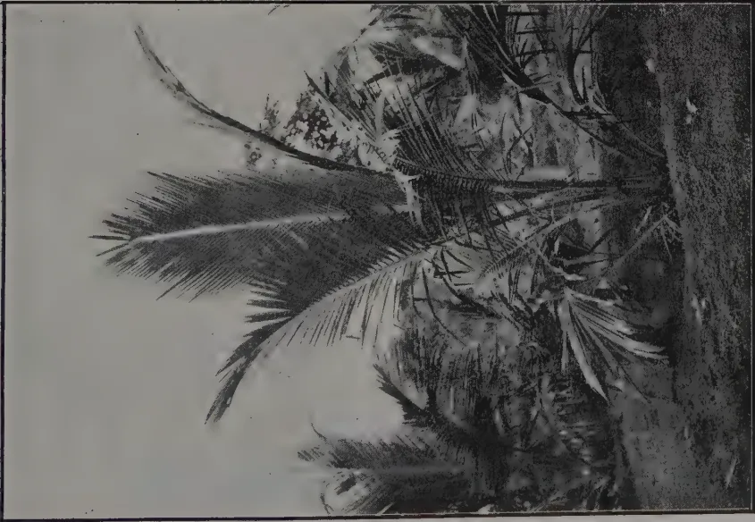
A black and white photograph of a young palm tree. The trunk is relatively short and thick, with several large, feathery fronds extending upwards and outwards. The ground around the base of the tree appears to be covered in low-lying vegetation or grass. The background is a light, overcast sky.YOUNG PALM 20 MONTHS OLD.
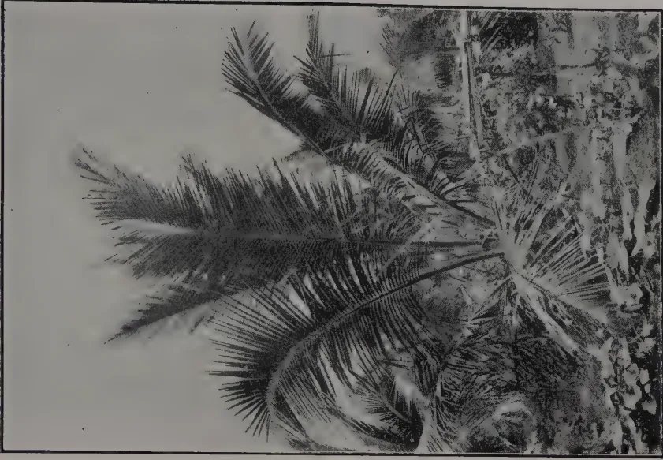
A black and white photograph of the same palm tree from the previous image, but at a later stage of growth. The trunk is noticeably taller and more slender. The fronds are more numerous and have spread out further, creating a more dense canopy. The ground is still visible at the base, but the tree's growth is the primary focus.SAME PALM 32 MONTHS OLD.
This image is a scan of a blank page. The paper has a light beige or cream-colored tint. There are a few very small, dark specks scattered across the surface, which appear to be scanning artifacts or dust particles. No text, lines, or other markings are present on the page. NOVEMBER, 1923.]305In the majority of cases, the methods of bringing young coconut plantations into bearing in Ceylon are the methods that were adopted generations ago. The holes for the young palms are dug, the germinated nuts put out into these holes and then the young palms are allowed to fend for themselves—often surrounded by cheddy and other weed growth.
Some progressive estates have adopted a more modern method and the results of early manuring are clearly to be seen on the properties of GATE MUDALIYAR A. E, RAJAPAKSE. The results of experiments carried out by MR. L. M. W. WILKINS on an estate in the North-Western Province are also of interest.
In this plantation holes were dug 3 feet by 3 feet, and in the filling 20 cents worth of ashes and fertilizers were mixed with the soil. The root areas of the young palms have been kept free of weeds and the soil has been occasionally tilled. Planting was done in December 1920, and a small application of lb. of fertilizer was given in July 1922 and a further application of 3 lb. of fertilizer in July 1923. Vegetable catch crops have been allowed to grow over rd of the root area.
The accompanying photographs show the growth of palms in this plantation. Photograph No. 1 shows the palms at 20 months of age. The palm in the foreground had produced 11 fronds in this period. Photograph No. 2 shows the same palm twelve months later, i.e., when it was 32 months old. At that date it had produced 23 fronds.
These illustrations clearly demonstrate the effects of intensive cultivation on young coconuts and it is expected that such a plantation will come into bearing at an early date. The cost of the fertilizer so far applied averages rupee cents per palm.
Similar results are to be observed on other estates and all coconut growers are strongly advised to pay careful attention to the cultivation of their young palms. If this were done, plantations in Ceylon would not take an average of 10 years or more to come into full bearing.
F. A. STOCKDALE,
Director of Agriculture,
A. E. COLLENS, F.I.C., F.C.S.,
Government Chemist and Superintendent of Agriculture Leeward Islands
and
F. H. S. WARNEFORD, M.A., B.Sc., A.I.C., F.C.S.
Assistant Chemist, Leeward Islands.
In view of the large annual importation* of common soap into the colony of the Leeward Islands and of the presence within the colony of a considerable quantity of waste lime seeds (1) from which an oil (2) suitable for the manufacture of soap can readily be obtained, it seems desirable that an attempt be made to produce locally a portion at least of the quantity of Soap consumed annually. The present communication embodies the results of an investigation on the manufacture of lime seed soap together with a brief review of the general methods of soap manufacture an elementary knowledge of which is essential for the proper understanding of the detailed processes for the production of any special type of soap.
Soaps may be classified under the four following heads; Domestic soaps, Toilet soaps, Industrial soaps and Special soaps. Domestic soaps are those used in the house for washing, scouring, etc. Toilet soaps are those better quality soaps which are employed solely for toilet purposes. Industrial soaps are those employed in certain industries such as wool washing or calico printing. Special soaps are those employed for such purposes as medical use, shaving, etc.
The manufacture of toilet soaps and of such special soaps as medicated and shaving soaps requires considerable skill and can only be undertaken successfully in a factory equipped with modern machinery and operated under constant technical supervision. The demand for industrial soaps in the colony and in fact in the whole of the West Indies is strictly limited. On the other hand in addition to the fact that there is a considerable local demand for domestic soaps the processes of manufacture are comparatively simple and are capable of being undertaken locally.
A number of recipes for the manufacture of a domestic soap are accordingly included in this paper. There will also be found, however, one recipe for a soap of a somewhat better class, suitable for toilet use.
A fat or fatty oil is a compound of a fatty acid and glycerine, which when mixed with an alkali and heated undergoes saponification—the acid constituent of the oil combining with the alkali to form a soap, while the glycerine is set free.
* The quantity of common soap imported into the Colony of the Leeward Islands in the year 1919-20 amounted to 484,000 lb. and was valued at £13,383. Of this quantity Dominica alone imported 193,563 lb. valued at £5,409. (L.I. Blue Book 1919-20.)
(1) Tempany, W.I.B. Vol. XV, No. 1.
(1) As (2).
(2) Some Notes on the Utilization of Lime Seeds.
NOVEMBER, 1923.]307The alkalies used in the manufacture of soap are solely caustic soda and caustic potash. When caustic soda is used the resulting soap is a hard soap, while when caustic potash is used the product is a soft soap.
The methods used in the manufacture of soap may be divided into two main groups:—
In the manufacture of soap by methods included in the first group the fat is boiled with a small excess of alkali and when saponification has taken place, salt or brine is added to the mass—the result being a separation into two layers, the upper layer consisting of soap and the lower of spent lye and glycerine. After standing for some hours the layer of soap solidifies and is removed in the form of grains or curds. As thus obtained it is not ready for use; it is generally subjected to a further boiling with a small quantity of strong alkali to ensure complete saponification and the resulting curd soap is finished by any one of a number of different processes.
The methods of manufacture included in Group II fall into two classes according as to whether the soap is boiled or made by the cold process. In both cases an attempt is made to employ the fats and the alkalies in the exact proportions in which they combine to form soap, so that the resulting product shall not contain either excess of alkali, which renders soap unduly harsh, or unsaponified fat which makes the soap liable to become rancid on keeping for a short time.
The cold process is a simple one and requires no special plant and but little labour. It is, however, difficult to secure saponification of the whole of the fat used except in the case of certain fats such as coconut oil. Moreover unless the fat used is of good quality and free from free fatty acids the resulting soap is uneven in texture.
In order to employ the fat and the alkali in the exact proportions required for their interaction it is necessary to know the saponification equivalent of the particular fat which is being used. The saponification equivalent of a fat is that weight of caustic potash, which is required to combine with the fatty acids from 1,000 parts of the fat.
Since 40 parts of caustic soda are equivalent to 56 parts of caustic potash the weight of caustic soda required for 1000 parts of the fat may be found by multiplying the saponification equivalent by 40 and dividing by 56.
For example.
The saponification equivalent of a given sample of lime seed oil was 196. That is to say 1000 lb. of the lime seed oil required for its saponification 196 lb. of caustic potash. This is equivalent to lb. caustic soda.
lb. caustic soda.
The saponification value of any given fat is only approximately constant: it varies within comparatively narrow limits in different samples of that fat, and it is therefore desirable that the value be determined for any batch of fat that is to be used for the manufacture of soap.
308[NOVEMBER, 1923.It may not always be practicable to carry out this determination; in such a case in the manufacture of a domestic soap as a general rule it is advisable to assume a saponification equivalent in the region of the highest value recorded for the particular fat in question. The resulting soap may contain free alkali, but this will not be as harmful in a domestic soap as in a toilet soap and is preferable to running the risk of leaving unsaponified fat in the soap, which is almost certain to cause rancidity.
While a soap is essentially a compound of soda or potash with a fatty acid, most soaps contain certain other ingredients which have been added either to cheapen the product, to increase its detergent properties, to perfume it, to harden it, or to impart some other particular property.
One of the most frequent additions to a soap is rosin. This substance has the properties of an acid and dissolves in solutions of the alkalies (either caustic alkalies or alkaline carbonates) to form a rosin soap, which has powerful detergent properties and lathers well but unfortunately is very soft. Rosin is cheaper than most fats and in view of the detergent properties of rosin soap it is frequently added to a soap in as high a proportion as can be used without softening the resultant product too greatly.
When rosin is used as one of the ingredients of a soap an additional quantity of alkali must be added corresponding to the quantity and to the saponification equivalent of the rosin used. The saponification equivalent of rosin varies from 147—183.
In order to obtain rapid and complete saponification of a fat the alkali used must consist almost entirely of caustic alkali. When soda is the alkali used the commercial product known as 76 or 77 % caustic will be found most convenient. This 77 % caustic has as a rule the following composition:—
| Sodium Hydroxide | ... | 99.34 % |
| Sodium Chloride | .. | 0.21 ,, |
| Sodium Sulphate | ... | 0.10 ,, |
| Sodium silicate | ... | 0.05 ,, |
| Sodium aluminate | ... | .30 ,, |
The lower grades of caustic soda contain a large proportion of impurities, especially Chlorides, which are soluble in water and form solutions which dissolve soaps only sparingly. When these low grades alkalies are used the soap is thrown out of solution as it is formed and the process of saponification is considerably hindered thereby.
As a rule the soap maker receives the alkali in solid form in large iron drums and from this he prepares lye by dissolving it in water. The simplest and least unpleasant method of dissolving large quantities of caustic in water is as follows:—
An iron tank fitted with a grating a few feet from the top and placed at a level a little above the soap boiling kettles is used for the preparation of the lye. To effect solution of the alkali, water is admitted to the tank until the grating is well covered and on this grating are then placed the drums of caustic, which have had the ends knocked out. The water penetrates into the drums and gradually dissolves out the caustic and the solution being heavier than the water sinks to the bottom of the tank: a constant circulation of fresh water or of weak liquor thus passes through the drum until all the caustic is dissolved.
NOVEMBER, 1923.]309The solution of alkali so obtained may then be siphoned either to the soap kettles or to a diluting tank where it is diluted with water to form a lye of the desired density.
The actual saponification is carried out in soap kettles: these are generally made of iron and are heated either by fire or by steam. The latter method of heating is far preferable. In a fire heated pan there is a risk of those portions of the kettle nearest to the fire becoming over heated and the soap lying in contact with it becoming burnt or charred, unless very efficient stirring is effected. Secondly soap is liable to froth and boil over, the only remedy for which is to cool the kettle and its contents. It is easier to do this by shutting off the steam than by drawing the fire and the labour required is less.
The hot liquid soap is transferred from the kettles to soap frames where it slowly cools and solidifies. The modern soap frame usually consists of a wooden base board, upon which are built four iron sides so as to form a box—these sides being held together by bolts or nuts so that they can be taken apart whenever required.
When the soap has cooled in the frames and has hardened sufficiently, it is removed and is cut into slabs about two inches thick: these slabs are in turn cut into bars, which may or may not be converted into cakes before marketing.
While most domestic and industrial soaps are produced by the methods outlined above, most toilet soaps are produced by the milling process.
A high grade soap is cut into fine shavings which are dried until the water content is about 10% and are then crushed between granite rollers. The thoroughly ground material is passed into a "plodding" machine, where it is compressed and from which it issues in the form of a compact homogeneous bar. Tablets are cut from this bar by means of a cutting apparatus placed in front of the discharge orifice of the plodding machine.
Lime seed oil is readily saponified on boiling with alkalies. Saponification does not take place sufficiently well in the cold to allow of the use of the cold process.
In order to effect rapid saponification the lye must somewhat dilute so that the difference in density of the lye and the oil is not too great to interfere with the formation of a stable emulsion.
A 7% caustic soda solution gives good results. Such a solution has a density of 15° Twaddell.
The following recipes contain detailed instructions for the manufacture of lime seed oil soaps.
In each recipe the figures given in the first column indicate parts by weight and may be lb. ozs. grms or kilos, etc., as desired. The figures in the second column indicate lb. in the case of the oil or rosin and gallons in the case of the lye and the water. Any multiples or proportional parts of the quantities given may be used provided the ratios are those indicated.
| Lime seed oil | 150 parts | 150 lb. | |
| Rosin | 30 " | 30 " | |
| Caustic soda solution | |||
| 16% i.e., 16 lb. in 10 galls. | 184 " | 15.6 galls. | } 35.6 gallons of approx. 15° Twaddell Caustic. |
| Water | 200 " | 20.0 " |
The rosin is finely powdered and is dissolved in the well stirred oil with the aid of heat. Stirring is continued and the diluted lye (15° Tw.) is added slowly to the oil, the temperature being kept about 70°C (158.8 F.). As soon as the addition of the lye is complete the mixture is heated to its boiling point and is kept at this temperature until a perfectly clear dark brown syrup is formed. Heating is then discontinued and the hot soap is transferred to frames to set. As soon as it has set sufficiently it is removed from the frames and allowed to harden further by drying in the air. After hardening it is cut into bars and cakes of the desired size.
II. To a soap made as described in I. 15 parts by weight of sodium silicate solution of 100° Twaddell are added before transferring to the frames. The addition of this quantity of sodium silicate causes the soap to be harder than would otherwise be the case. It can, however, only be used in very common domestic soaps as it renders them distinctly caustic.
| Lime seed oil | 50 parts | 50 lb. | |
| Rosin | 5 " | 5 lb. | |
| Caustic soda solution | |||
| 16% i.e., 16 lb. in | |||
| 10 gallons | 56.6 " | 4.8 galls. | } 12 galls. of lye of ap- prox. 148 Twaddell. |
| Water | 72 " | 7.2 " |
The directions are in all other respects the same as those in No. 1.
| Lime seed oil | 50 parts | 50 lb. |
| Crude cotton seed oil | 50 " | 50 " |
| Caustic soda solution | 112 " | 9.5 gallons |
| 16% | ||
| Water | 150 " | 15 gallons |
52 parts of the caustic soda solution (4.4 gallons) are diluted with 100 parts water (10 gallons) and heated. To the warm solution is added the lime seed oil and the whole is boiled with constant stirring until saponification is apparently complete as judged by the formation of a clear dark brown liquid. The remainder of the caustic soda diluted with the remainder of the water is then slowly added to the mixture together with the cotton seed oil and the temperature is maintained at about 90°C (194°F) for about two hours. It is then brought to the boil and a saturated brine is added to salt out the soap. After cooling the solidified soap is separated from the spent lye and is heated with about 150 parts water (15 gallons) until it dissolves. The mass is then transferred to frames and allowed to set.
| Lime seed oil | 150 parts | 150 lb. |
| Rosin | 30 " | 30 " |
| Caustic soda solution | ||
| 16% | 200 " | 17 gallons |
| Water | 420 " | 42 " |
59 parts of the caustic solution (5 gallons) are diluted with 100 parts water (10 gallons) and to this mixture are added 50 parts oil (50 lb.) with constant stirring. The mixture is heated to the boiling point and kept just boiling until it appears homogeneous. The rest of the oil together with 106 parts of the alkali (9 gallons) diluted with 100 parts water (10 gallons)
NOVEMBER, 1923.]311is then slowly run into the well stirred boiling soap and the temperature is kept at 90°C (194°F) for about two hours. The mixture is then brought to the boil and a saturated brine is added to salt out the soap. On cooling the solidified soap is separated from the spent lye and is heated with 200 parts water (20 gallons) until a homogeneous liquid is obtained. This may take an hour or longer.
Meanwhile 30 parts rosin (30 lb.) are saponified by heating with 35 parts caustic (3 gallons) diluted with 20 parts (2 gallons) water, and the rosin soap is added to the well stirred hydrated soap. The mixture is kept about 90°C (194°F) for one hour and is then raised to the boil while saturated brine is added. After cooling the solidified soap is removed from the spent lye and is dissolved in about 300 parts (30 gallons) water by boiling gently for about 1 hour with constant stirring. The liquid soap is then placed in frames to solidify.
A soap is prepared as described in V up to the salting out of the soap after the addition of the rosin. The separated soap is dissolved in a mixture of 100 parts water (10 gallons) and 130 parts alcohol (about 13 gallons) to which has been added 60 parts sugar and a little bay oil as a flavouring agent. After heating for about one hour a homogeneous mixture is obtained, which is transferred to the frames to set and harden.
The addition of alcohol and sugar tends to make a soap somewhat transparent and the alcohol ensures the complete saponification of all the fat present.
An attempt has been made to make a compressed soap containing little water by a process analogous to the milling process described in the second section of this paper.
The soap was shaved and the dried shavings passed through a small mill, warmed, and compressed in a hand press in a stout wooden box fitted with a close fitting piston and having a removable bottom through which the compressed soap was discharged when sufficiently compacted. Fair success attended this attempt and it seems probable that better results might be obtained if a wrought iron box with removable but tight fitting bottom and a closely fitting piston were substituted for the wooden one used in our experiments.
Of the six soaps for which recipes are given No. 1 is the easiest manufactured and is satisfactory as a common domestic soap. The following calculation of the cost of production of lime seed oil soap is based on the assumption that this would be the type manufactured.
It has been found that from 150 parts oil, 30 parts rosin, and 25 parts caustic soda, 234 parts of firm dry soap are obtainable.
(1) Chemistry and Industry, January 26th, 1923.
(2) Oil, Paint and Drug Reporter, August 1922.
(3) Report of the Imperial Institute as to value of Lime seed oil.
312[NOVEMBER, 1923.The above are London prices—allowing for freight, etc., the cost in Dominica or Montserrat should be :—
| Caustic | 3d. per lb. |
| Rosin | 2d. per lb. |
| Oil | 2.5d. per lb. |
| 25 lb. caustic= | 75d. |
| 30 ,, rosin = | 60d. |
| 150 ,, oil = | 375d. |
| ----- | |
| 510d. |
therefore the price per lb.=2.2d. when no allowance is made for fuel, labour, etc. Should however the manufacture of lime seed oil soap be undertaken by persons producing lime seed oil themselves the cost of this ingredient would no doubt be considerably below the figure quoted.
Common domestic soap is sold in Antigua at 6d. per lb. This allows 4.5d. per lb. to cover fuel, labour and marketing expenses and to allow for profit on the venture. Fuel, labour, and other expenses should not exceed 2d. per lb. allowing a profit of 2d. per lb. of soap.
In conclusion the authors desire to express their thanks to Mr. W. A. D. ALLPORT of Roseau, Dominica, and to the Proprietors of Dimsdale Estate, Antigua, who kindly provided the material for this investigation.
In the preparation of Section II of this paper a useful handbook on "SOAPS" by GEORGE H. HURST, has been freely consulted.
Mr. DU PRE MOORE has given me the opportunity of speaking on a subject which is of interest and also I think of importance. The subject is that of the constitution and aims of District Agricultural Committees. I have obtained permission from the Director of Agriculture to speak on this question.
In order to understand the position with regard to organisation of agriculture in Ceylon, it will be necessary to go back for a year or two. Members are probably aware that for some years there have been in existence bodies known as Plant Pests Boards. There have, since the threatened food-crisis during the Great War, also been bodies known as Food Production Committees. The two features which are common to both of these bodies and which appear to me to be important, are firstly that they are organised on the basis of Districts, and secondly that in forming them the attempt was made to include planters, agriculturists and revenue officers of the districts.
Both these points seem important. The agriculture and methods which obtain in one district are very often different from those in another; for example in the Central Division we have Nuwara Eliya, Kandy, Matale and Kegalle. South Matale and Kegalle are surprisingly similar in their general agricultural problems, but they bear little or no resemblance to the other
NOVEMBER, 1923.]313two districts. To take another case with which I am familiar, the Southern Division : Kalutara, Galle, Matara and Hambantota differ from one another, perhaps more even than the districts of the Central Division. While it is quite clear that the districts not exactly coincide with areas of different methods of agriculture, yet there is a rough correspondence between the two, and the outlook and methods of Districts do often differ considerably.
In general the administrative work of the country centres around Districts. For example we have District Road Committees, District School Committees and so forth. Now many of the agricultural problems of the various districts are matters which equally affect Government, planters and villagers. The Assistant Government Agent is involved, deeply involved, in matters concerning agricultural policy and development in his district, the planter is affected by the methods of agriculture practised by the villager, the Divisional Agricultural Officer exists for the purpose of organising and improving agricultural methods, and the fortunes of the villager must rise or fall with the fortunes of the capitalist estates in his neighbourhood and with the policy of the Government in his district.
The need seems obvious for some district organisation which will include villager, planter and Government officer and which will consider and carry out a systematic policy aimed at the improvement and development of agriculture.
In 1923 the Government consented to the proposal of the Department of Agriculture that the old Food Production Committees of the Central Division (Matale, Kandy, Kegalle and Nuwara Eliya Districts) should be replaced by District Agricultural Committees. These Committees are on their trial and, if they are found useful, the system will presumably be adopted in other districts. No doubt after they have been working for a year or so defects will be found which will have to be remedied; it will be possible to draw more and more clearly the boundaries and limits of their duties and powers : gradually it will become possible to draw up the general outlines of a sound, workable constitution for them, and to make them more and more useful.
These Committees have been in existence for a short time, and it is probable that the planters know very little about them. The constitution which for the present has been adopted is as follows : Chairman, the Government Agent or Assistant Government Agent of the District ; vice-Chairman, the Divisional Agricultural Officer; official members, the Plant Pests Inspector, the Divisional Irrigation Officer and the Chief Headmen of the District, Nominees from Planters' Associations, one from each Association in the District, or where only one Association exists two nominees, other nominees, not more than five unofficiated by the Committee.
The membership of the Committees can therefore be summarized as follows :—
| Matale. | Kandy. | Nuwara Eliya. | Kegalle. | |
|---|---|---|---|---|
| Chairman & Vice | 2 | 2 | 2 | 2 |
| Official—other | 2 | 2 | 2 | 2 |
| Headmen | 4 | 10 | 4 | 5 |
| P. A. Nominees | 2 | 11 | 8 | 2 |
| Other unofficiated | 5 | 5 | 5 | 5 |
| — | — | — | — | |
| 15 | 30 | 21 | 16 | |
| — | — | — | — |
Each of these Committees nominates a member to the Food Products Committee of the Board of Agriculture of Ceylon. In general it has been found that quarterly meetings suffice, but this is of course a question which depends entirely upon the amount of business and is liable to alteration. You will notice that in the cases of Kandy and Nuwara Eliya the planting representation is strong; in Matale and Kegalle, which each have one Association only, the Committees are in their present form perhaps liable to the criticism that estates are not adequately represented.
It will be realised that the Divisional Agricultural Officer, who has four Districts with which to deal, is not faced with a simple problem. Were the Department of Agriculture concerned with matters of a routine nature alone there would be few difficulties; it would be simply a question of the amount of routine work necessary and the amount of time and number of officers available for it. But we find that, to a greater extent than with most other Departments, the Department of Agriculture is expected to formulate a policy for the agriculturist as well as to supply information of a technical nature. For this kind of work the need for a Committee in each District is a matter of necessity and urgency. To illustrate these points I should like you to consider the leaflet detailing the competitions and shows planned for Matale District in 1924.
The leaflet shows that the following activities are being planned :—
| Agricultural Shows | ... 3 | |
| Vegetable Gardens Competitions | ... 4 | |
| Paddy Cultivation Competitions | ... 6 | |
| Cacao Cultivation Competitions | ... 2 | |
| School Garden Awards | ... 1 | Scheme |
| School Garden Teachers' Bonuses | ... 1 | , |
| Pupils' Home Gardens Awards | ... 1 | , |
The same matters are being dealt with in the other three Districts, and the sum-total of organisation needed to carry this programme through is considerable. Apart from the actual work involved, there can be little doubt that a policy considered and planned by a representative Committee must be more effective than the plans of one man or even of a Department.
Matale District was the first to form a Food Production Committee, even in advance of the general scheme formulated by the Government. In this District, where agricultural interests are partly peasant and partly planting, the members of the Planters' Association have always been in the fore-front of attempts to improve village agriculture. In spite of this, it is doubtful whether some of your members know of the various lines of work which are being carried out in the District. Take the Co-operative Society movement, in its infancy now but probably destined to be one of the biggest things in Ceylon. General experiments with village crops, paddy selection, paddy manurial trials, paddy transplanting demonstrations, the school garden and the home garden movements, cultivators' improvement societies, the control of plant pests in village holdings, direct agricultural instruction, farm school, cotton experiments, to mention some of them. The Government is pledged to a policy which aims at improvement of village agriculture, and the matters I have mentioned are not isolated, independent bursts of energy, but are all parts of a definite co-ordinated policy which is going on steadily and surely.
You will wonder what on earth these matters have to do with a Planters' Association. I will explain. I do not think it possible to divorce village agriculture entirely from planting, they are too closely interlinked. Your cacao, tea or rubber estates are adjacent or surrounded by small
NOVEMBER, 1923.]315holdings which are not up to the necessary standard of care and cultivation : these small holdings are often danger spots to the larger estates ; they are centres for spread of disease, their products are below standard and lower the reputation of Ceylon in foreign markets. Your labour is dependent on imported rice and curry-stuffs because the total fields do not produce enough. School gardens and home gardens are planned to improve the education and agriculture of the next generation, co-operative societies to provide capital for improvement of village agriculture, shows, competitions, awards, bonuses, experiments, all aim at improving the villagers' methods. In one West Indian island where I was resident for 3 or 4 years, the cacao planters formed committees for visiting villagers' cacao-holdings, giving advice and distributing prizes. This year MESSRS. CADBURY have the following to say about the cacao from that island :—
“ I think in Grenada they plant for a high yield and not for quality, for the bean is small and approaches the inferior Calabacillo breed. Its value is maintained by an amazing evenness and a uniform excellence in curing. The way in which it is prepared for the market does great credit to the planters..... It is practically impossible to find a mouldy bean in Grenada cacao. Evidently claying is not a necessity in Grenada.” “ Grenada beans are very carefully prepared....., and give practically 100% perfect beans.
These results were obtained because the planters joined with the Government in planning and carrying out a definite policy of improving village agriculture ; to be exact the planters preceded the Government ; the cacao competitions were carried on by planters before the Government, through its Department of Agriculture, adopted the policy.
Up to the present I have dealt with the District Agricultural Committees largely from the point of view of village agriculture. It seems fairly clear that, even if they dealt only with this, their existence would be justified and the presence on them of nominees from the Planters' Associations would be justified. I want to look at these committees rather more from the point of estates agriculture. The real point of issue is of course the position these committees should hold relative to the Planters' Associations which exists all over Ceylon. The Planters' Associations do not restrict themselves to the discussion of purely agricultural matters ; they handle all matters which concern the welfare of their members and the welfare of their estates ; their functions are wide, necessary and useful.
I shall draw a parallel which appears to be exact. A Central Planters' Association of Ceylon exists for the purpose of co-ordinating the work and opinions of the District Associations. In addition, we have a Board of Agriculture, acting also for the whole country, whose functions are distinct from those of the Central Planters' Association. The Board aims at full representations of all interests (Government, Planters, villagers) in order to give considered advice in matters of Agricultural organisation. The same distinctions should exist between the work of District Associations and the District Committees. Also, just as the Board of Agriculture deals for convenience with its problems in two main branches, Food Products or Village Agriculture and Estate Products or Planting, so also there should be two phases of work of District Committees. Briefly the Planters' Associations deal with matters that concern planters alone, the District Agricultural Committees handle problems affecting agriculture in general. The work of a District Planters' Association bears roughly the same relation to that of the Central Planters' Association as the work of a District Agricultural Committee does to that of the Board of Agriculture.
316[NOVEMBER, 1923.The Agenda-papers of meetings of the new District Agricultural Committees show that most of the matters dealt with appear chiefly to concern village agriculture. I say "chiefly" because one cannot easily conceive of any village agricultural problem which does not directly affect the estate and the planters. Perhaps it would be better to say that up to the present very few items on the agenda papers have dealt with matters concerning estates alone. Well, it is not easy to find an agricultural problem, falling outside of the sphere of a Planters' Association, and therefore within the sphere of the Board of Agriculture or of a District Agricultural Committee, which affects estates alone and not village agriculture. We can however find problems which would naturally be referred to planters for discussion and action rather than to representation of village agriculture.
There are two or three reasons why the agendas have dealt hitherto with questions which mainly affect village agriculture. The preparation of the earlier agendas have naturally lain largely in the hands of the Divisional Agricultural Officer, since the Committees are new and in the beginning were not thoroughly understood by other members. This officer is in charge of fourteen Agricultural Instructors, who are in close touch with village problems and who bring forward matters chiefly of concern to villagers. Secondly, the two first committees, those of Kegalle and Matale represent districts which are largely peasant districts. Thirdly, the Kandy and Nuwara Eliya Committees, on which the estate representation is strong, have only lately been formed. Kandy held its first meeting this month, and Nuwara Eliya last month. It is not likely, nor is it advisable, that these committees will rely in the future on one man for items of their agendas, and subjects of direct interest to estates will no doubt be brought up by planting members.
There are numerous matters affecting estate agriculture which appear to fall well within the sphere of those District Committees, and which would most properly be brought forward by planting members. I should like to put forward a few suggestions in this connection for your consideration. Some of these suggestions affect Matale District, others do not, but all seem to deal with matters in which District Committees could do a great deal of useful work.
Stock breeding, and the improvement of cattle in the districts, is a subject worth discussing. Dipping tanks for control of diseases of stock, and for improvement of general condition of the animals, is another; those who have seen the rapid improvement in condition of cattle following on dipping will realise the importance of discussing this matter. Deep or shallow planting of coconuts was discussed at the Board of Agriculture lately; if this depends on the height of the water table in the soil the method should vary with the rain fall and soil of each district. Deep forking of old rubber is a disputed question probably connected to some extent with rainfall and soil. Improvement of methods of cultivation and manufacture of cacao on the numerous small holdings of Matale, Katugastota and Galagedera; the Matale Committee could perhaps effect much good by issuing a pronouncement on a standard method of curing Cacao suitable for the district. In Kotmale there are over 800 small tea-holdings registered, and it is not certain that the methods of cultivation is up to the standard. The problem lessening soil erosion by hillside wash on tea and other estates is one which probably varies from district to district. The possible advantages of planting tea in close hedges across steep slopes instead of singly at intervals of 4 or 5 feet, is worth discussing, and the discussion might lead to useful experiments bearing on the cost of plucking and pruning and on the question of erosion.
NOVEMBER, 1923.]317I do not wish to take your time any longer, particularly as the problems which might be tackled appear practically endless, but probably I have said enough to make this question of District Committees clear. The Old Matale Food Production Committee did first-class work, and there seems to be a good opportunity for its successor to keep on with that work and add to it by dealing with many matters of agricultural organisation and development in the district. From the point of view of the Divisional Officer and his work, some such Committee is an urgent necessity, and I think the same remark applies to the Planting interests and the administrative officers of the district. In closing I should like to thank the Matale Planters' Association and its Chairman sincerely for giving me this opportunity of speaking on a subject which has always been of interest to me.
W. MOLEGODE,
Agricultural Instructor.
Further efforts were made during the last three years to encourage the extended cultivation of Ginger (Zingiber officinale) and Turmeric (Curcuma longa) in the Kandy district. These two commodities are very largely used every day by the people. Consequently a considerable amount of these are imported to the Island. At the present time these two crops are grown to a varying extent in Yatinuwara, Harispattu, Tumpane and Dumbara and a fairly large amount of Turmeric is now cured for home use. Not many years back scarcely anybody cultivated Turmeric, and hardly anyone cured it, but depended on the imported stuff. To-day at our Sunday markets village cured Turmeric is a prominent thing. We have still to learn the art of perfect curing. The village cured stuff is far below the level of the imported Turmeric. Within the last two years an improvement is however to be seen and at the Kandy Agri-Horticultural Show this year Mr. H. B. RAMBUKWELLE of Udispattu exhibited a sample of home cured Turmeric as good as any market stuff.
Most people grow Turmeric carelessly and do not pay proper attention to its cultivation. A plot of land approximately acre in extent was planted in Turmeric last year by the writer. The land was heavily manured with cattle manure and the yield was a few pounds less than 1,700 of green turmeric which on curing gave 380 lb.
There is a wrong belief among the villagers that Ginger and Turmeric can only be successfully grown on rich virgin soils. Provided it is well drained any soil from a light loam to a heavy alluvial soil is suitable, but it is essential that water should not stagnate upon the land on which these two crops are grown. Over-abundant supply of moisture is unfavourable. The land on which Ginger and Turmeric are to be grown should be free of weeds and the soil well hoed or ploughed to a depth of 8 to 9 inches and the soil thoroughly worked and reduced to a good tilth. Ginger or Turmeric planted on land in a rough condition will not develop their roots properly. These two crops respond excellently to manuring. A very liberal application of cattle manure which should be worked into the soil will give good results. A good application of oil cakes like castor, groundnut, etc., during the growing stage has been known to hasten maturity and give satisfactory results.
318[NOVEMBER, 1923.Ginger and Turmeric should be planted preferably in beds 12 feet long and 6 wide or when the whole field has been planted beds can be marked off by cutting drains at intervals of 12 feet. Another method is to plant in ridges. According to this method the field is laid out into ridges and furrows the distance from furrow to furrow being about three feet. On the ridges between the furrows the seed ginger or seed turmeric is dibbled in by hand usually in three rows placed about one foot apart—the distance from hole to hole in the row is about 9 inches. If planted in beds the distance of the planting should be nine to twelve inches apart. The depth of planting should be about 3 inches.
For seed only good green rhizomes saved from the previous year's crop should be taken. These pieces of rhizomes should contain 2 or 3 buds. Until the crop has grown sufficiently well the ground should be kept free from weeds. One or two weedings are necessary as the crop will soon cover the ground and keep free of weeds. If planted during the commencement of the monsoon no watering is necessary. The soil should be kept loose and as the plants grow the soil around them should be drawn up but not too high to bury the leaves. In about 10 months the crops can be raised. In the case of Ginger if the crop is left on the ground for another season the crop will be of a better quality and will have gathered more starch and dry whiter.
In harvesting the withered stems and leaves should be first cut and removed and the crop then lifted. In the case of both these crops a well cultivated and good crop will give a yield of 15,000 lb. of green rhizomes per acre. The seed rate is between 1,000 to 5,000 lb. varying according to the sizes of the seed ginger.
Having freed the ginger of adhering earth first dry it in the sun and then soak in water to soften the outer skin. Peel the skin quite clean but avoid wastage by not scraping too deep. Wash the peeled ginger in soft water and spread out thinly and evenly on mats or jute liessian preferably. Spread on a raised platform to three or four days' light sun. When once exposed to the sun care should be taken not to wet the ginger again for dampness will make the ginger mildewed or black in colour. During the first two days' exposure to the sun turn over the pieces to ensure uniform drying.
Green ginger is very largely used in Ceylon for medical and culinary purposes and therefore ginger in its green stage is constantly in demand. Storing green ginger for a length of time is difficult. A cool dark room with moist air is necessary. If the following precautions are taken ginger can be kept in fresh and green state for about 7 or 8 months.
(1) Green ginger should be heaped up. The centre of the heaps should never be allowed to get hot or warm. To prevent this breaking up and remaking of the heaps once in 14 or 15 days is necessary.
(2) Decaying or rotting pieces of rhizomes should be removed.
(3) The heaps should be covered with dry leaves and sprinkled with water.
Adhering earth is first roughly removed from the roots and they are then placed in a pot. Water just sufficient to cover the roots is added, the whole is covered with gunny bags or the dried leaves of the plant, and the pot set on a fire to boil slowly for about an hour and half to three. Then the roots are removed and spread on to dry for about a week or ten days. As soon as the roots are dry the outer skin is removed either by scraping the skin off by hand or by treading under foot.
NOVEMBER, 1923.]
319
FROM THE CEYLON CHAMBER OF COMMERCE WEEKLY PRICE CURRENT, DATED 15th OCTOBER, 1923).
| NAME OF PRODUCE | CURRENT PRICE | |||||||
|---|---|---|---|---|---|---|---|---|
| Rs. cts. | at | Rs. cts. | ||||||
| CARDAMOMS | ||||||||
| All round parcel well bleached | ... | per lb. | 2 40 | " | 2 55 | |||
| Do do medium | ... | do | ... | " | ... | |||
| Special assortment O & I only | ... | do | ... | " | ... | |||
| Seeds | ... | do | 2 40 | " | 2 52 | |||
| Green | ... | do | ||||||
| CINNAMON QUILLS—[At Buyer's Stores] | ||||||||
| Ordinary assortment (in bales of 100 lb. nett) | ... | per lb. | 0 52 | " | 0 56 | |||
| No. 1 | ... | do | 0 55 | " | 0 58 | |||
| No. 2 | ... | do | 0 53 | " | 0 56 | |||
| No. 3 | ... | do | 0 51 | " | 0 54 | |||
| No. 4 | ... | do | 0 50 | " | 0 52 | |||
| CINNAMON CHIPS—Maradana, (At Buyer's Stores) (in bags of 56 lb. nett) per candy of 560 b. | ||||||||
| ... | ... | 50 00 | " | 66 00 | ||||
| CITRONELLA OIL—(ex-Seller's Stores without packages) | ||||||||
| ... | per lb. | 2 20 | " | 2 30 | ||||
| CACAO—(At Buyer's Stores) | ||||||||
| Estate—Finest | ... | per cwt. | 42 00 | " | 49 00 | |||
| Do Medium | ... | do | 35 00 | " | 45 00 | |||
| Do Common (Black) | ... | do | 20 00 | " | 35 00 | |||
| COCONUT—(Desiccated) Granulated goods (Delivered at Wharf or Buyer's Stores) | ||||||||
| Assortment: Medium 50 per cent, Fine 50 per cent. | ... | per lb. | 0 23 | " | 0 24½ | |||
| COCONUT OIL— | ||||||||
| White Oil f.o.b. | ... | per ton | 600 00 | " | 610 00 | |||
| Ordinary Oil do | ... | do | 565 00 | " | 585 00 | |||
| COPRA— | ||||||||
| Calpenty | No. 1 quality | per candy of 560 lb. | 82 00 | " | 86 75 | |||
| Estate | do | 560 " | ||||||
| Ordinary quality (Maravila) | do | 560 " | ||||||
| Cart Do | do | 560 " | ||||||
| FIBRES—(At Buyers' Stores) | ||||||||
| Coconut Bristle No. 1 | ... | per cwt. | 14 25 | " | 15 50 | |||
| Do No. 2 | ... | do | ||||||
| Coconut Mattress No. 1 | ... | do | 2 50 | " | 2 90 | |||
| Do No. 2 | ... | do | ||||||
| Coir yarn Kogalla No. 4 to 9 | ... | do | 12 50 | " | 21 25 | |||
| Do Colombo No. 3 to 7 | ... | do | 14 00 | " | 16 25 | |||
| X. B. | B. | B. E. | ||||||
| PLUMBAGO | Rs. cts. | Rs. cts. | Rs. cts. | Rs. cts. | Rs. cts. | Rs. cts. | ||
| Ordinary Lumps | ... | per ton | 300 00 | at 350 00 | 250 00 | at 300 00 | 175 00 | at 225 00 |
| Chips | ... | do | 200 00 | " 250 00 | 150 00 | " 200 00 | 100 00 | " 150 00 |
| Dust | ... | do | 125 00 | " 175 00 | 75 00 | " 125 00 | 50 00 | " 75 00 |
| Do Flying | ... | do | 75 00 | " 145 00 | 50 00 | " 90 00 | 30 00 | " 60 00 |
320
[NOVEMBER, 1923.
METEOROLOGICAL
OCTOBER, 1923.
| Station | Temperature | Mean Humidity % | Mean amount of Cloud or clear 10=overcast | Mean Wind Direction during Month | Daily Mean Velocity Miles. | Rainfall | |||
|---|---|---|---|---|---|---|---|---|---|
| Mean Daily Shade | Difference from Average | Amount | No. of Rainy Days | Inches | Difference from Average | ||||
| Colombo | 80.1 | -0.1 | 84 | 7.8 | SW | 92 | 13.29 | 26 | +0.31 |
| Observatory | 80.9 | +0.1 | 79 | 4.8 | WSW | 160 | 12.82 | 17 | +3.91 |
| Puttalam | 83.0 | +0.6 | 76 | 6.4 | SW | 187 | 7.77 | 12 | -0.18 |
| Mannar | 81.4 | -0.2 | 80 | 6.4 | SSW | 204 | 12.24 | 14 | +2.83 |
| Jaffna | 82.5 | 0 | 76 | 5.4 | Var. | 144 | 8.52 | 21 | +0.24 |
| Trincomalee | 81.6 | 0 | 74 | 6.0 | E. | 168 | 5.28 | 10 | -1.19 |
| Batticaloa | 79.4 | -1.0 | 85 | 4.6 | SW | 243 | 6.13 | 13 | +1.34 |
| Hambantota | 79.8 | +0.2 | 82 | 6.9 | W | 194 | 16.57 | 23 | -2.32 |
| Galle | 80.4 | +0.4 | 81 | 6.6 | — | — | 9.61 | 20 | -0.27 |
| Ratnapura | 80.4 | +0.4 | 80 | 6.2 | — | — | 21.18 | 20 | +5.66 |
| Anu'pura | 80.4 | +0.1 | 80 | 7.2 | — | — | 14.08 | 24 | +2.32 |
| Kurunegala | 74.3 | 0 | 80 | 7.2 | — | — | 8.71 | 20 | -1.19 |
| Kandy | 68.0 | -0.4 | 79 | 7.6 | — | — | 11.46 | 21 | +0.38 |
| Badulla | 61.0 | +0.2 | 86 | 7.7 | — | — | 14.24 | 22 | +1.99 |
| Diyataawa | 60.2 | +0.6 | 84 | 8.3 | — | — | 13.52 | 24 | +2.44 |
| Halgala | 22 | ||||||||
| N.'Eliya | 24 | ||||||||
During the first week of October there was only moderate or slight rain but after this there was a marked absence of any steep pressure gradient across the island, and a corresponding series of thunderstorms in the afternoon and evening, often of considerable intensity over small areas and with sharply defined limits to those areas.
From the 25th onwards the island came under the influence of a depression which formed off the east coast and moved northwards giving steady rain throughout, and on the 27th at least two-thirds of the gauges reported over an inch.
The difference in the distribution of rain due to these two causes was very noticeable. Thus to take the example of Colombo out of 7.36 inches which fell from the 4th to the 24th only 0.05 inch fell between 6 a.m. and 3 p.m. while during the 25th-27th a total rainfall of 3.21 included rain within each of the 24 hours of the day.
The totals for the month were above average in the greater part of the island. Totals of over 30 inches were once again most common in the Ambegamuwa and Dolosbag districts and the Kelani Valley, though increased falls from the 25th onwards have emphasised the change in type from the previous month and for the first time since June several stations on the South-West side of the island have failed to reach their average (e.g. Ratnapura, Pelmadulla, Matara). Stations with 15 inches to spare above average included Giriuila, Kitiulgala, Maramebekanda, Labugama, Mahawalatenwa and Uggalkatota, and the highest figures recorded in 24 hours included 6.30 at Kaugatota on the 27th and 6.15 inches at Kelle (Dolosbag) on the 28th, while numerous falls of over 5 inches were recorded on the 17th and 27th. Areas whose rainfall was below average included most of the North-Central Province and extended southward to Badulla and then eastward and southward to include Batticaloa, Badulla and some neighbouring stations, and further to the south-east to Pottuvil, Monaragala, Tanumalwila etc.
Temperature was about normal and though the majority of stations were slightly above average the biggest offset was a deficit of one degree at Hambantota. Humidity was on the whole below rather than above average but the amount of clouded sky and the wind velocity were both a trifle above.
A. J. BAMFORD,
Supdt. Observatory.
ANIMAL DISEASE RETURN FOR THE
MONTH ENDED 31st OCTOBER, 1923.
| Province, &c. | Disease | No. of Cases up to date since Jan 1st, 1923 | Fresh Cases | Recoveries | Deaths | Bal- ance Ill | No. Shot |
|---|---|---|---|---|---|---|---|
| Western | Rinderpest | 147 | 88 | 24 | 110 | 9 | 4 |
| Foot-and-mouth disease | 3419 | 2 | 3382 | 37 | — | — | |
| Anthrax | — | — | — | — | — | — | |
| Colombo Municipality | Haemorrhagic Septicæmia Rabies | 2 | — | — | 2 | — | — |
| Rinderpest | 108 | 66 | 12 | 93 | 3 | 1 | |
| Foot-and-mouth disease | 84 | — | 82 | 2 | — | — | |
| Cattle Quarantine Station | Anthrax Rabies | 30 | 7 | — | 10 | — | — |
| Rinderpest | 31 | 16 | — | 15 | — | — | |
| Foot-and-mouth disease | 22 | 21 | — | 1 | — | — | |
| Central | Anthrax | 154 | 21 | — | 154 | — | — |
| Rinderpest | 626 | 24 | 604 | 8 | 14 | — | |
| Foot-and-mouth disease | 6 | — | 1 | 6 | — | — | |
| Southern | Anthrax | 2 | — | — | 2 | — | — |
| Rinderpest | 659 | 26 | 638 | 21 | — | — | |
| Foot-and-mouth disease | — | — | — | — | — | — | |
| Northern | Anthrax | — | — | — | — | — | — |
| Rinderpest | — | — | — | — | — | — | |
| Foot-and-mouth disease | — | — | — | — | — | — | |
| Eastern | Anthrax | 9 | 9 | 4 | 5 | — | — |
| Rinderpest | 944 | 87 | 899 | 22 | 23 | — | |
| Foot-and-mouth disease | 5 | — | — | — | — | — | |
| North-Central | Anthrax | 158 | — | 158 | — | — | — |
| Rinderpest | 6 | — | — | 6 | — | — | |
| Foot-and-mouth disease | — | — | — | — | — | — | |
| Uva | Anthrax | 7 | 1 | 7 | — | — | — |
| Rinderpest | 3 | — | 1 | 2 | — | — | |
| Foot-and-mouth disease | 15 | — | — | 15 | — | 1 | |
| Sabaragamuwa | Anthrax Rabies | 1 | — | — | — | — | — |
| Rinderpest | 244 | 3 | 236 | 3 | 2 | — | |
| Foot-and-mouth disease | 27 | 149 | — | 23 | — | 2 | |
| Anthrax | 1 | 1 | — | 27 | — | — | |
| Rabies | 3 | — | — | 11 | — | 3 |
G. W. STURGESS,
Government Veterinary Surgeon.
Colombo, 8th November, 1923.
VOL. LXI. PERADENIYA, DECEMBER, 1923. No. 6.
The papers which were collected together and published in the TROPICAL AGRICULTURIST for September have awakened very considerable interest among agriculturists. The subject was discussed at the last meeting of the Estate Products Committee of the Board of Agriculture, and a sub-committee was appointed to consider whether legislative action was possible in the preservation of lands not already alienated from the Crown for agricultural purposes from excessive soil erosion.
The problems that Ceylon has to consider may be divided into three groups—the problems of lands already under cultivation, the problems of lands already in private ownership and about to be put under cultivation and the problems of the Crown lands which have not up to the present been alienated for cultivation.
The problems of lands already under cultivation have been tackled seriously during the past few years and much good work in terracing, the digging of contour drains and silt pits, and in the planting of hedges of leguminous plants has been undertaken. Further stimulus has been given to this essential work during the past few months and many estates are making serious endeavours to secure a good cover of leguminous or other plants so as to prevent the soil wash which results in loss of capital soil value.
322[DECEMBER, 1923.The problems of lands about to be opened are also receiving close attention. In the past too little attention was paid to soil erosion when lands were opened up for planting in estate products. Only too often do we see lands planted before adequate contour drains have been dug and with lines of plants running straight up and down the slopes instead of upon the contours. Reports have been received that some contour planting will be experimented with in Ceylon during the present year in some new clearings, and the result of such work will undoubtedly be watched with increasing interest. In tea, it is possible that planting so as to form contour hedges would be advantageous, and this system is now being adopted upon old estates along boundaries of fields and on the edges of roads and paths. The proper provision of silt pits should also receive adequate consideration, and the experimental trial of leguminous cover plants attempted.
The problem of lands which are the property of the State requires very close investigation. What extent of land shall be kept under forest, particularly around the headwaters of the principal streams, has to be determined? What effect will stream reservations have on the question? To what extent should these reservations be insisted upon and what steps are necessary to provide that they are kept covered with an adequate forest cover? Should land which has a steep slope be kept for all time under its original forest cover and alienation by the State refused? If so, how is the slope to be determined and what are the conditions which will make such a determination possible? These are some of the questions that have to be answered, and it is to such questions that the sub-committee which has been appointed will have to direct its attention.
Certain other countries have made attempts to tackle the problem, but there is not very much data available on the results of the policies which have been adopted. Ceylon will have to draw upon the experience of its oldest agriculturists, and endeavour to frame a policy which will tend to the preservation of its greatest assets—its soil.
DECEMBER, 1923.]323J. G. J. A. MASS, J. F. SCHMOLE, a.e. and DR. H. S. YATES.
In our opinion too great a value has been attributed in practice to the counting of latex vessels on Hevea bark. The mistakes which are unavoidably made in the application of bark examination on a large scale are left out of consideration, although one should be careful not to underestimate the difficulty of careful execution of this work.
In particular the opinion has been expressed that the number of latex vessels of a tree is far less influenced by variation in site or variation in external circumstances than is its production, so that yield measurements are considerably more misleading than the counts of the latex vessels in the selection of trees in the field.
In the first part of this paper MASS and SCHMOLE discuss the effect of soil differences, and in the second part, YATES, the effect of manuring on the production and the formation of latex vessels.
Another too positive opinion has been deduced from the tapping results of the Pasir Waringin Buddings, viz., concerning the value of the number of latex vessels of the mother tree in relation to the yield that may be expected from the offspring.
Since on several occasions questions have been directed to the A.P.A. over this question, a short resumé is given here. Although it is certainly true that of the 4 clones of Pasir Waringin of which tapping results are already known, the best clone is derived from the mother tree with the greatest number of latex vessels, it is not possible from the results of these tapping experiments to formulate a general rule that a tree with a great number of latex vessels gives better offspring than a tree with less latex vessels. On a purely mathematical basis such a conclusion from the Pasir Waringin results is not permissible. In addition however the tapping experiments of the H.A.P.M. and A.P.A. buddings give examples where exactly the reverse was the case.
In order that we should not be misunderstood it is perhaps not undesirable to say that we do not in any way deny all value to bark examination but only that, in our opinion, more worth is often ascribed to it than is permissible at the present time.
J. G. J. A. MASS and J. F. SCHMOLE, a.e.
In 1920 a tapping experiment covering trees was begun in a 6 years old area in a very flat situation.
The greatest difference in height on the low lying experimental area amounted to on 1-10 M.
In the preliminary trials in which all trees were tapped in the same manner at the same height, it was observed that the trees on several different parts of the area produced very different quantities of latex, those on higher parts producing more than those on the lower. For a further examination of the nature of the soil 9 holes were dug.
The holes were 6 feet deep and spread over the whole area. The sand fractions of all soil samples of the low area consisted of a tertiary quartz sand mixed with a small quantity of young volcanic derivatives. In the soil samples of the upper layers of the higher part of the volcanic derivatives
324[DECEMBER, 1923.were present in larger quantity. At equal levels the soil of the high and low areas was the same.
The presence of the young volcanic derivatives shows that the tertiary sand is not an original deposit but has been transported partly from the tertiary hills occurring in the upstream district. The young volcanic parts are derived from the tuffs in that district.
The better production of the trees of higher part of the area is probably more to be attributed to better physical conditions than to any chemical differences due to the increased percentage of volcanic derivations in the upper layers. Above all the greater distance above the ground water and consequently better drainage of the higher ground proves advantageous to the growth of the trees especially in the later years. The colour of the deeper layers in all the trial holes was blue, indicating insufficient aeration. In one of the holes peat was met with at 6 feet.
The dry production of 250 trees of the lower part of the area and an equal number of trees of the higher part was determined one week in each month for a year. In total of the year's production of a tree was thus secured. All trees were tapped daily by the same tapper, on one day the trees in the low part following day the reverse. All trees were tapped on of the circumference at the same height on a new tapping surface.
At the end of the year bark samples were taken at 25-26 inches from the ground both from the virgin bark and from the one-year-old renewed bark of the surface just tapped. The virgin bark was the product of the trial year and of the 5 previous years, the renewed bark was formed in the same year in which the yield was measured. If not only the production, but the formation of latex vessels is influenced by external growing conditions it is to be expected in view of the well-known fact that young areas on low ground grew better in the first years, and begin to deteriorate in later years, that the difference between the average number of latex vessels in the bark on the low ground and that on the high ground will be smaller in the virgin bark than in the renewed bark. This is exactly what appears to happen.
In the table given below data for the trees on the high and low ground are summarised as follows:—
The figures placed between brackets give the percentage by which the various figures of the high ground are superior to those of low ground.
Difference between the average production and the average number of latex vessels of 250 trees on the high part of the area.
| Part of the area | Average circumference in inches | Production | Latex Vessels | ||
|---|---|---|---|---|---|
| Average weekly yield per tree in grams | Average weekly yield per inch in grams | Number in virgin bark | Number in 1 year old renewed bark | ||
| High land - | 33 (111) |
(157) |
(141) |
(141) |
(137) |
| Low land - | 29.7 (100) |
(100) |
(100) |
(100) |
(100) |
* Probable error of average.
DECEMBER, 1923.]325The tree on the high and low parts of the area are derived from the same nurseries and planted out at the same time.
The average genetical constitution of both groups may be considered to be completely similar. The differences are thus caused by variations in the external growing conditions.
The remarkably great difference in yield, viz., 57% is noteworthy. This is caused only partially by the greater circumference of the trees of the high area and the yield per inch is 41% greater.
The difference between the number of latex vessels in the renewed bark (37%) is, according to our expectation, greater than the difference between the number of latex vessels in the virgin bark (17%).
The most striking fact is however that while in the sixth year of the life of the tree the yield per inch in the high ground is 41% higher than that in the low ground, the number of latex vessels in the bark renewed in the same year is about equally* higher, viz., 37%.
DR. H. S. YATES.
In February 1919 a manuring experiment was started on Soengei Baleh Estate.
This experiment consists of five series of plots having different treatment. There are eight replications, giving a total of 40 plots. Each plot covers an area of of an acre. In each plot there are nine rows with ten trees in each row. Each series thus consists of six acres or a total of 720 trees. The entire experiment covers an area of 30 acres, of uniform rather poor ground.
The history of the treatment of the different series of plots on this experiment is given in Table I.
TABLE I.
History of treatment on Manuring Experiment S. Baleh I. Started
17th February, 1919.
| No. | Treatment | |||||
|---|---|---|---|---|---|---|
| 1 | Control | |||||
| 2 | { 1 cwt. 5 " 5 " |
Sodium nitrate | - | per acre | February | - 1919 |
| Superphosphate | - | " | April | - 1920 | ||
| Calcium nitrate | - | " | March | - 1921 | ||
| 3 | { 5 cwt. 5 " |
Ammonium sulphate | - | per acre | March | - 1920 |
| do | - | " | March | - 1922 | ||
| 4 | 5 cwt. | Sodium nitrate | - | per acre | February | - 1919 |
| 5 | { 5 cwt. 5 " 5 " 5 " |
Sodium nitrate | - | per acre | February | - 1919 |
| do | - | " | February | - 1920 | ||
| do | - | " | March | - 1921 | ||
| do | - | " | February | - 1922 | ||
* Probably the difference between the total number of latex vessels formed in the sixth year on the high and low ground is somewhat more than 37% since in tapping a good tapper leaves untouched a thin layer of bark with a few latex vessels.
326[DECEMBER, 1923.Counts of latex vessels on 250 trees of each series in September 1919 showed no significant difference between the 5 series of plots, all being practically equal.
At the beginning of November 1919 a mark was made with red paint on each tree to indicate the actual level of the tapping cut at that time. The tapping cuts were at approximately but not exactly, equal heights on all trees. During May 1922, samples were taken from the renewed bark at the heights of these red marks on all trees in the 2nd, 5th and 8th rows on each plot. Thus, where no trees are missing, 30 bark samples were obtained from each plot and 240 samples from each series. The actual number of samples for each series varied from 210 to 215. The renewed bark from which samples were taken was 30 months old.
Sections were made and the number of latex vessel rings counted.
The table below gives a summary of the data obtained with the present relation of each series to the control.
Average number of latex vessel rows for each series.
| Series No. | No. of Samples | Average number of latex vessels. | |
|---|---|---|---|
| No. of vessels | Per cent. relation | ||
| 1 | 215 | 100.0 | |
| 2 | 214 | 105.7 | |
| 3 | 212 | 119.0 | |
| 4 | 213 | 122.9 | |
| 5 | 220 | 129.5 | |
The number of latex vessels bears a direct relation to the intensity of the manuring. In every case the manurial application was beneficial and gave an increased yield except in the case of the superphosphate which exercised a pronounced depressing effect both on yield and growth from which the subsequent calcium nitrate application partially relieved it. This plot shows the least increase in latex vessels over the control. The total yield in all plots since the beginning of the experiment to the end of May 1922 was approximately proportional to the increased number of latex vessels.
(1). It has been shown that the rate of formation of latex vessel rings is influenced by differences in the soil and that the rate of formation of latex vessel rings may be accelerated by the application of various manures.
(2) The effect of differences in the soil and of the applications of manures on the rate of formation of latex vessel rings and on the yield appear to be approximately proportional.
(3). The selection of trees by latex vessel examination seems to offer no advantage over their selection by yield measurements properly applied over a reasonable period.—ARCHIEF VOOR DE RUBBERCULTUUR, September, 1923.
*Probable error of average.
DECEMBER, 1923.]327J. DU P. OOSTHUIZEN, M.Sc., Ag.
Late Assistant Chief, Division of Tobacco and Cotton; and Manager,
Experiment Station, Rustenburg.
In recent years South Africa has made good strides in the production of the Upland types of cotton. Last year's crop amounted to approximately 1,096,000 lb. lint, and the present crop is estimated at something like 1,500,000 lb. of lint. Practically all this cotton was grown without irrigation, while the bulk of it was produced in parts where the average annual rainfall is between 18 to 25 inches.
In most of the areas suitable for cotton growing, rainfall is the limiting factor in the production of this crop. Even with a rainfall of from 18 to 25 inches annually, one or two irrigations during dry spells would ensure higher yields. This has been proved on several occasions in different parts of the country where yields of over 1,500 lb. of seed cotton per acre have been obtained under irrigation. Sufficient water or rainfall at the right time is very essential, and consequently heavy yields are invariably obtained when the crop is grown under irrigation.
There are many acres of suitable cotton land under irrigation, and the large tracts of land will still be brought under irrigation. Under the HARTEBEESTPOORT scheme alone thousands of acres eminently suited to cotton growing are available. Other schemes will follow, which will place increasing areas at our disposal for the growing of cotton under irrigation. Such land is usually somewhat expensive and therefore the highest priced cotton must be grown on it. It is for this reason that one of the long-staple cottons is recommended. At the present time there is only a small premium for Egyptian and other long-staple cottons, but some of the best authorities on the subject have ventured to predict that the long-staple cotton will again reach a relatively high price in the market, although the difference in price between the long staple and American Upland types may never be what it was during the years 1919 and 1920. But even with the present premium it should pay the owner to produce a long-staple cotton.
Both Sakellerides, an Egyptian variety, and Pima, an American-Egyptian variety, were tried for two years at this station (Rustenburg) and as a result of these trials it was decided to continue with Pima.
The results obtained with the Pima variety were so encouraging that approximately acres were planted to it last season. Seed of the same variety was distributed to a number of farmers in other parts of the country. The reports received, however, from the eastern Transvaal and parts where a wet summer was experienced are not too satisfactory.
328[DECEMBER, 1923.Pima is the name given to a variety of cotton propagated in the Salt River Valley, Arizona. Several varieties of Egyptian seed were imported to that area in 1900. In 1908 a "sport" was noticed in the Mit Afifi fields. This was selected and planted, and the new variety was called Yuma. In the 1910 Yuma field, a superior individual plant was noticed which showed some very desirable characters, and from this single plant the Pima variety was propagated. Eight years afterwards approximately 35,000 bales of 500 lb. each of Pima cotton was produced.
The results obtained at the Rustenburg Station last year were very satisfactory. The 1.76 acre yielded 2,441 lb. of seed cotton, being 1,386 lb per acre. Now that the seed is acclimatized, the yield should be even better during the coming season. The staple was inches, and both colour and strength were good.
Time of Planting.—This cotton was planted on the 16th October, but it should really be planted between the 10th September and 15th October. The earlier the seed is planted the better, as large yields usually go with early planting.
Preparation of Land.—The land should be prepared during autumn or winter, if possible. Our Pima crop followed a winter crop of barley, and consequently the land did not receive proper treatment before planting. The land must be ploughed twice or once followed with a double disking and one or two harrowings, in order to get a fine and even seed bed or tilth, which is essential. The land must be made fairly level, otherwise some difficulty may be experienced when irrigating same. Old land will usually give better results than new land, and a rich fertile soil, provided it is well drained, will give bigger yields than a poor type of soil. As planting must be done early, it will usually be necessary to irrigate the land, unless an unexpected rain falls. The land is then ploughed, disked, and harrowed to a fine tilth and the seed planted.
Planting.—A cotton planter or combined cotton and mealie planter is used for this purpose. Approximately 20 lb. of seed are used per acre. The seed must not be covered more than 1 to 2 inches deep. The rows should be from 3 to feet apart on poor land, and from 4 to feet apart on rich soil. After the seed is planted the land must not be flooded, as otherwise a crust will form, and the seedlings will not be able to break their way through this crust to the surface. In case of rain on such a field, before the seedlings are up, it is always advisable to put a light drag or tooth harrow over the field, even though a few of the seedlings appear above the ground. This will break the crust, enable the plants to come through, kill many weeds, and conserve the moisture in the ground.
Irrigation.—All subsequent irrigations must be light "furrow" irrigations. This means the land must not be flooded, but small furrows are drawn in between the rows of cotton, and the water allowed to run down in these. The number of irrigations will depend upon the rainfall for the year. The first irrigation will take place about four to six weeks after planting, the next about two to three weeks later, and after that it may become necessary to irrigate every fourteen days or even every ten days during very dry spells.
DECEMBER, 1923.]329Cultivation.—Cultivation should begin as soon as the seedlings make their appearance above the ground. The rows then begin to show up. It is very important to cultivate after each irrigation or after a rain. Frequent cultivation is not only necessary to keep weeds down and to conserve moisture, but also to check bollworm trouble. The Sudan bollworm is becoming a serious menace to the cotton industry in this country, and so far as our knowledge goes frequent cultivation is about the only practicable remedy against this pest. Hand-hoeing will only be necessary in the beginning to destroy weeds in the rows. Cultivation must continue until the cultivators begin to injure the branches of the cotton plants.
Thinning.—When the plants are from 6 to 10 inches high, they are thinned out to a distance of from 4-8 inches apart on poor land and from 8 to 12 inches on rich land. A better stand is obtained if the thinning is done in two operations. In this close spacing the vegetative growth is checked to a large extent, and consequently better and earlier yields are obtained.
Picking.—As soon as the cotton field is white with open cotton, picking commences. This will take place about the 15th to 30th March. The cotton must be picked clean and free from leaves and trash, otherwise the grade is lowered. The different pickings should also be kept separately. After a rain the cotton must be allowed to get thoroughly dry before picking is resumed. The cotton should not be left long on the land after the first killing frost. Native girls will pick from 20 to 50 lb. of Pima per day. Usually about 1s. is paid for every 30 to 40 lb. picked. Picking is the most expensive item in growing this crop, and in some parts of the country it may be a difficult matter to find sufficient labour for picking the cotton.
Ginning.—There are two types of cotton gins, the saw gin and the roller gin. The former is used for ginning the Upland type and the latter for the long-staple cottons. In order to meet the requirements for our Pima cotton, a roller gin has just been installed at this Institution. Pima grown in other parts of the country, it is hoped, will also be ginned here in order to enable us to keep the seed pure and unmixed, and at the same time permit of selling all the small parcels of lint in one lot. A few other roller gins are also operating in various parts of the country, consequently there should be no difficulty in the way of ginning facilities for this type of cotton.
Marketing.—As this is altogether a different type of cotton from the Upland varieties, it will not be possible to market it through the same channel as the cotton grown in the country at the present day. Different standards and grades will have to be established either on the lines adopted by the United States of America Department in 1917 for Pima cotton or on the lines of the Egyptian types and grades. This point will have to be decided.
Suitability of Pima.—This cotton appears to be eminently suited to this district, and should do equally well in other districts having more or less similar climatic conditions.—JOURN. OF DEPT. OF AGRIC., U.S. AFRICA., VOL. VII. No. 3.
330[DECEMBER, 1923.J. G. ABAYAWARDENE,
Agricultural Instructor.
Pasdum Korale East in the Kalutara District consists of the major part of the backward and undeveloped areas of this district. It has an area of square miles or 179,520 acres, of which 6,820 acres are under paddy. The village population of Pasdum Korale East, exclusive of estate population, is 35,323. The total output of paddy for both crops in 1921 according to the statistics supplied to the Statistics Department by the minor headmen through the chief headmen was 92,617 bushels or nearly bushels of clean rice, which was produced locally for a population of 35,323. This works out at bushels per head. Assuming that the figures of the minor headmen are chiefly based on the lowest calculation it is obviously clear that the village population of this Korale is to a great extent depending on imported rice and locally grown food stuffs such as yams, manioces, sweet potatoes and, during the season, jak.
Like the rest of the Kalutara District there are two seasons of cultivation: "Yala and Maha." The cultivation of the latter season was started about 8 or 10 years ago. Previous to this the only cultivating season was "yala," the fields being allowed to lie fallow in order to encourage a good growth, etc., for the subsequent season. As the population increased and the shortage of locally grown food stuffs keenly felt maha cultivation was resorted to, although with very poor results. Yala is the principal season. This season begins with the usual rains in March-April following up to August-September. The following are the varieties of paddy chiefly cultivated for yala: Suduhandiram 4 months, Kotatawalu 4 months, Balakara 4 months, Kirihaleli 4 months, Ratawi 4 months, Ratatawalu 4 months, Karalian 5 months, Suwandel months, Sulai months, Kottiaran months, Kara months, Dewareddiri 5 months, Kirinaram months.
Maha cultivation commences in October if rains are favourable and continues till January-February. The following are the varieties of paddy that are sown for maha. Balamawi or as they call it Hondarawalu 5 months, Kalukanda 4 months, Matarawi 3 months, Ratmadael 3 months, Suduratwi 4 months, Sulai 4 months, Madael 4 months. Some of the varieties of paddies mentioned are sown both for maha and yala are as follows:— Suduhandiram 4 months, Ratatawalu 4 months, Kotatawalu 4 months, Balakara 4 months, Kalukanda 4 months, Matarawi 3 months, Ratmadael 3 months, Suduratawi 4 months, Sulai 4 months. The varieties given above are the popular varieties grown. The ages of the paddies vary from 10 to 15 days according to the climate and soil in which they are cultivated.
DECEMBER, 1923.]331To begin with, the low scrub jungle growing on the borders of the paddy fields has to be cleared and the water channels that feed paddy fields have to be very carefully attended to. Subsequently turning of the wet soil or ploughing in some localities and mudding in some cases will be done if the field happens to be extremely marshy. Then water is allowed to remain in the field for a period of about 15 days to enable the vegetable matter to decompose thoroughly. The water is then drained away and another digging is resorted to with the mamotty, to bring the soil into a finer tilth. Finally the soil will be properly levelled and the water channels traced. The germinated seeds will then be sown or seedlings transplanted as the case may be.
Greater attention is paid by all the cultivators to the selection of seed since the advent of the activities of the Agricultural Department in this part of the country. Previous season's seed is used as seed paddy for the following season as a rule and not much scientific attention was paid to seed selection. The seeds that are obtained from well matured crops and harvested at the proper time are reserved for seed purposes. If such seeds are exposed even to the slightest shower they are rejected. Seed paddy is well dried before it is stored up. It is seldom that the cultivators resort to introducing seed paddy from adjoining localities. New introductions from other parts of the locality have given very satisfactory results. In some parts of the Kōrale a few intelligent cultivators have resorted to the selection of seeds in the field itself before harvesting by means of tying pieces of cloth to ideal plants, i.e., which stand out as being robust in growth and possessing a large number of tillers. Also, another section practice seed selection by winnowing, thus eliminating all the empties and less vigorous seeds.
Seed paddy enclosed in bags or "mallas" specially woven out of dried coconut leaves are soaked in water, preferably in a running stream, for 36 hours, and, if the seed has been in hand over 10 months for 48 hours. After that period it is taken out and stacked in a room and weighted. It is allowed to remain there for a similar period as was under water. After the lapse of that period bags are again steeped in water for a period of 12 hours; the bags are then taken out, untied, the germinated seeds broken loose and mixed up with bone dust manure before sowing. The seed rate is 2 bushels per 2 pelas or 1 acre. The seed rate per acre is gradually being reduced.
Nurseries are made only when transplanting is practised and then the best portion of the field with regard to situation and water facilities is selected. Transplanting can be practised in this Korale during yala only, this being the most reliable season as regards rainfall. The seedlings are allowed to remain in the nurseries for one week for every month corresponding to the age of the paddy i.e., Hondarawalu 5 months should remain in the nursery for 5 weeks and be transplanted in the 6th week. The paddy soils of this locality are not sufficiently suitable to do transplanting on a large
332[DECEMBER, 1923.scale. Another feature of the impracticability of trying transplanting here is the absence of irrigation facilities to the paddy cultivator. He has to depend upon rain which sometimes comes in torrents damaging the crops and at other seasons long droughts are experienced.
Very little work is done as regards weeding or thinning out of plants in paddy fields. But now the cultivators are gradually realising the benefits and are practising some in a very small scale.
I have not observed any serious pest that attacks the paddy plant except the paddy fly (Leptocoris varicornis). This generally happens as a result of later cultivation of a tract than the rest of the area with the paddy of the same age. To eliminate the paddy fly the practical remedy in a tract of field is to adhere to the proper time of cultivation and to keep the "wanatas" (paddy field boundaries) clean of weeds. If this is done in all the paddy growing areas I am fully confident that this pest will be controlled at an early date. Some form of local legislation may be necessary.
As dry conditions hasten maturity, the water supply (to the matured fields if any) has to be stopped when it shows signs of maturity. The crop when harvested is stacked on a floor specially prepared for same in the field called "kamata" or thrashing floor. The paddy is then thrashed by men and not always by buffalos as in other districts.
Chiefly the yield depends on the natural fertility of the soil of fields and methods of cultivation adopted. The average yield of this locality can safely be said to be 12 to 15 fold. A few fields have given 25 to 30 fold where proper methods of manuring have been practised. These are few and far between. The yields of paddy fields of this district can be greatly improved. It will of course take a long time before the real benefits of the improved methods of paddy cultivation is realized by the masses of cultivators. A greater part of the soils of fields of this locality are of a sandy loam and the rest are silted by the scouring of the rubber plantations.
Mostly the goiyas cultivate their own fields. There are a great number of acres belonging to outsiders who are not residing in the area. These fields are leased out and the people who do not possess paddy fields of their own take these and work. Sometimes a pela sowing extent of a paddy field fetches about Rs. 15 to Rs. 18 for one season. This high price is due to the scarcity of fields and the keenness of competition. Also a few fields are worked for tenancy giving half or one-third share to the owner. The general rule being that of the yield goes to the owner if the field is not fertile and half of the crop goes to the owner if he gives either bone or seed paddy to the tenant. Excepting these, the landlord does not do anything to alleviate the condition of the tenant cultivator. Paddy
DECEMBER, 1923.]333cultivation is, generally speaking, being done not as a main work, but as a subsidiary and at leisure—hence such poor yields. Also due to the system called "tattu maru" or "kotti maru" by which the co-owners of undivided paddy fields work these by rotation. This system also will have to be dispensed with if any immediate improvement to the paddy cultivation is to be expected. Such a system does not encourage a cultivator to go in for improved forms of cultivation or to adopt general manuring.
His Majesty's Consul-General at Batavia has supplied the Government of Ceylon with the following statement prepared by His Majesty's Commercial Agent at Batavia, on rice production in, and imports into, Java :—
The total production of field rice (sawah padi) in Java in 1921 was 82,605,865 piculs of an average value of f6.14 per picul, and in 1922 100,894,979 piculs of an average value of f4.97 per picul. The estimated production for 1923 is 95,000,000 piculs. These figures do not include mountain rice of which only a very small quantity is grown in Java—less than 10 % of the total production. There are no statistics still available which give the amount of the 1921 and 1922 crop.
| 1921 | ... | 910,000 | K.G. | under special license |
| 1922 | ... | 10,749,000 | " | |
| 1923 | ... | 3,150,000 | " | |
| Jan./May | ||||
| Estimate for | ||||
| full year | 25,000,000 | " |
Unit: K.G.
| 1921 | 1922 | Jan./March 1923 |
|
|---|---|---|---|
| British India Rice | 96,446,000 | 80,933,000 | 39,320,000 |
| Saigon Rice | 361,160,000 | 219,834,000 | 15,265,000 |
| Siam Rice | 103,466,000 | 94,603,000 | 42,120,000 |
| Other varieties | 8,284,000 | 5,284,000 | 2,363,000 |
| 569,356,000 | 400,654,000 | 99,068,000 | |
Rice is sown principally from November to January and harvested from March to June. In some districts it is possible to grow two crops a year.
Marketing goes on all the year round.
Although Java grows a great deal of rice, she is far from self-supporting as may be observed from the figures given above.
334[DECEMBER, 1923.A. KOPP.
Translated from "Revue de Botanique Appliquée," Vol. II. No. 13, by
H. LUDOWYK,
Librarian, Department of Agriculture, Ceylon.
The pine-apple (Ananassa Sativa L.) belonging to the family Bromeliaceæ is a native of tropical America; but is naturalised now in all warm, damp, tropical forests of the old world. In the course of a century it has been considerably improved and its culture has been intensively pursued in certain countries. The fruit is of great importance in certain French colonies where the possibility of raising it in large quantities renders its cultivation a remunerative occupation. There are many manuals in the French language dealing with the cultivation of pine-apples; but these books do not at all refer to, or take in, original ideas expressed in some remarkable works on the subject published within the last twenty years both in the British Colonies and in America.
Our readers will be thankful to M. KOPP for having got at and assimilated all the papers and publications on the subject that are to be found in the Laboratory of the "Agronomice coloniale" in order to place before us concisely, in the space of a few pages, the essential information which would be of interest to planters in the colonies. The bibliography which runs with the text will, in addition to the other aid it gives, help those specially interested in the subject to get more complete information, if they need it, by referring to the original works mentioned.
The pine-apple, a native of tropical America, is cultivated almost exclusively in the inter-tropical zone. The sub-tropical regions cannot, without resort to artificial devices, afford the pine-apple the heat necessary for it to ripen.
It is cultivated now in nearly all tropical lands: South Africa, Queensland, Ceylon, the Philippines, Central America and Mexico; but the great producing countries are the Antilles, and particularly Cuba and Porto Rico, Florida (regressing), Key Islands, Hawaii and Singapore; and finally the Azores, which continue to be the principal source of Europe's supply of fresh pine-apples.
Among the French colonies only two have cultivated pine-apples on a large scale and failed to be classed among the important centres of pine-apple export: these are French Guinea and the Antilles. We shall just make mention of an attempt made some years ago to cultivate pine-apples in Corsica. Singularly remarkable attempts at acclimatisation were made by M. Conderac at Aubenas (Ardèche). We examined the results of these trials in May 1922 and found that the fruits produced were not only remarkably good in flavour but were also of good size.
DECEMBER, 1923.]335Pine-apples are now cultivated for two very distinct purposes: for the making of preserves, and for the export of the fresh fruit. The availability of fibre and alcohol in the pine-apple has not led to any specialised cultivations for these purposes. The pine-apple preserving industry is almost entirely restricted to Hawaii and Singapore. The other centres produce pine-apples for local consumption, fresh.
Although a large number of varieties was cultivated before, only a very small number has remained in favour on large plantations. It is undoubtedly due to the fact that the price of the fruit having considerably fallen, the process of elimination did away with varieties which could not be raised with profit except for special, fancy, or exhibitional purposes.
The varieties cultivated at present are named and described in the following paragraphs.
In the group of Spanish varieties (HUME AND MILLER), characterised by a white flesh, flat eyes which are slightly elevated towards the corners of the bracts, and by the leaves which are strong, stiff and serrated, are these three varieties: Red Spanish, Porto Rico and Sugar Loaf.
The Red Spanish variety is thus described by HUME AND MILLER*
"Size, medium; weighing from 2 to 5 lb., about 12 to 13 by 11 to 12 c.m.; form oblong or sometimes sloping a very little towards the apex from a point somewhat below the middle; colour yellow, sometimes distinctly reddish; crown 10 to 17 cms. long, stiff, upright, crownlets frequently present; 77 to 92 well defined eyes, rather rectangular, flat, elevated at the angles; nipple well defined, short and blunt; eye-bracts well developed, covering about one-third of the eye, the point projecting to the nipple; comparatively free from fibre; colour white; flavour sweet, with a pleasant mingling of acid; juicy, and of a good quality; leaves spiny, greenish red at the point, bluish green at the base and somewhat short; 3 to 4 small spines are contained within the length of a centimeter, almost parallel to the border of the leaf. This variety of pine-apple is easily harvested without the aid of implements. The Red Spanish is cultivated to a great extent in Cuba, about 90% of the plantations having this variety, although the mingling of the slightly acid flavour in it is held objectionable by some. On the other hand, it is a variety whose qualities for the purpose of export are known and appreciated. Being of medium size there is relatively little offal, and sells very well. It is as well distributed in Porto Rico, Florida and Hawaii as it is in Cuba."
The Porto Rico or Cabezona variety is described in the following manner by the same authors:—"The fruit is of a very large size, sometimes weighing as much as 12 to 15 lb., 15 to 22 cms. by 12 to 24 cms. broad at the base, the sides tapering upwards frequently bulging irregularly. colour yellow, but dark-green before ripening; crown large and spreading; 152 to 156 large eyes to 3 cms., irregularly rectangular in shape, broad, flat and slightly elevated towards the nipple, with the rectangular part below; eye bracts fleshy, large, covering nearly half the eye, the point projecting downwards towards the nipple; flesh solid, though somewhat open, very
* HUME AND MILLER.—Pine-apple Culture, II, Florida Agric. Expt. Sta. Bul. 70, p. 43. Jacksonville, 1904.
336[DECEMBER, 1923.fibrous, yellowish white in colour; flavour sweet and there is abundance of juice. The fruit is of a very fine quality. The leaves are supple and taper abruptly; they are spiny and the spines are pinkish coloured; the stem is to 3 cms. in diameter, often breaking inside the fruit, and to obviate this the fruit must be cut from the plant; the basal bracts are thick and pointed. This variety is cultivated principally at Porto Rico and Cuba."
The Sugar loaf, Pina Criolla or Pina blanca variety is described by HUME and MILLER thus: "Size of fruit small to medium, weighing from to 4 lb., dimensions 13 to 18 cms. by 10 cms., from oblong-conical tapering slightly from the base to the crown; colour deep yellow; crown well developed, spreading, basal bracts of a pinkish colour, long and tapering to a point, spiny and very thin; 110 rather small eyes about 2 cm. by 2 to 5 cms., general outline being oval and tending to be roundish, being round above and irregularly bulging towards the bottom, flat and depressed about the nipple, not spiny; flesh rather soft containing little fibre, yellow in colour; flavour sweet, pleasing and piquant; juice abundant; the fruit of quite a good quality; the leaves large spiny and serrated, thin, not stiff, the number of spines to a centimeter length being 4 or 5. This variety cultivated rather largely in Cuba is not cultivated to any considerable extent in Florida as the constitution of the plant does not admit of its being grown largely in outdoor culture. As a point against this variety it is urged that it does not admit of being well suited for transport. According to the statement of MUNOS GINARTE* another variety called Pina morada is also cultivated in Cuba. It is a native of the Island and its cultivation there dates from ancient times. The fruit of this variety is cylindrical, just a little swollen out at the middle, the colour before maturity being violet and changing to light red when mature; the flesh yellowish white, sourish in taste; numerous offsets or supplementary suckers appearing at the base of the fruit; the crown large and regular. Owing to an error made by some, due to the ignorance of the fact that the fruit has two distinct colours, one before and one after maturity, two sub-varieties of this have been often said to exist.
Besides the Spanish group there is another of the varieties that is principally cultivated known as the Smooth Cayenne or Cayenne lisse which HUME and MILLER describe thus: "Fruit of large size, good specimens weighing from 5 to 8 lb. and measuring from 12 to 20 cm. by 15 to 20 cm., form oblong, gently tapering towards the apex, occasionally with a tendency to become conical; colour yellow: the crown when well developed being 20 to 22 cms, spreading; basal bracts green with a light pink tint, broad at the base, terminating gradually with a sharp point at the apex; 98 eyes broad, flat, very slightly elevated at the nipple; occular bracts terminating in a small narrow point covering the nipple; flesh firm, yellowish in colour, very juicy; rich and sweet in flavour; leaves without serrations, gradually tapering to a sharp point."
This variety which produces very fine fruit, too large in size to command a good sale for local consumption, is an exceedingly good variety of the fancy pine-apples. It has not proved sufficiently well acclimatized in
* MUNOS GINARTE. Notes on the cultivation of the Pine-apple in Cuba. Estacion Exp. Agronomica Santiago de las vegas, Cuba, Bull. No. 45, p. 48 La Havanah 1919.
DECEMBER, 1923.]337Florida, and has, therefore, to be cultivated under cover in order to keep off the Fusarium blight to which it seems to be very susceptible when planted in the open field. It is cultivated in the province of Camaguey in Cuba and exported largely to America. It has been widely distributed through Hawaii and the Azores. Under the name of Kew Pine* it is known to adapt itself to, and grow well in, the damp districts of Ceylon but it requires comparatively good soil and favourable conditions generally.
In Ceylon, a variety of the Mauritius somewhat smaller than the Smooth Cayenne is cultivated. Its leaves are slightly serrated at the margins. There are undoubtedly two sub-varieties of this variety, the first whose leaves, broad at the base, taper along to a point and the flesh of which is bright yellow; and the other, the fruits of which are yellow in colour, slightly different from the red variety, flat at the base, and stubby at the apex. The crown is large and the leaves are serrated. The flesh is rather sour.
In Natal the Small Natal is cultivated; it is akin to the Ripley and the Queen† varieties. In the Philippines the Cayenne and the Queen‡ are cultivated.
The greater part of the other varieties—Enville, Rotschild, Abbaka, Antigua, Black Jamaica, Prince Albert, Pernambuco—are very fast falling off being but little resorted to on large plantations. The Jamaica variety is, however, still cultivated in the Azores.
Attempts at obtaining pine-apple hybrids have been made, especially at Jamaica (FAWCETT)§ and in Florida at Myami (THOMSON)∥ but the hybrids the experiment gave rise to, do not seem to have given satisfaction, for after 1900 and 1905, which were the dates of the experiments, no mention regarding the subject has been made.
The pine-apple requires a well aerated, permeable soil which has a fair quantity of reserve water to draw from. Well drained sandy soils will be suitable provided that during periods of drought watering the surface of the soil is resorted to. Clayey soils are inclined to be impervious after heavy rains; besides, they are easily overrun by weeds. The best soils are light sandy clay soils. With regard to the fertilising elements, the pine-apple has to avoid calcium carbonate which brings on chlorosis¶, which, again, in its turn, brings on the disease known as the Spike which causes the leaves to get abnormally elongated§. At Singapore¶ the soils of the plantations are
* STOCKDALE. The Cultivation of the Pine-apple in Ceylon. Ceylon Dept. of Agric. Bull. 50.12 P., Peradeniya 1921.
† JUMELLE. L'Ananas en Florida et au Natal. Journ. d'Agr. Trop. 1912, No. 135, pp. 262-264.
‡ WESTER. Plantes intéressantes importées ave Philippines.—Philipp. Agric. Rev. Vol. VII, 1914, No. 2, pp. 77-81.
§ O. L. D'APRES FAWCETT. Hybridisation d'Ananes.—Journ. d'Agric. Trop. 1905, No. 52, p. 301.
∥ THOMPSON (R.). The Cultivation of Pine-apples and other Products of Florida.—Jamaica Bd. of Agric., P. 15, Kingston, 1901.
¶ GILE (P. L.). Relation of Calcareous Soils to Pine-apple chlorosis. Porto Rico Agric. Expt. Stn, Bull. No. 11 Wash., 1911.
§ MILLER and HUME. Pine-apple Culture I. Soils, Florida Agric. Expt. Stn. Bull. 68, 27P. Jacksonville, 1903.
¶ ANON. The Cultivation of Pine-apple for Fruit and Fibre. Bull. of the Imperia Institute, Vol. 1916, No. 3, p. 437.
338[DECEMBER, 1923.]clayey. In Cuba* there are four types of soils: first calcareous soils rich in clay, of medium consistency, very good when the sand is not too fine. Plantations on such soils can last for from 5 to 10 years; the second are the sandy soils (Pinar del Rio), but the pine-apple does not adapt itself to this soil when the sand is too fine.
Thirdly there are the badly ærated calcareous soils. According to MAIN† more than 4% of soluble phosphoric acid is not essential for the cultivation of pine-apples, unless the root system is inclined, by spreading out far, to become thin and weak. WILCOX and KELLY‡ have shown that soils too rich in manganese were not suitable for this cultivation because the absorbent root-hairs swell and their development is retarded, resulting in the formation of sugars being arrested and the perishing of the fruit. The sugar-cane which absorbs much manganese is much less sensitive to the presence of this element. It is supposed§ that a solution of the oxides of manganese and of the silicates, both of which are soluble in the citric acid which the pine-apple contains largely, is formed. These in the presence of chlorides of calcium and potassium will give rise to very toxic alkaline earths. This is confirmed by the fact that calcareous substances when used as manures on soils tend to retard the growth of vegetation.
In many countries the pine-apple is not manured. As in the Key Islands, for instance, some are satisfied with changing the crop once the pine-apple has degenerated.
It has been observed that the family Bromeliaceæ contains a number of epiphytic plants, and that the pine-apple, owing to the development of offsets and parasites on the parent plant, may perhaps be considered a semi-epiphyte.¶ Success in pine-apple cultivation seems to be due as much to the permeability and æration of the soil as to its fertility. This is illustrated by the fact that the Key Islands are able to produce large crops on a soil very deficient in mould (ROLFS)||.
The pine-apple seems to be very sensitive to the potassium content of the soil. Calcium seems to be indispensable to the growth of the pine-apple, but superfluity of it leads to chlorosis. Phosphoric acid is just as bad, as the plant cannot put up with more than a relatively weak dose of it in the soil. The disease known as the spike, in which the leaves become elongated and stiff, is often attributed to the excess of phosphoric acid in the soil. Non-caustic manures of organic origin which are slow in action are those generally recommended. As the pine-apple has really a taproot system, the spreading habit of the leaves prevents powdered manures from being applied at the spot intended for it, whence it might be used up by the plant. The rains wash off, by degrees, the manure that falls on the leaves and in the heart of the plant. And for this reason, too, it is obviously very important that the manures used be non-caustic.
* MUNOS GINARTE, Loc. Cit.
† F MAIN—Quelques Cultures, des îles Hawaii—Journ. d'Agric. Trop. 1911. No. 126 pp. 363-364.
‡ WILCOX and KELLY.—Hawaii Agric. Expt. Stn. Bull, No. 28, 20 pages. Wash., 1912 et Journ. d'Agric. Trop. 1913.
§ ANON—Action du maganese sur. d'Ananas. Journ. d'Agric. Trop. 1911, No. 125 p. 33.
|| ROLFS.—Pine-apple Growing. U.S. Dept. of Agric. Farmers Bull, No. 140, 47 P., Wash., 1906.
DECEMBER, 1923 ]339It has not been decided whether the nature of the manure used has any effect on the flavour of the fruit (BLAIR and ULSON).* This seems to depend on the variety of the fruit and on the stage of maturity. But according to the same authors and according to ROLFS† the quantity of manure used is said to have some influence on the increase of the sugar content, and on the size of the fruit (Jumelle). According to statements of other authors‡ however, a large sugar content is said to depend solely on the assimilation of chlorophyll by the leaves, and it seems that no transformation of starch into sugar takes place in the fruit itself. If the sugar content in the fruit be augmented by the application of manures, it takes place only as a result of the amelioration of the condition of the leaves and the apparatus for chlorophyll assimilation.
Nitrogenous Manures.—Dried blood or cotton cake is preferable to mineral fertilisers. The first of these has the advantage of possessing potassium in a form that is easily assimilated by the plant. These two manures can be applied without any fear of their having any caustic effect on the leaves and the heart of the young pine-apple plant. At Singapore cattle manure is used. This is not so hot as stable dung and is much preferable.§ Nitrate of soda which is specially effective in enhancing the foliage growth of the plant is deprecated by nearly all writers as being too caustic. This manure acts true to the tag used for its booming of—"Instantly Assimilated"—in the case of plants that are on the brink of death and those which are tardy in development. Sulphate of potash presents, in all its different characteristics, milder effects. If green manure be used, it should not be forgotten that the pine-apple is very sensitive to soil acidity; and so, when green manures are used, lime should also be resorted to, in case the soil shows a tendency to become sour. The practice of keeping on a leaf mulch constantly is generally to be recommended if damage resulting from fires by the burning of the dry leaves be guarded against.
Potassium in the form of a sulphate preferably, or of a chloride, or as a last resource Kainite, may perhaps be used. The best results continue to be got by the use of organic manures, preferably dried blood and of the others, by the use of Potassium-Magnesium carbonate.|| At Singapore the Chinese use wood ashes.¶ Sulphate of potash should be of great use in forcing growth and the chloride is held responsible for bringing the bleeding disease.
* BLAIR and ULSON.—The Culture of Pine-apples and the Nitrates of the Soil, Florida Agric. Expt. Stn. Bull. 101, 22 p, 1911, and Bull. Internat. Inst. Rome, 1911 No. 849.
† ROLFS P. H.—Fertiliser for Pine-apples. Florida Agric. Expt. Stn. Press Bull. No. 231, 142, p. 18 Aug. 1921.
‡ ANON—The Cultivation of Pine-apples for Fruit and Fibre. Bull. Imperial Inst. Vol. XIV, 1916, No. 3, pp. 437-460.
§ ROLFS, P. H.—Pine-apple Fertilisers. Florida Agric. Expt. Bull. 50, Lake City, 1919, Vol. I, 104 p.
|| ROLFS, P. H.—Pine-apple Fertilisers, Florida Agric. Expt. Stn. Bull. 50, Lake, City, 1919, I Vol. 104 pp.
¶ ANON.—The Cultivation of the Pine-apple for Fruit and Fibre. Bull. Imper. Inst. Vol. XIV. 1916, No. 3, pp. 437-460.
340[DECEMBER, 1923.Phosphoric Acid.—Excess of phosphoric acid is unfavourable to pine-apples, perhaps because there is produced in acid soils by its presence harmful and insoluble salts of aluminium and iron. Here we see again that organic manures, such as bone meal, phospho-guano and fish manure, are superior to mineral fertilisers such as scoria of dephosphorisation and especially to superphosphates which are always caustic.
To sum up: The best fertilisers are those of organic origin as they are not caustic. A mixture of dried blood and crushed bone meal seems to be most appreciated. The 'Omnibus' mixtures of commerce are to be deprecated as being too rich in phosphoric acid and wanting in potash. STOCKDALE* recommends manurial mixtures in the ratio of 10 lb. nitrogen, 20 lb. potash and 8 lb. phosphoric acid for 1,000 plants. In the opinion of the same author, nitrogen alone should be applied at the first manuring of the young plants. Generally with the idea of promoting vegetative growth in a special manner, the elements of mixtures are used in uniform ratios. The study of the needs of the plant for potash and phosphoric acid during the period of its growth from suckers to maturity should be of great interest. At Beerburim in Queensland† a mixture according to this formula was used. Dried blood, 400 lb. Sulphate of potash, 200 lb. and Phosphates 150 lb. This mixture was applied at the rate of 560 lb. per acre with very good results. ROLFS proposes a mixture in the proportion of 4 parts Ammonia, 6 of potash to 1 of phosphoric acid.
Opinions vary according as to the time of manuring, the intervals that should elapse between the applications, as well as with regard to the relative importance of the different applications.
According to STOCKDALE‡ the first application can be made as soon as the plants have become established, the second two or three months later, and the last application just before the fruit is beginning to appear. Another author recommends four applications: the first of 1,000 kg. just after the plants have taken root, the second of 1,500 three months later, the third also of 1,500 six months later, and the last again of 1,500 just before the fruit is beginning to appear. ROLFS§ is of opinion that it will be of much benefit if a handful of a fertiliser made up of cotton seed meal and unwashed tobacco powder be applied to the heart of each young plants (about 400 lb. per acre). Two months later when the plants have become established about 680 lb. of dried blood and 500 lb. of Potassium-Magnesium carbonate should be applied. A third application of a mixture of 1,000 to 2,000 pounds of dried blood and 750 to 1,000 lb. of potassium should then be applied at the end of the warm season or at the beginning of the rains, and two or three months later the last application should be made.
If at any period the leaves of the plants appear to lack vigour, the application of 200 to 300 lb. of Nitrate of soda is advised.
* STOCKDALE.—Op. cit.
† BENSON, A. H.—Notes on the Manuring of Pine-apples in Queensland. Queensland Agric. Journ., Vol. XVI., No 3.
‡ STOCKDALE.—Op. cit.
§ ROLFS.—Pine-apple Fertilisers—Loc. cit.
DECEMBER, 1923.]341The time a field can be kept under pine-apples without replanting is very variable; certain authors think that a field should not be kept under pine-apples for more than three years as the product degenerates considerably after that period.* According to STOCKDALE and HENRICKSEN fields are often kept under pine-apples for five years, but when elements taken up by a crop from the soil can be adequately restored to it, or if there be good regular cultivation and the soil fertile, the field may be kept on without replanting for from 8 to 15 years. In Cuba the plantations are kept on for 8 years, in Florida for 10 years and in the Bahamas for 15 years.
The question of intercalary crops depends directly on the duration of the plantations. The Cowpea (Vigna) is specially recommended, and Groundnut (Arachis hypogaea) too. ROLFS† is of opinion that it would be advisable to plant palms or some strong woody trees; but the adoption of this measure depends largely on the local conditions; and in certain cases it will be useful to make, at some distance from the trees, fairly deep trenches, in order to prevent the roots from spreading too far in search of moisture. Following the examples given by coffee estates it may be useful to plant the Poinciana pulcherrima, the Rain Tree (Inga saman), etc. In Queensland‡ and in Porto Rico and in many other places, the cultivation of pine-apples is closely associated with that of the citrus, and both crops are found to thrive (3 and 4).§ In Cuba, according to MUNOS GINARTE|| bananas are cultivated with pine-apples, and lastly in Hawaii the pine-apple is taken as a rotation crop with maize, rice, tobacco and cotton.¶
HENRICKSEN recommends an intercalary crop of Cowpeas for a period of two months when the soil is hard and covered with weeds; at the end of the third year the pine-apples are to be uprooted and the crop of cowpeas buried in the soil. Another crop of cowpeas, which is not to be dug in, is raised. Then the arduous labours of harrowing and cultivation prepare the soil for a fresh ratoon of pine-apple.§
There are several systems of planting which seem, nearly all, to be equally good: beds with single rows, double rows, those with from 3 to 6 rows, and the planting of pine-apples, without beds, on large flat fields.
It is obvious that the method adopted for planting depends on the size of the variety used, on the fertility of the soil, its physical conditions, its permeability, and on whether weeds develop fast and profusely, and whether conveniences for weeding have to be provided.
The one-row system is not to be adopted in the case of sandy soils or on heavy clays because the borders of the narrow beds dry up fast; on the other hand this system is recommended for soils of such a type as
* JUMELLE. Loc. cit.
† ROLFS. Pine-apple Growing. Op. cit.
‡ QUEENSLAND. Agric. Journ. Vol. IV. 1915, No. 5, pp. 280-281
§ Cultivation of the Pine-apple for fruit and Fibre. Bull. of Imper. Inst. Vol. XIV. 1916, No. 3, pp. 437-460.
|| MUNOS GINARTE Loc. cit.
¶ MAIN F. Some Crops of Hawaii. Journ. d' Agric. Trop., 1911, No. 126, pp. 363-364.
§ HENRICKSEN and IRONS. Pine-apple Growing in Porto Rico.
342[DECEMBER, 1923.can easily be rendered pasture lands. As a point against the system it is urged that to let the leaves which soon begin to drop under the weight of the fruits, without something to prop them, brings on fast irregular maturity and then, as a result, depreciation in their value. When this system is adopted suckers should preferably be used for propagation, and there should also be a spacing of from one to two feet between each plant of the same row and 2 yards between the rows. In this way there will be on an average 6,500 plants per acre.*
In the double-row system the plants are from one to two feet apart from each other in the same row, and the distance between the rows is also the same. A strip of margin of about 8 inches is left between the rows of plants and the bed border. This method, which can be adopted in the case of all soils, is resorted to more largely on soils that are apt to overrun by weeds. This system allows on an average 1,000 plants to the acre.†
The beds of six rows are difficult to attend to, and impossible to weed. Moreover the plants at the middle of the beds get so entangled and so impede each other that the fruits are unable to make their way up and retain a vertical position. A breadth of about two yards is generally left between each pair of beds for a path and this path is about 1 foot below the level of the beds. If the spacing between the plants be 18 inches and the distance between the rows be the same, for six row beds the breadth will be about 8 feet. This will allow about 10,500 plants to the acre.
The Florida system does away with planting on beds and the plants are on the flat field. They are planted in very straight rows, feet apart, stretching from one end of the field to the other. Every 500 feet a road 2 yards wide traverses the land perpendicular to the rows, of the plants. These roadways serve their purpose well for carting away the crop from the field. Footpaths, parallel to the rows, divide up the field into long plots 40 feet wide, so that the pickers have never to go more than twenty to twenty-three feet to deliver their pickings. This distance is about the maximum length to which the pluckers can throw the gathered fruits to the workmen who wait on the foot paths to receive them.
It has been remarked that pine-apples grown in spots with mellow or shaded light, under cover, are more juicy and of a pleasanter flavour than those grown on the open field. This is due, probably, to the retention of the moisture in the soil. Pine-apples are often cultivated in protecting sheds as in Florida. The semi-roof (planks or laths, spread far enough apart to admit of ample light and air) of these sheds are about 6 feet high.
Although the terms are botanically inexact, we shall give the name Ratoons to shoots that arise below the surface of the soil at the base of the plant. Suckers are shoots that develop in the axils of the leaves of parent plant and are nourished partly by the parent plant and partly by its semi-aerial roots and are able independently to produce fruit. Slips
* These figures are approximate and vary with the size of the variety
† HENRICKSEN and IRONS. Pine-apple Growing in Porto Rico. Porto Rico. Agric. Expt. Sta. Bull. No. 8 42 pp. Work 1909.
DECEMBER, 1923.]343are the shoots that form at the base of the fruit ; Crown slips develop at the axil of the crown. All these can be employed for the purpose of propagation, the choice, of course, being governed by the time one would like to allow for the development of the fruits, and on the stage of development of the offsets at the time of planting.
Ratoons have the advantage of possessing roots already when they are separated from the parent plant, yet these roots are very delicate and, on that account, it is necessary to draw them up alone with the clot of soil adhering to them. They are not cuttings but offsets that are independent of the parent plant, and are capable of producing fruit even if they are not transplanted. More than two ratoons should not be put to each stool, Suckers are often preferred. They frequently send out some semi-aerial roots which reach the ground. When the plantation is not too compact, and there is no fear of the weeds developing beyond control, the ratoons can be depended on to supply successive crops without being replanted. They thrive as favourably after replanting as before*. These two kinds of offsets, Ratoons and Suckers take about years to bear fruit. The superior offsets are used in Florida. According to JUMELLE they bear fruit at the end of from 20 to 22 months. The crown is more rarely employed because its removal from the fruit considerably lowers its value. Plants propagated from the crown take a long time to fruit* and unless the crowns are well developed they are difficult to raise.
The plants from which the offsets are taken should be vigorous and robust specimens. Well developed offsets can be exposed for many days to sun and air without suffering very much by it. This would be impossible in the case of undeveloped offsets. Advice has been sufficiently given with regard to the paring of the offsets. It consists in slightly shortening the base and pushing up the lower leaves. This is recommended in dry and sandy soil. On such soils the roots have a tendency to get tangled at the centre ; in the moist zone too it occurs owing to the influx of the rain water into the heart of the plant ; besides, the leaves below do not naturally wither and rot off, so they constantly act as barriers to the new roots arising from the ratoons and choke them in their attempts to spread. In moist clayey or loamy soils, the roots spread far and wide and the lower leaves too rotting very fast are no obstacle at all to the young roots†.
In the Azores, cuttings are taken in the following manner : When the surface layer of the soil has been removed, a layer of clean dry leaves is laid down, over which is thrown another layer of the previous year's soil in which the cuttings are placed ; these are in their turn covered with a layer of new good quality humus. When the leaves ferment they produce much heat which causes the cuttings to germinate. When the new shoots are four months old they are separated from the cuttings and planted in squares at intervals of one foot in another green house where the beds have been prepared as at first.‡ At the end of 7 or 8 months they are planted in their permanent places ; and 5 months after this the fumigation is done.
The cutting of the ends of the leaves is deprecated.
* The Culture of Pine-apple for Fruit and Fibre. Bull. Imper. Inst. Vol. XIV, 1916, Ne. 3—PP. 437-460.
† HENRICKSEN and IRONS. Pine-apple Growing in Porto Rico.—Loc. cit.
‡ LOZ TAFES.—Culture d' L'Ananas aux Azores. BROTERIA, 1918 of Bull, Internat. Inst. Rome, 1913, No. 995.
344[DECEMBER, 1923.In the Antilles all the varieties produce seeds to a large or small extent. The seed is quite normal in germination with regard to everything else, except that it takes rather long. The normal rapidity of the growth of the seedling is however attained when it has reached the size of a small slip. Before the seedling grows and comes into bearing, generally, about years have to elapse. The varietal characteristics of plants thus propagated are naturally more inclined to disappear, than by the method of agamous reproduction, and therefore the former method is in no way helpful in experiments for breeding new varieties. Seeds are sown in plant-boxes, under cover, which are filled with light soil. The seeds are covered slightly by the soil. It may be necessary to sterilise the soil before sowing.*
Some authors advise the sowing of the seeds in nurseries and watering the rows of seedlings during the dry season. At the beginning of the damp season the seedlings should be planted out on the field in their permanent places. The resulting harvest is more regular and the fruits tend to mature evenly†. In the Azores, with a view to obtaining the same results of even maturing, fumigation is carried out in the green houses.‡
Some advise the establishment of permanent nurseries with a ready reserve of plants for replanting, thus making pine-apples an annual crop. This method would give a very regular crop even after the second harvest, and it may be beneficial to adopt it in countries where there are no steamers specially intended for the transport of fruit.§
A pine-apple cultivation should be established on land well prepared and cleared, with no trace of weeds, at the beginning of the rainy season. In Mexico the planting is done in the first 15 to 20 days||; in Ceylon at the very beginning of the monsoon.¶ According to HUBERT§ if the plantation has a dry soil generally, it is advisable to let the land dry for two or three days before planting or pruning. In Florida when plantations are laid out on sandy soils, only suckers at least a foot high are used.
A field of pine-apples requires to be well weeded. When the method of planting adopted permits of it, the hoe should be used, but when the leaves have arrived at the stage of full development then only hand-weeding should be resorted to. In Cuba the fields are weeded by hand at least twice a year.¶¶ On the sandy soils of Florida the development of weeds has so little to be feared that the scantiness of the growth of weeds does not at all justify the expenses incurred in weeding for extermination. In Jamaica§ on the other hand, the clayey soils are so soon overrun that it is necessary to use ploughs for the maintenance of the cultivation in a fair
* HENRICKSEN & IRONS. Op cit.
† Anon. Culture of Pine-apples for Fruit and Fibre. Bull. Imper. Inst. XIV, 1916. pp. 437-460.
‡ LOS TAFES. Op cit.
§ ANG. CHEVALIER, P. TEISSONIER & O, CAILLE. Manuel d'horticulture coloniale, 1 vol. Challamel, 1913.
|| BALME.—Algunas datas sorbe el cultivo de la Pina in Mexico. Revista Agricola, Vol. VI, 1921. No. 3 pp. 147-151.
¶ STOCKDALE.—Pine-apple Cultivation in Ceylon, Op cit.
§ HUBERT.—Ananas, I Vol. 192 pp-Dunod and Pinat, 1908.
¶¶ MUNOS GINARTE.—Loc. cit.
DECEMBER, 1923.]345condition. In the Key Islands, care is taken to burn all the weeds gathered every time weeding is done.* It would be found advantageous, perhaps, to keep on the land the uprooted weeds so that they, after decomposition, will increase the humus of the soil.
The fruits ought to be plucked at such a stage of maturity as would best suit the purpose for which they are to be employed, and with due regard to the time taken in transport. They should be plucked sometime before ripening in order that they may not be over ripe at their destination. But the knowledge of the fact that no additional sugar is formed in the fruit after it has been plucked should oblige the grower to gather his harvest as late as possible. There are certain characteristic indications which are helpful for judging the degree of maturity: the colour, the spreading of the crown, the flattening of the nipple and the position of the bracts. These different characteristics vary according to the varieties. It is impossible to give a general recommendation as to the point of maturity at which the fruits should be gathered. In every plantation there should be a very conscientious and sufficiently experienced workman who is able to judge at a glance the fruits that are fit for plucking each day. The handling of the fruits requires much delicate skill, for a single bruise on a fruit is liable to make it rot, the pluckers should be provided with gloves and thick aprons in order to prevent them from being hurt by the spines. The fruits should be broken off at the stem. In the case of Pain de Sucre variety the stem should be cut, as, when it is broken off, the core always breaks into the flesh of the fruit. It is preferable to cut all the fruits uniformly with a large knife leaving a long portion of the stem as these are eventually removed. The fruit should always be handled with both hands. A workman should be between the rows for receiving the fruits and despatching them to the vehicles, and seeing to it that the fruits plucked and sent to him are not hurt by their impact with the basket or by being heaped up carelessly in it.
According to figures given by BONAME,† an acre of land planted with pine-apples and bearing a crop of 25,803 lb. is deprived of 17,835 lb. of potash, 26.5 lb. of phosphoric acid and 44.2 lb. of nitrogen. The leaves and stems weighing 15,194 lb. deprive the soil again of 2047.5 lb. of potash, 114.7 lb. of phosphoric acid and 376.6 lb. of nitrogen.
As soon as the fruits have been removed from the plantation the diseased or dead stools should be pulled up, and the field carefully weeded. The injured and drooping leaves should be cut off and, of the offsets, only those which are fit to be used for propagating again should be allowed to remain. If ratoons be used not more than two should be used to the stool.
Pine-apples are very delicate fruits and therefore should be quickly transported with as little handling and shifting as possible.
Before packing, the fruits should be allowed to dry two or three days in a very dry shed.
* ROLFS.—Pine-apple Growing, Loc. cit.
† Quoted by HUBERT, Loc. cit.
346[DECEMBER, 1923.The sections of the stems of fancy fruits should be covered with a coating of paraffin wax in order to conserve all the moisture in the fruit. The fruits should be classed by weight or by size according as the market prefers it, and even, if it be possible, according to the degree of maturity. Loading the fruits in baskets to convey them to different parts of the packing house and unloading them again many times should be avoided. The different workmen should be placed side by side by a very long table. The fruits to be dried should be placed on slightly inclined shelves that are flat and lined rather soft.
The export of pine-apples in barrels is carried on only on a small scale, between Cuba and Florida, for example*. Packing cases of standardised model which can take in 12, 16, 24, 30 or 36 fruits, according to their sizes, are generally used for packing pine-apples. Those generally used are the cases which hold 24, 30 or 36 fruits. The fruits are packed in the case in two rows either top against bottom or the base of the fruits of the second row being inserted between the crowns of the other row. The fruits should be well packed so as not to move about much in the case. Care should also be taken to see that the fruits are not hurt or punctured by their coming in contact with the prickles on the leaves, as even the slightest of wounds cause the fruits to rot. Experiments were made in Hawaii with hydrocyanic acid, but this measure does not seem to have caught on†. Producers have now generally settled to packing their fruits in sheets or bags of glazed or unglazed paper. In Cuba fruits of the Smooth Cayenne variety intended for sale as fancy fruits are packed, each separately in card-board boxes and these boxes are packed again in special cases containing 3 or 4.
The grading of the fruits according to size is done with the aid of V shaped models into which the fruits fit in more or less completely. These models are sometimes circular or polygonal. Shipping is a matter of considerable importance. The encouragement given to pine-apple growers by the facilities afforded by the Key west Railway for despatching pine-apples in special artificially ventilated trucks, from the plantations themselves to the very markets where they were put up for sale, gave a great impetus to the industry and was one of the chief causes of its development in Cuba. All handling, reloading and unloading leads to an enormous waste by the injuring and the smashing of fruits, in addition to those that rot during transport. The trucks or ships into which pine-apples are loaded to remain for sometime should be well ventilated, and so appointed that over-crowding of the cases is avoided.
Transport in cold storage is very rare, if not resorted to at all.
These remarks show that pine-apples cannot be cultivated to be exported fresh unless a regular service of steamers specially intended for this purpose exists. In no case can fruits be exported to a place that is more than a twelve days' voyage from the plantation.
When these conveniences are not available, pine-apples should be used for other purposes.
*H. O. NEVILLE. The Pine-apple in Cuba. Agric. News, Vol. XX, 1921, No. 505 and 506.
†ANON. Transport of Pine-apples from Hawaii to the United States. Jour. d'Agric. Trop. 1909, No. 99, pp. 255-287.
DECEMBER, 1923.]347This industry has been specially developed in the Hawaiian Islands, in Singapore, in Florida, the Bahamas, at Hong-Kong, in Queensland and to some extent in Jamaica.
The factory should necessarily be at or very near a port or near a railway station so that a regular supply of fruits can easily be obtained. A pure water supply should be available. The modern factories at Singapore handle in reality 18,000, 25,000 and 50,000 fruits per day! At Singapore* the fruits are peeled by hand. The workmen wear rubber gloves in order to prevent their hands coming constantly in contact with the very strong acidulous juice. Sometimes the core of the fruit is removed with the aid of a tin tube. The fruit is put in a can which is then filled with a syrup of 1 lb. of sugar to 4 gallons of water and the tin is soldered up. The tins are then plunged in boiling water and boiled for a time varying from 10 minutes to half an hour according to the sizes of the tins. After removal from this tank a small puncture is made in the top of the tin in order to let out the steam and subsequently the tins are resoldered and put again in boiling water for nine minutes. Too much syrup should not be put in the tin as it causes the fruit to lose some of its flavour.
Juice can be extracted from the parings and remnants (by pressure) and added to the preserve. HUBERT thinks that it is beneficial to let the fruits dry for a day before they are prepared for canning.
In Hawaii, machinery is used throughout.† The sizing machine into which the fresh fruit is first put makes it cylindrical in shape and the same size as the tin to be used. The core of the fruit is then removed by a special machine, and then the fruit passes on to be sliced.
In the Bahamas the pine-apples are peeled by hand and the cores are removed and the fruit is sliced. Sterilisation is done in Hawaii by first placing the tin 4 minutes in steam and again boiling in a pan for from 10 minutes to one hour.
The juice of the pine-apple which contains much oxalic acid corrodes the cans.‡
For family consumption pine-apples are also made into marmalades iced, with brandy in it.
Pine-apple juice ferments almost instantly and can yield a wine of appreciable quality. Alcohol of a very desirable quality can be distilled from this.
Lastly, bromeline, which is analogous to papain, is extracted from the pine-apple, according to GONCALVES DE SAUSA§; Water 86.78%, Fat. 11%. Proteins, 8%, Cellulose, 62%. Ash. 44%, 11.22% sugar and 196% potash.
In certain counties in the Philippines, in Formosa, China and Florida the pine-apple is used as a textile plant. In spite of the good quality of the product, the industry has not developed very much because the percentage of fibre obtained is too small for the opening up of plantations exclusively for this purpose, and, as the conditions the plant requires to be cultivated
* STOCKDALE. Op. cit.
† ROLFS. Pine-apple Growing. Loc. cit.
‡ ANON. Les Usines de conserve d' Ananes a Singapore. Journ. d' Agric. Trop., 1909 No. 91, P 29.
§ GONCALVES DE SOUSA. Chemical composition of Pine-apples, Revista Agronomica (Lisbon). New Ser. XIII. No. 154 and International Inst., Rome, 1918, No. 1,125,
348[DECEMBER, 1923.under for fibre and for the fruit are so different. The pine-apples cultivated with a view to obtaining fruit require to be exposed, whilst those for the textile purpose need to be shaded.*
The fibre yield of the pine-apple plant does not exceed 2%, but for the purpose of obtaining fibre it may be useful to experiment with epiphytic Bromeliaceæ.†
When pine-apples are planted for obtaining fibre it is advisable to plant them a little closer than those planted for fruit, in order to help the leaves to lengthen out.‡ The leaves are gathered at the end of one year, but it is often preferable to wait for two years. It is not necessary that only old leaves should be resorted to§. The leaves are first scraped, and the epiderm thus removed, the fibres are removed by hand either at once or after soaking the leaves for six hours. After this the fibre is dried for three days in the sun. After it has been dried, the fibre is dyed with some wood or vegetable dye. The fibre is very delicate and requires rather unvarying temperature conditions. The thread is very strong and, in this regard, superior to flax (phormium). It does not absorb water, does not rot in damp climates, and it is very flexible. It can be made into very fine cloth, silky in appearance, very light and appreciable.||
A ton of green leaves of the pine-apple yields 50 to 65 lb. of fibre.
The pine-apple suffers frequently from three physiological diseases due to various defective conditions of the soil.
The "Spike" or long leaf disease is, as its name well describes it, is one that causes the leaves to elongate without enlarging. The leaves at the same time curl in along the borders, and stand erect. The leaves at the centre, consequently do not emerge and spread at all.
The diseased stools have few roots, but these are normal. The plants which have been badly attacked and are much deformed rarely bear fruit.
This disease is generally attributed to the chemical composition of the soil. Many writers attribute it to the excess of Nitrogen, others to the excess of phosphatic manures or especially to the form in which they are applied. Kainit, the superphosphate and sulphate of ammonia are generally considered as being responsible for causing the disease. The disease seems to be easily transmitted. It is probably a hereditary disease, for it is agreed that 80% of the offsets of diseased stools display symptoms of the disease. It is most advisable to destroy the diseased stools especially as they bear fruit but seldom, and when they do, the fruits are of hardly any value. In any case, even if the stools are not destroyed, offsets from them should not be used for purposes of propagation. Manures that are slow in effect, such as dried blood, sweepings and refuse, should be used. It is considered prudent to resort to liming as a preliminary measure before the use of superphosphates. Lastly, the physical condition of the soil should be attended to, ploughing being done as often as possible.¶
*P. SERRE. Why Singapore does not export Pine-apple Fibre, Journ. Agric. Trop. 1907, No 68, pp. 62.
† Pine-apple Fibre. Journ. d' Agric. Trop. 1907, No. 77 pp. 323-325.
‡ ANON. The Cultivation of the Pine-apple for fruit and for fibre. Bull. Imper. Inst. Vol XIV, 1916, P. 337-60.
§ DAVIDSON. Pine-apple Fibre at Formosa, Journ. d' Agric. Trop. 1923, No. 28 p. 310.
|| Combing residue giving excellent material for paper.
¶ ANON. The cultivation of Pine-apples for Fruit and Fibre. Bull. Imper. Inst. XIV, 1916, No. 3, pp. 437-460.
DECEMBER, 1923.]349The "Ripley Spike" Disease* attacks the variety of this name. The plant, after growing normally, exhibits in one or two leaves traces of the disease; they grow to an abnormal length and become thick only towards the end of the leaf. Growth eventually ceases, and suckers appear from the base of the plant before fruiting has taken place.
"Tangle-root," which is as frequent as the one just dealt with, seems to be due to the physical conditions of the soil.
It is also sometimes brought on by the use of badly prepared suckers. It consists of an inextricably twisted and contorted condition of the roots, many of which come together in a spiral at the centre. Roots in taking the line of least resistance, are supposed all to mass together at where the sucker was planted, as this spot is generally softer and moister than the surrounding soil. The only remedy seems to be in keeping the soil well cultivated and aerated. Certain authors† are of opinion that Blight and Tangle-root are identical.
Chlorosis.—Chlorosis‡ manifests itself by a discolouration of, and yellowish appearance, mild or intense and complete, on the crown of the pine apple plant. The attack begins with patches which enlarge and spread on the whole surface of the leaves. The disease consists in the loss of chlorophyll which brings on the death of the plant. The disease is an example of the effect of the want of physiological equilibrium in mineral nutrition. In chlorotic plants the iron content as compared with the lime is much diminished. This is why the remedies tend to introduce the wanting element into the plant by the application of solutions containing iron salts. Although the roots are not attached, the disease is brought on as a result of the conditions of the soil. The disease rages in badly drained soils and especially those too rich in calcareous matter in the form of calcium carbonate. A large humus content annuls the effect of this (Key Islands). In soils rich in calcium carbonate the assimilation of iron is sub-normal while that of calcareous substances is above normal. Culture in the shade attenuates the disease. This disease also follows close on diseases caused by microbes.
Of the other physiological diseases§ sun scald is less a disease than an accident. It is caused by the bending over of the plant so that one side of the fruit is exposed to the direct rays of the sun. The action of the sun's rays produces premature ripening and scalding at this spot. The remedy consists in placing props to support the fruits or in planting close enough so that the fruits are helped to remain erect.
Sanding is brought about by the wind filling the heart of the young plants with fine sand. The rains damp and cake this sand and hurt the young leaves. In order to avoid this, it is advisable to fill the suckers at the time they have been planted with cotton or tobacco dust. When the rains come on this will be washed down to the roots. The young plants should also, if possible, be cleared by hand or with a water jet; but this process is too long and is also imperfect.
* ROLFS Pine-apple Growing. 1.00, cit.
† CLUTE and MARSH. The Pine apple at Myers. Florida Agri. Expt. Sta. Bull. 37, Deland, 1899.
‡ Relation of Calcareous Soils to Pine-apple Chlorosis. Porto Rico Agric. Expt. Sta. Bull. No. 11, Wash, 1911.
§ HENRICKSEN and IRONS. Pine-apple Growing in Porto Rico, Loc. cit.
350[DECEMBER, 1923.The most common disease is Blight or Wilt. It attacks every variety and especially those bearing large fruits.
It manifests itself by a change in the colour of the leaves which graduate from green to red, then to brown, and lose their rigidity and become flaccid. It commences at the tip of the leaf which becomes twisted and dries. Then it descends gradually towards the base of the leaf.
The fruits of the diseased plant, if any grow on it, are of poor quality and ripen prematurely. If the plant be cut at the base the whole root system will be noticed to be affected, the roots being enlarged. The cause of the disease—Fusarium fungus—is transmitted from one stool to another. It has been found out in Australia that the disease frequently occurs in fields where pine-apples are cultivated for a long time without interruption, and where stools are planted in the same positions. It is also of frequent occurrence in plantations where cultivation is not carefully carried out. The only method of checking the spread of the disease is to root up the affected plants, as well as the plants in their immediate neighbourhood and to replant only after the soil has been carefully disinfected with quick-lime or copper sulphate.* Only offsets of very healthy plants should then be used for propagation. It will be best to wait for a month or six weeks before replanting the same spot.
Blackheart or Bitter heart, noticed in Queensland, Jamaica and the United States†, gives a watery character to the fruits. The causes of this disease are not definitely known and efficacious remedies for it have not yet been discovered.‡ The proper cultivation of the field should be attended to and the supply of potashes and phosphoric manures increased, but nitrogenous manures should be sparingly used.
Leaf spot is characterised by small brown patches to inch in width and regular in outline. They enlarge rapidly and, as they spread, the centre loses colour and becomes like parchment. This colourless part is surrounded by a fairly well defined brownish zone. As it spreads, the spots usually enlarge faster along the veins, but especially at the margins of the leaves which begin to die off. Its spread seems to bear some co-relation to meteorological conditions.§ The disease may be due to a Puccinia since one of these has been identified on the pine-apple in Jamaica||.
In the Philippines there is a disease characterised by the enlargement of the tissues which assume a rough and stiff aspect; the interior of the ratoon rot at the centre which shines and is easily detectable. The last symptom has been noticed in 10% of the infected plants.¶
In Hawaii there is a disease analogous to this. It is considered best to uproot and destroy the infected plants.
Core rot§ occurs in Queensland and at Singapore. It occurs when the
* ROLFS. Pine-apple Growing, Op. cit.
† ANON. The Cultivation of the Pine-apple for fruit and fibre. Bull. Imper. Inst. XIV pp. 437 460.
‡ HENRICKSEN and IRONS. Pine-apple Growing in Porto Rico. Op. cit.
§ HENRICKSEN and IRONS. Pine-apple Growing in Porto Rico. Op. cit.
|| HUBERT. Op. cit.
¶ MACKIE. New Disease of Pine-apples in the Philippines. Philipp. Agric. Rev. X., 1917, No. 2. P. 150 and Bull. Internat. Inst., Rome, 1917, No. 1230.
§ TRYON. Core Rot. Queensland Agric. Journ. Vol. III., 1898, No. 6. P. 458.
DECEMBER, 1923.]351fruits have reached a perfect stage of development, but it may occur sometimes before they are as yet ripe. It does not exhibit the same characteristics when it attacks the Prickly Queen variety and the Smooth Cayenne variety.
In the case of the former, the fruit as judged by external appearances, ripens unevenly. Although its symmetry be preserved, particular segments or groups of segments occur here and there, that remain pale green; whilst the entire surface, with these exceptions, has assumed a hue characteristic of ripening. The appearances inside the fruit are these. A greater or less number of well defined, dark brown, elongated patches in the decayed tissue. They extend to varying lengths from a short way from the outside of the fruit towards the centre which is far from being abnormal in appearance. The rotting starts in the solid parts below the cavity or chamber. If the disease is of rather long standing the markings occur immediately beneath the small depression situated at the base of the style, that probably originally served the purpose of nectaries. Gradually the whole core decays and the locules of the ovaries are filled with a white mould.
In the Smooth Cayenne variety which is less frequently attacked the symptoms are rather different. The individual sections of the surface of the fruit develop a dark coffee-brown colour. There is, besides a deformation in the fruit. The parts attacked are larger. Long fissures with no fungus in them, appear on the surface of the fruit. The central axis presents a healthy appearance, but the brown parts are decomposed. The presence of the Penicillium indicates the presence of the disease which at its outset gives very little indications of its presence. The disease had been regarded for a long time as "a form of natural decay affecting fruits subject to conditions inimical to the progress of normal ripening." DR. A. A. BROWN believed that the disease was caused by the presence of a fungus (Mucor racemosus). It was supposed to gain entry through the stomata or a wound. If the brownish part always contained the mycelium, as supposed, it is strange that in no instance was a special alcoholic fermentation remarked other than occurs in ordinary ripe pine-apples. It then seemed to appear that Monilia candida which does not bring on fermentation, was the cause. Infection can take place only through a wound. The tissues which occur normally at the base of the fruit, below the stamens, are protected by a suberation of the tissues which prevents the mycellia from gaining entry. But the floral cavity harbours a great number of enemies; the caterpillar of a diminutive moth (Tineina), Mealy Bugs (Dactylopus bromeliae), a species of Thrips and often mites (Tarsonemus Ananas) which nourish themselves on the nectar.
Lastly, among the other fungi that attack the fruit Chalara paradoxa* should be mentioned. It brings on rot and is probably associated with other organisms: Thielavopsis paradoxa, which has been sometimes combatted by fumigating with formaldehyde gas† and retarded in its initial stage. Doing this sometimes changes the colour and the firmness of the fruit.
* HENRICKSEN & IRONS. Op. cit.
† ANON. Pine-apple Cultivation. Bull. Imper. Inst. XIV, 1916, Pt. 3, pp. 437-460.
352[DECEMBER, 1923.PESTS.Most of the pine-apple pests are hemipteral, or Diaspis or Lady bird. Diaspias bromeliæ*†‡§ has been discovered especially on plants coming from Hawaii. It is especially harmful in open and dry plantations. Sprays of emulsions of soap and resin should be used as a control measure. Besides, two helpful insects are known: Aphelinus, sp. and Aspidiotiphagus citrinus.
Aspidiotus bromeliæ, a native of the Azores or the Canary Islands¶§ is a less dangerous pest because the process of its development is rather slow. The mealy bugs, Pseudococcus sp.) attack the base of the leaves. They lie hidden and unnoticed, and until the plant displays, suddenly, the symptoms of malady, no suspicion arises. The fruit too is attacked at the offset and in the eyes. This parasite spreads by the agency of ants which convey the insects as well as their eggs. Spraying with soap emulsion or with carbolic is advised. The young offsets, before being planted out, should be disinfected with Hydrocyanic acid. Insects of this denomination which attack citrus plants and bananas as well as pine-apples are: Dactylopus or Pseudococcus bromeliæ noticed especially in America, Hawaii and South Africa;¶ in Uganda** D. or P. citri†† ‡‡ which have been known to attack other Bromeliaceæ; and D. longispina in New Guinea and Queensland. These insects are distributed by ants which nourish themselves on the honeydew exuded from their bodies. Well tilled fields are more in a position to overcome the attacks of Mealy Bug as ants have difficulty in travelling over such soils. A number of insects are found predaceous upon Ps. Bromeliæ and their introduction in pine-apple fields must be useful against the pests. These are: Diaplodis pseudococci Felt,§§ Blephyrus Tachygalia Brues,||| Coccidiotrophus socialis SCHWART and BAKER, and Eunausibius Wheeleri S. and B. The two last named are themselves attacked by some ants, especially Solenopsis altinodis Forel, and by some Coccinellidæ. Its other insect enemies are: Seymunus Xantholeucus S. and B.¶¶; S. bipunctatus and Cryptollamus Montrouzieri; §§ the larvæ of Lactilia coccidivora, Syrupidæ and Chrysopa ¶¶. Fungi too that are parasites of the Mealy Bug during the rainy season have been discovered.*** (Pinnaspi buxi)††† and Chrysomphalus bifons have also
* L. BR. Formaldehyde gas treatment of Pine-apples against rot, Journ. d' Agric. Trop. 1911, No. 116m p. 47.
† SMITH (O.G.). Pine-apple Scale in Hawaii, Hawaii, Press Bull. 10, Honolulu, 1904.
‡ VAN DINE. Pine-apple Scale, ib.
§ ROLF. Pine-apple Growing, Op. cit.
|| ROLFS. Pine-apple Growing, Loc. cit.
¶ GREEN, E. E. Cochluicelles nuisibles and Iles Seychelles, Journ. Econ. Biol. Vol. IX, 1914. No. 1, pp. 47-48 & Bull. Ento. Res. Vol. V-VII, 1916, No. 2 pp. 193-196, and Bull. Internat. Inst., Rome, 1914, No. 798 and 1917, No. 106.
§ LINDINGER LEONARDHT. & GREEN E. E., Aspidiotus bromeliæ, Journ. Econ. Biol. Vol. IX, No. 2, pp. 73-75 & Bull. Internat. Inst., Rome, 1914, No. 967.
¶ Pine-apple Mealy Bugs by C. F. JI. Dept. Agric., U.S. Africa, Vol. III., 1921 No. 1, p. 14.
** GOWDEY. Coccinellidæ of Uganda, Bull. Ento Res. VIII, 1917, pp. 187-189.
†† Cult of Pine-apples. Bull. Imper. Inst. Loc. cit.
‡‡ JONES THONER. Coccinellidæ in Porto Rico. JI. Bd. of Commiss. of Agric. Porto Rico, Vol. I, 1917, pp. 55-58.
§§ FELT. A new Diadiplosis, Zoologica, New York, Vol. III, 1921, No. 8, pp. 225-226.
||| BRUES. New Blaphrus, Zoological. New York, Vol. III, 1921, No. 9, pp. 229-230.
¶¶ WHEELER, W. M. A study of Some Social Beetles in British Guinana and the relation to the Ant Plant. Zoologia, Vol. III, 1921, No. 3, pp. 35-128.
§§ FULLAWAY. Insect Problems of the Pine-apple Industry. Hawaiian Forester Honolulu, Vol. XIX, 1922, No. 1, pp. 5-12.
¶¶ CHAFFIN J. Mealy Bugs, Quart. Bull. Florida State JI. Bd. Gainesville, 1921 Vol. v. No. 3, pp. 154-158.
*** CHAFFIN. Mealy Bugs. Florida Ent. Gainesville, 1921, Vol. V, No. 2, pp. 31-34.
††† JONES THONER. Coccinellidæ in Porto Rico Loc. cit.
DECEMBER, 1923.]353been known to attack Bromelia Pinguin in Porto Rico*. In the North of Australia termites, especially Coptotermes aciniformis, Rhonotermes raticulatus,† Mastotermes Darwinensis and R. intermedius have been serious pine-apple pests.
Among the Coleoptera, Melamasius Ritchiei‡ has been identified in Jamaica. They attack the young offsets causing sometimes a damage of as much as the loss of 75% of the offsets. M. sericeus which is also found does less damage. The larvæ of Cholus Wattsii attack the fruit stalk.§ Among the Lepidoptera the Hypolycæna philippus causes a deformity in the fruit which gets a number of dark cavities on it. The larvæ eat the pulp into which they work their way and deposit in the fruit their excreta. The larvæ should be taken and destroyed before the damage caused is not too great.|| Another Lepidopterous insect, not named, has been noticed. It is 1.2 cm. long and 9 mm. in breadth, black, with fine white lines, and is found in Grenada (Antilles).¶ Nocturnal in habits, the adult hides itself by day in the axils of the leaves; the larvæ make galleries in the stem of the fruit and go even so far as the crown which gets often completely deformed and withered. This insect attacks only badly tended fruits in the open field and those under shade. The wounds exude a gummy substance,$ Thrips and Acardæ also attack the pine-apple plant and foremost among these is the Tarsonemus ananas which seem, however, to live on the Penicillium which often exists in the floral cavity of the fruit.¶ The red Acardæ Stigmaeus floridanus also some times do damage to pine-apples.** In the green houses for Bromeliaceæ in the Botanic Gardens of Berlin and also in the Orchid houses attacks by Gymnaspis achmea have been noticed. This scale can reproduce only at a high temperature, and consequently, the only means of reducing its ravages is to transfer the infested plants into cooler houses.
Among the larger animals porcupines have a great predilection for the pine-apple
* MUNOS GINARTE. Loc. cit.
† HILL. The White Ant Pest in Northern Australia, Aust. Inst. Siv. and 1 Bull 21, 26 pp. Melbourne, 1921.
‡ MARSHALL A. K. (Melamasius Ritchiei) sp. Bull. Ento. Res. Vol. VII, No. 2, pp. 197-198.
§ MARSHALL A. K. Nocturnal curculionids attacking cultivated plants. Bull. Ento. Res. Vol. XIII, 1922, pp. 59-1 and Bull. Internat. Inst., Rome, 1922, No. 790.
|| Boudas Gregorio, Una prago do abacaxai. Bu. do minish, Agric. St. Paulo, Brazil, 1912, No. 4, pp. 103-104.
¶ Ballou H. A., Report on a Visit to Grenada, Agric. News, Vol. XX, 1921, No. 503, pp. 230-234.
$ Anon. Report of the Grenada Agric. Dept. 1920, pp. 9 & 10. Barbados, 1921.
¶ Tryon, Loc. cit. in Queensland Agric. Jl. Vol. XII, 1898, No. 2, p. 10.
** Anon. The cultivation of the Pine-apple. Loc. cit. Bull. Imper. Inst.
†† Entomologisches aus dem bot. Garten Berlin—Daklem. (Gymnaspis achmea) Newst. Sitzungs. ges. natürfoos. folunde, 1919, No. 5-6, pp. 250-254; and Rev. of App. ENTO, Vol. IX, 1921, 695.
354[DECEMBER, 1923.E. K. HALL, M.Sc,
Lecturer in Animal Husbandry, Glen School of Agriculture.
The average production of milk and butter-fat from dairy cows in the Union is extremely low. There are too many cows giving two or three bottles, and too few giving two or three gallons of milk daily.
The number of cattle in the Union is proportionately large compared with the European population. There is, however, no virtue in mere numbers. Quality is of far greater importance than quantity in dairy cattle. On a conservative estimate, dairy cattle in the Union could be reduced by forty per cent. and yet the production of milk and butter-fat would not be lowered provided the remaining 60 per cent. were given better treatment. All the labour expended on milking the thousands of unprofitable cows found on our farms seems an appalling waste of time and energy.
One cannot, however, put all the blame on the cows for the low production. Cows may be unprofitable for lack of one or more of the following:—(1) breeding and individuality; (2) proper feeding; (3) proper care and management.
It is not intended to discuss here breeding, care, and management; suffice it to say that if a cow does not have the inherited ability to produce milk and butter-fat, no kind of food or skill in feeding will make her a big producer.
The feeding of dairy cows is a question that should receive more attention, and it is unfortunately a phase of the work which is, in far too many cases, sadly neglected. Breeding and feeding go hand in hand. One cannot emphasize one and disregard the other. And our dairy farmers should realize that proper feeding, care, and management are absolutely essential to the development of the potentialities with which the animals are endowed through breeding. Improvement in the herd must be accompanied by skilful feeding. Too many cows are so poorly fed that they do not have a chance to produce either largely or economically.
In general, the dairy cow's ration is lacking in protein, essential for milk production. It is quite common to find cows in milk being fed on nothing but dry mealie stalks. And yet they are expected to produce milk on this ration. This is not a balanced ration and it is of no use blaming the cow for producing little or no milk when so bad.
A balanced ration may be defined as "one which supplies the various nutrients in the amounts needed by the animal to accomplish the purpose for which it is being fed." By feeding balanced rations the cows do better and they put more milk into the bucket. Further, the milk is produced at less cost, and consequently at a greater profit to the producer.
While one of the fundamental principles of feeding is to feed enough, it must be remembered that quantity is not the only consideration. There are foods that fill and foods that feed, and there is often a tendency to think that if the cows are given "a belly full" that nothing more remains to be done. One should not feed an abundance of food regardless of quality. Bulk alone does not make a satisfactory ration. Profitable production comes neither from cows that are half starved nor from those that are over-fed, but from those that receive a sufficient quantity of the right kind of food to keep them in a good, thrifty condition.
DECEMBER, 1923.]355There is a necessary connection between the nutrients in the product which the cow produces and those in her ration. Let us look at the average composition of cow's milk, viz. water, 87.10 per cent.; fat, 3.90 per cent.; casein and albumin, 3.40 per cent.; milk sugar, 4.85 per cent.; ash, .75 per cent.
The cow is an honest manufacturer. She will not produce a counterfeit article. Her product does not vary in its composition to any great extent. If her ration does not supply a certain material she does not yield a milk lacking in that material. She may draw upon her body tissues for this material, but, of course, this cannot go on for long without impairing her health. The cow does not carry inexhaustible supplies of nutrients for milk production in her body. What happens then, is that the quantity of milk is gradually decreased to correspond with the nutrients received in her ration. The cow does not have the ability to change the nutrients in her milk, which is after all a wise provision of nature.
From the composition of milk given above, it is seen that milk contains a fairly large amount of protein, which, as stated before, is usually the nutrient lacking in her ration, and failure to supply an adequate amount of protein is undoubtedly one of the factors that account for the low average yield per cow in the Union. A lack of this nutrient in the ration cannot be counterbalanced by an excess of other nutrients. The ordinary feeds grown on the farm are deficient in their protein content, and this nutrient, must be supplied. Many of the cows in the Union are capable of a higher production, the limiting factor being a lack of the right kind of raw material, especially protein. The cheapest method of providing the necessary protein is for the farmer, if possible to grow leguminous crops such as lucerne and cowpeas. Economical milk production requires that farm-grown feeding stuffs should be used as much as possible. The use of leguminous crops in the cow's ration means that fewer purchased feeds, such as the various oil cakes, are required.
Milk contains certain nutrients, and the cow that produces milk efficiently has the various nutrients in her ration. Most of the common farm-grown feeding stuffs are rich in carbohydrate material and poor in protein. And a deficiency of protein in the ration cannot be made up by an excess of carbohydrates of fats.
If a cow is yielding 100 pounds of milk daily she requires approximately pounds of digestible protein for this purpose alone. In addition she requires about 6 to 7 pounds of digestible protein per 1,000 pounds of live weight for her body requirements, making a total of about to pounds of digestible protein. Similarly, this cow requires about 87 pounds of water for milk production alone, and in addition she requires water for various functions of the body. Likewise, the cow requires the other nutrients for her body and for milk production. If any nutrient is lacking in the ration it means that the others are not used to the best advantage.
Assume for instance that cow "A" weighs 1,000 pounds and yields 25 pounds of 3.5 per cent. milk daily and "B" weighs 1,200 pounds and yields 35 pounds of 3 per cent. milk. Cow "A" needs about 1.92 pounds of digestible protein for all her requirements (milk and body) and cow "B" needs 2.48 pounds.
It will further be assumed that the farmer is feeding these cows on one kind of feeding stuff only, which is very often the case. If fed on nothing but dry mealie stalks, the quantity of food that will have to be eaten to supply the required amount of digestible protein, will be for cow "A," 87.5 lb.; for cow "B" 112.9 lb., or if fed on nothing but oat straw, cow "A" would require 192.5 lb. and cow "B" 248.5 lb.; or, if fed only on maize silage, cow "A" would require 175 lb. and cow "B" 225.9 lb.
356[DECEMBER, 1923.These feeding stuffs—mealie stalks, oat straw, and maize silage—fed singly or in combination, are not balanced rations for dairy cows. Tremendous quantities have to be fed in order to get the required amounts of protein, and these quantities furnish a big excess of carbohydrates, which means that the cows are not being fed economically. Apart from these considerations there are physical and physiological reasons why such large quantities—especially of dry fodder—could not be fed. But the addition of a legume—say, lucerne hay—will mean that a balanced ration can be fed. The following rations would meet the requirement for these two cows: cow "A" 30 lb. maize silage and 20 lb. lucerne hay, cow "B" 35 lb. maize silage and 20 lb. lucerne hay. These rations are not only more efficient for milk production, but are also more economical than any of the single rations mentioned previously.
The following will serve as rations which are approximately balanced for cows weighing about 1,000 pounds and yielding two gallons of milk daily. They are designed for cows having access to little or no grazing. No claim is made that these are ideal rations. They are merely suggestive of different combinations which can be compounded largely from farm-grown feeding stuffs.
| Feeding Stuff | Rations | |||||||||||
|---|---|---|---|---|---|---|---|---|---|---|---|---|
| 1 | 2 | 3 | 4 | 5 | 6 | 7 | 8 | 9 | 10 | 11 | 12 | |
| Maize Silage | lb. 25 |
lb. 30 |
lb. — |
lb. — |
lb. 30 |
lb. 35 |
lb. 25 |
lb. — |
lb. — |
lb. — |
b. 30 |
lb. — |
| Mangels | — | — | 25 | — | — | — | — | 35 | — | 30 | — | 30 |
| Pumpkins | — | — | — | 20 | — | — | — | — | 20 | — | — | — |
| Lucerne Hay | 10 | 15 | 10 | 10 | — | — | 10 | 15 | — | — | 20 | 15 |
| Teff Hay | 10 | — | 10 | — | 15 | 15 | — | — | 10 | 15 | — | — |
| Dry Mealie Stalks (chaffed) |
— | — | — | 12 | — | — | 10 | — | 10 | — | — | — |
| Mealie Meal | 2 | 1 | 3 | 3 | 2 | — | 2 | 2 | — | 3 | — | 4 |
| Wheat Bran | 1 | — | — | 3 | — | 3 | — | — | 2 | — | — | — |
| Crushed Oats | — | 1 | — | — | 2 | 3 | 1 | 2 | 2 | — | — | — |
| Monkey Nut Cake | — | — | 1 | — | 2 | — | — | — | 2 | 3 | — | — |
Read the rations vertically. For example, No. 2 consists of 30 lb. maize silage, 15 lb. lucerne hay, 1 lb. mealie meal, and 1 lb. crushed oats.
One of the principal reasons for the low average production of the cows in the Union is that they are not fed properly. By weeding out the poor and giving the good producing cows better treatment and feeding, the production would be increased.
The following are some of the important points to be borne in mind in connection with feeding dairy cows:—
JOURNAL OF DEPT. OF AGRIC. U.S. AFRICA, Vol. VII, No. 4.
DECEMBER, 1923.]357Minutes of the seventeenth Meeting of the Estates Products Committee of the Board of Agriculture held at the Experiment Station, Peradeniya, at 2-30 p.m. on Thursday, November 8th, 1923.
Present.—The Director of Agriculture (Chairman), The Government Botanist and Mycologist; The Acting Government Entomologist; The Government Agricultural Chemist; Sir Solomon Dias Bandaranaike, Hon. Lieut-Col. T. Y. Wright; Messrs. J. Graeme Sinclair; John Horsfall; Allen Coombe; R. G. Coombe; A. J. Austin Dickson; E. W. Keith; J. S. Patterson; D. S. Cameron; A. P. Waldock; E. C. Villiers; Geo. Brown; C. E. A. Dias; J. B. Coles; N. D. S. Silva; T. A. de Mel; D. S. Senanayake; Graham Pandittasekera; J. E. P. Rajapakse and T. H. Holland (Secretary).
As Visitors:—Messrs. R. H. Martin; C. J. Owen; Chas. Gibbon; C. H. Gadd and N. K. Jardine.
Letters and telegrams regretting inability to attend were received from:—The Hon. the Controller of Revenue; Lieut.-Col. T. G. Jayawardene; Gate Mudaliyar A. E. Rajapakse; Dr. C. A. Hewavitarne; Messrs. A. W. Beven; M. L. Wilkins; R. Garnier; A. A. Bowie and S. R. Hamer.
Minutes of last meeting:—MR. A. P. WALDOCK drew attention to an error at the end of page 1 of the minutes referring to the Chilaw Coconut Experiments in which he was quoted as saying that it was true that bone meal plot yielded 90 nuts but there were estates which yielded considerably more. The figure should have been 70 nuts and not 90. With this correction the minutes were confirmed.
MR. R. G. COOMBE referring to fodder grasses asked if the Department had received any complaints of Paspalum grass dying out. He had noticed this; the wet season might be responsible.
MR. ALLEN COOMBE confirmed this experience and said he had found a large white grub below the dying grass.
MR. E. C. VILLIERS said that the experience was common not only with fodder grasses but with lawn grasses. He thought that the Cockchafer grub was responsible and had found that where turf was heavily rolled the trouble was stopped.
MR. ALLEN COOMBE said that he had found liming an effective remedy.
The Acting Entomologist said that no specimens had been received.
The CHAIRMAN drew attention to the increased and satisfactory yields obtained from Robusta types of coffee following an application of manure. The yield of the Hybrid coffee was particularly good. He also referred to the report that a young plot of tea under Gliricidia appeared to have suffered rather more from shot-hole borer than the neighbouring plots and the Gliricidia had also been attacked. He mentioned this because the
358[DECEMBER, 1923.Department was advocating the planting of Gliricidia in tea and the point should be watched. He referred to the report on green manures and mentioned that seed of Centrosema pubescens had recently been received from Java. It was, however, reported that in many cases Vigna Oligostemma had replaced Centrosema in Java. These two were at present the most favoured green manures in Java. He finally referred to the satisfactory revenue obtained by the Experiment Station.
MR. GRAEME SINCLAIR enquired what had been the total rainfall up to date.
The CHAIRMAN replied that the rainfall in Kandy was about 30 ins. above the averages and was, he believed, about 96 ins. to date.
Agenda Item 2.—Consideration of the Report of the Sub-Committee on the equipment of the Experiment Station, Peradeniya.
On the motion of MR. C. E. A. DIAS a clause was added to the recommendations that provision should be made for making desiccated coconuts as well as copra.
With reference to the Sub-Committee's opinion that the area under tea was too small to warrant the installation of tea manufacturing machinery MR. A. P. WALDOCK enquired if the tea area was not to be extended.
The CHAIRMAN replied that unless other crops were cut out there was not enough flat even land suitable for further experiment with tea.
MR. WALDOCK said his enquiry was with reference to new unopened land.
The CHAIRMAN replied that such new land as was available was steep or undulating and not very suitable. He reiterated moreover the opinion expressed on previous occasions that the district was not a suitable one for experiments on tea manufacture, etc., since the conditions were neither of Up-country nor of the Uva side.
MR. R. G. COOMBE said he considered the question of more tea research work was an urgent one. He intended bringing the question before the Planters' Association shortly. He agreed that while the Peradeniya Experiments were of value an up-country tea Experiment Station was required.
MR. L. A. WRIGHT remarked that with regard to the question of tea experiments, a criticism sometimes levelled at the Peradeniya Experiments was that the land was flat and therefore not typical of the average tea estate.
The CHAIRMAN pointed out the experimental error was increased by working on sloping land but that as a matter of fact the Peradeniya plots were not flat.
Agenda Item 3—Soil Erosion.
A number of articles on this subject had been published in the October TROPICAL AGRICULTURIST. The CHAIRMAN commented on these articles and reviewed the situation in Ceylon, India and Java. He asked for expressions of opinion from members particularly as to what action, if any, the Department of Agriculture could take and whether it was possible or advisable for Government to make certain stipulations with the object of minimising the evil when alienating Crown lands.
MR. D. S. CAMERON asked if any state did actually compel measures of soil erosion.
DECEMBER, 1923.]359The CHAIRMAN replied that he did not know if any country had actually made regulations for controlling methods of cultivations but some countries particularly on the continent of Europe enforced river reservations and the preservation of forest on hilly land.
LIEUT.-COL. T. Y. WRIGHT enquired if any stipulations could be made when land was sold outright.
The CHAIRMAN said that this could not be done under our present law but stipulations could be made in leases and river reservations could be preserved.
SIR SOLOMON DIAS BANDARANAIKE said he did not think there was any difficulty about making stipulations even when land was sold outright.
The CHAIRMAN said that a bill was now before Council which would affect the powers of Government in this matter in regard to Crown Grants.
MR. GRAEME SINCLAIR then spoke on the subject of weeding. He said that it was now often said that clean weeding was wrong. Many planters would be only too glad if it was so. After a hard and unsuccessful struggle to eradicate oxalis this weed was now said to be beneficial.
MR. BAMBER expressed the opinion that Oxalis did no harm and had stopped an enormous amount of soil wash.
MR. J. S. PATTERSON spoke of selective weeding. He had seen an attempt at this method which resulted in the weeding contractors not removing any weeds at all and the estate going back in consequence but believed that if properly carried out the method was of value.
MR. GRAEME SINCLAIR said that the late Mr. JOSEPH FRASER's opinion had been that oxalis did not decrease the yield of tea if a little extra manure was applied.
The CHAIRMAN mentioned a letter he had received from MR. A. A. BOWIE who said that the present system of weeding with scrapers was a very different system to what was meant by clean weeding in the coffee days.
MR. BAMBER mentioned that he had seen a tea estate in India where a thick growth of weeds had been allowed to grow. The weight of fresh weeds amounted to 20 tons per acre which gave 3,100 lb. of organic matter and a manurial value of over Rs. 90 per acre. The rainfall on that estate for June and July this year had been 200 inches and if those weeds had not been there not much estate would have been left.
MR. GRAEME SINCLAIR asked how the weeds were treated.
MR. BAMBER replied that they were hoed in twice a year.
MR. D. S. CAMERON remarked that all these weeds must be holding up a large amount of plant food in suspension and asked MR. BAMBER's opinion on this point.
It was a curious thing that weedy estates always went back in yield.
MR. BAMBER agreed that plant food would be held in suspension but said that it would not be lost to the soil but returned in a more available form.
MR. CAMERON remarked that successive crops of weeds would be growing up to use up this plant food again.
360[DECEMBER, 1923.]MR. C. E. A. DIAS quoted an example of the difference in the severity of the occurrence of pod and leaf disease of rubber on estates which were clean weeded and those which were not.
MR. BAMBER emphasized the improvement that had been effected of late years by better drains, silt pits and the planting of contour hedges of Boga Medeloa and other plants. He did not think the situation up-country was now so bad. Boga Medeloa should not be left in too long as it was attacked by shot-hole borer.
MR. GEO. BROWN gave the case of a very poor hill-side he knew where Boga Medeloa in contour hedges had been left in for 4 years. A marvellous improvement in soil tilth had resulted and hardly any weeds had crept in. Shot-hole borer was everywhere and he did not think it was any worse where Boga was planted.
The question of the inadvisability of leaving Boga in the ground too long on account of root disease was also discussed.
MR. R. C. COOMBE thought that the whole question formed an additional argument for the need for more tea research work.
The CHAIRMAN said that the discussion had been a most useful one. While agreeing that an improvement had taken place in recent years he thought that a great deal remained to be done.
He took it that the Committee would recommend that Government should consider what stipulations could or should be made in the future alienation of Crown land.
MR. E. C. VILLIERS suggested that a sub-Committee be appointed to make detailed suggestions.
This proposal was put to the meeting and carried. The following sub-Committee was appointed :—
The Director of Agriculture (Chairman) ; The Chairman of the Planters' Association ; Gate Mudaliyar A. E. Rajapakse ; Messrs. M. L. Wilkins, D. S. Cameron, M. Kelway Bamber, C. E. A. Dias and John Horsfall.
MR. GRAEME SINCLAIR in introducing this question said that it had been reported in the press that as Chairman of the Planters' Association he intended pressing for the abolition of the prohibition on the import of tea seed from India. This statement was entirely incorrect. He would not contemplate pressing for such a step unless the opinion of the Department of Agriculture was that importation was now safe.
MR. A. P. WALDOCK enquired if it was not a fact that the prohibition only applied to Indian seed and not to seed from Java.
The CHAIRMAN replied that this was so. Seed could be imported from Java.
MR. PETCH'S report, which was awaiting publication in the November TROPICAL AGRICULTURIST, was laid on the table.
MR. PETCH reviewed and read extracts from this report which followed a previous report by MR. GADD on the disinfection of tea seed. He said that it had been contended that Ceylon Tea seed would deteriorate through in-breeding ; he explained the fallacy of this idea and pointed out that
DECEMBER, 1923.]361all pure line selection for plant improvement was done by "in-breeding." It was unfortunate that the Ceylon tea seed crop had largely failed this year resulting in a temporary shortage of seed. This failure may have been partly due to the wet season. The improper manuring of seed-bearers might also have some bearing on the question. Manuring of the seed-bearer was a very different thing to manuring tea for leaf production.
MR. GRAEME SINCLAIR enquired with reference to the spread of Blister Blight whether latitude affected the incidence of the disease.
MR. PETCH thought that it was a question of temperature and not latitude.
MR. GEO. BROWN enquired as to the deterioration of Ceylon seed by cross-breeding, inferior jat bushes often produce a large number of flowers and when in close proximity to tea seed-bearers a good deal of pollen might be transferred.
MR. PETCH thought that the relatively small number of such bushes would minimise this danger.
MR. BROWN thought that in certain circumstances their number might be considerable. He also remarked that a maund of seed contained a greater number of seeds than was formerly the case.
MR. CAMERON suggested that this was due to the ageing of the seed-bearers.
The CHAIRMAN stated that considerable success had been obtained by MR. NOCK at Hakgala in propagation of tea cuttings. Previous attempts were not very successful but MR. NOCK had found that when 8 ins. to 12 ins. of the cutting was buried 94 % successes could be obtained. Specimens of rooted tea cuttings from Hakgala were exhibited. The CHAIRMAN further read a letter from Java which gave the information that good tea seed was available in that country. MR. PETCH had dealt very fully with the subject and he thought that the abolition of the prohibition for the sake of the importation of a few maunds of seed would be very risky and not justified. He thought it would be far better for estates to select good jat bushes and let them grow up for seed-bearers.
MR. GRAEME SINCLAIR thought that if the facts contained in MR. PETCH's report were more generally known there would be no desire to abolish the prohibition.
The question of a change in the present regulations was put to the meeting, at MR. GRAEME SINCLAIR's request. The meeting was unanimously in favour of the retention of the present prohibition on the importation of tea seed from India.
MR. GRAEME SINCLAIR said that he had seen many acacias dying at the age of about 2 years in Dimbula. The wet season might be responsible.
MR. PETCH said that Cercospora theae which was very prevalent in acacias was very probably responsible.
MR. JOHN HORSFALL thought there was a danger of the spread of this disease from the blocks of acacias planted up by the Forest Department.
MR. AUSTIN DICKSON quoted an estate where the Superintendent always lopped the acacias before a wet spell and no deaths occurred.
MR. GRAEME SINCLAIR agreed that lopping before wet weather improved matters.
362[DECEMBER, 1923.Agenda Item 6.—Planting of Oxalis on Low-Country Tea Estates.
MR. ALLEN COOMBE said the question had suggested itself to him on a recent visit to an estate where the prevalence of oxalis had not resulted in any reduction of yield.
MR. E. C. VILLIERS thought that oxalis could not be grown in the low-country.
MR. PETCH said that there were two common kinds in Ceylon; the kind known as Manikwatte weed did not grow at Peradeniya. The other kind did not grow well at Peradeniya but a third kind which has a small yellow flower will grow in the low-country and was recommended in India.
MR. J. B. COLES said he had seen Oxalis growing in the shade in the Kandy district but not in the open.
Agenda Item 7—Borer in red Toona,
MR. GRAEME SINCLAIR said this pest was very bad in certain localities. He enquired if trees were likely to recover.
MR. JEPSON said that few complaints had been received in Ceylon and the matter had not been investigated. Indian investigations had shown that the first generation of caterpillars fed on the flowers of the trees. It might be possible to establish a young Toona plantation free of the borer if no flowering trees existed within half a mile. Otherwise according to Indian experience it was unprofitable to attempt to grow Toona.
The CHAIRMAN mentioned that the Forest Department had abandoned a plantation of Mahogany in Kandy on account of this pest. They had found however that the broad leaf Mahogany was not attacked.
Agenda Item 8.—Planting coconuts in triangles rather than in squares,
MB. J. E. P. RAJAPAKSE pointed out the advantages of the triangular system. Without increasing the number of trees per acre each palm had additional space, overlapping of leaves was avoided and the leaves of each palm thus obtained additional sunlight. Cultivation was in no way impeded, in fact the number of directions in which implements could be worked was increased. Nevertheless old planters would not hear of the adoption of this method.
MR. A. P. WALDOCK read two extracts one in favour of and one against the triangular system.
MR. D. S. SENANAYAKE said his experience was that no increase of yield resulted.
MR. T. A. DE MEL said he had seen the method adopted in one case but did not think any material advantage resulted. He had found planting 28 ft. by 28 ft. very successful.
SIR SOLOMON DIAS BANDARANAIKE said that he had found planting 27 ft. by 27 ft. which gave 60 trees to the acre very successful.
The CHAIRMAN said in the West Indies the triangular or quincunx method was the general rule. The distance of planting must of course depend on the soil. He recommended trying the method and noting the results.
MR. RAJAPAKSE suggested that the method be tried on the new coconut experiment station, if one were started.
The CHAIRMAN said he would make a note of it.
DECEMBER, 1923.]363Agenda Item 9.—The Application of Manures by Broadcasting Rather than Round the Palms.
MR. J. E. P. RAJAPAKSE invited discussion on this subject.
LIEUT.-COL. T. Y. WRIGHT said he had introduced the system on two estates but it was too early to note any results.
MR. A. P. WALDOCK said that MESSRS. DENNIS WOOD and P. A. KEILLER were both strongly advocating broadcasting and he agreed.
The CHAIRMAN said he thought the consensus of scientific opinion was in favour of broadcasting but the method had not been generally adopted in Ceylon. It was necessary if manuring was done in this way to keep down the growth of weeds or these would use up all the manure.
MR. J. S. PATTERSON enquired if it was considered that the manure thus applied would go as far; that is whether the same quantity would as effectively manure the trees.
The CHAIRMAN said he could not give a definite answer to this.
Agenda Item 10.—Outline of Experiments for the Proposed Coconut Experiment Station.
MR. J. E. P. RAJAPAKSE enquired whether anything had been decided upon in this connection and outlined a method by which cultivation and manuring experiments could be independently and simultaneously carried on on the same ground.
The CHAIRMAN said that a meeting had yet to be held on the question of a Coconut Experiment Station and before this he could not make a definite statement. He would ask MR. RAJAPAKSE to write in details of his suggestion later.
MR. D. S. SENANAYAKE said that the keeping of costs of the experiments was essential.
The CHAIRMAN promised to note this.
MR. T. A. DE MEL mentioned the necessity for standardising the plots before experiments commenced.
The CHAIRMAN said that the consideration of these questions would have to be postponed till after the meeting he had mentioned.
MR. JOHN HORSFALL enquired when a Mycologist could be spared to investigate "Die back" in Uva.
The CHAIRMAN replied that when a successor to DR. BRYCE was appointed, the matter would receive attention.
MR. C. E. A. DIAS suggested that one meeting a year should consist of a walk round the Experiment Station.
The CHAIRMAN agreed to this and asked when members would like to do this. It was decided that the proposed visit should take place on the morning of Thursday January 10th.
T. H. HOLLAND,
Secretary, Estates Products Committee.
From 1st. September, 1923 to 31st. October, 1923.
MR. T. H. HOLLAND resumed duties of Manager, at the beginning of October, 1923, and MR. H. A. DEUTROM assumed duties as acting Assistant Manager.
Pruning of the whole tea area was commenced on September 19th and will be completed in the first week of November. The growth of new wood after the last heavy pruning has been vigorous and satisfactory. There appears also to be a general decrease in the incidence of Shot-hole borer. The presence of Shot-hole borer appears more marked in plot 164 which is under Gliricidia shade and the Gliricidia is found to have been also attacked by the pest. The holes for vacancies in the Manipuri plots have been filled ready for supplying with basket plants. The building of stone drains between the plots has progressed. Dadap vacancies were supplied in plots 144 and 149.
Vacancies in the acre of budded rubber were supplied. The steep portion of the new avenue rubber was sown with contour hedges of Crotonia mujiussu 3 feet apart.
Seed of selected Forastero pods from Kondesaale Estate planted in baskets has given 95 % germination. A picking was taken in October. Canker is very much in evidence after the prolonged wet weather. A number of trees whose bark was ringed with canker were dug out and burnt.
18 plants grown from nuts planted in 3 different positions, viz., upright, slanting and horizontal were planted out in plot 161 (2) with a view to comparing the subsequent growth and form of the trees. The Dwarf coconuts received from the F.M.S. in October 1920 whose growth for the first two years was very poor are now making vigorous progress.
Yields of coffees are taken from October 1st to September 30th. In June 1921 the plots of the Robusta types which had received no manurial treatment for some years were given an application of castor cake and ashes at the rate of 4 lb. per bush. The bushes have responded remarkably to this application and the yields for the year ending September 30th, 1923 which are given below show a large increase over the previous year's yields.
| Variety. | Yield of berries per bush in lb. | |
|---|---|---|
| 1921—22 | 1922—23 | |
| Robusta | 1'83 | 3'99 |
| Uganda | 2'05 | 5'47 |
| Quillou | 2'31 | 4'98 |
| Canephora | 1'95 | 4'88 |
| Hybrid | 5'41 | 10'73 |
Similar high yields for the Hybrid coffee were reported some years ago but being out of proportion to the yields of other varieties were considered as unreliable.
Bushes of 3 varieties of Liberian coffee are now in full bearing and the yields for the year are given below.
| Yield in lb. berries per tree 1922—23 | |
|---|---|
| Excelsa | 10'09 |
| Abeocuta | 3'78 |
| Liberia Pasir Pogor | 4'53 |
The growth of the Excelsa is remarkably vigorous and healthy.
Plots of these 3 varieties of coffees were planted up in the Economic collection. In the 6 acre coffee field planted with Kent's Arabica and Jackson's Hybrid a few Gliricidia vacancies were supplied. One stem was removed from these bushes which had put out double stems. The Indigofera contour hedges were pruned down to 1½ in. Drains were cleaned and the stone stepping of down drains repaired.
A trial of Bone meal against Tonkin mineral Phosphate has been repeated in the Panchikawatte paddy area. The remainder of this area which is not used by the Economic Botanist was sown with Tillanayagam, a 4 months paddy from Anuradhapura, half the area under irrigation and half under dry cultivation.
Plots of Vigna Oligosperma and Indigofera Endacaphylla, two creeping leguminous cover plants, are making good progress though the growth is not rapid. The stock will be multiplied and the plants tried over a large area of steep land as soon as possible. A second plot of Centrosema Plumeri planted from seed in June, 1922, is only now beginning to creep over the soil and afford satisfactory cover. Once established, an excellent cover is formed.
Seed of Centrosema Pubescens has been received for trial. Of the erect varieties Clitoria Cajanifolia introduced last year from Java has been most successful. The plants originally introduced have seeded freely and a fresh plot sown from this seed has made vigorous and even growth. It would appear to be a most suitable plant for contour hedges on steep land for prevention of wash.
The planting up of one acre of Napier's grass, Pennisetum Typhoidum has been completed. Another plot of this grass is now being cut and fed to cattle. The grass is a rapid grower, yields heavily and is well liked by cattle.
A small plot of Efwatakala grass, Melinis Minuriflora grown from seed received through the Royal Botanic Gardens, Kew, in June has made good growth and will shortly be replanted for multiplication. It is a hairy semi-creeping grass resembling water grass.
Samples of Napier's grass, Efwatakala grass and Kikuya grass have been sent to the Government Agricultural Chemist for analyses as to food values.
366[DECEMBER, 1923.A considerable number of women have been employed in picking over cotton lint for exhibition at the British Empire Exhibition.
Half the Vanilla plot was terraced with bricks and mulched. Seed of Mysore cardamoms has been received from the Madras Department and sown. Vacancies were supplied in the Sandal-wood plot.
The revenue for the financial year ending September 30th, 1923, was Rs. 25,171'14 against Rs. 18,201'57 in the previous year. This is the highest revenue obtained since the opening of the Station. All the old tea was in full bearing, and the prosperous state of the tea market was largely responsible for this satisfactory revenue.
The revenue obtained from the various crops are as follows :
| Tea | ... | ... | Rs. 10,404'73 |
| Cacao | ... | ... | " 5,614'74 |
| Rubber | ... | ... | " 3,460'23 |
| Coconuts | ... | ... | " 2,327'18 |
| Coffee | ... | ... | " 1,294'21 |
| Other crops | ... | ... | " 2,070'05 |
| Total Rs. 25,171'14 | |||
Contracts have been given for breaking foundation-stone and road metal preparatory to continuing the programme of metalling the Experiment Station roads.
Rainfall for September was 10'03 inches and for October 16'75 inches.
T. H. HOLLAND,
Manager, Experiment Station, Peradeniya.
A report on the experimental cultivation of onion carried on at the Godakawella Experimental Garden has been submitted by the Agricultural Instructor in charge, who states that a plot 50 × 28 ft. consisting of 12 beds was planted up on May 30th last, and was harvested on September 2nd, which yielded a total of 168 lb. of onions.
Soil conditions were favourable, and had been improved with the addition of a fair quantity of well decayed cattle manure; for the area cultivated 16 lb. of curry onions were used, the bulbs being planted at 6 inches apart. The cultivated plots were kept free of weeds, and had to be watered twice a day during the dry season.
It should be noted that onion plants begin to flower in the third month; and if onions are cultivated for bulbs, the flowers should be nipped off, the time of harvesting being ascertained by the leaves turning yellow and drop.
DECEMBER, 1923.]367E. A. ANDREWS B.A., (CANTAB.),
Entomologist, Indian Tea Association.
The following is the concluding portion of a Bulletin entitled "Factors affecting the Control of the Tea Mosquito Bug" issued by the Indian Tea Association. This Bulletin contains 260 pages made up into XVII Chapters, 44 Diagrams and 4 Appendices, and is fully illustrated.
In this publication an attempt has been made to outline the factors affecting the control of mosquito-blight in North-East India, and to show what may be done in the present state of our knowledge to mitigate the damage done by the pest; and the reasons for the writer's belief, that in treatment of the plant with a view to the production of immunity from attack lies the hope—and a hopeful hope, of complete control, are given in detail.
The indications of the importance of the food supply in controlling the extent of the development of the pest afforded by the very nature of its life history are first of all pointed out, together with the importance of its method of oviposition, its habits, and its vitality in affording opportunities for, or affecting the results of, various means of control.
The limitations in the control which can be exercised by spraying methods are then discussed, and it is shown that, while spraying is of distinct value, early in the season, in checking the development of the insects to some extent when they are confined to isolated bushes here and there, spraying on a large scale is not a practical proposition.
Attention is then directed to the effect of natural agencies. The question of control by parasites and predators is not dealt with in detail, for the simple reason that no specific enemy has yet been found which appears to have any effect in causing an appreciable reduction in the numbers of the pest. Spiders, mantids, and dragon-flies will all feed on the insects, but all that have been tried so far have been found to be general feeders. The larval stage of a mermithid worm has been found in the insect, and it was at one time thought that this parasite might prove useful. Enquiry showed, however, that it is already distributed throughout the whole of the tea districts, and that its effect is so small as to be negligible. Some idea of its inefficiency will be gathered from the fact that among all the insects whose capture is recorded in Appendix A. only two individuals were found to be affected, and since, moreover, it is necessary to encourage the growth of another class of insect for the completion of the life-history of the worm, and since adult stages have so far been found only in grass hoppers, which it is undesirable to encourage, the enquiry has not been carried further.
368[DECEMBER, 1923.]The effect of climate is discussed in some detail, and it is shown that the prevalence of conditions of climate which result in continuous wetting of a soil which has received a preliminary soaking, a phenomenon which in its turn results in an approach to waterlogged conditions and an increasing soil acidity, conduces to a greater liability to suffer from serious attack.
It is next shown that the effect of the "jat" of the bush is of small importance as compared with the environmental soil conditions, and that in fact, in an area of mixed tea, the degree to which bushes of all kinds suffer from attack appears to be controlled to some extent by local soil variations, but is certainly not affected by the jat of the bush.
Shade is partly a natural agent, partly cultural, owing to the fact of shade being introduced by the deliberate planting of trees and bushes in the area. It is again seen that when the shade is natural, as for instance in the case of the Cachar "coonchies," differences, at first sight due to the shade, are found on investigation to be really due to differences in the soil, and that the varying effects of shade trees in different places can be explained only by the resulting changes in the soil, particularly as regards aeration, brought about by differences in the development of the root system. This leads naturally to a consideration of the importance of proper sub-soil drainage in connection with the problem, and it is seen that all the available evidence points to the fact of attention to this matter being a prime necessity.
The effect of cultivation, too, on soil aeration is an important factor, and it is shown that under the conditions prevailing over the greater part of the area planted with tea in North-East India the danger of continual cultivation causing more harm than good is great, and that careful attention to this matter is essential if matters are not to be made worse rather than better.
The action of the different types of manures used in tea is then discussed, and it is shown that while nitrogenous manures should be used with caution, lime and potash manures afford evidence of being of benefit, while the bushes will respond to the application of well-balanced manuring, in spite of being seriously affected by the pest.
The discussion of the possible effect of cultural operations on the pest closes with an account of the control which is effected by the operations of plucking and pruning.
The remainder of the paper is devoted to an inquiry into the primary causes affecting the liability or otherwise of the bushes to attack. The enquiry opens with an examination of the soils of the three districts of North Bengal, the Surma Valley, and the Brahmaputra Valley, and it is found that there is a correlation between the ratio of available potash to available phosphoric acid between the value of the ratio of available potash to available phosphoric acid for a given percentage availability of phosphoric acid, and between the soil acidity, of the soils of the three districts, and the varying degree in which the gardens situated in the three districts suffer from attack.
No relation can be traced between the total quantities of potash and phosphoric acid present in the soil and the incidence of the pest.
Manuring experiments with potash show that means calculated to increase the amount of available potash in the soil, based on the above
DECEMBER, 1923.]369observations, do indeed produce an effect in reducing the degree to which the bushes suffer from attack, but that this effect is transient, some factor which is in operation to cause the original shortage in available potash obtained by the plant intervening to prevent the continued absorption of the soluble potash supplied, for the results are transient both in light and heavy soils.
Further enquiry shows that the composition of the leaf of the plant shows differences corresponding with those deduced from observation of the soils, and that comparative immunity from attack accompanies an increase in the proportion of potash, as compared with phosphoric acid, in the leaf. It shows more than that, however; it shows that the composition of the leaf is controlled not by the intrinsic chemical composition of the soil, but by some factor not shown by the present method of chemical analysis used, for the composition of the leaf may be quite different when grown on the same soil under different methods of treatment, with a resulting difference in the degree of liability to attack. The importance of a proper control over operations of cultivation, emphasized above on general grounds, is thus confirmed by the evidence of its effect in particular instances, and the necessity for a minute enquiry into the dynamic changes going on in the soil throughout the season, which might cause the same soil to react differently according to circumstances, is forcibly indicated.
The final proof of the importance of the above observations in connection with the control of Helopeltis is afforded by the fact that when a constant supply of soluble potash is applied to the roots of the bush this substance is taken up, and bushes which are entirely shut up by the pest can be caused to throw it off entirely, and remain immune from attack for the rest of the season, while experiment with the insect shows that its vitality is directly controlled by the suitability or otherwise of the food supply.
All the above evidence needs to be considered in connection with the universally acknowledged fact that bushes do, in the field, from some causes as yet unknown, vary continually, throughout the year and from year to year, in the degree to which they suffer from attack. Bushes which are at one time shut up will often come through and remain immune, and in many places a section may always be attacked severely, while a neighbouring section, in which the insects can always be found, is never affected. Immunity, therefore, does occur under field conditions, and, since this immunity is seen to be connected with the availability of the potash and phosphoric acid to the plant, and since, by the direct introduction of potash to the plant, immunity can be produced experimentally, and enquiry into the behaviour of these substances in the soil under different conditions, and of the factors influencing that behaviour, would appear to hold out high hope of the discovery of a practical means of dealing with mosquito blight on a large scale.
370[DECEMBER, 1923.DR. C. Van OVEREEM and DR. A STEINMANN.
The red-root disease is in West-Java one of the commonest and most widely spread root-diseases of Hevea brasiliensis. Besides on Hevea it is frequently found on various other cultivated plants: tea, cacao, green manures (f.i. Albizzia and Tephrosia), and all kinds of wild trees; hence it is clear that we are dealing with a generally spread and not fastidious species.
The symptoms are known as red-root and appear chiefly in 10-12 years old plantations, which fact is connected with the slow progress of the disease, whilst the trees are generally affected on one side only, so that they hold out a long time and even when severely attacked may still look healthy and green. Finally the tops die off, the crowns become stagheaded and the leaves yellow.
The infection of the rubber trunks originates from stumps, which were left in the ground when the original wood was felled or from Hevea-stumps which were allowed to remain after the plantation had been thinned out, and takes place by root-contact whereby external circumstances, f.i. an excessive humidity of the soil, play an important part.
The characteristics of the disease are, besides the typical decay of the roots with the accompanying phenomena, the appearance of dark red strands and membranes on the outside of the roots, which, however, when getting old, grow black with a violet touch and become inconspicuous.
The disease was originally attributed to Poria hypolateritia, the fructifications of which however have never been found in Java. The fructifications really belonging to the fungus were first found in the Straits by BELGRAVE and were described by WAKEFIELD as Fomes pesuferreus. Now the fructifications have been found by us also in Java and we have identified our species with Fomes ferreus BERKELEY, a most common and variable species which form the character of the spores should be called Ganoderma ferreum. The fructifications do not appear on the collar of the root (rarely higher up before the disease is in a far advanced stage and this fact, in connection with the custom that diseased trees are quickly removed from the plantations, may be the cause that up till now they have been overlooked.
As remedial measures may be recommended, besides removal of all stumps, careful drainage and treatment with lime, the cutting of and burning of all affected roots followed up by a thorough disinfection with carbolineum and subsequent tarring.—ARCHIEF VOOR DE RUBBERCULTUUR 7e, JAARGANG No. 10.
DECEMBER, 1923.]371("POULTRY-KEEPER.")
The average poultry-keeper is always in too great a hurry about the raising of chickens, and is always in a fuss with the sitting hen. Once you decide upon the object of poultry you mean to have whether for egg production or the table, let the poultry-keeper, when setting the eggs, always procure by purchasing or breeding the eggs for hatching. If by purchase the buyer should go to a recognised breeder, who not only has the class of birds that the poultry-keeper wants, but who also has a reputation for straight dealing.
And here it may be said that in buying the purchaser should buy well up to his financial ability, for from the alleged 'cheap' egg no satisfactory result can be obtained, and failing that satisfaction a whole season will be lost while waiting for the development of the chickens.
The class of birds to select from when seeking for higher egg production or better table quality, are generally found amongst the White Leghorns for eggs, Buff Orpington and Rocks for table, also the English Game. In choosing eggs for sitting, discard the abnormal egg; good quality eggs for hatching will be found in the one of the normal size, of a smooth shell also free from corrugations and of a good oval shape, one not too long or slim or the reverse. As has been said, the egg should be "set" promptly, for the earlier life of the egg contains the stronger germs which will speedily respond to the quicker temperature. If a hen is to be employed for the incubating function, let there be no mistake about her ability and intention, for there is nothing under the sun more annoying from a poultry man's point of view, than for him to find himself landed with a setting of eggs, which has possibly cost a guinea or two, and in possession of a hen that has changed her mind. So that, instead of, as she fairly promised, taking on a matronly task, she resolves to wait a little longer.
A hen most suitable for patient sitting with eggs or for looking after the chickens when hatched should be selected from such breeds as have in their veins a fair medium of Asiatic blood. For instance the following hens carry out their duties well from first to last, viz:—The Buff Orpington, Wyandottes, or, in fact, any breed of Orpingtons, Dorking Rocks, etc., and also the English Game.
As there is a black sheep more or less in every flock, it will be as well, when selecting a hen from the breeds named, to test her with two or three china eggs, so as to see if she means to settle down. A hen of that breed, having taken to her nest, may be relied upon to fulfil her duty. The hen, besides being a good sitter, should be free from vermin, from scaly leg, and in robust health. These are the main features of a good sitter.
372[DECEMBER, 1923.As a matter of health, this must be beyond doubt. So should the other essentials. I am a strong upholder of the use of kerosene in keeping the insect pest in check.
This may be done by occasionally brushing kerosene over the roosts, etc. It is also of service if the hen is suffering from the scaly leg. In such a case as a broody hen being troubled with scaly leg, use the kerosene or other remedies before the eggs intended for hatching are given to her. This is advisable for the sake of the eggs, which otherwise may be soiled, to their detriment. Moreover it is important to clear the hen of the trouble before she takes to her proper nest.
A "scaly-legged" hen will invariably infect her chickens with this complaint. Prior to setting a hen, a nest in a suitable place must be provided. Of all the places in a poultry establishment the poultry house is the worst place to carry on even the simplest form of incubation. In Nature the hen will choose the most private place, and one difficult of access. She demands quietness and freedom from any intrusive features that are quite absent in a poultry house. Apart, too, from this desire, the nest and its contents are endangered by the presence, intrusion and possible attacks from fowls, the result in such cases being broken eggs and the nest turned down. Having therefore, been warned of the dangers of the proximity of poultry to the sitting hen the poultry-keeper will do his best to find a suitable place to fix up the nest. That having been done, the nest may now be arranged. Much will depend upon the season as to the suitable structure of a nest. Should the weather be wet the nest should be in a box or other receptacle with a dry floor. On the other hand, with the soil dry and warm, the nest may be on the ground, which should be well covered with straw or some other suitable material.
Whether the nest be on the ground or in a box, let the floor space be ample. It is a mistake to have a small, poky nest, to interfere with the movements of the hen. Therefore, let the nest place be large to give freedom. So that space may not in any way lead to the eggs rolling away from the hen and being neglected, see that the centre of the nest is to the west part of it, and the outlying part sloping inwards. Having the nest ready and the hen in a proper frame of mind, let the hen have her liberty from the dummy eggs already in the nest. See that the hen has a supply of food and water, let the water be supplied fresh every day. The hen, being now accustomed to her nest, the eggs ready for hatching being marked, they will now take the place of the dummies.
The procedure should be well towards evening so that the hen, eager for her nest and quietness, will enter without ado, and presently cover and shuffle the eggs to her satisfaction. It is advisable, when the hen is settled for the night, for the box or receptacle to be covered, and the hen kept in a darkened apartment for the first few days. With the hen well settled she may after a while be left free to go and come as she pleases, the precaution being taken that she is supplied with proper food and water and dust heap for her to roll herself in. As insect life breeds fast under the condition required for the incubation of chickens, it may be taken for granted that the pests will not neglect their opportunity with the broody hen as their host.
DECEMBER, 1923.]373Their presence is very objectionable to the hen, for they are making constant inroad into her flesh, extracting her blood and sapping her vitality. The dust heap is a capital means of reducing the insect pest, but it is not sufficient to entirely rid the hen of their presence and consequent annoyance. It is, therefore, necessary, absolutely necessary, both for the well being of the hen and for the safety of the eggs that the nest is thoroughly renovated at least once a week.
This overhaul should be done when the hen is off her eggs for food. The eggs then may be quickly removed to a secure place and the nest removed to a safe place and the straw burnt. The box may be then well "smoked" or well treated with kerosene or other suitable insect destroyer. When finished and fairly well dried—if the day is hot, a wet box will be objectionable—sufficient soft straw or other material will then be used for the nest, and the eggs carefully returned; while the eggs are out of the nest, should the day be cold, they should be kept well covered to keep their temperature right. The hen, during the operation of the overhauling of the nest may be impatient to resume her duties. A little extra food may help to keep her employed, but in no case allow her to return to the nest before the eggs have been properly placed in it. This insect pest question in connection with the hen sitting on her eggs is all important and a great source of trouble. Should the pest get the upper hand, the hen will not only be likely to fail in her duty, but she will in nine cases out of ten leave the eggs and that within a day or two of hatching.—SOUTH AFRICAN POULTRY MAGAZINE AND SMALL-HOLDER, VOL. XVI, NO. 140.
J. C. McMAHAN.
The author gives some advice, based on his own experience, on the subject of turkey-breeding. Four hectares of land are enough for one pair of turkeys; 4 turkey-hens and one turkey-cock can be kept on 6 hectares and 8 turkey-hens and one turkey-cock on 8 hectares. Fifteen turkey-hens can be allowed to run with one cock, but it is better to limit the number of females to 12. Turkeys should not be shut up, all they need is a shelter in which to take refuge in bad weather. The author used sodium chloride as a remedy against fleas in the birds, but if the parasites are very numerous, it is not sufficiently strong; recourse must be had in such case to the following mixture: carbolic acid 1 oz., coal oil 3 litres; tar oil 10 oz. This mixture is to be applied after thorough shaking, to the inside of a box sufficiently large to contain a turkey-hen. One turkey hen is then put in, and the box covered with a sack. The sack can be removed after 20 minutes when it will be full of insects, while all those remaining on the bird will be killed. Turkey chicks cannot be treated in a similar way.
Turkey hens lay on an average 17 to 20 eggs, but by good feeding, the number can be increased to 25.
The eggs should be collected twice a day at the beginning of the season, by a person with clean hands. The author does not advise that the collector should wear gloves. The eggs are kept in a basket and should be turned once every two days.
374[DECEMBER, 1923]Turkey-hens must have a varied diet if they are to lay well. If no green food is available, they may be fed lucerne meal, or ground clover meal, soaked over night. In order to have yolks of good colour, green food is absolutely necessary. The author attached much importance to the use of bran, oat meal and wood charcoal which should be given ad lib. to the birds in addition to their daily ration. Charcoal purifies the blood and keeps the liver in good order. Hot food is not necessary, but if water is added to the ration, it should be warmed.
The turkey-hen begins laying at the end of February, or early in March. In order not to lose the eggs, it is well to affix a small bell to the birds neck as then it can be tracked easily to its nesting place. It is advisable to notice what attracts turkeys that prefer laying outside the poultry-yard.
When many birds are kept, a shed should be built for them. The author's turkey-house is 14 ft. long with boarding 4 ft. high at the ends and wire-netting 7 ft. 6 inches high in front. The shed is divided by movable partitions that can be replaced in bad weather by perches.
When it is impossible for a turkey-hen to sit where she has laid her eggs, the author makes a nest for her in a barrel. Before putting the bird on the nest, it is best to fumigate it and powder it over with insecticide. After a week, the turkey-hen should be again examined for parasites as they attach themselves readily to the chicks.
The sitting turkey-hen should have always at its disposal some oatmeal charcoal and water. Once a day, a little maize is fed.
When a turkey-hen becomes broody, she is put on 20 eggs in a nest, and at the same time, a setting of 9 eggs each is placed under 9 young turkey-hens. As soon as the eggs have all hatched, the chicks are given to the old turkey-hen. When the young birds leave the nest, they are treated with insecticide, and during the first 36 hours are given only a little sour milk to drink. The hen on the contrary, is fed liberally and is allowed plenty of pure water. The first food given to the young turkeys consists of hard-boiled eggs which are fed every 3 hours for the first four days, being gradually replaced by crushed oats and prepared foods. The chicks must not be let out in the morning before the dew has disappeared, and if they are caught in a shower must be put into a basket, covered with a cloth or sack, and put to dry near the fire. If any of the birds have caught cold, a little permanganate of potassium is added to their drinking water till they have recovered. Chicks attacked by diphtheria (epitheliosis infectiosa avicum) are treated as follows:—A mixture is made of 2 oz. petroleum + 2 oz. sweet oil + 2 oz. turpentine + 2 oz. extract of camphor; this is well shaken and injected into the nostrils and upper part of the beak. This remedy is more effective if the bird's head is dipped first into warm salt water.....
The author believes that the disease known as Black-Head is produced by the consumption of spilt or fermented food, and that it might be prevented by giving the birds wood-charcoal ad lib. At the beginning of the breeding season, the turkey-cocks should be given, in addition to their ordinary food, some maize bread made according to the following recipe: 4½ litres of raw flour + one tablespoonful soda + 2 tablespoonfuls salt + 4 eggs. This is mixed with milk, put into a frying pan, and afterwards into a hot oven.—INTERNATIONAL REVIEW OF THE SCIENCE AND PRACTICE OF AGRICULTURE, VOL. I, No. 2.
DECEMBER, 1923.]375MR. GRAHAM SMITH,
Apiarist, Hawkesbury Agricultural College.
The value of bees to the fruit-grower is something that is not fully appreciated by many engaged in that industry. The reasons for this are various. Some have the idea that the keeping of bees in the vicinity of a farmyard is likely to give trouble; others, that they are not essential for the insurance of a good setting of fruit, since wind and other agencies perform the function of fertilising the blossoms. It must, however, be remembered that bees are numerous in the spring when their services are so greatly needed. Wasps, butterflies, and other insects are scarce at that time and visit flowers chiefly for their individual sustenance, while bees visit the same flowers again and again. As the production of fruit is dependent upon the conveyance of pollen grains from bloom to bloom (whether different individuals of the same or of different varieties of the same species), bees, in seeking sustenance for themselves and the thousands of hungry mouths at home, perform an important function, and we accept it as a law in nature that they were formed as much for one purpose as the other.
The value of the honey crop in the United States for the year 1922 is estimated at twenty million dollars, and in a recent report of a reliable authority, it has been conservatively estimated that bees are more valuable to agriculture in the United States in performing the work of cross pollination that they are as honey producers. In parts of California extensive orchardists pay a rental to bee-keepers for the use of their bees during the blossoming period. We have no record of this having been done in Australia, but orchardists have granted a bee-keeper a free apiary site in return for the use of his bees.
No definite number of colonies can be mentioned, but one to three per acre of orchard should show a material increase in quantity and quality of fruit. In one of this State's noted citrus districts it has been calculated that, according to the number of registered apiaries, the number of colonies of bees is not more than one in every ten orchards. In such circumstances the potential annual loss to the orchardists must be very considerable.
The most suitable time for an orchardist to establish a small apiary would be during the spring or early summer. There are various ways in which this may be done, but one occupying a minimum of time should be considered even at a little extra expense. Fully established colonies may
376[DECEMBER, 1923.]be purchased, which are ready for placing on their permanent stands and which require little in the way of immediate attention. If the purchase be made from a reliable bee-keeper, the colonies may be regarded as healthy, but precaution is necessary when buying up colonies indiscriminately. Another method of establishing an apiary is to prepare hives (factory-made for preference) by nailing, painting, and fitting with comb-foundation, and then to purchase prime swarms from a neighbouring bee-keeper when swarming is prevalent. Occasionally a swarm will be found hanging on a fruit tree, and, if given a home will pay the rent and something more. As it is natural for bees to swarm, in the course of a year the number of colonies may be doubled. Swarming, however, may be controlled or practically prevented altogether as desired.
The site upon which the apiary is placed need not be in the orchard. A small allotment of ground may be selected where bees are not likely to be disturbed when cultivating. The land should be fairly level, well drained, and for preference the hives should face north-east. A trellis of passion vines around the plot makes an ideal windbreak, and affords protection to the hives both in summer and winter.
The equipment required for the running of a small apiary is neither extensive nor costly. The requisites are mostly standardised throughout Australia, which is an advantage. The Langstroth ten-frame hive may be purchased in lots of five with supers at a reduction in price. A smoker, hive tool, veil, uncapping knife, and honey extractor are among the other requisites. In one case the first year's honey from two colonies was sufficient to purchase a complete outfit, and to leave the owner with a balance in hand.
As a subsidiary industry to orcharding, bee-keeping is one of the most suitable, since the hives do not require daily attention. There are times when prompt attention is necessary, as during a swarming or when additional super space is required. It is also necessary for the beginner to understand his bees, to study the order of the hive within, and to get generally acquainted with their traits under certain conditions. FARMERS' BULLETIN, No. 129, entitled "The Beginner in Bee-culture," procurable from the Department of Agriculture or the Government Printer, for tenpence, post free, gives all the necessary instructions regarding the handling of frames, control of colonies under various conditions, and answers most of the questions that present themselves to the uninitiated. Many of the most successful bee-keepers started with a single colony, and have grown in knowledge as their colonies have grown in numbers.
Viewing the addition of a small apiary from another angle, sufficient honey and beeswax will at ordinary times be produced to enable a surplus to be marketed, and the home table may always be adorned by a dish of one of the most wholesome foods nature produces.—AGRIC. GAZ. OF N.S.W., Vol. XXXIV., Pt. 8.
DECEMBER, 1923.]377JOHN STRONG, C.B.E., M.A., L.L.D.,
Professor of Education, the University, Leeds.
Necessity of Vigorous Country Life.—It is easy to understand that, from a national point of view, a vigorous and healthy country life is of the highest importance. In the past when this has failed national decline has followed. It would seem that successful urban life, apart altogether from the question of food supply, which at times, as for example during war, assumes a magnitude of the first dimensions, is dependent upon the existence of a flourishing rural life. One has only to try and imagine a country entirely denuded of its agricultural population to appreciate this fact. From the point of view of national health and physique there would be untold and irremediable loss. Legislation could not make good the loss of a sturdy race of country labourers.
Again, no one doubts that our national life would be the poorer by a decline in our rural life; but it is sometimes difficult to state in definite terms the extent of the loss. It is well-known, however, that contact with the soil leads to an appreciation of nature and natural phenomena which it is difficult, if not impossible, to obtain in any other way. History and literature and art have shown throughout the ages that daily contact with the elemental forces of nature breeds independence of character, virility of mind, constancy of purposes—qualities included amongst those accounted worth while in life. And if perchance, at times, these are allied with other and less desirable accompaniments, the latter, more often than not, are attributable to causes which a well-organised national life could remove or control.
One other point. The possibility of overseas food supplies being restricted in war-time, if not cut off, has been a subject of much discussion, and rightly so. Now this danger has not by any means been removed since the War; neither peace proposals nor more efficient or more destructive engines of war appear to have banished the possibility of war. However much war may be deplored, and however optimistic the supporters of the League of Nations may be, few people have illusions as to the necessity of safeguarding the nation against the possible event of attack. If such necessity is admitted no one can view with unconcern the prospect of a diminishing food production in the future, and the gradual reduction of our agricultural population. This in itself, quite apart from the important reasons already indicated, points to the vital necessity of maintaining an adequate rural population.
Town and Country Complementary.—Insistence on the vital necessity of the rural and agricultural worker to the national life is not made with the intention of depreciating or in any way undervaluing the services of the city-artisan in the national organisation. Each has his part to play; the one is complementary to the other. What is to be deprecated is the possibility of a gradual reduction of the number of rural workers and a corresponding increase in the number of urban workers.
Far from misprising the work of the city-artisan we cannot overlook the fact that much has had to do with the wonderful development in power, whether steam or electrical, in modern times, and the possibly even more
378[DECEMBER, 1923]wonderful inventions in machines and mechanical appliances, which have made available a higher standard of living for a greater number of people than at any previous time in the history of civilisation. Indeed, the multiplication of mechanical contrivances and machinery generally has itself helped to bring about the great aggregations of population in certain localities. But the relatively greater increase in the number of city artisans has already shifted the centre of gravity of the population far enough in the direction of the towns and cities, and if, as it is argued, further transference would tend to deprive the national life of a valuable and essential element, it behoves the State to take stock of the situation and consider what steps to take to provide remedies. The purpose of this article, however, is not to discuss at length such remedies, but rather to make clear the essential factors, in the situation, and, in particular, to emphasise the necessity and importance of a contented and vigorous rural and agricultural element in the national life, and to point out that without such an element a nation such as ours would tend to a position of unstable equilibrium.
Two Fundamentals of Labour.—From whatever angle it is viewed it is clear that an adequate rural element is essential to the permanence and stability and full development of our national life. There remains the problem as to how this rural element may best be conserved and strengthened. At the outset two fundamentals stand out clearly and must be considered: (1) Adequate provision for decent living; and (2) opportunities for self-development. Both are of the first importance and should be considered in relation to one another.
On the one hand, if the worker pulls his weight, and we assume that in the aggregate he does, he is entitled to a wage which will provide him and his family with at least the decencies of life. On the other hand, the worker and his family entitled to live their lives not only as members of a community sharing and participating in its common joys and sorrows, but also as individuals improving and developing such talents and tastes as nature has endowed them with. It is not enough that the rural worker should have the wherewithal to exist; he should be so circumstanced as to be able to live.
More than 2,000 years ago ARISTOTLE put the case clearly when he wrote in his Poltics: "the whole of life is divided into two parts, business and leisure, war and peace, and all our actions are divided into such as are necessary and useful and such as are fine." In the past the tendency has been to overlook the fact that the rural worker, toilsome and exacting as his work may be, ought to have leisure for such things as are "fine" if he is to live his life in a way which will lead to real self-development. His comparative isolation, apart from other factors incidental to his work, has rendered him in the past less ready to look after his own interests than his fellows in the city.
Wages and Costs.—Now many will regard decent living as impossible with wages of less than thirty shillings a week. No matter how strong is the urge towards a life in the country, such a wage will inevitably impel men cityward, especially the younger men, where, at least in normal times, a living wage can be earned by an honest worker. If one may judge from recent Press reports, the National Farmers' Union is quite alive to the seriousness of the situation. As matters appear to stand at present the employers cannot pay higher wages without incurring charges which they cannot afford. Already we are told that many farms are being worked at a loss, and obviously there is a limit to this sort of thing.
On the other hand it is open to question whether producers are making the most of their possibilities in the way of organising the distribution of their produce. Clearly, there is something wrong with a system which
DECEMBER, 1923.]379allows of so great a difference between the prices of food stuffs paid by the consumer and those obtained by the producer. To the man in the street it seems absurd for the corn-freight, say, for a distance of 20 miles in this country, to be greater than the cost of conveying the same from New York to Liverpool. Even more absurd is the case in which potatoes were sold to consumers in Leeds at prices ranging from £6 to £8 a ton, while the farmer, who had grown them some thirty miles away, received only 30s. a ton. Obviously, the question of organisation in the distribution of farm produce is in a crude and elementary state in this country. No doubt this and similar questions are occupying the careful attention of the producers as well as the Committee appointed by the Government to inquire into this and other matters pertaining to agriculture. It is obvious that just as the co-operative buying of fertilisers and farm implements has done something to reduce the cost of production, so, it is reasonable to suppose, should co-operative distribution mean not only an increase in revenue for the producer, but also a decrease in cost to the consumer. Yet, whatever means are adopted to reduce the costs of production, it is certain that unless a decent wage is paid to the agricultural worker the tendency will be for all but a few to desert the country and gravitate towards the town.
Two Lines of Development.—Even if decent wages are paid to the rural worker this tendency will remain, though possibly latent, unless some effort is made to try and equalise other conditions in urban and rural districts. This effort may be directed towards (1) modifying and developing rural education, and (2) making further provision, social and intellectual, for after-school life. In neither of these directions has effort been sufficiently well organised or as deliberately planned as it might be.
The problem of school studies in rural districts has still to be solved. It is admitted that rural education has been greatly improved in recent years, particularly in the remote and outlying districts of Scotland, but it still leaves much to be desired. Here and there one meets with schools, which, contrary to the formerly prevailing practice, are not now giving their pupils a bias towards the selection of indoor or urban occupations on leaving school. Such schools provide a course of study well calculated to foster a love of country life and a taste for outdoor farm life, a healthy, satisfying life to many lads, who, under former conditions, would have been led to choose urban occupations for which they were unfitted, and in which they would wilt and lose their vitality. If the material rewards of the rural worker were comparable with those of the urban worker this bias towards indoor and urban life, whether given in rural or urban schools, would no doubt tend to disappear.
Various devices have been suggested to encourage an interest in farm life. For example, part-time labour after the age of 12 or 13 has been advocated, but the great objection to this is that it would tend to mortgage a child's future. On this ground alone it would be difficult to justify it. Moreover, it is unnecessary, since a pupil who has a taste for country life can have that fostered if rural schools provide suitable courses of study and encourage a spirit which does not affect to despise agricultural labour.
Interests and Tastes in Rural Schools.—This interest in country life could be encouraged without unduly emphasizing the vocational aspect of education, and most certainly without starving that side of education which will bear more directly upon the right use of leisure in after-school life. To a large extent the happiness and contentment of rural workers in the future will depend upon the cultivation of the proper kind of interests in the adolescent and pre-adolescent stages. In itself a decent wage is not sufficient, something more is required. It is as true now as when it was first said,
380[DECEMBER, 1923.that man does not live by bread alone, and especially true is its application to the case of the rural worker. Interests must be cultivated and fostered, interests and tastes which will make life more worth while for the individual and more worth while for the community. One of the chief among these is the reading habit. The school has still to recognise its possibilities in the fostering of this habit. Few pupils brought up in the right environment fail to acquire a love of reading. How far it satisfies some of the more permanent human instincts and desires is shown in the extraordinary extent to which advantage has been taken of the Public Libraries Act all over the country. The love of reading is only one of many interests which can be encouraged and fostered in a properly organised rural school. It would be immensely interesting to develop this line of thought, but space will not allow.
Rural, Social and Intellectual Life.—There remains for our further consideration the subject of the social and intellectual life of the rural community. Much thought has been devoted to the methods of ameliorating the lot of the rural worker and with some success. Experiments of various kinds have been and are being made. Village clubs for men and women, village institutes, travelling cinemas and peripatetic libraries are some of the means employed, all with more or less success.
It will be observed that, in general, effort so far has been directed to trying to approximate the social life of the country to that of the town. But this does not seem to be altogether sound. The city is not a sure guide in a matter of this kind. It should be remembered that one's outlook on life is immensely influenced by occupation and environment. Rural occupations and environment are in the main different from those in the city. There is not the same bustle or excitement in the country as in the town, nor the same opportunity for the quick spread of opinion or rumour. In general, the individual is thrown more on his own resources and his work is less minutely specialized. All this is amply illustrated in the daily work of the agricultural labourer. Leisure to a rural worker has a significance of a different kind from what it has to an artisan in a city. Finally, the community of which he is a part is small and well-defined. There are fewer opportunities for breaking up into sections and, in the main, less need—at all events in social life.
Such considerations as these have pointed to the desirability of instituting an organisation in each village through which the various existing elements might be co-ordinated for social purposes. Such an organisation would incorporate the activities of existing Village Institutes, Village Clubs, Reading Rooms and the like. It would require to be housed in suitable buildings. These would tend to become centres of social life for the cultivation of interests and hobbies, both recreative and cultural. Reading and debating societies, lecture courses of all kinds, study circles, local musical and dramatic societies, would find here a local habitation. The possibilities are great and await systematic development. Further, this is work which might reasonably be subsidised by the Government and by the County Authorities. Such a development would have a profound influence on rural life, and not the least of its benefits would be the opportunity it would provide for the discovery and the training of talent in rural districts. If rural life is to compete successfully with city life it needs not merely the stimulus of relatively equal wages for the agricultural worker but the stimulus of a relatively equal social and intellectual life.—JOURN. OF THE MINISTRY OF AGRIC., VOL. XXX. No. 3.
DECEMBER, 1923.]381"Few people realise the seriousness of the water-hyacinth problem in East Bengal," remarked a well-known scientist to a newspaper representative recently. "In five years, unless drastic measures are taken for its eradication, the water-hyacinth will have strangled Eastern Bengal, the granary of the province. Twenty years ago the hyacinth plague was not known in Bengal, but it came suddenly, and, like all plagues in new territory, it spread with amazing rapidity."
In the report of the Water Hyacinth Commission recently issued it was stated that :—
The normal propagation of the plant in Bengal is by stolons or runners, and a single root can, in a few months, cover an area of more than 600 square yards. The Department of Agriculture in the United States has been carrying on experiments in the hope of developing methods of eradicating the water-hyacinth by spraying with poisonous solutions of sodium arsenate. A report published in the "Scientific American" says this spray did all that could be expected of it, but the Government engineers confessed that it could not keep up with the growth of the menace.
A large number of experiments have been carried out at the Bose Institute, Calcutta, which showed the utter inadequacy of poisonous spray in killing the plant throughout, he continued. "This arises from the fact, demonstrated by SIR J. C. BOSE's researches on the ascent of sap, that a poisonous solution only moves upwards and not downwards. There are hundreds of different substances besides poisonous solutions which produce an apparent death and wilting of the plant. Solutions of washing soda or even common salt produce an apparent death of the plant. But this is deceptive, for the roots remain fully alive and multiply. A plant can be surrounded by a piece of cloth soaked in petrol, and the upper part will burn to ashes, but the submerged roots will remain vital and give rise to new growth."
It was his opinion that the rapid spread of the weed during the past few years was one of the main causes for the growing discontent of the people of East Bengal. He had visited the districts of Barisal, Dacca, etc., some ten years ago, and again quite recently, and was astonished not only at the tremendous throttle-hold of the water-hyacinth but also at the alarming increase of poverty and dissatisfaction of the residents of these districts.
He advocated prompt action on the part of the Government ; if the evil was allowed to go on unchecked it would inevitably lead to a great political upheaval, while, on the other hand, if it was tackled energetically at once it could be eradicated with considerably less difficulty.—INDIAN SCIENTIFIC AGRICULTURIST, Vol. 4, No. 8.
382[DECEMBER, 1923.This volume is a completely revised edition of FERGUSON'S All About the Coconut Palm which made its first appearance in 1885. Much of the earlier material has been discarded in view of more recent investigation and knowledge, and the new edition which has been compiled by MR. C. DRIEBERG who was formerly Superintendent of the Division of Low-Country Products, Department of Agriculture, Ceylon contains only up-to-date information of value and importance to the cultivator of this palm.
The history of the coconut in Ceylon is first dealt with and subsequent chapters deal with the structure and physiology of the stem, the root, the leaf, the flower and the fruit of this palm.
Field culture is then dealt with, and emphasis is given to the importance of ploughing and harrowing on coconut estates. The use of tractors for coconut cultivation is also discussed.
The preparation of the products of the coconut—copra, desiccated coconut, oil and fibre are dealt with and considerable space given to a full account of the various pests and diseases which affect the palm in Ceylon. Remedial measures for the various pests and diseases are also dealt with.
The concluding chapters deal with costs of opening and working of estates, the valuation of coconut estates and extracts from papers on coconut cultivation by MESSRS. JARDINE, BEVEN, RAJAPAKSE and KELWAY BAMBER. Extracts are also taken from a Brochure on the Proper Cultivation of Coconuts issued by the Colombo Commercial Co., Ltd, and Chapters by "Trent Vale" on some of the special features and requirements of the coconut.
The whole book is full of information of the greatest importance to the grower of coconuts and should be secured by all who are desirous of improving their methods of cultivation or of securing information regarding the various pests and diseases. The volume contains much of the information which has been published by the Scientific Officers of the Department of Agriculture on the result of special investigations. It is well printed and profusely illustrated and reflects credit on its compiler, who has placed in concrete form just the information that the progressive coconut grower required.
* Coconut Planters Manual—FERGUSON'S All about the Coconut Palm, Fifth edition 1923, Price Rs. 10/00.
DECEMBER, 1923.]
383
(FROM LEWIS & PEAT'S, Ltd., MONTHLY PRICES CURRENT OF 3rd OCTOBER, 1923, LONDON).
| GOODS | QUALITY | PRICE | PER | Pkgs. | POSITION | MARKET |
|---|---|---|---|---|---|---|
| COPRA— | ||||||
| " | Ceylon | £29 5/ | ton | Bags | C.i.f. U.K. | Steady |
| " | Malabar | Nominal | " | " | " " | " |
| " | Straits [F.M.S.] | £27 12/6 | " | " | " " | " |
| OILS— | ||||||
| Coconut Oil | Ceylon | 44/9 | cwt. | Casks | " " | " |
| " | Cochin | 51/ | " | " | " " | " |
| Palm Oil | Congo | £32 | ton | " | Spot " | " |
| " | Lagos | £36 15/ | " | " | " " | " |
| Palm Kernel Oil | Crushed | 39/6 | cwt. | Naked | " " | Quiet |
| PALM KERNELS— | West African | £18 17/6 | ton | Bags | { Ex quay L'pool Spot U.K. } |
Steady |
| SEEDS— | ||||||
| Castor Seed | Bombay | £21 | ton | Bags | C.i.f. U.K. | Quiet |
(From Weekly Prices Current published by the Ceylon Chamber of Commerce dated 12th November, 1923).
| Rs. | c. | @ | Rs. | c. | ||
|---|---|---|---|---|---|---|
| Cardamoms | ||||||
| All round parcel well bleached | - | - | - | per lb. | — | — |
| " " medium | - | - | - | " | — | — |
| Special Assortment O and I only | - | - | - | " | — | — |
| Seeds | - | - | - | " | — | — |
| Green | - | - | - | " | 2 30 | 2 40 |
| Cinnamon Quills.—(At Buyer's Stores) | ||||||
| Ordinary assortment (in bales of 100 lb. nett) | - | - | - | " | 0 55 | 0 60 |
| No. 1 | - | - | - | " | 0 57 | 0 62 |
| No. 2 | - | - | - | " | 0 55 | 0 60 |
| No. 3 | - | - | - | " | 0 53 | 0 58 |
| No. 4 | - | - | - | " | 0 52 | 0 56 |
| Cinnamon Chips.—Maradana (At Buyer's Stores) | ||||||
| (in bags of 56 lb. nett) per candy of 560 lb. | - | - | - | " | 50 00 | 65 00 |
| Citronella Oil.—(ex Seller's Stores without Package) | ||||||
| - | - | - | " | 2 26 | 2 30 | |
| Cacao.—(At Buyer's Stores) | ||||||
| Estate—Finest | - | - | - | per cwt. | 46 00 | 52 00 |
| " Medium | - | - | - | " | 36 00 | 50 00 |
| " Common (Black) | - | - | - | " | 20 00 | 35 00 |
| Coconut—(Desiccated.) Granulated goods | ||||||
| (Delivered at Wharf or Buyer's Stores) | ||||||
| Assortment | Medium 50% Fine 50% | - | - | per lb. | 0 23½ | 0 24 |
| Fibres.—(At Buyer's Stores) | ||||||
| Coconut Bristle No. 1 | - | - | - | per cwt. | { 14 00 | 14 75 |
| do " 2 | - | - | - | " | { 2 50 | 3 00 |
| Coconut Mattress No. 1 | - | - | - | " | 13 75 | 22 75 |
| do " 2 | - | - | - | " | 14 00 | 16 25 |
| Coir Yarn, Kogalla No. 4 to 9 | - | - | - | " | ||
| do Colombo " 3 to 7 | - | - | - | " | ||
384
[DECEMBER, 1923.]
ANIMAL DISEASE RETURN FOR THE MONTH ENDED 30th NOVEMBER, 1923.
| Province, &c. | Disease | No. of Cases up to date since Jan 1st, 1923 | Fresh Cases | Recovery | Deaths | Bal-ance | No. Shot |
|---|---|---|---|---|---|---|---|
| Western | Rinderpest | 295 | 146 | 46 | 217 | 18 | 12 |
| Foot-and-mouth disease | 3419 | ... | 3382 | 37 | — | — | |
| Anthrax | — | — | — | — | — | — | |
| Haemorrhagic Septicæmia | 2 | — | — | — | — | — | |
| Colombo Municipality | Rabies | 1 | — | — | 2 | — | 1 |
| Rinderpest | 383 | 275 | 16 | 307 | 60 | — | |
| Foot-and-mouth disease | 87 | 3 | 85 | 2 | — | — | |
| Anthrax | 10 | 1 | — | 1 | — | — | |
| Cattle Quarantine Station | Rabies | 31 | 1 | — | 10 | — | — |
| Rinderpest | 10 | — | 16 | 15 | — | — | |
| Foot-and-mouth disease | 22 | — | 21 | 1 | — | — | |
| Anthrax | 182 | 28 | — | 182 | — | — | |
| Central | Rinderpest | — | — | — | — | — | — |
| Foot-and-mouth disease | 646 | 20 | 621 | 8 | 17 | — | |
| Anthrax | 6 | — | — | 6 | — | — | |
| Piroplasmosis | 1 | — | 1 | — | — | — | |
| Southern | Rabies | 2 | — | — | 2 | — | — |
| Rinderpest | 1154 | 495 | 1109 | 21 | 24 | — | |
| Foot-and-mouth disease | — | — | — | — | — | — | |
| Anthrax | — | — | — | — | — | — | |
| Northern | Rinderpest | — | — | — | — | — | — |
| Foot-and-mouth disease | — | — | — | — | — | — | |
| Anthrax | — | — | — | — | — | — | |
| Free | — | — | — | — | — | — | |
| Eastern | Rinderpest | — | — | — | — | — | — |
| Foot-and-mouth disease | — | — | — | — | — | — | |
| Anthrax | — | — | — | — | — | — | |
| Surra | — | — | 4 | 3 | — | — | |
| North-Western | Rinderpest | 6 | 6 | 960 | 22 | 3 | — |
| Foot-and-mouth disease | 982 | 38 | 5 | 5 | — | — | |
| Anthrax | 5 | — | — | — | — | — | |
| — | — | — | — | — | — | — | |
| North-Central | Rinderpest | 158 | — | 158 | — | — | — |
| Foot-and-mouth disease | — | — | — | — | — | — | |
| Anthrax | 6 | — | 6 | — | — | — | |
| Piroplasmosis | — | — | — | — | — | — | |
| Uva | Rinderpest | 7 | — | 7 | — | — | — |
| Foot-and-mouth disease | — | — | — | — | — | — | |
| Anthrax | 3 | — | 1 | 2 | — | — | |
| Piroplasmosis | 13 | — | — | 13 | — | — | |
| Sabaragamuwa | Rabies | — | — | — | — | 1 | — |
| Rinderpest | 7 | — | 2 | 3 | 2 | — | |
| Foot-and-mouth disease | 2557 | 116 | 2477 | 23 | 55 | 2 | |
| Anthrax | 27 | — | 27 | — | — | — | |
| Haemorrhagic Septicæmia | 12 | 1 | — | 12 | — | — | |
| Rabies | 3 | — | — | — | — | 3 |
G. W. STURGESS,
Government Veterinary Surgeon
Colombo, 7th December, 1923.
METEOROLOGICAL NOTES.
(Continued from next Column.)
offset at Jaffna, was more evenly divided between night and day. The Humidity was below average at the coast and above it inland. Mean wind velocity was above average at all stations except Colombo and the amount of cloud was above average in most cases.
A. J. BAMFORD, Supdt. Observatory.
METEOROLOGICAL NOVEMBER, 1923.
| Station | Temperature | Mean Humidity % | Mean amount of Cloud 0=clear 10=overcast |
Mean Wind Direction during Month | Daily Mean Velocity Miles. | Rainfall | |||
|---|---|---|---|---|---|---|---|---|---|
| Mean Daily Shade | Difference from Average | Amount Inches | No. of Rainy Days | Difference from Average Inches | |||||
| Colombo | 80.0 | +0.4 | 82 | 7.9 | Var: | 72 | 8.75 | 24 | -2.49 |
| Observatory | 79.6 | +0.4 | 80 | 3.4 | " | 117 | 9.59 | 19 | -0.67 |
| Puttalam | 81.4 | +1.0 | 79 | 6.0 | " | 163 | 4.91 | 11 | -5.50 |
| Mannar | 80.8 | +1.4 | 76 | 7.0 | " | 116 | 3.48 | 12 | -11.27 |
| Jaffna | 80.4 | +0.4 | 79 | 7.4 | " | 149 | 20.17 | 17 | +6.27 |
| Trincomalee- | 79.6 | 0 | 76 | 6.2 | " | 229 | 7.72 | 16 | +5.57 |
| Batticaloa | 79.3 | -0.3 | 84 | 5.0 | WSW | 163 | 11.53 | 14 | +4.84 |
| Hambantota | 79.0 | -0.2 | 82 | 7.3 | W | 165 | 16.24 | 18 | +4.87 |
| Galle | 80.2 | +0.3 | 82 | 7.2 | — | — | 20.48 | 19 | +6.25 |
| Ratnapura | 78.4 | -0.4 | 82 | 7.2 | — | — | 8.40 | 26 | -2.30 |
| Anu-pura | 79.6 | +0.2 | 81 | 7.4 | — | — | 11.13 | 21 | -0.37 |
| Kurunegala | 75.6 | +0.2 | 80 | 7.0 | — | — | 9.23 | 23 | -1.37 |
| Kandy | 72.3 | -0.2 | 86 | 7.5 | — | — | 6.72 | 23 | -3.80 |
| Badulla | 67.2 | +0.2 | 80 | 7.2 | — | — | 8.79 | 24 | -0.77 |
| Diyalawa | 60.4 | +0.8 | 90 | 7.9 | — | — | 11.86 | 24 | +0.63 |
| Hakgala | 60.6 | +0.8 | 84 | 8.5 | — | — | 11.34 | 25 | +2.38 |
| N. Eliya | — | — | — | — | — | — | — | — | — |
During the first week of November rain was irregularly distributed and for the most part was of the "local thunderstorm" type and fell chiefly in the evenings or at night. From the 7th onward the formation and subsequent movements of a storm in the Bay of Bengal were the governing factors in Ceylon weather and the connection between them can be easily traced. Thus on the 9th-10th the centre was well to the east near the Nicobars and as might be expected from considerations of a "counter clock-wise and inward" circulation round that centre the bulk of the rain in Ceylon was in the north with wind from the North-North-West or adjacent directions. As the storm centre moved westward (12th-15th) wind directions over Ceylon backed to West or South West and the area of heaviest rainfall passed down the west side to the south of the island. Heavy rain in the extreme south on and about the 14th was associated with dry weather further north and the sharp difference in type agrees with the fact that a stream line round the depression that reached Ceylon at Galle would have passed over a considerable extent of sea, while one which reached (say) Negombo would have passed over much of the land of Southern India. As the storm moved further north e.g. 17th-20th its effect on Ceylon was less marked and the result was a period of moderate irregularly distributed rain until the last few days of the month when a general increase in monsoon activity gave some heavy falls on both sides of the island notably round Trincomalee.
The resultant offsets of the month's rainfall totals from average were not very regularly distributed. North of a line from Puttalam to Trincomalee most stations were below average, deficits of 16 inches or over occurring in the west of the Jaffna Peninsula. A few stations in the North-Western Province and North-Central Province were above average and in the Central Province the majority of stations were above. In the Western Province most stations were below but in Sabaragamuwa a considerable majority were above, notably Dunnedi, Maliboda and Eheliyagoda and adjacent stations. In northern Uva slight deficits occur, in the centre and in the South and East of this province there were slight excesses. In the Southern Province excess was general particularly in the central parts e.g. Deniyaya to Matara due south of the heavy rain in western Sabaragamuwa. The temperature offsets were not large. At Nuwara Eliya a mean offset of +1.4 was chiefly due to high night temperatures while a similar mean
This image shows a blank, aged, light brown page, likely an endpaper or flyleaf from an old book. The paper has a textured, slightly mottled appearance with visible creases and some minor discoloration. A small, dark speck is visible near the center of the page. There is no text or other markings on the page. This image shows a single, blank page of aged paper. The paper has a warm, light brown or tan color, characteristic of old documents. The surface is not perfectly uniform, showing subtle variations in tone and texture, with some faint, darker smudges and minor discolorations scattered across it. There are no markings, text, or illustrations on the page, giving it the appearance of an endpaper or a flyleaf from an old book.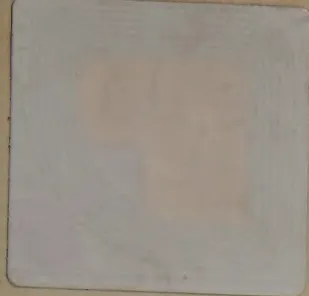
A small, square, light-colored label or sticker is positioned in the top-left corner of a textured, tan-colored surface. The label has a slightly irregular, rounded shape and contains some faint, illegible markings or a faded image. The background surface has a fine, pebbled texture and shows some minor creases and discoloration.